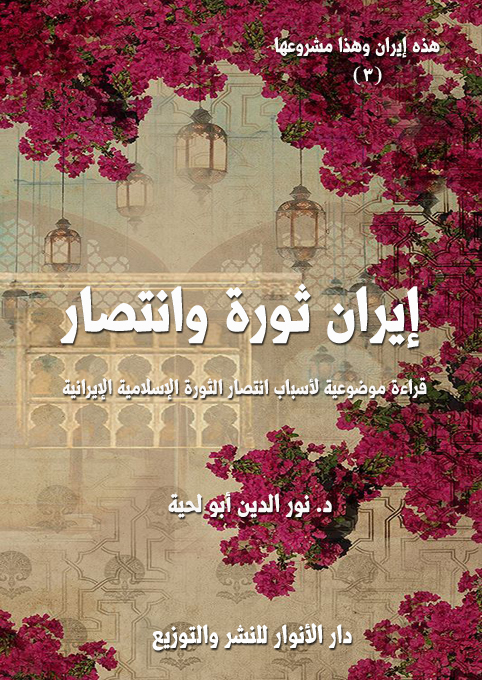

الكتاب: إيران ثورة وانتصار
الوصف: قراءة موضوعية لأسباب انتصار الثورة الإسلامية الإيرانية
السلسلة: هذه إيران وهذا مشروعها
المؤلف: أ.د. نور الدين أبو لحية
الناشر: مؤسسة العرفان للثقافة الإسلامية
الطبعة: الأولى، 1440 هـ
عدد الصفحات: 357
صيغة: PDF
ISBN: 978-620-3-85919-5
لمطالعة الكتاب من تطبيق مؤلفاتي المجاني وهو أحسن وأيسر: هنا

التعريف بالكتاب
هذا ليس كتابا في تاريخ الثورة الإيرانية، ولا في تفاصيل أحداثها، وإنما هو محاولة للتعرف على أسرار انتصارها، باعتبارها نموذجا مثاليا لم يحدث مثله في التاريخ.
وهو يستند في تحليلاته واستنباطاته بالدرجة الأولى لقادة الثورة أنفسهم، ذلك أنهم أولى من يتحدث عن الثورة، وهم أعرف بها من غيرهم، ومن الخطأ الكبير الذي وقع فيه بعض المؤرخين لهذه الثورة تجاوزهم لأولئك القادة، وتطبيقهم لتفكيرهم الرغبوي عليها.
وهو لذلك يهدف إلى القراءة الموضوعية والعميقة للثورة الإسلامية، ورد كل الشبه التي استهدفتها، واستعملت كل الوسائل لتشويهها، منذ انطلاقتها وإلى الآن.
وهو أيضا قراءة اعتبارية لهذه الثورة بناء على الرؤية القرآنية لسنن النصر في الثورات، عساها تصحح تلك الأخطاء الكثيرة التي وقعت فيها الثورات العربية، نتيجة عدم استفادتها من تلك العبر، وهو ما جعلها تنحرف عن مسارها، أو تنهزم هزيمة نكراء، أو تتحول إلى أداة من أدوات الحرب الناعمة لضرب الأمن والاستقرار.
إيران ثورة وانتصار (6)
يحاول هذا الكتاب التعرف على الأسباب الموضوعية لانتصار الثورة الإسلامية الإيرانية، واستمرار ذلك الانتصار، بل تصاعده طيلة أربعة عقود على الرغم من كل أنواع الحروب العالمية التي شنت على إيران وثورتها الإسلامية، والتي شملت الحروب العسكرية والسياسية والاقتصادية والثقافية، بل حتى الدينية، حيث ترك الكثير ممن يزعمون لأنفسهم الوصاية على الدين كل مشاريعهم في تربية المجتمعات وتهذيبها، وتفرغوا لتشويه إيران وحربها.
وقد اهتممنا بالجانب الموضوعي الذي دلت عليه الوثائق التاريخية المنصفة والمحايدة، ودل عليه قبل ذلك تراث قادة الثورة الإسلامية ومؤسسيها، باعتبارها المصادر الأساسية التي تعرف بحقيقة الانتصار من الداخل، لا من الخارج، ذلك أن أهل مكة أدرى بشعابها.
وقد دعانا إلى هذا قسمان من الدوافع:
القسم الأول: مرتبط بما قدمته الثورة الإسلامية الإيرانية للمحيط الداخلي والخارجي من خدمات أثرت فيه بطرق مباشرة وغير مباشرة، ومن جملة هذه التأثيرات:
1. تأثيرها على العالم الإسلامي، وخصوصا القضية الفلسطينية، حيث أنها ظهرت في وقت خطير جدا، كانت الصهيونية فيه قد أعدت عدتها، مع حليفها الأكبر أمريكا للقيام بتطبيع شامل مع الدول العربية، يكون مقدمة بعدها ذلك لتطبيعها مع العالم الإسلامي.. لكن شاء الله أن يكون ذلك العنفوان الذي حصل للصهيونية في تلك الفترة ميلادا للانتصار الذي صار يهددها وجوديا.
2. تأثيرها على العالم، وعلى المتدينين فيه، وخصوصا المسلمين، حيث أنها ألغت تلك المقولة التي كان يرددها الشيوعيون حينها، والتي تنص على أن الدين أفيون الشعوب، حيث
إيران ثورة وانتصار (7)
اكتشف العالم قدرة الدين ورجل الدين على أن يخلص الناس من الاستبداد والقهر والظلم من غير أن يكسب لنفسه أي مكاسب، ولهذا، حصل ذلك الشرخ الكبير للاتحاد السوفيتي الذي كان يمثل الشيوعية حينها، والذي سرعان ما انهار بعده.
3. تأثيرها على الحركات الإسلامية بمختلف أشكالها، والتي دفعها ذلك الانتصار للانتشار والتمدد في المجتمعات الإسلامية، ولو أن الحظ حالفها، فتحالفت مع الثورة الإسلامية لكان وضعها الآن مختلفا، لكنها للأسف استجابت للمخططات الصهيونية والأمريكية، وبدل أن تستعين بانتصار الثورة، راحت إلى الخندق المواجه لها.
4. تأثيرها الداخلي على الإيرانيين الذي ذاقوا طعم النصر لأول مرة في تاريخهم الطويل؛ فلأول مرة تحكم إيران في ظل جمهورية إسلامية، للشعب فيها كامل حريته في تحقيق مطالبه وتنفيذها، وقد كان لذلك أثره الكبير في الانطلاقة الحضارية الجديدة، والتي لم يشهد الإيرانيون، ولا العالم الإسلامي نظيرا لها من قبل.
القسم الثاني: مرتبط بمحاولة الاستفادة من نجاح هذه الثورة في التعرف على أسباب الانتصار التي يمكن تعميمها للخروج من حالة الهزيمة التي عاشتها كل الثورات في العالم الإسلامي.
ذلك أن الثورة الإسلامية تعتبر من أحسن النماذج التاريخية لانتصار القيم العقدية على كل القيم المادية، فالإيرانيون استطاعوا بصبرهم على الحصار والحروب التي فرضت عليهم، أن يبرزوا مدى دور العقيدة في تحقيق الانتصار والصبر عليه، وتحقيق المنجزات في ظله.
وفوق ذلك تمكنوا من إعطاء نموذج للحكم الإسلامي، لا يوجد له نظير في جميع التاريخ الإسلامي، ولذلك يمكن اعتبار الثورة الإسلامية الإيرانية نموذجا تاريخيا مميزا لا نجد له نظيرا في التاريخ جميعا، الإسلامي وغير الإسلامي.
وفوق ذلك كله تلك الضمانات الكبرى التي استطاع قادة الثورة الإسلامية بمعونة
إيران ثورة وانتصار (8)
شعبهم أن يكفلوها، وهي الحصانة التامة من كل أنواع الحروب الصلبة والناعمة، ولذلك لم تستطع كل جحافل الأعداء المتربصين بهم أن تحرك ساكنا يؤثر فيهم.
وقد رأينا من خلال استقراء الأسباب التي قام عليها انتصار الثورة الإسلامية الإيرانية، أن نكتشف خمسة أسباب كبرى، يمكن اعتبارها أركانا أساسية لا يمكن أن تنجح أي ثورة من دونها، وهي:
1. القيادة الرشيدة: ذلك أن كل ثورة تحتاج إلى إمام يحركها، ويقوم بتوجيهها، ولا يمكن أن تنجح أي ثورة من دون قائد أو إمام، وقد حظيت الثورة الإسلامية الإيرانية بشخصيات فذة، جمعت كل صفات القيادة الحكيمة، وهي شخصية إماميها الخميني والخامنئي، اللذين بدأ أولهما مسيرة قيادة الثورة، وأكملها الثاني، بكل وفاء، وبنفس المبادئ والقيم.
2. الطاقات البشرية: ذلك أن الجماهير هي التي تمارس ـ تحت توجيهات قيادتها الرشيدة ـ كل الأساليب والوسائل، وتقدم كل التضحيات التي تساهم في انتصار الثورة، وبقدر تنوع تلك الطاقات، ونفوذها في المحال المختلفة، بقدر نجاح الثورة في تحقيق مطالبها، وفي أقصر مدة.
3. المطالب الشرعية: ذلك أن المطالب إن لم تكن معقولة، ولا واضحة، ولا في خدمة الثائرين، لن تحرك فيهم دوافع الثورة.
4. الأساليب الحكيمة: ذلك أنها إن لم تكن مضبوطة ودقيقة ومستوعبة لكل الاحتمالات، فستفشل الثورة لا محالة.
5. الحفاظ على المكاسب: ذلك أن الثورة قد تنتصر انتصارها المبدئي والجزئي، لكنها إن لم تكن تحمل مشروعا كاملا يضمن لها البقاء، فستنقطع بها السبل، ولا يتحقق لها الانتصار الحقيقي الكامل والشامل والمستمر.
إيران ثورة وانتصار (9)
بناء على هذه الأسباب قسمنا هذا الكتاب إلى خمسة فصول تناولنا في كل فصل تحليلا للسبب وأهميته، بناء على ما ورد في القرآن الكريم من ذكر أسباب النصر، ثم حاولنا تطبيقها على الواقع الإيراني إبان الثورة وبعدها.
بالإضافة إلى ذلك، وبناء على ما ذكرناه في القسم الثاني من الدوافع، فقد حاولنا أن نقارن بين الثورة الإسلامية الإيرانية وغيرها من الثورات في كل جانب من الجوانب، لنبين أسباب النصر والهزيمة، لأن الغاية من الكتاب كما ذكرنا تتجاوز التجربة الإيرانية، لتحاول تعميمها على سائر بلاد العالم الإسلامي، ليتخلص من كل أسباب الهزيمة، ويتحقق بكل أسباب النصر.
إيران ثورة وانتصار (10)
الثورة الإسلامية.. والقيادة الرشيدة
الركن الأكبر من أركان انتصار الثورة الإسلامية الإيرانية، ومثلها انتصار أي ثورة، توفر القائد الذي يستطيع أن يحرك الشعب، ولو تأملنا كل أسباب الهزيمة التي نزلت بجميع الثورات العربية، وخصوصا ما يطلق عليه [الربيع العربي] نجد أنه يمكن اجتماعها في افتقادها للقائد، حيث أنها تحولت إلى حركة عشوائية فوضوية غير مضبوطة، ولذلك سهل اختراقها، وتحويلها عن مسارها الصحيح الذي يخدم الشعب والدولة إلى المسار الذي يخدم أعداء كليهما.
وفهم سر ذلك ليس صعبا، ذلك أن الشعب يتقمص جميعا شخصية القائد، بكل معانيها، ويتحول بذلك إلى قوة واحدة، يمكنها أن تحطم كل من يقف في طريقها، لكنها عند افتقاد القائد، يصبح لكل شخص قوته الخاصة، والتي قد تتعارض مع سائر القوى، وبذلك تأكل الثورة بعضها بعضا، ويأكل الشعب بعضه بعضا مثلما نرى في ليبيا التي لا يزال التناحر بين الثوار أنفسهم، لأنهم لم ينطلقوا من قيادة موحدة، وإنما من قيادات كثيرة، حصل التنازع بعدها على المكتسبات.
وقد وردت الإشارة القرآنية إلى هذا المعنى في مواضع مختلفة، أولها، وأكثرها صراحة ما ورد في قصة طالوت؛ فهي تشير إلى أن التخلص من الهزيمة، لا يكفي فيه توفر الجيوش فقط، وإنما يحتاج أيضا إلى توفر القائد الحكيم الذي يعرف كيف يقود الجيوش للنصر، قال تعالى: {أَلَمْ تَرَ إِلَى الْمَلَإِ مِنْ بَنِي إِسْرَائِيلَ مِنْ بَعْدِ مُوسَى إِذْ قَالُوا لِنَبِيٍّ لَهُمُ ابْعَثْ لَنَا مَلِكًا نُقَاتِلْ فِي سَبِيلِ اللَّهِ} [البقرة: 246]
ووردت الإشارة إلى ذلك أيضا في سورة القصص، وهي السورة التي وضح الله غرضها
إيران ثورة وانتصار (11)
في أولها، فقال: {وَنُرِيدُ أَنْ نَمُنَّ عَلَى الَّذِينَ اسْتُضْعِفُوا فِي الْأَرْضِ وَنَجْعَلَهُمْ أَئِمَّةً وَنَجْعَلَهُمُ الْوَارِثِينَ (5) وَنُمَكِّنَ لَهُمْ فِي الْأَرْضِ وَنُرِيَ فِرْعَوْنَ وَهَامَانَ وَجُنُودَهُمَا مِنْهُمْ مَا كَانُوا يَحْذَرُونَ (6)} [القصص: 5 ـ 6]
ثم عقب عليها مباشرة بقوله: {وَأَوْحَيْنَا إِلَى أُمِّ مُوسَى أَنْ أَرْضِعِيهِ فَإِذَا خِفْتِ عَلَيْهِ فَأَلْقِيهِ فِي الْيَمِّ وَلَا تَخَافِي وَلَا تَحْزَنِي إِنَّا رَادُّوهُ إِلَيْكِ وَجَاعِلُوهُ مِنَ الْمُرْسَلِينَ} [القصص: 7]
أي أن إرادة الله بالتمكين للمؤمنين في الأرض، وإخراجهم من طاغوت فرعون بدأ بولادة موسى عليه السلام، فهو القائد المخلص، وهو الذي كان يفتقده بنو إسرائيل، وبمجرد ولادته بدأ معه الترقي في سلم النصر.
ولم يكتف القرآن الكريم بذكر هذا الشرط فقط، وإنما أضاف إليه الشروط التي لا يمكن للقائد أن يؤدي دوره من دونها، ومنها قوله تعالى في قصة طالوت: {قَالُوا أَنَّى يَكُونُ لَهُ الْمُلْكُ عَلَيْنَا وَنَحْنُ أَحَقُّ بِالْمُلْكِ مِنْهُ وَلَمْ يُؤْتَ سَعَةً مِنَ الْمَالِ قَالَ إِنَّ اللَّهَ اصْطَفَاهُ عَلَيْكُمْ وَزَادَهُ بَسْطَةً فِي الْعِلْمِ وَالْجِسْمِ} [البقرة: 247]
ومنها قوله حكاية عن يوسف عليه السلام، وسر اختياره قائدا ومخلصا لمصر من الأزمة التي تتعرض لها: {قَالَ اجْعَلْنِي عَلَى خَزَائِنِ الْأَرْضِ إِنِّي حَفِيظٌ عَلِيمٌ} [يوسف: 55]
ومنها قوله عن موسى عليه السلام، ومواصفات القيادة فيه، قال تعالى: {قَالَتْ إِحْدَاهُمَا يَا أَبَتِ اسْتَأْجِرْهُ إِنَّ خَيْرَ مَنِ اسْتَأْجَرْتَ الْقَوِيُّ الْأَمِينُ} [القصص: 26]
وبناء على هذه النصوص جميعا ـ سواء تلك التي تشترط توفر القيادة لأي حركة تغييرية، أو تلك التي تذكر صفات القائد ـ يمكن قراءة سر نجاح الثورة الإسلامية الإيرانية؛ فقد كان للإمام الخميني الدور الكبير في نجاحها، وذلك لتوفر جميع صفات القيادة الحكيمة في شخصه، بالإضافة إلى ممارسته الصحيحة والحكيمة لدوره القيادي، وفي أحلك الظروف.
ومثله خليفته الإمام الخامنئي الذي تولى المهام الكبرى إبان حياة أستاذه الإمام الخميني،
إيران ثورة وانتصار (12)
ثم واصل المسيرة بعده، ليضمن الانتصار النهائي للثورة الإسلامية على كل المؤامرات.
وقد رأينا من خلال استقراء ما ورد في المصادر المقدسة من صفات القيادة الرشيدة، أنه يمكن اجتماعها في ست صفات:
1. المنبت الطيب للقائد، والذي يجعله ثقة لدى شعبه، ويخلصه من كل التهم التي قد تلحق به من المناوئين له، والتي قد تعتبره عميلا أو مندسا، ولهذا نرى في الكثير من الدساتير اشتراط الجنسية فيمن يتولى أي مسؤولية كبرى في البلاد، ولهذا نرى أيضا سر ذكر القرآن الكريم للمنبت الطيب للأنبياء المخلصين.
2. القدرة العلمية، بمختلف أنواعها، وذلك لأن القيادة تحتاج إلماما بمعارف مختلفة، تكون هادية للقائد لاختيار القرارات المناسبة، وفي الوقت المناسب، بالإضافة إلى أن المشروع الثوري لا يمكن أن يتأسس، ولا أن يؤتي نتاجه ما لم يكن قائما على أسس علمية عقلانية يكون لها دور في التوعية والتعبئة.
فلو لم يكن ليوسف عليه السلام علم التأويل، والعلم بكيفية الخروج من الأزمة الاقتصادية لمصر، لما استطاع أن يكون قائدا أو مخلصا لها في تلك الفترة.
3. القوة الأخلاقية والروحية، والتي تجعله محبوبا ومقبولا لدى شعبه، ذلك أن كل الشعوب تميل إلى القادة الروحيين أكثر من ميلها للقادة السياسيين، ولهذا وصف القادة في القرآن الكريم بالأمانة، وهي صفة تجمع جميع المعاني الروحية والأخلاقية.
4. قدرة القائد على البذل والتضحية، لأنها دليل صدقه وإخلاصه وبعده عن كل الأغراض الشخصية، وهذا يتجلى جليا فيما حصل للأنبياء والأئمة عليهم السلام من أنواع البلاء.
5 ـ القدرة التسييرية، والتي تقتضي التعرف على كيفية التعامل مع الشعب، والنواحي التي يمكن أن تؤثر فيه، وكيفية استدراجه لتحقيق المطالب الثورية بكل حكمة ولطف وتؤدة،
إيران ثورة وانتصار (13)
وتقتضي كذلك التعرف على كيفية التعامل مع المناوئين للشعب، والذين تقوم الثورة ضدهم، وقد أشار إلى ذلك القرآن الكريم عند ذكره لاختيار موسى عليه السلام ليوم الزينة، واجتماع الناس، ليرى الجميع آيات الله التي تؤيده، ويكون ذلك مقدمة لحراكه.
وأشار إليه عند ذكره لطالوت، وما فعله من اختبارات لجنوده، حتي يدخل المعركة بالجنود الذين تتوفر فيهم شروط النصر.
6 ـ جاذبية القائد، وقدرته على إثارة الانتباه والاهتمام، وذلك للصفات التي توفرت فيه، وقد أشار القرآن الكريم إلى ذلك في مواضع كثيرة منها ما قصه عن يوسف عليه السلام، وانجذاب أهل السجن له، ومثلهم الملك الذي قال عنه: {ائْتُونِي بِهِ أَسْتَخْلِصْهُ لِنَفْسِي} [يوسف: 54]
وهو من الشروط المهمة والضرورية، والتي أشار إليها وإلى أهميتها القرآن الكريم، كما في قوله تعالى عن مريم عليها السلام، وأسرار اصطفائها: {فَتَقَبَّلَهَا رَبُّهَا بِقَبُولٍ حَسَنٍ وَأَنْبَتَهَا نَبَاتًا حَسَنًا} [آل عمران: 37]
وسر ذلك يعود إلى أن المخلص يحتاج إلى سيرة صافية واضحة تبعد عنه كل الشبهات، التي قد يستغلها أعداؤه، لا لتشويهه فقط، وإنما لتشويه الحراك الذي يقوم به، وقد أشار القرآن الكريم إلى هذا المعنى عند ذكره لخطاب الأنبياء مع أقوامهم، فقد قال الله تعالى ملقنا رسوله صلى الله عليه وآله وسلم: {قُلْ لَوْ شَاءَ اللَّهُ مَا تَلَوْتُهُ عَلَيْكُمْ وَلَا أَدْرَاكُمْ بِهِ فَقَدْ لَبِثْتُ فِيكُمْ عُمُرًا مِنْ قَبْلِهِ أَفَلَا تَعْقِلُونَ} [يونس: 16]
وعند تطبيق هذا الشرط على الإمام الخميني وعلى الكثير من قادة الثورة الإسلامية الإيرانية، والذين اختارهم للقيادة معه وبعده، نجد هذا الشرط متوفرا، وفي أجمل وأكمل
إيران ثورة وانتصار (14)
درجاته.
فالإمام الخميني سليل أسرة هاشمية، انحدرت من سلالة الإمام موسى الكاظم، لذلك عُرف ولقِّب باسم [آية اللَّه روح اللَّه، الموسوي، الحسيني، المصطفوي، الخميني] (1)
وكان لنسب الأسرة دوره في اهتماماتها العلمية والثورية، فقد كان لجده السيد أحمد الهندي ـ بما له من مكانة اجتماعية ـ دور في الثورة والتمرد على الاستعمار البريطاني في كشمير التي كان مستقرا بها حينها، وكانت خاضعة للاستعمار البريطاني؛ فاضطرت بريطانيا لإبعاده عن كشمير في بداية القرن التاسع عشر، فاختار النجف لتكون مقره الجديد، فأقام في النجف مدة من الزمن، إلى أن جاءت جماعة من بلدة خمين الإيرانية، والتقت به، وعرضت عليه أن يعود معهم إلى بلدة خمين، فوافق السيد على ذلك، وعاد معهم، وصاهرهم، وكان من ثمرة تلك المصاهرة، أن ولد له مصطفى، والد الإمام الخميني.
ثم ما لبث والده مصطفى أن استشهد ولم تمضِ على ولادته ستّة أشهر، وذلك على أيدي قطّاع الطرق المدعومين من قِبَل الحكومة آنذاك، وذلك عام 1320 للهجرة، وقد قامت بكفالته وتربيته بعد يتمه والدته المؤمنة السيّدة هاجر، التي تنتسب لأسرة اشتُهرت بالعلم والتقوى.
وهكذا اجتمع للإمام الخميني في أول مراحل حياته، العلم والتقوى مع الألم الذي سببته المظالم التي لحقت بأسرته، والتي جعلته بعد ذلك يشن حملته الشديدة على الاستكبار والاستعمار والظلم.
بعدها انصرف الإمام الخميني بكليته للعلم، فقد درس في مدينة خمين حتى سن التاسعة عشر مقدّمات العلوم بما فيها اللغة العربية والمنطق والأصول والفقه، وفي عام 1921 م التحق بالحوزة العلمية في مدينة أراك، وبعد أن مكث فيها عاماً، هاجر إلى مدينة قم لمواصلة الدراسة
__________
(1) كتبت كتب كثيرة تؤرخ السيرة المفصلة للإمام الخميني، وقد رجعنا في هذا المحل إلى مقال بعنوان الإمام الخميني الهوية الشخصية، مجلة بقية الله، السنة 12، العدد 141، وانظر: حديث الانطلاق، أنصاري، حميد، ص 12 - 13.
إيران ثورة وانتصار (15)
في حوزتها، وهناك وفضلاً عن مواصلة دراسته على يد فقهاء ومجتهدي عصره، اهتم بدراسة علم الرياضيات والهيئة والفلسفة.
ولذلك كانت سيرته مملوءة بالطهارة والنقاء، سواء من جانبه الشخصي، الذي كان يطغي عليه الدراسة والبحث العلمي، أو من جانب أسرته التي جمعت بين العلم والثورة على الاستبداد.
وهكذا الأمر بالنسبة لخليفته الحالي السيد علي الخامنئي، والذي كان ينتمى هو الآخر لأسرة من السادة المشهورين بالعلم والتقوى، فقد كان والده آية الله الحاج السيّد جواد، من المجتهدين وعلماء مشهد المحترمين، وكان من المبلِّغين المعروفين في مشهد، وكان جدّه آية الله السيّد حسين الخامنئيّ من علماء أذربيجان، ثمّ هاجر إلى النَّجف، وأقام هناك، واشتغل بالتدريس والبحث، وكان ـ كما يذكر المؤرخون له ـ من أهل العلم والتقوى، وقضى عمره في الزهد والقناعة.
وهكذا كانت والدته كريمة حجَّة الإسلام السيّد هاشم نجف آبادي من علماء مشهد المعروفين، وكانت امرأة شريفة عالمة، وكان له دور كبير في تربية ابنها السيد علي، كما يذكر ذلك عنها.
وقد كانت نشأة السيد علي الخامنئي لا تختلف عن نشأة أستاذه الإمام الخميني، فقد جمع بين طلب العلم مع الظروف المعيشية الصعبة التي جعلته يشعر بمرارة الاستكبار والظلم، وقد عبر عن ذلك، فقال: (لقد قضيت طفولتي في عسرة شديدة خصوصًا أنَّها كانت مقارنة لأيَّام الحرب. وعلى الرغم من أنَّ مشهد كانت خارجة عن حدود الحرب، وكان كلُّ شيء فيها أكثر وفورًا وأقلَّ سعرًا نسبة إلى سائر مدن البلاد، إلاّ أنَّ وضعنا المادّيَّ كان بحيث لم نكن نتمكّن من أكل خبز الحنطة، وكنّا عادة نأكل خبز الشعير، وأحيانًا خبز الشعير والحنطة معًا، ونادرًا ما كنّا نأكل خبز الحنطة. إنّني أتذكّر بعض ليالي طفولتي حيث لم يكن في البيت شيء نأكله للعشاء،
إيران ثورة وانتصار (16)
فكانت والدتي تأخذ النقود ـ الّتي كانت جدتي تعطيها لي أو لأحد أخواني أو أخواتي أحيانًا ـ وتشتري بها الحليب أو الزبيب لنأكله مع الخبز. لقد كانت مساحة بيتنا الّذي ولدت وقضيت حوالي خمس سنوات من عمري فيه بين (60 ـ 70 مترًا) في حيّ فقير بمشهد وفيه غرفة واحدة وسردابٌ مُظلم وضيّق.. وعندما كان يحلّ علينا ضيف. وبما أنَّ والدي كان عالمًا ومرجعًا لشؤون الناس، فكان دائم الضيوف، كان علينا الذهاب إلى السرداب حتّى يذهب الضيف. وبعد فترة اشترى بعض المريدين لوالدي قطعة أرض بجوارنا وألحقوها ببيتنا، فاتسّع البيت إلى ثلاث غرف.. ولم يكن ملبسنا أفضل من ذلك، فقد كانت والدتي تخيط لنا من ملابس والدي القديمة شيئًا عجيبًا وغريبًا، كان لباسًا طويلًا يصل إلى أسفل الرُّكبة يحتوي على عدّة وصلات، طبعًا يجب أن يقال إنَّ والدي لم يكن يغيّر ملابسه بهذه السرعة، فعلى سبيل المثال بقي أحد ملابسه بلا تغيير لمدّة أربعين عامًا) (1)
وهذه النشأة لكلا القائدين كان لها أثرها البالغ في موقفهما من الاستكبار والظلم، ودعوتهما لنصرة المستضعفين، وكان لها دور كذلك في ثقة الشعب الإيراني فيهما ذلك أن الأبطال الحقيقيين هم الأبطال الذين يولدون من رحم الشعب ومعاناته، لا الذين ينظرون إليه من أبراجهم العاجية.
وكما أن مرارة اليتم لم تصرف الإمام الخميني عن طلب العلم، بل جعلته يقبل عليه بكليته، فهكذا حصل لتلميذه وخليفته السيد علي الخامنئيّ الذي التحق بالكتاتيب لتعلّم القرآن الكريم، وهو لما يتجاوز الخمس سنوات.
وبعد أن أكمل المرحلة الابتدائيّة، التحق بالدراسة المسائيّة في المدرسة الحكوميّة وحصل على الشهادة المتوسّطة، ثمَّ أنهى دراسته الثانويَّة خلال سنتين، وحصل على الشهادة الثانويَّة.
وقد حدّث عن مدى الاهتمام الذي كانت توليه أسرته لطلب العلم، على الرغم من
__________
(1) الإمام الخامنئي دام ظله القائد المرجع (ص: 13)
إيران ثورة وانتصار (17)
ظروفها الصعبة، فقال: (لقد كان والدي العامل الرئيسيّ في انتخابي طريق العلم النيّر والعلماء. ولقد شوّقني ورغّبني بذلك.. فعندما شرعت بالدروس الدينيَّة، كان الفارق في العمر بيني وبين والدي شاسعًا، إضافة إلى ذلك فقد كانت لوالدي مكانة علميَّة بارزة، وكانت لديه إجازة اجتهاد، وتخرّج على يديه الكثير من طلبة العلوم الدينيَّة في مستويات عالية، لذا لم يكن من المناسب وهو في هذه المكانة العظيمة أن يدرّسني وأنا في المرحلة الأولى من دراستي، ولم تكن لديه الرغبة ولا الصبر على ذلك. لكن نظرًا لاهتمامه بتربيتنا، فقد درّسني وأخي الأكبر ومن بعدنا درّس أخانا الأصغر، فحقّه عظيم علينا في مجال التدريس والتربية وخصوصًا عليّ، لأنّه لو لم يكن موجودًا لما وُفِّقنا في تحصيل الفقه والأصول، وقبل ذهابي إلى قمّ، حضرت. علاوة على دراستي عند والدي. الدروس العامّة في مشهد. وفي العطلة الصيفيَّة كان والدي يضع لنا برنامجًا دراسيًّا ويباشر تدريسنا، ولهذا السبب لم يحصل توقُّف في دراستي خلافًا للّذين كانوا يدرسون في الحوزات العامّة والّتي كانت تعطّل في شهري محرّم وصفر وشهر رمضان المبارك وفي العطلة الصيفيَّة. فأنهيت دروس السطوح جميعها، وشرعت بالبحث الخارج وأنا في السادسة عشر من عمري.. إنّ لدعم والدي النصيب الأوفر في تقدّمي الدراسيّ، فبلغت فترة دراستي منذ اللحظة الأولى في طلبي العلم حتّى شروعي بحث الخارج خمس سنوات ونصفا، أي أنَّني أنهيت السطوح في خمس سنوات ونصف) (1)
وهكذا كان لوالدته الدور الكبير في تربيته وتعليمه، وإتقانه للغة العربية، وقد أشاد بها كثيرا في مذكراته [إنّ مع الصبر نصرا]، فقد قال عنها: (الوالدة نجفية المولد، عربيّة اللهجة، كانت تتكلم في صباها باللهجة العربية النجفية، عارفة بالقرآن، تحسن القراءة بصوت رائع. وفي أواخر حياتها بُحَّ صوتها، فكنت أذكّرها بصوتها الحَسَن. كانت تواظب علي قراءة القرآن
__________
(1) المرجع السابق، ص 15، وانظر حديث القائد عن ذكرياته في هذا المجال في خطاب للشباب المجاهدين، ثماني مواعظ لطيفة في السلوك المعنوي، الإمام الخامنئي (ص: 28)
إيران ثورة وانتصار (18)
الكريم كلَّ يوم في مصحف مُهدي لها من والدها. وكانت طريقتها في القراءة تجتذبنا ونحن صغار، فنلتف حولها، ونصغي إلي تلاوتها. وهي كانت تغتنم الفرصة فتترجم لنا معاني بعض الآيات إلي الفارسية، وتحكي لنا قصص الأنبياء. شغفها بحياة موسي (عليه السلام) كان يدفعها لأن تقصَّ علينا حياة هذا النبي العظيم بكل تفاصيلها، وتتكلم عن موسي بإعجاب يثير فينا لهفة لاستماع أخباره) (1)
وقد كان لذلك كله أثره الكبير في تكوينه إذ مكنه من الاطلاع على الكثير من الكتب باللغة العربية والفارسية وغيرها، كما ذكرنا اهتمامه الكبير بالمطالعة في الجزء السابق من هذه السلسلة.
وهي من الصفات الأساسية الكبرى التي لا يمكن لأي ثورة ناجحة أن تتحقق من دونها، وقد أشار القرآن الكريم إلى هذا الشرط في مواضع كثيرة، مبينا أنه لا يمكن أن يقود الناس جاهل.
ومن الأمثلة على ذلك نموذج ذي القرنين الذي ذكره القرآن الكريم باعتباره مثالا للقائد الصالح، وقد ذكر أنه لم يكن ليخرج بعض الأقوام الذين مر بهم من الذلة والضياع لولا العلم الذي آتاه الله، قال تعالى: {حَتَّى إِذَا بَلَغَ بَيْنَ السَّدَّيْنِ وَجَدَ مِنْ دُونِهِمَا قَوْمًا لَا يَكَادُونَ يَفْقَهُونَ قَوْلًا (93) قَالُوا يَاذَا الْقَرْنَيْنِ إِنَّ يَأْجُوجَ وَمَأْجُوجَ مُفْسِدُونَ فِي الْأَرْضِ فَهَلْ نَجْعَلُ لَكَ خَرْجًا عَلَى أَنْ تَجْعَلَ بَيْنَنَا وَبَيْنَهُمْ سَدًّا (94) قَالَ مَا مَكَّنِّي فِيهِ رَبِّي خَيْرٌ فَأَعِينُونِي بِقُوَّةٍ أَجْعَلْ بَيْنَكُمْ وَبَيْنَهُمْ رَدْمًا (95) آتُونِي زُبَرَ الْحَدِيدِ حَتَّى إِذَا سَاوَى بَيْنَ الصَّدَفَيْنِ قَالَ انْفُخُوا حَتَّى إِذَا
__________
(1) إنّ مع الصبر نصرا، مذكرات الإمام الخامنئي العربية..
إيران ثورة وانتصار (19)
جَعَلَهُ نَارًا قَالَ آتُونِي أُفْرِغْ عَلَيْهِ قِطْرًا (96) فَمَا اسْطَاعُوا أَنْ يَظْهَرُوهُ وَمَا اسْتَطَاعُوا لَهُ نَقْبًا (97)} [الكهف: 93 ـ 97]
ومثله يوسف عليه السلام، الذي كان علمه بكيفية حفظ الزرع من الفساد، وما أوتيه من علوم التأويل دور في تخليص المصريين ومن جاورهم من المجاعة التي كانت تنتظرهم.
ومن خلال تأمل ما ورد في القرآن الكريم حول العلوم المرتبطة بهذا الجانب، نجد نوعين من العلوم يحتاج القائد لتعلمها، بل لا يمكن أن يمارس دوره من دونها:
أولها ـ العلوم المرتبطة بالعقائد والفلسفات والأفكار، والتي تمثل الجانب الفكري للشخصية القيادية.
الثاني: العلوم المرتبطة بالحياة وتجاربها المختلفة، والواقع والأقطاب المتحكمة فيه، والمجتمع والبنية المشكلة له، وغيرها من العلوم التي تجعله ينظر للواقع نظرة صحيحة بعيدة عن كل أشكال الهوى والتفكير الرغبوي.
وهذه جميعا نجدها مجتمعة لدى الإمام الخميني وخليفته الإمام الخامنئي؛ فكلاهما نال حظه من هذه المعارف، كما سنشرح بعض ذلك من خلال العنوانين التاليين:
1 ـ العلوم المرتبطة بالفلسفات والأفكار
من أهم الميزات التي طبعت الثورة الإسلامية في إيران أن جميع قادتها ابتداء من الإمام الخميني، وغيره من القادة السياسيين والفكريين كان لهم اهتمام شديد بالفلسفة، والعلوم العقلية، والتي أعطتهم القدرة على التحليل الجيد للأوضاع المختلفة، وكيفية التعامل معها.
ولذلك كانت مناهج دراستهم تختلف كثيرا عن تلك المنتشرة في العالم الإسلامي سواء في البيئة السنية أو الشيعية، ذلك أن الغالب على المدارس الدينية حفظ الفروع الفقهية، وتلقين الأصول الدينية، دون الغوص في العلوم العقلية، سواء تلك المرتبطة بالدين أو بالفلسفة عموما، وسنرى بعض النماذج على ذلك في الفصول التالية عند بيان قدرة الثورة الإسلامية على
إيران ثورة وانتصار (20)
استقطاب الفلاسفة والمفكرين، وغيرهم، وقدرتها على صياغة خطابها بلغة عقلانية مقبولة من الجميع، حتى من غير المتدينين.
ونكتفي هنا بذكر مدى اهتمام القائدين الكبيرين للثورة الإسلامية بهذه الجوانب..
أما الإمام الخميني، فتشهد له كل كتبه ومحاضراته وخطبه بالباع الطويل في الفلسفة وعلم الكلام والعرفان، وجميع العلوم العقلية، ولذلك كان يستعمل تلك التحليلات واللغة المرتبطة بها في خطاباته جميعا، حتى الخطابات الشعبية، مع تبسيطها وتيسيرها ليفهمها عامة الناس وخاصتهم.
ولذلك دور كبير في ثقة الأمة بقائدها، ذلك أنه كلما كان مستواه العلمي والفكري رفيعا، وكلما كانت خطبه راقية، كلما كانت الثقة به أعظم، لأن الشعب يشعر حينها أنه بين أيد أمينة، لها من العلم ما ينقذها من كل تهور.
ومن خلال الاطلاع على ما كتبه الإمام الخميني في هذه الجوانب، نجده فيلسوفا ومفكرا رائدا، بل صاحب مدرسة فكرية راقية، وليس مجرد شخص مقلد أو حافظ مثلما هو الحال في الكثير من أساتذة الفلسفة في الدول العربية، والذين اقتنعوا من الفلسفة بتبني أحد مدارسها والدفاع عنها دون أن تكون لهم بصمات واضحة في مجال اختصاصهم.
وقد كان لإتقانه للعلوم العقلية آثارها في مرحلة أستاذيته، حيث وفرت له الكثير من التلاميذ الكبار الذين لم يكونوا يجدون عند غيره ما يجدون عنده من العلوم، وقد كان أولئك التلاميذ هم القادة الفكريون الذين كان لهم دور كبير في نجاح الثورة الإسلامية.
وفي نفس الوقت كان لذلك آثاره السلبية في الذين يخالفون أمثال تلك العلوم، كما ذكر الإمام الخميني ذلك عن نفسه، فقال: (في مدرسة الفيضية تناول ابني الصغير المرحوم مصطفى وعاءً وشرب منه الماء، فقام أحدهم وطهَّر الوعاء لأنني كنتُ أُدرِّس الفلسفة، فقد كانت دراسة
إيران ثورة وانتصار (21)
الفلسفة والعرفان تُعَدّ ذنبًا وشِرْكًا) (1)
وأشار إليه في موضع آخر عند رده على ذلك الصراع الذي استشرى فترة طويلة في التاريخ الإسلامي بين الفقهاء والفلاسفة، فقال: (لا ينبغي لهذه الفئة أن تتعرض لتلك، ولا لتلك الفئة أن تتعرض لهذه، فكل فئة من هؤلاء تتبنّى قضية مستقلة ومسألة محدودة لحالها. عقلك أنت لا يستوعب ما هو (الفقه) مثلًا، فلماذا تعتدي على الفقه؟ عقلك لا يستوعب ما هي (الفلسفة) وما فوق الفلسفة، لماذا تتجاسر على أصحابها؟ فأنت الذي لا تستطيع أن تستوعب. فإن من لا يستطيع فهم ما تقوله تلك الطائفة أو الفئة، وما تتوخّاه لا يحقّ لهُ الاعتراض عليها، فقد يكون فكره هو محدوداً!) (2)
ثم بين المنهج الأمثل في التعامل مع كلا الصنفين من العلوم، فقال: (على الجميع أن يتكاتفوا فيما بينهم، ويتعاضدوا، يجب أن يتوحّدوا فقيهاً ومهندساً وطبيباً وطلاباً وجامعيين وطلبة مدارس، على الجميع أن يتآزروا، حتى يتمكّنوا من القيام بعمل ما، ليتخلّصوا من هذه الأعباء) (3)
ومما يدل على مدى اهتمام الإمام الخميني بكلا النوعين من العلوم الشرعية والعقلية تلك الإجابة البديهية السريعة على سؤال من بعض الصحفيين عن أهم الشخصيات والكتب التي تأثر بها ما عدا المصادر المقدسة، فقال: (لا أستطيع أن أجيب عن هذا السؤال الآن، فهو يحتاج إلى الكثير من التأمل.. لدينا الكثير من الكتب، فربما أستطيع أن أقول في الفلسفة: الملا صدرا، ومن كتب الأخبار والمعلومات: الكافي، ومن الفقه: الجواهر، فعلومنا الإسلامية غنية
__________
(1) انظر: الإمام الخميني، بيان صادر في الخامس عشر من رجب لعام 1409 هـ ق.، نقلا عن: عبد الجبار الرفاعي، مبادئ الفلسفة الإسلامية، ط 1، دار الهادي، بيروت، 2001 م.، ج 1، ص 97..
(2) صحيفة الإمام، ج 3، ص: 219.
(3) المرجع السابق، ج 3، ص: 219.
إيران ثورة وانتصار (22)
جداً، ولدينا الكثير من الكتب. ولا نستطيع إحصاءها لكم) (1)
وهكذا استطاع الإمام الخميني بفضل مزجه بين العلوم المختلفة، العقلية والنقلية أن يضم إليه كل أصناف الناس، سواء من مال منهم إلى الفقه وعلوم الفروع، أو من مال إلى العلوم العقلية بمختلف أصنافها، كما عبر عن ذلك بعض تلاميذه، فقال: (أول صفة جديرة بالاهتمام يمتاز بها الإمام هي درجته العلمية، فإن الكثير من مجتهدينا وفقهائنا قد تخصصوا في فرع واحد من فروع العلوم الإسلامية، فمنهم من تخصص بالفقه، والآخر بالأصول، وآخر بالفلسفة. ومن النادر أن يوجد مجتهد له اختصاص عام بجميع موارد الفقه، وفي الوقت نفسه له اختصاص مماثل في علم الأصول، أو أن مجتهداً في علم الأصول بالدرجة الأولى، قد اجتهد أيضاً بعلم الفقه وبالفلسفة، وقد يكون فيلسوفاً وفقيهاً في آن واحد، وأمثال هؤلاء من القلة النادرة. وفي هذا الوسط النادر نجد أن الإمام قد تجاوز الحد الطبيعي في مختلف العلوم، فهو ـ باعتراف الكثير من الأفاضل، والعلماء، وذوي الخبرة في الأصول والفلسفة وفي سائر المعارف الإسلامية ـ ليس له نظير بين المراجع وعلماء الإسلام، ليس في تاريخنا المعاصر فحسب، بل وعلى مر التاريخ، إذ قلما نجد بين الفقهاء والمجتهدين في ذلك العصر من نبغ منهم في كل العلوم والمعارف الإسلامية (عدا من كان لديه مجرد الاطلاع على بعضها)، فعلاوة على الاطلاع الكافي، فإن الإمام كان يمتلك التخصص في ذلك) (2)
وهكذا الأمر بالنسبة للإمام الخامنئي، فقد كان من المهتمين بالفلسفة والعلوم العقلية، والبارعين فيها، وخطاباته كلها ممتلئة بالدعوة للتأمل العقلي في القضايا المطروحة، ومن الأمثلة على ذلك قوله في بعض خطاباته: (إن الفلسفة لنا، ومهدها هو بلدنا. وما هو موجود في بلدنا تحت عنوان الفلسفة هو أقرب بكثير إلى الفلسفة مما هو موجود في الغرب الذي ملأ ضجيجه
__________
(1) المرجع السابق، ج 5، ص: 187.
(2) انظر: شهادة سماحة السيد حميد، الإمام قدوة في الوعي والعلم والسياسة، من كتاب الإمام الخميني قدوة، ص 63..
إيران ثورة وانتصار (23)
الآفاق. حسنا، فليفعلوا ما يريدون. وحوزاتنا هي مركز الفلسفة، والذين يتخرجون منها أساتذة كبار. وفي الجامعات أيضا فقد ترسّخ هذا الأمر بحمد الله. لهذا يجب العمل في مجال إنتاج الفكر الذي ينبعث من الرؤية الفلسفية) (1)
وهو مثل أستاذه الإمام الخميني يدعو إلى الخروج من التقليد في الفلسفة، إلى الإبداع فيها، والإبداع في كل العلوم، يقول في بعض خطاباته مشيرا إلى ذلك: (لو تمّ إعمال الاجتهاد وفق المنهج الصحيح المبني على الكتاب والسنّة، وبتلك المنهجية المنطقية المعقولة السليمة المدقّقة الناضجة فهو أمرٌ ممتاز. إن الاجتهادات، ولو استتبعت نتائج مختلفة، تؤدّي إلى الارتقاء والتقدّم. مجتهدونا وفقهاؤنا عبر تاريخ فقهنا، قدّموا آراء متباينة في المسائل المختلفة. فالتلميذ ينقض آراء أستاذه، ويأتي تلميذه لينقض عليه، فلا إشكال في ذلك، فهذا ما يؤدي إلى الارتقاء والتطور، ويجب تقوية هذا الاجتهاد في الحوزة. والاجتهاد لا يختص بالفقه، ففي العلوم العقلية وفي الفلسفة والكلام، اجتهاد أصحاب هذه الفنون ضروريٌّ، ولو لم يكن هذا الاجتهاد لأصبحنا مستنقعاً راكداً) (2)
وقد شهد له بالبراعة في هذا الجوانب خطبه الكثيرة المملوءة بالتحليلات العقلية العميقة، وشهد له بها كذلك من عرفوه من الباحثين والمفكرين، ومن الأمثلة على ذلك ما قاله الدكتور محمد علي آذرشب عند ذكره لذكرياته مع الإمام الخامنئي، وصحبته له، فقد قال عنه: (السّيد الإمام الخامنئي يجمع بين الفقاهة وبين الأدب فهو أولاً فقيه، وثانياً أديب من الدرجة الأولى ولذلك ففقاهته وأدبه يتغلّبان أو يدفعان الإنسان دفعاً إلى أن يكون متعمّقاً في اللّغة العربيّة والأدب العربي. إضافة إلى ذلك، الإمام الخامنئي يمتاز بشيءٍ آخر وهو الذّوق الأدبي. الذّوق الأدبي هو أمر مغاير لمسألة التعرّف على الأدب العربي وعلى اللغّة العربيّة. الأدباء
__________
(1) خطابات الخامنئي 2010 (ص: 317).
(2) المرجع السابق، (ص: 402)
إيران ثورة وانتصار (24)
الإيرانيّون والشعراء الإيرانيّون يعرفون السّيد الخامنئي باعتباره ناقداً عظيماً للأدب الفارسي، يعني حينما يجلس في جلساتهم يتناول الأدب الفارسي تناولاً ذوقيّاً نقديّاً ويدخل في أعماق التّجربة الشعوريّة للشاعر والأديب وهذه مسألة مهمّة على الصعيد النقدي. وكذلك هذا الناقد الكبير حينما يدخل إلى أدب آخر يتذوّقه بهذا الشكل؛ حينما يتناول السّيد الإمام الخامنئي الأدب العربي يدخل أيضاً في التجربة الشعورية للشعر ويتذّوق هذا الشعر، يعني حينما ينشد الشعر العربي أحياناً لا يستطيع أن يجلس ويقوم ويتحرك مما يدلّ على تفاعله الشديد مع الأدب. من هنا فإن فقاهته وأدبه وذوقه النقدي كانت تدفعه إلى عقد هذه الجلسات الأدبيّة الأسبوعيّة ليتناول فيها مجمل قضايا الأدب العربي واللّغة العربيّة وأيضاً قضايا العالم العربي ويتحدّث فيها باللّغة العربيّة) (1)
وعند عرض هذه المواقف الدالة على الاهتمام بجميع العلوم العقلية وغيرها، وربطها بالعلوم الشرعية، يتبين لنا الفرق الكبير بين الحركات الإسلامية والثورة الإسلامية الإيرانية، ذلك أن كل الحركات لم تول تلك العلوم العقلية أي اهتمام، بل إنها احتقرتها، وبعضها ذهب إلى حد تكفير المشتغلين بها، بسبب تأثره بالمدرسة الوهابية.
2 ـ العلوم المرتبطة بالحياة والمجتمعات
وهي من أهم العلوم التي يحتاجها القائد حتى لا يكرر التجارب الخاطئة التي وقع فيها غيره، ولذلك نرى اهتماما كبيرا من قادة الثورة الإسلامية بتفاصيل ما يجري في الواقع بجوانبه المختلفة، كما سنرى ذلك بتفصيل في سائر الفصول.
وقد أشار الإمام الخميني إلى ضرورة هذه العلوم، وذلك عند ذكره لصفات وخصائص المجتهد الجامع للشرائط، حيث قال: (يجب أن يكون المجتهد محيطاً بأمور زمانه، وليس مقبولاً
__________
(1) انظر مقالا بعنوان: هذا الكتاب سيُطلع العرب على السّبب الذي أهّل الإمام الخامنئي ليكون قائدا، د. محمد على آذرشب معدّ كتاب [إنّ مع الصبر نصرا]
إيران ثورة وانتصار (25)
للناس والشباب وحتى العوام أن يقول مرجعهم ومجتهدهم: أنا لا أعطي رأياً في المسائل السياسية.. إن معرفة طريقة مواجهة حيل وتزويرات الثقافة المسيطرة على العالم، وامتلاك البصيرة والرؤية الاقتصادية، والاطلاع على كيفية التعامل مع الاقتصاد المتحكم بالعالم، ومعرفة السياسات وحتى السياسيين، وتعليماتهم التي يملونها، وإدراك ظروف ونقاط القوة والضعف في قطبي الرأسمالية والشيوعية التي ترسم في الحقيقة استراتيجية السلطة في العالم، كل أولئك من خصائص المجتهد الجامع للشرائط.. يجب أن يتحلى المجتهد بالبراعة والذكاء والفراسة لقيادة المجتمع الإسلامي الكبير، وحتى غير الإسلامي) (1)
وعندما نطالع خطب الإمام الخميني والحوارات التي أجريت معه نرى ذلك العمق في فهم الواقع بجوانبه المختلفة، ومن الأمثلة على ذلك ما قاله في الرد على بعض الصحفيين عندما سأله قائلا: (إن سعر النفط الإيراني متدن كثيراً مقارنة بدول الأوبك. هل تعتقدون بأن سعر النفط الإيراني معقول مقارنة بالسلع الرأسمالية المستوردة من الغرب، أم تفكرون بإجراء تعديلات عليه؟)
فأجابه الإمام الخميني ببداهة: (إن الطبقة الرأسمالية الغربية، وبدافع الحصول على أكبر حجم من الأرباح وكذلك امتصاص الأزمات الاقتصادية، تسرف في استهلاك النفط إلى حد كبير دون أن تفكر بتبعات ذلك على مستقبل العالم إذا نضبت هذه المادة الحيوية.. وإن هذه الأزمة سوف تؤدي إلى فقدان الدول المنتجة للنفط قدرتها الشرائية بعد أن ينضب احتياطي النفط، كذلك ستضطر الدول الأخرى إلى دفع مبالغ باهضة من أجل الطاقة.. لذا فإن قضية النفط، لا تقتصر على الأسعار فقط التي ليست عادلة حالياً.. القضية هي أن للنفط دوره المرجو والمدروس في اقتصاد الدول، والأحرى بالدول الغنية بالنفط أن تكرس جهودها لأحداث تنمية حقيقية في اقتصاداتها وليس نمواً كاذباً، ونحن سوف ننظم سياستنا النفطية على هذا
__________
(1) المنطلق الإمام الخميني الفكر والثورة (ص: 12)
إيران ثورة وانتصار (26)
الأساس، وفي هذه الحالة سنعمل على قدم المساواة وبصورة عادلة بالنسبة إلى أسعار النفط ومشتقاته، وأسعار السلع التي نشتريها) (1)
والأمثلة على ذلك كثيرة جدا، وهي جميعا تدل على مدى استيعاب الإمام الخميني للواقع الدولي والمحلي، كما شهد له بذلك السيد علي الخامنئي حيث قال: (لقد كان يعرف إيران جيداً: فمن جهة كان يدرك موقعها الجغرافي الحساس والمصيري، ويعي جغرافيتها السياسية ومواردها الطبيعية والإنسانية، ويحيط بتطلعاتها وأهدافها وآمالها الكبيرة، ومن جهة أخرى كان محيطاً بتاريخها على مدى المئة والخمسين عاماً الأخيرة الزاخر بالمحن، وأبعاد هيمنة الأجانب ونهبهم لثرواتها، وخيانة وفساد واستبداد الأسرة البهلوية وآلاف الأسر المرتبطة بها، وما فُرض عليها من فقر وتخلف علمي وصناعي وأخلاقي و.. وأهم من ذلك كلّه إدراكه لروحية شعبها العظيم والأصيل والرشيد والمؤمن، كما أنه كان على اطلاع بأوضاع العالم والشعوب المستعمرة والدول المستكبرة والجيل الشاب التائه الحيران والمتعطش للحقيقة، ولا سيما الأوضاع المؤسفة للدول والأمة الإسلامية. وكان يتألم لكل ذلك. وكانت القضية الفلسطينية ومعاناتها المؤلمة تعتصر قلبه الكبير) (2)
وهكذا نجد الإمام الخامنئي يهتم بكل ما يرتبط بالجوانب المختلفة من الحياة، ويتحدث فيها حديث العالم الخبير، كما سنرى ذلك في الفصول التالية، وهو لا يكتفي بنفسه، بل إنه يدعو في خطاباته الموجهة للمسؤولين والطبقة المثقفة في المجتمع إلى التعرف على كل الأفكار والاتجاهات والمذاهب ودراسة التاريخ والواقع دراسة علمية، حتى تقام كل المشاريع على أسسها.
ومن الأمثلة على ذلك ما جاء في خطاب له حول المرأة، يبين فيه الفرق بين الحقوق التي
__________
(1) صحيفة الإمام، ج 4، ص: 367.
(2) وذلك في تقديمه لصحيفة الإمام، ج 1، ص: 11.
إيران ثورة وانتصار (27)
أعطاها إياها الإسلام مقارنة بالحقوق التي توهم الغرب أنه أعطاها لها، حيث قال: (بالطبع، هذا لا يعني أن نظنّ بأنّ الغربيين متقدّمون علينا في هذا المجال؛ أبداً.. لدى هذا العبد إحصاءات كثيرة عن ذلك؛ وباليقين إنّ الوضع الداخلي للأسرة الغربية من ناحية مظلومية المرأة وعدم رعاية حقوقها هو أسوأ من وضع الأسر الإسلامية والإيرانية والشرقية، وما لم تكن أسوأ، فهي ليست أفضل؛ وفي بعض الموارد هي أسوأ.. نحن إذاً لا ننظر إليهم وهم ليسوا قدوتنا) (1)
والإمام الخامنئي لا يكتفي في خطاباته بالدعوة للاهتمام بهذا النوع من العلوم، وإنما يدعو كل حين إلى الإبداع فيها، ومن الأمثلة على ذلك ما ذكره في خطاب له مع بعض المثقفين قال فيه: (هناك مسألة بيّنتها هذه السيّدة المحترمة بما يتعلّق بالعلوم الإنسانية وهي صحيحة تماماً. أولاً، هذا المطلب الذي ذُكر كان مدروساً بدقّة. ما يُقال من أنّ تطور الفكر يقف خلف تقدّم العلوم، وما يُقال من أنّ مبدأ التغيّر والتحول في الشعوب قبل العلم والتجربة هو الفكر، هو كلامٌ صحيحٌ تماماً ومُثبت. ولهذا أنا أظهر حساسية تجاه قضايا العلوم الإنسانية. نحن لم نقل إنّه لا ينبغي أن نستفيد بأيّ شكلٍ من الأشكال من معارف الغربيين التي كان فيها الكثير من الطفرات وعبر قرون عدة في مجالات العلوم الإنسانية المختلفة أو أن لا نقرأ كتبهم، لكن ما نقوله هو أن لا تقلّدوا. وهذه السيّدة في كلمتها أشارت إلى هذه المسألة وهي مسألة صحيحة) (2)
ثم أضاف مبينا سر الدعوة للانفتاح على الثقافات المختلفة، ولكن وفق المنهج الإسلامي: (إنّ مباني العلوم الإنسانية في الغرب تنبع من الفكر المادّي، وكلّ من اطّلع على تاريخ النهضة ولديه معرفة بذلك وتعرّف إلى شخصيّات هذا العصر، فإنّه سيصل إلى هذه
__________
(1) خطابات الخامنئي 2011 (ص: 166)
(2) المرجع السابق، (ص: 296)
إيران ثورة وانتصار (28)
النتيجة قطعاً. حسناً، لقد كانت النهضة مبدأ التغيّرات المختلفة في الغرب، لكنّ المباني الفكرية الموجودة عندنا تختلف عن مبانيهم. ولا يوجد أي إشكال في أن نستفيد نحن من علم النفس، وعلم الاجتماع، والفلسفة، وعلوم الاتصالات، وجميع الفروع العلمية الإنسانية التي ابتُكرت في الغرب أو توسّعت هناك. لقد قلت مراراً إّننا لا نشعر بالمذلّة من التعلّم بأي شكلٍ من الأشكال. علينا أن نتعلّم، نتعلّم من الشرق ومن الغرب، (اطلب العلم ولو في الصين)، فهذا أمرٌ واضحٌ. إنّنا نشعر بالمذلّة عندما لا يكون هذا التعلّم مؤدياً إلى المعرفة والوعي والقدرة على التفكّر عندنا. فلا ينبغي أن نبقى دائماً تلامذة، نكون تلامذة حتى نصبح أساتذة. والغربيون لا يريدون هذا الأمر، لقد كانت السياسة الاستعمارية للغرب مبنيّة ومنذ البداية على هذا، حيث أرادوا أن يكون هناك في العالم تمييز وهويتان، ومستويان في القضايا العلمية) (1)
ثم بين أهمية دراسة التاريخ، فقال: (فالتاريخ، أحد العلوم الإنسانية: التاريخ الذي أوصي مرة أخرى بقراءته، طالعوا التاريخ في عصر الاستعمار لتروا أيّة انتهاكات ارتكبها الغربيون في هذا المجال، بالرغم من ظاهرهم الأنيق المعطّر والمنظّم والمرتّب وادّعاءاتهم حول حقوق الإنسان. لم يكتفوا بقتل البشر، بل سعوا كثيراً لإبعاد الشعوب المستعمَرة عن مجال التقدّم وسلبها إمكانية التطوّر في جميع المجالات. وما نريده نحن هو أن لا يحصل هذا الأمر. نحن نقول ادرسوا العلوم الإنسانية لكي تتمكّنوا من إنتاجها بشكلها المحلّي، وبعدها صدّروها إلى العالم. أجل، عندما يحدث هذا، فإنّ كلّ من يتخرّج من محيطنا سيكون مورد أملنا واعتمادنا. لهذا نحن نقول أن لا نكون مقلّدين في هذه العلوم. هذا هو كلامنا في مجال العلوم الإنسانية) (2)
ثالثا ـ الصفات الأخلاقية والروحية للقائد
__________
(1) المرجع السابق، (ص: 296)
(2) المرجع السابق، (ص: 297)
إيران ثورة وانتصار (29)
وهي من الصفات الأساسية للقائد الناجح، وخاصة إذا كان يحمل هدفا رساليا يدعو به إلى ما دعا إليه الأنبياء عليهم السلام وورثتهم، ذلك أن الأخلاق هي جوهر الدين، ومظهره الأكبر، ولا يمكن للقائد أن يكون ممثلا للدين دون أن يكون متحليا بما يتطلبه من أخلاق.
وقد أشار إلى هذا النوع من الشروط قوله تعالى في وصف رسول الله صلى الله عليه وآله وسلم: {فَبِمَا رَحْمَةٍ مِنَ اللَّهِ لِنْتَ لَهُمْ وَلَوْ كُنْتَ فَظًّا غَلِيظَ الْقَلْبِ لَانْفَضُّوا مِنْ حَوْلِكَ فَاعْفُ عَنْهُمْ وَاسْتَغْفِرْ لَهُمْ وَشَاوِرْهُمْ فِي الْأَمْرِ فَإِذَا عَزَمْتَ فَتَوَكَّلْ عَلَى اللَّهِ إِنَّ اللَّهَ يُحِبُّ الْمُتَوَكِّلِينَ} [آل عمران: 159]
وعند تطبيق هذا الشرط على إمامي الثورة الإسلامية الإيرانية الخميني والخامنئي نجده في أرقى درجاته؛ فكلاهما يمثلان القيم الرفيعة للأخلاق والروحانية السامية، وكل من رآهما وصحبهما شهد لهما بذلك، وذلك من أكبر أسباب انجذاب الإيرانيين لهما، فلا يمكن للقائد الذي لا يضبط سلوكه أن ينجح في التأثير، بل إن فضائحه قد تجعله غرضا لكل السهام.
وقد اعتبر الإمام الخامنئي هذه الصفة من أهم صفات الإمام الخميني، وسر كل ما حققه من نجاح، يقول عنه: (أودّ الإشارة على هامش الحديث إلى أنّ جهاد هذا الرجل العظيم لا يقتصر على الجهاد السياسي والاجتماعي أو الجهاد الفكري، وإنّما رافق كلَّ حالات الجهاد هذه جهادُ الباطن وجهادُ النفس والالتزام بالارتباط الدائم والمستمر بالله سبحانه وتعالى، وهذا درس لنا؛ إذا ما خضنا ساحة الجهاد الفكري أو الجهاد العلمي أو الجهاد السياسي فهذا لا يعني أنه يحقّ لنا الإعراض عن هذا القسم من الجهاد، لقد كان إمامنا العظيم من أهل الخشوع والبكاء والدعاء والتوسل والتضرع. ولطالما كرّر في شهر شعبان المبارك هذه الفقرة من المناجاة الشعبانية خلال كلماته قائلًا: (إِلهي هَب لي کَمالَ الِانقِطاعِ إِليكَ وَأَنِر أَبصارَ قُلوبِنا بِضِياءِ نَظَرِها إِلَيكَ حَتَّي تَخرِقَ أَبصارُ القُلوبِ حُجُبَ النّورِ فَتَصِلَ إِلي مَعدِنِ العَظَمَة)؛ هكذا كان سلوك الإمام. فإنّ بكاءه في الأسحار، ومناجاته، ودعاءه، واتصاله الدائم، كلّها كانت تشكّل الدعم
إيران ثورة وانتصار (30)
المعنوي لمتابعة واستمرار جهاد هذا الرجل العظيم) (1)
ومن يطالع بيانات وخطب وكلمات الإمام الخميني يلاحظ هذه المعاني بكل سهولة، ومن الأمثلة على ذلك قوله في تأبين السيد أشرفي أصفهاني، وبيان صفاته، وكونها ممثلة للشخصية الإسلامية: (كم هم سعداء أولئك الذين يمضون العمر في خدمة الإسلام والمسلمين، وينالون في آخر العمر الفاني، الفيض العظيم الذي يتمناه عشاق لقاء الله.. كم هم سعداء وفي منزلة سامية، أولئك الذين سعوا طوال حياتهم إلى تهذيب النفس والجهاد الأكبر، والتحقوا في نهاية حياتهم بكل فخر، بركب الشهداء على طريق الحق وفي سبيل تحقيق الأهداف الإلهية.. كم هم سعداء ومنتصرون أولئك الذين لا يقعون في الشراك الشيطانية والوساوس النفسانية خلال رحلتهم في الحياة بكل تعرجاتها وسموها ودناءتها، واخترقوا آخر حجاب بينهم وبين المحبوب، بتضرجهم بدماء الشهادة، والالتحاق بمقر المجاهدين في سبيل الله.. كم هم سعداء ومحظوظون أولئك الذين أداروا ظهورهم للدنيا وزخارفها، وقضوا العمر بالزهد والتقوى، وفازوا بأسمى مدارج السعادة في محراب العبادة وفي خلال إقامة الجمعة، على يد أحد المنافقين والمنحرفين الأشقياء، والتحقوا بأسمى شهداء المحراب الذين التحقوا بالملأ الأعلى بفعل اليد الخائنة لأشقى الأشقياء) (2)
هذه هي القيم النبيلة التي مثلها الإمام الخميني في حياته جميعا، ولذلك استطاع أن يزرع في كل قادة الثورة الذين تأثروا به هذه المعاني، والتي أخرجت لنا جيلا من المفكرين والساسة لم يكن له نظير على مدار التاريخ، كما عبر عن ذلك الإمام الخامنئي بقوله: (لقد كنّا في الحقيقة أمواتاً فأحيانا الإمام، وكنّا ضلاّلاً فهدانا الإمام، وكنّا غافلين عن الوظائف الكبرى للإنسان
__________
(1) كلمة الإمام الخامنئي دام ظله في الذكرى السادسة والعشرين لرحيل الإمام الخميني، شبكة المعارف الإسلامية.
(2) صحيفة الإمام، ج 17، ص: 48.
إيران ثورة وانتصار (31)
المسلم فأيقظنا الإمام وأرشدنا إلى سواء السبيل، بحيث أمسك أيدينا وشجّعنا على المسير، وكان هو في طليعة السائرين) (1)
وقد كان الإمام الخميني ينتهج في حياته جميعا نهج الإمام علي، الذي ملك عليه كل كيانه، حيث كان كثير الذكر له، وللقيم النبيلة التي مثلها، ومن الأمثلة على ذلك موعظته التي ألقاها على جمع من أعضاء الفريق الوطني وهيئة رفع الأثقال في طهران، فقد قال لهم فيها: (إنكم وكما تتدربون وتعملون على تقوية عضلاتكم سوف تكونون مفيدين إن شاء الله لبلدكم في المستقبل، لابد لكم من التربية الرياضية لجميع أبعادكم الوجودية. فهذا علي (عليه السلام) نجد اسمه أمامنا أينما ذهبنا، عندما نذهب إلى الفقهاء نجد فقه علي، عندما نذهب إلى الزهاد نجد زهد علي، وإذا ذهبنا إلى المتصوفة نجدهم يذكرون أن التصوف مأخوذ من علي، حتى عندما نذهب إلى الرياضيين فإننا نجدهم يقولون أيضاً: علي. ويبدؤون باسم علي.. فعلي هذا فيه كل شيء. ويجب أن يكون قدوة لنا. ففي العبادة هو فوق جميع العبَّاد، وفي الزهد فوق جميع الزهَّاد، وفي الحرب فوق جميع المحاربين، وفي القوة فوق جميع الأقوياء وهو أعجوبة إذ يجمع فيه الأضداد، فالإنسان العابد لا يمكنه عادة أن يكون رياضياً، الإنسان الزاهد لا يمكنه أن يكون مقاتلًا. الفقيه لا يمكنه فعل هذه الأمور أيضاً) (2)
ولا يمكننا هنا أن نذكر الشواهد التي تدل على مدى روحانية الإمام الخميني وأخلاقه العالية، فقد ألفت في ذلك المؤلفات الكثيرة، وشهد له كل من عرفه بذلك، ولكنا سنقتصر على هذه الشهادة التي عبر عنها بعض المقربين منه (3)، فقال: (ليلة (5 نيسان 1964 م) نقلت السلطة الإمام من سجنه في طهران إلى مدينة قم المقدسة، وما إن وصلنا مدينة قم في نحو
__________
(1) معارف الإسلام، ص 404.
(2) صحيفة الإمام، ج 7، ص: 201.
(3) انظر: شهادة السيد حميد، الإمام قدوة في الوعي والعلم والسياسة، من كتاب الإمام الخميني قدوة، ص 63.
إيران ثورة وانتصار (32)
الساعة العاشرة حتى هب الأهالي بجموعهم الغفيرة لاستقبال الإمام وبصورة لا توصف من الازدحام الذي اكتنف المنزل حتى الساعة 12.30 ليلاً، وبعد جهدٍ ومحاولات إقناع تفرق الناس إلى منازلهم. ولقد شاهد الذين رافقوا الإمام والمقيمون في المنزل، أنه بعد أن استراح سماحته فترة لا تتجاوز الساعتين نهض لأداء النوافل والتهجد، ولقد أكّد لي الأخوة الذين قضوا فترة من حياتهم بمعيّة الإمام، أنه منذ أكثر من خمسين عاماً والإمام لم يكن يغمض له جفن قبيل بزوغ الفجر) (1)
ثم ذكر أنه عندما طُبعت رسالته العملية (تحرير الوسيلة) في النجف الأشرف كتب الناشر على غلافها عبارة (زعيم الحوزة العلمية) قبل اسم الإمام، ولما كانت عبارة (زعيم الحوزة العلمية) تُطلق آنذاك على السيد الخوئي، (فإن الإمام ـ وحينما طالع تلك العبارة على غلاف كتابه ـ لم يرضَ بها، فطلب المسؤول عن ذلك وسأله عمَّن خوّله كتابة تلك العبارة، وأبلغه أنه إذا لم تُحذف هذه العبارة عن الكتاب، فسوف ترمى جميع نسخ الكتاب في النهر، مما اضطر القائمين بالطبع إلى اتخاذ ما يلزم لمحو العبارة المذكورة، ولئلاّ يظهر شيء منها، ولازالت بعض النسخ الموجودة منها شاهدة على ذلك) (2)
ثم ذكر من تواضعه وعدم اهتمامه بالمسائل الدنيوية، أنه (في مجالس التأبين والفواتح التي كانت تقام في النجف الأشرف عند وفاة العلماء كان سماحته ينتظر انتهاء العلماء ـ الذين هم من الطراز الأول ـ من إقامة مجالس الفاتحة، ثم الطراز الثاني، ويأتي دور الطلاب وأفاضل الحوزة، وبعد انتهاء هؤلاء جميعاً يقيم الإمام مجلس الفاتحة.. ولما توفي المرجع المرحوم السيد الحكيم وأقيمت مجالس الفاتحة في النجف الأشرف على روحه الطيبة، كان مجلس الفاتحة المقام بأمر من الإمام آخر هذه المجالس. ومن الطريف في الأمر أن يتمّ الإعلان عن ذلك عبر
__________
(1) الإمام الخميني قدوة (ص: 63)
(2) المرجع السابق، (ص: 63)
إيران ثورة وانتصار (33)
مكبرات الصوت في مآذن الحرم المطهر بالقول بأن السيد الخميني يقيم مجلس الفاتحة بهذه المناسبة، والاكتفاء بتحديد الزمان والمكان لتنبيه الجمهور إلى ذلك، وقد قرأ المُعلن اسم الإمام مجرداً عن عبارات التعظيم والاحترام، مما حدا بالسامعين إلى أن يهاجموه، وكادوا أن يضربوه؛ فقد حسبوه يتعمد الحط من منزلة الإمام، لولا إفصاحه بأن ذلك لم يكن عن تقصير منه، وإنما كان حسب إيعاز صادر من الإمام نفسه بأن يقول ما قال ولا يزيد على ذلك حرفاً واحداً!) (1)
وهكذا ذكر شاهد آخر (2) كيف كانت حياة الإمام الخميني ممتلئة بالبساطة والزهد، فقال: (طوال مدة إقامته في النجف الأشرف، كان الإمام يسكن في بيت مستأجر بسيط وعتيق في أحد أزقة شارع الرسول صلى الله عليه وآله وسلم حاله كحال المئات من طلبة الحوزة العاديين، وبقي على هذا الحال بعد انتصار الثورة، سواء أيام إقامته القصيرة في قم، أو في ما يقارب عشرة أعوام قضاها في منطقة جمران في طهران، فكان حاله في مسكنه حال الكثير من المستضعفين الفقراء، يعيش في منزل مستأجر، وكان منزله في جمران صغيراً لا تتجاوز مساحته (120) متراً مربعاً، مساحة البناء (70) متراً والبقية ساحة البيت)
وقال آخر (3) يذكر كيف كان يعيش الإمام الخميني في النجف الأشرف: (كان منزل السيد الخميني قده في النجف الأشرف صغيراً وبسيطاً للغاية لا تتجاوز مساحة ساحته (14) متراً مربعاً ويشتمل على بضع غرف في طابقه الأرضي وغرفة كبيرة في الطابق العلوي لم تصبغ منذ سنين طويلة، فصارت بحالة مزرية، والمنزل كان مستأجراً فقلت للمرحوم الشيخ الإشراقي: يمكنكم إخراج البيت من هذه الحالة بتعمير جانب منه وطلي جانب الآخر، فقال: لقد اقترحت ذلك على السيد الخميني، بل وأعلنت له عن استعدادي للقيام بذلك من أموالي
__________
(1) المرجع السابق، (ص: 64)
(2) هذه شهادة حجة الإسلام والمسلمين رحيميان، من كتاب: قبسات من سيرة الإمام الخميني -الحياة الشخصية (ص: 48)
(3) هو آية الله الشيخ محمد الفاضل اللنكراني، كتاب (حوادث خاصة من حياة الإمام الخميني) ج:6، نقلا عن المرجع السابق.
إيران ثورة وانتصار (34)
الخاصة وليس من بيت المال، لكنه لم يوافق وقال: ليبق البيت على حاله، فهو ملك صاحبه والتصرف فيه من شأنه، فلا معنى لأن نقوم بإعماره وصبغه وإظهاره بحالة لا تتناسب وزي رجال الدين)
وقال آخر (1): (لم يكن قسم الاستقبال في بيت الإمام في النجف الأشرف مفروشاً بالكامل، بمعنى أن قسماً من هذه الغرفة التي كان يجلس فيها مساءً، كان خالياً فطلبت منه أن يسمح بشراء ما نسد به هذا النقص، فقال: يوجد في داخل المنزل بساط إضافي، فقلت: إنه بساط متواضع كما أنه لا يناسب المفروش في هذه الغرفة، فأجابني: وهل هذا بيت الصدر الأعظم؟! فقلت: بل هو بيت من هو أعظم، إنه بيت إمام الزمان. فقال: وما يدريك أن المفروش في بيت إمام الزمان نفسه خير من هذا؟!)
وقال آخر (2): (كان الإمام وأولاده يعيشون عيش أبسط طالب في الحوزة رغم الإمكانات المادية [بيت المال] كانت بأيديهم وكان بالإمكان تبرير استفادتهم منها.. كان بيت الإمام قديماً جداً ويخلو من أي مظهر من مظاهر الزينة والإمكانات المتعارفة، وقد سقط في شتاء أحد الأعوام جدار الغرفة العلوية منه، ورغم ذلك لم يرض الإمام بالانتقال منه، بل أعاد بناء الجدار وبقي في المنزل نفسه)
وقال آخر، وهو تلميذه العلامة الشيخ جعفر السبحاني: (البيت الذي كان يقطنه الإمام متوسط السعة مبني من الطين ولا زال موجوداً، وكان لأكثر من عشرين عاماً ـ ما بين عامي [1921 ـ 1945 م]ـ يعيش في منازل مستأجرة، حيث استأجر منزلاً لمدة عامين، وانتقل منه بعد أن احتاجه صاحبه، فاستأجر منزلاً آخراً.. أجل لم أر الإمام طوال (63) عاماً كنت في
__________
(1) هو حجة الإسلام والمسلمين الشيخ عبد العلي القرهي، من حاشية الإمام في النجف، كتاب (حوادث خاصة من حياة الإمام الخميني) ج:1، نقلا عن المرجع السابق.
(2) هو حجة الإسلام والمسلمين السيد محمد السجادي الأصفهاني، المصدر السابق ج 6.
إيران ثورة وانتصار (35)
خدمته بصورة متواصلة ـ باستثناء أعوام نفيه حيث انقطع ارتباطي الظاهري به ـ يضع حجراً على حجر) (1)
وهكذا نجد الإمام الخامنئي ممثلا للقيم الرفيعة والأخلاق العالية والروحانية السامية، حيث لا ينفك أي مجلس من مجالسه للدعوة لها، ومن الأمثلة العملية على ذلك ما ذكره عن نفسه، أثناء خطاب له يدعو فيه إلى بر الوالدين، والبركات المرتبطة بذلك، فقد قال فيه: (لا بأس أن أنقل لكم موضوعاً عن نفسي: أنا شخصياً، إن اعتبر لي نجاح أو توفيق في أي مجال، يتراءى لي بأنه لابد أن يكون هذا النجاح ـ بعد التدقيق والتفكير ـ نتيجة عمل صالح أسديته لوالدي) (2)
ثم راح يذكر عنايته بوالده وحرصه عليه وتركه كل مصالحه في سبيل ذلك، يقول: (أتذكر المرحوم والدي وهو في سن الشيخوخة وقبل عشرين سنة من وفاته، حيث كان في السبعين من عمره وكان مصاباً بمرض في عينيه يدعى (الماء الأسود) الذي كان يؤدي إلى العمى. في تلك الآونة وكنتُ في قم حينها وقد تعرفت شيئاً فشيئاً ـ عن طريق رسائله التي كان يبعثها إليّ ـ بأنه أصيب بالرمد، فهو لا يرى الأشياء كما ينبغي، لهذا جئتُ إلى مشهد واتضح لي أن والدي يحتاج إلى طبيب أخصائي بالعيون.. لهذا راجعنا الأطباء عدة مرات ولكن دون جدوى، فعدت بعدها إلى قم ثانية لأواصل دراستي الحوزوية، لأني كنت أسكن فيها منذ البداية.. بعد مدة بدأت العطلة في الحوزة، فذهبت إلى مشهد مرة أخرى، وعكفت على العناية بوالدي آنذاك، ثم رجعت بعدها إلى قم لأكمل دراستي، إذ أن العلاج الطبي ومراجعة الأطباء لم يؤثر في تحسين عينيه، فاضطررت أن آخذه إلى العاصمة طهران في عام 1343 هـ. ش 1964 م،
__________
(1) كتاب (خطوات في اثر الشمس) ج 3، ص: 213..
(2) حكاية البحر، سيرة الذاتية لحياة قائد الثورة الإسلامية (ص: 41)
إيران ثورة وانتصار (36)
لأن مراجعة الأطباء وإجراء وصاياهم الطبية في مشهد لم يواجه تقدماً ملحوظاً، فكنت آمل أن يتوصل الأطباء في طهران إلى نتيجة مرضية) (1)
وهكذا ذكر كيف وقف بجانبه في تلك الفترة، وترك كل شيء، فقال: (لكننا وبعد أن راجعنا بعض الأطباء في طهران، خيبّوا آمالنا وحطموا أحلامنا، وقالوا: (لقد أصيب عينا الوالد بالرمد ولا يمكن علاجها أو إصلاحها، خاصة بعد سنتين أو ثلاث سنين من استفحال المرض! لكنهم مع هذا كله، عالجوا عيناً واحدة، فكان يرى بها حتى آخر أيام حياته بعد أن فقد الرؤية ـ في تلك الفترة ـ بالمرة، فكنّا مضطرين لأن نأخذ بيده ونُسيّره هنا وهناك، لذلك كنت أتألم وأتأثر لما حصل لوالدي، فإن تركته لحاله وذهبتُ إلى قم، فسيعتزل الحياة الاجتماعية ويقبع في البيت ولن يتمكن من المطالعة ومعاشرة الناس أو القيام باي عمل آخر، وهذا بطبيعة الحال موقف حرج لا أطيقه، خاصة وأن الوالد كان مستأنساً بي إلى حد بعيد وبشكل خاص، فإنه لم يستأنس ببقية إخوتي بقدر ما كان يستأنس بي، تعوّد أن يذهب معي إلى الطبيب ولم يستسهل الذهاب مع الآخرين.. وحينما كنتُ إلى جانبه، كنتُ أقرأ له الكتب وأتباحث وأتناقش معه حول بعض المواضيع العلمية، وهذا ما دفع أبي أن يكون أكثر ارتباطاً استئناسا بي، في حين أن بقية الإخوة لم تسنح لهم مثل هذه الفرصة ليكونوا إلى جانب الوالد، أو أن هناك ظروفاً حالت دون هذه العلاقة الخاصة.. وعلى أي حال شعرتُ بأني لو تركتُ الوالد في مشهد لوحده ورجعت بعدها إلى قم فسيتحول الوالد إلى شخص عاطل وعاجز عن العمل، وبالطبع فإن هذه الحالة ستكون كارثة كبيرة بالنسبة له، وحادثة مريرة بالنسبة لي. هذا من جهة ومن جهة أخرى، إذا أردتُ أن أُساير الوالد وأترك دراستي في الحوزة العلمية، فهذا الإجراء هو الآخر
__________
(1) المرجع السابق، ص 42.
إيران ثورة وانتصار (37)
كان مُضنياً ولا يطاق أبداً؛ لأني كنت أفضل الدراسة في قم، خاصة وقد قررت من قبل، أن أبقى وأسكن فيها إلى آخر عمري ولا أخرج منها أبداً) (1)
ثم ذكر كيف استعان ببعض العرفاء الذين دلوه على الطريق الذي استطاع أن يجمع به بين رغبته في دراسة العلم والعناية بوالده، فقال: (في يوم من الأيام كنت مكتئباً مضطرباً وقلقاً جداً، من أن آخذ الوالد إلى مشهد ثم أتركه هناك وأعود إلى قم، وهذا محرج وصعب بالنسبة لي، لهذا عرجتُ لمقابلة أحد الأصدقاء، حيث كان بيته في مفترق (حسن آباد) بطهران، قصدتُ الذهاب، والرجل كان من أهل المعرفة، والحكمة والحنكة ولمّا لاحظتُ بأن صدري قد ضاق من شدة الهمّ والغمّ، اتصلت به هاتفياً وقلت له: (هل بإمكاني أن أزورك خلال الأيام القليلة القادمة؟). قال: (نعم) فذهبتُ إليه في أحد أيام الصيف وشرحتُ له الموضوع وقلت بأني مضطرب ومشغول البال وكئيب، وسبب اضطرابي وكآبتي من جهة هو أنني لا أقدر أن أترك الوالد هكذا مكفوفاً، وهذا يؤلمني كثيراً. ومن جهة أخرى إذا أردتُ أن أُساير والدي، فعليَّ أن أترك ورائي دنياي وآخرتي وأذهب مع الوالد وأبقى إلى جانبه في مشهد.. تريّث صاحبي هنيهة ثم قال: (بإمكانك أن تقوم بعمل لوجه الله وهو أن تنزع حب البقاء في قم من قِبَلك تماماً ثم تذهب إلى مشهد وتبقى هناك. وكن على ثقة بأن الله عز وجل قادر على أن ينقل دنياك وآخرتك من قم إلى مشهد، تأملت في هذا الكلام العميق مدة من الزمن، فرأيته يحمل بين طيّاته نداءً عجيباً، حيث أن الإنسان بإمكانه أن يتعامل مع الله عز وجل. كنت أتصور أن دنياي وآخرتي تقتصران وتتحددان في مدينة قم فقط. وإن كان بإمكاني البقاء في قم لكان لي أفضل، لأني كنت مولعاً بالمدينة والحوزة العلمية فيها أيضاً، وكذلك بالحجرة التي كنت أسكن فيها هناك ولهذا كان يصعب عليّ أن انتزع حبّ هذه المدينة من قلبي! لأني كنتُ أتصور بأن دنياي وآخرتي تتلخص في قم، رأيت أن هذا الرأي حسن وطيب، ولابد أن أذهب بالوالد إلى مشهد، ثم أبقى
__________
(1) المرجع السابق، ص 43.
إيران ثورة وانتصار (38)
إلى جانبه ـ لوجه الله ـ وأنا واثق بأن الله تبارك وتعالى، إن شاء فسيأتي بدنياي وآخرتي من قم إلى مشهد!) (1)
ثم ذكر حاله بعد ذلك، فقال: (بعد هذه الرؤية، اتخذت قراري الحاسم، وعندها اطمأن قلبي وزال الهمّ والغمّ عن صدري، وانتهت فترة الحرج والكآبة، وانقلب كل شيء رأساً على عقب؛ أي أنني هدأتُ تماماً، وتخلصتُ من الاضطرابات، فعدت إلى البيت بمعنويات عالية، ملؤها البِشر والفرح والهدوء والسكينة، شاهدني الوالد والوالدة مراراً ـ في أول مرة ـ كئيباً مضطرباً، لهذا استغربا في الآونة الأخيرة من فرحتي وبشاشتي، فاستبقتهما بقولي: (أجل، لقد قررتُ أن أرجع معكم إلى مشهد لم يصدقا ما سمعاه منّي في البداية، لأنهما كانا يستبعدان اتخاذ هذا القرار من ناحيتي؛ أي أن أترك إقامتي في قم. أجل ذهبتُ إلى مشهد، في حين أغدق الله تبارك وتعالى عليّ بتوفيقات جمّة هناك، وعلى كل حال، باشرتُ مسؤوليتي الجديدة وعكفت على الاعتناء بالوالد العزيز.. انطباعي الآن هو، أن تهيأت لي الظروف للحصول على بعض التوفيقات في الحياة، كان نتيجة إسداء تلك الخدمات للوالد، بل للوالدين. لقد ذكرت هذا الموضوع لتدركوا مدى أهمية المسألة عند الله عز وجل) (2)
هذا النموذج الأخلاقي العالي الذي تعمدنا نقله مع طوله يدل على العمق الإيماني والروحاني والأخلاقي الذي كان يفكر به الإمام الخامنئي ويعيشه، ليس في مرحلة كهولته أو شيخوخته فقط، بل ابتداء من شبابه الباكر.
رابعا ـ قدرة القائد على البذل والتضحية
__________
(1) المرجع السابق، ص 44.
(2) المرجع السابق، ص 44.
إيران ثورة وانتصار (39)
وهي من الصفات التي تميز القادة الكبار الذين يعيشون معاناة الثورة على الظلم، ويتحملون كل شيء في سبيلها، مثلما فعل الأنبياء وورثتهم عليهم السلام، والذين تعرضوا لكل أنواع المحن من أجل تحقيق العدالة، كما قال تعالى: {إنَّ الَّذِينَ يَكْفُرُونَ بِآيَاتِ اللَّهِ وَيَقْتُلُونَ النَّبِيِّينَ بِغَيْرِ حَقٍّ وَيَقْتُلُونَ الَّذِينَ يَأْمُرُونَ بِالْقِسْطِ مِنَ النَّاسِ فَبَشِّرْهُمْ بِعَذَابٍ أَلِيمٍ} [آل عمران: 21]
وقد تعرض قادة الثورة الإسلامية إلى كل أنواع المحن والآلام، بل سار الكثير منهم شهداء في ذلك الطريق المليء بالأشواك، وكان قدوتهم في ذلك جميعا الإمام الخميني الذي قضى الكثير من عمره يدفع ثمن مواقفه البطولية، فقد اعتقل وسجن ونفي، وبقي كذلك إلى أن أعاده الله إلى بلاده منتصرا، من غير أن يذعن أو يتنازل.
وقد كان اعتقاله الأول هو الشرارة التي بقيت آثارها تنتشر كل حين، لتعم إيران جميعا، وقد حصل ذلك في 5 حزيران 1963، بعد خطاب ألقاه بمناسبة العاشر من محرم (سنة 1383 للهجرة)، اعتبر فيه الشاه وإسرائيل المسؤول الأول عن معاناة الشعب الإيراني.
وكان لذلك الاعتقال آثاره في الأوساط الشعبية، حيث أثار موجة عارمة من الاحتجاجات وفجّر انتفاضة [الخامس عشر من خرداد] الواسعة، التي بادر أزلام النظام الشاهنشاهي وقواته للتصدي لها بكل قسوة ووحشية، وهكذا كانت تندلع كل حين أصناف التظاهرات والحركات المقاومة إلى أن أذن الله بنصره.
وسنذكر هنا بعض ما ارتبط بذلك من أحداث وكلمات للإمام نرى فيها قدرته على كسر شوكة الشاه وشرطته ومخابراته، وقد صارت تلك المواقف البطولية بعد ذلك أسوة للشعب الإيراني يستلهم منها كل أنواع البطولة والقدرة على المواجهة.
وقد بدأت تلك الأحداث في شهر محرم (عام 1383 هـ)، وكان سببها النهي عن كل أشكال التظاهر إحياء لمناسبة عاشوراء وأن من يفعل ذلك سيعرض لعقوبات صارمة.
إيران ثورة وانتصار (40)
وكان في إمكان الإمام الخميني حينها أن يفعل مثلما يفعل أكثر العلماء من استعمال التقية، والحفاظ على نفسه، لكنه لم يفعل، ولم يأبه بتلك التحذيرات المشددة، وإنما وجه رسالة إلى الوعاظ والخطباء وطلبة العلم جاء فيها: (إنّ الحكم المتجبر ينوي أخذ تعهُّد من المبلّغين وأصحاب مجالس العزاء بعدم التحدُّث عن المظالم، وأن يتركوا الحكم يفعل ما يريد.. إنني أرى من الضروري هنا التذكير بأنه ـ فضلاً عن أن هذه التعهدات ليست لها أية قيمة قانونية ولا تترتب على مخالفتها أية آثار سلبية ـ فإن الذين يأخذون هذه التعهدات هم مدانون وتجب ملاحقتهم.. عجيب أمر هؤلاء الذين لا يخجلون، إنهم يدَّعون أن كل الشعب معهم ومع ذلك فهم يقومون ببث الرعب وممارسة القمع في أرجاء البلاد. فإن كان ادعاء هؤلاء صحيحاً، فليتركوا الشعب حرّاً خلال هذه الأيام لنرى عندها حجم الدعم الشعبي الذي يتمتعون به، وليرى العالم حقيقة الملايين الستة التي صادقت على الإصلاحات، وبغير هذا فإن إشاعة الأكاذيب لتشجيع الرأي العام على العمل خلافاً لمصالح الإسلام والبلاد؛ إنما هي جريمة تجب ملاحقة مرتكبيها) (1)
ثم دعاهم إلى البذل والتضحية؛ فقال: (على حضرات المبلغين، أن لا يخافوا من عدة أيام من السجن والأذى {وَلَا تَهِنُوا وَلَا تَحْزَنُوا وَأَنْتُمُ الْأَعْلَوْنَ إِنْ كُنْتُمْ مُؤْمِنِينَ} [آل عمران: 139]، على السادة أن يعلموا أن الخطر المحدق بالإسلام اليوم ليس أقل من خطر بني أمية، حذّروا الناس من خطر إسرائيل وأذنابها، أعلنوا احتجاجكم على إرسال الحكومة الخائنة لعدة آلاف من أعداء الإسلام والشعب والوطن، إلى لندن للمشاركة في المحافل والمراسم المعادية للإسلام والوطن، فالسكوت في هذه الأيام هو بمثابة تأييد لحكم الجبابرة، ودعم لأعداء الإسلام.. خافوا سخط الله تعالى، فلو تلقى الإسلام ضربة بسبب سكوتكم، فستكونون
__________
(1) تاريخ ايران السياسي (ص: 34)
إيران ثورة وانتصار (41)
مسؤولين أمام الله والأمة الإسلامية... لا تجعلوا للخوف من أساليب وممارسات الشرطة وأجهزة القمع إلى قلوبكم طريقاً) (1)
وانطلاقا من هذه التوجيهات راح الخطباء لا يكتفون ـ كما تعودوا ـ بلعن يزيد الأموي، وإنما راحوا يكررون الشعارات الثورية، ويذكرون حادثة الفيضية باعتبارها امتدادا لكربلاء وعاشوراء.
وبناء على توجيهات الإمام الخميني نزل إلى شوارع طهران في العاشر من المحرم، عشرات الآلاف من الشعب، وهم يحملون صوره، ويهتفون (يا خميني، فليحفظك الله، يا خميني، الشعب كله معك، يا خميني يا محطم الأصنام فليحفظك الله)
وقد كان لذلك آثاره الكبرى في توجيه الاهتمام بالإمام الخميني باعتباره المرجع الديني والسياسي الذي يمكن أن يلتف حوله الشعب ليخلصهم من الدكتاتورية، واسترعى ذلك خصوصا انتباه المثقفين والعلمانيين الذين كانوا يتصورون أن الدين أفيون الشعوب إلى أن لاحظوا بأعينهم تلك البطولات التي بذلها الإمام الخميني، والطاقة التي وفرها لأتباعه.
بالإضافة إلى تلك الأحداث وغيرها مما حصل في طهران، كان الإمام الخميني في مدينة (قم) مركز الحوزة العلمية، يقوم كل ليلة بالمشاركة في مجالس عزاء إحدى مناطق المدينة، كما أن الخطباء كانوا يتحدثون عن الأوضاع السياسية للبلاد ويبلغون الناس رأي الإمام فيها، وهكذا كان الإمام يحظى باستقبال كبير في كل مجلس عزاء يزوره، وقد أثار هذا قلق السلطة وخوفها؛ ذلك أن فضحها كان يتم من قبل شخص له منزلته الخاصة في قلوب الناس.
ولهذا حاول كبار مسؤولي الحكومة الاجتماع بخطباء المنابر والتحدث إليهم في محاولة لثنيهم عن التشهير بالحكومة أو على الأقل التحدث ضمن حدود معينة، لكن كل هذه المحاولات باءت بالفشل، فالإمام الخميني اجتمع بكبار علماء قم وبحث معهم سبل إيصال
__________
(1) المرجع السابق، (ص: 34)
إيران ثورة وانتصار (42)
النهضة إلى ذروتها في شهر محرم، فاقترح أن يذهب العلماء إلى المدرسة الفيضية يوم العاشر من المحرم ليخطبوا في جموع الناس التي توافدت على قم من كل حدب وصوب، وقد حظي هذا الاقتراح بموافقة العلماء (1).
وانتشرت حينها إشاعات من أجهزة الأمن تفيد بأن الشاه أمر الجيش بمهاجمة قم يوم العاشر من المحرم كما فعل في مسجد گوهرشاد، وذهب وعاظ البلاط إلى قم واجتمعوا بالعلماء في محاولة لثنيهم عن تنفيذ قرارهم، لكنهم لم ينجحوا في إقناع الإمام الخميني الذي أعلن عن موقفه الصريح قائلا: (لقد اتخذت قراري النهائي، ولن تستطيع الإشاعات والتهديدات التي يمارسها النظام ثنيي عن تنفيذ قراري)
وبعد يأس النظام من ثني الإمام عن قراره بالطرق غير المباشرة قرر اعتقاله، ففي صبيحة العاشر من المحرم وعندما كان منزل الإمام مكتظاً بحشود الناس للمشاركة في مجلس العزاء، جاء رئيس جهاز الأمن (الساواك) إلى هناك وقال للإمام (جئت من قبل معالي الشاه لأبلغك بأنه لو خطبت اليوم في الفيضية فسيهاجم رجال الكوماندوس المدرسة، ويفعلون ما يفعلون)، لكن الإمام ردَّ عليه بكل قوة: (ونحن سنصدر الأوامر لرجالنا الكوماندوس ليقوموا بتأديب رجال معالي الشاه) (2)
وفي عصر يوم العاشر من المحرم، قام الإمام الخميني بإلقاء خطابه التاريخي على الرغم من تلك التهديدات، وقد كان ذلك الخطاب بمثابة البيان الأول الذي وضع للثورة الإسلامية الأسس التي يمكن أن تساهم في نجاحها، فقد قال فيه: (نحن الآن في عصر عاشوراء، وعندما كنت أتأمل حوادث يوم عاشوراء؛ خطر ببالي هذا السؤال: إذ كان يزيد يعادي الحسين فقط، فلماذا قام أزلامه بتلك الممارسات الوحشية المنافية للأصول الإنسانية بحق النساء والأطفال
__________
(1) المرجع السابق، ص 36.
(2) المرجع السابق، ص 36.
إيران ثورة وانتصار (43)
الأبرياء؟ ترى ماذا كان ذنب هؤلاء؟ ما الذي فعله طفل الإمام الحسين الرضيع؟ (بكاء الحاضرين).. أنا اعتقد أن أولئك كانوا يحاربون ويعادون أساس الموضوع، فبنو أمية وحكومة يزيد، كانوا يعادون آل النبي صلى الله عليه وآله وسلم، وبني هاشم، وكانوا يريدون القضاء على هذه الشجرة الطيبة. وهنا يطرح هذا السؤال نفسه وهو إذا كانت حكومة الجبابرة في إيران تعادي العلماء والمراجع فما شأنها بالقرآن والمدرسة الفيضية؟ ما شأنها بطلاب العلوم الدينية؟ ما الذي فعله الشاب ذو الثمانية عشر ربيعاً للشاه؟ (بكاء الحاضرين) ما الذي فعله للحكومة؟ ما الذي فعله لهؤلاء الجبابرة؟ (الحاضرون يبكون بشدة). الجواب هو أن هؤلاء يعادون أساس الإسلام والعلماء، ويريدون القضاء على هذا الأساس.. هؤلاء لا يريدون لصغير أو كبير منا أن يبقى، إسرائيل لا تريد بقاء علماء للإسلام في هذا البلد، إسرائيل لا تريد بقاء عالِم في هذا البلد. لقد شنّت إسرائيل هجوماً على الفيضية بواسطة عملائها هنا، هاجمتنا، ولازالت تهاجمكم يا أبناء الشعب، إنها تريد السيطرة على اقتصادنا، تريد القضاء على زراعتكم وتجارتكم، تريد نهب الثروات، ولذلك فهي تسعى ـ بواسطة عملائها ـ إلى القضاء عن كل من يقف سداً منيعاً في وجهها، والمدرسة الفيضية وباقي مراكز العلم هي سدود في وجه إسرائيل ويجب أن تدمَّر! وعلماء الدين هم أيضاً سدٌّ يجب أن يحطَّم! وطلاّب العلوم الدينية قد يصبحون في المستقبل عائقاً في وجه إسرائيل، لذلك يجب أن يقتلوا، ويقذف بهم من السطوح، ويجب تحطيم رؤوسهم لتصل إسرائيل إلى مآربها، ولأجل ذلك فإن الحكومة الإيرانية تقوم بإهانتنا خدمةً منها لمصالح إسرائيل ومخططاتها) (1)
ثم ذكر لهم بعض ما فعله الشاه الذي تحول إلى يزيد، فقال: (لقد شاهدتهم ـ يا أبناء قم المحترمين ـ كيف أن السلطة أجرت ذلك الاستفتاء ـ المفضوح ـ بالسلاح والتهديد، ذلك الاستفتاء الذي هو ضد مصالح الشعب الإيراني، ففي شوارع وأزقة قم التي هي مركز علماء الدين، وبجوار مرقد السيدة معصومة أنزلوا إلى الشوارع حفنة من الأوباش الأراذل ليقولوا
__________
(1) صحيفة الإمام، ج 1، ص: 239.
إيران ثورة وانتصار (44)
للناس إن زمن التطفل قد انتهى، فهل إن طلاب العلوم الدينية الذين يقضون زهرة شبابهم وسنوات عمرهم في هذه الحجرات ويتقاضون رواتب شهرية تتراوح بين (40 ـ 100) تومان فقط أهؤلاء هم الطفيليون؟ أهؤلاء هم المعتاشون بجهود غيرهم؟ أليس الذين ينهبون ألف مليون تومان مرة واحدة هم الطفيليون والمعتاشون؟! أنحن نعتاش على الآخرين والمرحوم الشيخ عبد الكريم فارق الحياة وترك ديناً مقداره (600) ألف تومان هي مجموع رواتب الحوزات؛ أهو يعتاش على الآخرين؟ أليس الذين يجمعون الثروات في بنوك العالم من تعب الفقراء وكدّهم، ويبنون القصور ومع ذلك لا يريدون ترك هذا الشعب وشأنه، بل يواصلون السعي لنهب ثروات البلاد واقتسامها مع إسرائيل، أليس هؤلاء معتاشين على جهود الآخرين؟ على العالم أن يحكم في هذا الأمر. على الشعب أن يعلن من هو الطفيلي الذي يعتاش على جهود الآخرين وعملهم؟) (1)
ثم وجه خطابه بكل قوة للشاه، قائلا: (أنا أنصحك أيها الشاه بأن تكفَّ عن هذه الممارسات، أنا لا أرغب في أن يأتي يوم يشاء فيه أسيادك أن تزول فيفرح الناس بذلك، أنا لا أريد أن تلقى نفس مصير أبيك.. أيها المسكين لقد تجاوزت الخامسة والأربعين من العمر. فكّر قليلاً وتدبَّر فيما حولك. فكّر في عواقب الأمور. اعتبر بمصير أبيك. فلو صحّ ما يقال من أنك تعادي الإسلام وعلماء الدين فإنك على خطأ كبير، وإن كانوا يكتبون لك لتقرأ فتأمل فيما تقرأه. لماذا لا تعي ما تقول؟ هل إن العلماء نجسون؟ فلو كانوا كذلك فلماذا يقبل الناس أيديهم؟ هل أنا حيوان نجس؟! (بكاء الناس) آمل أن لا تكون قد قصدت ذلك وإلاّ فإن موقفنا منك سيكون أشد، وحسابك سيكون أشد أيضاً. فلن تستطيع البقاء بعد هذا، الشعب لن يدعك تواصل هذا النهج، هل إن العلماء هم رجعيون؟ وأنت الرجعي الأسود قمت بثورة بيضاء؟ أية ثورة بيضاء هذه؟ لماذا تريد استغفال الناس إلى هذه الدرجة؟ لماذا تقوم بقمع الناس
__________
(1) المرجع السابق، ج 1، ص: 240.
إيران ثورة وانتصار (45)
وتهديدهم.. لقد أخبروني اليوم بأن عدداً من وعاظ طهران وخطبائها قد استدعوا إلى منظمة الأمن وطلب إليهم عدم التطرق في خطبهم إلى ثلاثة مواضيع: أولاً: أن لا يذكروا الشاه بسوء.. ثانياً: أن لا يهاجموا إسرائيل.. وثالثاً: أن لا يكرّروا عبارة: إن الإسلام في خطر.. وما عدا ذلك فإنَّهم أحرارٌ فيما يريدون قوله.. إنّ جميع مشاكلنا ومصائبنا تكمن في هذه النقاط الثلاث. فلو تركناها فلن يبقى بيننا أي خلاف) (1)
إلى آخر خطابه الممتلئ بالقوة، وفي ذلك الوقت الذي كانت التهديدات تأتيه من كل الجوانب، لكنه لم يكن يبالي، ذلك أن الشخصية القيادية لا يمكن أن تظهر إلا في أمثال تلك المواقف.
وقد كان لذلك الخطاب آثاره الممتدة في وعي الإيرانيين، والتي حضرتهم للثورة الكبرى، بعد ست عشر سنة، والتي تحققت فيها جميع تلك الشعارات على أرض الواقع.
وكان من الطبيعي بعد تلك المظاهرات الواسعة في اليومين العاشر والحادي عشر من المحرم في طهران، والخطاب الناري للإمام في عصر اليوم العاشر من المحرم في مسجد مدرسة الفيضية، أن يستعمل الشاه كل ما لديه من قوة، ولذلك شنت أجهزة الأمن حملة اعتقالات واسعة، وألقت بأعداد كبيرة من أنصار الإمام الخميني في السجون، وكان من بينهم الإمام الخميني نفسه.
وهذا ما حصل أيضا عندما تعرضت المدرسة الفيضية إلى تلك الحملة الوحشية في 22 آذار 1963 م، حيث كان هدف النظام منها إسكات العلماء وإخراجهم من الساحة، وليكفوا عن إلقاء البيانات والخطابات، ومن أجل بث الرعب في صفوفهم، لكن الإمام الخميني لم يكن ليثنيه كل ذلك، بل إنه وفي ظل تلك الأحكام العرفية المعلنة أصدر بيانا يقول فيه: (ليعي المسلمون أن خطر الكفر يحيق بالإسلام، إذ يُفرض الحصار على بعض المراجع وعلماء الإسلام،
__________
(1) المرجع السابق، ج 1، ص: 241.
إيران ثورة وانتصار (46)
ويحبس بعضهم الآخر وتمسّ حرمته، فقد أصدرت الحكومة أوامرها بهتك حرمة الحوزات العلمية، وضرب الطلبة العزل، ونهب أسواق المسلمين، وتحطيم واجهات المحلات التجارية، ووضعوا في طهران سماحة آية الله الخوانساري وسماحة آية الله البهبهاني تحت الإقامة الجبرية، وسجنوا عدداً من العلماء المحترمين والوعاظ المعظمين. وليس بوسعنا الاطلاع على أحوالهم، فإنّهم يزجون بالأراذل والأشقياء للإساءة إلى العلماء ورجال الدين، ويحولون دون توجّه السادة الطلاب والمبلغين إلى نواحي إيران لتبليغ الإسلام وتعليم الأحكام، إنهم يعاملوننا كعبيد القرون الوسطى، قسماً بالله المتعال أنّني لا أطيق هذه الحياة.. إني لا أرى الموت إلّا سعادة والحياة مع الظالمين إلّا برما.. ليت أزلامهم جاءوا وقبضوا علينا، ليسقط عنا التكليف.. ليس لعلماء الإسلام والشعب المسلم ذنب سوى الدفاع عن القرآن وناموس الإسلام واستقلال البلد ومعارضتهم الاستعمار) (1)
وهكذا نجد حياته كلها ممتلئة بنماذج البطولة والشجاعة، وفي جميع المحال، والتي كان لها آثارها في تلاميذه وأتباعه وشعبه.
ونفس الحال نجدها عند تلميذه الأكبر الإمام الخامنئي، الذي كانت له مواقفه البطولية من أول الأيام التي بدأت فيها شرارة الثورة في إيران، أي بعد انتفاضة حزيران عام 1963 ضد سلطات الشاه، فقد تعرض للسجن، وفي عام 1978 قامت السلطات الشاهنشاهية بنفيه إلى أسوء مناطق إيران من الناحية المناخية وقضى فيها عاماً كاملا.
وفي السجن قام بتأسيس خلايا ثورية ساهمت بشكل فعال فيما بعد بتفجير الانتفاضة ضد الشاه والتي استمرت من عام 1978 وحتى شباط عام 1979.
وفي عام 1981 تعرض إلى حادث اغتيال من قبل المجموعة التي تطلق على نفسها اسم (مجاهدي خلق) وأسفر حادث الاغتيال عن إصابته بجروح بليغة في صدره ويديه، ومازالت
__________
(1) المرجع السابق، ج 1، ص: 154.
إيران ثورة وانتصار (47)
آثار الإصابات موجودة في يده اليمنى.
وبعد حادث اغتيال محمد علي رجائي، وعلى الرغم من التهديد الشديد الذي يتعرض له حينها كل من يتصدى للمسؤولية إلا أن الإمام الخامنئي راح يشغل منصب رئاسة الجمهورية بعد عملية اقتراع حر فاز فيها بأغلبية الأصوات.
وهكذا نجد كل أصناف البذل والتضحية من جميع قادة الثورة الإسلامية؛ فقد تعرض المفكر والفيلسوف مطهري لإطلاق رصاص أودى بحياته، ومثله الدكتور مفتح، وانفجرت قنبلة في مقر الحزب الجمهوري الإسلامي مما أدى إلى استشهاد الدكتور بهشتي وأصيب حجة الإسلام رفسنجاني برصاص الغدر، لكنه نجا من الموت (1).
خامسا ـ القدرة التسييرية للقائد
وهي من أهم صفات القائد، ذلك أنه قد تتوفر فيه جميع الصفات والملكات لكنه لا يستطيع التصرف وفقها، ووفق الظروف التي يمر بها، مثل ذلك الذي يكون لديه العلم الكثير، لكن ليس لديه القدرة على تطبيقه في المحال التي يتطلبها تطبيقه؛ فيصير علمه بذلك جهلا لا ينفعه، وقد يصير وبالا عليه.
وقد أشار القرآن الكريم إلى هذه الصفة عند ذكره للكيفية التي أدار بها طالوت معاركه في مواجهة جالوت، وكيف بدأ بامتحان جيشه، حتى لا يبرز للمعركة إلا الصادقون، والذين تحقق بهم النصر.
وقد توفرت هذه الصفة القيادية في كلا الإمامين الخميني والخامنئي، وتمثلت فيهما أحسن تمثيل، ولعل أكبر دليل على ذلك تلك النجاحات المتتالية التي لا تزال تتصاعد بعد أربعين سنة من الثورة، من دون أن يصيبها أي فتور أو هزيمة.
__________
(1) انظر: شعاع من رؤية آية الله الخامنئي للعلاقات الدولية (ص: 2)
إيران ثورة وانتصار (48)
وقد أشار الإمام الخامنئي إلى هذه الصفة وأهميتها في خطبة مهمة عن الإمام الخميني، وكيف أدار الثورة الإسلامية الإيرانية، وقادها للنجاح، وذلك في كلمة له في الذكرى السادسة والعشرين لرحيل الإمام الخميني، في 4 نيسان 2015، وذلك في ضريحه بحضور حشود ضخمة من المحبين والزائرين (1).
وقد بدأ كلمته بالتحذير مما سماه [تحريف الإمام الخميني]، وهو التحريف الذي لم يمارسه الأعداء فقط، وإنما مارسه الأصدقاء أيضا بسبب عدم فهمهم لجوهر حركته، وكيفية إدارته لها.
وقد ذكر بعض وجوه ذلك التحريف، فقال: (لا ينبغي النظر إلى الإمام الخميني بصفته مجرد شخصيّة تاريخيّة محترمة، وهذا ما يسعى إليه البعض، حيث يعتبر بعضهم الإمام شخصية محترمة مرّت في تاريخ هذا البلد وكانت شخصيّة نشيطة نافعة في يوم من الأيام، وها هو قد فارق هذه الجماهير وارتحل عنها وانقضت أيامه! فما علينا والحال هذه إلا أن نحترم هذه الشخصية ونستذكرها بإجلال وإكبار ليس إلا؛ حيث يريد البعض أن يرى الإمام هكذا ويُعرّفه بهذه الطريقة ويشيع هذا الانطباع في شأنه؛ هذا خطأ!) (2)
ثم بين قيمة الإمام الخميني، وتجاوزه لهذه النظرة البسيطة؛ فقال: (إنّ الإمام هو تجسيد عيني للحركة العظيمة التي أطلقها الشعب الإيراني ونقل بها تاريخه من حال إلى حال، الإمام هو مؤسّس مدرسة فكرية وسياسية واجتماعية. لقد آمن الشعب الإيراني بهذه المدرسة وهذا الطريق وهذه الخارطة، وتحرك ضمن مسارها؛ وإن مواصلة هذا الطريق رهنٌ بالتعرف الصحيح إلى هذه الخارطة، ولا يتسنّى معرفة خارطة الطريق هذه إلا عبر معرفة الإمام التي
__________
(1) انظر نص الخطاب كاملا في: كلمة الإمام الخامنئي دام ظله في الذكرى السادسة والعشرين لرحيل الإمام الخميني، شبكة المعارف الإسلامية.
(2) المرجع السابق.
إيران ثورة وانتصار (49)
نقصد بها معرفة أصول الإمام بشكل صحيح. من البديهي أنّ بحثنا حول مباني الإمام الفكريّة، لا في القرارات المرحليّة المختصّة بزمان أو مكان معين؛ البحث حول تلك الشاكلة الأساسيّة لفكر إمامنا العظيم؛ هذا ما نريد معرفته بشكل صحيح) (1)
وانطلاقا من هذه المقدمة المهمة، والتي تبين دور الإمام الخميني في حفظ أهداف الثورة، ولو بعد وفاته، راح الإمام الخامنئي يصف القدرة التسييرية للإمام الخميني في إدارة الثورة الإسلامية، وبدأ ذلك بذكر الصفة الكبرى التي أهلته لتلك القيادة الحكيمة، فقال: (لقد كان الإمام فقيهًا كبيرًا؛ كان فقيهًا بارزًا وكبيرًا وكذلك كان فيلسوفًا وصاحب رأي في العرفان النظري، وكان يُعدّ رائدًا في هذه المواضيع والمجالات الفنيّة والعلميّة، غير أنّ شخصيّة الإمام البارزة لا ترتبط بأي واحدة من هذه الأمور؛ وإنّما تجلّت شخصيّة الإمام الحقيقيّة في تحقّق آية {وَجَاهِدُوا فِي اللَّهِ حَقَّ جِهَادِهِ} [الحج: 78] بمضمونها وتجسيدها، حيث خاض الإمام الخميني العظيم، بما ملك من قدرات وإمكانيّات علميّة بارزة، ميدان الجهاد في سبيل الله واستمر في هذا الجهاد حتى آخر عمره، وأطلق حركة عظيمة؛ ليس في بلده وحسب، بل في كل أنحاء منطقتنا والعالم الإسلامي، وبمعنى من المعاني في أرجاء العالم كافة، وقد أسفرت هذه الحركة عن نتائج منقطعة النظير) (2)
ثم بين المنجزات الكبرى للإمام الخميني، والتي لخصها في إنجازين عظيمين، أولهما (الإطاحة بصرح نظام سلطوي وراثي وظالم غير عقلاني حكم هذا البلد لآلاف السنين، هذا الهيكل المهترئ الخاطئ؛ حيث يكون زمام الحكم بيد أفراد يتعاقبون عليه بصورة وراثية جيلًا بعد جيل، أو تتوارثه الأجيال المتعاقبة بالسيف وسلطة القوة العسكرية، خيّمت هذه السنّة المغلوطة والفاقدة للمنطق على البلد لآلاف السنين؛ لقد كان العمل الكبير والإنجاز الأول
__________
(1) المرجع السابق.
(2) المرجع السابق.
إيران ثورة وانتصار (50)
للإمام إسقاط هذا البناء الخطأ، وتسليم مقاليد الأمور إلى أبناء الشعب) (1)
والإنجاز الكبير الثاني ـ كما يذكر الإمام الخامنئي ـ هو (إقامة دولة ونظام مبني على أساس الإسلام، الأمر الذي لم يسبق له مثيل في تاريخ الإسلام منذ صدر الإسلام الأول) (2)
ثم بين خصائص الحركة الخمينية، والفرق بينها وبين سائر الحركات، وأول تلك الخصائص أنها أصيلة، (تستند وتقوم على رؤية كونية وهي عبارة عن التوحيد، حيث كانت جميع تحركاته وكل منطقه مبنيًّا على التوحيد الذي هو البنية التحتية الأساسية لجميع الأفكار الإسلامية) (3)
ومن خصائصها [مواكبتها للعصر]، حيث أنها (تطرح القضايا التي تعاني منها المجتمعات البشرية والمجتمع الإيراني، وتشعر بها الجماهير، فمناهضة الاستبداد ومواجهة الاستكبار تحتل الصدارة في مدرسة الإمام الفكرية، وهذا ما كان يدركه الشعب الإيراني، وكذلك الشعوب المسلمة بل الشعوب غير المسلمة أيضا؛ ولهذا السبب فقد راجت هذه الدعوة وانتشرت في الأرجاء كافة) (4)
ومن خصائصها [الحيوية والنشاط]، حيث أنها (لم تكن كتقديم بعض الأفكار وطرح النظريات التنويرية ذات الكلمات الجميلة الجذابة في مقام البحث، وفاقدة للفاعلية في ميدان العمل.. فقد كان منطق الإمام وفكره ونهجه منطقا وفكرا ونهجا عمليًا يمكن تطبيقه في ساحة العمل، ولهذا السبب نجح وانتصر وتقدم إلى الإمام، لقد بدّلت هذه الحركة تاريخ بلدنا رأسًا على عقب) (5)
__________
(1) المرجع السابق.
(2) المرجع السابق.
(3) المرجع السابق.
(4) المرجع السابق.
(5) المرجع السابق.
إيران ثورة وانتصار (51)
وبين الإمام الخامنئي مدى فاعلية الحركة الخمينية، فقال: (لقد كنا ـ نحن الشعب الإيراني ـ شعبًا خاضعًا غارقًا في اليأس وضياع الأهداف، كنا شعبًا تابعًا قد فرضوا عليه التخلّف عمدًا؛ حيث كانوا يفرضون علينا فكرهم وثقافتهم أيضا، وكذلك كانوا ينهبون مواردنا الاقتصادية، ويفتحون علينا في الوقت ذاته سيلًا عَفِنًا من العادات البشعة والأخلاق السيئة؛ كنّا هكذا شعباً، فحوّلنا الإمام إلى شعبٍ متحفّز مندفعٍ حيويّ ومفعم بالأمل، شعب ذي أهداف سامية. ها هو الشعب الإيراني اليوم يتمتع بالنشاط والاندفاع والأمل ويتجه نحو الأهداف العليا) (1)
وانطلاقا من كل هذه المقدمات بين الإمام الخامنئي كيفية إكمال مسيرة الإمام الخميني، وتحقيق كل أهدافه التي كانت أكبر من أن تنفذ أثناء حياته، فقال: (إذا أراد الشعب الإيراني بلوغ هذه الأهداف، ومواصلة هذا الطريق، فإنّ عليه أن يعرف نهج الإمام الكبير وأصوله ومبادئه بشكل صحيح، وأن يحول دون تحريف شخصية الإمام الذي تعتبر تحريفًا لنهج الإمام وتحريفًا للصراط المستقيم الذي يسلكه الشعب الإيراني. فلو أضعنا نهج الإمام أو أودعناه في غياهب النسيان أو تعمّدنا ـ لا قدّر الله ـ إبعاده وإقصاءه، لتسبّب ذلك في أن يتلقى الشعب الإيراني صفعة كبيرة) (2)
وفي أثناء ذكره لهذه الأمور وغيرها استشهد ببعض المواقف التي تبين مدى قدرة الإمام الخميني على تسيير دفة سفينة الثورة الإسلامية سواء قبل انتصارها أو بعدها.
ومن الأمثلة التي ذكرها الطريقة التي أجاب بها الإمام الخميني على رسالة ريغان، حيث قال: (لقد كان الإمام يتعامل مع الأحداث دون مساومة ومجاملة، حيث نجده قد أجاب على رسالة ـ وهناك رسالتان كانتا قد بُعثتا إليه من قبل الزعماء المستكبرين في العالم أو التابعين لهم ـ
__________
(1) المرجع السابق.
(2) المرجع السابق.
إيران ثورة وانتصار (52)
وكانت ردوده في غاية الصراحة والحسم، وقد بُثّت حينها عبر الإذاعة والتلفاز في الجمهورية الإسلامية. فقد بيّن الإمام، وضمن التزامه بالأدب، مواقفه الصارمة والبيّنة في تلك الرسائل، وقد أجرى الإمام توكّله على الله هذا كالدم في شرايين الشعب، فأضحى شعب إيران من المتّكلين على الله والمؤمنين بنصره والسائرين على هذا النهج.. وإنّ عدم ثقة الإمام بالمستكبرين وعدم التصديق بهم أدّى إلى أن لا يكترث بوعودهم أيضًا. فقد بعث الرئيس الأمريكي ريغان، وكان رئيسًا مقتدرًا، كتابًا إلى الإمام وأرسل إليه رسالة وأوفد إليه مبعوثًا، فلم يعبأ به الإمام ولم يجب على رسالته ولم يكترث به واعتبر وعده كأنْ لم يكن شيئًا مذكورًا) (1)
وهكذا كان في مواقفه من قوى الاستكبار العالمي، فقد كان لا يثق فيها، ولا في وعودها، وقد ذكر الإمام الخامنئي أن (إحدى الدول التابعة لأمريكا وعدت في مسألة نهاية الحرب المفروضة تسليم مئات بل آلاف المليارات، غير أنّ الإمام لم يأبه بذلك ولم يثق بهم) (2)
ثم ذكر أنه يسير على نفس مساره في هذا الجانب، فلا ثقة بوعود المستكبرين، ولا يمكن الاعتماد على تصريحاتهم في الاجتماعات الخاصة، بل ينبغي التخطيط بعيدا عن كل تلك الوعود، (علمًا بأنّ ذلك لا يعني قطع العلاقات مع العالم، فقد كان زعماء البلدان يبعثون إلى الإمام رسائل تهنئة في شتى المناسبات، والإمام بدوره أيضًا كان يجيب عن رسائلهم، فقد كانت مثل هذه العلاقات المبنية على أساس الأدب والاحترام قائمة في الأطر العادية، ولكن لم يكن هناك أي ثقة بالجبابرة والمستكبرين وأتباعهم وعملائهم) (3)
ونحب أن نضيف إلى ما ذكره الإمام الخامنئي من شواهد على القدرة التسييرية للإمام الخميني ذلك الموقف المصيري الذي حكاه عن نفسه عندما كان منفيا في باريس، وأراد العودة
__________
(1) المرجع السابق.
(2) المرجع السابق.
(3) المرجع السابق.
إيران ثورة وانتصار (53)
بعد أن رأى أن الضرورة تدعو إلى ذلك، لكن الكثير راح يثنيه عن العودة، لكنه لم يبال بذلك، وقد ذكر ذلك الموقف وأهميته، وكيف كشفت الأيام قيمته، فقال: (آنذاك كنت أعاني، وكانت الهجمات تشن من كل الأطراف والتهديدات تنهال من كل حدب وصوب، من أمريكا، من إيران، كانوا يريدون منعي من العودة إلى إيران، وخططوا لتلك المؤامرات التي أحبطت بحمد لله، ومن يومها وإن لم أكن متأكدا إلى حد كبير، غير أنه رجح لدي احتمال قوي بأن القضية غير عادية وقد كانت كذلك بالفعل.. ولهذا فإن كل تلك التهديدات والتوصيات التي وصلتني من الحكومة الإيرانية بواسطة الحكومة الفرنسية والأمريكية بوسائل مختلفة، قد عززت من اعتقادي في أنهم يدبرون أمرا ما، وأن قلوبهم تمتلئ بالخوف من عودتي إلى إيران، وأنهم يريدون تأخير هذا الأمر بأي ثمن، حيث كانوا يرددون: (لا تتعجل الذهاب الآن!)، وكأنهم يريدون إظهار نوع من التعاطف معنا وحرصا على مصالحنا، في حين كنت أعلم بأن الأعداء لا يريدون مصلحتنا، إنهم يريدون تحقيق مصالحهم وحينما أدركت ذلك عزمت على العودة وقلت يجب أن أعود.. كما بعض الأصدقاء المحيطين أوصلوا إلينا مقترحاتهم من أن الوقت لايزال مبكرا للعودة إلى إيران، ولكني أدركت من إصرارهم بأن الوقت ليس مبكرا وينبغي العودة إلى إيران الآن فهم يحاولون تجميع قواهم والقيام بمؤامرة ما.. وحينما وصلت قال بعض السادة يا حبذا لو لم تأت الآن، فالوقت لايزال مبكرا، ولكني كنت واثقاً بأن الوقت لم يكن مبكرا، ولو أننا أمهلناهم وأخرنا المجيء لكان ممكنا أن يستغرق الأمر حتى هذا الوقت، ولكانوا قاموا بتنفيذ مخططاتهم ولعجزنا عن القيام بأي عمل بعد ذلك، وربما تتمكنوا من منعنا من تحقيق ما حققناه.. لكني واستنادا إلى هذه الأمور، أدركت نتيجة ما قاموا به وما أرسلوه من توصيات، وأحسست بوجود أمر ما وحينما كان رفاقي يقولون لي أرجئ أمر عودتك إلى إيران قليلا) (1)
__________
(1) صحيفة الإمام، ج 6، ص: 226.
إيران ثورة وانتصار (54)
وهي من أهم الصفات التي يتحلى بها القادة الكبار، والذين يجدون أنفسهم محل قابلية كبيرة من الجماهير، قد يعرفون سببها، وقد لا يعرفونه، وهي التي أشار إليها قوله تعالى عن رسول الله صلى الله عليه وآله وسلم: {وَرَفَعْنَا لَكَ ذِكْرَكَ} [الشرح: 4]، فهذه الآية الكريمة كما تنطبق عليه صلى الله عليه وآله وسلم تنطبق على ورثته من الأئمة المطهرين أو نوابهم المهتدين بهديهم، والسائرين على خطهم.
وأشار إليها مبينا أسبابها قوله تعالى: {إِنَّ الَّذِينَ آمَنُوا وَعَمِلُوا الصَّالِحَاتِ سَيَجْعَلُ لَهُمُ الرَّحْمَنُ وُدًّا} [مريم: 96]؛ فهي تشير إلى أن تلك الجاذبية ليست اعتباطية، ولا غيبية مجردة عن الأسباب، وإنما هي مرتبطة بالأسباب، وأول أسبابها الإيمان والعمل الصالح.
وبناء على هذا، نرى أن أكبر أسباب نجاح الثورة الإسلامية الإيرانية تلك الجاذبية الخاصة التي حظي بها قادتها الكبار، نتيجة إخلاصهم وصدقهم مع الجماهير التي التفت بهم.
وأول من حظي بتلك الجاذبية الإمام الخميني، فكل من تحدث عن الثورة الإسلامية الإيرانية، ورأى مدى التفاف الإيرانيين حوله، وصدقهم معه، وصدقه معهم، ذكر أن روح الله الخميني هو روح الثورة، وأنه لولاه، ولولا تلك الجاذبية الخاصة التي كانت له في أوساط الجماهير ما انتصرت الثورة.
فقد أعاد ذلك لأذهان المفكرين وعلماء الاجتماع ما كتبه ماكس ويبر (1) حول أهمية كاريزمية القائد، ودورها في انتصار الثورات والحركات التغييرية؛ فهو يرى أن هناك ثلاثة أنواع من السلطة ذات صلة بثلاثة أنواع من السلوك: العقلاني، والتقليدي، والكاريزمي، وهي مقسمة على أساس السمة الخاصة بالدوافع التي تستمد وجودها من الإطاعة.
فالسلطة العقلانية تستند إلى الاعتقاد بقانونية الأوامر، وقانونية موقعية الأشخاص
__________
(1) هو ماكسيميليان كارل إميل فيبر (1864 –1920) كان عالمًا ألمانيًا في الاقتصاد والسياسة، وأحد مؤسسي علم الاجتماع الحديث ودراسة الإدارة العامة في مؤسسات الدولة.
إيران ثورة وانتصار (55)
الذين يمارسون السلطة، حيث تبنى السلطة على الإيمان بقداسة التقاليد القديمة ومشروعية مَنْ تفوض إليهم مهمة ممارسة السلطة، بيد أن السلطة الكاريزمية تبنى على التضحية غير العادية إزاء الشخص الذي تكون قداسته أو قواه البطولية الشخصية، أو النظم الملهم الذي يتسم به، مبرراً لذلك.
وقد ذكر أن القوة العقلانية تؤدي في البداية إلى تغيير المحيط الاجتماعي، ومن ثم تحول الرؤية الكونية للجماهير، أما الكاريزما فتحدث تحولاً في الحياة الباطنية للأفراد أولاً.
وهو ـ كما يقر بعدم إمكانية اعتبار جميع الثورات كاريزمية ـ إلا أنه يعتبر الكثير من الثورات الحديثة تتحلى بسمة الكاريزما، وبذلك يعتبر النفوذ الكاريزمي من أكثر الوسائل رواجاً لإسقاط الأنظمة التقليدية والقانونية، وبالتالي يتمتع بالقوة الثورية.
وبناء على ما كتبه حول الكاريزما، وكونها تشبه العلاقة الروحية بين المريد والقائد، وأنها لا تستند أحيانا كثيرة لأي أسس عقلانية أو تقليدية، وإنما تستند إلى العلاقة العاطفية والروحية، فسرت الكثير من الدراسات سر انتصار الثورة الإسلامية في جاذبية الإمام الخميني، أو كما عبر عن ذلك الإمام الخامنئي بقوله: (إن هذه الثورة بدون اسم الخميني لن تعرف في أي نقطة من العالم)
ومن تلك الدراسات ما كتبه د. منوجهر محمدي، والذي حاول أن يجمع للإمام الخميني بين تلك القوى جميعا، العقلانية والتقليدية والكاريزمية، مبينا أن كاريزمية الإمام الخميني لم تكن عاطفية مجردة، وإنما كانت تستند إلى سند عقلي متين.
وقد كتب في دراسة له حول الموضوع (1) يتساءل عن سر إخفاق النهضات السياسية
__________
(1) انظر ما كتبه د. منوجهر محمدي من كتب حول الثورة الإسلامية الإيرانية ومنها كتاب (دراسة حول الثورة الإسلامية)، وكتاب (الثورة الإسلامية مقارنة بالثورتين الفرنسية والروسية)، ومنها دراسة مهمة جدا بعنوان: العلاقة بين الإمام الخميني والشعب في الثورة، موقع دار الولاية للثقافة والإعلام، 14/ 08/2018، وهي التي رجعنا إليها هنا.
إيران ثورة وانتصار (56)
الاجتماعية السابقة، أمثال الحركة الدستورية وحركة تأميم صناعة النفط، في تحقيق أهدافها على الرغم من شعبيتها، بل إنها أدّت في النهاية إلى اعتزال الجماهير الساحة، على خلاف ما حصل خلال الثورة الإسلامية، والتي انتصرت انتصارا كاسحا شاملا ـ على الرغم من كل الدعم الدولي الذي كان يحظى به النظام الشاهنشاهي ـ ومن دون اللجوء إلى السلاح.
وقد رأى ـ للإجابة على تلك التساؤلات ـ أن أقرب ما يجيب عليها تتبع أبعاد قيادة الإمام الخميني للثورة، والتي تجلت في ثلاث صور، وثلاثة أدوار: الإمام الخميني بصفته قائداً يتجلى بالكاريزمية.. والإمام الخميني بصفته زعيماً دينياً في موقع المرجعية.. والإمام الخميني بصفته مرشداً وموجّهاً.
أما الدور الأول والصورة الأولى المرتبطة به، فهي [الإمام بصفته قائداً يتحلى بالكاريزمية]، فأكثر البحوث ـ كما ذكر د. منوجهر محمدي ـ تشير إلى دور الكاريزما التي كان يتمتع بها الإمام الخميني في انتصار الثورة.
ومن تلك الدراسة دراسة بعنوان (تقييم نظرية الكاريزما في تطابقها مع واقعية الثورة الإسلامية) حيث يقول كاتبها: (لا شك إذا ما تسنى لنا العثور على مصداق لنظرية ويبر حول الكاريزما في عالمنا المعاصر، فان قيادة الإمام الخميني للثورة الإسلامية الإيرانية ستكون الأبرز في هذا المجال، ولهذا حظيت نظرية ويبر، خاصة بعد انتصار الثورة الإسلامية الإيرانية والتحولات السياسية – الثقافية التي أعقبتها، بنوع من الإقبال من جديد، وان جانباً مهماً من الجهود الفكرية التي كرست لدراسة هذا الحدث كان متأثراً بشكل مباشر وغير مباشر بالإنجازات الفكرية لماكس ويبر) (1)
وقد علق د. منوجهر محمدي على هذا بقوله: (لا شك في أن الإمام الخميني كان يتحلى
__________
(1) مقال: (تقييم الكاريزما مطابقة مع الثورة الإسلامية الإيرانية)، علي محمد حاضري، مجموعة مقالات المؤتمر الدولي الثاني (الإمام الخميني وإحياء الفكر الديني)، الجزء الثالث.
إيران ثورة وانتصار (57)
بأبرز سمات الكاريزما، وان صور الحب والمودة التي تكنها الجماهير لسماحته يمكن مشاهدتها بكل سهولة من خلال انشداد أبناء الشعب إليه، وقد تجلت نماذج لهذه العلاقة والانشداد في مراسم استقبال سماحته أثناء عودته إلى إيران، وأثناء خطابات سماحته، وحتى بعد رحيله في مراسم تشييع جنازته، بيد أنه ومن خلال المزيد من التأمل، ندرك بأن العلاقة بين الإمام والجماهير وقبل أن تكون علاقة قائمة على أساس سلطة ونفوذ كاريزما سماحة الإمام، إنما هي علاقة قائمة على أساس المنطق والعقلانية) (1)
ثم علل ذلك، بأنه (طوال فترة قيادة الإمام لم يصدر عن سماحته موقفاً ما لم يتم إعداد الأرضية اللازمة لتهيئة أذهان الجماهير إليه، وتوضيح الدلائل التي دفعته إلى اتخاذ مثل هذا الموقف بكل صراحة وببيان بليغ ومعبر، والأكثر طرافة من ذلك هو أنه حتى في الحالات التي يكون لدى فئات كثيرة من أبناء الشعب فهماً آخر غير وجهة نظر الإمام، فإن مجرد تصريح أو تلويح من سماحته كان يكفي لإقناع الجماهير بالعدول عن موقفها، ومع ذلك، فما لم تقتنع الجماهير بحقيقة الموقف فإن سماحته لم يكن يلتزم الصمت فقط، وإنما كان يسمح للجماهير بالتعبير عن قناعاتها والتعرف على صحة مواقفها أو خطئها عملياً، علماً أن الإمام كان يلجأ إلى مثل هذا الموقف رغم الحب والود الذي كانت الجماهير تكنه لسماحته بحيث أنها كانت تستجيب على الفور لأي أوامر كان يصدرها سماحته دون أدنى تردد) (2)
وكل ذلك يشير إلى أن العلاقة بين القيادة والجماهير في الثورة الإسلامية لم تكن قائمة على الجانب الكاريزمي فقط، وإنما كانت قائمة على أسس عقلانية، أو بتعبير آخر وأكثر وضوحاً: (إن الإمام لم يحاول استغلال هذا الجانب كوسيلة لنفوذه وتسلطه على الجماهير، أو
__________
(1) العلاقة بين الإمام الخميني والشعب في الثورة، موقع دار الولاية للثقافة والإعلام، 14/ 08/2018.
(2) المرجع السابق.
إيران ثورة وانتصار (58)
اتباع الجماهير وتقليدهم له تقليداً أعمى، مثلما فعل الكثير من القادة (1)، وإنما كان يستند إلى الحكمة والعقل لا إلى نفوذه العاطفي المجرد)
هذا عن الدور الأول والصورة المرتبطة به، أما الدور الثاني، فهو [الإمام الخميني بصفته مرجعاً دينياً]، وهذا ما أكسبه صفة أخرى، وجاذبية جديدة، تعطي للكاريزمية سندا عقليا ودينيا بالإضافة للسند العاطفي، وقد لاحظ هذا من صنف الثورة الإسلامية الإيرانية بكونها ثورة شيعية، باعتبار أنه لم يكن يتاح لها النجاح لو كانت في بيئة سنية لافتقادها لنظام المرجعية.
وهذا التصنيف وإن كانت تبدو عليه ملامح اللغة الطائفية إلا أنه يحمل الكثير من المعاني الصحيحة، أو كما عبر عن ذلك د. منوجهر محمدي بقوله: (من الواضح أن باب الاجتهاد مفتوح لدى المذهب الشيعي، وأن ذلك لم يؤد إلى نمو وازدهار الفقه الشيعي فقط، وإنما أضفى أهمية خاصة على مسألة الاجتهاد والتقليد لدى التشيع من جانبين: الأول، أن الفقهاء يتمتعون بالخبرة والوعي بالنسبة للأمور المتعلقة بالمسائل الشرعية ويتعاطون معها من منطلق العدالة الإسلامية. والثاني، أن التقليد الديني يتسم بالتعبد المقرون بالانتخاب الواعي، ولهذا ينبغي للشيعي إما أن يكون مجتهداً مدركاً لكافة المسائل الفقهية والعلوم المرتبطة بها، أو مقلداً للمجتهد الجامع للشرائط من قبيل العدالة والفقاهة وصاحب رسالة عملية في الأحكام الفقهية. ونظراً لعدم توفر إمكانية الاتصال بمراجع التقليد للجميع لأسباب عديدة، فمن
__________
(1) من الأمثلة على ذلك ما حدث خلال الثورة الصينية بقيادة ما وتسي تونغ أثناء عملية التراجع والانسحاب التي عرفت بالمسيرة الطويلة، فقد تمت بأمر من مايوتسي تونغ، (وقد هلك خلال هذه المسيرة أكثر من خمسين ألف شخص من المائة ألف الذين كانوا يشكلون العمود الفقري لجيش ماوتسي تونغ)، وكان ذلك في وقت وعلى حد قول أحد اتباع ماوتسي تونغ: (إن الهدف من هذه الخطوة لم يكن مجرد الهروب من أمام قوات جيان كاي جك، ذلك أنه وبعد ستة أشهر حيث بدأ فصل الشتاء، قلل جيش كومين تانك، الذي كان يلاحق الفارين بضراوة، من ضغوطه، غير أن ماوتسي تونغ كان يفكر بمواصلة التراجع والانسحاب حتى يتسنى للشيوعيين الوصول إلى منطقة نائية وآمنة. وكان يخطط لأن يعمل في تلك المنطقة النائية على إيجاد تشكيلات سليمة للحزب الشيوعي والقوات المناصرة له) [هانري ماركانت، زردهاى سرخ، ترجمة هوشنك منتصرى، نقلا عن المرجع السابق]
إيران ثورة وانتصار (59)
الطبيعي أن يضطلع الروحانيون بدور الرابط والناقل لأفكار وفتاوى هؤلاء المراجع، ومن دون أن تكون هناك سلسلة من المراتب الخاصة، يضطلع الروحانيون بدور هام بمثابة وسطاء بين كبار الزعماء الدينيين والجماهير، حيث يقومون باطلاع الناس في المساجد ومن فوق المنابر على آراء وفتاوى مراجع الدين، وفي الوقت نفسه إحاطة الزعماء الدينيين بمعاناة الناس وهمومهم) (1)
ويدل لهذا ـ كما يذكر د. منوجهر محمدي ـ تاريخ إيران الحديث، فدور مراجع الدين في بلورة النهضات وانتصارها حظي بأهمية كبيرة للغاية، فبفضل الفتوى التي أصدرها الميرزا الشيرازي بتحريم التنباك، ألغيت بكل سهولة ومن دون إراقة دماء أو خلق إضراب، الاتفاقية الدولية حوله، واعتبارها تتعارض مع المصالح الوطنية.. وهكذا عندما أصدر مراجع التقليد حكم الجهاد ضد روسيا القيصرية مما اضطر الساسة المحليين والأجانب إلى تغيير مواقفهم، وبذلك (شكلت القوة الدينية الفائقة لمراجع الدين الشيعة سلاحاً ماضياً يتم اللجوء إليه للمضي قدماً بتحقيق الأهداف الوطنية والدينية كلما اقتضت الضرورة إلى ذلك، ومثل هذا يشبه إلى حد كبير القوة والسلطة التي يتحدث عنها ماكس ويبر تحت عنوان (السلطة والقوة التقليدية) (2)
وبناء على هذا يذكر د. منوجهر محمدي أن السمة الروحانية التي اتسمت بها شخصيات كبرى أمثال آية الله الكاشاني والشيخ فضل الله نوري، والسيد البهبهاني وآخرين، هي التي ساعدت في دفع الجماهير للتواجد في ساحة التحولات الاجتماعية خلال نهضات الحركة الدستورية وحركة تأميم صناعة النفط، لكن بسبب كون هؤلاء القادة لم يكونوا في موقع مرجع التقليد، لم يتمكنوا من الاستفادة بشكل كامل من اقتدار المرجعية في المضي قدماً بأهدافهم
__________
(1) دراسة حول الثورة الإسلامية، د. منوجهر محمدي.
(2) المرجع السابق.
إيران ثورة وانتصار (60)
السياسية – الاجتماعية.
ومن الدراسات التي تؤكد هذا دراسة بعنوان (مؤسسة المرجعية في مرحلة النهضة والنظام)، والذي ذكر صاحبه فيها أن (شخصية الإمام الخميني كانت تتصف ببعدين، فمن جهة كان سماحته يعتبر مرجعاً للتقليد، ومن جهة أخرى، مصلحاً مناضلاً تحررياً، وفي كلمة واحدة هو (مرجع مصلح)، وان سرّ نجاح قيادة الإمام يكمن في هذا الجانب أيضاً.. ذلك أن نفوذ وشعبية الإمام قائمة على أساس (التقليد)، وأن لغة قيادة سماحته هي (لغة التكليف)، وأن الجماهير كانت قد أنست مع هذا الأساس ومع هذه اللغة منذ فترة طويلة) (1)
ومن أمثلة استفادة الإمام الخميني من موقعه في المرجعية فتواه أثناء انطلاقة نضاله عام 1962، بتحريم مبدأ (التقية)، وإطلاق مقولته: (التقية حرام، ومن الواجب الكشف عن الحقائق)، والتي عبر عن تأثيرها الإمام الخامنئي بقوله: (كان للفتوى التي أصدرها الإمام (ره) سحر عجيب: (التقية حرام، وإظهار الحقائق واجب، ولو بلغ ما بلغ)، حيث قضت على كافة الذرائع التي كان يتشدق به بعض المرائين المهزومين) (2)
وقد كانت تلك الفتوى ردا على (الكثير من طلاب الراحة الذين يشيعون مصطلح التقية و(حرمة الإضرار بالنفس) لحض الناس على السكوت وغضّ الطرف عما يحدث، لكن الإمام بشجاعته المعهودة انتزع هذه الحربة من أيديهم عبر هذه الفتوى الجريئة التي سرعان ما انتشرت وترسخت في نفوس أبناء الشعب في شتى أرجاء البلاد، مما سد الطريق أمام لعب العناصر المشبوهة، ووضع الأمة وجهاً لوجه مع الحقائق بعد أن اعتبر من واجباتهم فضح وإشاعة وتوضيح خطر نظام الشاه على الإسلام واستقلال البلاد.. وقد كانت هذه الفتوى من أكثر الأمور تأثيراً على الأمة خاصة علماء الدين منهم، فقد بعثت فيهم حركة وحماساً قبل
__________
(1) الثورة الإسلامية وجذورها، مقال: مؤسسة المرجعية في مرحلة النهضة والنظام، هدايت جليلي، نقلا عن المرجع السابق.
(2) الإمام الخامنئي.. السيرة والمسيرة (ص: 32)
إيران ثورة وانتصار (61)
نظيرهما، ورسخت في أذهانهم فكرة الرفض القاطع لأية مساومة ورضوخ وتراجع) (1)
وهكذا كان لمرجعيته دورها الكبير في تحصين الثورة الإسلامية من الوقوع فيما وقعت فيه الكثير من الثورات من التحول إلى النزاع المسلح، وذلك من خلال امتناعه عن إصدار أي حكم أو فتوى تقضي بوجوب الجهاد والمواجهة المسلحة ضد نظام الشاه وأعوانه في ذروة نضال الشعب خلال العامين 78 – 1979، على الرغم من تحمس الثوريين للجهاد المسلح، إلا أن الإمام الخميني امتنع عن إصدار الفتوى (2).
هذا عن الدور الثاني والصورة المرتبطة به، أما الدور الثالث، فهو [الإمام الخميني بصفته مرشداً وموجّهاً]، وهو من أهم الأدوار، وربما كان أقربها لتمثيل الإمام الخميني، وتمثيل خلافته من بعده، ولذلك يطلق على الولي الفقيه لقب [مرشد الثورة الإسلامية]، و(من خلال دراستنا لسيرة الإمام الخميني وارتباطه بالجماهير سواء في المراحل التي سبقت الثورة وبعد انتصارها، تستوقفنا ملاحظة مهمة وهي أن سماحته في أغلب المواقع لم يكن يمارس نشاطه بصفته قائداً يتمتع بالكاريزما، أو باعتباره مرجعاً دينياً فحسب، وإنما بصفته معلماً ومرشداً أيضاً. إذ كان سماحته أستاذا نموذجياً في مضمار التعليم والتربية سواء على الصعيدين النظري والعملي معاً. فقد نجح بفضل أساليبه التربوية أن يجعل من المجتمع الذي كان يغط على مدى سنوات متمادية، بل طوال القرنين أو الثلاثة الأخيرة، في سبات وضعف وجهل وقد هيمن عليه نوع من التقاعس واللامبالاة، جعل من هذا المجتمع يقف في طليعة النهضة الدينية الكبرى وأن يشهد تحولاً عظيماً) (3)
وسنتحدث بتفصيل عن هذا الدور في سائر الفصول، باعتبار أنها جميعا تحاول أن
__________
(1) تاريخ ايران السياسي المعاصر (ص: 29)
(2) دراسة حول الثورة الإسلامية، د. منوجهر محمدي.
(3) المرجع السابق.
إيران ثورة وانتصار (62)
تكتشف أسرار التوجيهات الحكيمة التي أدت بالثورة الإسلامية إلى الانتصار، وفي جميع المجالات.
إيران ثورة وانتصار (63)
الثورة الإسلامية.. والطاقات البشرية
الركن الثاني من أركان انتصار الثورة الإسلامية الإيرانية، ومثلها انتصار أي ثورة، توفر الطاقات البشرية التي تنفذ بدقة تعاليم القيادة الحكيمة، لتصل بها في الأخير إلى تحقيق النصر الشامل؛ فبقدر توفر تلك الطاقات، واستعداداتها للتضحية في سبيل تحقيق النصر، بقدر ما تكون النتائج.
وقد أشار القرآن الكريم إلى هذا الركن عند حديثه عن قصة طالوت، وكيف أن الجماهير هي التي طالبت به.. ولولاه لم يتحقق النصر.. ولولاها لم يكن لطالوت أن يؤدي دوره في تحقيقه، والقصة تشير بذلك إلى تعاون كلا الركنين وانسجامهما، حتى يحققا الغاية الكبرى.
والقصة تشير كذلك إلى تلك الامتحانات التي قام بها طالوت من أجل التحقق من مدى استعداد الجماهير للتضحية في سبيل تحقيق النصر، وعندما وجد الثلة الكافية دخل المعركة، وانتصر فيها.
وهذه القصة تشبه كثيرا قصة الإمام الخميني مع الشعب الإيراني مع فارق بسيط، وهو أن العدد الذي تجاوب مع القائد الحكيم كان أكبر بكثير من تلك الأعداد التي استجابت لطالوت؛ فقد قدم الشعب الإيراني ـ استجابة لوصايا وإرشادات قائده ـ كل غال ونفيس سواء قبل تحقيق النصر على النظام الاستبدادي، أو بعد تحقيق النصر، وأثناء المواجهة مع قوى الاستكبار العالمي.
وقد أشار الإمام الخميني إلى ذلك التجاوب الشعبي للثورة، فقال: (لقد شعرت بالأمل حينما رأيت أن هذه الثورة شملت كافة فئات الشعب وشارك فيها حتى الوليد الصغير الذي
إيران ثورة وانتصار (64)
ردد الشعارات ومصاصته في فمه.. حينما رأيت أن الأمر لم يقتصر على شريحة اجتماعية واحدة بل شمل كافة الفئات وتخطى ذلك أيضا، شعرت بالأمل لأنني عرفت أن هذا الأمر ليس من طاقة البشر، فمثل هذا الأمر لا يتسنى لقيادة ما أو قوة ذاتية، إنها قضية إلهية، إنها قدرة الله تبارك وتعالى الذي وجه الأمور بالطاقة الخاصة، وجعل كافة فئات الشعب تتكلم بلسان واحد وتتحرك نحو هدف واحد وتردد شعارا واحدا.. لما رأيت كل ذلك شعرت بالأمل) (1)
وربما تكون البداية التي انطلق فيها اختبار الإمام الخميني للشعب الإيراني هي تلك الأيام التي بدأ فيها بنشر بياناته وفتاواه قبل ما يقارب سبع عشر سنة من انتصار الثورة الإسلامية؛ فمنذ ذلك الحين، وطيلة تلك الفترة كانت جماهير الشعب الإيراني تلبي كل ما يطلبه، وتؤديه أحسن أداء، وقد جعله ذلك يصعد من طلباته إلى أن حقق النصر النهائي على الاستبداد، ثم حقق النصر بعده على قوى الاستكبار العالمي.
ولو لم يكن لتلك الجماهير تلك الاستجابة النادرة، أو لم يكن للإمام الخميني ذلك اليقين بقدرات شعبه على التضحية ما استطاع كلاهما تحقيق النصر.
ولهذا نرى أن ما ورد في الرواية عن الإمام الكاظم من النبوءة الغيبية المرتبطة بإيران، ليس له من مصداق تاريخي أقرب مما حصل بين الخميني وشعبه؛ فقد جاء في الرواية: (رجل من قم، يدعو الناس إلى الحق، يجتمع معه قوم قلوبهم كزبر الحديد، لا تزلهم الرياح العواصف، لا يملون من الحرب ولا يجبنون، وعلى الله يتوكلون والعاقبة للمتقين) (2)
ومع أن الرواية ـ كسائر الروايات والأحاديث المرتبطة بالنبوءات ـ لم تذكر اسم الرجل، ولا زمانه، ولكنا ـ من خلال عرضها على التاريخ ـ لا نجد شخصا تنطبق عليه كانطباقها على
__________
(1) صحيفة الإمام، ج 6، ص: 226.
(2) بحار الأنوار: 60/ 216، وقد نقلها صاحب البحار عن كتاب تاريخ قم لمؤلفه الحسن بن محمد الحسن القمي الذي ألفه قبل أكثر من ألف سنة.
إيران ثورة وانتصار (65)
الإمام الخميني والشعب الإيراني، واللذين أثني على كليهما في الرواية.
ويؤيد هذه الرواية ما ورد في تفسير قوله تعالى: {وَإِنْ تَتَوَلَّوْا يَسْتَبْدِلْ قَوْمًا غَيْرَكُمْ ثُمَّ لَا يَكُونُوا أَمْثَالَكُمْ} [محمد: 38]، فقد ورد في تفسيرها في مصادر السنة عن أبي هريرة أنه قال: تلا رسول الله هذه الآية: {وَإِنْ تَتَوَلَّوْا يَسْتَبْدِلْ قَوْمًا غَيْرَكُمْ ثُمَّ لَا يَكُونُوا أَمْثَالَكُمْ}، قالوا: ومن يستبدل بنا؟ قال: فضرب رسول الله صلى الله عليه وآله وسلم على منكب سلمان ـ أي سلمان الفارسي ـ ثم قال: (هذا وقومه) (1)
والآية واضحة في تهديد الله سبحانه وتعالى للعرب الذين نزل القرآن الكريم بين ظهرانيهم أنهم في حال توليهم وتخليهم عن الدور المناط بهم، سيتولى ذلك قوم آخرون، وأنهم سيؤدون الأمانة بصدق وإخلاص، وأنهم لن يكون أمثال القوم الأولين الذين شوهوا الرسالة.. وقد وضح رسول الله صلى الله عليه وآله وسلم في الحديث أن هؤلاء البدائل هم سلمان وقومه.
ومثل ذلك ما ورد في تفسير قوله تعالى: {وَآخَرِينَ مِنْهُمْ لَمَّا يَلْحَقُوا بِهِمْ وَهُوَ الْعَزِيزُ الْحَكِيمُ} [الجمعة: 3]، فقد أخبر رسول الله صلى الله عليه وآله وسلم أن مصداق هذه الآية منطبق على فارس، قال ابن كثير، وهو حافظ ومفسر من أكثر المدارس الحديثية تشددا مدرسة ابن تيمية: (وقوله: {وَآخَرِينَ مِنْهُمْ لَمَّا يَلْحَقُوا بِهِمْ وَهُوَ الْعَزِيزُ الْحَكِيمُ} قال الإمام أبو عبد الله البخاري رحمه الله. حدثنا عبد العزيز بن عبد الله، حدثنا سليمان بن بلال، عن ثور، عن أبي الغيث، عن أبي هريرة، رضي الله عنه، قال: كنا جلوسا عند النبي صلى الله عليه وآله وسلم فأنزلت عليه سورة الجمعة: {وَآخَرِينَ مِنْهُمْ لَمَّا يَلْحَقُوا بِهِمْ} قالوا: من هم يا رسول الله؟ فلم يراجعهم حتى سئل ثلاثا، وفينا سلمان الفارسي، فوضع رسول الله صلى الله عليه وآله وسلم يده على سلمان ثم قال: (لو كان الإيمان عند الثريا لناله رجال ـ أو: رجل ـ من هؤلاء)، ورواه مسلم، والترمذي، والنسائي، وابن أبي حاتم، وابن جرير، من طرق عن
__________
(1) رواه الترمذي، ح (3260)
إيران ثورة وانتصار (66)
ثور بن زيد الديلي عن سالم أبي الغيث، عن أبي هريرة، به) (1)
ويؤيد هذه الروايات المتفق على صحتها الكثير من الأحاديث الواردة في المصادر السنية، والتي تبين دور الفرس في حركة التاريخ، وأنهم سيحملون مشعل الإصلاح في الأمة، وكأنها تدعو العرب إلى التأسي بهم، وعدم التكبر عليهم، مثلما حصل في الواقع للأسف.
ومن تلك الأحاديث ما رواه الحافظ أبو نعيم في كتابه [ذكر أصبهان] عن ابن عباس قال: قال رسول الله صلى الله عليه وآله وسلم ـ وذكرت عنده فارس ـ فقال: (فارس عصبتنا أهل البيت) (2)
وفي حديث آخر عن أبي هريرة قال: (ذكرت الموالي أو الأعاجم عند رسول الله صلى الله عليه وآله وسلم فقال: (والله لأنا أوثق بهم منكم، أو من بعضكم) (3)
وهذا يدل على اشتهار ذلك في الزمن الأول، حتى أنه روي أن الأشعث جاء إلى الإمام علي؛ فجعل يتخطى الرقاب حتى قرب منه، ثم قال له: يا أمير المؤمنين غلبتنا هذه الحمراء على قربك، يعني العجم، فركض المنبر برجله حتى قال صعصعة بن صوحان: ما لنا وللأشعث! ليقولن أمير المؤمنين اليوم في العرب قولاً لا يزال يذكر، فقال الإمام علي: (من عذيري من هؤلاء الضياطرة، يتمرغ أحدهم على فراشه تمرغ الحمار، ويهجر قوما للذكر! أفتأمرني أن أطردهم؟! ما كنت لأطردهم فأكون من الجاهلين. أما والذي فلق الحبة وبرأ النسمة، ليضربنكم على الدين عوداً كما ضربتموهم عليه بدءاً) (4)
ولهذا نرى الإمام الخميني يزكي الشعب الإيراني كل حين، ويعتبره السبب في كل ما حصل من انتصارات، ومن الأمثلة على ذلك قوله في خطاب له في 3 مارس 1979 م، في المدرسة الفيضية بمدينة قم المقدسة، وبعد فراق طويل دام أكثر من ستة عشر عاماً، بحضور
__________
(1) تفسير ابن كثير، (8/ 116)
(2) رواه أبو نعيم في أخبار أصبهان (1/ 11)، والديلمي (2/ 332)
(3) رواه أبو نعيم في ذكر أصبهان، ص 12.
(4) رواه ابن أبي الحديد في شرح النهج: 20/ 284.
إيران ثورة وانتصار (67)
جمع غفير من الإيرانيين، فقد قال في مقدمة خطابه: (إنني أشكر عواطفكم أيها الشعب الإيراني.. إنني لم أنسكم أيها الشعب المضطهد، وإنني غير قادر على إبداء الشكر لكم، وأطلب من الله تبارك وتعالى الصحة والسعادة لشعب إيران.. فقد أحيا الشعب الإيراني الإسلام بروحه ودمه، وجدد الحياة للإسلام والمسلمين، وأسقط المساعي التي بذلها الاستعمار والأجانب)
ثم أشاد بالتضحيات التي قدموها؛ فقال: (يجب أن أشكر الشعب الإيراني، وأشكركم يا أبناء مدينة قم، إذ في قيامكم خلال السنتين الأخيرتين قضيتم على جميع مخططاتهم (مخططات الاستعمار) وطردتم عملاء الاستعمار من بلادكم، وسوف تطردون ما بقي منهم.. لقد قطعتم يد الاستعمار وقطعتم أيدي المستعمرين والقراصنة العالميين، بذلتم الدماء.. قدمتم الشباب، وكان هذا الدم وهؤلاء الشباب في سبيل الإسلام ولمصلحة الإسلام. وهو أعز من أن نخشى القتل أو استشهاد شبابنا في سبيله.. كان للإسلام شهداء كثيرين. فأمير المؤمنين شهيد الإسلام في سبيل الله، نحن لا نهاب القتل.. نحن لا نهاب الشهادة. أنت أيها الشعب الإيراني، أمَّنت بدمائك وشبابك، وقطعتم أيدي الأجانب فلكم المنة علينا جميعاً.. أنا ممنوناً لكم جميعاً.. أنا خادمكم جميعاً.. أنا لا أستطيع أن أشكر هذه النعمة التي منحنا.. نحن لا نستطيع أن نقدم الشكر للشعب الغيور في جميع أنحاء إيران، لقد مهدتم الطريق إلى هذا الحد)
وكان يشيد بهذا كل حين قبل انتصار الثورة الإسلامية، ومن الأمثلة على ذلك قوله مخاطباً الطلبة الجامعيين في أمريكا وكندا في 17 رمضان 1395 هـ: (إن نقطة الوضوح التي تزيدني في أواخر عمري أملاً تتركز في هذا الوعي واليقظة التي تسري في هذا الجيل الشباب، إنها روح سارية بكل سرعتها وهي بحول الله تعالى ستصل إلى نتائجها الحتمية فتقطع أيادي الأجانب وتبسط العدالة الإسلامية) (1)
__________
(1) صحيفة الإمام، ج 10، ص 69 وكتاب نداء الثورة / ص 198.
إيران ثورة وانتصار (68)
ومثله ما ورد في بيان أصدره إلى عموم الشعب الإيراني عام 1972 م يقول فيه: (إنكم تملكون طاقات شابّة عظيمة تستطيع أن توصل الإسلام والبلاد إلى أوج العظمة والعزة وتقطع أيدي الجناة عن البلاد الإسلامية وبلدكم أنتم، تلك الطاقة التي لو بذلت في طريق الحق لتحوّلت إلى طاقة أبدية واتصلت بالقدرة الإلهية الأبدية... فاستيقظوا وأيقظوا الغافلين.. عودوا أحياء وامنحوا الحياة للأموات، وانطلقوا تحت لواء التوحيد لتطووا ملف الاستعمار بنوعيه الأحمر والأسود) (1)
وهذه العقيدة التي كانت لدى الإمام الخميني في الشعب الإيراني ظلت معه إلى آخر أيام حياته، فقد كتب في وصيته يقول: (إنني أدّعي وبجرأة بأن الشعب الإيراني بجماهيره المليونية في عصرنا الحاضر أفضل من شعب الحجاز الذي عاصر رسول الله صلى الله عليه وآله وسلم ومن شعب الكوفة والعراق المعاصرين لأمير المؤمنين والحسين بن علي، فمسلمو الحجاز لم يطيعوا رسول الله صلى الله عليه وآله وسلم وتخلفوا عن جبهات الحرب بذرائع مختلفة حتى وبخهم الله تعالى بآيات من سورة التوبة وتوعدهم العذاب، وكم رموا الرسول صلى الله عليه وآله وسلم بالأكاذيب حتى أنه لعنهم من على المنبر.. أما أهل العراق والكوفة فلكثر ما أساءوا إلى أمير المؤمنين وتمردوا عليه، حتى صارت كتب الأخبار والسير تضج بشكاواه منهم، كذلك فإنهم وقفوا مع سيد الشهداء بين متردد عن الأقدام على الشهادة بين يديه، وبين هارب من المعركة أو قاعد عن القتال حتى وقعت بحقه تلك الجريمة التاريخية النكراء) (2)
وبعد أن ذكر هذا الواقع المزري الذي عاشه النبي صلى الله عليه وآله وسلم وورثته ذكر التضحيات التي قدمها الشعب الإيراني، فقال: (في حين أننا نرى اليوم أن الشعب الإيراني بكل فئاته ـ بدءاً بالقوى المسلحة النظامية وشبه النظامية وحرس الثورة وقوات التعبئة، مروراً بالقوى الشعبية من
__________
(1) المرجع السابق، ج 10، ص 65 وكتاب (الخميني والثورة) / ص 102.
(2) صحيفة الإمام، ج 21، ص: 368.
إيران ثورة وانتصار (69)
العشائر والمتطوعين والقوى المرابطة في جبهات القتال وخلفها ـ يقدمون التضحيات بكل شوق ولهفة ويسطرون أعظم الملاحم، ناهيك عما تقدمه الجماهير الكريمة من معونات قيمة في جميع أنحاء البلاد، وما يُرى من التفاؤل على وجوه المعوقين وذويهم وعوائل الشهداء مما يبعث على الحماس، وما يطلقونه من مقولات وما يفعلونه من أعمال ملؤها الشوق والاطمئنان دافعهم إلى ذلك كله عشقهم وحبهم وإيمانهم المطلق بالله تعالى وبالإسلام والحياة الأبدية، والحال أنهم ليسوا في محضر رسول الله صلى الله عليه وآله وسلم المبارك ولا في محضر الإمام المعصوم، ليس لهم من دافع في ذلك سوى الإيمان بالغيب والاطمئنان له، وهذا هو سر التوفيق والنصر في إبعادهما المختلفة) (1)
ونحب أن نعقب على هذه الكلمة التي استعملها المغرضون وسيلة لتشويه الإمام الخميني، بأن ما ذكره لا حرج فيه من الناحية الشرعية، وليس في ذلك أي مساس بالنبوة، ولا قدسيتها، ذلك أن كل الأنبياء أدوا ما عليهم من أدوار، وعدم استجابة أقوامهم لهم، أو تقصيرهم في الاستجابة لا يعود للنبي، وإنما يعود للمقصرين، كما أخبر رسول الله صلى الله عليه وآله وسلم عن ذلك، فقال: (عرضت عليّ الأمم فرأيت النبي ومعه الرهيط، والنبي ومعه الرجل والرجلان، والنبي وليس معه أحد) (2)
وقد علق بعض أولئك الذين يتهمون الإمام الخميني بسبب ذلك الخطاب على هذا الحديث بقوله: (فتصور هذا النبي يأتي ومعه رهيط، تصغير لقلة عددهم، فهذا النبي لا ينقصه إخلاص، ولا ينقصه علم، ولا ينقصه تأييد من الله تبارك وتعالى، ولا ينقصه معرفة بوسائل الدعوة، وطرق التأثير في الناس، فهذه الأمور الأنبياء عليهم الصلاة والسلام، هم أكمل الناس فيها، ومع ذلك يأتي ومعه الرهيط، ومن هذا نأخذ فائدة مهمة، وهي: أن الهداية بيد الله عز
__________
(1) المرجع السابق، ج 21، ص: 368.
(2) رواه مسلم (220)
إيران ثورة وانتصار (70)
وجل، وأن القلوب بيده، فالأنبياء يأتون إلى أقوامهم فما تفتح تلك القلوب، ليس نقصاً في ذلك النبي، ولا في أسلوبه، وإنما هؤلاء أعماهم الله عز وجل وأذلهم وأخزاهم، فحجبهم عن هذا النور، وعن هذا الهدى) (1)
وهذا التعليق هو أحسن جواب لمن يتهمون الإمام الخميني بالإساءة لجناب النبوة، بسبب إشادته بالشعب الإيراني، وعتابه لأولئك المقصرين في حق النبوة، مع أن النبي صلى الله عليه وآله وسلم نفسه أشاد بأمته من بعده، وبين فضلها، وفضل إيمانها بالغيب.
وهكذا نرى الإمام الخامنئي يذكر هذا الركن من أركان الانتصار، ويعتبر إيمان الإمام الخميني بقدرات الشعب الإيراني، واستثماره لها هي السبب في تحقق النصر، وذلك عند حديثه عن المبادئ التي استطاع بها الإمام الخميني أن يقود الثورة الإسلامية نحو النصر، حيث قال في كلمة له في الذكرى السادسة والعشرين لرحيل الإمام الخميني، في 4 نيسان 2015: (المبدأ والأصل الثالث هو الإيمان بإرادة الناس وقوتهم ورفض المركزية الحكومية، وهذا يمثل أحد الخطوط الرئيسية لحركة الإمام. فقد كانت ثمة محاولات، في تلك الأيام، نابعة عن رؤية خاطئة لإيكال جميع الأنشطة الاقتصادية في البلد إلى الحكومة، ولطالما كان الإمام يحذّر من ذلك ـ وقد انعكست هذه التحذيرات في كلماته بشكل جليّ ـ فكان يوصي بإيكال الأمور إلى الناس، حيث كان يثق بالشعب في القضايا الاقتصادية ويثق به في المسائل العسكرية) (2)
وهكذا ذكر استثماره لطاقة الجيش، وعدم تفكيكه له مثلما فعلت بعض الثورات، بل إنه استعمل كل الوسائل لتحويله إلى سند للثورة، ودعامة من دعامات نصرها، فقد قال: (على الجميع أن يلتفت إلى أنّ الإمام كان داعمًا للجيش منذ البداية، وهو الذي حال دون حلّ الجيش
__________
(1) انظر: شرح كتاب رياض الصالحين، د. خالد بن عثمان السبت.
(2) انظر نص الخطاب كاملا في: كلمة الإمام الخامنئي دام ظله في الذكرى السادسة والعشرين لرحيل الإمام الخميني، شبكة المعارف الإسلامية.
إيران ثورة وانتصار (71)
وتفكّكه، ولكن رغم ذلك أسّس قوّات الحرس الثوري، ومن بعدها شكّل التعبئة، وحوّل الحركة العسكرية إلى حركة جماهيرية) (1)
وهكذا ذكر استثماره للطاقات الشعبية في جهاد البناء، فقال: (استند الإمام الخميني إلى الناس في القضايا الاقتصادية، وفي الشؤون العسكرية، وفي المسائل العمرانية حيث أسس جهاد البناء على ضوء ذلك، وكذلك في الأمور الإعلامية) (2)
وذكر كيف كان الإمام الخميني يهتم بأصوات الشعب ومطالبه، وفي أحلك الظروف، مع كونه كان مستغنيا عنها بسبب الثقة التي أعطيت له؛ فقال: (وفوق كل ذلك في مجال الانتخابات وأصوات الناس وإسهامهم في إدارة البلد وهيكلية نظامه السياسي.. فطوال تلك الأعوام العشرة من قيادة الإمام الخميني التي انقضت ثمانية أعوام منها في الحرب المفروضة، وفي قصف المدن والانشغال بقضايا الحرب، أجريت حوالي عشرة انتخابات مختلفة في البلد، ولم يتغير موعد إجراء أي واحدة منها حتى ليوم واحد! حيث كان الإمام الخميني الكبير يصرّ على إقامة الانتخابات في وقتها المقرر، وفي كل المراحل والأوضاع والظروف. ولم يعلن الإمام حالة الطوارئ في أي يوم؛ الأمر الذي اعتادت عليه بعض البلدان، لأنه كان يهتم بالانتخابات، وكان من أوائل الحاضرين عند صناديق الاقتراع، كان الإمام يؤمن بالناس، ويحترم أصواتهم وأفكارهم وآراءهم وتشخيصهم بكل ما للكلمة من معنى، حتى أنه قد لا تتطابق أصوات الناس مع رأي الإمام أحيانًا، إلّا أنّه كان يحترم أصوات الشعب ويُجلّها ويُقيم لها وزنًا) (3)
وذكر نظرته الممتلئة بالتواضع لهم، فقال: (ولم يكتف بذلك في شأن الناس أيضًا، بل عرّفهم بأنهم أولياء نعمة المسؤولين، ولطالما أكّد أن أبناء الشعب أولياء نعمتنا، وأحيانًا كان
__________
(1) المرجع السابق.
(2) المرجع السابق.
(3) المرجع السابق.
إيران ثورة وانتصار (72)
يصف نفسه بأنه خادم للشعب قائلًا: أن تسمّوني خادم الشعب أحبّ إلي من أن تسمّوني قائده، وهذه كلمة كبيرة، وهي تدل على المكانة المرموقة للشعب وأفكاره وأصواته ومشاركته في رؤية الإمام. وقد لبّى الشعب نداء قائده خير تلبية، فنزل الناس إلى الساحات، وتفانوا في الإيثار بالروح والقلب في الميادين التي أشار إليها الإمام. وهذا أمرٌ متبادل، حيث كان الإمام يثق بالناس، والناس تثق به أيضًا، كان الإمام يحب الناس، والناس يحبونه، هذه العلاقة المتبادلة هي أمر طبيعي) (1)
بناء على هذا نحاول في هذا الفصل بيان كيفية استثمار قادة الثورة الإسلامية الإيرانية للطاقات الشعبية في تحقيق النصر في جميع مستوياته، ابتداء من الجهاد ضد الطغاة والمستبدين، وانتهاء بجهاد البناء وتأسيس الجمهورية الإسلامية بصيغتها التي تجمع بين المثالية والواقعية.
وقد رأينا أنه يمكن تقسيم ذلك إلى نوعين كبيرين من الاستثمار هما:
1 ـ الطاقات الشعبية وإشراكها في الثورة والبناء.
2 ـ الطاقات النخبوية وإشراكها في القيادة والتوجيه.
وهما بعدان مهمان جدا يدلان على مدى وعي الإمام الخميني بالواقع، وكيفية تحريكه، ذلك أن الكثير من الثورات، وخاصة تلك التي يغلب عليها طابع الجماهيرية، أو يغلب على قادتها طبيعة الاستبداد، يرفضون وجود أي نخبة، بل يقمعونها، بخلاف الثورة الإسلامية التي جمعت بين الجماهيرية والنخبوية، حيث أعطت لكل منهما مجاله الخاص به، تنفيذا لقوله صلى الله عليه وآله وسلم: (أَنزلوا النَّاس منازلهم) (2)
__________
(1) المرجع السابق.
(2) رواه أبو داود في سننه في الأدب برقم (4842)، وروي عن عائشة قالت: أمرنا رسول الله (أَنْ نُنْزِلَ الناسَ منازِلَهم)، وذكره الحاكم في كتابه (معرفة علوم الحديث) ص (49)، وروي مثله في المصادر الشيعية عن فقد روي أن رجلا جاءه، فقال: يا أمير المؤمنين، إن لي إليك حاجة. فقال: اكتبها في الأرض، فإني أرى الضر فيك بينا، فكتب في الأرض: أنا فقير محتاج، فقال الإمام علي: يا قنبر اكسه حلتين. فأنشأ الرجل يقول:
كسوتني حلة تبلى محاسنها... فسوف أكسوك من حسن الثنا حللا
إن نلت حسن ثنائي نلت مكرمة... ولست تبقي بما قد نلته بدلا
إن الثناء ليحيي ذكر صاحبه... كالغيث يحيي نداه السهل والجبلا
لا تزهد الدهر في عرف بدأت به... فكل عبد سيجزى بالذي فعلا
فقال الإمام علي: أعطوه مائة دينار، فقيل له: يا أمير المؤمنين، لقد أغنيته، فقال: إني سمعت رسول الله (يقول: أنزلوا الناس منازلهم، ثم قال الإمام علي: (إني لأعجب من أقوام يشترون المماليك بأموالهم، ولا يشترون الأحرار بمعروفهم!) [روضة الواعظين (ص 358)]
إيران ثورة وانتصار (73)
أولا ـ الطاقات الشعبية وإشراكها في الثورة والبناء
من الأسس المهمة التي قامت عليها الثورة الإسلامية الإيرانية عدم استبداد قادته بالأمر، مثلما فعلت الكثير من الثورات بعد الانتصار، أو قبله؛ فالإمام الخميني والخامنئي ـ ومن خلال قيادتهما للثورة الإسلامية ـ يعتبران نفسيهما مجرد خادمين للشعب؛ فلذلك يوضحان بتفصيل شديد كل قضية يريدان طرحها على الشعب، ولا يكتفيان بذلك، بل يسمعان لما يقترحه، وينزلان أحيانا كثيرة عند رغبته.
ولهذا نرى الخطب والبيانات والحوارات الكثيرة لهما، بخلاف غيرهما من القادة، ولهذا نستغرب من الذين يحاولون فهم الثورة الإسلامية الإيرانية بعيدا عن قادتها مع العلم أنهم أولى بمن يتحدث عنها.
وهذا البعد هو الذي أشار إليه قوله تعالى: {فَبِمَا رَحْمَةٍ مِنَ اللَّهِ لِنْتَ لَهُمْ وَلَوْ كُنْتَ فَظًّا غَلِيظَ الْقَلْبِ لَانْفَضُّوا مِنْ حَوْلِكَ فَاعْفُ عَنْهُمْ وَاسْتَغْفِرْ لَهُمْ وَشَاوِرْهُمْ فِي الْأَمْرِ فَإِذَا عَزَمْتَ فَتَوَكَّلْ عَلَى اللَّهِ إِنَّ اللَّهَ يُحِبُّ الْمُتَوَكِّلِينَ} [آل عمران: 159]؛ فالآية الكريمة تخبر أن سر نجاح رسول الله صلى الله عليه وآله وسلم في تأليف قلوب أصحابه، هو رحمته بهم، ومشورته لهم على الرغم من استغنائه عن تلك المشورة.
ولهذا نرى الإمام الخميني كل حين يدعو الشعب إلى اعتبار نفسه المسؤول الأول في
إيران ثورة وانتصار (74)
البلاد، وقد قال في خطاب الانتصار الذي أشرنا إليه في مقدمة الفصل: (لا تنتظروا من الحكومة أن تعمِّر كل شيء، الحكومة لوحدها غير قادرة على ذلك، لا تنتظروا من رجال الدين أن يعمروا الخراب، رجال الدين لوحدهم لا يستطيعون البناء، يجب أن يساعد الواحد منا الآخر، من الفلاح والعامل والصانع والعالِم، رجل الدين والجامعي، حتى الموظف والعسكري) (1)
ثم بين لهم أن جهودهم التي بذلوها في الثورة لتحقيق الانتصار لا تكفي وحدها، بل عليهم مواصلة الجهد لتحقيق الدولة القوية، يقول: (الثورة الآن في وسط الطريق.. لقد طردتم اللصوص فقط (من بلادكم).. طردتم المفسدين، لكن الخرائب لا زالت باقية.. المهم أن هذه الخرائب التي تركوها لنا، نعمرها من جديد بالاستعانة بهممكم العظيمة وعزائمكم الراسخة.. انتبهوا.. كونوا على حذر.. المفسدون قد نصبوا لكم المكامن، الأجانب مترصدون لكم. إنهم لن يغفلوا عنكم، وعليكم أن لا تغفلوا عنهم، إنهم يرسمون لكم الخطط بطرق وأشكال مختلفة. بعد أن سقط النظام الشاهنشاهي المنحط، يريدون أن يعودوا ولكن بشكل آخر) (2)
وفي خطاب آخر له بتاريخ 28 محرم 1402 هـ بمناسبة الذكري السنوية لتأسيس قوات تعبئة المستضعفين (البسيج) دعا المؤسسات جميعا إلى التعاون مع الشعب لمواجهة كل المؤامرات، فقال: (على أبناء الشعب الكريم أن يتعاونوا لحل مشاكل البلاد الغالية، وألّا يدخروا جهداً لتحقيق أهداف الإسلام العظيم وأن يسعي كل مجموعة أو فريق في أي منتسب كانوا لبلوغ هذا الهدف الإسلامي السامي لأن القوى الجهنمية الكبرى تسعي من كل ناحية إلى هزيمة الجمهورية الإسلامية التي قطعت أيدي هذه القوى من نهب أموال هذا الشعب المظلوم.. على أعضاء المجلس أن يسرعوا بعد التحقيق والتدقيق ومراعاة الموازين الإسلامية
__________
(1) صحيفة الإمام، ج 15، ص: 94.
(2) المرجع السابق.
إيران ثورة وانتصار (75)
وأن يستشيروا المتخصصين في الحالات التي تحتاج إلى رأيهم، وعلى مجلس صيانة الدستور أن يبدي الرأي بعد الأخذ بعين الاعتبار جميع الجوانب في إشرافه على القوانين التي يتم التصديق عليها سواء تلك التي تمس الأحكام الشرعية الأولية أو تلك التي تمس الأحكام الثانوية، وعلى المسؤولين في الحكومة أن يسرعوا في تنفيذ هذه القوانين وأن يشددوا في أمر عدم تجاوز حدود هذه القوانين وأن يسلموا المعتدين على القانون من أي صنف أو مجموعة كانوا إلى المحاكم ليواجهوا عقابهم وعلى مجلس القضاء أن يحل مشكلة القضاء في هذا العمل الشاق المضنى القيم بكل سرعة وأن يستدعي المعتدين على الموازين الإسلامية إلى المحاكم ويعاقبهم عقاباً شرعياً) (1)
ثم بين كيفية قيامهم بتحقيق تلك الأدوار، فقال: (على المقاتلين والقوات العسكرية المسلحة والمدنيين واللجان والقوات الشعبية من العشائر وسائر الشرائح أن تتعاون فيما بينها وأن تستعين بالاستخبارات الشعبية المليونية لتحقيق أهداف الحرب ومنع شرور المنافقين والمنحرفين وألا تدخر وسعاً في ذلك. وعلى جهاد البناء ومؤسسة المستضعفين ومؤسسة شؤون منكوبي الحرب والمشردين أن تزيد من جهودها البنّاءة. وعلى قوات تعبئة المستضعفين (البسيج) التي أبارك ذكرى تأسيسها للشعب الإيراني وللشباب الملتزمين المؤمنين أن تزيد من جهودها في تعليم الشباب والناشئة وتربيتهم، وعلى الكتاب والمثقفين الملتزمين ووسائل الإعلام أن يوسعوا من نشاطهم الإعلامي ويبطلوا الدعايات الواسعة التي يمارسها أعداء الجمهورية الإسلامية، وعلى مجلس الثورة الثقافية أن يسعي إلى فتح الجامعات لاستمرار عملها بالاستعانة بالمستضعفين والعلماء وعلى العلماء أن يلبّوا دعوة هذا المجلس في هذا الأمر الحيوي وعلى الشعب الإيراني الذي حقق هذه الثورة أن يتعاون مع مسؤولي الأمور في المشاكل الحربية
__________
(1) المرجع السابق، ج 15، ص: 337.
إيران ثورة وانتصار (76)
والعسكرية والاقتصادية والثقافية) (1)
وهكذا أشار الإمام الخامنئي إلى ما قام به الإمام الخميني في هذا الجانب، فقال ـ عند بيانه للأصول التي استعملها الإمام الخميني للسير بالإيرانيين نحو الانتصار ـ: (الأصل الرابع في البُعد الداخلي هو دفاع الإمام ونصرته ودعمه للمحرومين والمستضعفين، حيث كان يرفض التمييز والفروقات الاقتصادية رفضًا باتًا، ويواجه النزعة الأرستقراطية بمرارة، وكان مناصرًا حقيقيًا للعدالة الاجتماعية بالمعنى الحقيقي للكلمة، ولعل الدفاع عن المستضعفين من أكثر المواضيع التي تناولها الإمام في كلماته، وهو من الخطوط البيّنة في رؤية الإمام، ومن الأصول المسلمة، حيث يدعو الجميع إلى العمل وبذل الجهد لاستئصال الفقر، والسعي في مساعدة المحرومين لإنهاء حالة الحرمان، ومساندة المحرومين بكل وسعهم، وكان من جانب آخر يحذّر المسؤولين من التخلق بأخلاق أهل القصور والذي وردت الإشارة إليه في القرآن الكريم أيضًا: {وَسَكَنْتُمْ فِي مَسَاكِنِ الَّذِينَ ظَلَمُوا أَنْفُسَهُمْ} [إبراهيم: 45]، وكان يؤكد مرارًا على الاعتماد والثقة بوفاء الطبقات الضعيفة، ويكرّر القول بأن سكّان الأكواخ والفقراء والمحرومين هم الذين ملأوا الساحات رغم حرمانهم دون اعتراض، وهم الذين يحضرون في ميادين الخطر، بينما الطبقات المترفة هي أكثر من تبدي استياءها وتبرّمها حين تقع الحوادث وتظهر المشاكل في كثير من الأحيان.. لقد برزت قضية وفاء الطبقات المتوسطة والمحرومة من أبناء الشعب في رؤية الإمام وكان دومًا يؤكد عليها، كما وكان يشدّد على استخدام بيت المال بشكل صحيح، وتجنّب الإسراف، وهذه بدورها واحدة من الخطوط الأساسية المتمثلة بالعدالة الاجتماعية ومناصرة المحرومين والابتعاد عن النزعة الأرستقراطية والنزوع إلى البذخ والكماليات والعمل في هذا الاتجاه) (2)
__________
(1) صحيفة الإمام، ج 15، ص: 337.
(2) انظر: كلمة الإمام الخامنئي دام ظله في الذكرى السادسة والعشرين لرحيل الإمام الخميني، شبكة المعارف الإسلامية.
إيران ثورة وانتصار (77)
بناء على هذا، سنذكر هنا بعض النماذج عن استثمار قادة الثورة الإسلامية للطاقات الشعبية المختلفة في تحقيق الانتصار أو في الحفاظ عليه.
1 ـ إشراك جميع الشعب في تحريك الثورة
من أهم ميزات الثورة الإيرانية أنها ثورة شعبية بامتياز، ذلك أن المشاركين فيها لم يكونوا طرفا واحدا من أطراف الشعب، وإنما كانوا جميع الشعب، وبجميع شرائحه وطبقاته، ولذلك يرى من يشاهد الأشرطة الوثائقية التي تصور الثورة الإسلامية الحضور من كل الأصناف نساء ورجالا.. شبابا وكهولا وشيوخا.. ومن كل المستويات الاجتماعية من الفقراء والأغنياء، والمتعلمين وغيرهم..
وهكذا شارك الجميع بعد الثورة في كل القرارات المتخذة عبر الانتخابات الكثيرة التي دعا إليها قادة الجمهورية الإسلامية، وفي أحلك الظروف، وكان المرشحون فيها من أفراد الشعب البسطاء، والذين وصلوا إلى كل المؤسسات من دون أن يحول بينهم وبينها أي حائل.
وبما أنا اعتمدنا في هذا الكتاب خصوصا على شهادتي إمامي الثورة الإسلامية الإيرانية، باعتبارهما الموجهين والمرشدين والمحركين لكل الأحداث؛ فسنذكر هنا ما ذكراه حول مشاركة الفئات الاجتماعية المختلفة.
أ ـ مشاركة المرأة في الثورة الإسلامية
عند مطالعة خطب قادة الثورة الإسلامية الإيرانية أو بياناتهم المختلفة، نجد شهادات كثيرة على الدور العظيم الذي قامت به المرأة، إلى درجة اعتبارها ركنا من أركان الثورة، وأنه لم تكن الثورة لتنجح من دونها، بل إن الإمام الخميني يذهب إلى أبعد من ذلك، فيقول: (لو جردوا الأمم من النساء الشجاعات والمربيات للإنسان فسوف تهزم هذه الأمم وتؤول إلى الانحطاط) (1)
__________
(1) من حديث في جمع من نساء قم، بتاريخ 6/ 3/1979، المرأة في فكر الإمام الخميني (ص: 5)
إيران ثورة وانتصار (78)
ولذلك وضع لها يوما خاصا بها، وبتكريمها، وهو يوم ولادة فاطمة الزهراء بنت رسول الله صلى الله عليه وآله وسلم، وقد قال مبينا سر هذا الاختيار: (مبارك للشعب الإيراني العظيم، وخصوصاً النساء المحترمات، يوم المرأة المبارك، اليوم المجيد لتلك الجوهرة اللامعة التي كانت على الأساس للفضائل الإنسانية والقيم العالية لخلافة الله في العالم) (1)
وفي خطبة له بتلك المناسبة في سنة الانتصار بتاريخ 20 جمادى الثانية 1399 هـ قال مخاطبا النساء: (يوم عظيم واجتماع كبير ومحل مبارك، يوم ولادة الزهراء المرضية، يوم المرأة. يوم انتصار المرأة، ويوم المرأة القدوة في العالم.. إن للمرأة دوراً كبيراً في المجتمع. المرأة هي مظهر تحقق آمال البشر، المرأة تربي جمعاً غفيراً من النساء والرجال العظماء.. يوم عظيم، اليوم ولادة امرأة تعدل جميع الرجال، امرأة نموذج للإنسان، امرأة تجلت فيها كل الحقيقة الإنسانية. إذا اليوم يوم عظيم. أنه يومكن أيتها النساء) (2)
ثم ذكر الأدوار الثورية للمرأة الإيرانية، فقال: (لقد أثبتت النساء في عصرنا أنهن تعدلن الرجال في الجهاد بل متقدمات عليهم.. إن نساء إيران جاهدن جهاداً إنسانياً عظيماً، وكذلك جاهدن جهاداً مالياً كبيراً.. إن هذه الطبقة المحترمة من النساء من أبناء جنوب طهران ومدينة قم وبقية المدن، هذه السيدات المحجبات، هذه المؤمنات اللاتي يمثلن مظهر العفاف، كنّ سابقات في النهضة في الإيثار بالمال أيضاً.. لقد آثرن المستضعفين بمجوهراتهن وحليّهن) (3)
ولم تقتصر مشاركتهن على ذلك، بل يذكر الإمام الخميني أن (مشاركتهن في النهضة أعظم من قيمة أعمال الرجال، لقد خرجن بجلابيب العفاف، واتحدت أصواتهن مع الرجال وحققن النصر، وقدّمن الآن للمستضعفين وبنية خالصة ما ادخرنه في أيام عمرهن.. إن لهذا
__________
(1) الكلمات القصار صفحة 285..
(2) صحيفة الإمام، ج 7، ص: 255.
(3) المرجع السابق، ج 7، ص: 255.
إيران ثورة وانتصار (79)
قيمة، إن الأغنياء لو دفعوا الملايين لما كانت قيمتها كهذه) (1)
وقال في خطاب آخر في نفس المناسبة ـ ردا على أولئك الذين يتصورون أن المرأة التي قامت بالثورة هي المرأة المتحررة من القيم، لا الملتزمة بها ـ: (لقد رأينا أن العضو الفعّال الذي يمكنه العمل، والذي عمل لهذه الثورة وخدمها، هو أنتن [يقصد النساء الملتزمات].. أنتن اللاتي نزلتن إلى الشوارع بهذا الوضع الذي أنتن عليه الآن وسرتن بالثورة قدماً.. أما اللاتي تربين على ثقافة النظام المباد، وساهمن في هذه الثورة، فهن اللاتي كان لهن وضع يشبه وضعكن. أما البقية اللواتي تمت تربيتهن بذلك الشكل فلم يكن لهن اهتمام بهذه المسائل. كما أن بعض الرجال أيضاً لم يكن لهم دور أبدا في هذه الثورة. وقد جاءوا الآن للاستيلاء على الغنائم. الآن وقد قامت هذه الطبقة المستضعفة، الطبقة التي يعتبرها الآخرون ضعيفة وقد كانت قوية بحمد الله، الطبقة التي يسميها هؤلاء بالطبقة الثالثة ـ وفي حقيقتها هي الطبقة الأولى وهم الطبقة الثالثة لجهنم بل السابعة ـ قامت هذه الطبقة بالعمل من أجل خدمة البلد، وحطمت السد الكبير وفتحت الطريق. فتدفق الآن السادة من أمريكا وأروبا إلى هنا للاستحواذ على الغنائم. بعض النساء اللاتي لم يكن لهن دور أصلًا في هذه الأحداث أتين الآن لجني الثمار.. أما أنتن فلا يوجد لديكن أية توقعات، حفظكن الله ومنّ عليكن بالسعادة، لقد كنتن خدم الإسلام، وكذلك الآن ولم تطالبن بشيء. لقد قمتن بالخدمة، وستقمن بها في المستقبل) (2)
وقال ردا على المغرضين الذين يتصورون أن وضع المرأة الإيرانية في عهد الشاه كان أفضل منه بعد انتصار الثورة: (إن المرأة قد ظلمت في مرحلتين، الأولى في الجاهلية، فالمرأة كانت في الجاهلية مظلومة، وقد منّ الإسلام على الإنسان بأن أنقذ المرأة من تلك المظلومية التي كانت تحت وطأتها.. والمرحلة الثانية لظلم المرأة كانت في إيران في عهد الشاه الأب والشاه الابن،
__________
(1) المرجع السابق، ج 7، ص: 255.
(2) المرجع السابق، ج 7، ص: 248.
إيران ثورة وانتصار (80)
حيث ظلمت المرأة تحت شعار تحرير المرأة.. لقد أسقطوا المرأة من المقام العزيز والشريف الذي كان لها، أسقطوها من ذلك المقام المعنوي وجعلوها سلعة من جملة السلع، وباسم الحرية، حرية النساء وحرية الرجال، سلبوا الحرية من الرجل والمرأة.. لقد أفسدوا أخلاق نساءنا وشبابنا.. لقد كان الشاه يرى بضرورة أن تحتل المرأة مكانها كـ (ساحرة).. طبعاً كان ينظر للمرأة بتلك العين الحيوانية التي كانت له، بتلك النظرة المادية الوضيعة، يجب أن تكون ساحرة.. لقد أسقط المرأة من مقام الإنسانية إلى مرتبة حيوان، لقد أنزل المرأة من مقامها بحجة أنه يريد إعطاء مقام لها.. لقد جعل من المرأة دمية في حين أن المرأة إنسان، بل إنسان عظيم، المرأة مربيّة للمجتمع.. المرأة مربيّة للإنسان.. سعادة وشقاء الدول رهن وجود المرأة، فالمرأة بتربيتها الصحيحة تصنع الإنسان، وبتربيتها الصحيحة تحيي المجتمع.. والمرأة يجب أن تكون مبدأ جميع السعادات) (1)
ثم ذكر دور المرأة الملتزمة في الثورة والتحرير والنصر، فقال: (لقد شاهدتم وشاهدنا نحن ماذا صنعت المرأة في هذه الثورة. لقد شاهد التاريخ أية نساء كُنَّ في الدنيا، ومن هي المرأة.. وقد رأينا أية نساء ربّاهنَّ الإسلام، أية نساء ثرن في هذا العصر، إن اللاتي نهضن وساهمن في الثورة هن النساء المحجبات في جنوب المدينة وفي قم وبقية المناطق.. أما اللاتي نشأن في ظل الثقافة الشاهنشاهية، فلم يكن لهن دور أبدا في هذه النهضة، لقد تم تربيتهن تربية فاسدة وأبعدوهن عن التربية الإسلامية، وأما اللاتي تربين بتربية إسلامية فهنّ اللاتي قدّمْنَ الدماء، قدّمن القتلى، تدفقن إلى الشوارع، وحققن النصر للثورة.. إننا نعتبر نهضتنا مدينة للنساء.. كان الرجال ينزلون إلى الشوارع تبعاً للنساء.. كانت النساء تشجع الرجال، كانت النساء في الصفوف الإمامية.. المرأة موجود بهذا المستوى تستطيع أن تحطم قوة شيطانية) (2)..
وهكذا نرى الإمام الخامنئي يشهد للمرأة بمشاركتها الفعالة في الثورة، وكونها سببا
__________
(1) المرجع السابق، ج 7، ص: 251.
(2) المرجع السابق، ج 7، ص: 252.
إيران ثورة وانتصار (81)
كبيرا من أسباب انتصارها، وأنها لها الحق لذلك في أن تنال جميع حقوقها التي طالبت بها، ومن تلك الخطابات قوله: (لقد باتت المرأة الإيرانية تخطو في مسار مميّز ببركة الثورة الإسلامية.. المرأة الإيرانية قادرة اليوم على الدخول في ميدان العلم وقطع أشواط في الحقول العلميّة مع حفاظها على دين، عفّة، تقوى، وقار، رصانة، شخصية وحرمة المرأة المسلمة أيضاً. كما أنّ المرأة باتت قادرة أيضاً على الدخول في ميدان العلوم والمعارف الدينيّة دون أن يقف بوجهها أيّ حاجز.. المرأة في بلادنا قادرة اليوم على إبراز شخصيّتها مع حفاظها على رصانتها ووقارها وحجابها الإسلامي في ميدان السياسة والفعاليات السياسية والاجتماعية والجهادية ومدّ يد العون للشعب والثورة والمشاركة في مختلف الساحات) (1)
ثم قارن بين وضع المرأة بعد الثورة الإسلامية، وقبلها، فقال: (في النّظام السّابق، مع كون كثير من النساء أميّات ولا يدركن شيئاً من القضايا الاجتماعية ـ أي أنّهم لم يكونوا ليسمحوا لهنّ بالتعرّف على أيّ شيء ـ وقد كنّ أيضاً لا يبالين بمصير البلاد ولم يكنّ يدركن أبداً أنّ المرأة يمكن لها أن يكون لها تأثير على مصير البلاد، مع وجود هذه الأمور من حيث الظاهر، كنّ شبه أوروبيّات وفي بعض الأحيان كنّ تخطّين حالة النساء الغربيّات والأوروبيّات وكان من يراهنّ يظنّ أنّ هذه المرأة قد قدمت من بلد أوروبي ومن بيئة غربيّة إلى إيران؛ لكن عندما كنت تحدّثها قليلاً، كنت ترى أنّها امرأة غير مثقّفة أو تملك مستوى متدنّياً من الثقافة، كانوا يجبرون المرأة على صناعة شخصيّة وهميّة لنفسها من خلال إبراز نفسها وجذب العيون نحوها. لقد كان هذا انحطاطاً للمرأة ولم يكن تقدّماً. هل تمّ ارتكاب جريمة أعظم من هذه بحقّ المرأة بأن يقوموا بإشغال فكرها بالزينة والموضة والتفاخر والملابس والذهب ويجعلوا منها وسيلة يُستفاد منها في بلوغ العديد من الغايات وأن لا يسمحوا لها بدخول ميدان السياسة والأخلاق
__________
(1) خطاب للإمام الخامنئي بتاريخ 16/1/1990.
إيران ثورة وانتصار (82)
والتربية؟ هذا ما كان يتمّ تنفيذه في النظام السابق بدقّة وتخطيط) (1)
أما بعد الثورة الإسلامية، فقد تغير الوضع تماما ـ كما يذكر الإمام الخامنئي ـ حيث (جاءت الثورة وغيّرت نمط تعامل النساء وتوجّهات نساء بلادنا مئة وثمانين درجة؛ أي تمّت إدارة الظهر لتلك التوجهات والسير في اتجاه النور والنموّ والإدراك العلمي والأخلاقي والسياسي والمشاركة في الساحات وتنمية الشخصيّات البشرية وإفادة المجتمع بالمعنى الحقيقي للكلمة) (2)
ب ـ مشاركة المستضعفين في الثورة الإسلامية
من أهم الأوصاف التي أطلقت على الثورة الإسلامية الإيرانية وأدقها كونها ثورة المستضعفين المحرومين، في مواجهة المستبدين المستكبرين، ولا يزال هذا الوصف قائما على الرغم من مرور أربعين سنة على انتصار الثورة، وعلى الرغم من سقوط الشاه، ذلك أن الاستكبار العالمي لا يزال يستعمل كل وسائل المواجهة والحرب.
بالإضافة إلى أن مصطلح [المستضعفين] عند قادة الثورة الإسلامية يتجاوز الإيرانيين، بل يتعداهم إلى جميع مستضعفي العالم، ولذلك اعتبرت الثورة الإسلامية الإيرانية ثورة عالمية، وليست خاصة بدولة دون دولة، ولا بشعب دون شعب.
ولذلك نرى الإمام الخميني يخاطب مستضعفي العالم جميعا، بغض النظر عن أديانهم ومذاهبهم، ليأمرهم بالالتحاق بركب الثورة، ومواجهة الاستبداد والاستكبار، وهو ما أطلق عليه [تصدير الثورة]، وهو لا يعني ذلك المفهوم الذي أراده المغرضون، وإنما يعني دعوة شعوب العالم إلى التحرر من الاستكبار والهيمنة، وخاصة الهيمنة الأمريكية التي أطلق عليها قادة الثورة الإسلامية [الشيطان الأكبر]
__________
(1) المرجع السابق.
(2) المرجع السابق.
إيران ثورة وانتصار (83)
وعند مطالعة خطب وبيانات وكتابات قادة الثورة الإسلامية نجد اهتماما كبيرا بهذه الفئة، واعتبارها المحرك الأعظم للثورة، ولذلك لها الحق في كل غنائمها، كما عبر عن ذلك الإمام الخميني بقوله في التحذير من إقصاء المستضعفين، وتقريب الانتهازيين الذين لم يشاركوا في الثورة: (إن أول من له حق على هذا الشعب هو هذه الفئة التي تجلس هنا، وتلك الطبقة التي يمثلها هؤلاء من نساء مشهد المحترمات وسائر نساء إيران. وفي الرجال أيضاً فإن طبقة العمال والفلاحين وصغار الكسبة والجامعيين المحرومين، الفئات المحرومين من طبقات المجتمع، هؤلاء هم الذين دعموا هذه الثورة. والآن أيضاً فإن توقعات هؤلاء ليست كثيرة كتوقعات أولئك) (1)
ثم قال مخاطبا المسؤولين في الجمهورية الإسلامية: (علينا العمل من أجل طبقة العمال والموظفين، هذه الطبقة الضعيفة، الطبقة التي تعتبرونها أنتم أدنى مع أنها أعلى منكم جميعاً، وأفضل مقاماً، يجب على الحكومة العمل من أجلها) (2)
ثم خاطب أولئك الانتهازيين الذين يريدون أن يصلوا إلى السلطة على ظهور المستضعفين: (أنتم الذين تملكون الآلاف المؤلفة ولديكم الأموال في البنوك، وتملكون الشركات وأنواع التجارات.. ماذا تقولون وماذا تريدون؟ إن هؤلاء الذين لا يملكون شيئاً هم الذين ساهموا في هذه الأحداث.. لقد شاهدت التلفزيون في ذلك اليوم حينما كان يعرض الناس الذين يسكنون الحفر في طهران. وعندما سئل أحدهم ماذا تفعلون هنا. قال: عندما يصبح الصباح نذهب مع أطفالنا إلى المظاهرات.. هذا المسكين الذي يسكن في الحفر كان يخرج في المظاهرات وساعد في انتصار الثورة.. فعلى الحكومة أن تعمل من أجل سكان الحفر هؤلاء.. أما أنتم فقد كنتم تجلسون جانباً، وأتيتم الآن تريدون تحصيل المكاسب! فليذهب هؤلاء
__________
(1) صحيفة الإمام، ج 7، ص: 248.
(2) المرجع السابق، ج 7، ص: 248.
إيران ثورة وانتصار (84)
الانتهازيون وشأنهم! حفظ الله تعالى هذه الطبقة) (1)
وفي خطاب آخر له ذكر دور المستضعفين في الثورات، وبعد المترفين عنها، فقال: (لقد أدرك أبناء شعبنا العزيز، الصادقون والمدافعون الحقيقيون عن القيم الإسلامية، بأن النضال لا يجتمع مع طلب الرخاء والدعة، وان أولئك الذين يتصورون عدم تعارض النضال من أجل استقلال وحرية المستضعفين والمحرومين، مع الرأسمالية وطلب الرخاء؛ إنما يجهلون أبجدية النضال.. إن هؤلاء الذين يتصورون إمكانية إصلاح الرأسماليين والمرفهين الذين يجهلون معنى الألم، بالنصيحة والموعظة والإرشاد وانضمامهم لصفوف المناضلين من أجل الحرية، أو تقديم العون لهم، إنما هم كمن يهرس الماء في الهاون.. إن كل من النضال والرخاء، الثورة وطلب الدعة، طلب الدنيا والبحث عن الآخرة، مقولتان لا تجتمعان مطلقاً. إن الذين يقفون معنا إلى النهاية هم الذين تجرعوا مرارة الفقر والحرمان والاستضعاف فقط. فالذين يفجرون الثورات ويعتبرون من حماتها الحقيقيين هم الفقراء المؤمنون المحرومون) (2)
وفي خطاب آخر له عقب انتصار الثورة الإسلامية، بتاريخ 28 جمادى الثانية 1399 هـ وضح مفهومي (المستضعف) و(المستكبر)، فقال: ([المستكبرون] لا ينحصرون بالسلاطين، ولا ينحصرون برؤساء الدول، ولا ينحصرون بالحكومات الظالمة، بل للمستكبرين معنى أعم من ذلك وأحد مصاديقه هم الأجانب حيث يستضعفون الشعوب ويتعدون عليها ويظلمونها. ومن مصاديقه أيضاً هذه الحكومات الجائرة والملوك الظلمة الذين يستضعفون شعوبهم ويظلمونها. وكنتم مبتلين بذلك على مدى أكثر من خمسين عاماً وكنا نحن مبتلين أيضاً وجميع الشعب كان مبتلياً بذلك. لقد استضعفوا الشعب فكانوا ينظرون إليه من منظار الاستكبار ويتعدون عليه ويظلمونه. لقد ذهبوا ولن يعودوا أن شاء الله. اليوم يوم قد منَّ الله تبارك وتعالى
__________
(1) المرجع السابق، ج 7، ص: 249.
(2) المرجع السابق، ج 21، ص: 82.
إيران ثورة وانتصار (85)
به علينا بالحرية والاستقلال، أنه يختبرنا بهذه الحرية والاستقلال. لقد منَّ علينا بالحرية لِيَر ماذا سنفعل بهذه الحرية، ومنَّ علينا بالاستقلال لينظر ما سنفعله بالاستقلال. هل سنكون من المستكبرين أيضاً أم من المستضعفين؟ كل فرد يمكن أن يكون مستكبراً ويمكن أن يكون مستضعفاً. فإذا تعديت على الذين تحت يدي حتى ولو كانوا بضعة أشخاص وظلمتهم، واستصغرتهم، استصغرت عباد الله، أكون مستكبراً ويكونوا مستضعفين. وأكون مشمولًا للمعنى الذي يتضمنه المستكبرون والمستضعفون. إنكم إذا استضعفتم الذين تحت سلطتكم وتعديتم عليهم لا سمح الله وظلمتموهم تصبحون مستكبرين أيضاً ويكون الذين تحت سلطتكم مستضعفين. فلا بد أن نرى كيف سنخرج من هذا الامتحان، كيف سنخرج من بوتقة هذا الاختبار؟ هل سنخرج مرفوعي الرؤوس أم منكسي الرؤوس؟ هل سنتعامل مع عباد الله بالشكل الذي أمرنا الله تبارك وتعالى به؟ الآن وقد أصبحنا أحراراً، فهل سنتخذ الحرية وسيلة لخدمة الخالق والمخلوق، أم نجعلها وسيلة لمخالفة الله والاستكبار على الناس؟) (1)
وهذا التوضيح، وفي ذلك الوقت بالذات مهم جدا، لأنه يحفظ الثورة من أن تصبح وسيلة للأحقاد والأمراض، ذلك أن المستضعفين في الكثير من الثورات، يتحولون بسبب الانتصار إلى مستكبرين جدد، يمارسون نفس ما يمارسه المستكبرون الذين قضوا عليهم.
ولهذا اعتبر الإمام الخميني الانتصار امتحانا للتواضع، فقال: (لا يوجد أي فرق بيني أنا طالب العلوم الدينية وهؤلاء السادة أهل العلم وأنتم أبناء العشائر المحترمة والكسبة والعسكريين والإداريين والآخرين. إننا جميعاً مراقَبون الآن. مراقبة شديدة. أنه امتحان إلهي. أن النعم تكون أحياناً وسيلة للاختبار ليعمل الفاسدون الانتهازيّون عملهم ويستحقوا بذلك العذاب، ويعمل الشرفاء أيضاً أعمالهم الشريفة ويقوموا بخدمة أبناء وطنهم ليستحقوا السعادة.. إنه أمر صعب جداً أن ننجح في هذا الامتحان الذي وضعنا الله تبارك وتعالى فيه..
__________
(1) المرجع السابق، ج 7، ص: 351.
إيران ثورة وانتصار (86)
إن الأمر يحتاج إلى مراقبة شديدة لئلا نخرج من الامتحان لا سمح الله بنتائج سيئة.. إننا إذا خرجنا من الامتحان بنتائج سيئة فمن الممكن أن ترتفع عنا رعاية الله فنفقد الحرية ويُسلب منا الاستقلال.. إننا إذا عملنا بخلاف الموازين الإلهية واتخذنا هذه الحرية وسيلة للتعدي على المظلومين، فمن الممكن أن نعاقَب في هذه الدنيا.. وآمل أن نجازى في هذه الدنيا ولا يؤجل جزاؤنا إلى العالم الآخر! فالعقاب في العالم الآخر لا يشبه هذه العقوبات! إننا لا نستطيع تصور تلك العقوبات. إذا كنا مذنبين، إلهي! إذا كنا مذنبين، إذا اتخذنا هذه الحرية وسيلة للتعدي على المظلومين ولو على شخص واحد، للتعدي على الذين تحت سلطتنا ولو على شخص واحد، إلهي! عذّبنا في هذا العالم، ولا تؤجله إلى عالم آخر) (1)
وعلى نهج الإمام الخميني نرى الإمام الخامنئي يتحدث كثيرا عن المستضعفين، ويعتبر الحديث عنهم ونصرتهم من علامات التمسك بالإسلام المحمدي الأصيل، وقد ذكر قدوته في هذا، فقال: (النقطة الأولى والأهم في مباني الإمام الخميني ونظراته هي قضية الإسلام المحمدي الأصيل.. أي الإسلام المقارع للظلم، والإسلام المطالب بالعدالة، والإسلام المجاهد، والإسلام المناصر للمحرومين والفقراء، والإسلام المدافع عن حقوق الحفاة والمعذبين والمستضعفين. وفي مقابل هذا الإسلام أورد الإمام الخميني مصطلح [الإسلام الأمريكي] في ثقافتنا السياسية وقاموسنا السياسي. الإسلام الأمريكي يعني الإسلام الذي يقتصر على التشريفات فيبتعد عن التطبيق، وهو إسلام عدم الاكتراث مقابل الظلم، ومقابل الجشع، واللامبالاة حيال التطاول على حقوق المظلومين، إنّه إسلام مساعدة العتاة والمتعسفين والأقوياء.. الإسلام الذي يتأقلم مع كل هذه الأمور. هذا الإسلام سمّاه الإمام: الإسلام الأمريكي) (2)
__________
(1) المرجع السابق، ج 7، ص: 353.
(2) خطابات الخامنئي 2010، ص 165.
إيران ثورة وانتصار (87)
ج ـ مشاركة القوات المسلحة في الثورة الإسلامية
من الملاحظات المهمة التي نجدها في الثورة الإسلامية الإيرانية نتيجة التزامها بالإسلام، وبقيادة العلماء الحكماء، عدم وجود صراع بين الشعب والقوات المسلحة مهما اختلف نوعها، بل إنها تحولت بعد الثورة مباشرة إلى خادم للشعب، بل إن الكثير من أفرادها شارك في الثورة من غير أن يحولها إلى ثورة عسكرية.
ولذلك نجد إشادة قادة الثورة الإسلامية بكل أطياف القوات المسلحة، ومن الأمثلة على ذلك ما خاطب به الإمام الخميني جمعا من منتسبي مقر الوحدة البحرية في الشمال بتاريخ 25 جمادى الأولى 1399 هـ عقب انتصار الثورة الإسلامية، مبينا تلك الخطط التي أراد بها الأعداء إحداث الشقاق بين الشعب والقوات المسلحة، فقال: (على قواتنا أن تحرص على وحدتها؛ فالقوات البحرية، والجوية، والبرية والشعب جميعهم بعضهم من بعض، كما أن قوى الأمن والقوى الشعبية قوة واحدة.. يجب على الجميع أن يكونوا معتصمين بحبل الله، فبالاعتصام بحبل الله انطلقنا وانتصرنا، وسنواصل به مسيرتنا أيضا.. لقد كان لكم أنتم قوى الأمن الداخلي دور كبير في هذه النهضة.. لقد شوَّهوا صورتكم وعزلوا الشعب عنكم غير أنكم كشفتم عن حقيقتكم في هذه النهضة، وأنكم مع الشعب ومع الإسلام. وقد استقبلكم الشعب بأحضانه وسيستقبلكم.. إنكم لم تكونوا سابقاً في أي وقت وسط هذه الجماعات التي ترونها الآن ولم تشاهدوا أنفسكم يوماً بين إخوانكم، فمن بركات هذه النهضة أنكم ترون أنفسكم اليوم وسط إخوانكم وفي أحضانهم.. وهذا توفيق كبير تحقق لنا.. بركة كبيرة من بركات هذه النهضة العظيمة أن يجد الإخوة أنفسهم إلى جوار بعض، ويشكلون صفاً واحداً، صفاً متراصاً من قوى الأمن وأبناء الشعب، إننا جميعاً في صف واحد ويجب أن نكون كذلك) (1)
__________
(1) صحيفة الإمام، ج 7، ص: 78.
إيران ثورة وانتصار (88)
ثم بين المستند الشرعي الذي جعله ـ وفي وقت اشتداد الخناق على الثورة ـ لا يرضى بتسليحها لتواجه الجيش، فقال: (إنه حكم الإسلام أن نكون جميعاً معتصمين بحبل الله.. يجب أن لا نكون مفترقين عن بعضنا بعضاً، التفكير بالفرقة تفكير خاطئ، لا تزعزعوا هذه الوحدة، لا تطفئوا هذه النهضة، لا تخونوا الإسلام.. على جميع القوى التكاتف والاتحاد ليتسنى لها الوقوف بوجه قوى الشيطان، قوى الأجانب.. لقد رأيتم كيف هزمتم القوى العظمى بوحدة الكلمة، حافظوا على هذه القدرة، إذا وقع ـ لا سمح الله ـ خلل في هذه القدرة فانتظروا الكارثة) (1)
وقال في خطاب له بعد الانتصار في جمع من منتسبي الشرطة: (لقد كانت الشرطة سابقاً منعزلة عنّا وعن علماء الدين وعن الشعب، أما اليوم فإنها بين الشعب ومن الشعب، والشعب أيضاً يريد من الشرطة أن تحرس المدن وتوفر الأمن له.. إن نظرة العلماء الأعلام إلى الشرطة نظرة جيدة، وكذلك بقية الفئات، إنهم يعتبرونهم إخوتهم.. إنني آمل أن تبقى وحدة الكلمة هذه بين جميع فئات الشعب، وأن تنطلق نهضتنا الإسلامية إلى الإمام معتمدة على وحدة الكلمة، وأن تنال جميع الفئات حقوقها مع استقرار حكومة العدل الإسلامي.. لا يتوهم الأجانب أنهم يستطيعون إيجاد خلل في وحدتنا الوطنية هذه.. هذه الوحدة الوطنية وحدة إلهية، تحققت بيد الله تبارك وتعالى.. إن الإسلام قائدنا، القرآن الكريم قائدنا.. وقد دعانا القرآن الكريم إلى الوحدة، دعانا الإسلام إلى الوحدة.. نحن نتبع الإسلام.. لقد فجر شعب إيران هذه الثورة وسار بها قدماً بوحدة الكلمة والاعتماد على الإسلام ولن يتخلى عن هذا السر.. لا تختلفوا، كونوا مع بعضكم إخوة متساوين) (2)
وقال في خطاب له لحرس الثورة الإسلامية: (إنني أشكر الشعب الإيراني عموماً،
__________
(1) المرجع السابق، ج 7، ص: 78.
(2) المرجع السابق، ج 7، ص: 80.
إيران ثورة وانتصار (89)
وحرس الثورة خاصة لاسيما أنتم حرس الثورة في طهران.. لقد كنتم الجنود الذين دافعوا عن إيران في اللحظات الصعبة، ووقفتم بوجه الذين أرادوا إخماد ثورتنا.. إننا وبعد الآن أيضاً نحتاج إلى قوة الحرس الكبيرة هذه.. إن الإسلام يتطلّع إلى هؤلاء الشباب ويتوقع منهم الكثير، يتوقع منهم النصرة والمعونة، يتوقع منهم إحباط تآمر المتآمرين) (1)
وقال ردا على تلك الشائعات التي يذكرها المغرضون من الفرقة بين الجيش والشعب: (نحن جميعاً ندعم الجيش ونحن جميعاً ندعم قادة الجيش، ولو قال أحد إن شعبنا ليس مع الجيش فهو كذب صريح، والدليل عليه هو أن الجيش هناك يقوم بواجبه. وجميع أبناء الشعب يخدمونه. الذين يقولون أن الجيش وعلماء الدين مختلفون مع بعضهم البعض، هم يكذبون لأن علماء الدين الأعزاء الذين جاءوا إلى هنا من مختلف أنحاء البلاد وجاؤوا الآن من قم ومشهد المركزين العلميين الكبيرين في البلاد جاؤوا إلى هنا بأسلحتهم وقد قدموا الشهداء والمجروحين ثم يذهبون إن شاء الله وينتصرون بمشيئة الله. جميع أبناء الشعب يجب أن يكونوا خلف الجيش وعلى الجيش أن يحافظ على الجبهات.. على الشعب وعلماء الدين والجامعة وعلماء الدين أن لا ينفصلوا عن بعضهم ولا ينسلخوا عن بعضهم لأن انسلاخهم عن بعضهم هو هلاك الشعب وهلاك الإسلام وهلاك البلاد) (2)
وهكذا شهد الإمام الخامنئي لهذه القوات بالثبات على قيم الثورة وحمايتها لها رغم كل الظروف الصعبة التي مرت بها، يقول: (نشكر الله على أنّ قوّاتنا المسلّحة وقوّات الحرس عندنا، وجيش الجمهورية الإسلامية، وجميع منظّمات القوى المسلّحة، قد ثبتت في هذا الطريق وأصرّت عليه، وتركت تجارب خالدة للذكرى) (3)
__________
(1) المرجع السابق، ج 7، ص: 81.
(2) المرجع السابق، ج 14، ص: 154.
(3) خطابات الخامنئي 2012، ص 174.
إيران ثورة وانتصار (90)
وقال في لقاء مع طلّاب الكلّيّات الحربيّة بجامعة الإمام الخميني للعلوم البحريّة: (إنّ القوّات المسلّحة هي رأس حربة النظام الإسلاميّ والإلهيّ والحضارة الإلهية والإسلامية في مواجهة الأعداء والأشرار والحاقدين. إنّ شبابنا الأعزّاء يعبرون هذا الميدان بحماسٍ وعشقٍ ومحبّة وبوعيٍ) (1)
وقال مخاطبا لهم: (لا شكّ بأنّ مواجهة مستكبري زماننا للإسلام ولطلوع هذه الشمس الساطعة هي مواجهةٌ ستنتهي بانتصار الإسلام. ويتحمّل نظام الجمهورية الإسلامية مسؤولية كبرى في هذا المجال، وأنتم أيّها الشباب الأعزّاء الذين اجتمعتم في هذا الميدان وفي كلّ القوّات المسلّحة تتحمّلون قسماً حسّاساً من هذه المسؤولية) (2)
وقال مخاطبا عائلات القوات المسلحة: (فلتعلم أُسر مجاهدينا العزيزة وزوجاتهم، سواء أكانوا عناصر الجيش أم من الحرس أم من التعبئة أم من القوّات الأمنية أم من العاملين في وزارة الدفاع من يعينون ومن هو شريك حياتهم.. إنّ شريك حياتكم هو من الذين لهم دورٌ حسّاسٌ في هذا البناء الرفيع والشامخ، فهذا هو حال القوّات المسلّحة. وبتعبير أمير المؤمنين [حصون الرعيّة]، إنهم حصون الأمة، الحصون المعنويّة للبلد. ووجود القوّات المسلّحة المستقلّة الواعية المبتكرة الشجاعة المضحيّة هو أمانٌ لأيّ بلدٍ ولو لم يطلقوا رصاصة واحدة، فإنّهم يوقفون الأعداء في أماكنهم، فالقوات المسلّحة هي بمثل هذه الأهمية) (3)
2 ـ إشراك جميع الشعب في حفظ الثورة
وذلك عن طريق الكثير من المؤسسات التي وفرت لجميع شرائح الشعب الإيراني البيئة المناسبة التي يساهم فيها بحفظ ثورته، وعدم سرقتها، أو اختراق القوى الأجنبية لها.
__________
(1) المرجع السابق، ص 377.
(2) المرجع السابق، ص 377.
(3) المرجع السابق، ص 391.
إيران ثورة وانتصار (91)
ولعل أكبر مؤسسة شعبية تولت هذا الدور بكل فعالية ما يطلق عليه [قوات التعبية]، وهي من أهم إبداعات الثورة الإسلامية الإيرانية، والتي لا نجد لها نظيرا في العالم، بل ولا في التاريخ، وقد عرفها الإمام الخامنئي بقوله: (إن للتعبئة تعريفها المحدد: فالمراد منها هم أبناء الشعب الذين يوجدون في وسط الساحة بأهداف إلهية سامية وبروح مثابرة لا تعرف الكلل والملل وفي كل مكان يتطلب الأمر، وينزلون بكل قدراتهم وطاقاتهم إلى الميدان، ولا يهابون المخاطر التي تعترض الطريق) (1)
وعرف الفرد المنتمي لهذه المؤسسة بقوله: (التعبوي هو ذلك الشخص الذي أعدّ نفسه لهذه المهمة الشاقة؛ ألا وهي بذل النفس، بل وحتى بذل تلك الأمور التي قد تكون أعز من النفس؛ هذا هو معنى التعبئة) (2)
وبين أن أهم سمات هذه المؤسسة (الحضور الواسع الذي يجب الحفاظ عليه، في مختلف الساحات العسكرية والعلمية والفنية من أمثال الشهيد السيد مرتضى آويني الذي كان تعبوياً، إلى غيره من الفنانين الملتزمين والموالين، سواء في عالم الفنون التشكيلية أو الشعر أو الأدب وما إلى ذلك، وكذا في الساحة التقنية، وأخيراً في المسائل الاقتصادية التي أوصيت رجال الحكومة في شأنها، وقلت لهم بأن قوات التعبئة مستعدة للحضور والمساهمة في ساحة الاقتصاد المقاوم) (3)
واعتبرها من بركات الإمام الخميني، وسعه أفقه، وحكمته، فقال: (لقد تجلت حكمة إمامنا العظيم في الكثير من القضايا، وإيجاد قوات التعبئة واحدة من أبرز تلك القضايا)، وقال: (قوات التعبئة أعظم وأخلد تذكار لذلك الرجل العظيم الجليل) (4)
__________
(1) كلمة الإمام الخامنئي في لقاء قادة قوات التعبئة على أعتاب يوم التعبئة في حسينية الإمام الخميني، 25/ 11/2015.
(2) المرجع السابق.
(3) المرجع السابق.
(4) التعبئة (ص: 11)
إيران ثورة وانتصار (92)
وقال ـ مبينا أهميتها في استمرارية الثورة ونجاحها ـ: (أصل القضيّة هو أنّ التعبئة بالمعنى الحقيقيّ للكلمة هي ظاهرة ثوريّة، ويجب على هذا الوطن وهذه الأمّة وهذه الثورة أنْ يتعاطوا مع هذه الظاهرة دائماً بجديّة ويعلموا قدَرها) (1)
ويبين الحكمة منها، وسر حفاظها على الثورة الإسلامية، مقارنا لها بغيرها من الثورات، فقال: (ظاهرة التعبئة ظاهرةٌ إبداعية، ولا يعني ذلك أن قوى المقاومة الشعبية لم يكن لها وجود في البلدان والبقاع الأخرى، فلقد كان لها وجود وهذا ما نعلمه، غير أن قوات المقاومة في شتى بلدان العالم شرقاً وغرباً غالباً ما تختص بفترات القمع والكبت والكفاح، وبعد انقضاء فترة الكفاح ـ سواء عبر إمساك فصائل المقاومة نفسها بزمام السلطة أو إمساك غيرها بمساعدتهم ـ تنتهي قوى المقاومة وينقضي أمد هذا التنظيم الشعبي، وهذه هي الحالة السائدة في العالم، والمعروفة لدى كل من له اطلاع بفصائل المقاومة الشعبية في شتى بلدان أفريقيا وأوروبا وآسيا) (2)
وضرب أمثلة على ذلك ببعض الثورات التي استطاعت أن تحقق النصر، ولكنها لم تستطع الحفاظ عليه بسبب فقدانها لقوات التعبئة، ومن بينها الثورة الجزائرية، ففي (فترة تسلط الفرنسيين على الجزائر مثلاً، تشكلت فصائل المقاومة الشعبية، وخاضت كفاحاً مريراً لسنوات طوال لربما يبلغ ثمانية إلى عشرة أعوام، وبذلوا جهودًا جبارة، ولكن بعد أن تأسست الحكومة الثورية، تبدّدت هذه الفصائل وتفرّق جمعها، حيث تربّع البعض منهم على كرسيّ الحكم، وشكّل البعض الآخر حزباً، وبالتالي لم يبق شيء باسم فصائل المقاومة) (3)
__________
(1) المرجع السابق، ص 10.
(2) كلمة الإمام الخامنئي في لقاء قادة قوات التعبئة على أعتاب يوم التعبئة في حسينية الإمام الخميني، 25/ 11/2015.
(3) المرجع السابق.
إيران ثورة وانتصار (93)
ومثلها (في عهد الاحتلال الألماني لفرنسا مثلاً، حيث تبلورت جماعات المقاومة من اليساريين واليمينيّين والمعتدلين، وأخذت تمارس نضالها لفترات طويلة، ولكن بعد انهيار الاحتلال وتشكيل الحكومة، انتهى تاريخ صلاحية هذه الجماعات ولم يبق أثرٌ منها) (1)
وبين سبب ذلك الانحسار والذوبان لهذه القوات بعد تحقيق النصر، وهو التوزع بين الوصول إلى السلطة، والوقوع في آفاتها، أو تأسيس أحزاب موالية أو معارضة، والانصراف بذلك عن قيم الثورة وأهدافها، فقال: (أشرت إلى أنّهم إما كانوا يجلسون على سدّة الحكم، وحينما يصلون إلى السلطة يصابون بآفاتها، وهذا ما شاهدته بالعيان في بعض البلدان. فإنّ أولئك الذين جاهدوا جهاداً مريراً في الخنادق وعلى التراب والأرض لسنوات حتى الوصول إلى السلطة، أخذوا ينتهجون في فترة حكمهم نفس ما كان ينتهجه مثلاً ذلك القائد البرتغالي الذي كان حاكماً على هذا البلد، ويتبعون نفس الأسلوب من دون أي فارق، فقد كان الهدف من النضال هو الوصول إلى السلطة، وهذا ما شاهدته بنفسي في مواطن متعددة حيث تتبدل حقيقتهم) (2)
أما غيرهم من الذين لم يصلوا إلى السلطة، فإنهم ـ كما يذكر الإمام الخامنئي ـ (يشكّلون الأحزاب، كما هو حال بعض الأحزاب الموجودة في هذه الدول التي كان نضالها بدافع الوصول إلى السلطة، فإنّ الهدف الذي تتوخاه الأحزاب الغربية وبتبعها الأحزاب الموجودة في كل العالم هو الإمساك بزمام السلطة، وهذا يعني أن الحزب يناضل بغية التربع على كرسي الحكم، ثم يشرع الحزب الآخر بالكفاح لانتزاع الحكم من يديه. وفي الحقيقة فإن الأحزاب التي يُطلق عليها اليوم عنوان الحزب في العالم، لا تشكّل الأرضية لمتابعة المفاهيم والمعارف السامية التي يؤمن بها نفس ذلك الحزب، نظير ما كان يتبادر إلى أذهاننا في أوائل الثورة من مفهوم الحزب،
__________
(1) المرجع السابق.
(2) المرجع السابق.
إيران ثورة وانتصار (94)
فإن هذا غير رائج في العالم المعاصر، وإنما الهدف هو أن تتشكل فئة ـ كنادٍ أو مجموعة ـ وتسعى للوصول إلى السلطة، وبعد تحقيق أهدافها تقتفي آثار نفس الحكومة السابقة دونما فارق) (1)
وبناء على هذا كله، (فإن فصائل المقاومة تؤول بعد الانتصارات إلى الزوال والاضمحلال والانقراض) (2)
وهذا كله يخالف ما وقع في الثورة الإسلامية، والتي جعلت (هذه الفصائل كالتيار الجاري والنبع الفياض بعد الانتصار أيضاً، وتزداد يوماً بعد آخر تألّقاً ووعياً، وتنزل إلى مختلف الساحات التي يحتاج البلد إليها بصورة تنظيمية، وتنمو وتتكامل من الناحية الكمية والنوعية، وتتوصل إلى مفاهيم جديدة، وتتمكن من أداء دورها في الصراعات التي تتولّد حديثاً، كما هو حال قواتنا التعبوية، فهذا ما لم يسبق له في العالم نظير ومثيل) (3)
وبين دورها الكبير في إحباط كل المؤامرات، فقال: (ومطالعة الواقع التاريخي الذي نشأت فيه قوات التعبئة يدل على ذلك، فهي التي أحبطت كل المؤامرات المحاكة ضد الثورة الإسلامية، وضمنت لها الاستمرارية، وجعلت من تلك الجماهير قوة منظمة، يمكن استخدامها في أي وقت) (4)
وبناء على هذا كله نجد الإمام الخامنئي يستمر على نهج أستاذه الإمام الخميني في الاهتمام بهذه المؤسسة وتطويرها، وقد قال في خطاب له بمناسبة أسبوع التعبئة (5)، وبحضور
__________
(1) المرجع السابق.
(2) المرجع السابق.
(3) المرجع السابق.
(4) المرجع السابق.
(5) أسبوع التعبئة: إحدى المناسبات التي يتم إحياؤها سنويا من خلال الأنشطة والأعمال المختلفة ومن ضمنها اللقاء السنوي بالقائد الأعلى الإمام الخامنئي، وقد كان لقاء سنة 2013 استثنائيا، حيث احتشد أكثر من خمسين ألف قائد تعبوي في مصلى الإمام الخميني والمساحات المحيطة به، واستغرقت كلمة القائد ساعة وعشرين دقيقة.
إيران ثورة وانتصار (95)
خمسين ألفاً من قادة التعبئة من مختلف أنحاء البلاد بتاريخ 20/ 11/2013 م مبينا ضرورتها: (إن التعبئة هي مصدر عزةٍ للبلاد والنظام.. لأن معنى التعبئة هو الحضور وسط الناس في مجالات النشاطات الأساسية للشعب والبلاد.. إن كل حكومة وكل بلد يكون فيها الشعب حاضراً ويتحرك نحو جهة محددة فانتصارها سيكون حتمياً، هذا أمر مسلّم. تتعرض البلدان للضربات والهزائم حين لا يكون الشعب حاضراً في الميدان وحينما لا يكون الشعب متحدا في (ميدان) العمل. حيثما يحضر الشعب في الميدان ويوجد اتحاد وانسجام بين أفراد الشعب فإن الانتصار والتقدّم حتميان. التعبئة هي نموذج كهذا، هي مظهر من هذا الحضور الشعبي في الميدان وتلاحم الشعوب فيما بينها، ينبغي النظر إلى التعبئة بهذه الرؤية) (1)
ثم بين نجاح أفراد التعبئة في كل الاختبارات التي وضعوا فيها، فقال: (بالنسبة إلى الصدق ـ الذي ذكرته في مطلع كلامي ـ فإنّ التعبئة قد أدّت امتحان الصدق، في الحرب المفروضة في الدفاع المقدّس الذي كان الزمن الصعب للبلاد. وقد نجحت في امتحان الصدق في كل الأماكن أثبتت منظمة التعبئة ومجموعة التعبئة بأنها تتحلى بالصدق. وبالطبع فإنا رأينا أن التعبئة غير محصورة بهذا العدد المنتسب إلى منظمة التعبئة، يوجد الكثير من الأشخاص ممن قلوبهم معكم، يشجعونكم ويؤيدونكم ويكنّون الاحترام والتقدير لكم وهم ليسوا داخل منظمة التعبئة، فإنهم من التعبئة أيضاً. أولئك الذين يعتقدون بقيمكم ويحترمونكم، يحترمون جهودكم وخدماتكم وجهادكم، هم برأينا من التعبئة أيضاً) (2)
وذكر كيف أصبحت التعبئة محلا تجتمع فيه كل قوى الشعب، لأداء دورها في الحفاظ على الثورة وقيمها، فقال: (اليوم ولحسن الحظ، يوجد داخل مجموعة التعبئة شخصيات علمية بارزة، شخصيات فنية بارزة، شخصيات اجتماعية، شخصيات سياسية، ناشطون اجتماعيون،
__________
(1) خطابات الخامنئي 2013 (ص: 626)
(2) المرجع السابق، (ص: 626)
إيران ثورة وانتصار (96)
أفراد مؤثّرون في أوساط الناس، هم كُثر وليسوا قلّة، لقد كانت التعبئة وحتى اليوم مجموعة إنسانية تتجه نحو الرشد والتسامي، وينبغي أن تستمر هكذا أيضاً) (1)
وبعد توجيهاته لأفراد التعبئة بالالتزام بكل القيم التي قامت الثورة الإسلامية من أجلها، قال: (إن سلوككم أيها الأعزاء التعبويون، فرداً فرداً، أنتم أيها الشّباب وأيها الطاهرون، أصحاب القلوب الصافية والمنيرة، ينبغي أن يكون سلوك كل واحد منكم مع الناس بشكل يقول الآخرون عنده: هؤلاء هم الذين ربّاهم النظام الإسلاميّ، مصدر لجذب المحبّة والاحترام إلى النظام الإسلاميّ والجمهوريّة الإسلاميّة. هذه المستلزمات العملية والجهادية والاجتماعية هي أعمال يجب أن تُنجز، أي تقوية الخصال الحسنة في أنفسنا، التعامل الحنون والخدوم المحبب مع المحيط، العمل الجدّي في جميع الجبهات ـ جبهة العلم وكذلك جبهة الأنشطة والخدمات للناس، وجبهة العمل وجبهة السياسة وجبهة الإنتاج ـ حيثما كان لكم حضور فلنعمل بشكل جدّي دون إحساس بالتعب ومع تجنّب الكسل.. هذا الجمع العظيم ـ عشرات آلاف القادة ممن اجتمعتم اليوم هنا ـ باستطاعته أن يحرّك البلاد بالمعنى الحقيقي للكلمة في جميع الجهات الإيجابية وأن يكون مصدراً للاستقرار والثبات وعاملاً لهيبة النظام والحمد لله هو كذلك. إن التعبئة اليوم هي مصدر لهيبة النظام وافتخاره) (2)
وهكذا نرى الإمام الخميني يعبر عن قيمة التعبئة وأدوارها ورسالتها في خطب كثيرة، ومنها قوله في نداء له بتاريخ 12 ربيع الثاني 1409 هـ: (لا شك في أن تشكيل قوات التعبئة الشعبية في نظام الجمهورية الإسلامية الإيرانية، كان من البركات والألطاف الإلهية التي منّ بها الله سبحانه على الشعب العزيز والثورة الإسلامية الإيرانية) (3)
__________
(1) المرجع السابق، (ص: 626)
(2) المرجع السابق، (ص: 627)
(3) صحيفة الإمام، ج 21، ص: 179.
إيران ثورة وانتصار (97)
ثم لخص أدواره الكبرى التي قام بها، فقال: (في خضم الأحداث المختلفة التي أعقبت انتصار الثورة لا سيما الحرب، نهضت المؤسسات والفصائل المختلفة بمهمة الدفاع عن البلد وصيانة الثورة الإسلامية، متفانية في الإيثار والتضحية والإخلاص والاندفاع نحو الشهادة. ولكن إذا أردنا حقاً إعطاء مصداق متكامل للإيثار والتضحية والإخلاص والعشق للإسلام ولذات الحق المقدسة، فليس هناك أصدق من قوات التعبئة والتعبويين.. التعبئة شجرة طيبة ونافعة ومثمرة يفوح من براعمها عبير ربيع الوصال وطراوة اليقين وحديث العشق.. التعبئة مدرسة العشق ومذهب الشاهدين والشهداء المجهولين حيث رفع أبناؤه من فوق مآذنه الشامخة آذان الشهادة والهداية.. التعبئة ميقات الحفاة ومعراج الفكر الإسلامي الطاهر، حيث حصل المتربون في أحضانه على الاسم والشهرة في السرّ والخفاء.. التعبئة لواء الله المخلص الذي وقّع بيان تأسيسه جميع المجاهدين من الأولين إلى الآخرين) (1)
بل إن الإمام الخميني لا يكتفي بكل تلك الأوصاف، وإنما يضيف إليها قوله: (إنني أتفاخر دائماً بإخلاص وصدق التعبويين وأطلب من الله تعالى أن يحشرني مع أحبائي التعبويين. فما أفخر به في هذه الدنيا هو أني أحد التعبويين) (2)
ثم حض الشعب الإيراني جميعا على أن يقتدي به في ذلك، ليسجل نفسه ضمن التعبويين الذين يحبطون كل المؤامرات، فقال: (إن الشعب الذي يحث الخطى على نهج الإسلام المحمدي الأصيل، ويناهض الاستكبار وعبادة المال والتحجر والقداسة الزائفة، يجب أن يكون جميع أبنائه من التعبويين، وأن يحرصوا على تعلّم فنون القتال، فالشعب العزيز والخالد هو الذي تتحلى الغالبية من أبنائه بالاستعداد العسكري المناسب لمواجهة المخاطر في اللحظات
__________
(1) المرجع السابق، ج 21، ص: 179.
(2) المرجع السابق، ج 21، ص: 179.
إيران ثورة وانتصار (98)
العصيبة) (1)
ثم بين قيمة الفكر التعبوي في تحصين الثورة، لا في إيران وحدها، بل في كل بلد يريد التحرر والسيادة، فقال: (باختصار، إذا ما خيمت أجواء الفكر التعبوي المؤنس على بلد ما، سيكون مصاناً من أطماع الأعداء والناهبين الدوليين، وإلا ينبغي توقع حادثة في كل لحظة) (2)
ثم بين المسؤوليات المناطة به، والتي لا تكتفي بعلاج مشاكل زمن دون آخر، فقال: (لقد برهنتم خلال الحرب المفروضة بأن الإسلام قادر على فتح العالم بالإدارة الصحيحة والجيدة. وعليه يجب أن تعلموا بأن مهمتكم لم تنتهِ بعد، الثورة الإسلامية العالمية بحاجة إلى تضحياتكم. وأن بوسع المسؤولين ومن خلال دعمكم ومساندتكم فقط البرهنة لجميع المتعطشين للحقيقة والصدق، بأنه بالإمكان تحقيق الحياة الكريمة المقرونة بالسلام والحرية، بمعزل عن أميركا والاتحاد السوفيتي أن تواجدكم في ميادين الصراع يؤدي إلى اجتثاث الجذور المعادية للثورة في مختلف المجالات) (3)
ثم ختم بيانه بقوله: (إنني أقبل أياديكم فرداً فرداً أنتم طلائع التحرر، وأعلم بأنه إذا ما غفل المسؤولون عنكم فسوف يصطلون بنار جهنم الإلهية.. أؤكد مرة أخرى، أن الغفلة عن تشكيل جيش العشرين مليون، ستقود للسقوط في شباك القوتين العظمتين.. إنني أتقدم بالشكر لكافة قوات التعبئة لا سيما قادتهم الأعزاء، ولن أنسى صالح الدعاء لأبناء الإسلام الأوفياء هؤلاء.. أسأل الله تعالى أن يمنّ على شهداء التعبئة الأعزاء المجهولين بنعمة مجاورة أهل البيت عليهم السلام، وأن يمن على المعاقين الأعزاء بالشفاء، وأن يعيد الأسرى والمفقودين الأعزاء إلى وطنهم سالمين، وأن يضاعف كل يوم من عظمة وشوكة هذا الوجود
__________
(1) المرجع السابق، ج 21، ص: 179.
(2) المرجع السابق، ج 21، ص: 179.
(3) المرجع السابق، ج 21، ص: 179.
إيران ثورة وانتصار (99)
الشعبي المقدس، الذين هم أنصار الإسلام العزيز وأعوان حضرة بقية الله الأعظم ـ أرواحنا لمقدمه الفداء ـ) (1)
وفي أثناء بيانه ذكر أهمية التحاق الطلبة جميعا بهذه المؤسسة الشعبية الضخمة، فقال: (إن أكثر التشكيلات ضرورة اليوم تعبئة الطلبة الجامعيين وطلبة العلوم الدينية؛ فمن واجب طلبة العلوم الدينية وطلبة الجامعات الدفاع بكل قوة عن الثورة والإسلام انطلاقاً من مواقعهم، وينبغي لأبنائي التعبويين في هذين المركزين العلميين، أن يكونوا الحارس الأمين للمبدأ الخالد (اللا شرقية واللاغربية).. إن الجامعة والحوزة بحاجة اليوم إلى المزيد من الاتحاد والوحدة أكثر من أي موقع آخر. وعلى أبناء الثورة أن لا يسمحوا لأيادي أميركا وروسيا باختراق هذين الموقعين الحساسين مطلقاً. وأن البسيج وحده القادر على تحقيق هذا الأمر الهام. كما أن التوجيه العقائدي للبسيجيين يقع على عاتق هاتين القاعدتين العلميتين. إذ ينبغي للحوزة العلمية والجامعة وضع الأطر الأصيلة للإسلام المحمدي الأصيل تحت تصرف البسيجيين كافة) (2)
بل إن الأمم الخميني يتجاوز إيران ليدعو الأمة جميعا لتلتحق بهذه الفئة، لتقاوم كل مشاريع الهيمنة، يقول: (كما يجب على بسيجي العالم الإسلامي التفكير بتشكيل الحكومة الإسلامية الكبرى وهو أمر ممكن، لأن البسيج لا يقتصر وجوده على إيران الإسلامية. فلا بد من تشكيل خلايا المقاومة في مختلف أنحاء العالم والتصدي للشرق والغرب) (3)
ثانيا ـ الطاقات النخبوية وإشراكها في القيادة والتوجيه
من أهم المظاهر التي ميزت الثورة الإسلامية الإيرانية، وكانت سبب انتصارها وديمومتها كثرة قياداتها العلمية والفكرية التي استعملت كل الوسائل للتواصل مع الجماهير،
__________
(1) المرجع السابق، ج 21، ص: 181.
(2) المرجع السابق، ج 21، ص: 182.
(3) المرجع السابق، ج 21، ص: 183.
إيران ثورة وانتصار (100)
وإقناعها بكل حركة تقدم عليها، سواء لهدم ما بناه الطاغوت، أو لبناء ما قررته الثورة بناء على اختيارها للشريعة الإسلامية.
ولذلك يمكن اعتبار الثورة الإسلامية الإيرانية ثورة علمائية، أو ثورة النخبة العلمية؛ فهي ليست مثل الكثير من الثورات التي غلب عليها طابع المطالب المادية، وتحقيق الرفاه المعيشي، وإنما هي ثورة فكرية، منطلقة من قناعات دينية.
ولذلك كله كان القائمون عليها هم رجال المعاني، كما عبر الإمام الخميني عن ذلك بقوله في بعض خطبه: (إن الذين يستطيعون حماية بلدهم، والذين يستطيعون إنقاذ بلدهم وشعبهم، هم الذين يملكون المعنويات، إذا لم تكن المعنويات وكان كل شيء مرتبط بالماديات، فحينئذ أينما كان العلف أفضل فإنهم سيذهبون وراءه حتى ولو كانت أمريكا هي التي أعدَّته.. إن الذين خانوا بلدنا ونهبوا جميع ما نملكه لا فرق عندهم بين أن تكون أمريكا هي التي تقدم لهم الإمكانات المادية مثل السيارة والحديقة وغيرها أو أن يحصلوا عليها من طريق صحيح.. لا فرق عندهم بين الطريق السليم وغير السليم.. إنهم يريدون سيارة ولا فرق لديهم بين أن تصلهم عن طريق النبي أو أبي جهل؛ فلا شأن لهم بالوسيلة وإنما المهم عندهم هو السيارة.. إن الذين خانوا بلدنا، وجروه للدمار، أولئك الذين كانوا يفتقرون إلى الإيمان، ولو كان يوجد بينهم شخص واحد مؤمن لما كان قام بهذه الأعمال.. إن الذين سرقوا ونهبوا وأفسدوا ما عندنا، كانوا لا شأن لهم بالإسلام ولا اعتقاد لهم به، ولا يعتقدون بما وراء الطبيعة، ولا يعتقدون بالمعنويات، كانوا يقولون إن الحياة هي هذه الأيام القلائل، فليكن كل شيء بشكل أفضل وأكثر رفاهية، وليحصل من أي طريق كان) (1)
ويدل لهذا ما وقع في إيران منذ بداية ثورتها عام 1963، حيث كان الإمام الخميني وتلاميذه المباشرون هم القدوة في تضحياتهم لكل من بعدهم من الجماهير الذين التحقوا بركب
__________
(1) المرجع السابق، ج 7، ص: 334.
إيران ثورة وانتصار (101)
الثورة، بعد أن اقتنعوا بأن تكليفهم الشرعي يتطلب منهم المشاركة فيها، والذود عنها.
ونحب هنا ـ مثلما فعلنا في المبحث السابق ـ أن نذكر بعض توجيهات قادة الثورة الإسلامية المرتبطة بهذا الجانب، لنرى من خلالها كيف استطاعوا تجييش تلك الحشود الكبيرة من العلماء والأساتذة وطلبة العلم والنخبة المثقفة لتكون في مقدمة الثوار.
من خصائص الثورة الإيرانية أن محركها لم يكن الشيوعيون، ولا الليبراليون، ولا أصحاب أي مدرسة من المدارس الفلسفية أو الاجتماعية المعروفة، وإنما كان محركها علماء الدين، كما عبر عن ذلك الإمام الخميني في بعض خطبه بقوله ـ ردا على الذين ينسبون الثورة للتيارات اليسارية وغيرها ـ: (إنكم أينما ذهبتهم ترون أن الذي دفع الناس للانخراط في الثورة هم علماء الدين، فلا تقفوا الآن معارضين لعلماء الدين وتقولوا: (الإسلام من دون رجل الدين)؛ فالإسلام من دون رجل الدين كالطب من غير طبيب.. الطب من دون طبيب معناه أننا لا نريد الطب.. وإلّا فلا يمكن أن يكون هناك طب ولكن دون طبيب. الإسلام من دون العالم معناه إننا لا نريد الإسلام. إنكم إذا حطمتم هذا السد لن تستطيعوا إنجاز أي من الأعمال ولو اجتمعتم كلكم. علماء الدين هم الذين يستطيعون العمل، ابحثوا، انظروا، ادرسوا هذه النهضة. انظروا من الذي كان يتقدم بالنهضة؟ أية فئة كانت مؤثرة في الحركة أكثر من غيرها.. الجميع كانوا مؤثرين، ولكن الذي كانت الجماهير تسير من وراءه، عامة الناس، المعيار هو الفلاح، البائع الذي في السوق، المعيار هو هذا الشارع وهؤلاء الناس الذين هم في الشارع، من الذي كان يعبئ هؤلاء ويهيئهم لهذا العمل؟ إنهم علماء الدين. طبعاً كان هناك آخرون ولكن علماء الدين كانوا في الطليعة. فلا تفكروا أن تكتبوا الآن في الصحف: (سيطر علماء الدين)، فإذا اعرض الناس عن مثل هذه الصحيفة، يأتي الكتّاب والصحفيون ويقولون: لقد وقفوا
إيران ثورة وانتصار (102)
بوجه الديمقراطية! لقد وقفوا بوجه الحرية!) (1)
وعبر عن ذلك أحد قادتها وشهدائها الكبار، الشهيد مطهري، وذلك في محاضرة له عن دور العلماء في الثورة، والرد على الذين يتوهمون تخلفهم عنها، حتى يتيحوا المجال لليساريين وغيرهم لنيل المكاسب، فقد قال في ذلك: (سيكون كلامي حول موضوع مهم وهو دور علماء الدين قبل الثورة وبعدها.. ومع أن عملهم واضح بيِّن لا يخفى على أحد من أنهم يسيرون على الخط الإسلامي لتحقيق الأهداف السامية كالقضاء على الظلم وإقرار العدالة والإصلاح في المجتمع.. مع ذلك نجد أن اليسار دائماً يتساءل كيف أصبح علماء الدين ثواراً؟ إذ باعتقاد الفئات اليسارية أن الطبقة المحرومة هي أساس الثورة الشعبية، ولذا لا يتسنى لرجال الدين قيادتها لأنهم على علاقة وثيقة بالحكم الشاهنشاهي، أما مسيرهم مع الثوار فعلى أساس خطة مدبرة من الطبقة الحاكمة لإنقاذ عرشها، بعد ما وجدت نفسها على شفير الهاوية لجأت إلى الروحانيين لاحتواء الثورة حتى يعيدوا للطبقة الحاكمة طريق العودة.. وأصدرت منظمة [طوفان] السرية نشرة في شباط سنة 1979 في جريدتها [حزب العمال والفلاحين الشيوعيين الإيرانيين]، وقالت فيها: لا تنخدعوا بهؤلاء الرجال الذين يُدعون رجال الدين، لأنهم من صنع نظام الشاه ويريدون حفظ هذا النظام.. كذلك نجد عند بعض المثقفين العجب والغرابة في أن قيادة الثورة الإيرانية بأيدي علماء الدين فيحاولون بأية وسيلة إلصاق التهم بأنهم عملاء للإنجليز والروس.. وهذا الاتهام للعلماء الروحانيين نتج عنه فصل بينهم وبين بعض المدنيين، يقول أحد الكتاب، وهو ابتدأ حياته الفكرية مع حزب تودة (الحزب الشيوعي الإيراني) ثُمّ أصبح متدينا مع مرور الأيام في مقال له سنة 1979: بأن السبب الرئيسي في هزيمة ثورتي المشروطية والوطنية بقيادة [مصدق] هو الانفصال الذي حصل من قبل العلمانيين مع المؤمنين
__________
(1) المرجع السابق، ج 7، ص: 276.
إيران ثورة وانتصار (103)
ورجال الدين، ومحاولة استثمار جماعة مصدق وحدهم بالسلطة بعد نجاح النهضة) (1)
وبعد أن أورد ما لا نزال نسمعه من المحللين الذين يتصورون أن العلماء وأصحاب العمائم سرقوا الثورة من الشعب والشيوعيين وغيرهم، بناء على مؤامرة مدروسة، قال: (في هذه الثورة كان يظن المثقفين بأن العاملين الأساسيين في المجتمع والثورة هما العامل الاقتصادي والعامل السياسي.. ولم يستطيعوا التوصل إلى وجود عامل آخر هو أمتن وأعمق جذوراً في المجتمع وأسبق وجوداً في الثورة من العاملين ألا وهو العامل الديني.. ولوجود تلك الأفكار المسمومة في المجتمع وطرحه على سبيل مسلمات أردت أن أركز على دور علماء الدين في إيران وضرورة بقائهم ونشاطهم لاستمرار وبقاء الثورة) (2)
ثم بين الخطأ الذي وقع فيه الذين استبعدوا العلماء الإيرانيين عن الثورة، وهو قياسهم البعيد لعلماء الشيعة على علماء السنة، مع الفارق الكبير بينهما في هذا المجال، ذلك أن علماء المدرسة السنية أو أكثرهم مرتبطون بالسلطة، نتيجة تقاضيهم لمرتباتهم منها، ونتيجة لعقائدهم في حكومة المستبد، بخلاف علماء الشيعة المرتبطين بالشعب، والمستقلين تماما عن السلطة، والمؤمنين بالحركة والثورة، فقال: (منذ فترة وجيزة أجريت موازنة بين علماء الدين الشيعة وبين علماء السنة، وقلت: إن النظريات والآراء الإصلاحية المطروحة من قبل علماء السنة أكثر مما هو المطروح من قبل علماء الشيعة، ومع ذلك لم يستطيعوا إيجاد حركات إصلاحية عميقة في المجتمع على عكس علماء الشيعة الذين تميزوا بإيجاد حركات إصلاحية كثيرة في المئة سنة الأخيرة.. إن أحد الأمريكيين الذين آمنوا بالإسلام ظاهراً كتب كتاباً عن تاريخ إيران الحديث جاء فيه: إن لعلماء الدين في إيران الدور الأساسي في نهضة المشروطية، وإن رجال الدين الشيعة كانوا دائما معارضين لسلاطين عائلة قاجار، وكانوا في طليعة الذين تصدوا لنفوذ الطبقة
__________
(1) قضايا الجمهورية الإسلامية، مرتضى مطهري (ص: 33)
(2) المرجع السابق، (ص: 34)
إيران ثورة وانتصار (104)
الحاكمة وللاستعمار البريطاني في إيران.. وفي النهضة التي حدثت لأجل تأميم شركة البترول الإيرانية وانتزاعها من أيدي الإنجليز، لم تكن لتنجح لولا ترأس آية الله خوانساري والكاشاني ومنظمة فدائيان إسلام لهذه الحركة بجانب مصدق رئيس الحكومة آنذاك.. ومنذ سنة 1963 إلى يومنا الحاضر كان ولا يزال علماء الدين هم الطليعة في قيادة الثورة الجماهيرية لأجل الإطاحة بالطاغوت، وإقامة الحكومة الإسلامية) (1)
وانطلاقا من هذه النماذج ذكر الأسباب الحقيقية لتزعم علماء الشيعة للحركات التحررية عبر التاريخ، فقال: (سبب ترأس علماء الدين الشيعة للحركات التحررية على مدى التاريخ يرجع إلى الثقافة الدينية الواسعة التي يتمتعون بها، هذه الثقافة المولدة دائماً للحركة وللثورات، إذ أن النبع الذي تغترف منه هو علم الإمام علي وتتغذى من أفكاره، وتقتدي بأفعاله.. وهذه العناصر المولدة للحركة الدائمة لا توجد عند غيرنا.. والسبب الثاني أن علماء الشيعة، بل الطائفة الشيعية بشكل عام، كانت ولا زالت منذ فجر التاريخ معارضة للسلاطين والملوك، فينكرون أحقيتهم في الحكم ويسلبون الشريعة في تسلطهم على رقاب الناس.. كذلك إن علماءنا تميزوا بمعنويات رفيعة مستندة على الإيمان بالله وبالإسلام قولاً وفعلاً والذي يصر على إحقاق الحق والعدالة للناس أجمعين والمساواة بين أفراد المجتمع، فلذلك استند علماؤنا على الناس لأنهم طالبوا أن يعيش الناس حياة سعيدة في حرية وعدل ومساواة وأنهم لم يساعدوا الحكام على ظلمهم وعلى جورهم لأنهم لم يكونوا جزءاً من الدولة.. لذلك لاحظنا أن أبا يوسف القاضي في عهد هارون الرشيد لم يكن يتمتع بشعبية لأنه مشى مع السلطة، بينما نرى شعبية الإمام محمد عبده كثيراً جداً، وكذلك المصلح الكبير الشيخ محمد شلتوت المصري فإنهم عارضوا السلطة لأنها جائرة ورفضوا السير إلاّ تحت راية الإسلام كانت لهم الشعبية الواسعة والتأثير على الناس.. فالروحانية الشيعية قامت منذ البدء على استقلال عن القدرات الحاكمة،
__________
(1) المرجع السابق، (ص: 35)
إيران ثورة وانتصار (105)
وهذه الاستقلالية عند أولئك العلماء جعلتهم رأس الحركات الثورية التحررية) (1)
وعندما نطلع على وثائق الثورة الإسلامية الإيرانية، ومنذ بداية انطلاقتها عام 1963 نلاحظ ما ذكره الشهيد مطهري، وبكل وضوح، ذلك أنه كثيرا ما يذكر الإمام الخميني المؤامرة على العلماء والمدارس الدينية حتى لا يبقى لها أي دور في السياسة، ويرد كثيرا على من يسميهم علماء السوء الذين يدعون إلى إبعاد العلماء عن السياسة، وسنرى بعض النماذج عن ذلك من خلال العناوين التالية.
أ ـ التحذير من إبعاد العلماء عن السياسة
ونلاحظ هذا المعنى كثيرا في خطبه وبياناته، حيث يعتبر الإمام الخميني العلماء والمدارس الدينية قبل الثورة وبعدها هي المحرك والضامن والمرشد والموجه والمحافظ على نقاء الثورة ونجاحها.
ومن الأمثلة على خطاباته في هذا المجال قوله في خطاب له بتاريخ 3 جمادى الثانية 1387 هـ حين كان بالنجف الأشرف، وبمناسبة هجوم السافاك على المدارس الدينية في قم: (إن مخطط حكّام طهران أبعد غوراً مما نتصوره، فهم يهدفون من وراء إغلاق المدرسة الفيضية واعتقال العلماء والطلاب، تدمير الحوزة العلمية في قم، والقضاء على الإسلام والعلماء، فهم لا يريدون الإسلام ولا العلماء، لأنهم يرون في العلماء والإسلام عقبة أمام تنفيذ أوامر أسيادهم داخل البلاد، وربط إيران بالخارج كلياً) (2)
ثم بين أن العلماء الإيرانيين وطلبتهم واعون جدا لكل ما يخطط لهم، فقال: (الحمد لله الشعب واعٍ وعلماء الدين يدركون واجباتهم أيضاً؛ فالاستعمار عاجز عن إقصاء علماء الدين وخداعهم، وبوحي من هذه اليقظة سيتمكنون ـ إن شاء الله ـ من قطع الأيادي الخائنة للإسلام
__________
(1) المرجع السابق، (ص: 35)
(2) صحيفة الإمام، ج 2، ص: 143.
إيران ثورة وانتصار (106)
والبلاد) (1)
وهكذا دعا العلماء إلى المشاركة بعد نجاح الثورة الإسلامية في كل ما يؤدي إلى تحقيق غاياتها، ففي خطاب له بتاريخ 21 شوال 1399 هـ قال موجها خطابه للعلماء: (من الأشياء الأكثر أهمية، والتي تقع مسؤوليتها على عاتق علماء الدين في تصوري، تتمثل في تحقيق مصداقية الجمهورية الإسلامية. لقد صوت الجميع في الاستفتاء لصالح الجمهورية الإسلامية، فإذا تم التعامل داخل الجمهورية الإسلامية بشكل مخالف للموازين ـ لا قدر الله ـ فإنه سيتم الطعن في مصداقيتها في الخارج، لاسيما وأن أعداء الإسلام وأعداء علماء الدين كُثر، وهم يتربصون لأي خطأ أو عيب في النظام الإسلامي، ويقومون بتضخيمه، حتى يبدو للناس أن النظام الإسلامي نظام شبيه بالنظام الملكي السابق، وأنه دكتاتوري أكثر من النظام السابق) (2)
ثم دعاهم إلى عدم الالتفات إلى أولئك الذين يدعون العلماء إلى اعتزال السياسة، فقال: (نحن لدينا مشاكل داخل البلاد ومع الأجانب، وبين بعض الذين لا يروق لهم أن يتولى رجال الدين بعض المسؤوليات ويطالبونهم بالتفرغ للمساجد والصلاة وأن يتركوا شؤون الحكم لهم) (3)
وحكى لهم عن نفسه، وأنه تعرض لمثل هذا عندما كان معتقلا، فقال: (لازلت أتذكر، بأنه عندما تقرر اطلاق سراحي من السجن، جاءوا إلي وأخذوني إلى غرفة واسعة وفخمة، وهناك رأيت رئيس جهاز الأمن آنذاك، حسن باكروان ـ الذي قتل فيما بعد ـ فبدأ يتكلم عن السياسة ويصفها بأنها كذب وخداع وتضليل، وفي آخر المطاف قال: (إنها مهنة لعينة دعوها لنا)، فقلت له: حسناً إنها لكم، فإذا كانت السياسة كما تقول فإنها لكم.. فذهبوا ونشروا في
__________
(1) المرجع السابق، ج 2، ص: 143.
(2) المرجع السابق، ج 9، ص: 389.
(3) المرجع السابق، ج 9، ص: 389.
إيران ثورة وانتصار (107)
الصحف خبرا يقول: لقد توصلنا إلى تفاهم مع فلان من الناس على أن لا يتدخل في السياسة.. وفي أول خطاب لي بعد ذلك قلت بأن القضية كانت أوضحت حقيقة ما جرى) (1)
ثم ذكر لهم أن ما جرى له قبل الثورة هو ما يجري لهم بعدها، فقال: (والآن أيضاً يريد هؤلاء أن يقولوا: إن السياسة هي هذه الأمور، وعلى العلماء الأفاضل أن لا يخادعوا ويضللوا، ويذهبوا إلى المسجد ويضعوا العمامة على رؤوسهم لكي يصلوا ويشرحوا بضع المسائل الفقهية للناس ويرجعوا إلى منازلهم مكرمين، ونحن أيضا سنكنّ لهم الاحترام.. إن معنى قولهم أن اتركوا الحكومة لنا، لأنكم لستم أهلًا لهذه الأمور ونحن سنتولى إدارتها. في الواقع، هذا هو منطقهم) (2)
ثم بين لهم الأيديولوجية التي تنطلق منها أمثال هذه الدعوات، فقال: (إن الكثير من هؤلاء يخافون من الإسلام ومنكم لأنكم دعاة للإسلام وتتطلعون لنشر الإسلام في العالم. إنهم، وقبل أن تنطلق هذه النهضة كانوا يخافون من الإسلام وأتباعه، لذلك حاولوا تحقير جميع الأديان بنظر الناس، وكانوا يقولون بأن الدين مخدر للمجتمع، وقصدهم بأن هذه الأديان هي من إبداع السلاطين وأصحاب النفوذ لتخدير الناس، مثل الأفيون تماماً، حتى يستولوا على ثرواتهم دون أي مقاومة. وكانوا ينعتون علماء الدين بوعاظ السلاطين وأنهم من صنع الإنجليز) (3)
ثم بين لهم أن المؤامرة التي تستهدفهم لا تزال قائمة، بل إنها تشتد، خاصة بعد أن تحقق النصر، فقال: (لقد رأوا بأم أعينهم في هذه النهضة كيف أن الإسلام يملك القدرة الكافية للنصر على القوى العظمى حتى ولو كان أعزلًا، وأن رجال الدين يحظون بدعم الشعب
__________
(1) المرجع السابق، ج 9، ص: 389.
(2) المرجع السابق، ج 9، ص: 389.
(3) المرجع السابق، ج 9، ص: 390.
إيران ثورة وانتصار (108)
وتأييدهم، وبوسعهم القيام بأي عمل يريدون القيام به. والآن بعد أن شاهدوا هذا بأم أعينهم، تضاعف خوفهم مئات المرات وشرعوا يتخبطون ويحاولون الإساءة إلى سمعتكم أمام الناس كي ينفضوا عنكم، وليظهروكم بأنكم لم تكونوا شيئاً، والآن بعد أن أصبحت السلطة في أيديكم لم يتغير فيكم شيء. فهدفهم أن يقولوا بأن رجال الدين لم يستطيعوا يوما فعل شيء، والآن بعد أن أصبح كل شيء في أيديهم فإنهم أعجز من أن يفعلوا شيئاً!! فإذا سرتم خطوة واحدة على المسار غير الصحيح حاولوا تضخيم الأمر مئات المرات، وذكروا ذلك في وسائل إعلامهم وصحفهم في الخارج والداخل معاً) (1)
وفي خطاب آخر له ذكر المخططات الاستعمارية الموجهة لعزل العلماء عن السياسة، حتى يتسنى لهم تمرير كل مشاريعهم، فقال: (قامت الأيدي المشبوهة للمستعمرين من خلال أشخاص ومجموعات نفذت إلى الفئات المختلفة للشعوب الإسلامية وقامت بتنفيذ برامج طيلة سنوات طويلة. ومع الأسف فقد تم وقدّم ثماره الخبيثة إلى الشعوب. وهو أن علماء الدين يجب أن يعزلوا في المساجد والحجرات والزوايا وكل همهم أن يذهب شيوخهم من المنزل إلى المسجد ومن المسجد إلى المنزل، وأن يكونوا منفصلين عن المجتمع لا يهمهم ما يجري فيه من أمور. حتى أن التدخل في الأمور الاجتماعية والسياسية للبلاد كان عاراً يخالف عدالة ومنزلة علماء الدين! وكان واجب علماء الدين الشبان هو القعود في زوايا المدارس والغرف الرطبة والاقتصار على تحصيل العلوم، والعلوم التي لا ترتبط بالمجتمع، ولا ترتبط بسياسة المجتمع. حتى أن لباس العسكرية كان من جملة الأشياء التي لو أن رجل الدين لبسها لأخرجه عن العدالة! والتدخل في الأمور السياسية كان قد روّج له أنه يخالف منزلة علماء الدين؛ وفلان إذا كان سياسياً يجب إخراجه من مجموعة علماء الدين. كان هذا أمراً خطط له من أجل عزل علماء الدين وجرهم إلى زوايا الانعزال وغرف المدارس وزوايا المسجد واقتنع به أكثر علماء الدين،
__________
(1) المرجع السابق، ج 9، ص: 391.
إيران ثورة وانتصار (109)
والأكثرية الساحقة للأمة. وإذا كان هناك أمر يتعلق بالسياسة أو المجتمع أو المشاكل السياسية والاجتماعية للإسلام والبلد الإسلامي؛ فلا يجوز لرجل الدين أن يتدخل فيه! هذا الأمر أخذ من أوروبا لأن هؤلاء أيضاً قاموا بعزل علماء دينهم من أجل أن يقوموا بأي عمل في حق الشعوب دون أن يوجد من يقول لهم لماذا قمتم بهذا العمل. هنا أيضاً في بلدنا، وفي البلاد الإسلامية الأخرى، نفس المخطط. لو تدخل علماء الدين في أمر سياسي معين فان الشعب كان يؤاخذهم، ونفس علماء الدين يؤاخذونهم. يجب أن يكونوا منعزلين عن السياسة وعن مصائب الإسلام والمسلمين ويجب أن توكل هذه الأمور إلى السلاطين وعمالهم. كانت هذه خطة رسمت منذ فترة طويلة واستفادوا منها فوائد كبرى) (1)
ثم بين لهم دور الثورة الإسلامية الإيرانية في إحباط هذه المؤامرة بسبب تلك المواقف الطيبة الشجاعة من العلماء، فقال: (اليوم حصل في شعبنا تغير كبير، وقد تفضل الله بعنايته فأوجد هذا التحول بقدرته وقد حدث مثل هذا التحول عند علماء الدين. الآن هم يشاركون في الجهاد إلى جانب المجاهدين ويقدمون الضحايا والشهداء ويظهرون بين حشود الناس بالسلاح وقد زال حاجز عدم تدخل علماء الدين بالأمور الاجتماعية والسياسية والحربية. بحمد الله أنتم أيها السادة وجميع علماء البلاد وجميع طلاب العلوم الدينية وعلماء الدين موجودون في ساحة الأحداث وتشاركون إخوانكم في الحرس وإخوتهم، في الجيش، في الجبهات وتضحون) (2)
ب ـ التحذير من تشويه علماء الدين
ونلاحظ هذا كثيرا في خطب الإمام الخميني وبياناته، وهو يعتبرها من أخطر الوسائل التي يستعملها المغرضون الحاقدون لينفروا من العلماء، أو ليصوروهم بصورة المستبدين، أو
__________
(1) المرجع السابق، ج 14، ص: 148.
(2) المرجع السابق، ج 14، ص: 148.
إيران ثورة وانتصار (110)
كما عبر بعض الإعلاميين العرب عن ذلك بقوله في برنامج له ببعض القنوات الفضائية التي تبث سمومها وحقدها على إيران: (ذهبت القبعات وجاءت العمائم)
وقد أشار الإمام الخميني إلى دوافع ذلك التشويه، والذي تولى كبره المستعمرون والمستبدون، فقال: (من جهة ثانية أمعن أولئك الخبراء في دراسة نفسية الناس فرأوا أن أبناء الشرق سيما المسلمين وبالأخص الشيعة يولون علماء الدين احتراما خاصا ويتبعونهم. فماذا يفعلون حتى يفصلوا علماء الدين عن الناس؟ وضعوا خطة تقضي بإسقاط هيبة علماء الدين أمام الناس) (1)
ثم ذكر لهم ما مارسه الشاه من أساليب التشويه، فقال: (أنتم لم تكونوا في عهد رضا شاه، أكثركم لم يكن موجودا، أما أنا فقد أدركت ذلك العهد ومن هم في عمري الآن يتذكرون ذلك العهد ويتذكرون كيف أنهم وطبقا لخطة وضعت في الخارج حاصروا عالم الدين إلى حد أنه لم يكن قادرا حتى التنفس، وقد رسمت لعالم الدين صورة جعلت الناس لا يقبلون حتى أن يقلوه بسياراتهم! لقد فصلوا بين الناس وبين علماء الدين. غاية ما في الأمر أن مخططهم لم ينجح، أرادوا أن يحققوا ذلك ولكنهم عجزوا عنه رغم كل مساعيهم {وَاللَّهُ خَيْرُ الْمَاكِرِينَ} [آل عمران: 54]، ولكن خطتهم نجحت في مجال آخر وهو فصل علماء الدين عن الجامعات، فلم يكن يحق لعالم الدين التحدث عن الجامعة حتى فيما بيننا، ولم أر جامعيا يذهب إلى علماء الدين، فهو يرى في عالم الدين موجودا مضرا جاء به الإنجليز إلى هنا.. لقد كنت شاهدا على مثل هذه الأمور. فذات مرة وقبل عدة سنوات كنت مع اثنين من أبناء العلماء المحترمين في حافلة يستقلها آخرون وسمعت احدهم يقول لصاحبه لم أر مثل هذه الأجساد منذ مدة مشيرا إلينا، ثم قال له بعد ذلك بان هؤلاء قد جاء بهم الإنجليز إلى النجف والى سائر الأماكن كي يضلوا الناس.. فالجامعي يرى بان علماء الدين إما أن يكونوا وعاظ للسلاطين أو مرتبطين بالإنجليز!
__________
(1) المرجع السابق، ج 6، ص: 44.
إيران ثورة وانتصار (111)
ولا أدري ما هو رأيكم في هذا الجامعي هل هو متغرب.. لقد فصلوا فئات الأمة بعضها عن بعض وحققوا أغراضهم من عملية الفصل هذه) (1)
وأشار الإمام الخميني إلى بعض تلك المحاولات إلى تشويهه، وتصويره بصوره المستبد، فقال ـ في خطابه للعلماء محذرا لهم من أن يعطوا الذريعة لأمثال هؤلاء ـ: (البارحة التقيت إحدى المراسلات الصحفيات، وكان أحد السادة يقترح أن تأتي للقائي لأوضح لها بعض الأمور، فهي تريد أن تؤلف كتاباً ـ كانت امرأة أجنبية (2) ـ وأحد الأمور التي سألت عنها وأجبتها، قالت: إنني حين أراك أراك إنساناً هادئاً، ولا يبدو أنك غير ذلك، ولكنهم في الخارج يصورونك بشكل آخر، فقلت لها بأني أعرف بأنهم يقولون: إنني هتلر، واليوم أحضروا لي صورة لهتلر وهو يقف واضعاً يديه على خصره، وقاموا بتلفيق صورة لي وأنا شاهر سيفي عالياً لكي أقطع الرقاب.. قلت لها: أعلم كل هذا وقد قالوا عني غير ذلك، وبإمكانك أن تذهبي إلى الناس وتسأليهم عن صحة هذه القصص.. بعدها قالت: ألستم متأسفين لأنهم كتبوا هذه الأشياء عنكم.. فقلت: أنا متأسف من هذه الناحية وهي كيف يمكن لإنسان، من المفترض أن يكون لديه إنسانية، أن يكون ضالًا إلى هذه الدرجة ويكتب أشياء لا أساس لها من الصحة لأجل مصالحه، فهذا مدعاة للتأسف بالفعل، والإسلام قد جاء ليرشد الجميع ويهديهم، الإرشاد بالطبع لطريق الصواب، وأنا متأسف لأن الناس هم هكذا، ولكن في الوقت نفسه نحن لا نتوقع منهم أن يكتبوا عنا غير هذه الأشياء. فقد أوقفناهم عن سرقة ثرواتنا.. إن أبناء الجمهورية الإسلامية الإيرانية قطعوا دابر هؤلاء عن ثرواتنا، ولهذا فإننا لا نتوقع منهم الثناء والمديح، فليقولوا ما يشاؤون، ونحن ليس علينا إلا أن نواصل طريقنا) (3)
__________
(1) المرجع السابق، ج 6، ص: 44.
(2) هي السيدة فالاجي الصحفية الإيطالية المعروفة.
(3) صحيفة الإمام، ج 9، ص: 391.
إيران ثورة وانتصار (112)
وفي خطاب آخر له ذكر المؤامرات التي تستهدف العلماء، لتقضي على الدين بالقضاء عليهم، فقال: (أعزائي، إخوتي، أخواتي! لتنتبه جميع فئات الشعب إلى التيارات المنشغلة بالعمل على تصوير علماء الدين في أعين الناس بشكل آخر والتي تعمل على فصل الناس عن علماء الدين وفصل الجامعة عن علماء الدين وتحقيق أهدافها. ولو من خلال إيجاد نظام يحكم الشعب بأساليب ماكرة؛ نظام له مظهر إسلامي بحيث يصيح أكثر منكم، ولكن هو في الباطن منافق يعمل خلافاً لمصالح البلاد.. اليوم الحيل الشيطانية للقوى الكبرى تعمل لفصل الشعب عن علماء الدين وفصل علماء الدين عن الشعب وعن الجامعة وعن الشباب. وهذه هي الخطة التي يريدون من خلالها عزل علماء الدين في الحجرات والمساجد ليتسنى لهم القيام بما يحلو لهم.. هؤلاء الذين ينتقدون علماء الدين أين هم، وفي أي زاوية؟ الذين هجموا عند الثورة على مخازن الأسلحة ليسرقوها، والآن الأسلحة في أيديهم وعندما بدأت الحرب فانهم جلسوا جانباً ينتظرون أن ينتصر العراق أو دولة أخرى ليلتحقوا بهم.. علماء الدين عندنا حاضرون دائماً في الساحة. شهداؤهم الآن في مقابل عيني حاضرون. ونفس علماء الدين الشبان قد رجعوا من الجبهة بأسلحتهم. هؤلاء الذين ينتقدون علماء الدين، في أي جبهة هم؟ ومن من الشهداء قدّموا؟ فليأتوا وليعرضوه.. لقد قاموا بنهب الأسلحة وجلسوا جانباً ينتظرون أن تتم هزيمة إيران. وصالحوهم ـ إذا كان بينهم صالح ـ يريدون الاستفادة لصالحهم وأن يتنحى هؤلاء الذين قدموا الدماء جانباً ليتسنى لهم الحصول على المكاسب التي حققها أولئك. المنحرفون لا يعتقدون بالإسلام ولا بعلماء الدين ولا الجامعة) (1)
وهكذا يرد في الكثير من خطبه على تلك المقولات التي يرسلها الشيوعيون وغيرهم من أن الدين أفيون الشعوب، وأن العلماء جنود السلطان، ومن ذلك قوله في بعض خطبه: (يوجد الآن الكثير من الأمور التي تستطيع شغل فكر شبابنا اليوم، ومن هذه الأمور تشويه صورة
__________
(1) صحيفة الإمام، ج 14، ص: 149.
إيران ثورة وانتصار (113)
الإسلام في نظر الشباب، لأنهم يخشون دور الدين في تقوية هؤلاء الشباب. ولأن علماء الدين يقفون في مواجهة هؤلاء المغرضين لذا راحوا يهاجمونهم متهمينهم بأنهم وعاظ السلاطين. بيد أن البلاط هو الذي كان يعمل على إيجاد هؤلاء المعممين كي يتسنى له نهب ثروات الشعب ويقوم هؤلاء بالمدح والثناء له. وكانوا يفعلون كل ذلك من أجل إبعاد الناس عن الإسلام وعن علمائه، ويجرونهم من هاتين القوتين) (1)
ثم ضرب الأمثلة الكثيرة التي تدل على خطأ أمثال هذه المقولات، فقال: (إن كل التحركات المعارضة للسلاطين التي ظهرت خلال المئة سنة الأخيرة كان منشؤها علماء الدين. ولابد أنكم تذكرون أن قضية (التنباك ـ التبغ) كانت في بداياتها من قبل علماء الدين في إيران والعراق وفتوى المرحوم الميرزا الشيرازي التي لاقت أصداءً واسعة لدى العلماء في طهران وكذلك الناس الذين أظهروا ميلهم وولائهم لعلمائهم والالتزام بالفتوى والضغط على النظام المستبد للعودة إلى مرحلة المشروطة، وطبعاً لم يتسن لمرحلة المشروطة أن تتحقق كما كان يتطلع إليها الشعب. وفي عهد رضا شاه كما أذكر ويذكر ذلك الشخص (يشير إلى أحد الموجودين) والقليل منكم، كانت هناك محاولات كثيرة للقيام على الحكم، وكل تلك المحاولات قام بها علماء الدين. كما أن الثورة التي حدثت في أذربيجان كانت على يد علماء الدين، ولكن على كل حال كانت القوة والقدرة في أيديهم، وقاموا بنفي كل من حاول القيام عليهم وفي الفترات الأخيرة أسقط عنهم حكم النفي، وكان أحدهم المرحوم السيد الميرزا آغا صادق الذي أتى إلى قم وبقى فيها حتى وفاته. وكان هناك محاولة أخرى قام بها جمع من علماء خراسان وعرفت باسم قضية مسجد كوهر شاد، ولكن تم اعتقالهم ونقلوا إلى طهران حيث حوكموا فيها وسجنوا. ومحاولة أخرى قام بها علماء أصفهان حين أتوا إلى قم ودعوا كافة الأطراف إلى الانضمام اليهم، القدرة كانت في أيدي السلاطين حيث قضوا على هذه المحاولة أيضاً. ففي
__________
(1) المرجع السابق، ج 9، ص: 137.
إيران ثورة وانتصار (114)
تلك الفترة لم يكن الوعي قد أخذ شكله الصحيح في نفوس الشعب. حتى في أيامنا هذه، تعرضت المدارس العلمية للهجوم، وهذه المدرسة الفيضية تعرضت عدة مرات للهجوم، كسروا الأبواب والنوافذ وأحرقوا الكتب والعمائم، وتعاملوا بوحشية مع كل من كان فيها، وقد حدث كل ذلك من اجل إبعاد الشعب عن الإسلام وعلمائه) (1)
ج ـ تحذير العلماء من تشويه الإسلام
ونلاحظ هذا كثيرا في خطب الإمام الخميني وبياناته، وبناء عليه كان يدعو العلماء كل حين إلى مراعاة تصرفاتهم، حتى لو كانت ضمن دائرة المباحات، والأشياء العادية، حتى لا يعطوا الفرصة للمغرضين، ومن ذلك قوله في خطابه لهم: (مثلما أن مقامكم رفيع وعظيم، فإن مسؤوليتكم عظيمة أيضاً وجسيمة بقدر عظمة منزلتكم وسموها، فإذا افترضتم أن لجنة ما تعمل تحت إشراف بعض السادة وكان أحد السيئين في هذه اللجنة، فإن خصومنا لن يقولوا إن شخصاً سيئا في هذه اللجنة، بل إن علماء الدين لا يقولون إن هذه حال اللجنة وإنما عالم الدين هو هكذا، لذلك فإن مصداقية عالم الدين مرهونة بأعمالنا، طبعاً هي كذلك دائماً ولكن اليوم أكثر من أي وقت مضى؛ فقد كانت موجودة في زمان الطاغوت، ونحن لم نقم بأي شيء وأنتم كذلك وقد كنا نقبع تحت مظلة الظلم، وأن المظلوم محبوب، وكانت المظلومية تجلب المحبة. والآن أقيمت الجمهورية إسلامية، وزال نظام الطاغوت، ومن المفترض أن النظام قد أصبح إنسانياً إسلامياً. وأنتم تصدون لبعض الأمور لكي تساعدوا هذه النهضة، فالآن ليس كما كان عليه الوضع سابقاً بأنه إذا حققنا شيئاً فلأننا كنا مظلومين، فلقد كنا مظلومين ومحبوبين، والناس لم يكونوا يجرؤون على النقاش. أما الآن فقد تغير الوضع، وأصبح الناس يناقشون الأمور، فإذا ما ترأس أحدكم لجنة ما وقام أحد أعضاء اللجنة بعمل غير لائق فإن المخالفين لأهل العلم سيقولون بأن عالم الدين هو هكذا، سيقولون إن رجال الدين جميعهم هكذا.
__________
(1) المرجع السابق، ج 9، ص: 138.
إيران ثورة وانتصار (115)
وسوف تصدق الناس الشائعات والدعايات عندما يعاد تكرارها باستمرار) (1)
وفي خطاب آخر له بتاريخ 9 شعبان 1399 هـ وجهه للعلماء والحرس الثوري، باعتبارهما الحامي الأكبر للثورة الإسلامية، أشار إلى هذا المعنى، فقال: (يحضر في هذا المجلس الحرس والعلماء والطبقات الأخرى ويقلقني ذلك الشيء الذي إذا قُلته سيُقلق السادة الحاضرين، وهو أنه في هذا الوقت الذي أوصلت فيه همة جميع الطبقات والفئات هذه الثورة إلى هذه المكانة، ودحرت العدوّ وكفّت يد الأجانب يواجهنا خطر أسوأ من تلك الأخطار المحدقة بنا. وذلك الخطر يأتينا من طائفتين هما الشيوخ والحرس الذين يعدّ رجال الدين جزءاً منهم أيضاً فأولئك هم حرس الإسلام كذلك، والآخرون حرسه أيضاً، بل كلّ الأمّة يجب أن تكون حرس الإسلام كلكم راعٍ وكلكم مسؤول عن رعيته.. ذلك الخطر الذي يقلقني الآن ـ وأنا أكرّرهُ على كل جماعة تأتي إلى هنا ـ ليس هو أن نهزم، فالهزيمة ليست خطراً، فأكثرهم باءوا بالهزيمة في المعارك حتى الرسول نفسه غُلِب أحياناً، وهُزِمَ أمير المؤمنين في الحرب مع معاوية.. ولو أن ذاك النظام الذي كان وثرنا عليه وقمتم عليه هُزِمنا ـ فرضاً ـ لما كان به بأس، ولو كانوا قد قتلونا من أجل الإسلام، لما فاتنا شيء) (2)
ثم بين لهم أن الخوف أكبر من أن يرتبط بالهزيمة ذات المصدر الخارجي، وإنما الخوف من الهزيمة ذات المصدر الداخلي، حين يتحول العلماء والحرس إلى أداة لتشويه الدين، قال: (ما يوجب القلق الآن ينبع من هاتين الطائفتين، وهم علماء الدين الذين هم حرس الإسلام والقرآن من صدر الإسلام حتّى الآن، والحرس الإسلامي أضيفوا إليهم اللجان ومحاكم الثورة الإسلامية، فلو لا سمح الله صدرت أعمال مخالفة للمألوف في نظر العالم عن هؤلاء الذين هم في نظام الإسلام الآن.. لو صدر عنا أو عنكم أو عن اللجان أو المحاكم الثورة الإسلامية هذه
__________
(1) المرجع السابق، ج 9، ص: 392.
(2) المرجع السابق، ج 8، ص: 317.
إيران ثورة وانتصار (116)
الأعمال، لصارت سبباً لأولئك المعادين لنا وهم كثرة كاثرة في الخارج، وفي الداخل أيضاً، وهم يبحثون عن زلّة نزلّها، ويجعلون الواحدَ علينا ألفاً، ويُذيعونه في صحف الخارج ومجلاته، ويشيرون إليه في الداخل قائلين: هذا هو النظام الإسلامي، هؤلاء حرّاسه، وهؤلاء شيوخه، وهؤلاء العاملون في أسواقه، وهذه طبقاته، ويُزلزلون مدرستنا. ويُعرفون الإسلام بأن هؤلاء هم حرس الإسلام، وأن اليوم جمهورية إسلامية، ولكنها لا تختلف عن النظام السابق، ففي ذلك الوقت كان محمد رضا بهلوي ومنظّمة الأمن يخالفون، والآن الشيوخ والحرس ومحاكم الثورة واللجان يخالفون، ومن هذا يظهر أن الإسلام مثل سائر الأنظمة أيضاً. لا يقولون بأنني خالفتُ، أو أن السيّد خالف أو أنتم خالفتم. يقولون: الآن نظام إسلامي وجمهورية إسلامية) (1)
ثم بين لهم أن تشويه الثورة أخطر من كل أنواع الهزائم، لأنه لا يرتبط بالمشوهين فقط، وإنما بالإسلام جميعا، قال: (هذا خطر هو مصيبة من أدْهى المصائب. ما كان في قتل سيّد الشهداء من إشكال، لأنّه رآهم يقضون على الدّين، فأحياهُ بشهادته، استشهد هو، وأحيا الإسلام، ودفن النظام الطاغوتي لمعاوية وابنه.. وإذ رأى سيد الشهداء هؤلاء يكدّرون الإسلام، ويرتكبون الخلاف ويظلمون باسم الخلافة الإسلامية، ويتردّد هذا في الدنيا أن خليفة رسول الله يرتكب هذه الأعمال رأى واجبه أن يُقبل على الشهادة ويمحو آثار معاوية وابنه. فالقتلُ، الشهادةُ لسيد الشهداء لم تكن شيئاً مضرّاً بالإسلام، بل كان نفعاً له، فقد أحيا الإسلام. فلو قُتلنا نحن جميعاً في هذه الثورة التي ثرناها وهذا السبيل الذي سلكناهُ معارضة ونضالًا، لما كان في ذلك إشكال لأننا سلكنا سبيلنا الذي يجب وقتلنا في سبيل الإسلام. ما كان الإسلام في خطر، بل كان يزداد حيوية. أما الآن وقد آل إلينا وطردتم الخصم، وقبضتم على مقاليد بلادكم، فإنّه لو صدر عنكم خلاف الشرع ـ لا سمح الله ـ واختلف الشيوخ فيما بينهم في البلاد، وعارض
__________
(1) المرجع السابق، ج 8، ص: 318.
إيران ثورة وانتصار (117)
بعضهم بعضاً، واختلف الحرس، وشهر أحدهم بندقيته على الآخر، واختلفت اللجان، ولم تقبل المحاكم على القضايا على ما يجب، فإنّ الناس لا يقولون اليوم: هذا سافاكي فعل كذا، وإنما يقولون: هذا شيخ، وهؤلاء هم الشيوخ. وهذا هو استبداد العمامة والمداس، ويشان ديننا لا أنفسنا، نحن لسنا مهمّين، المهمّ إلا يلوّث ديننا.. فهؤلاء الذين يضعوننا تحت النظر وضعاً غاية في كمال الدقة وهم أعداؤنا وأعداء الإسلام أيضاً لا يقولون: فلان ارتكب سوءاً، وإنما يقولون: صار النظام الآن إسلامياً، وهؤلاء الذين يدعون قائلين: نحن حرس الإسلام وحماته، رجال الدين يقولون أيضاً: نحن حرس الإسلام، وهذا وضعهم، وهو يدلّ على أن الإسلام هكذا، يظهرون الأمر بأن هذا هو الإسلام، وأن الشيوخ كانوا يكذبون في أن الإسلام دين التقدّم. هذه هي الغُصّة) (1)
وهكذا نراه يردد وصيته للفقهاء، والتي يذكرها كثيرا، والتي يحذرهم فيها من استغلال فرص ما يعطى لهم من الولايات في البعد عن التواضع والزهد والورع، فيقول: (إياكم والانحراف عن خطّكم هذا والانخراط في مجالات أنتم بغنى عنها كأن يتخذ كل عالم دين أربعة من الحراس الشخصيين أو أن يؤسس مكتباً ويتخذ له عدداً من الحراس ويقوم بفعل ما يشاء. لو فعلتم ذلك ستكون الفتنة الكبرى ويكون الأوغاد قد نجحوا في حرفكم عن المسير الصحيح وبهذا سيتذمر الكثيرون من وجودكم في المؤسسات والمحاكم. وستصبح نظرتهم سوداوية تجاهكم ولن يروا إلّا أخطاءكم فحسب) (2)
وهو لا يكتفي بذلك، بل يدعو إلى أن يلتزم العلماء وخصوصا من أنيطت بهم بعض المسؤوليات، بتحري الزهد والورع، وألا يراهم الناس بصورة الظلمة والمستبدين، ففي خطاب له بتاريخ 27 شوال 1405 هـ في الاجتماع السنوي الثالث لمجلس الخبراء قال: (من
__________
(1) المرجع السابق، ج 8، ص: 319.
(2) المرجع السابق، ج 13، ص: 19.
إيران ثورة وانتصار (118)
أهم المسائل التي أريد التذكير بها هي المسألة التي ترتبط بالروحانيين والمسؤولين في البلاد وتقلقني دائماً وهي أن لا يقلق منا هذا الشعب الذي ضحى بكل شيء وخدم الإسلام ومنّ علينا بذلك، بسبب أعمالنا، لأن ما توقعه الناس منا وما يزالون يتوقعونه ومن أجله ساروا وراءنا ووراءكم وروجوا الإسلام وأقاموا الجمهورية الإسلامية وأزاحوا الطاغوت وقضوا عليه، هو كيفية معيشة أهل العلم بحيث لو رأى الناس لا سمح الله أن السادة قد غيّروا أوضاعهم وأنشأوا العمارات وصارت تحركاتهم غير مناسبة لشأنهم فسيزول ما كانوا يحسونه في قلوبهم نحو علماء الدين، وأن هذا الزوال يساوي زوال الإسلام والجمهورية الإسلامية. ولا يخفى أن هناك مجموعة معرّضة لخطر فعليهم المحافظة على أنفسهم، فلا تتصوروا أنكم عندما تأتون مصحوبين بعددٍ من السيارات تزداد منزلتكم عند الناس، إن ما يجلب انتباه عامة الناس ويوافق أمزجتهم وأذواقهم هو بساطة عيشكم كما كان زعماء الإسلام والنبيّ وأمير المؤمنين وأئمتنا يعيشون عيشة بسيطة وعادية بل دون العادية، وأولئك الذين أقاموا الجمهورية الإسلامية هم الناس العاديون وأما أولئك الذين يجلسون في البروج فلم يكن لهم أي دور في هذه الأمور، فأصحاب السوق، المزارعون وعمّال المصانع والطبقات الضعيفة في الحساب الدنيوي والأقوياء في الحساب الأخروي ينتظرون منا أن نعيش هكذا، فلو انحرفت نفوس الناس عنا لا سمح الله فلن يلحق الضرر بنا وحدنا بل بالإسلام أيضا، وعلينا أن نحافظ على الذين حافظوا على الجمهورية الإسلامية وسيحفظونها فيما بعد، وأن حفظها يتم بأن نعيش بشكل عادي بسيط وأولئك الذين يريدون أن يحافظوا على أنفسهم عليهم أن يعلموا بأنهم يمكنهم بواسطة سيارة (پيكان) أن يحفظوا أنفسهم أفضل من أية سيارة أخرى، إما أئمة الجمعة والجماعة فمن الممكن أن يتعرضوا للاعتداء فيما لو خرجوا بشكل اعتيادي فيجب حفظهم بالمقدار الذي لا يتجاوز الحدّ بحيث أن أراد إمام الجمعة الخروج فالشوارع تخلى من المارة ويثار
إيران ثورة وانتصار (119)
الضجيج، فمثل هذه الأمور تحطّ من كرامتهم لدى الناس) (1)
ثم خاطبهم خطاب العارف الزاهد، فقال: (إن كرامتكم وعظمتكم أيها السادة ليست بالدنيا بل بالآخرة وأن تكونوا وجهاء عند الله وهذا أمر مهم في حفظ الجمهورية الإسلامية، وعلينا أن نكون حذرين، وعلى أهل العلم ورجال الدولة والمسؤولين أن يكونوا أكثر حذراً، لأنَّ الجميع يبحثون عن نقطة ضعف لدينا وخصوصاً لدى أهل العلم ليذيعوها في كل مكان، وعلينا أن نعيش بشكل لو سلبناه فلا نتحسر عليه لا مثل رئيس جمهورية أمريكا الذي لو سلبه لمات من الحسرة غمّاً) (2)
ذلك أن كل الثورات ابتليت بهذا النوع من العلماء، والذين لا يكتفون بعدم الانضمام لصفوف الثوار، أو السكوت عن مناصرتهم، أو الوقوف موقف الحياد، وإنما يضيفون إلى ذلك كله الانضمام إلى صفوف الأعداء، قبل الثورة، وبعدها.
ولهذا حظي هذا الصنف باهتمام كبير من قادة الثورة الإسلامية، بل إن الإمام الخميني كتب بعض كتبه في الرد عليهم، وخاصة على أولئك الذين يدعون الفقهاء إلى اعتزال السياسة، أو يعتبرون عدم شرعية الولي الفقيه.
بل إن بعضهم ـ كما يذكر تاريخ الثورة الإيرانية ـ راح ينضم إلى صفوف أعداء الثورة، ويزكيهم، على الرغم من انتماءاتهم للمعسكرات الغربية، في نفس الوقت الذي يشتد فيه على إخوانه من العلماء الفقهاء، وخاصة الإمام الخميني.
وقد سمى الإمام الخميني هذا النوع من العلماء بالقشريين، حيث يقول عنهم: (إن المجتمع الإسلامي اليوم مُبتلى بمجموعة من القشريين كذباً والذين يعملون على إيقاف مسيرة
__________
(1) المرجع السابق، ج 19، ص: 282.
(2) المرجع السابق، ج 19، ص: 282.
إيران ثورة وانتصار (120)
الإسلام والمسلمين، يوجّهون الضربات للإسلام باسم الإسلام نفسه) (1)
وسماهم [وعاظ السلاطين]، كقوله في نداء له قبل الانتصار بتاريخ 21 شعبان 1398 هـ مخاطبا الشعب الإيراني: (على أئمة الجماعة ـ دامت بركاتهم ـ أن يدعوا الخطباء الملتزمين والمحبِّين للحركة الإسلامية، ليتولوا تنوير الناس بأهداف نبيلة، ويتجنبوا دعوة وعاظ السلاطين ومن يختارون مواضيع تنصبّ في مصلحة النظام الظالم سواء عن علم أو جهل، ليحجبوا بذلك عن الشعب قضاياه المصيرية الراهنة، ويبتعدوا عن الخطباء الذين يختارهم عملاء الحكومة، ويجعلوا التضحية في سبيل الإسلام ومصالح المسلمين في رأس أعمالهم) (2)
وهو يعتبرهم أخطر من سلاطين الجور أنفسهم، فيقول: (لقد أصبح بعض العملاء المخلصين للقوى الكبرى الغافلين عن الله، يمثلون أمريكا المجرمة وسائر القوى الناهبة، حيث يهاجمون هذا الشعب المظلوم من الداخل والخارج بأسلحتهم وبأشياء أسوأ من السلاح الناري ويريدون الإطاحة بالثورة الإسلامية والإجهاض على الإسلام الغالي ولا يتورعون عن إلصاق أية تهمة أو افتراء إلى الشعب الذي لا يفكر إلّا بأحكام الإسلام والقرآن الكريم. وقاموا بقمع هذه الثورة الإسلامية بذرائع واهية، أن من يمتلك السلاح الناري من بينهم مثل صدام حسين يهاجمنا بهذا السلاح ومن لا يملكون هذا السلاح يهاجمون شعبنا المظلوم بأقلامهم السامة التي تفوق السلاح الناري في الإجرام ـ أن إيجاد الاختلاف بين المسلمين من الجرائم التي تنتفع بها القوى الكبرى وقد تم التخطيط لإيجاد هذه الخلافات بين المذاهب الإسلامية على أيدي عملاء القوى الكبرى الغافلين عن الله ومن ضمنهم وعاظ السلاطين الذين هم أسوأ حالًا من سلاطين الجور أنفسهم حيث يوسعون كل يوم دائرته ويتشدقون به ويقدمون في كل مرحلة
__________
(1) المرجع السابق، ج 10 / ص 361.
(2) المرجع السابق، ج 15، ص: 150.
إيران ثورة وانتصار (121)
مشروعاً لإيجاد الخلاف بهدف تقويض وحدة المسلمين من الأساس) (1)
وهكذا نجده يعتبرهم أحفادا لـ (بلعم بن باعوراء)، حيث يقول في العلماء الذين وقفوا مع الاستكبار العالمي ضد الجمهورية الإسلامية الإيرانية: (في منطق الاستكبار العالمي كل من يحاول أن يتبرأ من الكفر والشرك سوف يتهم بالشرك، ويفتي أصحاب الفتيا من أحفاد (بلعم بن باعوراء) بكفره وقتله؛ ففي النهاية يجب أن يتجلى في تاريخ الإسلام سيف الكفر والنفاق الذي تستر وراء لباس الإحرام الكاذب لليزيدين والمأجورين من بني أمية عليهم لعنة الله وأمعن في قتل وسحق أفضل أبناء نبي الإسلام الصادقين، سيدنا أبي عبد الله الحسين عليه السلام وأنصاره الأوفياء، أن يتجلى ثانية من أكمام الوارثين لبني سفيان ليحز الحناجر الطاهرة والمطهرة لأنصار الحسين عليهم السلام في ذلك الطقس الحار في كربلاء الحجاز وفي مذبح الحرم. وأن يكيلوا لهم الاتهامات ذاتها التي كالها اليزيديون إلى أبناء الإسلام الصادقين حيث نعتوهم بالخوارج والملحدين والمشركين واهدروا دمائهم) (2)
ويقول في موضع آخر: (واليوم حيث تحاول طائفة من المسلمين، من إيران وغيرها، استغلال هذا الاجتماع العام لطرح القضايا الإسلامية وتداول هموم المسلمين ومعاناتهم وبحث القضايا الاجتماعية والسياسية والثقافية التي تعنيهم، والمتاعب التي أوجدتها القوى الكبرى لهم والمعاناة التي خلقتها الحكومات لهم؛ فإننا نجدهم يعارضونها بكل ما أوتوا من قوة. لقد أظهروا الحج في صورة هزيلة، واقنعوا الناس بأن الأمر لا يتعدى هذه المناسك الصورية. حتى أن بعض وعاظ السلاطين يحاول تكفير إيران واعتبار الإيرانيين غير مسلمين لأنهم يعارضون أميركا. لأنه في تصوره ليس هناك ذنب يخرج الإنسان من الإسلام أكبر من
__________
(1) المرجع السابق، ج 15، ص: 150.
(2) المرجع السابق، ج 21، ص: 74.
إيران ثورة وانتصار (122)
التطاول على أمريكا وإسرائيل.. هذه هي معاناتكم أيها المسلمون) (1)
ويقول في موضع آخر: (إن الكتّاب والخطباء ووعاظ السلاطين يقدمون العون للقوى الكبرى في تحقيق أهدافها فيما يجلس المسلمون يتفرجون.. أليس من واجب المسلمين الاعتراض على كل ذلك؟ هل المسلمون وحدهم؟ ألا ينبغي أن نتعظ من تاريخ رسول الله حيث كان رجلًا واحداً واستطاع أن ينجز كل هذه الأعمال العظيمة؟ ألا ينبغي لنا أن نتعظ من التاريخ، حيث نهض موسى وفعل ما فعل مع فرعون؟. يجب أن نتعظ. فيوم واجه رسول الله الأعداء كان وحيداً، حتى عشيرته كانت تعاديه. غير أن الاتكال على الله تعالى والفناء في الله، هما اللذان مكّناه من تحقيق أهدافه. فليس بوسع الإنسان أن يكون أنانياً وعبداً لله في وقت واحد. لا يمكن أن ينظر الإنسان إلى مصالحه ومصالح الإسلام في وقت واحد. فلا بد من الاختيار إما أن يكون ربانياً أو شيطانياً. إنهما طريقان، وعليكم أن توعوا الناس للتخلص من هذه الأهواء النفسانية) (2)
وغيرها من النصوص الكثيرة التي لا تقل عن حملته الشديدة على الاستبداد والاستكبار العالمي، ذلك أن علماء السوء يمثلون مددا خطيرا لكليهما.
2 ـ دور النخبة المثقفة في الثورة
لم يكتف قادة الثورة الإسلامية الإيرانية بالاهتمام بالعلماء، وتوجيههم لخدمة الثورة، والدعوة لها، والحفاظ عليها، وإنما أضافوا إليهم إشراك كل المثقفين سواء كانوا أدباء أو فنانين أو غيرهم، لعلمهم أنه لا يمكن أن يكتمل دور العلماء ما لم يسانده دور هذه الطبقة من المثقفين، والتي قد يكون لها من الحضور في بعض الأوساط الجماهيرية ما لا يكون للعلماء أنفسهم.
ولهذا نشطت في إيران قبل الثورة وبعدها ما يمكن أن يطلق عليه [الثورة الثقافية]، وهي
__________
(1) المرجع السابق، ج 17، ص: 168.
(2) المرجع السابق، ج 17، ص: 171.
إيران ثورة وانتصار (123)
ثورة تواجه المشاريع الثقافية الأمريكية والبريطانية، والتي كانت تهدف إلى استعمال الثقافة وسيلة لتحقيق التبعية الغربية، فقد كان (لأمريكا الحصة الأكبر من عدد الطلبة الإيرانيين الدارسين في الخارج)
وقد كان الهدف من رعاية هؤلاء الطلبة والاهتمام بهم، تحضيرهم ليصبحوا المتحكمين في إيران، مثلما يتحكم أصحاب الجنسيات المزدوجة في غيرها من البلاد.
لكن الثورة الإسلامية قطعت عليهم هذا الطريق، حيث تبنت الثقافة والمثقفين، وحولتهم إلى جنود يخدمون الثورة، ويضحون في سبيلها.
ومن أهم الشهادات في ذلك ما قاله الإمام الخميني في نداء له بتاريخ 9 صفر 1409 هـ، قال فيه: (إن الدماء الطاهرة لمئات الفنانين الحكماء، التي أريقت في جبهات العشق والشهادة والشرف والعزة؛ ثروة لا تنضب للفن الذي ينبغي له دائماً وبما يتناسب مع عظمة وجمالية الثورة الإسلامية، أن يعطّر مشام أرواح طلاب جمال الحق، العاشقة للجمال) (1)
ثم ذكر في النداء أن الشريعة الإسلامية لا تتعارض مع الفن، بل هو وسيلة من وسائل تبليغه وشرحه والدعوة إليه، يقول: (إن الفن الذي يحظى بموافقة القرآن هو الذي يجسد الإسلام المحمدي الأصيل، إسلام أئمة الهدى عليهم السلام، إسلام ممن تلوت على ظهورهم السياط طوال تاريخ الحرمان المؤلم والمخجل.. إن الفن الجميل والطاهر هو الذي يدحض الرأسمالية الحديثة والشيوعية مصاصة الدماء، والذي يناهض إسلام الرخاء والتجمل، إسلام الالتقاط، إسلام المساومة والعبودية، إسلام المرفهين عديمي الألم، وبكلمة واحدة الإسلام الأميركي) (2)
ثم بين المضامين التي يحملها الفن الإسلامي، وهي المضامين التي حققتها السينما
__________
(1) المرجع السابق، ج 21، ص: 134.
(2) المرجع السابق، ج 21، ص: 134.
إيران ثورة وانتصار (124)
الإيرانية في إبداعاتها الكثيرة والمتواصلة، فقال: (الفن في مدرسة العشق يهدي إلى النقاط العمياء المبهمة للمعضلات الاجتماعية والاقتصادية والسياسية والعسكرية.. الفن في العرفان الإسلامي تجسيد واضح للعدالة والشرف والإنصاف وتجلي لآلام الجياع المغضوب عليهم من قبل أصحاب السلطة والثروة.. الفن في نهجه الواقعي تصوير للطفيليين الذين يتلذذون بامتصاص دماء الثقافة الإسلامية الأصيلة، ثقافة العدالة والصدق.. فلا بد من التوجه إلى الفن الذي يعلّم مقارعة الناهبين الدوليين الشرقيين والغربيين وعلى رأسهم أميركا وروسيا) (1)
ثم دعا الفنانين إلى أداء هذا الدور في خدمة الثورة الإسلامية، فقال: (إن بوسع فنانينا الاضطلاع بمسؤولياتهم وأداء الأمانة الملقاة على عاتقهم، عندما يطمئنوا إلى أن أبناء شعبهم حققوا حياتهم الخالدة في إطار دينهم فقط وفقط ودون الاتكاء على الغير) (2)
ثم قدم شهادتهم في حقهم، فقال: (وهكذا كان فنانونا في جبهات دفاعنا المقدس، حتى التحقوا بالرفيق الأعلى. حيث قاتلوا في سبيل الله ومن أجل عزة وسعادة شعبهم، وفضحوا من خلال تحقيقهم النصر للإسلام العزيز، جميع أدعياء الفن الذين لا يعرفون معنىً للألم. حشرهم خالقهم إلى جوار رحمته) (3)
وهكذا نجده في خطابات كثيرة يشيد بالفن الإسلامي والثقافة الإسلامية الأصيلة، ويدعو إلى إحيائهما، وهو خلاف ما كان يتصوره المغرضون الذين كانوا يتوهمون أن الدولة التي يحكمها الفقهاء دولة جافة ـ مثل دولة طالبان وداعش ـ لا تعترف بالفنون، ولا بالثقافة.
ومن الأمثلة على ذلك قوله في خطاب له بتاريخ 11 ذي الحجة 1399 هـ: (أيها العاملون على تربية جيل الشباب وتنشئته، ليكن جل اهتمامكم غسل أدمغة وعقول هؤلاء
__________
(1) المرجع السابق، ج 21، ص: 134.
(2) المرجع السابق، ج 21، ص: 134.
(3) المرجع السابق، ج 21، ص: 134.
إيران ثورة وانتصار (125)
الشباب مما علق فيها من الغرب وحضارته المزيفة. أفهموهم بأنكم أنفسكم أصحاب مفاخر، أصحاب حضارة، ولديكم كل شيء. أفهموهم بأن عليهم أن يعتمدوا على أنفسهم في صنع كل شيء، فالذي نصنعه بأيدينا وإن كان قليل الجودة، فهو أفضل من أن نمد يدنا إلى أعدائنا لنحصل على الكامل.. كلي أمل بأن يستيقظ شبابنا وأساتذة الجامعات وكتابنا ومفكرونا، ونعوض عما فاتنا.. لقد استغفلنا الأجانب وغيّروا عقولنا، لذا علينا أن نعمل معاً على نصرة هذه الثورة، الكتّاب بما يكتبون، والخطباء بما يتحدثون، والصحف والمجلات بنشرها مواضيع تنفع الشعب والبلاد، لا كما نجده في بعض الصحف ـ التي أطالع بعضها أحياناً ـ فإنك تجدها من أولها إلى آخرها مليئة بالمواضيع المسيئة لتطلعات الشعب.. إن ثمة جماعة لا تريد للثورة أن تواصل مسيرتها وتحقق أهدافها، لأن منافعهم ومصالحهم مرتبطة بهيمنة الغرب وإدارة البلاد على يد جماعة من الخونة والأوغاد، أمّا بالنسبة لمجموعة الكتاب والمفكرين وأساتذة الجامعات والمعلمين وكل من يشاطرهم الرأي، لا سيما شريحة الشباب، ممن يحرصون على مستقبل هذا البلد واستقلاله، فلا بد لهم أن يستحضروا في أذهانهم هذا المعنى، وهو أننا بشر، ولنا ثقافتنا وحضارتنا، وأننا قادرون على أن نربي ونعلّم، ونبني ونصنع ونعمل. والآن وقد قطعت أيدي هؤلاء الخونة وأسيادهم من المستعمرين الطامعين، فقد أن الأوان لأن نصلح أنفسنا، ونربي ونعد شبابنا لأنهم عماد هذه البلاد ومن سيحفظونها ويديرون شؤونها في المستقبل. يجب تربيتهم وإعدادهم جيداً) (1)
وعلى هذا المنهج في الاهتمام بالثقافة والفن سار الإمام الخامنئي الذي وصلت إيران في عهده إلى أوج انتصاراتها الثقافية والفنية، وقد قال في خطاب توجيهي له إلى رئيس مؤسسة الإذاعة والتلفزيون وعدد من المخرجين والكتّاب والفنانين بتاريخ 20/ 07/1431 هـ مبينا الدور العظيم الذي تقوم به هذه المؤسسة في خدمة الثورة: (التلفزيون والإذاعة بنظري
__________
(1) المرجع السابق، ج 10، ص: 321.
إيران ثورة وانتصار (126)
وخصوصاً قسم البرامج التمثيلية ـ المسلسلات والأفلام ـ هو اليوم بالنسبة لنا أكثر أهمية من أي وقت مضى.. فالفنون التمثيلية مهمة جداً، ومدى التأثير الذي تحدثه وبناؤها للثقافة واسعٌ جداً، ونحن اليوم كأمّة حيّة لها كلمتها وتشعر بهويتها ووجودها لنا أعداء كبار ونواجه عداوات من مختلف الأنواع وبأساليب متعددة، منها ما يتعلق باستخدام الفنون وأكثرها الفنون التمثيلية. وهذا يدلّ على أهمية أن نولي كأمة حيّة وكجماعة لها كلمتها في العالم وهدفها قضية الفنون التمثيلية الاهتمام الكافي لها ونبذل لأجلها الرساميل المادية والمعنوية. لهذا فإنني في الحقيقة أولي أهمية لهذا الموضوع. اليوم للإذاعة والتلفزيون دورٌ مهم، وكذلك يقع على عاتقهما تكليف كبير. وأنتم أصدقائي الأعزاء الذين تتولون أحد أكثر القطاعات في الإذاعة والتلفزيون حساسية، لديكم دورٌ مهم جداً في حاضر ومستقبل بلدكم. إننا نعتبر التلفزيون والإذاعة أساس مركز الهداية الفكرية. وما قاله الإمام إنها الجامعة الكبرى للبلد لم يكن من موقع المجاملة، فهذا الأمر هو هكذا في الحقيقة، إنها جامعة كبرى) (1)
ثم بين المضامين التي ينبغي أن تحملها الثقافة والفنون في ظل الثورة الإسلامية، فقال: (نحن نريد أن يفيض من هذه القمّة وهذا المنبع زلال المعارف الإلهية والإنسانية والسياسية الصحيحة ودروس الحياة المتنوعة على الشعب، هذا ما نتوقعه من الإذاعة والتلفزيون) (2)
ثم ضرب لهم نموذجا على ذلك، فقال: (انظروا إلى مسلسل كمسلسل النبي يوسف، وهو مسلسل أُنتج وتمت مراعاة جميع الجهات الشرعية وغيرها فيه، فإنه يبيّن سيرة أحد الأنبياء وأساس العمل فيه مبنيّ على العفاف، وليس على الأساس الرائج في الأفلام العالمية، من العشق والشهوة وأمثالهما. وفيما بعد يتم الإقبال عليه بهذا الشكل في أنحاء العالم الإسلامي ـ ولعله في
__________
(1) خطابات الخامنئي 2010، ص 231.
(2) خطابات الخامنئي 2010، ص 232.
إيران ثورة وانتصار (127)
بعض مناطق غير العالم الإسلامي) (1)
وبعد أن قدم الكثير من التوجيهات المرتبطة بالجوانب الفنية والرسالية، شهد لهم بخدمتهم للثورة الإسلامية ومبادئها، فقال: (إنني مدرك لقيمة وقدر العمل التمثيلي. وأعلم أن وراء كل دقيقة بل كل ثانية من هذا الفيلم أو ذاك المسلسل الذي أنتجتموه الكثير من الفكر والابتكار والإبداع والفن والسعي والتعب وأحياناً السهر الطويل. وبالطبع فإن أغلب من يشاهدون هذه الأفلام لا يعلمون ذلك، يشاهدون هذا الفيلم مدة ساعة أو عدة ساعات أو يُعرض عليهم هذا المسلسل، ولكن وراء هذه الساعة أو الساعات عالم كبير من الأعمال المنجزة ومن ابتكار الشخصية إلى كتابة الفيلم إلى إيجاد المخرجين والاتفاق معهم وإلى العاملين في الإنتاج والماكياج واللباس والديكور والتصوير وما إلى ذلك وإلى المرحلة الأخيرة والعرض. فكم من عاملٍ فني قد شارك هنا، وكم من يدٍ وأنامل فنان تعمل هناك، وكم من ذهنٍ خلاق في حال شغل، هذا ما نعرفه.. وفي الواقع إن مقتضى تكليفنا هو التقدير والشكر لكم) (2)
وفي لقاء له مع مدراء وفناني الدفاع المقدس ذكر الكثير من الشهادات الدالة على المدى الذي ساهموا به في خدمة الثورة الإسلامية، ومن ذلك قوله: (أرحب بالإخوة والأخوات الأعزاء ومقاتلي الجبهة الثقافية للدفاع المقدس والأعزاء الذين حملوا أرواحهم وأفكارهم وفنّهم وقلوبهم وطاقاتهم الثقافية إلى هذه الساحة إضافة إلى التضحية بأبدانهم وأجسادهم في ساحة هذا الاختبار العظيم للشعب الإيراني، وزادوا ثروة الشعب الإيراني ورصيده أكثر فأكثر) (3)
ثم بين دور الثورة وما بعدها في ظهور الكثير من الطاقات المبدعة في المجالات المختلفة،
__________
(1) المرجع السابق، ص 232.
(2) المرجع السابق، ص 233.
(3) كلمة الإمام الخامنئي إلى مدراء وفنانين الدفاع المقدس، موقع الإمام الخامنئي.
إيران ثورة وانتصار (128)
فقال: (مرحلة الحرب هذه خلقت لنا الكثير من الفنانين والشخصيات البارزة! إن مسؤولية هذا الركب العظيم تعود مرة أخرى بعد انتهاء الحرب وهنا لا تقتصر المسؤولية على ثمانية أعوام فحسب، بل يمکنها أن تمتد إلي ثمانين عاماً أخري أيضا) (1)
أما بخصوص مواجهة الحرب الناعمة، فقد اعتبر أن الفنانين والمفكرين فيها أشبه بالقوات المسلحة في الحرب العسكرية، ولذلك دعا وسائل الإعلام الإسلامية والإعلاميين والفنانين الإسلاميين إلى رفع كفاءة وجاذبية الفن والإعلام الإسلامي الأصيل كي يضاهي ما تقدمه وسائل الإعلام الأمريكية والغربية، موجها نحو تقديم نموذج إسلامي للحياة الطيبة المتوازنة معنويا وماديا بمواجهة نموذج الاستهلاك والإباحية الذي تقدمه أمريكا والذي يروج عبر المسلسلات التلفزيونية والإنترنت، كما أوجب العمل على تأسيس وتصميم نماذج واستراتيجيات إعلامية، وأن لا يبقى العمل بعقلية رد الفعل والتكتيك، أي عقلية الدفاع ورفع الظلم فحسب (2).
هذه نماذج عن استثمار قادة الثورة الإسلامية لكل أطياف المجتمع، سواء قبل الانتصار أو بعده، ولذلك نرى الجميع يشارك الآن في استمرارية الثورة، ومواجهة كل أصناف الحروب الموجهة لها، حتى صار لأبسط الناس في المجتمع الإيراني إرثه الخاص به من الثورة، مصداقا لقوله تعالى: {وَعَدَ اللَّهُ الَّذِينَ آمَنُوا مِنْكُمْ وَعَمِلُوا الصَّالِحَاتِ لَيَسْتَخْلِفَنَّهُمْ فِي الْأَرْضِ كَمَا اسْتَخْلَفَ الَّذِينَ مِنْ قَبْلِهِمْ وَلَيُمَكِّنَنَّ لَهُمْ دِينَهُمُ الَّذِي ارْتَضَى لَهُمْ وَلَيُبَدِّلَنَّهُمْ مِنْ بَعْدِ خَوْفِهِمْ أَمْنًا يَعْبُدُونَنِي لَا يُشْرِكُونَ بِي شَيْئًا وَمَنْ كَفَرَ بَعْدَ ذَلِكَ فَأُولَئِكَ هُمُ الْفَاسِقُونَ} [النور: 55]
__________
(1) المرجع السابق.
(2) رؤية الإمام الخامنئي في مواجهة الحرب الناعمة (ص: 59)
إيران ثورة وانتصار (129)
الثورة الإسلامية.. والمطالب الشرعية.
الركن الثالث من أركان انتصار الثورة الإسلامية الإيرانية، ومثلها انتصار أي ثورة، توفر المطالب الشرعية التي تقنع الجماهير بالنهوض والحركة من أجل تحقيقها، ذلك أن تلك المطالب تعتبر الدافع الأكبر المحرك للثوار، وبقدر صدقها وشرعيتها ووضوحها تكون مصداقية الثورة وشرعيتها.
وقد أشار القرآن الكريم إلى هذا الركن في كل المواضع التي تتحدث عن الحركة التغييرية التي قام بها الأنبياء عليهم السلام، وبذلك فهو كله عبارة عن تلك المطالب الشرعية التي جاء الأنبياء جميعا لتحقيقها في الواقع.
فشعيب عليه السلام عندما نادى في قومه قائلا: {يَاقَوْمِ اعْبُدُوا اللَّهَ مَا لَكُمْ مِنْ إِلَهٍ غَيْرُهُ وَلَا تَنْقُصُوا الْمِكْيَالَ وَالْمِيزَانَ إِنِّي أَرَاكُمْ بِخَيْرٍ وَإِنِّي أَخَافُ عَلَيْكُمْ عَذَابَ يَوْمٍ مُحِيطٍ (84) وَيَاقَوْمِ أَوْفُوا الْمِكْيَالَ وَالْمِيزَانَ بِالْقِسْطِ وَلَا تَبْخَسُوا النَّاسَ أَشْيَاءَهُمْ وَلَا تَعْثَوْا فِي الْأَرْضِ مُفْسِدِينَ (85) بَقِيَّتُ اللَّهِ خَيْرٌ لَكُمْ إِنْ كُنْتُمْ مُؤْمِنِينَ وَمَا أَنَا عَلَيْكُمْ بِحَفِيظٍ (86)} [هود: 84 ـ 87] كان يدعو إلى تغيير جذري بين شعبه، يبدأ من تصحيح عقائدهم، ثم يشمل بعد ذلك كل جوانب حياتهم السياسية والاقتصادية والاجتماعية وغيرها.
وهكذا عندما قال لوط عليه السلام لقومه: {إِنَّكُمْ لَتَأْتُونَ الْفَاحِشَةَ مَا سَبَقَكُمْ بِهَا مِنْ أَحَدٍ مِنَ الْعَالَمِينَ (28) أَئِنَّكُمْ لَتَأْتُونَ الرِّجَالَ وَتَقْطَعُونَ السَّبِيلَ وَتَأْتُونَ فِي نَادِيكُمُ الْمُنْكَرَ} [العنكبوت: 28، 29]، كان يدعو إلى حركة تغييرية تبدأ بالأخلاق، وتنتهي بكل جوانب الحياة.
إيران ثورة وانتصار (130)
وهكذا عندما قال صالح عليه السلام لقومه: {يَاقَوْمِ اعْبُدُوا اللَّهَ مَا لَكُمْ مِنْ إِلَهٍ غَيْرُهُ هُوَ أَنْشَأَكُمْ مِنَ الْأَرْضِ وَاسْتَعْمَرَكُمْ فِيهَا فَاسْتَغْفِرُوهُ ثُمَّ تُوبُوا إِلَيْهِ إِنَّ رَبِّي قَرِيبٌ مُجِيبٌ} [هود: 61]، وقال لهم: {وَاذْكُرُوا إِذْ جَعَلَكُمْ خُلَفَاءَ مِنْ بَعْدِ عَادٍ وَبَوَّأَكُمْ فِي الْأَرْضِ تَتَّخِذُونَ مِنْ سُهُولِهَا قُصُورًا وَتَنْحِتُونَ الْجِبَالَ بُيُوتًا فَاذْكُرُوا آلَاءَ اللَّهِ وَلَا تَعْثَوْا فِي الْأَرْضِ مُفْسِدِينَ} [الأعراف: 74]، وكان يدعوهم بذلك إلى تغيير حياتهم جميعا، حتى بيوتهم لتنسجم مع شريعة الله، والفطرة التي فطرهم الله عليها.
وهكذا عندما أرسل موسى وهارون عليهما السلام لفرعون، كانا يحملون معهما مطالب تغييرية كبيرة، ترتبط بالمصريين والإسرائيليين، وقد عبر عنها موسى عليه السلام عند قوله لقومه: {اذْكُرُوا نِعْمَةَ اللَّهِ عَلَيْكُمْ إِذْ أَنْجَاكُمْ مِنْ آلِ فِرْعَوْنَ يَسُومُونَكُمْ سُوءَ الْعَذَابِ وَيُذَبِّحُونَ أَبْنَاءَكُمْ وَيَسْتَحْيُونَ نِسَاءَكُمْ وَفِي ذَلِكُمْ بَلَاءٌ مِنْ رَبِّكُمْ عَظِيمٌ (6) وَإِذْ تَأَذَّنَ رَبُّكُمْ لَئِنْ شَكَرْتُمْ لَأَزِيدَنَّكُمْ وَلَئِنْ كَفَرْتُمْ إِنَّ عَذَابِي لَشَدِيدٌ (7)} [إبراهيم: 6 ـ 8]
وهكذا كانت حركات جميع الأنبياء وورثتهم عليهم الصلاة والسلام تحمل أمثال هذه المطالب الشرعية، وبذلك فإن كل تلك الدعوات دعوات ثورية، لأنها ثارت على كل الانحرافات، ابتداء من الانحرافات العقدية، وانتهاء بالانحرافات السلوكية والاجتماعية والسياسية والاقتصادية وغيرها.
ولهذا نرى قادة الثورة الإسلامية يشبهون حركتهم وثورتهم بحركة الأنبياء عليهم السلام، لكونها لم تنهض لأجل مطالب بسيطة ترتبط بتحسين المعيشة فقط، وإنما لكونها ثورة شاملة، تبدأ بتصحيح الأفكار، وتنتهي بالعدالة في جميع مجالاتها ومراتبها.
ومن الأمثلة على ذلك قول الإمام الخميني أثناء ردوده على من يردد شعار [الدين أفيون الشعوب]: (لقد اختار الله أنبياءه من الفئات المستضعفة الفقيرة، ووضعهم في مواجهة الظالمين، وهذا يفنّد ما يقوله المغرضون من أن الأنبياء صنيعة الأغنياء والمستكبرين.. إن البعض
إيران ثورة وانتصار (131)
يطلق مثل هذه الخرافات، ودليله بأن الأنبياء جاءوا لاستغفال الناس وإعطائهم الوعود المجانية ولإتاحة الفرصة أمام الظالمين كي ينهبوا ويسرقوا تعب هؤلاء الموعودين.. ولكن التاريخ الإسلامي، وهو تاريخ ليس ببعيد، يثبت عكس ذلك، يثبت أن الأنبياء جاءوا لإيقاظ الناس وحضهم على النهوض ضد الظلم والظالمين.. لقد رأينا وعلى مر التاريخ بأن من كان يقوم بتوعية وتجهيز من حوله للقيام على مستعبديهم وعلى ظالميهم كان دائماً واحد من أبناء الطبقات الدنيا، وهذا يثبت خطأ مقولة أن الأنبياء صنيعة المستكبرين، فقد قام موسى ضد فرعون، والرسول الأكرم ضد قريش التي كان بيدها كل شيء آنذاك، والرسول ومن حوله هم الضعفاء، وهذا كل على مرأى ومسمع من الجميع. فكيف يتجرأ البعض على اتهام الأنبياء، نعوذ بالله) (1)
ولهذا نراه يدعو مستضعفي العالم مهما اختلفت دياناتهم إلى الاقتداء بأنبيائهم في الثورة، فيقول: (إن جميع الأنبياء الذين نهضوا في هذا العالم المادي إذ لا يعلم أسرارهم الغيبية إلا الله تصدوا للطاغوت منذ البداية، وقد شكل ذلك طليعة أهدافهم، ويجب أن يكون ذلك قدوة للمسلمين الذين هم مسلمون حقاً ومتمسكون بنبي الإسلام وأهل بيت العصمة والطهارة، وكذلك لأتباع الأديان الأخرى الذين ينبغي لهم الاقتداء بأنبيائهم وترجمة سيرتهم.. فما الذي قام به موسى بن عمران وما هي سيرته؟ وما الذي فعله إبراهيم الخليل وما هي سيرته؟ جميع الأنبياء نهضوا لمواجهة الجور ومقابلة الظلم.. الجميع كانت نهضتهم تتسم بهذا المعنى، ومن هنا علينا أن نقتدي بهم، أن ننهض في مواجهة الظلم) (2)
وهكذا يذكر الإمام الخميني أثناء رده على تلك المقولات ما ورد ذكره في القرآن الكريم من أن أتباع الأنبياء كانوا من المستضعفين، وأن دور الأنبياء كان نصرتهم والوقوف معهم،
__________
(1) صحيفة الإمام، ج 9، ص: 136.
(2) المرجع السابق، ج 21، ص: 11.
إيران ثورة وانتصار (132)
وإخراجهم من ضعفهم، لا الوقوف مع المستكبرين، كما قال تعالى مخبرا عن أتباع نوح عليه السلام: {فَقَالَ الْمَلَأُ الَّذِينَ كَفَرُوا مِنْ قَوْمِهِ مَا نَرَاكَ إِلَّا بَشَرًا مِثْلَنَا وَمَا نَرَاكَ اتَّبَعَكَ إِلَّا الَّذِينَ هُمْ أَرَاذِلُنَا بَادِيَ الرَّأْيِ وَمَا نَرَى لَكُمْ عَلَيْنَا مِنْ فَضْلٍ بَلْ نَظُنُّكُمْ كَاذِبِينَ} [هود: 27]
وهكذا كل أتباع الأنبياء عليهم السلام، كما قال الإمام الخميني: (إذا رجعنا إلى تاريخ الإسلام سنجد بأنه انطلق من بين الناس الضعفاء وكل من لحق بركب الإسلام كان مستضعفاً {لَقَدْ مَنَّ اللَّهُ عَلَى الْمُؤْمِنِينَ إِذْ بَعَثَ فِيهِمْ رَسُولًا مِنْ أَنْفُسِهِمْ} [آل عمران: 164]، فقد كان الرسول بين الناس، ويأكل ويشرب معهم ويعيش في المسجد مثلهم ومن هناك جهز الجيوش وقضى على تلك القوى المستكبرة، فقد استطاع الإسلام أن يحد من ظلمهم وأوقفهم عن التعدي على الضعفاء) (1)
وهو يذكر كل حين بالظروف القاسية الشديدة التي عاشها رسول الله صلى الله عليه وآله وسلم، وهو يحمل رسالته التغييرية الشاملة، والتي يمكن لمن نظر فيها أن يرى مدى ثورية الأنبياء، وبعدهم عن تلك المقولات التي استلهمها أصحابها من علماء السوء، ثم طبقوها على الأنبياء عليهم السلام، يقول الإمام الخميني: (هذا أمر يعرفه الجميع، فالجميع يعرف كيف عاش النبي صلى الله عليه وآله وسلم وأين ربّته أمه في الصحراء، وحين دخل على مجتمعه كان دائماً تحت سلطة كبار قومه، ولم يكن يستطيع العيش بهذه الطريقة وكان يلتجئ إلى الغار في مكة، وبعد ذلك كان ينشر دعوته بسرية تامة وحتى عندما ذهب إلى المدينة التف حوله الفقراء والمستضعفون، وحين بنوا مسجداً لم يكن كالمساجد التي نبنيها اليوم، بل كان عبارة عن سور من السعف وجذوع النخيل ليستمدوا منها الظل، وكان ثمة مكان آخر كان يقال له الصفة كان مرتفعا قليلا وأرضه رملية ولم يكن مفروشا بالسجاد مثل مساجد هذه الأيام، وحتى أنه لم يكن مفروشا بالحصير، وكانوا ينامون ويعيشون فيها. وبالرغم من تلك الظروف الصعبة، فقد وقفوا إلى جانب النبي صلى الله عليه وآله وسلم وانتصروا على قريش
__________
(1) المرجع السابق، ج 9، ص: 137.
إيران ثورة وانتصار (133)
والمستكبرين الظالمين. غير أن هؤلاء يرددون مثل هذه المزاعم فهي لأن كل الويلات التي حلت عليهم كانت بوحي من الأديان) (1)
وبناء على هذا يرى الإمام الخميني أن تلك المقولة، والقوى التي تقف خلفها (عندما تهجم على الأديان تستهدف الإسلام أصلًا، لأنها تخشاه، فالإسلام هو الوحيد الذي يتصدى لظلمها ونهبها خيرات الشعوب وثرواتها) (2)
وهكذا يرى الإمام الخميني أن ورثة الأنبياء عليهم السلام، والذين مثلهم في الإسلام أئمة أهل البيت كانوا خير مصداق لتلك الثورة ولمطالبها الشرعية، يقول في ذلك: (لقد قضى الإمام الحسين سيد الشهداء سلام الله عليه عمره الشريف في النهي عن المنكر والتصدي للظالم والمفاسد التي أشاعها الحكم الجائر.. ضحى بعمره الشريف من أجل مقارعة حكومة الجور، وسيادة المعروف وإزالة المنكر.. وهكذا الإمام صاحب الزمان سلام الله عليه وأرواحنا فداه ينهض من أجل ذلك) (3)
ثم دعا شيعة العالم، بل كل من يزعم لنفسه أنه محب لأهل البيت بالاقتداء بهم في ذلك، يقول: (يجب أن نتصدى لهم [للطواغيت] مثلما فعل سيد الشهداء سلام الله عليه حيث ضحى بنفسه وأبنائه وأهل بيته وبكل ما يملك في وقت كان يعلم بأن الأمر سينتهي إلى ما انتهى عليه، فالذي يتأمل في كلامه سلام الله عليه منذ خروجه من المدينة ودخوله مكة وخروجه منها، يرى بأنه كان يدرك تماماً ما هو قادم عليه. فلم تكن القضية مجرد استطلاع للأمر، وإنما تقدم لاستلام الحكم.. وأن تحركه كان من أجل هذا المعنى بالأساس، وهذا فخر له. ويخطئ من يتصور أن الإمام سيد الشهداء لم ينهض من أجل الحكم.. لقد نهض من أجل أن يكون الحكم بأيدي من
__________
(1) المرجع السابق، ج 9، ص: 137.
(2) المرجع السابق، ج 9، ص: 137.
(3) المرجع السابق، ج 9، ص: 137.
إيران ثورة وانتصار (134)
هم أمثال سيد الشهداء، أن يكون بأيدي شيعة سيد الشهداء) (1)
وبناء على هذا كله يعتبر الإمام الخميني الثورة الإسلامية الإيرانية، ومنذ يومها الأول امتدادا لحركة الأنبياء وورثتهم، ولذلك فإن مطالبها هي نفس مطالبهم، وهي مطالب شاملة لا تقتصر على تلك المطالب المادية المحدودة، يقول في ذلك: (لقد بذل الأنبياء والأولياء ما بوسعهم، وأدوا ما عليهم، وأن ما في هذه الدنيا من خيرٍ وبركات هو بفضلهم وبفضل الجهود التي بذلوها والمشاق التي تحملوها في سبيل إصلاح البشر وهدايتهم؛ فعلينا أن لا ننظر إلى الأمور من منظار مادي بحت، وأن لا نقتصر في تقييمنا لمسائل، النصر والهزيمة، والربح والخسارة، على المعايير المادية فحسب، بل علينا أن نجعل معاييرنا معايير إلهية، ونقيّم الأمور من حيث النصر والهزيمة على ضوء هذه المعايير؛ فإننا لو انتصرنا في هذا الميدان الإلهي، وفي هذا الصراط الإنساني المستقيم، فسنكون نحن الغالبين حتى لو قام العالم بأسره ضدنا، وحتى لو قتلنا وأُبدنا عن آخرنا، لأن المعيار ليس هو المعيار المادي، وأن العالم ليس مجرد هذا العالم الطبيعي المادي الذي نتحسسه، فهناك عوالم إلى ما شاء الله، منها أتينا وإليها نعود، وما هذا العالم الذي نعيش فيه إلا أدناها مرتبة، فالميزان هو هذا الميدان وهذا الصراط، والمعيار الحقيقي للإنسان بما هو إنسان في انتصاره وهزيمته وربحه وخسرانه هو هذا الصراط ومدى السير فيه لا الطبيعة وكل ما هو مادي. ولو أنّا وفقنا للسير على نفس هذا الصراط، الذي سار عليه الأنبياء والمرسلون عليهم السلام من قبل لانتصرنا كما انتصروا هم رغم التعذيب والقتل والحرق والنفي الذي تعرضوا له؛ فقد انتصر الأنبياء في هذا الطريق، طريق الإنسان، في حين أن أعداءهم أعداء الإنسانية من الطواغيت والفراعنة، خسروا في هذا الميدان ليخسروا بذلك إنسانيتهم، وليسقطوا إلى مهاوي الحيوانية والشيطانية، رغم كل الجاه والملك، ورغم جميع الانتصارات والمكاسب المادية التي حققوها، لأنهم في الأصل لم يخطوا في هذا المسير، ولأنهم
__________
(1) المرجع السابق، ج 21، ص: 11.
إيران ثورة وانتصار (135)
في الأصل محجوبةٌ قلوبهم عن درك غير المادي والحيواني من الأمور) (1)
بناء على هذا نحاول في هذا الفصل التعرف على المطالب الحقيقية للثورة الإسلامية الإيرانية، ومن خلال تصريحات قادتها، لا من خلال المصادر الأجنبية التي راحت تطبق معاييرها الذاتية على ثورة لم تفهمها، ولم تفهم أصولها ولا مصادرها.
ومعرفتنا لهذه المطالب بدقة وموضوعية هو أكبر رد على أولئك الذين تصوروا أن علماء الدين سرقوا الثورة من الشيوعيين أو غيرهم، فالثورة من بدايتها على يد الإمام الخميني، وطيلة كل سنوات المحنة، كانت ثورة إسلامية، ذات شعارات إسلامية، ومطالب إسلامية.
وقد رأينا من خلال استقراء مقولات إمامي الثورة الإسلامية الإمام الخميني، والإمام الخامنئي، وغيرهما من قادة الثورة الإسلامية، أنه يمكن حصر مطالبها في أربعة مطالب:
1 ـ مواجهة التحريفات التي مست الدين من جوانبه المختلفة، وهي مقدمة أساسية لكل المطالب التالية، ذلك أن الحاجز دون تحقيق الثورة بصيغتها الإسلامية هي تلك التحريفات والمفاهيم الخاطئة المرتبطة بالدين، لذلك كان البدء بالتصحيح الديني مقدمة لتحقيق سائر المطالب.
2 ـ مواجهة الاستبداد، فالثورة الإسلامية الإيرانية قامت في وجه الاستبداد الذي لم يبدأ من عهد الشاه فقط، وإنما بدأ منذ العهود السابقة، حتى العهود الإسلامية، والتي كان التسلط فيها لا يقل عن التسلط الشاهنشاهي.
3 ـ مواجهة الاستكبار العالمي، والذي أعلن حربه على الثورة الإسلامية من أول يوم، وحاول تشويهها وتحريفها بكل الوسائل، ولا يزال يمارس ذلك، وهي من المطالب التي تعطي البعد العالمي للثورة الإسلامية، وتجعل من إيران مجرد مركز وبداية لها.
4 ـ تحقيق الإسلام في الواقع بأبعاده المختلفة، السياسية والاقتصادية والاجتماعية
__________
(1) المرجع السابق، ج 13، ص: 225.
إيران ثورة وانتصار (136)
والثقافية وغيرها.
أولا ـ الثورة الإسلامية، ومواجهة التحريفات
وهذا هو المطلب الأول الذي تكفل قادة الثورة الإسلامية الإيرانية بتوضيحه وشرحه وإقناع الأمة به، والذي يمكن اعتباره أكبر تصحيح ديني وقع في التاريخ، ذلك أن كل المجددين والدعاة اقتصرت أعمالهم على طرح مشاريع نظرية، لم يعطها الواقع بعدها العملي، وبذلك بقيت مجرد طروحات ومشاريع، بخلاف ما فعلته الثورة الإسلامية، والتي تجسدت فيها كل المشاريع التجديدية، وبأبهى صورها.
ولهذا نرى قادة الثورة الإسلامية يشيرون كل حين إلى التحريفات التي وقعت في الدين، فأبعدته عن ممارسة دوره في شؤون الحياة، بل إن الإمام الخامنئي يعتبر هذا الجانب الأصل الأول الذي قامت عليه حركة الإمام الخميني، حيث قال: (الأصل الأول في مدرسة الإمام هو إثبات الإسلام المحمدي الأصيل، ورفض الإسلام الأمريكي؛ فقد وضع الإمام الإسلام الأصيل في قبال الإسلام الأمريكي) (1)
ثم وضح الإسلام الأمريكي، فقال: (إنه في عصرنا وفي عصر الإمام وفي جميع العصور لا يخرج عن اتجاهين: الأول الإسلام العلماني، والآخر الإسلام المتحجر.. ومن هنا لطالما رأينا الإمام يُدخل الذين يحملون رؤية علمانية ويفصلون المجتمع والسلوك الاجتماعي للناس عن الدين الإسلامي في عداد الذين ينظرون إلى الدين بنظرة متحجرة رجعية يستعصي على المجدّدين فهمها، والنظرة المتعصبة لأسس خاطئة، ولطالما وضعهم الإمام إلى جانب بعضهم بعضاً. ولو أجلتم بأبصاركم لوجدتم أن كلا هذين التيارين موجود في العالم الإسلامي، وكلاهما مدعوم من قبل قوى الهيمنة في العالم ومن قبل أمريكا. واليوم أيضًا نجد أمريكا
__________
(1) كلمة الإمام الخامنئي دام ظله في الذكرى السادسة والعشرين لرحيل الإمام الخميني، شبكة المعارف الإسلامية.
إيران ثورة وانتصار (137)
وإسرائيل تدعمان تيارات منحرفة كداعش والقاعدة وأمثالهما، وتساندان في الوقت ذاته التيارات الإسلامية في اسمها والغريبة في عملها تجاه الإسلام والفقه الإسلامي والشريعة الإسلامية) (1)
ثم بين الأصول التي يقوم عليها هذا الإسلام المحمدي الأصيل الذي دعا إليه الإمام الخميني، فقال: (إنّ الإسلام الأصيل من منظار الإمام الخميني هو إسلام قائم على أساس الكتاب والسنَّة، ويمكن استنباطه والتوصل إليه من خلال رؤية واضحة ومعرفة الزمان والمكان والاستعانة بآلية ومنهجية علمية مقبولة ومتكاملة في الحوزات العلمية. وليس الأمر بحيث يتم التغافل عن طريقة الاستنباط، ويكون بوسع أيّ أحد إمكانية الرجوع إلى القرآن واستنباط أسس الحركة الاجتماعية منه، بل توجد لذلك آلية ومنهجية عملية ومدروسة، وهناك من يستطيع النهوض بهذا الأمر. هذا هو الإسلام الأصيل في رؤية إمامنا الكبير. علمًا بأنه لا يستطيع النهوض بهذه المهمة كل من هو عارف باستخدام هذه الآلية والمنهجية، بل يحتاج أيضا إلى رؤية واضحة ومعرفة بالزمان والمكان ومعرفة بمتطلبات العصر للمجتمعات البشرية والإسلامية، وكذلك معرفة العدو، ومعرفة أساليب عدائه، عند ذاك يمكن تحديد الإسلام الأصيل ومعرفته والتعريف به) (2)
وفي مقابل هذا الإسلام هناك قراءات متعددة للإسلام، ولكنها مملوءة بالأهواء، يقول الإمام الخامنئي: (إن إسلام وعّاظ السلاطين ـ ولطالما عبّر الإمام عنه بهذا التعبير ـ والإسلام الداعشي من جانب، والإسلام الذي لا يعبأ بجرائم الصهاينة وجرائم الأميركيين من جانب آخر؛ الإسلام الذي يَشْخَص ببصره نحو أمريكا والقوى العظمى ويكون رهن إشارتها، كلاهما يصبّان في مجرى واحد، وينتهيان إلى مصدر واحد، ومرفوضان في رؤية الإمام. فإن الإسلام
__________
(1) المرجع السابق.
(2) المرجع السابق.
إيران ثورة وانتصار (138)
الذي يرسمه الإمام الخميني لنا، يقف في مواجهة كل هذه الأنماط. والذي يتَّبع الإمام ويسير على نهجه لابد أن يرسم حدودًا تفصله عن الإسلام المتحجر والإسلام العلماني، ولابد أن يكتشف الإسلام الأصيل ويتحرك وفقه. هذه هي واحدة من مبادئ الإمام وهي ليست من تلك الأمور التي ذكرها الإمام لمرة واحدة، وإنما هي منتشرة في جميع آثاره وكلماته) (1)
هذا ما ذكره الإمام الخامنئي حول دور الإمام الخميني في التصحيح الديني ومواجهة التحريفات، وهو ما نجده كثيرا عند مطالعتنا لخطبه وبياناته قبل الانتصار وبعده، ومن الأمثلة على ذلك قوله في بعض خطاباته: (إنهم يعارضون الإسلام الحقيقي ويتطلعون إلى إسلام مشوه يتماشى مع مآربهم، من خلال التلاعب بالحقائق الإسلامية وبما جاء به رسول الله صلى الله عليه وآله وسلم والتدخل في شؤون الوحي المنزل أيضاً) (2)
ثم أشار إلى تلك النظرة الأحادية التجزيئية للإسلام، والتي كانت سبب كل ما حصل للمسلمين من مصائب، يقول: (لقد أشرت إلى هذا الأمر مراراً عندما كنت في النجف وبعد ما أتيت إلى هنا، وهو أن مجتمعنا يعاني من وجود أفراد وعلماء ينظرون إلى الإسلام من بعد واحد. فالعرفاء يقبلون الإسلام، إلا انهم يرجعون كل الأمور والقضايا إلى المعاني العرفانية ولا يولون قضايا الساعة أي اهتمام. لدرجة أنهم إذا ما رأوا آية أو حديث عن الجهاد، أولوها إلى (جهاد النفس). إنهم ينظرون إلى الإسلام نظرة أخرى ويفهمونه فهماً يفقده شموليته وتعدد أبعاده. طبعاً كان هؤلاء أناسٌ صالحين ولكن كانوا ينظرون إلى الإسلام من بعد واحد. ومؤخراً ابتلينا بفئة أخرى على العكس من الفئة السابقة بحيث ينكر أصحابها كل المعنويات ويتشبثون بالماديات! يدّعون الإسلام غير أن توحيدهم واعتقادهم بالبعثة والنبوة والإمامة والمعاد يخالف تعاليم الإسلام تماماً، وأن نشوء هذا النوع من التفكير لم يكن حديثاً بل يمتد إلى عشر أو خمس
__________
(1) المرجع السابق.
(2) صحيفة الإمام، ج 10، ص: 337.
إيران ثورة وانتصار (139)
عشرة سنة مضت، أو إلى بدايات تأسيس الحوزة العلمية في قم. إن بعض هؤلاء وكانوا من المعممين قالوا لي مرة: لقد توصلنا إلى قناعة بأن المعاد والجزاء هما هذا العالم ذاته. والواضح أن عددهم قد زاد اليوم كثيراً) (1)
وهكذا يذكر الإمام الخميني أن الكثير راح يضع إسلاما يعجنه بأهوائه وآرائه، ويطرحه للناس باعتباره الإسلام الأصيل، يقول: (البعض يدعي الإسلام في يومنا هذا أكثر منكم، وهؤلاء لا يعنون الإسلام الذي جاء به رسول الله صلى الله عليه وآله وسلم، بل يعتقدون بإسلام آخر من صنع أنفسهم. فتراهم ينادون بالإسلام الذي يؤمنون به ويحرصون عليه) (2)
وهكذا نرى الإمام الخامنئي يحذر من تلك التحريفات التي حاول الاستكبار العالمي أن يصور بها الإسلام، مستغلا تلك الحركات التي لم تهضم الإسلام جيدا، ففي خطاب موجه له للشعوب العربية في بداية ما يسمى [الربيع العربي] أطلق هذه التحذيرات التي دل عليها الواقع بعد ذلك، فقد قال: (الغرب يقترح عليكم نموذجين: [الإسلام التكفيري] و[الإسلام العلماني]، وسوف يواصل التلويح بذلك كي لا يستقوي الإسلام الأصولي المعتدل والعقلاني بين ثورات المنطقة. استعيدوا تعريف الكلمات مرة أخرى وبدقّة)
ثم خاطبهم محذرا: (إذا كانت [الديمقراطية] بمعنى الشعبية والانتخابات الحرة في إطار أصول الثورات فلتكونوا جميعاً ديمقراطيين. وإذا كانت بمعنى السقوط في شراك الليبرالية الديمقراطية التقليدية ومن الدرجة الثانية فلا يكن أحد ديمقراطياً.. و[السلفية] إذا كانت تعني العودة إلى أصول القرآن والسنة، والتمسك بالقيم الأصيلة، ومكافحة الخرافات والانحرافات، وإحياء الشريعة، ورفض التغرّب فلتكونوا جميعاً سلفيين، وإذا كانت بمعنى التعصّب والتحجّر، والعنف في العلاقة بين الأديان أو المذاهب الإسلامية، فإنّها لا تنسجم مع
__________
(1) المرجع السابق، ج 10، ص: 337.
(2) المرجع السابق، ج 10، ص: 337.
إيران ثورة وانتصار (140)
روح التجديد والسماحة والعقلانية التي هي من أركان الفكر والحضارة الإسلامية، بل ستكون داعية لرواج العلمانية، والتخلّي عن الدين) (1)
ثم دعا إلى نبذ كل تلك الطروحات التي يشجع عليها معسكر الاستكبار، فقال: (كونوا متشائمين من الإسلام الذي تطلبه واشنطن ولندن وباريس، سواء من النوع العلماني المتغرّب، أو من نوعه المتحجّر والعنيف. لا تثقوا بإسلام يتحمّل الكيان الصهيوني لكنه يواجه المذاهب الإسلامية الأخرى دونما رحمة، ويمدّ يد الصلح تجاه أمريكا والناتو، لكنه يعمد في الداخل إلى إشعال الحروب القبلية والمذهبية. وراء هذا الإسلام من هم أشداء على المؤمنين رحماء بالكافرين.. كونوا متشائمين من الإسلام الأمريكي والبريطاني إذ إنّه يدفعكم إلى شَرَك الرأسمالية الغربية والروح الاستهلاكية والانحطاط الأخلاقي) (2)
ثم بين أن اللين الذي يبديه المستكبرون للإسلام لين مخادع، لأن المقصد منه جرهم إلى التبعية الغربية، وتحريف الإسلام ليتناسب معها، يقول: (في العقود الماضية كانت النخب وكذلك الحكام يفخرون بمقدار قوة تبعيتهم لفرنسا وبريطانيا وأمريكا أو الاتحاد السوفيتي السابق، وكانوا يفرون من النموذج الإسلامي، والأمر اليوم على عكس ذلك) (3)
بناء على هذا نجد في أطروحات قادة الثورة الإسلامية، وخصوصا الإمامين الخميني والخامنئي ما يحقق ـ نظريا وعمليا ـ مفهوم [الإسلام المحمدي الأصيل] الذي يتعالى على الطائفية، ويواجه الاستبداد، ويتولى الفقيه فيه زمام الأمور، ولا يكتفي بالتقوقع على الذات، وإنما يسعى لتحرير العالم، وتصديره للبشرية جميعا.
وهذه المعاني الأربعة هي التي يمكن اعتبارها الأسس الكبرى التي يقوم عليها
__________
(1) خطابات الخامنئي 2012، ص 69.
(2) خطابات الخامنئي 2012، ص 69.
(3) المرجع السابق، ص 69.
إيران ثورة وانتصار (141)
التصحيح الديني الذي جاء به الإمام الخميني، وتلاميذه من قادة الثورة الإسلامية الإيرانية، ومن تبعهم من القيادات الفكرية في العالم الإسلامي، وسنشرح بعض مقولاتهم في ذلك من خلال العناوين التالية:
من خلال استقراء ما كتبه أو صرح به قادة الفكر الإسلامي في القديم والحديث لا نجد جهة اهتمت بالوحدة الإسلامية مثل اهتمام قادة الثورة الإسلامية الإيرانية بها، فكلهم وخصوصا الإمامان الخميني والخامنئي لا يكادون يجلسون مجلسا، أو يدلون بحديث، إلا ويضمنونه الدعوة للوحدة الإسلامية، والتعالي على الطائفية والعرقية وكل الحواجز الجغرافية.
ولهذا نجد الإمام الخميني في جميع خطبه وبياناته يتحدث باسم الإسلام، لا باسم الشيعة، ويدعو إلى نصرة الإسلام، لا إلى نصرة المذهب.. بل إنه ـ حتى عند ذكره لأئمة أهل البيت ـ يذكرهم باعتبارهم ورثة للنبوة، وأنهم بذلك حق للأمة جميعا.
ومن الأمثلة على ذلك قوله في خطاب له عقب الانتصار: (الوحدة أساس يجنّب الشعب من الوقوع في الزلل.. وآمل أن ينتبه أولئك الذين يضعون العراقيل في طريق الإسلام وفي طريق أهداف المسلمين، ويفهموا أن هذه الأعمال مناهضة لمصالح البلد.. فاليوم شعبنا بحاجة إلى وحدة الكلمة، بحاجة لأن يخطو بكافة فئاته معاً إلى الإمام، وهؤلاء الذين يتآمرون ويبثون النفاق بين فئات الشعب، ليقم كبراء القوم وعقلاؤهم بنصيحتهم، ويعلموهم أن جميع هذه الأعمال هي خدمة لمصالح الأعداء وتجلب الضرر لمصالح الإسلام والمسلمين.. آمل أن يستيقظ الجميع، ويعلموا أنه يجب أن نتّحد معاً، فاليوم نواجه المصائب، القوى الكبرى تواجهنا، المؤامرات تحاك علينا فإذا اتّحدنا لن يمسنا السوء) (1)
وبين في خطاب آخر دور انتشار المفاهيم الوحدوية في انتصار الثورة الإسلامية، فقال:
__________
(1) صحيفة الإمام، ج 11، ص: 379.
إيران ثورة وانتصار (142)
(نحن جربنا في السنتين أو الثلاث سنوات الماضية بأنه عندما لم يكن عندنا توجه إلى الله تبارك وتعالى مجتمعين، حتى لو أننا كان عندنا توجه كأفراد لم نكن نستطيع أن نعمل شيئاً؛ كنا تحت الظلم والضغط وكان الناهبون قد هجموا علينا من كل حدب وصوب وكنا نحن في قبضتهم وقبضة عملائهم وقضينا وقتاً عصيباً ومليئاً بالمصائب إلى أن رأينا كيف ثار الشعب الإيراني وشرع بالنهضة وشيئاً فشيئاً خرج من حالة التفرقة إلى الوحدة وصار الهدف واحداً وصارت الأبدان والأرواح مجتمعة في الشوارع وفي كل أنحاء البلاد وكان مطلبهم هو الإسلام والله، ورفضوا الظلم والظالمين الذين كانوا يريدون نهب هذه البلاد ونهبوها لسنوات طويلة واستمروا بهذا النهب، أنعم الله تبارك وتعالى علينا وعليكم وعلى جميع الشعب باتحاد الأجسام واتحاد الأرواح عندما خرجتم إلى الشوارع صغاراً وكباراً، وكان المقصد واحداً وكان نداء الجميع (الله أكبر) وكان شعار الجميع هو الموت للظلمة والناهبين، ونحن نريد الإسلام، ونريد الجمهورية الإسلامية، الجمهورية الإسلامية التي فيها الحرية والاستقلال. يجب علينا أن لا ننسى الاجتماع الذي حصل في إيران، وأن نجعل من هذا التحول العظيم عبرة وقدوة لنا) (1)
ودعا إلى استمرار تلك الوحدة حتى يستمر النصر معها، فقال: (انتبهوا إلى أن ما نصرنا نحن بأيد خالية هو اتحاد الأبدان واتحاد الأرواح ووحدة الكلمة ووحدة الهدف.. ولقد كان نفس هؤلاء الناس قبل عشرين سنة موجودين وكانوا عرضة لاعتداء الأجانب وعملاء الأجانب ولم يكونوا قادرين على أن يقوموا بشيء. نفس هؤلاء تغيروا بعناية الله تبارك وتعالى إلى كائن لا يمكن الإضرار به من خلال الوحدة الشاملة في الروح والجسم. هؤلاء أنفسهم تحولوا من تلك الحالة إلى حالة أخرى، حققوا من خلالها النصر. نصراً كان كالمعجزة. انتصاراً لم يكن أحد يتوقعه أبدا، أن يمكن خلال هذه المدة القليلة بهذه الأتعاب التي لا تعد شيئاً مقابل الشيء الذي تحقق. وهو الشيء الذي يجب أن نسميه معجزة. بناءً عليه يجب علينا جميعاً أن ننتبه
__________
(1) المرجع السابق، ج 14، ص: 125.
إيران ثورة وانتصار (143)
إلى هذه اللافتة الكبيرة التي في أنحاء إيران والمنعكسة في (الله أكبر) و(الحرية والاستقلال والجمهورية الإسلامية) يجب أن تبقى هذه اللافتة نصب أعيننا وأن تبقى مثالنا وحتى النهاية؛ وأن تنتقل هذه المواضيع إلى الأجيال الآتية منكم إلى الأجيال القادمة وبمشيئة الله، حتى لا يمكنهم في أي وقت من التاريخ في الأجيال القادمة أن يتسلطوا علينا) (1)
وهو لا يكتفي بطرح نظرياته في الوحدة، وإنما يضيف إليها المناهج العملية لتحقيقها، ومن ذلك قوله في خطاب مفعم بالمعاني الوحدوية العميقة: (آمل أن تؤدي اجتماعات الأبدان هذه إلى اجتماع الأرواح وذلك هو المهم.. تشكيل الندوات جيد جداً، الدعوة إلى الوحدة مهمة جداً، ولكن هذه الندوات وهذه الاجتماعات الظاهرية يجب أن تكون في طريق تحقق اجتماع روحاني واجتماع عقلائي واجتماع روحي واجتماع هادف، لا يكفي أن نجتمع نحن وأنتم في هذا المكان أو ذاك في حين نغفل عن الهدف الذي هو هدف الإسلام وأمر به الله تبارك وتعالى وبعث جميع الأنبياء من أجله.. يجب على الأقوال أن توصل الإنسان إلى المعنويات وأن توصله إلى توحيد الكلمة وكلمة التوحيد. من السهل أن نعقد ندوات واجتماعات وأن يكون في تلك المجالس جميع فئات الشعب من علماء الدين والعسكريين والاتحادات الإسلامية. هذا أمر سهل ولكنه لا يكفي للوصول إلى الهدف) (2)
وانطلاقا من هذا دعا إلى تفعيل الوحدة الحقيقية، لا مجرد الوحدة الظاهرة السطحية، التي وصف الله تعالى بها اليهود، فقال: {تَحْسَبُهُمْ جَمِيعًا وَقُلُوبُهُمْ شَتَّى} [الحشر: 14]، وبين لهم طريقة تفادي ذلك، فقال: (يجب أن تكون في هذه الاجتماعات جهود من أجل الوصول إلى الوحدة الحقيقية التي هي من مقومات الشعب المسلم وهي ما اهتم به أنبياء العالم وما أمر
__________
(1) المرجع السابق، ج 14، ص: 126.
(2) المرجع السابق، ج 14، ص: 123.
إيران ثورة وانتصار (144)
به الله تبارك وتعالى ومتابعتها حتى تحققها) (1)
وبين الطريق لذلك، وهو التربية الأخلاقية وفق المنهج القرآني، قال: (اعملوا على أن تكون الاجتماعات التي تعقدونها والندوات التي تقيمونها حافلة بالأجواء المعنوية من جميع الجهات وفي كل مكان، انتبهوا إلى تربية الأنبياء، أنتم تقرؤون في القرآن الكريم ـ في أول سورة من القرآن الكريم {الْحَمْدُ لِلَّهِ رَبِّ الْعَالَمِينَ} [الفاتحة: 2] حيث تشير إلى كلمة رب، ومبدأ التربية في أول القرآن الكريم. وقد كلّفنا عدة مرات في اليوم والليلة أن نقرأها في الصلاة وأن ننتبه إلى أن قضية التربية والربوبية ـ والتي تختص في درجتها العليا بالله تبارك وتعالى وتبعاً لذلك تنعكس في الأنبياء العظام ومن خلالهم إلى سائر الناس ـ هذه من الأهمية بمكان بحيث جاء بعد (.. الله..) (.. رب العالمين..). وأيضا تقرأون في هذه السورة نفسها أن غاية التربية هي الحركة في الصراط المستقيم.. ومنتهى الصراط المستقيم هو الكمال المطلق وهو الله.. لقد دُعينا إلى أن نكون تحت تربية الأنبياء وتحت تربية عظماء الأولياء ليقوموا بهدايتنا إلى الطريق المستقيم، وأن نطلب يومياً عدة مرات من الله تبارك وتعالى أن يهدينا إلى الصراط المستقيم، لا إلى اليسار ولا إلى اليمين: {غَيْرِ الْمَغْضُوبِ عَلَيْهِمْ وَلَا الضَّالِّينَ} [الفاتحة: 7]، يجب أن ننتبه إلى هذا المعنى وهو أن الإنسان موجود إذا ترك لينشأ على رسله فإنه سيكون أسوا الموجودات وأحط الموجودات، وإذا كنا خاضعين للتربية وطوينا الصراط المستقيم فإننا نصل إلى مكان لا نستطيع أن نتخيله حيث بحر العظمة وبحر الكبرياء.. هذه الندوات يجب أن يكون وراءها تفكر، وراءها تدبر، وراءها أن ننتبه إلى وحدة الكلمة ووحدة الكلمة هي (الله). ليجتمعوا في (الله) وإذا اجتمع الناس في كلمة (الله) المباركة وحطّموا جميع الأصنام فانهم يصلون إلى جميع المقاصد العالية ـ سواء مقاصد البشر في هذه الدنيا وفي المجتمعات البشرية أم المقاصد العليا في
__________
(1) المرجع السابق، ج 14، ص: 123.
إيران ثورة وانتصار (145)
الآخرة) (1)
وبناء على هذا كله كانت الثورة الإسلامية الإيرانية ـ قبل الانتصار وبعده ـ نموذجا فريدا للدولة التي لا يعلو فيها إلا اسم الإسلام بعيدا عن كل مظاهر الطائفية، وقد رددنا في الجزء السابق من هذه السلسلة على تلك الأطروحات الطائفية المغرضة التي تتخذ من تلك المادة في الدستور الإيراني والتي تنص على أن المذهب الرسمي في إيران هو المذهب الجعفري الاثنا عشري، ويذكرون أنها مادة طائفية (2).
وهؤلاء الذين يذكرون هذا، لا يعرفون المذهب الجعفري، ولا الأصول التي يعتمد عليها، ولا الفروع التي نشأت عنها، ولو أنهم طالعوها من كتب الفقه القديمة والحديثة لعرفوا أن هذا المذهب، وخاصة في شؤون الحياة المختلفة، لا يختلف كثيرا عن سائر المذاهب، بل هو يتفق معها في أكثر الفروع، بالإضافة إلى أنه يمنح مساحة كبيرة للاجتهاد المبني على القواعد الشرعية، والذي لا يخالف النصوص القطعية من الكتاب والسنة.
بالإضافة إلى ذلك، فإننا نرى كل دولة من دول العالم الإسلامي تعتمد مذهبا رسميا، مع كونها قد يكون فيها مذاهب أخرى، ومن الأمثلة على ذلك، أن السعودية ـ عبر هيئاتها الدينية الرسمية ـ تتبنى المذهب الحنبلي بل السلفي المغالي، مع وجود شيعة كثيرين فيها.
بالإضافة إلى ذلك كله، فإن قادة الثورة الإسلامية قبل الثورة وبعدها يحذرون من كل الدعوات الطائفية، ويعتبرون أن المسلمين جميعا إخوة، ومن الأمثلة على ذلك ما ورد في خطاب للإمام الخميني بتاريخ 8 ربيع الأول 1399 هـ أمام أساتذة وطلاب الحوزة العلمية في قم يحثهم فيه على استعمال كل الوسائل لمواجهة الطائفية، ونشر قيم الأخوة الإسلامية.
ومما ورد فيه قوله: (إننا نعلن عن تضامننا مع كافة الأقليات الدينية، ونعلن عن تآخينا
__________
(1) المرجع السابق، ج 14، ص: 125.
(2) انظر: إيران نظام وقيم (ص: 124)
إيران ثورة وانتصار (146)
مع الإخوة من أبناء السنة، فأعداء الإسلام هم الذين يريدون إيقاع الفرقة والخلاف بيننا وبين إخواننا، إن أعداء الإسلام أو المغفلين ـ وهم منهم ـ هم الذين يريدون إيقاع الفرقة في هذا الوقت بين الجانبين.. إننا نعلن وحدة كلمة المسلمين، ولو توحدت كلمة المسلمين لما أمكن للأجانب أن يتسلطوا عليهم، فالفرقة بين المسلمين هي التي أدت إلى هيمنة الأجانب علينا.. إن الفرقة بين المسلمين كانت منذ البدء على أيدي أشخاص جاهلين ولازلنا نعاني منهم حتى الآن، ويجب على جميع المسلمين أن يتحدوا، فالظرف حساس للغاية، ونحن نقف بين الحياة والموت.. إن بلادنا الآن إما أن تبقى إلى الأبد تحت نير الاستعمار والاستبداد أو تتمكن من إنقاذ نفسها، ولو أنكم لم تحفظوا وحدة كلمتكم فإنكم ستبقون في هذا البلاء إلى الأبد) (1)
ثم دعا العلماء وطلبة العلم إلى الانتشار في كل النواحي لبث هذه المفاهيم، وتوحيد المسلمين، تحت ظل الإسلام، لا تحت ظلال الطائفية، فقال: (أيها السادة! إننا مسؤولون جميعاً، وإن علماء الدين يقفون في الطليعة، وعليهم أن ينتشروا في البلاد وفي الأماكن النائية، عليهم أن يذهبوا إلى القرى والقصبات وأن ينقلوا هذه الأمور التي نطرحها، فمن الممكن أن يستغفل الناس في المناطق النائية وأن تنتشر السموم هناك، فهؤلاء لا يتمكنون من بث الأكاذيب في طهران أو سائر المراكز الهامة في البلاد، لكنهم يبثون في القرى والقصبات البعيدة بعض الشائعات الكاذبة بشكل خفي، كأن يقولوا مثلا بأنه يجب القضاء على الأقليات الدينية تحت ظل الحكومة الإسلامية! وهذا مخالف للإسلام، فالإسلام يحترم الأقليات الدينية، إن الإسلام يعتبر الأقليات الدينية الموجودة في بلادنا فئات محترمة. كذلك لا يفرق الإسلام أبدا بين الشيعة والسنة، فلا ينبغي التفريق بين الشيعة والسنة، عليكم الحفاظ على وحدة الكلمة.. لقد أوصانا الأئمة الأطهار بان نتعاضد فيما بيننا وأن نحفظ مجتمعنا وأن من يسعى إلى بث الاضطراب في هذا المجتمع إما جاهل أو مغرض ولا ينبغي الاستماع لكلامه.. وعلى إخواننا السنة أن لا
__________
(1) صحيفة الإمام، ج 6، ص: 71.
إيران ثورة وانتصار (147)
يكترثوا لهذه الدعايات التي يطلقها أعداء الإسلام، فنحن إخوانهم، نحن وإياهم إخوة، وهذه البلاد للجميع، للأقليات الدينية، ولإخواننا من أهل السنة، لنا جميعاً) (1)
وهكذا يذكر الإمام الخميني كل حين أن الاستبداد الذي وقع في التاريخ هو الذي شجع الخلاف بين كلا المدرستين، ففي خطبة له بتاريخ 9 ربيع الأول 1399 هـ بحضور بعض مشايخ المدرسة السنية قال فيه: (إن الاختلاف بين أتباع الطائفتين والمذهبين يعود في جذوره إلى صدر الإسلام، إذ سعى آنذاك الخلفاء الأمويون والعباسيون إلى إيجاد الفرقة والخلاف، فكانوا يعقدون المجالس لتكريس الاختلاف، ورويدا رويدا أدى هذا الاختلاف إلى ظهور حالة التنافس بين عوام السنة وعوام الشيعة وإلا فلا عوام السنة عملوا ويعملون بسنة رسول الله صلى الله عليه وآله وسلم، ولا عوام الشيعة اتبعوا الأئمة الأطهار) (2)
ثم بين أن أئمة أهل البيت لم يكونوا يشعرون بأي تميز طائفي، بل كانوا يحرصون على الوحدة الإسلامية، ويدعون إليها، ويحضون أتباعهم على التزامها، يقول: (لقد سعى أئمتنا الأطهار إلى وضع الجميع في إطار المجتمع، فكانوا يصلون معهم، ويمشون خلف جنائزهم، ولكن الأمور اختلفت تدريجيا وقام المتجبرون بمثل هذه الأعمال لإشغال الطائفتين ببعضهما كي يتسنى لهم أن يفعلوا ما يشاءون) (3)
ثم ذكر ـ كنموذج لذلك ـ ما حصل في إيران من استغلال الأجانب للخلاف السني الشيعي في بث الفرقة بين المسلمين، فقال: (قبل ما يقرب من ثلاثمائة عام تم تنفيذ سياسة أجنبية في إيران وفي الشرق استهدفت في الغالب تحقيق مثل هذه الأمور، فقد عكف خبرائهم على دراسة الطائفتين وبعض الشخصيات ونفسيات الناس بالإضافة إلى جوانب القضايا المادية
__________
(1) المرجع السابق، ج 6، ص: 72.
(2) المرجع السابق، ج 6، ص: 81.
(3) المرجع السابق، ج 6، ص: 81.
إيران ثورة وانتصار (148)
المتعلقة بنا وحاولوا استغلالنا من طريقين: ماديا وكما ترون فقد استغلونا، ونفسياً من خلال التركيز على توسيع شقة الخلاف بيننا، وترون كيف أنه إذا تفوه أحد بكلمة واحدة فإنهم يجعلونها نارا على علم، فينشرونها ويطبعونها، وهذا ليس من فعل شخص عادي.. إنه عمل الحكومات والأجانب الذين يسعون إلى نشر ذلك وتوسيع نطاقه) (1)
ثم بين أن الثورة الإسلامية الإيرانية تسعى لإعادة الأمور إلى نصابها، وإحياء الوحدة الإسلامية، ونزع فتيل الصراع بين كلا الطائفتين، فقال: (نحن معا كيان واحد غير قابل للتفكيك، وإن الاختلاف بين المذهبين لا ينبغي أن يتحول إلى خلاف في أساس الإسلام، فالإسلام أسمى من أن يؤدي الاختلاف فيه إلى ظهور مسلك كذائي فيه.. إننا نرى الأخطار تهدد الإسلام، لذا علينا جميعا أن نتكاتف ونتجنب تلك الاشتباهات التي ارتكبت في الماضي، وأن نقطع الأيدي التي تريد أن تفرقنا عن بعضنا) (2)
ثم قال ـ مخاطبا علماء السنة الذين حضروا خطابه ـ بكل تواضع وأدب: (إنني آمل أن نتمكن من تجاوز هذه الفرقة بمساعيكم وجهودكم أنتم أيها العلماء في مناطقهم، وجهودنا نحن طلبة العلوم الدينية هنا؛ فالاختلافات موجودة حتى بيننا نحن: كالاختلاف بين الإخباريين والمجتهدين وهو باب من أبواب الاختلاف، والاختلاف بين الصوفية والمتشرعة، وأخيرا بين الأحزاب بعضها مع بعض، أو بين الجامعيين وطلبة العلوم الدينية، كل هذا موجود، وهم يسعون إلى تكريس تلك الاختلافات كي نبقى مشغولين بأنفسنا، وهم يقضون على ما لدينا من اعتبار، فهم ينهبون ثرواتنا على الصعيد المادي وما لدينا من معنويات على الصعيد المعنوي، إلا أن شعبنا قد استيقظ الآن، سواء في أوساطكم وذلك ببركة وجودكم أنتم، أو في أوساطنا
__________
(1) المرجع السابق، ج 6، ص: 81.
(2) المرجع السابق، ج 6، ص: 81.
إيران ثورة وانتصار (149)
ببركة وجود علماء الدين هنا) (1)
ثم ختم خطابه بقوله: (أنا خادم للجميع، وقد جئنا لإنقاذ الإسلام مما هو عليه من وضع، وإنقاذ المسلمين مما هم عليه من فرقة) (2)
وهكذا نرى الإمام الخامنئي يحض على الوحدة الإسلامية كل حين، وخطبه وبياناته ومواقفه العلمية فيها كثيرة جدا، وقد عبر عن رؤيته لها بقوله: (يجب أن لا تكون هناك فوارق بين الشعوب. يجب أن يكون الشعور بالتعاطف والتضامن بين الشعوب الأثر الأول للوحدة الإسلامية. حينما يفرح شعب تفرح له باقي الشعوب، وحينما يكون حزيناً تحزن له باقي الشعوب. وحينما يكون في مأزق يرى الآخرون أنفسهم أنّ لهم نصيباً في ذلك المأزق، وحينما يستنصرهم شعب يهبّ الآخرون لنُصرته ويأتون إليه؛ هذا هو واجبنا. وهو ما سوف يحصل ويتقدّم.. تقارُب القلوب هذا مهمّ جداً. مسائل السنّة والشيعة وصراعات السنّة والشيعة أمور يريد أعداء الإسلام اليوم التركيز عليها.. إنّ الذين يتحدّثون حول التشيّع والذين يتحدّثون حول التسنُّن لا يؤمنون بالسنّة ولا بالشيعة ولا بعظماء الإسلام ولا بعلماء الإسلام المعاصرين، إنّما لهم أهداف أخرى، يجب التغلّب على كلّ هؤلاء، وتأمين الوحدة، وستكون الوحدة إن شاء الله رصيداً ودعامة لانتصار العالم الإسلاميّ) (3)
ويقول في خطاب آخر له مبينا دور الأعداء في بث الفرقة بين المسلمين: (إنّ أهم ما يتوسّل به العدوّ اليوم لمواجهة الصحوة الإسلاميّة هو إيجاد الخلافات، فيجعل المسلم يقف مقابل المسلم، ويجعل المسلم يقتل أخاه المسلم، ويشغلهم بعضهم ببعض. فأيّ شيء أفضل لأعداء الاستقلال الإسلاميّ من أن يشغلوا المسلمين ببعضهم بعضاً؟) (4)
__________
(1) المرجع السابق، ج 6، ص: 81.
(2) المرجع السابق، ج 6، ص: 81.
(3) خطابات الخامنئي 2011، ص 58.
(4) المرجع السابق، ص 37.
إيران ثورة وانتصار (150)
ثم أكد لهم هذا بالمؤامرات التي نفذوها لتشويه الثورة الإسلامية الإيرانية، والتنفير منها، فقال: (فمنذ اليوم الأوّل الذي انتصرت فيه الثورة الإسلاميّة في إيران، اتّبع هذا العدوّ سياسة إثارة الخلافات بين شعبنا وداخل بلدنا. لكنّ الجمهوريّة الإسلاميّة وقفت بحزم قاطع مقابل هذه القضيّة. وقد عملوا على الخلافات المذهبيّة على مستوى الدّول الإسلاميّة، لكن الجمهوريّة الإسلاميّة رفعت راية الوحدة الإسلاميّة. هذا ما أعلنّاه، وتحدّث إمامنا الجليل عن هذا الأمر مرّات ومرّات، وأكّد شعب إيران وكرّر في زمن (الإمام) وما بعده: أننا نؤمن بالأخوّة الإسلاميّة. إنّنا نرفض أيّ شقاق بين المسلمين. وهذه هي النقطة المقابلة تماماً لأعمال الأعداء الذين يستغلّون أيّة ظاهرة صغيرة من أجل إيجاد الخلافات بين المسلمين) (1)
ثم ضرب لهم الأمثلة على ما حصل في العالم الإسلامي من مآس في فترة الحراك العربي بسبب إحداث الخلافات واستثمارها، يقول: (لو نظرتم لرأيتم اليوم كيف أنّ سياسة أعداء الصحوة الإسلاميّة في بلدان شمال أفريقيا هي عبارة عن إيجاد الخلافات. هذه هي سياسة الاستكبار، أن يجعل الجميع يتنازعون ويقتتلون.. علاج هذا المرض هو شعور الوحدة بين المسلمين، فعلى الشعوب المسلمة أن تتّحد فيما بينها. يجب أن يتعاضد الجميع ويمدّوا أيديهم لبعضهم بعضاً داخل كل بلد أو بين الجماعات المختلفة والمذاهب المتعدّدة والأجنحة المختلفة. وأن لا يجعلوا الخلافات الفكرية والعقائدية والسياسيّة والسلائقية والحزبية حاكمة على تحرّكاتهم الأساسية، كي يتمكّنوا من الوقوف مقابل العدوّ، فلا طريق سوى هذا. ها هم يستعملون أنواع الحيل من أجل إيجاد الخلافات وأنتم ترون. عندما ينشغل المسلمون بالخلافات فيما بينهم تصبح قضيّة فلسطين على الهامش، وكذلك تتهمّش عندهم قضيّة الصمود مقابل سياسة الاستكبار والنهب الأمريكي والغربي، اللذين يجدان عندها فرصةً لتنفيذ
__________
(1) المرجع السابق، ص 37.
إيران ثورة وانتصار (151)
مخطّطاتهم) (1)
ويضرب لهم المثل بما حصل من مؤامرات الأعداء في إفريقيا وغيرها، فيقول: (يشاهد اليوم أنّ الغربيّين قد بدأوا بحركة جديدة في أفريقيا من أجل الهيمنة على شعوبها وللعودة مجدّداً إلى ساحة حياتهم. فعندما تشتعل نيران الخلافات يجد العدوّ فرصة لتنفيذ كلّ ما يريد. أنتم ترون أيّة فجائع يصنعون في جارتنا باكستان بحجّة الاختلافات، وترون كيف يتقاتل النّاس فيما بينهم في سوريا. وتشاهدون كيف أنّهم يخمدون صوت الشعب بصورة كاملة في البحرين، وهم يقاطعون شعباً من جميع الجّهات، وفي مصر وفي المناطق الأخرى كيف يجعلون الشعب يتواجه فيما بينه. إنّها سياساتٌ يمكن أن نجد لها دوافع شخصيّة واعتقاديّة عند الأشخاص، لكنّها على صعيد التخطيط الكامل هي خطّة العدوّ) (2)
ثم ذكر الحل الذي يقضي على الخلافات، ويعيد للأمة قوتها ووحدتها، فقال: (إنّ كلّ حركة اختلافية بأيّ شكل كانت: بين الشعوب المسلمة، أو بين أبناء أيّة دولة، هي لعبٌ في الملعب الذي حدّده العدوّ وهي إعانة لهذا العدوّ. يجب أن نأخذ قضيّة الوحدة بجدّية، النّخب السياسيّة والدينيّة والجامعيّة والحوزويّة في كلّ مكان بالدرجة الأولى. وعلى الجميع في بلدنا أن يأخذوا قضية الوحدة بجدّيّة. فإيجاد الخلافات المذهبيّة بين الجماعات المسلمة المختلفة هو خطرٌ كبير. لو استطاع الأعداء أن يشعلوا نيران الخلافات المذهبيّة في أيّ مكان فإنّ إخمادها سيكون من أصعب الأعمال. يجب الحؤول دون حصولها، وهذا لا يتحقّق إلا بالمبادرة والمجاهدة والإخلاص من قبل النّخب في أيّ بلدٍ. وعلى العلماء والجامعيين والسياسيّين وكل من له تأثير ونفوذ أن يبيّن للناس خطّة العدوّ وينشر الوعي بين الناس فيما يتعلّق بتفاؤل العدوّ بإيجاد الخلافات بين الناس، وبين الدّول الإسلاميّة، وبين الأجنحة الإسلاميّة، وبين السنّة والشّيعة،
__________
(1) المرجع السابق، ص 38.
(2) المرجع السابق، ص 38.
إيران ثورة وانتصار (152)
وبين التيّارات المختلفة في المذاهب الإسلاميّة المتعدّدة.. هذا هو الخطر العظيم الذي يسعى فيه الأعداء. وللإنكليز في هذا المجال باعٌ طويل. ونحن نقرأ في سيرتهم على مرّ التاريخ ونرى أيّة أفاعيل قاموا بها من أجل إيجاد الخلافات. فهم خبراء والآخرون يتعلّمون منهم. يسعون لإيجاد الخلافات. فيجب الحذر. ولا ينبغي الاعتماد على المشاعر السطحية لإخماد هذه النيران، فمثل هذا يسوّد مصير الشعوب، ويغرقها بالتعاسة والبؤس، ويجعل أعداء الإسلام والمسلمين وأعداء الاستقلال يحقّقون ما يريدون وينفّذ خطّتهم، فيجب الصحوة واليقظة) (1)
لعل من أهم الأعمال التي قام بها الإمام الخميني، والتي تفوق انتصاره في الثورة الإسلامية نفسها تحطيمه لتلك التصورات التي كان ينشرها العلمانيون والليبراليون والشيوعيون عن كون الدين أفيون الشعوب، وأن رجال الدين ليس لهم دور سوى خدمة الاستبداد، وتوسيع عمر سلاطين الجور.
وقد ساعدهم على ذلك الواقع التاريخي للأديان بما فيها التاريخ الإسلامي نفسه، والذي وقف فيه أكثر الفقهاء، وخاصة من المدرسة السنية مع السلطان، واعتبروا الخروج عليه بدعة وضلالة.
وهكذا كان نظراؤهم من المدرسة الشيعية الذين اعتبروا أي راية قبل راية الإمام المهدي راية ضلالة، ولذلك اكتفوا بالانتظار السلبي إلى أن يأتي المخلص الموعود الذي يخرجهم من المستبدين.
لكن الإمام الخميني جاء بنظرية مخالفة تماما لكلا النظريتين: السنية والشيعية، حيث اعتبر من وظائف الرسل الكبرى الوقوف في وجوه الطواغيت، وتحقيق الإسلام في الواقع، والتمهيد لدولة المهدي، وتحويل الانتظار السلبي إلى انتظار إيجابي، يجعل من كل فرد من الأمة
__________
(1) المرجع السابق، ص 38.
إيران ثورة وانتصار (153)
جنديا لإمامه في حضوره أو غيابه.
وكل هذه النظريات التصحيحية جعلت له الكثير من الأعداء من رجال الدين الذين تصوروه مبتدعا لكونه أخرج الدين من مجاله المحدود الذي يتصورونه إلى المجال الأوسع الذي يشمل الحياة جميعا.
وسنسوق هنا بعض ما دعا إليه في خطبه وبياناته المرتبطة بالثورة الإسلامية، بعد أن شرحنا ذلك بتفصيل في الجزء السابق من هذه السلسلة، والذي تعرض للعدل بمفهومه الواسع باعتباره قيمة من القيم الكبرى التي قامت عليها الجمهورية الإسلامية الإيرانية.
فقد جاء في حديث توعوي له في بداية الثورة الإسلامية الأولى، أي قبل نفيه هذه الكلمات الممتلئة بالقوة، والتي تخالف التقية التي اعتمدها الكثير من أعلام الشيعة والسنة: (إننا نرفض الحياة في ظل حكومة الجبابرة والظالمين، وعلى استعداد لتحمل كل الصعاب، وانتم أيضا ينبغي أن تستعدوا لذلك، إن كنتم روحانيين حقاً، عليكم أن لا تخافوا ولا تقلقوا، ثبتوا قلوبكم، أعدّوا أنفسكم للقتل، للسجن، للجندية، للضرب والشتم والإهانة، لتحمل المصائب التي تنتظركم في سبيل الدفاع عن الإسلام والاستقلال. شدّوا الأحزمة جيداً، تأهَّبوا للسجن والنفي والالتحاق بالخدمة العسكرية وسماع الكلمات النابية، فلا تخافوا ولا تقلقوا. فاذا ما شتموني، فلماذا تتألّمون أنتم؟ لماذا تقلقون؟ لماذا تجمعون المنشورات؟) (1)
ثم بين لهم أن هذا هو التأسي الحقيقي بأئمة أهل البيت، فقال: (هل أنا أفضل من أمير المؤمنين عليه السلام؟ فكم من السنوات شتم فيها معاوية علياً من فوق المنابر، وصبر الإمام؟ وهل كان الإمام علي يتحدث بغير هذا الذي نتحدث فيه؟ ونحن نقول: ينبغي تطبيق أحكام القرآن في بلدنا، الإمام أيضا كان يردد هذا الكلام، فهل انتم أسمى من أصحاب أمير المؤمنين الذين ضحوا بأرواحهم في سبيل الدين؟ لقد عُرِّض أئمتنا وعظماء ديننا والأئمة المعصومين
__________
(1) الحديث بتاريخ: 23 شوال 1382 هـ، انظر: صحيفة الإمام، ج 1، ص: 170.
إيران ثورة وانتصار (154)
عليهم السلام للهتك والضرب والاستشهاد والسجن والسم، في سبيل الدفاع عن الإسلام، فقد وقف أتباع علي وفاطمة وأبناؤهم الروحيون والنسبيون في وجه حكام الجور دوماً) (1)
ثم راح يذكرهم بما فعله أتباع الأئمة، فقال: (عمار بن ياسر أمضي عمره المبارك في المواجهة حتى استشهد في سن التسعين على يد الفئة الباغية. وميثم التمار، لسان الإسلام الناطق، الذي بقي يتحدث ويتحدث حتى قطع جلاوزة معاوية ـ عليه اللعنة ـ لسانه، وقطعوا يديه، وعذبوه أسوأ أنواع التعذيب) (2)
ثم ذكر لهم الانتفاضات والثورات المباركة التي قام بها السادة والأشراف على مر التاريخ، فقال: (لقد انتفض أبناء فاطمة سلام الله عليها على مرّ تاريخ الإسلام على السلطات الجائرة والظالمة، ودافعوا عن الإسلام، تجرعوا الآلام، وتحمّلوا الكلام النابي والسب والشتم، وقُطعت رؤوسهم، وقتّلوا قتلًا عاماً، واستُشهدوا، ومع كل ذلك قاموا، وثبتوا، ولم يسمحوا للخبثاء بالقضاء على الإسلام ومحو أحكام الله) (3)
ثم دعا كل من يحب هؤلاء، ويزعم التبعية لهم إلى الاقتداء بهم، فقال: (أيها الفاطميون.. إن أبناء فاطمة أحياء ولله الحمد، موجودون في قم ومشهد والنجف وفي سائر البلاد، وهؤلاء لا يجلسون يتفرجون كي ترتكب الحكومات كل خيانة تحلو لها وتعمل على تضييع أحكام القرآن. فما دام أبناء فاطمة على قيد الحياة، لن يسمحوا للاعتداء على مقدسات الإسلام، وإتاحة مقدرات المسلمين لليهود وإسرائيل.. أيها الفاطميون! هبّوا لنصرة الإسلام.. لقد أكملت هذا العام الثالثة والستين من عمري. وكان الرسول الأكرم صلى الله عليه وآله وسلم توفي في الثالثة والستين، واستشهد الإمام علي في الثالثة والستين، نحن أتباع الرسول الأكرم، وأتباع الإمام أمير
__________
(1) المرجع السابق، ج 1، ص: 170.
(2) المرجع السابق، ج 1، ص: 171.
(3) المرجع السابق، ج 1، ص: 171.
إيران ثورة وانتصار (155)
المؤمنين، وأتباع الإمام أبي عبدالله الحسين، ومن يتبع هؤلاء العظماء لن ينتابه الخوف مطلقاً، فالخوف من سمة أولئك الذين لا يؤمنون بالعالم الآخر، الهمّ والغم من سمات مَن ليس لهم غير هذه الدنيا فحسب، والدنيا غاية آمالهم. إما الذين يؤمنون بأن لهم جنة النعيم والمقام الكريم، فمِمَّ يخافون؟) (1)
وهكذا نراه في كل أحاديثه يرده على تلك المفاهيم المغلوطة التي يشيعها التحريف السني والشيعي للموقف من الاستبداد والصبر عليه دون مواجهته، بل إنه يدعو إلى مواجهته والتضحية في سبيل ذلك بكل شيء.
وفي خطاب له بتاريخ 13 ذو الحجة 1404 هـ دعا الشعب الإيراني إلى التأسي برسول الله صلى الله عليه وآله وسلم في سنته الحقيقية، لا تلك التي شوهها المحرفون، فقال: (إنَّ على شعبنا أن يضع النبيّ الأكرم صلى الله عليه وآله وسلم أمام ناظريه.. لقد نهض النبيّ صلى الله عليه وآله وسلم وقام وثبت على مبدئه وتحمّل الصعوبات الكثيرة، تحمّلها في مكة وفي الحصار في شعب أبي طالب وفي المدينة بعد ذلك قضى حياته بالعذاب والمصاعب وحتى على فراش الموت نراه قد أصدر أمره ببعث جيش أسامة.. علينا إذا أن نتحمّل مصائب ومؤامرات القوى الكبرى، نحن مكلفون بتنفيذ الأوامر الإلهية، وعلينا أن لا نخشى المصاعب. هل تراجع النبيّ الأكرم صلى الله عليه وآله وسلم أمام الصعوبات التي اعترضته؟ هل خضع للمساومة والاستسلام؟، فعلينا نحن الذين نواصل عمل الأنبياء والنبيّ الأكرم صلى الله عليه وآله وسلم، أن نثبت ونقاوم، حتى يستقر الإسلام وتتحقق العدالة وترفع عنا أيدي الظالمين. الناس على عهد الرسول الأكرم صلى الله عليه وآله وسلم وأصحابه قد قاوموا ولم يبالوا بالصعوبات حتى انتصروا، ونحن عند ما دخلنا هذا الميدان وصمّمنا على القيام بهذا العمل العظيم علينا أن نتحمّل كل ما يعترض سبيلنا من عقبات) (2)
__________
(1) المرجع السابق، ج 1، ص: 171.
(2) المرجع السابق، ج 19، ص: 51.
إيران ثورة وانتصار (156)
وهكذا دعاهم في خطابه إلى التأسي بالأنبياء عليهم السلام باعتبارهم المثل الأعلى، فقال: (الشعب ثار وعليه حماية ثورته. عليهم أن يأخذوا بنظر الاعتبار الأنبياء والنبيّ الأكرم صلى الله عليه وآله وسلم، وإبراهيم (عليهم السلام جميعاً) ويتأسوا بهم وينعموا النظر في المعارضات التي واجهوها وليجدوا أنهم لم يتخلّوا عن أهدافهم، فإن كنا نحن المسلمين نسير على خطاهم ونقتفي آثارهم ليس فقط بإقامة الصلاة والعكوف في المساجد بل بالجهاد والنضال من أجل حفظ أساس الإسلام، فعلينا الثبات إلى الأبد والتقدم نحو الإمام) (1)
وهكذا يتحدث كثيرا وبتفصيل على الانتظار الحقيقي للإمام المهدي، ويرد على تلك المفاهيم السلبية التي جعلت من الانتظار مرحلة للكسل والتواكل والتقاعد، ففي خطاب له بتاريخ 15 شعبان 1408 هـ بمناسبة ذكرى مولد الإمام المهدي قال: (البعض يرى انتظار الفرج في أن يجلس في المسجد أو الحسينية أو المنزل، ويدعو الله تعالى لفرج الإمام الحجة صاحب الزمان سلام الله عليه.. إن من لديهم مثل هذا التصور هم أناس صالحون، بل أن بعض الذين أعرفهم كان إنساناً صالحاً للغاية وقد اشترى له حصاناً وكان عنده سيفاً، وكان على أهبة الاستعداد في انتظار الإمام صاحب الأمر سلام الله عليه.. فأمثال هؤلاء كانوا يعلمون واجباتهم الشرعية، وكانوا يأمرون بالمعروف وينهون عن المنكر، ولكن الأمر كان يقف عند هذا الحد. وفيما عدا ذلك لا يصدر منهم شيئاً ولم يكونوا يفكرون بفعل شيء فيما يخص هذا الأمر الهام.. وعلى صعيد آخر ثمة جماعة ترى في انتظار الفرج بأن تدير ظهرها لكل ما يجري من حولها. فلا شأن لها بما يجري على الشعوب وما يعاني منه شعبنا، وكل همها هو العمل بواجباتها الدينية وفيما عدا ذلك فهو من مهام صاحب الزمان الذي سيأتي ويصحح كل شيء بنفسه. إذ يقول أفراد هذه الجماعة: نحن غير مسؤولين عما يجري وكل ما علينا هو أن ندعو
__________
(1) المرجع السابق، ج 19، ص: 52.
إيران ثورة وانتصار (157)
لظهور صاحب الزمان. هؤلاء أيضاً كانوا أفراداً صالحين) (1)
بل إن الأمر ـ كما يذكر الإمام الخميني ـ تجاوز ذلك كله، فقد ظهر من يستحسن زيادة المعاصي والجور، ويتصور أن ذلك هو التمهيد الحقيقي للإمام المهدي، يقول: (فئة ثالثة كانت تقول: حسناً، يجب أن يمتلئ العالم بالمعاصي حتى يمهد لظهور الإمام صاحب الأمر. يجب أن لا ننهى عن المنكر ولا نأمر بالمعروف وترك الناس يفعلون ما يشاءون لكي تزداد المعاصي ويقترب الفرج. بل هناك فئة تؤمن بأكثر من هذا إذ تقول: يجب التشجيع على المعاصي وارتكاب الذنوب حتى تمتلئ الدنيا ظلماً وجوراً مما يمهد لظهور الإمام الحجة سلام الله عليه، وبطبيعة الحال بين هؤلاء أناس منحرفون وبينهم سذج أيضاً، وكان المنحرفون يتطلعون إلى تحقيق أهداف خاصة) (2)
وبناء على هذا نرى كل أحاديثه تنصب حول الانتظار الإيجابي، وبيان كيفيته ومنهجه والطرق التي تؤدي له، ويرد على تلك المفاهيم التي يشيعها المنكرون على الجمهورية الإسلامية، والتي تصورها بمثابة المستعجل الذي أراد أن يؤدي وظائف الإمام المهدي قبل ظهوره، ومن الأمثلة على ذلك قوله في بعض خطبه: (علينا في مثل هذه الأيام، أيام الله، أن ننتبه ونعمل على إعداد أنفسنا لظهور الإمام.. وعلينا أن نعد أنفسنا بحيث إذا كتب لنا أن نلقاه إن شاء الله، نلقاه بوجه ابيض. وعلى جميع الأجهزة التي تمارس مهامها في البلاد ـ وآمل أن يتسع ذلك ليشمل سائر البلدان ـ الاهتمام بهذا المعنى وإعداد أنفسهم للقاء الإمام المهدي سلام الله عليه) (3)
ثم راح يفصل كيفية الاستعداد لكل جهة من جهات الدولة، وبدأ بمسؤولية وسائل
__________
(1) المرجع السابق، ج 21، ص: 18.
(2) المرجع السابق، ج 21، ص: 19.
(3) المرجع السابق، ج 12، ص: 386.
إيران ثورة وانتصار (158)
الإعلام لأهميتها وخطورتها، فقال: (ينبغي لمؤسسة الإذاعة والتلفزيون، كما ذكرت كراراً، أن تتحول إلى مركز تعليمي تربوي.. لابد لها من النهوض بمسؤولية إعداد الشعب من خلال برامج تعليمية وتربوية. علينا أن ننتبه إلى هذا المعنى وهو أننا نعيش في عصر وفي وقت تمكن الشعب الإيراني من تحقيق بعض تطلعاته المتمثلة في العدالة. حيث بسطوا العدالة الاجتماعية بشكل عام وقطعوا أيدي الأشرار. والآن ينبغي لهذه الأجهزة التي كانت في خدمة الظالمين وفي خدمة حكام الجور وإذا كان هناك أشخاص كانوا يعملون لصالح حكام الجور في العهد السابق، فعليهم أن يعوضوا الآن عن المعاصي التي ارتكبوها في ذلك الوقت.. إن القناة التي ينبغي أن ترى النور عن قريب تعتبر مركزاً لبسط العدالة، وجهازاً تعليمياً بمعناه الحقيقي، وليعلم الجميع أن شبابنا حيثما كانوا، بقوا يتلقون تعليماً مشوهاً طيلة خمسين عاماً، ليس فقط في الجامعات التي كانت متدهورة للغاية، بل في كل مكان. لأنه عندما يمارس التلفاز والراديو والصحافة والمجلات الإفساد، فإنها ستنشر الفساد في كافة أوساط الشعب. فحتى الشباب الذين كانوا في البراري عندما كانوا يسمعون هذه الأشياء أو كانوا يقرأون هذه الصحف أحياناً كانوا ينحرفون نحو الفساد، والآن ينبغي التعويض عن ذلك. ينبغي أن يعوضوا عن المعاصي التي ارتكبوها) (1)
وهكذا (الحال بالنسبة للمقالات التي تكتب في الصحف وتقرأ، ينبغي أن تتحول إلى قضايا ذات أهداف تربوية.. فلا ينبغي للصحافة أن تكتب شيئاً يؤدي إلى إثارة المواطنين وانحرافهم. ولا ينبغي للإذاعة أن تعمل ذلك. عليهم أن يمارسوا دورهم في الإرشاد وأن يوجّهوا أنظار الشعب إلى العدو الذي يتربص بنا الدوائر، فالعدو يتربص وقوع أي أزمة، فيجب سد الطريق أمام أي توتر) (2)
__________
(1) المرجع السابق، ج 12، ص: 386.
(2) المرجع السابق، ج 12، ص: 388.
إيران ثورة وانتصار (159)
وهكذا كان للولي الفقيه ـ باعتباره نائبا للإمام المهدي ـ دوره الكبير في التحضير لذلك الظهور المبارك الذي يتحقق به العدل الشامل الذي يبدأ بعدالة الأخلاق، وينتهي بالعدالة الاجتماعية.
بناء على تلك المفاهيم الخاطئة للدين، والتي اهتم المستبدون طيلة التاريخ الإسلامي بإشاعتها، أصبحت الشريعة الإسلامية قاصرة على الحياة الشخصية والأسرية وبعض القضايا الاجتماعية، أما الجوانب السياسية والاقتصادية وغيرها، فقد أزيلت من الشريعة تماما، بل وضع بدلها ما يؤيد كل أحكام الجور والاستبداد.
ولذلك كان لأطروحات قادة الثورة الإسلامية المرتبطة بتطبيق الشريعة، وولاية الفقيه دورا مهما في عرض الإسلام المحمدي الأصيل، الذي تشمل تشريعاته شؤون الحياة جميعا.
ولهذا نرى الإمام الخميني يستعرض تلك المقولات التي تعطل الشريعة في البيئتين السنية والشيعية، بحجج مختلفة، ويبين تهافتها، وتعارضها مع الإسلام المحمدي الأصيل.
ومن أمثلة أقواله الموجهة للذين يتبنون تلك المقولات، ويزعمون في نفس الوقت أنهم يطبقون سنة رسول الله صلى الله عليه وآله وسلم وسنة أصحابه: (إذا أراد المسلمون متابعة سيرة الرسول صلى الله عليه وآله وسلم وتحقق العزة والعظمة التي كان يتحلى بها الرسول الأكرم وأصحابه وكافة فئات المسلمين في صدر الإسلام، وأن يجدوا العزة لأنفسهم، فإن تلك السيرة تتلخص بالالتفاف حول الإسلام الذي يمنح أتباعه قدرة وشجاعة ما فوق الطبيعة، فالشيء الذي أدركه شعبنا مع وجود حالة الضعف والتشتت، هو ذات الشيء الذي أدركه المسلمون في صدر الإسلام ألا وهو الاعتماد على الإيمان ووحدة الكلمة والصف) (1)
وهكذا نراه يرد على أولئك الذين يزعمون لأنفسهم أنهم أتباع أئمة أهل البيت، بينما
__________
(1) المرجع السابق، ج 9، ص: 219.
إيران ثورة وانتصار (160)
يقصرون في اتباع سننهم في ذلك، وهو يستعرض أخطر مقولاتهم، والتي تعتمد على بعض الروايات، ويرد عليها ردا مفصلا، فيقول: (كانت هناك فئة تؤمن بأن كل حكومة تقوم في عصر الغيبة هي حكومة باطلة وتتعارض مع الإسلام، وأمثال هؤلاء أن لم يكونوا ألعوبة، فهم أناس غرتهم بعض الأحاديث الواردة بهذا الشأن نظير: إن أية راية ترفع قبل ظهور صاحب الأمر، هي راية باطلة. وكانوا يتصورون ذلك في أية حكومة.. في حين أن أمثال هذه الأحاديث تشير إلى أن كل مَنْ رفع راية إلى جانب راية الإمام المهدي، تحت عنوان (المهدوية)، فهو باطل)
ثم بين تعارض ما فهموه من تلك الأحاديث مع القرآن الكريم، فقال: (لنفرض أن أمثال هذه الأحاديث موجودة. ألا يعني ذلك أن التكليف قد سقط عنا؟ ألا يتعارض هذا مع ضروريات الإسلام، مع القرآن، بأن ندعو إلى ارتكاب المعاصي حتى يأتي صاحب الأمر؟ لأجل أي شيء يأتي صاحب الأمر؟ يأتي لنشر العدل وبسط القسط، يأتي من أجل القضاء على الفساد. إننا إذا لم نَنْهَ عن المنكر ولا نأمر بالمعروف، ونعمل على إشاعة المعاصي، إنما نعمل خلافاً لنص القرآن الكريم. فعندما يأتي الإمام المنتظر ماذا يفعل؟ يأتي من أجل أداء هذه الأعمال. وفي الوقت الحاضر، أليس لدى الإنسان تكليف؟ هل تكليف الإنسان أن يدعو الناس للفساد؟ إن علينا حسب تصور هذه الجماعة التي بعض أفرادها ألعوبة وبعضهم جهلة أن نجلس وندعو لصدام. وأن كل من يدعو على صدام فانه يساعد في تأخير ظهور الإمام المهدي. وأن الذين يدعون لصدام إنما يفعلون ذلك كي يزداد الفساد.. علينا أن ندعو لأميركا وللاتحاد السوفيتي ولأذنابهم من أمثال صدام كي يمتلئ العالم بالظلم والجور ويساعد ذلك في ظهور الإمام الحجة. وإذا ما ظهر الإمام يعمل على إزالة الظلم والجور. فما نقوم به وندعو لزيادة الظلم والجور، يأتي الإمام المهدي ويعمل على إزالته؟) (1)
ثم بين أن الانتظار الإيجابي يستدعي التمهيد لذلك الظهور المبارك، يقول: (الحقيقة هي
__________
(1) المرجع السابق، ج 21، ص: 18.
إيران ثورة وانتصار (161)
أن علينا أن نعمل للقضاء على الظلم والجور في أي مكان من العالم إذا كان في مقدورنا ذلك.. إن تكليفنا الشرعي يدعونا إلى ذلك ولكن ليس بمقدورنا. وسيأتي الإمام المهدي ليملأ الأرض قسطاً وعدلًا، غير أن ذلك لا يسقط التكليف عنكم بأن تكفوا عن أداء واجبكم. نحن لدينا تكليف) (1)
وبناء على هذا، فإن تأسيس الحكومة الإسلامية التي تطبق الشريعة، هو التكليف الشرعي الذي على المنتظر أن يحققه في الواقع، يقول: (مَنْ يقول بعدم ضرورة الحكومة فهذا يعني أن تكون هناك فوضى. فإذا ما غابت الحكومة فسوف يعم الفساد البلاد بنحو ليس له حدود. فأي عاقل يقبل أن يظلم الناس بعضهم البعض الآخر كي يمهدوا لظهور صاحب الزمان!! وماذا سيفعل صاحب الزمان حين يأتي؟ أليس القضاء على الظلم وبسط العدالة. فالإنسان أن لم يكن سفيهاً ولا مغرضاً ولم يكن ألعوبة بيد الآخرين، لن يقبل بمثل هذه الأفكار) (2)
وهو يذكر أن مصدر كل هذه التحريفات هي قوى الاستبداد في القديم والحديث، والتي حولت من تلك المفاهيم أفيونا للشعوب، يقول: (حقيقة الأمر هي أن السياسة تقف وراء ذلك. مثلما لقنوا الشعوب، لقنوا المسلمين وجموع غفيرة من سكان الأرض بان السياسة ليست من شأنكم، أذهبوا أنتم إلى عملكم واتركوا السياسة لأهلها.. إن مثل هذا الكلام الذي يدعو الناس للتخلي عن السياسة وتركها إلى الظلمة، تركها إلى أميركا والاتحاد السوفيتي وأمثالهما كي يتسنى لهم نهب ثرواتنا وخيراتنا، كي يتسنى لهم أن ينهبوا ثروات المسلمين والمستضعفين، إن مثل هذا الكلام تخريف وسذاجة. وقد ضحكوا به على عقول الناس، بأن
__________
(1) المرجع السابق، ج 21، ص: 18.
(2) المرجع السابق، ج 21، ص: 19.
إيران ثورة وانتصار (162)
اتركوا السياسة لنا واذهبوا أنتم إلى مساجدكم) (1)
ويعقب على ذلك برفض كل الروايات التي تدعو إلى السلبية، لمعارضتها للقرآن الكريم، يقول: (إن هؤلاء الذين يقولون ببطلان كل راية ترفع وكل حكومة تقوم، يتصورون بأن قيام كل حكومة هو خلاف لانتظار الفرج. إنهم لا يفقهون ما يقولون، وإنما تم تلقينهم بأن يقولوا مثل هذا الكلام.. إن غياب الحكومة يعني أن يتكالب الناس على بعضهم البعض. يقتل بعضهم البعض، ويتصرفون بما يتعارض ونص القرآن الكريم.. فإذا فرضنا بأن هناك مائتي حديث في هذا الباب، فإننا نضرب بها عرض الحائط لأنها تتعارض مع نص القرآن الكريم.. إن كل حديث ينص على عدم وجوب النهي عن المنكر، يجب أن يضرب به عرض الحائط. لأنه لا يمكن العمل بهذا النوع من الأحاديث، وإن هؤلاء الأغبياء لا يعون ماذا يقولون: كل حكومة تقوم هي حكومة باطلة!!. بل لقد سمعت أن بعض هؤلاء يدعو إلى الكف عن تهذيب الأخلاق في إيران اليوم، فلم تعد هناك ضرورة لمثل هذا الكلام!!. وهذا يعني أن يكون أستاذ الأخلاق في جمع من الأناس الفاسدين، وأن تكون أبواب الحانات مشرعة ومراكز الفساد ناشطة. لأنه إذا كانت البيئة صالحة فلا حاجة لتهذيب الأخلاق. إن مثل هذه الدعوات إن لم تكن مغرضة فهي غبية وبلهاء. بيد أن هؤلاء يدركون جيداً ماذا يفعلون ويتطلعون إلى عزلنا عن هذا العالم) (2)
ثم بين أن مصاديق تلك الأحاديث في حال صحتها، لا تنطبق على الوضع في إيران، ولا في الدول الإسلامية، وإنما في العالم أجمع، لأن دور الإمام المهدي هو نشر العدل في جميع العالم، يقول: (أجل، ليس بمقدورنا أن نعمل على سيادة العدل في العالم أجمع، ولو كان بمقدورنا ذلك لفعلنا. ولأننا لا نستطيع أن نفعل ذلك فلا بد من ظهور الإمام المنتظر. العالم اليوم يسوده الظلم
__________
(1) المرجع السابق، ج 21، ص: 20.
(2) المرجع السابق، ج 21، ص: 21.
إيران ثورة وانتصار (163)
ونحن في نقطة من هذا العالم. وإذا كان بمقدورنا التصدي للظلم يجب أن لا نتهاون في ذلك، لأنه واجبنا. الإسلام والقرآن حدد مسؤولياتنا وسن لنا واجباتنا ولكن لا نستطيع نشر العدل في العالم بأسره ولا بد من ظهوره سلام الله عليه. ولكن يجب أن نمهد الطريق له. يجب أن نوفر الأسباب التي تعجل في ظهوره. علينا أن نعمل على تهيئة العالم لظهور الإمام المهدي الموعود سلام الله عليه) (1)
بالإضافة إلى ذلك، فإن دور الإمام المهدي ـ كما يذكر الإمام الخميني ـ هو تحقيق العدل بمفهومه الشامل الواسع، يقول: (إن هذه العدالة ليست كما نفهمها نحن ولا تقتصر على إيجاد حكومة عادلة خالية من الجور بل تتعدى إلى ما هو أكثر من هذا المعنى. معنى يملأ الأرض عدلًا بعدما ملئت جوراً، هو أن الأرض ملئت جورا وهي تزداد سوءاً، فجميع النفوس الموجودة تعاني من الانحراف. حتى نفوس الشخصيات المتكاملة تعاني من الانحراف ولو من حيث لا تعلم. فالأخلاق يعتريها الانحراف، والعقائد يعتريها الانحراف والأعمال يعتريها الانحراف. ولا يخفى الانحراف في الأعمال التي يقوم بها الإنسان. أنه مأمور بان يعالج كل معوج وأن يعيد كل الانحرافات إلى جادة الاعتدال، ليصدق حقاً (يملأ الأرض عدلًا بعدما ملئت جوراً) (2)
وبين الإمام الخميني أن تلك الأفكار السلبية دخيلة على الإسلام، ولا علاقة لها به، بل هي من إنتاج الحكام المستبدين، يقول: (على أية حال إن كل هذه المصائب دخيلة على المسلمين وأن القوى الخارجية تعمل على إشاعتها لكي يتسنى لها نهب ثرواتنا والقضاء على عزة المسلمين. وللأسف إن الكثير من المسلمين آمنوا بذلك.. لكننا عازمون على تمهيد الطريق
__________
(1) المرجع السابق، ج 21، ص: 22.
(2) وذلك في حديث متلفز له بتاريخ 15 شعبان 1400 هـ، بمناسبة ذكرى مولد الإمام المهدي، صحيفة الإمام، ج 12، ص: 385.
إيران ثورة وانتصار (164)
لظهوره إن شاء الله) (1)
وهكذا نراه في خطاب آخر له يدعو إلى مطالعة كتب الفقه والحديث، والاطلاع على ما فيها من أبواب مرتبطة بالحياة جميعا، وتعطيلها هو تعطيل للشريعة، يقول في ذلك: (أحد إبعاد شخصية الإنسان، أنه يريد أن يعيش حياة اجتماعية في هذه الدنيا المادية، يريد أن يقيم حكومة، يريد تأسيس أشياء أخرى مثلا ترتبط بجانبه المادي، الإسلام ينطوي على قوانين لذلك أيضا، فقد وردت من الآيات والروايات في السياسة ما لم يرد مثله في العبادة مثلا.. لاحظوا أن هناك اكثر من خمسين كتابا فقهيا، سبعة أو ثمانية منها ترتبط بالعبادات والباقي يرتبط بالسياسة والاجتماع والمعاشرة وأمثالها. ونحن تركنا كل ذلك جانبا وتمسكنا ببعد واحد، تمسكنا بأضعف الأبعاد) (2)
وأخبر أن ذلك من تأثير المفاهيم المنحرفة التي أدخلت للإسلام، يقول: (لقد عرضوا الإسلام بصورة مشوهة بدرجة صدقنا نحن أيضا بان الإسلام لا علاقة له بالسياسة! السياسة لقيصر والمحراب لعالم الدين وإن كانوا لا يتركون المحراب لنا) (3)
ثم يردد شعاره الذي يذكره كل حين: (الإسلام دين السياسة، الإسلام له حكومة، أقرأوا عهد الأمير (الإمام علي) وكتابه إلى مالك الأشتر، سوف ترون على ماذا ينطوي الإسلام، طالعوا أوامر الرسول وأوامر الإمام علي في الحروب وفي السياسة ولاحظوا على ماذا تنطوي.. إن لدينا كل هذه الثروات لكننا غير مؤهلين للاستفادة منها، لدينا الثروة، لدينا كل شيء ولكننا لم نبلغ مستوى الاستفادة منها، تماما كما هو حال إيران التي تمتلك كل شيء إلا انهم يعطونه للغير. إن كتبنا وتراثنا الإسلامي غني وينطوي على كل شيء ولكن خبرائهم عرضوا الإسلام
__________
(1) المرجع السابق، ج 21، ص: 21.
(2) المرجع السابق، ج 6، ص: 41.
(3) المرجع السابق، ج 6، ص: 42.
إيران ثورة وانتصار (165)
علينا بصورة مشوهة.. إن الإسلام له نظام حكم، لا كما هو حال هذه الأنظمة، في الإسلام حكومة، في الإسلام إمامة، فيه خلافة، فقد شكل نبي الإسلام حكومة، وكانت للأمير (الإمام علي) حكومة وولاة، كان لديه كل شيء. كان لهما جيش وقواعد عسكرية ينظم على أساسها الجيش، كان لديهم كل شيء.. لقد قرأنا كل ذلك ولكن ولكثرة ما أوحي إلينا ولكثرة ما قيل لنا اهتموا بشؤونكم واهتموا بصلاتكم ولا شأن لكم بما يفعل أولئك، لكثرة ما قيل لنا ما شأنكم والسياسة، فقد وصل الأمر إلى هذا الحد الذي يجعلنا اليوم نجتمع لإقامة مأتم ها هنا!) (1)
ثم بين أن ذلك كله سياسية استعمارية مدروسة، يقول: (منذ ذلك الحين الذي فتح فيه طريق أوروبا نحو آسيا والشرق وخبرائهم يدرسون ويطالعون، فهم واعون وانا وأنت كنا في نوم عميق في مدارسنا! لقد درسوا أراضي إيران شبرا شبرا ولديهم الآن خرائط عن كل بقعة فيها نفط وكل بقعة فيها نحاس. لقد جاء هؤلاء الخبراء إلى هذه الصحارى القاحلة على ظهر الجمال وذهبوا بحثا عن ثرواتنا وسجلوا كل ما وجدوه.. كذلك كانت مطالعاتهم فيما يتعلق بنا، فادركوا بعد دراسات مطولة بان الأمر الذي يمكن أن يقف بوجههم هو الإسلام وخدمة الإسلام، لذا فقد ضربوا الإسلام وعزلوه حتى عن الأمة الإسلامية وعن خدام القرآن، فحتى بعض خدمة القرآن لا يمكنك أفهامهم بان الإسلام دين سياسة، فربما اعتبروا هذا الأمر نقصا في الإسلام!) (2)
ولا يكتفي الإمام الخميني بهذه التصحيحات المرتبطة بالجوانب السياسية، وإنما يدعو إلى تصحيح كل الجوانب التي دخلها الانحراف، ومن أهمها ذلك التقصير في الجوانب الأخلاقية والإيمانية، ولذلك دعا إلى إصلاح الحوزة بحيث تهتم بهذه الجوانب.
__________
(1) المرجع السابق، ج 6، ص: 43.
(2) المرجع السابق، ج 6، ص: 43.
إيران ثورة وانتصار (166)
ومن الأمثلة على ذلك قوله: (يجب أن تحظى الأخلاق في كل زمان ومكان بالاهتمام البالغ. وأعتقد أنه يجب أن يكون لكل شخص منا حوزة كبيرة أو صغيرة، فيلقي درساً في الأخلاق بمقدار دقيقة أو دقيقتين عند البدء أو الاختتام كي ينشأ طلبة العلوم الدينية على الأخلاق الإسلامية) (1)
لكنه مع هذا كله كان يدعو دائما إلى الحفاظ على الفقه والتراث والاهتمام بهما، وبالطريقة التقليدية التي تخرج منها العلماء السابقون، وهذا بعد مهم جدا في شخصيته، فهو ليس كالذين دعوا إلى طرح كل التراث، ورمي كل الأساليب القديمة بحجة التجديد، وإنما جمع بينهما، جمع بين التجديد والمعاصرة في نفس الوقت.
ومن أقواله في ذلك: (حوزات الفقه هذه، هي التي حافظت على الإسلام على مدى ألف وبضع مئات من السنين. لقد بدأ علماؤنا مسيرتهم في الحفاظ على الفقه في عهد الأئمة الأطهار ومازالوا يواصلون جهادهم في الحفاظ على الفقه الإسلامي اليوم. إذا إياكم أن تظنوا بأن الدخول في عالم السياسة سيكون مسوّغا لترك الفقه، بل على العكس تماماً، عليكم متابعة الدراسة وترسيخ أركان الفقه أكثر فأكثر. ومن جهة أخرى على أئمة المساجد أن يتابعوا دورهم في إرشاد الشعب وهدايته. وعلى الخطباء أيضاً أن يحافظوا على منابرهم لوعظ الناس وإرشادهم، وفي نفس الوقت عليهم أن لا يغفلوا عما يجري من حولهم. كي لا نغفل عن أساس حفظ الإسلام فتقل منزلة الفقه في الحوزات العلمية. الفقهاء هم حصون الإسلام المنيعة وهم الذين حفظوا الإسلام. يجب أن يكون اهتمام الحوزة بالفقه أكثر من أي شيء آخر. ولو زالت حوزات الفقه أو تم تضعيفها ـ لا سمح الله ـ لانهارت الرابطة بين الفقهاء والناس. وفي الحقيقة فإن الذي حفظ هذه الرابطة وهذه الصلة؛ هم الفقهاء أنفسهم. ولو جاء أشخاص إلى الحوزات واقترحوا بأن لا يكون الفقه بكل هذه التفاصيل، ويدعون إلى الانصراف إلى أمور أخرى على
__________
(1) المرجع السابق، ج 20، ص: 159.
إيران ثورة وانتصار (167)
أنها أكثر أهمية، فهؤلاء على خطأ كبير ولعلهم يعملون لمصلحة جماعة معينة) (1)
وهكذا يدعو إلى الحفاظ على كل الإيجابيات الموجودة في المناهج السابقة على عكس الثورات الاستئصالية التي تستغل نجاحها في القضاء على كل قديم، يقول الإمام الخميني: (يجب أن يبقى الفقه على قوته السابقة وإلى جانب الفقه، يجب الاهتمام بسائر العلوم. فالفقهاء كانوا علماء أخلاق يدعون الناس والعلماء وأرباب العلم للتحلي بالأخلاق الكريمة، وعلماء عرفان يدعون الناس إليه ولكن الفقه يبقى الأساس) (2)
وهكذا يدعو في حديث آخر إلى الحفاظ على التراث الفقهي والاهتمام به وطلب العلم من خلاله، وعدم الاغترار بالتجديدات التي قد تضره، فيقول: (على السادة العلماء الأعلام والأساتذة المحترمين الذين ينشدون خير الإسلام والدولة الإسلامية أن يحذروا بشدة لئلا تخدعهم المظاهر والشكليات وينحرف اهتمامهم عن الأهداف الأساسية والمهمة للحوزات العلمية المتمثلة في الاشتغال بالعلوم الإسلامية الشائعة لا سيما الفقه على طريقة السلف الصالح. وحذار من أن يحول ـ لا سمح الله ـ الاشتغال بالمبادئ والمقدمات دون تحقق الغاية الأصلية وهي بقاء ونمو بحوث العلوم الإسلامية لا سيما الفقه على طريقة السلف الصالح وعظماء المشايخ أمثال (شيخ الطائفة) ونظرائه، ومن المتأخرين أمثال (صاحب الجواهر) والشيخ الأعظم (الأنصاري)، فإذا ما فقد الإسلام ـ لا سمح الله ـ كل شيء وبقي فقهه بالطريقة الموروثة عن الفقهاء العظام، فإنه باستطاعته أن يواصل نهجه وطريقه، ولكن إذا ما توفر له كل شيء وضاع منه فقهه على طريقة السلف الصالح هذه، فإنه لا يستطيع مواصلة طريق الحق وسوف يمنى بالانحراف) (3)
__________
(1) المرجع السابق، ج 13، ص: 18.
(2) المرجع السابق، ج 13، ص: 18.
(3) المرجع السابق، ج 17، ص: 260.
إيران ثورة وانتصار (168)
من أهم المفاهيم الدينية التي أحياها الإمام الخميني بين المسلمين، بل في العالم أجمع، ذلك الانفتاح الذي جعله لا يكتفي بإصلاح بلده، ولا في حصر مشروعه وثورته فيها، وإنما في تعميمها على العالم أجمع.
وبذلك يكون قد طبق كلا خاصيتي الإسلام: شموليته، حين دعا إلى تطبيق الإسلام في جميع المجالات.. وعالميته حين دعا إلى بث مفاهيمه في جميع العالم، ابتداء من العالم الإسلامي.
كما طبق كل خواصه الأخرى، من الواقعية والربانية وغيرها، كما رأينا ذلك في الجزء السابق، حيث حول من النظم الإسلامية نظما واقعية، وليست مجرد أطروحات نظرية.
وأحاديثه في هذا الجانب كثيرة جدا، ومن أمثلتها قوله ـ مخاطبا مسؤولي الجمهورية الإسلامية ـ: (وليعلم مسؤولونا بأن ثورتنا غير محدودة بحدود ايران، بل إن ثورة الشعب الإيراني هي نقطة انطلاقة ثورة العالم الإسلامي الكبرى التي يحمل لوائها الإمام الحجة أرواحنا فداه.. وليعلم المسؤولون بأنه إذا ما أعاقتهم المسائل الاقتصادية والمادية عن أداء المهام الملقاة على عاتقهم ولو للحظة واحدة، فسيترتب على ذلك خطر عظيم وخيانة كبرى. لذا يجب على حكومة الجمهورية الإسلامية أن تبذل كل ما في وسعها في تلبية احتياجات الشعب على أفضل نحو، غير أن ذلك لا يعني التغافل عن أهداف الثورة العظيمة المتمثلة في إقامة حكومة الإسلام العالمية) (1)
وفي خطاب آخر له، وضح السياسة الإيرانية في هذا الجانب، فقال: (يجب أن نسعى بكل وجودنا للتواصل مع شعوب العالم ومتابعة قضايا المسلمين وهمومهم ودعم المناضلين والجياع والمحرومين، وان نعتبر ذلك من مبادئ سياستنا الخارجية.. إننا نعلن بأن الجمهورية الإسلامية الإيرانية تعتبر نفسها الحامي والملاذ للمسلمين الأحرار في العالم. وباعتبارها حصناً
__________
(1) المرجع السابق، ج 21، ص: 297.
إيران ثورة وانتصار (169)
منيعاً لا يقهر، تعمل إيران على توفير احتياجات جند الإسلام وتوعيتهم بالمباني العقائدية والتربوية للإسلام، وبأصول وأساليب النضال ضد أنظمة الكفر والشرك) (1)
وبناء على هذا كان الإمام الخميني يرسل خطاباته للمسلمين في جميع أنحاء العالم، باعتباره ولي أمرهم، ومن الأمثلة على ذلك قوله في خطاب موجه للحجيج قال: (وعليكم أن تأخذوا بنظر الاعتبار أن هذا التجمع الكبير، الذي يحدث بأمر الله تعالى كل عام في هذه الأرض المقدسة، يوجب عليكم أيتها الشعوب الإسلامية أن تبذلوا جهودكم في طريق أهداف الإسلام المقدسة، والأهداف السامية للشريعة المطهرة، وفي طريق تقدم وسمو المسلمين، وتضامن المجتمع الإسلامي وتلاحمه. عليكم أن تتحدوا في الفكر وتتحالفوا في طريق الاستقلال، واستئصال سرطان الاستعمار. وان تستمعوا إلى مشاكل الشعوب المسلمة من لسان أهالي كل بلد، ولا تألوا جهداً في طريق حل مشاكلهم. وأن تجدوا حلًا لفقراء البلاد الإسلامية ومساكينها. وتفكروا في طريق لتحرير ارض فلسطين المسلمة من مخالب الصهيونية العدو اللدود للإسلام والإنسانية. ولا تغفلوا عن مساعدة الرجال المضحين الذين يناضلون في سبيل تحرير فلسطين، والتعاون معهم) (2)
وهو يذكر كل حين أن هذا الانفتاح على العالم هو الذي يحقق أهداف النبوة، يقول: (ذلك اليوم الذي تتحقق فيه أهداف الإسلام وأهداف نبي الإسلام في جميع الدول الإسلامية سيكون مباركاً وأن لا يكون ذلك مجرد شعار فقط لا يتعدى الألفاظ. في هذا الوقت الذي صار فيه تغير كبير من حيث الدول الإسلامية ويقظة المستضعفين واستقلال كثير من الدول. نحن المسلمون من حيث العدد من أكبر الأعداد إذا كنا معاً وثرواتنا من أكبر الثروات وأفرادنا أشخاص عظام وبارزون آمل أن نجتمع بالوحدة الإسلامية وتحت راية تعاليم القرآن، وفي
__________
(1) المرجع السابق، ج 21، ص: 86.
(2) المرجع السابق، ج 2، ص: 304.
إيران ثورة وانتصار (170)
نفس الوقت الذي نتمتع فيه بالاستقلال في دولنا نكون جميعنا مجتمعين تحت راية الإسلام والتوحيد ولا نفسح المجال للقوى الكبرى للتحكم بدولنا بحيث نكون نحن تحت راية دولهم تابعين لهم) (1)
وفي حديث له ـ بمناسبة شهادة مرتضى مطهري ـ قال مخاطبا بعض زواره الذين جاءوا لتعزيته، بعد أن تحدث عن الشهادة والتضحية ودورها في إقامة العدل: (لقد كانت هذه النهضة من أجل الهدف الإسلامي، وليس إيران فقط، غاية الأمر أن نقطه البداية كانت من إيران وجميع المسلمين شركاء في هذا الهدف.. إن النهضة كانت من أجل إقامة العدل، فلابد من القول بأن الجميع شارك فيها، ولأنها من أجل إحياء الإسلام فالمسلمون شركاء فيها أيضاً.. ولذلك فإنه يجب على جميع المسلمين أن يساهموا وبصوت واحد في هذه النهضة الإسلامية العظيمة، عسى أن يتحقق لدى الشعوب المعنى الذي تحقق في إيران، وهو التضحية في سبيل الإسلام، ووحدة جميع فئات الشعب من أجل نجاح أهداف الإسلام، وإذا تحققت مثل هذه الوحدة للكلمة مع هذا الهدف الكبير ألا وهو إقامة العدل، إذا ما تحقق ذلك، في الدول الإسلامية الكبيرة فإنها ستكون قوة عظيمة ولن تستطيع أية قوة الوقوف في وجهها حتى ولو كانت قوة عظمى) (2)
وفي خطاب آخر له بتاريخ 8 جمادى الأولى 1399 هـ أمام وفد من دول عربية مختلفة قال: (لا تتوقعوا أن تقوم الحكومات بعمل لصالحكم. لقد نصحت الحكومات العربية لأكثر من 15 عاما وحثثتهم على الوحدة لإنقاذ القدس، إلا أن ذلك لم يؤثر فيهم مطلقاً، لان مثل هذه الأمور لا تخطر على بالهم أبدا وهم إذا ما تحدثوا حول عن ذلك فحديثهم يشبه إلى حد كبير الاحاديث التي كان يتبجح بها الشاه المخلوع فيما يتعلق بالتقدم والحضارة الكبرى.. فهؤلاء لا يخطر على بالهم التفكير بالشعوب، وعلى الشعوب ذاتها أن تفكر بمصالحها. ولو تقرر أن نقف
__________
(1) المرجع السابق، ج 14، ص: 23.
(2) المرجع السابق، ج 7، ص: 153.
إيران ثورة وانتصار (171)
بانتظار ما تقوم به الحكومات من أجلنا لبقينا على حالنا من التخلف ولبقي الشاه المخلوع يحكمنا. لقد واجهنا نحن بقوة الإيمان التي تحققت لشعبنا، واجهنا تلك القوى وانتصرنا بحمد الله وقضينا عليهم)
ثم بين لهم ضرورة النهضة والثورة على الاستبداد والظلم لتحقيق المشروع الإسلامي في كل البلاد الإسلامية، فقال: (إذا أردتم التغلب على مشاكلكم، إذا أردتم إنقاذ القدس وإنقاذ فلسطين وإنقاذ مصر وسائر الدول العربية من أيدي هؤلاء العملاء ومن أيدي الأجانب، فان على الشعوب أن تنهض، على الشعوب أن تقوم بهذا الأمر وأن لا تبقى بانتظار قيام الحكومات بذلك، فتلك الحكومات لا تتحرك الا لما يحقق مصالحها) (1)
وبين لهم ضرورة التضحية لتحقيق ذلك، فقال: (على الشعوب أن تثور، على الشعوب أن تدرك أن سرّ النصر يكمن في تمني الشهادة، وفي الأعراض عن الحياة المادية والدنيوية والحيوانية. إنه السر الذي يمكّن الشعوب من التقدم السر الذي أشار إليه القرآن وجعل العرب، أضعف الناس آنذاك، يبسطون سيطرتهم على بقاع كثيرة)
ودعاهم إلى الرجوع للقرآن الكريم والإسلام المحمدي الأصيل، لأنه الكفيل بتوفير كل الشروط المؤدية إلى ذلك، يقول: (لقد صاغ القرآن الإنسان، صاغ إنسانا إلهيا يمكنه الانطلاق بقدرة إلهية والتغلب على أقوى الإمبراطوريات في اقل من نصف قرن.. علينا أن نعثر على هذا السر، علينا أن نتبع القرآن، ينبغي إيجاد الإنسان القرآني، وعلى الشعوب أن تستلهم القرآن حتى تتمكن من التقدم.. ولو أن الشعوب أرادت انتظار النتائج من الألاعيب السياسية، والاجتماعات العادية والجلسات التي تعقدها المحافل السياسية، فانهم لن يحققوا شيئا أبدا.. على الجميع أن يتوحدوا ويصبحوا نموذجاً للإنسان الإلهي المجاهد في سبيل الله، فاذا اصبحوا كذلك سيتقدمون.. إنني أوصي كافة الشعوب والمسلمين والعرب الراغبين في
__________
(1) المرجع السابق، ج 6، ص: 397.
إيران ثورة وانتصار (172)
التغلب على مشاكلهم أن يتربوا تربية إسلامية وأن يتحركوا طبقا لنهج الإسلام وأن يكون القرآن هاديهم وإمامهم. إذا أصبحت الأمور كذلك فانهم سيتغلبون على كافة العقبات. وفي غير ذلك وإذا أرادوا التحرك طبقا للموازين العادية والمعادلات السياسية فان الحكومات مسلطة عليهم والشعوب لن تحقق شيئا يذكر) (1)
ثانيا ـ الثورة الإسلامية، ومواجهة الاستبداد
المطلب الثاني، والذي نجد حضوره القوي في خطب وبيانات قادة الثورة الإسلامية، هو مواجهة الاستبداد الذي كانت تعاني منه إيران في عهد نظام الشاه.
وقد استعمل هؤلاء القادة، وخصوصا الإمام الخميني والإمام الخامنئي كل ما يصلهم من معلومات وحقائق لبيان الأضرار الكبيرة التي يلحقها النظام المستبد بحياة الناس، وفي جميع مجالاتها المادية والمعنوية.
ومن الأمثلة على ذلك قول الإمام الخميني في بعض خطبه: (عليّ أن أقول ـ ولعلكم أيها السادة تعرفون أفضل مني ـ بأن الأسرة البهلوية لم تبق شيئا تقريبا لإيران خلال الخمسين عاما من حكمها الأسود، أي أنها قضت على ثرواتنا البشرية والمادية. فالجامعات التي ينبغي أن تعد لنا الطاقات البشرية جعلت بشكل متخلف، وأمروا أن لا يسمحوا بإعداد إنسان كامل ومفيد فيها. وأما ثرواتنا المادية التي تزخر بها أراضينا كالنفط فقد أعطوه لهذا وذاك واخذوا في مقابله ما لا ينفعنا، بل إنهم أقاموا في مقابله قواعد لأمريكا. أي أنهم اعطوا نفطنا وجلبوا في قباله أسلحة لا نحسن استخدامها لعدم وجود خبراء لدينا كي يأتوا بخبرائهم، وكل ذلك تحت ذريعة التسلح والاستعداد لمواجهة دول العالم.. كان ذلك حتى يقولون للاتحاد السوفيتي إذا ما اعترض على إقامة تلك القواعد بأن هذه القواعد قواعد إيرانية وأن الأسلحة الموجودة فيها
__________
(1) المرجع السابق، ج 6، ص: 398.
إيران ثورة وانتصار (173)
هي من أموال النفط، لكن الحقيقة غير ذلك ولم تكن الأسلحة بأموال النفط بل إنهم استولوا على نفطنا وأقاموا لأنفسهم قواعد هنا. وهذه احدى الجرائم التي يجب أن يثبتها التاريخ) (1)
فهذا الخطاب يلخص الكثير من المعاني التي كان يستعملها قادة الثورة الإسلامية لبيان واقع الاستبداد الممارس على إيران من طرف الشاه، والقوى العالمية التي تدعمه، ومن خلاله يمكن اكتشاف نوعين من الاستبداد، أو أثرين كبيرين من آثاره.
أولهما: الآثار المادية للاستبداد، والمرتبطة بالاقتصاد والتضيق على معيشة الناس ومكاسبهم.
ثانيهما: الآثار المعنوية للاستبداد، والمرتبطة بالسلوك والأخلاق والنواحي الثقافية والاجتماعية وغيرها.
وقد أشار إلى كلا النوعين من الاستبداد قوله تعالى في الإخبار عن جرائم فرعون: {إِنَّ فِرْعَوْنَ عَلَا فِي الْأَرْضِ وَجَعَلَ أَهْلَهَا شِيَعًا يَسْتَضْعِفُ طَائِفَةً مِنْهُمْ يُذَبِّحُ أَبْنَاءَهُمْ وَيَسْتَحْيِي نِسَاءَهُمْ إِنَّهُ كَانَ مِنَ الْمُفْسِدِينَ} [القصص: 4]؛ فالآية الكريمة تشير إلى ممارسات المستبدين في كل الأزمنة، والتي لا تشمل الجوانب المادية فقط، وإنما تشمل الجوانب المعنوية أيضا، بالتفريق بين الناس، وإشاعة المنكرات بينهم.
وبناء على هذا، سنحاول في هذا المطلب ذكر بعض أحاديث قادة الثورة الإسلامية في ذلك، لنبين من خلالها أمرين:
أولهما: مدى عدالة تلك المطالب وشرعيتها، وذلك ما يعطي للثورة مصداقية كبيرة.
ثانيهما: مدى إدراك قادة الثورة الإسلامية للواقع الذي يعيشه الناس، ومشاركتهم فيه، واستثمارهم له.
__________
(1) ألقي الخطاب بتاريخ 8 ربيع الأول 1399 هـ بطهران، المدرسة العلوية، صحيفة الإمام، ج 6، ص: 68.
إيران ثورة وانتصار (174)
ونتيجة لوضوحها وأهميتها وارتباطها بحياة الناس، نرى قادة الثورة الإسلامية يهتمون بعرضها كل حين، وربما تكون بداية الثورة قد انطلقت منها، وذلك عندما أعلن الشاه ما يسمى بالثورة البيضاء (9/ 1/1963 م)، والتي استطاع علماء الدين أن يكتشفوا ما ينجر عنها من مخاطر تمس الاقتصاد الإيراني، كما تمس بنيته الاجتماعية، وتجعله تابعا للغرب.
وقد فعلوا ذلك على الرغم من أنها تبدو للوهلة الأولى حلولا ناجعة للأوضاع الاقتصادية المتردية في البلاد، لكن تلك النظرة السطحية تتجاهل عمق الفساد المرتبط بالمؤسسات التي كلفت بإدارة تلك الثورة، والتي يمكن أن تحول منها وسيلة للابتزاز والنهب والسرقة والتغريب.
وقد كان موقف علماء الدين حازما من تلك الثورة لمعرفتهم بما سيؤول إليه تطبيقها، وقد ذكر المؤرخون أن آية الله روح الله كمال وند ـ وهو من علماء خرم آباد ـ التقى بالشاه بعد اجتماعه بعلماء قم، وأبلغه معارضة علماء قم لما يُسمى بالإصلاحات والتي هي مخالفة للإسلام، لكن الشاه كان يعتبر بقاءه مرهوناً بعملية الاستفتاء التي فُرضت عليه، كما أنه لم يكن يتوقع ظهور شخصية بارزة في المؤسسة الدينية لتقف في وجهه، ولهذا فقد أبلغ آية الله كمال وند أن هذه المواد يجب أن تطبق، وقال (: إن لم أطبق هذه المواد فسأنتهي، وسيتسلّم السلطة أُناس لا يؤمنون بكم ولا بنهجكم، بل سيهدمون هذا المسجد على رؤوسكم ويقضون عليكم) (1)
وربما يكون هذا الموقف من العلماء هو الذي أثار الشاه، وجعله يشعر بخطر المؤسسة الدينية في قم، ولهذا حاول أن يحتال عليهم، وقال: (إذا وافق علماء الدين على برنامجي الإصلاحي هذا ولم يضعوا العقبات في طريقه؛ فأنا أعدهم بأنني سألبي أي طلب أو حاجة لهم فيما يخص الحوزة!)، ثم قال: (عليهم أن يتعلموا حب الملك من علماء السنّة الذين يدعون
__________
(1) تاريخ ايران السياسي (ص: 19)
إيران ثورة وانتصار (175)
لملوكهم بعد كل صلاة، لكن ما الذي يفعله علماؤنا) (1)
فردّ كمال وند عليه بقوله: (إن علماء السنة هم موظفون لدى الحكومة، ودعاؤهم لرؤسائهم وملوكهم هو جزء من واجباتهم الإدارية. أما علماء الشيعة فلم يكونوا في يوم من الأيام موظفين لدى الحكومة أبداً)
وفي ذلك الحين برز موقف الإمام الخميني، وبدأت ثورته بفعل مواجهته القوية لها، وقد جعل الكثير يلتف به بسبب ذلك الموقف، في نفس الوقت الذي جلب له عداء الشاه، مما عرضه للاعتقال والنفي.
ومن الأمثلة على مواقفه حيال تلك الثورة قوله في حديث له يحذر فيه من عواقب الاستفتاء الشعبي على مشروع الشاه، وذلك بحضور آية الله روح الله كمال وند، وعدد من علماء قم: (لينتبه السادة أن المستقبل سيكون مظلماً مع الوضع الذي استجد، وأن مسؤوليتنا ثقيلة وصعبة، فالحوادث التي نراها تعرض اسم الإسلام إلى خطر الفناء، وقد حيكت مؤامرة دقيقة ضد الإسلام، وضد أمة الإسلام وضد استقلال إيران. ولابد من الالتفات إلى أن هذه الحادثة لا يمكن مقارنتها مع فتنة (اللائحة) والتعامل معها بالمعيار نفسه، فتلك الفتنة كانت ترتبط ـ فيما يبدو ـ بالوزارة الممسكة بزمام الأمور، وأن مواجهتنا كانت تستهدف تلل الوزارة. كما أن الهزيمة التي حدثت إنما حدثت لوزارة في دولة وهزيمة الوزارة، بل حتى سقوطها، ليس بالأمر الجدي للنظام الحاكم، فسقوط الوزارة لا يعرض أسس النظام للانهيار، بل إنه قد يكون أحياناً علاجاً تلجأ إليه الأنظمة لتحكيم استقرارها وحفظ وجودها، غير أن الأمر في هذه المرة مختلف تماماً، فطرف الصراع الذي يجب أن يقف إزاءنا لنخاطبه ونحاسبه هذه المرّة، هو الشاه نفسه الذي يعيش خيار الحياة أو الموت. فكما صّرح هو أن تراجعه في هذه المسألة يعني سقوطه وهلاكه، فهو مكلف بتنفيذ هذا المشروع بأي ثمن ليس فقط لا يفكر بالتراجع، بل سيقمع كلّ
__________
(1) المرجع السابق، (ص: 20)
إيران ثورة وانتصار (176)
معارضة بكل ما يملك من قدرة ووحشية. ولذا لا يتوقّع تراجع النظام في هذه المرة مثلما حصل في فتنة المجالس المحلية) (1)
لكنه ـ مع بيانه لخطورة المعارضة ـ راح يدعو لها باعتبارها التكليف الشرعي المرتبط بذلك الوقت، فقال: (غير أنه في الوقت ذاته علينا أن نعلم أن المعارضة والكفاح من واجباتنا الضرورية، لأن الخطر الذي يهدد عامة الشعب أكبر من أن نستطيع الوقوف منه موقف اللامبالاة والتجاهل.. لقد أقدمت السلطة على مؤامرة واسعة وشاملة، وقامت بسلسلة من الأعمال الخادعة والمضللة لاستغفال الشعب وخداعة. فاذا لم نسع نحن في المقابل إلى توعية أبناء الشعب، والحيلولة دون وقوعهم في الشراك المنصوبة لهم من قبل الاستعمار، فسوف تتعرض الأمة الإسلامية للفناء. وستصبح ضحية للخديعة والانحراف. وفي هذه الحالة لن يقضى على علماء الإسلام ـ لا سمح الله ـ فحسب، بل سيكونون مسؤولين بين يدي الله ـ تبارك وتعالى ـ وسيعاقبون لأنهم رأوا الهوة بأعينهم، ولم يبادروا لتحذير العُمي من السقوط فيها، فضلًا عن أنهم سيقعون ضحية للخديعة والانحراف) (2)
ثم بين نوع المسؤولية المناطة بهم في ذلك الموقف، وهي التي طبقها في حياته الثورية جميعا، فقال: (إذا ما استطعنا أن نوقظ الشعب، ونطلعه على مؤامرات الشاه هذه، وسعينا للحيلولة دون انطلاء الحيلة عليهم، وتخديرهم من الوقوع تحت تأثير خطط الشاه الخادعة، فسوف نهزمه بالتأكيد.. إننا لا نريد دخول حرب آلية تحتدم فيها الدبابات والمدافع، فيقول البعض: إن ذلك ليس في وسعنا، وماذا يمكن للقبضة الخالية أن تفعل مقابل السلاح.. إن أعظم عمل يتسنى لنا أداؤه هو توعية الشعب وإيقاظه، وحينها سترون القوة العظيمة التي ستتوفر علينا وليس بوسع المدفع والدبابة منافستها، وفي الوقت نفسه الطريق محفوفة بالمخاطر
__________
(1) صحيفة الإمام، ج 1، ص: 146.
(2) المرجع السابق، ج 1، ص: 147.
إيران ثورة وانتصار (177)
ومعقدة، وعلى الذين يرون تكليفهم الشرعي يكمن في استمرار المواجهة، تقويم الأمور مختلف أبعادها وعواقبها المحتملة، ليروا مدى قدرتهم على المقاومة والثبات في المصائب والشدائد التي من الممكن أن تصيبهم في هذا السبيل) (1)
وهذه الخطة التي ذكرها أمام العلماء لمواجهة الشاه هي التي استخدمها بعد ذلك في الثورة عليه، ولهذا نراه كثيرا ما يذكر الجوانب الاقتصادية وإسراف الشاه وضنك المعيشة التي يعاني منها الشعب، وذلك مما جعله ممثلا للشعب، ومطالبه المشروعة.
وللأسف نجد أمثال تلك الدعوات في البلاد العربية، وفي ذلك الحين يتولاها الكثير من الشيوعيين، نتيجة انصراف الإسلاميين عن الاهتمام بأمثال هذه الأمور.
ومن النماذج على ذلك، ما ورد في حديث له عن جرائم الأسرة البهلوية خلال خمسة عقود، وذلك في جمع من العلماء ومن الإيرانيين المقيمين في دولة الإمارات العربية المتحدة وبعض الإماراتيين ـ وذلك بغرض إطلاعهم على الواقع الإيراني إبان عهد الشاه، ومن قبله من المستبدين: (تعلمون انهم قضوا على زراعتنا بشكل كامل، ونحن الآن محتاجون للآخرين في جميع المجالات، لقد قضوا على ثروتنا الحيوانية وسلموا مراتعنا إلى الأجانب أو انهم أجّروها لهم. أمموا غاباتنا فمنعوا عنها أبناء الشعب وسلّموها للأجانب، هذا ما فعله النظام البهلوي. ضعوا يدكم الآن على أي مكان في البلاد فستجدونه مدمر. لقد تركوا لنا خربة وحملوا كل ما لدينا وذهبوا. وهذه الحكومة ترث خرابة يعمها الدمار وينبغي إعادة بناءها من الأساس.. لقد مارسوا تضليلا إعلاميا كبيرا بحيث أن دول الخليج كانت تعتقد بان رحيل الشاه سيؤدي إلى اضطراب العالم اجمع! وفي إيران أيضا ثمة حثالة لا تزال تعتقد بذلك وهؤلاء سيفهمون لاحقا ماذا صنعت هذه الأسرة بهذا الشعب. لقد نهبوا ثروات الشعب وأخذوها معهم. ففي عهد رضا شاه نقلت حقائب كثيرة مليئة بالمجوهرات معه حينما وضعوه في سفينة ونفوه. أخذوه
__________
(1) المرجع السابق، ج 1، ص: 148.
إيران ثورة وانتصار (178)
بسفينة هو والمجوهرات إلى بريطانيا! وفي عهد هذا وقبل أن يذهب جمعت هذه الأشياء الثمينة ونقلت، جمعت المجوهرات ونقلت، لقد نهبوا كل شيء تقريبا) (1)
ثم تحدث عما فعله المستبدون بالنفط الإيراني، وهو حديث يكرره كثيرا، وفي المجالس المختلفة، لأهميته ودوره في التوعية والتنوير، يقول: (إن أهم الثروات التي يمتلكها هذا البلد هو النفط، الذي يعتبر ثروة للبلاد وينبغي أن تنتفع به الأجيال القادمة، ولكن لو أن هذا الشاه بقي عشرين عاما أخرى لما بقيت قطرة نفط واحدة. فهو ذاته كان يقول باننا لا نملك نفطا لأكثر من عشرين وبضعة أعوام.. ذلك لانهم فتحوا أنابيب النفط وسلموها للغير وماذا أخذوا في مقابله مثلا من أمريكا التي تعتبر النموذج البارز، أعطوها النفط وفي المقابل أقاموا قاعدة لها، لا انهم أعطونا أسلحة! هذا هو ظاهر القضية أعطونا أسلحة في مقابل النفط.. أعطونا أسلحة! أسلحة لا يمكننا استعمالها! ليس هناك من أحد في بلادنا الآن يتقن استخدام هذه الأسلحة، لقد اعطوا هذا الأسلحة لتكون قاعدة لهم فاذا ما نشبت حرب بينهم وبين الاتحاد السوفيتي فان إيران ستكون قاعدة لهم. وقد أقاموا العديد من القواعد. أخذوا النفط وفي المقابل اعطوا عوضا لتحقيق مصالحهم! فاصبح كلاهما في جيوبهم. لقد ارتكبوا خيانة كهذه بحق هذه البلاد) (2)
وهكذا نراه يتحدث كثيرا عما فعله الاستبداد بالزراعة، وكيف حول إيران إلى دولة تستورد طعامها من غيرها بسبب سوء تسييره لهذا الجانب الاقتصادي المهم، ومن الأمثلة على ذلك قوله في خطاب له بتاريخ 25 شوال 1399 هـ أمام أسر شهداء الثورة الإسلامية: (إنهم ـ يقصد الشاه ومن معه ـ كانوا يريدون خداع الناس بأن يفرّحوا أنفسهم بأنّ بلادنا سوف تكون صناعية وأننا سوف نصل إلى مستوى القوى العظمى بعد سنة أو سنتين ونصبح مثل اليابان..
__________
(1) المرجع السابق، ج 6، ص: 233.
(2) المرجع السابق، ج 6، ص: 234.
إيران ثورة وانتصار (179)
اليابان التي سبقت أميركا في صناعتها.. إن هؤلاء الذين كانوا يقولون بأننا سنكون مثل اليابان، ماذا عملوا؟.. إن ذلك الذي كان ينبغي أن يكون في إيران والذي هو أساس اقتصاد البلاد، أي الزراعة، قد دمرت، وحينما دمرت الزراعة برزت مشكلات أخرى)
ثم يفصل في ذكر تلك المشاكل التي انجرت عن ذلك، مما يدل على ما ذكرناه سابقا من علمه التام بكل ما تقتضيه قيادته من علوم، ومن تلك المشاكل ما عبر عنها بقوله: (إننا تحولنا إلى سوق لاستيراد البضائع الأميركية، وهذا يعني أن الحنطة والغلات الأخرى التي كانت بكميات كبيرة لديهم وإذا لم يتم بيعها لابد من التخلص منها إما بإحراقها أو إلقائها في البحر، كانوا يبيعونها لنا بأسعار باهظة ويستولوا على أموالنا) (1)
ومنها ما عبر عنه بقوله: (والمشكلة الأخرى، أنها دفعت الفلاحين للهجرة من أنحاء إيران إلى طهران والمدن الأخرى. فهذه الأحياء الفقيرة التي ترونها في اطراف طهران، والتي تتكون من الأكواخ وبيوت الصفيح، كان أبناؤها يعملون في الزراعة. ولما تم تدمير الزراعة، ترك هؤلاء أراضيهم على أمل أن يجدوا العيش الرغيد في المدن الكبرى. فكم كانوا مغفلين.. إن هؤلاء المعدمين الذين يعيش كل عشرة منهم في جحر صغير، ولا أدري هل رأيتم جحورهم أم لا؟ لقد رأيتها مرة أو أكثر في التلفزيون وهي تبعث على الأسف لأنها ليست أكثر من جحر كان يخرج منه الأطفال والكبار. هؤلاء هم المزارعون الذين أرادوا أن يجعلوا منهم أسيادا. لقد دمروا حياتهم بالكامل.. لقد قضوا على الزراعة تحت شعار إننا نريد إلغاء الإقطاعية وتحويل الرعية إلى أسياد!) (2)
ثم بين الإمكانات الزراعية لإيران عندما تجد حسن التسيير، فقال: (إن بلدنا من حيث الزراعة كان بوسعه أن يحقق الاكتفاء الذاتي، بل ويصدر الفائض لأنه يمتلك أراضي زراعية
__________
(1) المرجع السابق، ج 10، ص: 11.
(2) المرجع السابق، ج 10، ص: 12.
إيران ثورة وانتصار (180)
شاسعة وخصبة. فإذا وجدت زراعة صحيحة في هذا البلد، يمكن القول بأن أذربيجان وحدها تكفي لتوفير احتياجات البلد، ويجب تصدير الفائض منها. والشيء نفسه يصدق على إقليم خراسان) (1)
ثم يذكر بأسف ما حصل لإيران بسبب تلك السياسات الاقتصادية الفاشلة، فقال: (لقد كانوا يتبجحون في عهده ـ ولا أعلم هل قرأتم في الصحف أم لا؟ ـ بأننا استوردنا القمح والشعير! لقد سحقوا البلد من هذه الجهة وهم يصرخون بأننا اشترينا القمح والشعير من أميركا ولن نموت هذا العام من الجوع!) (2)
باعتبار أن الثورة الإسلامية الإيرانية ثورة شاملة، لا تهدف فقط إلى تحقيق الرفاه، ولا العدالة الاجتماعية، وإنما تريد أن تطبق القيم الإسلامية في الواقع بجميع مجالاته، نلاحظ اهتمام قادتها، بآثار الاستبداد على القيم والأخلاق والثقافة ونحوها.
ومن يتتبع كلمات إمامي الثورة الإسلامية الخميني والخامنئي يجد هذا النوع من الاهتمام، بحيث لا يكاد يخلو خطاب أو بيان أو رسالة تصدر عنهم، إلا وتتضمن هذه الجوانب.
ومن الأمثلة على ذلك ما جاء في خطاب له بتاريخ 25 شوال 1399 هـ، قال فيه: (لقد قلتم بأن ثقافتنا تعاني من نقص، ترى أي مكان لدينا لا يعاني من نقص؟! لقد سعوا كي لا يدعوا هذه البلاد تنمو إنسانياً واقتصادياً وثقافياً وعسكرياً، وكانت مهمتهم على مرّ التاريخ وخلال السنوات الخمسين ونيف الأخيرة (من حكم الأسرة البهلوية) تتمثل في إبقائنا متخلفين، ولم يسمحوا لنا بامتلاك جامعة أو مدرسة ثانوية أو أي مركز يتخرج منه الواعون
__________
(1) المرجع السابق، ج 10، ص: 12.
(2) المرجع السابق، ج 10، ص: 12.
إيران ثورة وانتصار (181)
من الناس) (1)
ثم ذكر كيف احتال رضا خان على الشعب بتظاهره بالتدين في البداية، ثم محاربته له، مثلما يفعل الكثير من الطواغيت، فقال: (لقد جاء رضا خان أول الأمر بوجه إسلامي، فكان يحضر مجالس العزاء في شهر محرم، وبعد أن قويت شوكته بدأ بممارسة الدور الذي أنيط به وكانت أولى مهامه القضاء على علماء الدين، فالمدرسة الفيضية التي كانت كل غرفها تغص بالطلبة آنذاك أصبح فيها طالبان أو ثلاثة، لم يكونوا يستطيعون البقاء في الغرف نهاراً فكانوا يتوجهون قبل طلوع الشمس إلى الحدائق العامة بالمدينة ويرجعون في أواخر الليل، لأن قوات الشرطة تأخذهم لتجريدهم من زيهم الديني.. أما بالنسبة للجامعات، ونظراً إلى أنهم لم يكن بمقدورهم اتباع الأسلوب نفسه، فقد لجأوا للتعامل معها عن طريق الدعايات، وتعليم المعلومات التي تخالف المنهج الصحيح، لعدم قدرتهم على مهاجمتها بذلك الشكل. وكانت لديهم خطط استعمارية، إذ كانوا يعتقدون أن هاتين القوتين (علماء الدين والجامعيين) إذا ما امتلكوا القدرة فإن من الممكن أن يلتحق بهم سائر أبناء الشعب ولا يسمحون بتنفيذ الخطط، ومن هنا كانت أولى خططهم القضاء على علماء الدين والجامعيين!) (2)
وهكذا يذكر عن الشاه (محمد رضا) بأنه مارس نفس أساليب المستبدين قبله، فقال: (إنهم عطلوا الطاقات الإنسانية في هذه البلاد وعملوا على تخلفها. وقد روي لي أن الشهادات التي كانت تمنح لشبابنا الموجودين في أميركا وأوروبا في عهده، تختلف عن تلك التي يمنحونها لطلبتهم! إنهم كانوا يمنحون الشهادات لشبابنا بسرعة (وإن لم يتعلموا شيئاً)، بينما كانوا يدققون كثيراً بالنسبة لشبابهم. وربما قيل لي هذا مراراً! فلماذا؟ لكي لا يسمحوا لنا بامتلاك
__________
(1) المرجع السابق، ج 10، ص: 9.
(2) المرجع السابق، ج 10، ص: 9.
إيران ثورة وانتصار (182)
تلك القوة، إنهم يخشون هذه القدرة كما هم يخشون علماء الدين والجامعيين) (1)
وهكذا يذكر ما فعله الشاه مستعينا بالغرب لإفساد المجتمع تحت اسم الحرية، يقول: (لقد حدث الآن تحول في بلادنا والحمد لله، فتلاحظون أن النساء قد أدركن أن شعار (حرية المرأة وحرية الرجل) كله تضليل وخداع! فلم يكن الرجال أحرارا ولا النساء، ولا كانت الإذاعة حرة ولا الصحافة! والحرية التي كانوا يريدونها للبلاد كانت تجر الشباب نحو الفساد. ولازال البعض من الكتّاب يقترحون مثل هذه الحرية! إنني أسمّي هذه الحرية، الحرية المستوردة الاستعمارية، أي إنهم يقدمون هذه الحرية هدية للبلدان التي يريدون ربطها بالغير، فالهيرويين مباح والخمور مباحة وأماكن الفساد حرة، وكان من طهران حتى شميران ـ كما قيل ـ مئات أماكن الفساد بأسوأ أشكاله! كل ذلك مباح.. أما حرية القلم والبيان فلا! أن الحرية التي يتحدثون عنها هي أن تكون محلات بيع الخمور أكثر من محلات بيع الكتب، وذلك لجر شبابنا نحو مراكز الفحشاء.. وعندما يكون الطريق مفتوحاً والإعلام مسخراً فإن الشباب يساقون إلى ذلك الاتجاه، وعندما تساق الجماعات التي ينبغي أن تكون مؤثرة لصالح البلاد نحو الرذيلة، فسوف لن تتمكن من التفكير فيمن ينهب نفطنا) (2)
ثم يرد على تلك المفاهيم الخاطئة التي كان ينشرها المستبدون، والتي يربطون فيها الحضارة بالانحراف أو بالتغريب، فيقول: (إن الروحانية لا تعارض التقدمية، وإنما تعارض تقدمية محمد رضا وتعارض (بوابة الحضارة) هذه التي دمرت ما عندنا! وتعارض الحرية التي يتحدث الشاه عنها، أي (حرية المرأة والرجل) ولا تعارض حرية البيان والقلم ولا الوعي والصناعة!. أسسوا الصناعة، فمن يعارضكم؟! أما قضية معامل صهر الحديد والتي أقاموها قبل عدة سنوات، وها هم يقولون الآن بأنه إذا أردنا أن لا نتضرر فلابد من العمل لعدة سنوات
__________
(1) المرجع السابق، ج 10، ص: 10.
(2) المرجع السابق، ج 10، ص: 11.
إيران ثورة وانتصار (183)
أخرى! إننا رأينا منهم سوءاً، وإننا كمن لدغته الحية فصار يخاف من الحبل الأبلق! إننا نخاف من اقتراحاتهم لأننا رأينا منهم سوءاً، إننا لم نرهم يوماً ما يسعون لتعليمنا الصناعة! فيما دمروا من جهة أخرى زراعتنا وثقافتنا، وجعلوا جيشنا تابعاً، وفروا بما يمكنهم حمله من أموالنا) (1)
وهكذا يرد على تلك المفاهيم التي تربط الثقافة بالتغريب، ويبين أن الإسلام لا يعارض الثقافة ولا الفنون، وإنما يعارض الفساد، يقول: (إنّ ما يخالفه الإسلام هو استدراج الناس إلى الشهوات (النفسية). فإذا تكلم علماء الإسلام عما آلت إليه دور السينما، ذلك لأن السينما الموجودة في إيران اليوم هي لإفساد جيل الشباب. فإن كانت السينما أخلاقية وعلمية، من الذي يمنعها؟! ولكننا نرى بدءاً بالسينما حتى المدارس في بلادنا استعمارية! فإننا نغلق أبوابها! إن صار المسجد أحيانا كذلك نسد بابه أيضا! إن النبي الأكرم صلى الله عليه وآله وسلم هدم مسجداً اتخذوه ضراراً وقد بني لمعارضة الرسول صلى الله عليه وآله وسلم، وكان يقوم بالدعاية اللاأخلاقية وأمثال ذلك فاذا كان هناك مسجداً يستغل للإضرار بالإسلام ولم يتسن لنا إصلاحه، فإننا سنعمل على إغلاقه، فما ظنك لو كانت احدى دور السينما تمارس ذلك؟ فنحن عندما نعارض السينما نعارض في الحقيقة السينما المنحرفة وليس السينما بصورة مطلقة.. لماذا نعارض السينما؟ فإذا كانت السينما أخلاقية ولتربية شبابنا، فهي إحدى طرق التربية، وإنها كالمعلم أو المدرسة) (2)
وعلى هذا المنهج نرى الإمام الخامنئي يذكر ـ بتفصيل شديد ـ كل الجرائم التي مارسها الاستبداد في إيران لتحطيم المجتمع، وتيسير استعباده واستغلاله بعد ذلك.
ونحب أن نسوق هنا بعض ما ذكره من ذلك، لنبين مدى إدراك قادة الثورة الإسلامية لجذور الفساد، وعلاجهم الحكيم لها، وتذكيرهم الشعب الإيراني كل حين بما وقع له سابقا، حتى لا يقع في نفس الفخاخ لاحقا، أو كما عبر الإمام الخامنئي عن ذلك بقوله: (التأريخ عنصر
__________
(1) المرجع السابق، ج 10، ص: 13.
(2) المرجع السابق، ج 4، ص: 32.
إيران ثورة وانتصار (184)
ينبغي أن نتعلمه، فإذا أردنا أن نتلمس موقعنا في الوقت الحاضر، ونعرف أين نحن الآن، علينا أن نحيط بالتاريخ، نعرفه ونعيه، الإحاطة بالتأريخ، بإدراكه ومعرفته ووعيه، أمر مهم) (1)
ولهذا نراه يذكر الخطط التي وقعت في التاريخ الإيراني لإبعاده عن العلم والتطور التقني، واستدراجه للفساد، ثم نهب ثرواته بعد ذلك، لأن الفساد المعنوي هو الطريق الأقرب للفساد المادي.
يقول مؤرخا لذلك: (نحن بلد عاش تخلفاً مريعاً عن مستوى التقدم العلمي والتكنولوجي في العالم وما شهده العالم من تطوّر. وقد نزل بهذا البلد من قبل السلاطين خلال القرنين الماضيين ظلماً فادحاً فقد تركونا نتخلف عن القافلة، ولم يدعوا العلم والثقافة والمعارف تنفذ إلى البلد بشكل سليم، فناصر الدين شاه القاجاري على سبيل المثال، كان يبغض اسم القانون ويتنفر منه، وكان يكره للإنسان أن يغادر إلى الخارج ثم يعود، وينفر من تدفق المعارف والمعلومات من الخارج. وكل ما حصل إنهم بادروا لأيام قلائل لممارسة بعض الأعمال بدوافع طارئة، بيد أنهم تراجعوا عنها حينما قدّروا بأنها يمكن أن تعود عليها بالضرر، وبذلك أبقونا بمنأى عن المعارف والعلوم) (2)
ثم يذكر ما حصل في عهد الأسرة البهلوية، فقال: (حين آل الأمر إلى أسرة بهلوي، ازداد الحال سوءاً، إذ جرّت هذه الأسرة الشعب إلى الشهوات، وسلطت عليه تلك التيارات الفاسدة من الثقافة الغربية، وعملت على إشاعتها بدلاً من الضروب المفيدة في تلك الثقافة.. حينما ذهبنا إلى أوروبا وأخذنا منهم العلم، عدنا إلى بلدنا بمواصفات جديدة حيث أضحت شخصيتنا شخصية شهوية.. بلا وجدان وضمير.. فاقدة للإرادة، تاركة للدين. فما هي يا ترى المنافع التي تعود على الناس من هذا العلم؟ ومن الحالات الأُخرى إن بعضهم ذهب إلى أوروبا وأفاد من
__________
(1) تضاد الثورة الإسلامية مع النظام السلطوي العالمي، ص 22.
(2) خطاب السيد القائد في لقائه لمجموعة من الحوزويين والجامعيين. 28/ 9/1369..
إيران ثورة وانتصار (185)
علومها فعلاً، ولكنهم عندما عادوا لم ينفعوا بلدهم بشيء، بل بقيت البلاد على حالها. هذه أيضاً من سيئات ذلك العهد. وهي من سيئات السلاطين الذين مسكوا زمام البلد لقرنين على الأقل، ولم يكونوا يفهمون شيئاً، سوى مصالحهم الذاتية الخاصة.. لقد وقف الشعب في مكانه دون أن يتقدم في العلوم، مع جميع ما يتحلى به من ذكاء وخلفية في العلم والثقافة، بدءاً من عهد فتح علي شاه ومحمد علي شاه وناصر الدين شاه وانتهاء بالمجرمين الكبيرين رضا خان وولده محمد رضا، حتى سبقه الآخرون في مضمار التقدم سواء كانوا من منافسيه وأعدائه أو من الشعوب الأخرى التي قطعت شوط التقدم مرقاة بعد أخرى) (1)
ويذكر كيف سعت كل الممالك الاستبدادية التي حكمت إيران إلى إزالة كل القيم التي تربطه بدينه، فقال: (إذا اطلعتم على تأريخ أواخر العهد القاجاري لرأيتم كثرة المسيحيين الذين جاءوا من أوروبا إلى إيران بهدف التنصير. وقد كان مثلهم كمثل اللص المبتدئ، فلم يوفقوا، لأنهم لم يحسنوا اختيار المنطقة التي يمكن للمسيحية أن تروج فيها.. طبيعي لا نستطيع أن نقول أن أصحاب الرساميل والشركات العالمية والناهبين الدوليين، كانوا يعتقدون حقاً بالسيّد المسيح؛ فمن أين لهم أن يعرفوا السيّد المسيح؟ بل كان أول سعيهم حينما يحطون في محيط اجتماعي يظهر المجتمع فيه عقله بثقافته الوطنية ويدافع عن حيثيته، أن يستأصلوا تلك الثقافة. تماماً كما تفعل عدة من الجنود حينما تهجم على قلعة محصنة، فهي تتعرض أولاً لقواعد القلعة، فتنهار الجدران بعد ذلك تلقائياً. فهم يفعلون كلّ ما يقود إلى إضعاف جدران القلعة، ويمكن أن يبادروا إلى تنويم أهل القلعة (استغفالهم) (2)
وهذا ما فعلته الأسرة البهلوية، يقول: (وحين آل الأمر على أُسرة بهلوي، فقد ارتكبوا من الفعال ما هو أسوأ بكثير مما ارتكب في العهد القاجاري. فأسرة بهلوي ضربت على قواعد
__________
(1) حديث السيد القائد في لقائه مع مسؤولي محافظة جهار محال وبختياري، في شهر كرد، 16/ 7/1371..
(2) حديث السيد القائد في لقائه مع العاملين في أجهزة الاتصال الجامعي..
إيران ثورة وانتصار (186)
الثقافة الذاتية الخاصة للشعب وزلزلت أركانها، وأنشبت أظافر التخريب فيها، حتى حلت الثقافة المستوردة بدلاً من الثقافة الخاصة، ونفذت في أغلب مرافق حياتنا وشؤونها.. كان شعبنا ملتزماً على طوال قرون الحضارة الإسلامية، برعاية الآداب في طبيعة العلاقة بين المرأة والرجل.. لكنهم مارسوا كل الأساليب لتحطيمها.. لقد كانت مجالس الأشراف وبلاطات الملوك والأمراء ومن يقع على شاكلتهم، هي وحدها التي تشهد مجالس اللذة والطرب والفحشاء، حيث تمضي الليالي الحمراء حتى الصباح بهذه الخطايا.. لقد سعى الأوروبيون ـ الذين لا تغلق باراتهم طوال الليل والنهار ـ أن يدفعوا مجتمعنا صوب هذه العادات المشؤومة الفاسدة. حينما تعودون إلى تاريخ أوروبا، تجدونه مكتظا دوماً وبجميع عهوده وسنيه وأشواط تمدنه بالفساد. وقد أرادوا أن يدفعوا بهذا النهج إلى البلد، ففعلوا كلّ ما بمقدورهم أن يفعلوه) (1)
ثم أشار إلى بعض الفضائح التي قام بها الملوك المستبدون في إيران، بغية تحطيم المجتمع، وسلخه من هويته، فقال: (لكم أن تلاحظوا الآن مقدار الفضيحة التي تنطوي عليها ممارسة ملك قام باستبدال الزي الوطني لشعبه مرَّة واحدة دفعةً! إذا ذهبتم إلى أقصى نقاط الدنيا، كالهند مثلاً تجدون أن الشعوب لها زيَّها الوطني وهي تفتخر به، ولا تشعر بالخجل أو العار منه. ولكن هؤلاء غيّروا الزي الوطني ومنعوه مرة واحدة، لماذا؟ زعموا أن الإنسان لا يكون عالماً مع هذا الزي! في حين نجد أن أبرز العلماء الإيرانيين، الذي لا زالت آثاره تدرس في أوروبا، عاش بهذه الثقافة وأمضى حياته بهذا الزي.. لقد استبدلوا الزي الوطني ومنعوا ارتداء الحجاب. وقالوا إنّ المرأة لا تستطيع أن تتحوّل إلى عالمة مع الحجاب (العباءة) ولا يمكن أن يكون لها مشاركة في الفعاليات الاجتماعية!) (2)
__________
(1) حديث القائد في لقائه مع العاملين في أجهزة الاتصال الجمعي ورؤساء مناطق التربية والتعليم. 21/ 5/1371..
(2) تضاد الثورة الإسلامية مع النظام السلطوي العالمي (ص: 26)
إيران ثورة وانتصار (187)
وهكذا ذكر جرائم الأسرة البهلوية الكثيرة في حق المجتمع الإيراني، فقال: (لقد وضع رضا خان ـ هذا الطاغية الأمي المتجبر ـ نفسه أُلعوبة بيد الأعداء. فغيّر الزي الوطني واستبدل الكثير من الآداب والسنن السائدة بين الشعب، ومنع مزاولة الفعل الديني، وزوى بالدين جانباً.. مارس جميع هذه الفعال بالقوة ـ كما تعلمون جميعاً ـ وتحوّل إلى شخصية محبوبة لدى الغرب، لم يكن محبوباً من قبل الرأي العام في الغرب، أو أبناء الشعوب الغربية، وإنما أضحى محبوباً من قبل السلطويين والساسة الغربيين) (1)
وبذلك أتاحت هذه الأسرة ـ كما يذكر الإمام الخامنئي ـ الفرصة للغزو الثقافي بجميع مظاهره وصوره، يقول: (من هذا الموقع انطلق الغزو الثقافي ضدّ الإسلام والشعب الإيراني، واكتسب أشكالاً مختلفة. وقد اتخذ الغزو أبعاداً خطيرة في السنوات الأخيرة في عهد أسرة بهلوي البغيضة، وبالتحديد في الفترة بين 20 ـ 30 سنة الأخيرة، مما لا يسعنا الآن توضيحه) (2)
ثم يوضح أن القصد الأكبر من الثورة الإسلامية هو مواجهة هذا النوع من الاستبداد، والذي لا يقل خطرا عن الاستبداد الاقتصادي، يقول: (.. يعنينا أن نشير إلى أن الثورة الإسلامية جاءت لتكون بمثابة ضربة محكمة في صدر العدو، اضطرته للتراجع، ومن ثم أذنت بتوقف عجلة الغزو.. شاهدتم أوائل الثورة التحوّل المفاجئ الذي حلّ بالشعب، حيث شهدنا تغييرات أساسية في أخلاقيات الناس، حصلت في غضون مدة قصيرة من الانتصار.. تضاءل الطمع وتجلّت روح الإغضاء والعفو والتجاوز.. كما اتسعت روح التعاون.. حصلت انعطافه كبيرة صوب الدين.. ازدادت القناعة وقتل الإسراف.. أخذ شبابنا يفكرون بالفعالية والعمل.. كثير من الذين اعتادوا الحياة في المدن قفلوا عائدين إلى القرى، وكان لسان حالهم: لنذهب إلى القرى ونعمل وننتج.. قلّت الأعمال الكاذبة التي كانت تنشب كالعشب الضار في
__________
(1) المرجع السابق، (ص: 27)
(2) المرجع السابق، (ص: 28)
إيران ثورة وانتصار (188)
الحياة الاقتصادية للناس.. لقد ارتبط هذا التحوّل الثقافي بالسنين الأولى من عمر الثورة، بمعنى أنه اقترن مع توقف جهود العدو عن الاستمرار بغرس الثقافة والأخلاقيات الفاسدة. شهدنا في تلك المدّة نوعاً من التوجه الخاص نحو الإسلام.. صوب الثقافة والأخلاق والآداب، حتى نبضت في ضمائر شعبنا مجدداً الخُلقيات الإسلامية) (1)
ثالثا ـ الثورة الإسلامية، ومواجهة الاستكبار
المطلب الثالث، والذي يدل على عالمية الثورة الإسلامية الإيرانية، وكون قادتها لا يفكرون في تخليص إيران فقط من استبداد الشاه، وإنما في تخليص جميع المستضعفين في العالم، مواجهة الاستكبار والمستكبرين في أي مكان، وخصوصا إذا تعرضوا للمستضعفين.
ولذلك نرى الثورة الإسلامية إلى الآن، وبعد أربعين سنة من انتصارها، تحمل نفس الشعارات الثورية، وتلقب أمريكا الشيطان الأكبر، وتدعو بالموت لها ولإسرائيل ولجميع قوى الطغيان، وذلك لكون تلك الشعارات لم تكن مجرد شعارات ثورية، وإنما كانت معاني حقيقية.
وهكذا نرى قادة الثورة الإسلامية ومسؤوليها يتحدثون كل حين عن الممارسات الاستكبارية في إيران أو غيرها من الدول، وذلك حتى يملؤوا الشعب الإيراني ببغض المستكبرين والحذر منهم وعدم الانسياق وراء مخططاتهم، وهي تدل على وعي كبير وتفكير استشرافي كبير، ذلك أن المستكبرين الذين نهبوا ثروات الإيرانيين في عهد الاستبداد، وحاصروها وحاربوها بعد الانتصار، لا يمكنهم أن يتخلوا أبدا عن مطامعهم وكيدهم ومكرهم، لذلك كان وعي الشعب بجبروتهم ضروريا حتى يتجنب الوقوع في حيلهم، مثلما وقع للشعوب العربية التي استطاعت بالثورة على المستعمر أن تتخلص منه، ولكنها ـ وبسبب عدم اهتمامها بهذا البعد ـ أعادت المستعمر من جديد، وبأثواب أخرى، لا تقل قتامة عن
__________
(1) حديث القائد في لقائه مع العاملين في أجهزة الاتصال الجمعي ورؤساء مناطق التربية والتعليم، 21/ 5/1371..
إيران ثورة وانتصار (189)
الأثواب السابقة.
وقد اعتبر الإمام الخامنئي هذا النوع من المواجهة من الأصول الكبرى التي قامت عليها مدرسة الإمام الخميني، حيث قال: (الأصل الخامس يرتبط بالبُعد الخارجي، حيث كان الإمام يقف بصراحة في الجبهة المناهضة للقوى الدولية المتغطرسة والمستكبرة دونما مراعاة ومجاملة. وحين يقف عتاة العالم والمستكبرين والقوى المتسلطة في مواجهة المظلومين، كان الإمام إلى جانب المظلومين، ويصرّح بذلك دون مواربة وتقية. وكان مدافعًا جادًا عن المظلومين، ومقاوما لا يهون في عدائه للمستكبرين.. إن مصطلح [الشيطان الأكبر] في وصف أمريكا كان إبداعا مدهشًا من إبداعات الإمام، ولهذا التعبير [الشيطان الأكبر] امتدادات معرفية وعملية كثيرة. إذ أنّ تعاملك سيكون واضحًا ومشاعرك ستكون جلية في حق ذلك الشخص أو الطرف الذي تعتبره شيطانًا. وكان الإمام يحمل نفس هذا الشعور تجاه أمريكا حتى آخر حياته، إلى جانب استخدامه تعبير الشيطان الأكبر، فإنه كان يؤمن به إيمانًا راسخًا) (1)
بناء على هذا سنذكر هنا موقفين مهمين من قادة الثورة الإسلامية يتعلقان بهذا الجانب، ابتدأ معهما من أيام الثورة الأولى، ولا يزال موجودا إلى الآن، وهما:
1 ـ التحذير من مؤامرات الاستكبار العالمي.
2 ـ الوقوف مع المستضعفين ودعوتهم لمواجهة الاستكبار.
وسنتحدث عن بعض التفاصيل المرتبطة بهما من خلال العنوانين التاليين:
1 ـ التحذير من مؤامرات الاستكبار العالمي
من خلال مطالعتنا للواقع الإسلامي لا نجد أمة من الناس تمثلت فيها كل تلك الآيات التي تدعو إلى البراءة من المستكبرين وعدم موالاتهم، مثلما نراه في إيران وقادتها، والذين كلفهم ذلك الموقف الكثير من التضحيات، ومع ذلك لم يهتموا ولم يبالوا، ولا يزالون إلى الآن يرفعون
__________
(1) كلمة الإمام الخامنئي دام ظله في الذكرى السادسة والعشرين لرحيل الإمام الخميني، شبكة المعارف الإسلامية.
إيران ثورة وانتصار (190)
راية التبري من الاستكبار.
وسر ذلك التبري يرجع إلى يقينهم بأن كل المؤامرات التي حصلت لإيران، أو حصلت للعالم الإسلامي سببتها تلك القوى التي أمرت الأمة بألا تداهنها، أو تستسلم لها، ولهذا نرى الإمام الخميني وغيره من قادة الثورة الإسلامية يؤمنون بنظرية المؤامرة، ويشرحونها بكل دقة، حتى تفرق الشعوب بين أصدقائها وأعدائها.
ومن الأمثلة على ذلك ما جاء في خطاب للإمام الخميني فترة نفيه في باريس، أمام جمع من الطلبة والإيرانيين، فقد قال فيه: (إن أوضاع البلدان الإسلامية سيما تلك التي تمتلك الثروات كإيران ـ التي تعد في طليعة هذه البلدان ـ كانت موضع دراسة القوى الكبرى، فهؤلاء السياح الذين قصدوا الشرق منذ حوالي ثلاثمائة سنة، كانوا مبعوثين سياسيين جاءوا لدراسة البلدان الشرقية، فدرسوا جميع المدن والقرى والثروات الطبيعية دراسة دقيقة حتى الصحاري والفيافي التي تخلوا من الماء والزرع تماماً، ذهبوا إليها على الابل ودرسوها ووضعوا الخرائط لها وتعرفوا على مكامنها من الذهب والنحاس والنفط والغاز.. درسوها بدقة ورسموا الخرائط وحددوا الأماكن وما يفيدهم وسجلوا حولها الملاحظات) (1)
وقد كانت دراستهم الدقيقة والمفصلة لواقع لتلك البلدان ـ كما يذكر الإمام الخميني ـ مقدمة للتعرف على مواطن قوتها وضعفها، تمهيدا لنهب ثرواتها، يقول في ذلك: (مع مرور الوقت ازدادت خبراتهم ومعلوماتهم، حتى أن معلوماتهم باتت اكثر من معلومات الأهالي انفسهم. وقد سجلوا كلّ ما عرفوا عن نفسيات قبائلنا التي كانت في إيران مثل قبيلة البختيارية والقشقائية والشاهسونية. ورسم الخبراء خرائط جميع القرى من القرى الجبلية النائية إلى بقية القرى، وأينما وجدوا ما يمكن ابتلاعه سجلوه واعدوا انفسهم لنهبه) (2)
__________
(1) صحيفة الإمام، ج 4، ص: 18.
(2) المرجع السابق، ج 4، ص: 19.
إيران ثورة وانتصار (191)
ثم ذكر عن نفسه أنه كان في همدان، فجاءه أحد الأصدقاء بخريطة كبيرة، عينت عليها جميع قرى همدان، وكانت عليها نقاط كثيرة. وقال له: إن هذه النقاط الملوّنة إشارة إلى وجود المناجم في هذه الأماكن لم يستخرج منها شيء لحد الآن.
وكان أخطر ما في تلك المعلومات ـ كما يذكر الإمام الخميني ـ ما يرتبط بالتمهيد للاستعمار والسلب والنهب، يقول: (ثم قاموا بعد ذلك بدراسات نفسية لكيفية الوصول إلى تلك المناجم الغنية في البلاد الإسلامية دون أن يواجهوا معارضة، ودرسوا هذا المجال كثيراً. وقد وجد هؤلاء في البلاد الإسلامية أمرين يشكلان حائلًا وسدّاً أمام أهدافهم وطموحاتهم. الأول هو أساس الإسلام. فان طبّق الإسلام كما هو وكما أراده الله تبارك وتعالى فسيقضي على المستعمرين. والآخر هو علماء المسلمين، فان كانوا أقوياء لا يستطيع أولئك الاستغلال كما يحلو لهم. فالعلماء على صلة بجميع طبقات الشعب، وإذا كان بين الشعب من يتمتع بالقدرة فهو من هؤلاء، ولذلك مهدوا لتحطيم هذين السدين بيد الشعب، من خلال الدعاية التي قاموا بها منذ الأزمنة السابقة. فاذا ما حطموا هذين السدين الخطيرين، فان ما عداهما من الأخطار يمكن التغلب عليها بسهولة) (1)
أما مخططاتهم المرتبطة بالجانب الأول، فهي تحويل الإسلام من دين يتعلق بمظاهر الحياة جميعا إلى دين مرتبط بالأحوال الشخصية فقط، مثلما هو الحال في المسيحية وغيرها من الأديان، يقول: (أما فيما يتعلق بالإسلام، فقد أشاعوا أولا بان الإسلام رسالة ترتبط بالدعاء وبعلاقة الناس بالخالق ولا شأن للإسلام بالحكومة ولا بالسياسة. وقد توسعوا في هذه الدعاية إلى الحد الذي اعتقد كثير من العلماء قائلين: ما شأن عالم الدين والسياسة؟ وما شأنه بالحكومة ونظام الحكم؟ فليذهب العالم إلى المسجد يصلي صلاته ويدرّس دروسه ويعلّم الناس الآداب
__________
(1) المرجع السابق، ج 4، ص: 20.
إيران ثورة وانتصار (192)
الشرعية) (1)
وسبب ذلك ـ كما يذكر ـ هو أنهم (رأوا أن صلاة علماء الدين والصلاة في الإسلام لا تضرّ بهم؛ فلا يكون لهم شأن بالنفط، وليصلوا ما شاءوا حتى يتعبوا. وليدرسوا وليناظروا ما شاءوا، ولا شأن لهم بتنفيذ السياسة الاستعمارية هنا. وقد بالغوا في أسماع الناس هذه الدعاية حتى اعتادوا عليها تقريباً. ولازال الاعتقاد بأنه ليس من شأن العلماء التدخل بالسياسة وبحث وضع الحكومة وما يعمل هؤلاء الظلمة بالناس) (2)
ولم يكتف المستكبرون بذلك ـ كما يذكر الإمام الخميني ـ وإنما راحوا يصورون الدين بكونه مخدر الشعوب، وأنه يدعو للرجعية والتخلف، و(بالتدريج اعتقد الجميع حتى المسلمون انفسهم وبعض علماء الدين وطلبة العلوم الدينية بأن ما يرجع إلى الف عام ونيف لا يمكن تطبيقه اليوم.. وهكذا عرّفوا الإسلام للمجتمعات الإسلامية. كما بدأوا بالدعاية ضد علماء الدين وطلبة العلوم الدينية أيضا، بأنهم أشخاص عاطلين وليس لديهم عمل سوى اخذ أموال الناس والعيش بها) (3)
والخميني يرد بشدة على هذه الدعاوى التي أسس عليها المستكبرون غزوهم للعالم الإسلامي بالمطالبة بالعودة إلى أصول الدين ومصادره ومحال القدوة منه، فيقول: (يجب علينا مطالعة القرآن ولو مطالعة عابرة ـ إذ لا ضرورة للتدقيق فيه ـ لنرى هل أن الأنبياء الذين كانوا يدعون الناس (إلى دينهم) قد أضعفوا جمهور الناس؟ هل كانوا يخدعونهم؟ هل كانوا عملاء للقوى الكبرى؟.. ولنطالع القرآن نفسه مرة أخرى لنرى هل أن القرآن جاء لتعليمنا الأوراد والأدعية والأحراز وأمثال ذلك. أم انهم لم يفهموا؟ فإذا طالعتم القرآن ستجدون أنه يدعو إلى
__________
(1) المرجع السابق، ج 4، ص: 20.
(2) المرجع السابق، ج 4، ص: 21.
(3) المرجع السابق، ج 4، ص: 22.
إيران ثورة وانتصار (193)
التحرك والنشاط اكثر من بقية الأمور. ستشاهدون عدداً كبيراً من الآيات تحرّض الناس على القتال. قتال مَن؟ ذوي القوى. وفيه آيات كثيرة حول كيفية الحرب. إذ كانت الحروب في صدر الإسلام بين ذوي القدرة ونبي الإسلام صلى الله عليه وآله وسلم.. القرآن كتاب يحث على التحرك اكثر من أي شيء آخر. كتاب يبعث الحركة في الناس. القرآن اخرج الناس من الخمود إلى الحركة وجعلهم يواجهون الطغاة) (1)
ثم ضرب النماذج على ذلك بمواقف رسول الله صلى الله عليه وآله وسلم وإخوانه من الأنبياء من المستكبرين، فقال: (والرسول الأكرم صلى الله عليه وآله وسلم ـ عندما كان في الحجاز ـ واجه أصحاب القدرة، حيث كان بعضهم من التجار ذوي النفوذ والقدرة في مكة، وبعضهم من أثرياء الطائف كأبي سفيان وأمثاله الذين كانوا يعيشون كالسلاطين والأمراء وكانوا يمتلكون كلّ شيء. إذ تصدى نبي الإسلام صلى الله عليه وآله وسلم لهم. وعندما قدم المدينة لم يكن مع المثرين لتخدير المجتمع، بل كان مع الفقراء لإيقاظهم. وقد أثار الفقراء على الأغنياء الذين كانوا يبتلعون أموال الناس ويظلمونهم. لقد كانت حروب الرسول صلى الله عليه وآله وسلم كثيرة وكلها كانت مع أصحاب القدرة والمثرين والظلمة.. وإذا القينا نظرة إلى ما قبل ذلك، لرأينا سيدنا موسى عليه السلام حمل عصاه وواجه فرعون، لا أن سلطان مصر أرسله لتخدير الناس. بل أثار الناس على فرعون عصره بالعصا وبدعوته.. أما النبي إبراهيم عليه السلام فقد رفع فأسه وحطّم أصنام النبلاء وتصدى للإشراف من اجل عامة الناس والحيلولة دون ظلمهم. وقد كانت الأمور المعنوية ـ دون ريب ـ المنطلق الأساس في هذه الدعوات. ولكنهم عندما كانوا يرون أن هناك ظلماً يمارس في المجتمع، كانوا يرون أن من الواجب عليهم مواجهة الحكّام الظلمة ومحاربتهم) (2)
ثم يذكر أن المستكبرين ـ على الرغم من كل تلك البراهين ـ نجحوا في تخدير الشعوب،
__________
(1) المرجع السابق، ج 4، ص: 22.
(2) المرجع السابق، ج 4، ص: 22.
إيران ثورة وانتصار (194)
(فقد غفل المسلمون عن مسؤولياتهم نتيجة لدعايات هؤلاء، حيث هبّ المسلمون لمحاربة الإسلام دون أن يلتفتوا إلى ذلك.. فهذا هو معنى من يقول ما علاقة الإسلام بواقع الحياة.. إنها حرب مع الإسلام. أنه جهل بالإسلام. إن من يقول ما شأن الإسلام والسياسة؟ هو حرب ضد الإسلام وعدم فهم له، فمثل هذه المسألة مطروحة بين المسلمين انفسهم، وكأن حرب قامت وتقام ضد الإسلام) (1)
وهكذا يذكر للمسلمين جميعا والشيعة خصوصا بأن أئمة أهل البيت كانوا جميعا محاربين للاستكبار، ويستعملون كل الوسائل لمواجهته، يقول: (في الوقت الذي كان أمير المؤمنين (علي بن أبي طالب) حاكماً كان قد ابتلي بالحرب الداخلية ورأى أن لم يقم بهذه الحرب فسيقضي معاوية على الإسلام. إذ كان معاوية حاكماً في الشام وكان يحيا كالسلاطين، لديه جيش وكافة الإمكانات. وكان الإمام علي بن أبي طالب على رأس السلطة الروحية وسيد الروحانيين، وحينما يأتي ليقاتل، يأتي للإعمار والتعريف بالخلافة، فانه لا يعمل على تخدير الناس كي يأتي أصحاب القدرة والنفوذ لابتلاع هؤلاء الفقراء.. وقد قاتل أيضا. ومع مَن؟ مع معاوية الجالس في الشام. إذ أن وجوده كان يهدد الإسلام، وكان يعمل على استعباد الناس وظلمهم) (2)
وهكذا ـ كما يذكر الإمام الخميني ـ فعل سائر الأئمة، فقد (قُتل أئمتنا جميعاً لانهم كانوا يعارضون جهاز الظلم الحاكم، ولو أنهم جلسوا في بيوتهم يدعون الناس لحكم بني أمية وبني العباس لكانوا محترمين ومبجلين. غير أن أئمتنا رأوا أن ليس بوسعهم حشد الجيوش لعدم توفر مستلزمات ذلك، لذا لجأوا إلى العمل السري، مما دفع السلطات إلى سجنهم. حتى أن احدهم امضى عشر سنوات في الحبس. فهل كانوا يسجنونهم لصلاتهم وصيامهم؟ وهل سجنوا الإمام موسى بن جعفر لأنه كان يصلي ويصوم؟ أم أنه كان يدعو الناس لأتباع هارون
__________
(1) المرجع السابق، ج 4، ص: 22.
(2) المرجع السابق، ج 4، ص: 23.
إيران ثورة وانتصار (195)
الرشيد، والتزام الصمت مهما رأوا من ظلمه؟ أم أن الموضوع لم يكن كذلك. انهم كانوا يسجنون هؤلاء ويقتلونهم ويبعدونهم، لانهم كانوا يرون فيهم خطراً يهدد الحكومة. ولهذا سجنوهم وقتلوهم ونفوهم) (1)
وهكذا يذكر عن العلماء الربانيين الذين تحققوا بمعاني الدين الأصيل، يقول: (لقد كان علماء الدين يعارضون دائماً أصحاب السلطة. فإذا رأيتم أحيانا شخصاً أو عدة أشخاص داهنوا أصحاب السلطة، فانه إما منحرف وليس له علاقة بالإسلام. أو أنه يرى أن الظروف غير مواتية ليعمل بتلك الصورة) (2)
وهكذا نجد الإمام الخميني في كل خطبه يدعو إلى مواجهة الاستكبار والحذر منه ومن مخططاته، ويعتبر ذلك من أركان الدين الكبرى، ولذلك لم يكن يثق أبدا في أي شيء يصدر منه، ومن الجهات المنتسبة إليه، وذلك ما يفسر الكثير من مواقفه، ومن أمثلتها موقفه من الاقتراحات المتوالية للمنظمات الدولية ووفود الوساطة، لوقف إطلاق النار، خلال الحرب المفروضة من قبل النظام العراقي الصدامي على إيران، والذي يتخذه المغرضون ذريعة لكيل الكثير من التهم لإيران وللولي الفقيه، دون فهم لما كان يجري بالضبط وسنتحدث عنه عند حديثنا عن الموقف من الاستكبار العالمي..
ذلك أن صدام حسين المدعوم من قوى الاستكبار العالمي لم يكن يتصور أن يجد تلك المواجهة، ولا أن يقع في تلك الحرب الطويلة، بل كان يتصور أنه سيفتح المناطق التي حددها وخلال ثلاثة أيام فقط، ثم إنهاء الحرب بعد ذلك مباشرة، مع المكاسب التي يحصل عليها..
وكان الأصل في تلك المنظمات الدولية أن تستنكر العدوان السافر على إيران، لكنها بدل ذلك راحت تضغط عليها لقبول وقف إطلاق النار، والذي لم يكن يعني في ذلك الوقت سوى
__________
(1) المرجع السابق، ج 4، ص: 24.
(2) المرجع السابق، ج 4، ص: 25.
إيران ثورة وانتصار (196)
تمهيد الطريق لينال صدام وأعداء الثورة ما لم يستطيعوا الحصول عليه خلال الحرب.
وقد أشار الإمام الخميني إلى سبب عدم موافقته على وقف إطلاق النار، فقال: (إنكم رأيتم ورأينا كيف أن صدّام وبعد كل هذه الجرائم وإراقة الدماء، وقتله للأبرياء يطالب الآن بوقف لإطلاق النار، طبعاً هذه حال كل مجرم معتدٍ بعد ارتكابه المجازر، فإنه يرغب بتهدئة الأوضاع لفترة من الزمن، كيما يتسنى له الاستمرار في سفك الدماء، بعد إعادة تأهيل جيشه ومده بالعتاد الجديد، من خلال الدعم الذي يتلقاه من الأشرار والمجرمين من أمثاله، ولكن شعبنا وقواتنا المسلحة لن يتوقفوا عن القتال حتى تحقيق النصر النهائي والانتقام للجرائم التي ارتكبها حزب البعث الكافر وسيستمرون في الحرب ببسالة ولن يعتنوا بألاعيب اللصوص الدوليين ولن يولوها أي أهمية) (1)
وكان هذا الموقف في منتهى الحكمة، ذلك أنه لو قبل الإمام الخميني وقف إطلاق النار في ذلك الوقت، فهو يعني بقاء الاعتداء الصدامي في عمق التراب الإيراني، حيث تضطر حينئذ إيران لإعطاء امتيازات، لتحرير كل شبر من أراضيها المحتلة، وتستجدى من المجامع العالمية ذلك، يقول الإمام الخميني: (أنتم تعلمون أننا منذ أن بدأت هذه الحرب وحتى الآن، سواء في ذلك اليوم الذي كان صدام يدق فيه طبل القادسية وسواء اليوم، حيث لم يعد له اسم، ورحل إلى حيث يعلم الله، إن قضايانا كانت قضايا واحدة؛ والسبب في ذلك أن القضايا التي قلناها لم تكن قضايا كنا نريد فرضها، لقد كانت قضايا عندما نعرضها على جميع عقلاء العالم وجميع مقاتلي العالم، فإنهم يتقبلونها.. لقد كنا نقول منذ البدء: إنكم اجتحتم بيتنا، ومدننا، وبلدنا، هاجمتمونا ودخلتم على حين غفلة بلدنا وتسببتم في كل ذلك الدمار، وارتكبتم كل تلك الجرائم وكل تلك المذابح، وعليكم أن تخرجوا.. أي إنسان يمكن أن يقول أن هذا الشرط، هو شرط مفروض؟ لقد دخل لص بيتنا، وسرق أثاثنا، وجمعها، ثم يقول: تعالوا لنتصالح، وهذه
__________
(1) المرجع السابق، ج 13، ص: 200.
إيران ثورة وانتصار (197)
الأموال لي! هذه هي الحقيقة؛ لقد كانوا لصوصاً اجتاحوا هذا البلد ونهبوا كل ما كان في هذه المدن.. كل ذلك الخراب غير المعهود في أي مكان.. ونحن نقول إنكم دخلتم بلدنا وارتكبتم كل هذه الجرائم، وانتم تدعوننا الآن لأن نتصالح؛ إذا تصالحنا فإن هذا يعني أن خوزستان لكم، وأن المقدار الذي نهبتموه لكم. كلا، أبداً، فلا أحد يقبل بذلك، نحن نقول إن عليكم أن تخرجوا دون قيد وشرط.. فإن أردتم أن يكون هناك تفاهم، فعليكم أن تخرجوا) (1)
ومثل هذا الموقف موقفه من العلاقة مع أمريكا بعد انتصار الثورة الإسلامية، فعلى الرغم من وجود بعض الثوار الذين كانوا يتمنون استمرار العلاقة معها كان للإمام الخميني رأي مخالف تماما، وقد وضح موقفه ذلك الإمام الخامنئي، فقال: (كان هناك منذ بداية انتصار الثورة الإسلامية عدد من الأفراد لا يلتفتون إلى دور أمريكا في تقوية دعائم النظام الطاغوتي البهلوي الذي أسقطه الشعب الإيراني. فقد أطاح أبناء الشعب بالنظام الطاغوتي، غير أن هناك جماعة كانت توافق على وجود الأمريكيين ومواصلة نشاط الإدارة الأمريكية أو نشاط بعض مؤسساتها وأجهزتها في داخل البلد! حول هذا الموضوع كان الاختلاف الأصلي بين الحكومة المؤقتة وبين الإمام الخميني الكبير، وهذا ما كنّا نشاهده عن كثب. إذ أنهم لم يتفطّنوا إلى أن أمريكا هي المساند والمموّن للنظام الطاغوتي، وعلى الرغم من سقوط هذا النظام، فإن ذلك الجهاز الداعم له مازال قائمًا نشيطًا، ولو أتيحت له الفرصة وفسح له المجال، لاستعاد نشاطه ثانية ولوجّه ضرباته ولبدأ يبحث عن نقاط الضعف لينفذ ويتسلل من خلالها. هذه قضية لم يتنبّهوا لها، لكنها كانت واضحة لدى الإمام. ومن هنا فإن مواقفه تجاه احتلال وكر التجسس (السفارة الأمريكية في طهران) كانت نابعة من هذه الرؤية وهذا المنظار. وإن الذين لم يلتفتوا إلى هذه النقطة في العالم قد تلقوا الضربات والخسائر جراء ذلك، ولا نرغب هنا بلوم أحد أو الشماتة به، إلا أنها ضربات تلقاها البعض لأنهم أسقطوا الأنظمة الرجعية والمستكبرة، ولكنهم
__________
(1) المرجع السابق، ج 16، ص: 242.
إيران ثورة وانتصار (198)
تجاهلوا الجهات الداعمة لها. وقد شاهد الإمام الخميني هذه الجهات الداعمة منذ اليوم الأول وواجهها، ولذلك كانت له مواقفه ضد أمريكا والأجهزة السياسية والأمنية الأمريكية والتي استمرت حتى آخر عمره الشريف) (1)
وهكذا كانت مواقفه كلها ـ قبل الانتصار وبعده ـ في مواجهة الاستكبار العالمي، يقول الإمام الخامنئي: (وفي المقابل دعم الإمام الخميني الجليل على مدى هذه الأعوام الطويلة فلسطين ودافع عنها، كما دافع عن أفغانستان أيضًا. ففي اليوم الذي دخل الاتحاد السوفياتي أفغانستان، ورغم أننا كنا نعاني في مواجهة عداوة أمريكا لنا ـ والحكومات في مثل هذه الظروف حينما تعادي طرفًا غالبًا ما تتصالح وتنسجم مع الطرف الآخر ـ بيد أن إمامنا العظيم اتخذ موقفًا حاسمًا ضد الاتحاد السوفياتي، وهو موقف لم تتخذه حتى بعض الحكومات ذات الميول الغربية، ولكن الإمام دعم شعب أفغانستان دون أية ملاحظة ومجاملة، ودعم شعب لبنان، ودعم الفلسطينيين بكل موّدة وصفاء. هذا هو منطق الإمام الخميني في خصوص مواجهة الاستكبار. وبهذا المنطق يمكن اليوم تشخيص قضايا العالم وفهم الموقف السليم) (2)
وهكذا يذكر الإمام الخامنئي ما حصل في عصره من أحداث مشابهة، والتي استفاد فيها من مواقف الإمام الخميني، وطبق فيها نفس أصوله، فيقول: (إننا في الوقت الراهن، وبنفس القدر الذي نعارض به السلوك الهمجي الغاشم لتنظيم داعش في العراق وسورية، فإنّنا نعارض السلوك الظالم للشرطة الفيدرالية الأمريكية داخل أمريكا، وكلاهما شبيهان ببعضهما بعضا، وبنفس الدرجة التي نعارض بها الحصار الظالم ضد أهالي غزة المظلومين، نعارض قصف الشعب اليمني المظلوم الذي لا مأوى له، وبنفس القدر الذي نعارض به التشدد ضد الشعب البحريني، نعارض هجمات الطائرات الأمريكية من دون طيار ضد شعبي أفغانستان
__________
(1) كلمة الإمام الخامنئي في الذكرى السادسة والعشرين لرحيل الإمام الخميني 4 - 06 - 2015، موقع التعبئة التربوية.
(2) المرجع السابق.
إيران ثورة وانتصار (199)
وباكستان) (1)
ثم بين الأصل الذي تعتمد عليه هذه المواقف جميعا، فقال: (هذا المنطق هو منطق الإمام الخميني. ففي أيّ موضع يحلّ الظلم فيه يظهر هناك طرفان: ظالم ومظلوم، نحن نكون للمظلوم عونًا وللظالم خصمًا، وهذا موقف كان الإمام الخميني يتخذه بكل صراحة، ويعتبر من خطوطه الرئيسية.. واليوم أيضًا وللسبب ذاته تعتبر قضية فلسطين بالنسبة لنا قضية أساسية، وليعلم الجميع ذلك. فإن قضية فلسطين لن تخرج من لائحة قضايا نظام الجمهورية الإسلامية. قضية فلسطين هي ساحة جهاد إسلامي واجب وضروري، وما من حدث يمكنه فصلنا عن القضية الفلسطينية. قد يكون البعض ممن يوجد في الساحة الفلسطينية لا يعمل بواجباته، وهؤلاء لهم حساب آخر، إلا أن شعب فلسطين والمجاهدين الفلسطينيين هم موضع تأييدنا ودعمنا) (2)
وهكذا نجد الشواهد الكثيرة التي تفسر كل مواقف الثورة الإسلامية، وهي تدل على الوعي العظيم للإمام الخميني والإمام الخامنئي، والذي جعلهما يحذران في كل مواقف؛ فلا يقدما على شيء إلا بعد دراسة وتأن غير مبالين بمن يحاول صرفهما عما يقتضيه التكليف الشرعي.
ونحب أن نرد هنا على تلك الشبهة التي يذكرها المغرضون من أن الإمام الخميني صنيعة غربية بسبب تواجده فترة أربعة أشهر في باريس، وأنه قدم منها إلى إيران ليعلن انتصار الثورة الإسلامية، وهذا كله مجرد وهم كبير، ناشئ عن عدم دراسة لسبب ذهابه إلى باريس، وعدم معرفة بدور الحكومة الفرنسية حينذاك في منعه من الإدلاء بأي تصريح لولا تلك الضجة التي ثارت حول الموقف الفرنسي، والتي جعلته يتراجع عن تلك القرارات حفاظا على سمعة فرنسا.
__________
(1) المرجع السابق.
(2) المرجع السابق.
إيران ثورة وانتصار (200)
وقد قال بعض من كان مع الخميني في تلك الأحداث جوابا عن سبب اختبار الإمام لفرنسا: (في الفترة الأخيرة من حكم النظام البهلوي حيث كان سماحة الإمام يعيش منفياً من العراق، وفي لقاء تم بين وزيري خارجية البلدين ايران والعراق في نيويورك، قرر مسؤولو البلدين إخراج الإمام الخميني من العراق.. وبناء على ذلك حاصرت قوات البعث العراقي منزل الإمام في النجف.. وقد لاقى هذا الخبر أصداء غاضبة في أوساط المسلمين في ايران والعراق وبقية البلدان.. ولدى لقائه الإمام اشترط رئيس مديرية الأمن العام العراقي على سماحته إذا ما أراد البقاء في العراق، الكف عن النضال وعدم التدخل في السياسة، وقد ردّ عليه الإمام بكل حزم وحسم بأنه نظراً للمسؤولية التي يتحمل أعبائها تجاه الأمة الإسلامية فإنه غير مستعد لالتزام الصمت والمساومة مطلقاً.. وهكذا غادر الإمام الخميني مدينة النجف متجهاً إلى الحدود الكويتية. غير أن الحكومة الكويتية امتنعت عن السماح للإمام بدخول أراضيها بطلب من النظام الإيراني.. وقبل ذلك كان قد دار حديث عن هجرة الإمام إلى لبنان أو سورية، غير أن سماحته قرر بعد التشاور مع نجله حجة الإسلام الحاج السيد احمد الخميني، التوجه إلى باريس.. وبعد يومين من وصوله حط الرحال في منزل احد الإيرانيين في نوفل لوشاتو (في ضواحي باريس). وقام مبعوثو قصر الإليزيه بإبلاغ سماحة الإمام برأي الرئيس الفرنسي القاضي بالامتناع عن ممارسة أي نشاط سياسي.. وفي ردّ فعل غاضب كان قد صرح الإمام بأن هذا النوع من المحدودية يتعارض مع مزاعم الديمقراطية، وأنه غير مستعد للتخلي عن أهدافه حتى لو اضطره ذلك للتنقل بين المطارات ومن بلد إلى آخر.. هذا وقد مكث سماحة الإمام في فرنسا أربعة أشهر تقريباً، وخلال هذه الفترة كانت قرية نوفل لوشاتو الصغيرة قد تحولت إلى المركز الإعلامي الأول في العالم، حيث أخذت تبث المقابلات واللقاءات المختلفة التي كانت تجرى مع سماحة الإمام إلى كافة أنحاء العالم. وأخذ سماحته يتحدث إلى العالم عن آرائه وتصوراته بشأن الحكومة الإسلامية، وعن الأهداف المستقبلية للنهضة. وبهذا النحو تعرّفت
إيران ثورة وانتصار (201)
شعوب العالم على فكر الإمام وثورته. ومن هذه القرية الصغيرة استطاع الإمام أن يقود اكثر مراحل النهضة التهاباً وحساسية في ايران) (1)
ونحب أن نذكر كذلك أن موقفه من الاستكبار العالمي قاصر على الأنظمة المستكبرة، لا على الشعوب التي تخضع لها، بل إنه يرى أن الشعوب ليست سوى ضحية لتلك الأنظمة.
وقد ذكر مرافقه الشيخ فردوسي پور، بعض ذكرياته عن تلك الفترة التي مكث فيها الإمام الخميني في باريس، وتأثيرها على الأهالي والعالم، فقال: (لقد أوجدت هجرة الإمام إلى باريس تحولاً عظيماً، حيث غيّرت ـ بشكل تام ـ جميع المفاهيم والاستنتاجات التي كانت لدى الغربيين عن الإسلام، والتي كانت تجعلهم يستهزئون بالمسلمين، وقد بلغ تأثير أخلاق الإمام وسلوكه في الغرب حدّاً جعل أحد العلماء يقول: (إنّنا لو أنفقنا ميزانية الحوزات العلمية لسنة كاملة في تربية المبلغين، وتأليف الكتب وترجمتها، وإرسالها إلى أوربا؛ لما استطعنا تعريف الإسلام إلى العالم بالقدر الذي فعلته إقامة الإمام أربعة أشهر في باريس) (2)
ثم ذكر بعض مظاهر ذلك التأثر، فقال: (لقد كان سكان باريس يطالبون مؤسسة الإذاعة والتلفزيون أن تبيِّن لهم ماهية هذا الإسلام الذي يقيم قائده في (نوفل لو شاتو) ويحرّك ـ ببيان واحد ـ ستة وثلاثين مليوناً من الشعب الإيراني، ولم يكن لدينا ـ مع الأسف ـ فيلماً يعرِّف الإسلام الحقيقي، فاضطر التلفزيون الفرنسي أن يعرض كل ليلة ـ ولمدة ربع ساعة ـ فيلم (محمد رسول الله) بدون صوت، ويعرض كل ليلة صورة الإمام في بداية نشرة الأخبار، مقرونة بالأخبار التي كانت تتعلق بسماحته، وكلّما سرنا في طريق أو شارع كان الناس ينظرون إلينا نظرة عاطفية ملؤها العطف والأدب، وحينما كان الإمام يخرج لإقامة الصلاة كان الجيران
__________
(1) انظر مقالا بعنوان: ما هو سبب ترك الإمام الخميني للعراق والتوجه إلى فرنسا؟، موقع الإمام الخميني، بتاريخ 24/ 06/2015.
(2) الإمام الخميني قدوة، ص 76.
إيران ثورة وانتصار (202)
يتجمهرون لمشاهدة هذا الوجه النوراني والقائد الرباني، ويظهرون مشاعرهم الحارة والنبيلة) (1)
ثم ذكر العلاقة العاطفية التي أبداها الفرنسيون للإمام عند قرب مغادرته لفرنسا، فقال: (وشيئاً فشيئاً بدأت إقامة الإمام تقترب من نهايتها، وحان موعد الهجرة المباركة؛ وعند غروب الشمس، وحينما بدأ ضياؤها ينحسر بالتدريج عن أرض باريس رأيت فتاتين فرنسيَّتين أمام الدار التي كان يقيم فيها الإمام تطلبان مقابلة الإمام، وحيث لم يكن ذلك ممكناً، فقد اعتذرت منهما فقالتا ـ وفي يد إحداهما قنينة زجاجية صغيرة تحوي كمية من التراب، وقد أحكم غطاؤها ـ: إن لم يكن بالإمكان لقاء الإمام فإنَّ من عاداتنا إننا إذا تعلقنا كثيراً بأحد وحان وقت فراقنا له فإنّ أفضل هدية نقدمها له عند توديعه كمية من تراب وطننا، وهو أعز ما لدينا.. فأخذت القنينة وذهبت بها إلى الإمام لأنّهما طلبتا منّي ذلك، وطلبتا ـ أيضاً ـ أن أجلب لهما صورتين تحملان توقيع الإمام. فتقبّل الإمام القنّينة بابتسامة جميلة، ووقّع على الصورتين، ثم أعطيتهما للفرنسيتين ففرحتا بالصورتين، وشكرتاني على ذلك) (2)
وهكذا نجد الإمام الخامنئي يفرق بين أئمة الاستكبار والشعوب البسيطة المغلوبة على أمرها؛ فلذلك نرى لهجته الشديدة مع الأنظمة المستكبرة، في نفس الوقت الذي نجد فيه اللين الشديد مع الشعوب.
ومن الأمثلة على ذلك تلك الرسالة الفريدة التي أرسلها لشباب الغرب وأمريكا الشمالية، والتي استلهم فيها المعاني الإيمانية التي ذكرها الإمام الخميني في رسالته إلى غورباتشوف، كما عبر عن ذلك محمد جواد لاريجاني ـ عضو وفد النواب لتسليم رسالة روح الله الخميني إلي غورباتشوف ـ حيث قال: (رسالة قائد الثورة الإسلامية آية الله السيد علي
__________
(1) المرجع السابق، ص 77.
(2) المرجع السابق، ص 78.
إيران ثورة وانتصار (203)
خامنئي الموجهة إلى الشباب الغربي تكمل الرسالة التي كتبها الإمام الراحل الخميني في 1989 إلى زعيم السوفياتي السابق ميخائيل غورباتشوف) (1)
فمما ورد في هذه الرسالة قوله: (إني أخاطبكم أيّها الشباب؛ ولا يعني هذا إنني أتجاهل آباءكم وأمهاتكم، بل لأني أرى مستقبل شعبكم وبلادكم بأيديكم، وكذلك أرى بأن حس البحث عن الحقيقة في قلوبكم أكثر حيوية ووعياً. وانا أيضا لا أخاطب في كلمتي هذه السياسيين والمسؤولين عندكم لأني أتصور أنهم ـ وعن سابق تصور وتصميم ـ قد فصلوا درب السياسة عن مسار الصدق والحقيقة) (2)
ثم ذكر لهم موضوع حديثه مثلما فعل الإمام الخميني مع غورباتشوف، وهو التفريق بين الإسلام الحقيقي، والإسلام المزيف الذي مثله المتطرفون، وأشهره الإعلام المغرض، فقال: (حديثي معكم عن الإسلام وبصورةٍ خاصةٍ عن الصورة التي يجري تقديمها لكم عن الإسلام.. منذ عقدين وإلى يومنا هذا ـ أي بعد انهيار الاتحاد السوفيتي تقريباً – بُذلت جهود ومحاولات كثيرة لتقديم هذا الدين العظيم بصورة العدو المخيف. وللأسف إن عملية إثارة مشاعر الرعب والكراهية واستغلالها لها ماضٍ طويلٍ في التاريخ السياسي للغرب.. لا أريد هنا أن أتعرض إلى ما يثيرون من أنواع الرهاب [الفوبيا] في أوساط الشعوب الغربية حتى الآن، انتم وعند استعراضكم الموجز للدراسات التاريخية والنقدية المعاصرة ستجدون كيف تذم وتستنكر الكتابات التاريخية التعامل غير الصادق والمزيِّف للحكومات الغربية تجاه سائر الشعوب والثقافات. إن تاريخ أوروبا وأمريكا يطأطئ رأسه خجلاً أمام سلوكه في استرقاق العبيد وسلوكه الاستعماري وظلمه الذي ألحقه بذوي البشرة الملونة وغير المسيحيين. إن المؤرخين والباحثين عندكم عندما يمرون على عمليات سفك الدماء باسم الدين بين
__________
(1) مقالة مفصلة: رسالة علي خامنئي لشباب أوروبا وأمريكا الشمالية.
(2) انظر نص الرسالة كاملة في: أضواء على رسالة الإمام الخامنئي إلى شباب الغرب وأمريكا الشمالية، موقع الولاية الإخبارية.
إيران ثورة وانتصار (204)
البروتستانت والكاثوليك أو باسم القومية والوطنية خلال الحربين العالميين الأولى والثانية يشعرون بالخجل والخزي) (1)
ثم بين لهم أن تلك الأساليب التي استعملت قديما في بث الكراهية هي نفسها التي تستعمل الآن مع الإسلام، يقول: (أنتم تعلمون جيداً أن الاحتقار وإيجاد الكراهية والرهاب والخوف الوهمي من الآخر قد شكّلت أرضية مشتركة لكل حالات الاستغلال الظالمة تلك. الآن أطلب منكم أن تسألوا أنفسكم لماذا استهدفت سياسة نشر الكراهية والرهاب القديمة هذه المرة، الإسلام والمسلمين بقوة وبشكل لا سابقة لها؟ لماذا يتّجه نظام القوة والسلطة في عالمنا اليوم نحو تهميش الفكر الإسلامي وجرّه إلى حالة الانفعال وردات الفعل؟.. ما هي تلك المفاهيم والقيم الموجودة في الإسلام والتي تزعج وتزاحم برامج ومشاريع القوى الكبرى وما هي المنافع التي تجنيها هذه القوى عبر تقديم صورة مشوّهة وخاطئة عن الإسلام.؟ لهذا فإني أتمنى عليكم أولا أن تتساءلوا وتبحثوا عن عوامل هذا التشويه الواسع للإسلام) (2)
ثم دعاهم إلى البحث الموضوعي في الإسلام بعيدا عن تلك الإملاءات التي يفرضها الإعلام على العقول، فيقول: (الأمر الثاني الذي أرغب منكم أن تقوموا به، في مواجهة سيل الاتهامات والتصورات المسبقة والإعلام السلبي أن تسعوا لتكوين معرفة مباشرة ودون واسطة عن هذا الدين.. إن المنطق السليم يقتضي – وبالحد الأدنى ـ أن تدركوا حقيقة الأمور التي يسعون لإبعادكم عنها وتخويفكم منها فما هي وما هي حقيقتها؟) (3)
ثم بين لهم المنهج الذي يمكنهم من خلاله أن يصلوا إلى الإسلام الحقيقي، فقال: (أنا لا أصرّ عليكم أن تقبلوا رؤيتي أو أية رؤية أخرى عن الإسلام، لكني أدعوكم ألّا تسمحوا أن
__________
(1) المرجع السابق.
(2) المرجع السابق.
(3) المرجع السابق.
إيران ثورة وانتصار (205)
يقدموا لكم ـ وبشكل مراءٍ ـ الإرهابيين العملاء لهم على أنهم يمثلون الإسلام.. اعرفوا الإسلام من مصادره الأصيلة ومنابعه الأولى.. تعرّفوا على الإسلام من القرآن الكريم رسوله العظيم صلى الله عليه وآله وسلم وأودّ هنا أن أتساءل: هل سبق أن رجعتم إلى قرآن المسلمين مباشرة؟ هل طالعتم تعاليم رسول الإسلام صلى الله عليه وآله وسلم ووصاياه الإنسانية والأخلاقية؟ هل اطلعتم على رسالة الإسلام من مصدر آخر غير وسائل الإعلام؟ هل سألتم أنفسكم مرة، كيف استطاع الإسلام ووفق أية قيم طوال قرون متمادية أن يبني أكبر حضارة علمية وفكرية في العالم وأن يربي أفضل العلماء والمفكرين؟) (1)
ثم طالبهم في آخر رسالته بأن يرفعوا كل تلك الحواجز التي يضعها المستكبرون في طريقهم، ليعرفوا الحق كما هو لا كما يوصف لهم، يقول: (أطالبكم ألّا تسمحوا لهم بوضع سدّ وحاجز عاطفي وإحساسي بينكم وبين الحقيقة والواقع، عبر رسم صورة سخيفة مهينة عن الإسلام ليسلبوا منكم إمكانية الحكم الموضوعي. اليوم ونحن نرى أن وسائل التواصل اخترقت الحدود الجغرافية، لا تسمحوا لهم أن يحاصروكم في الحدود الذهنية المصطنعة، وإن كان من غير الممكن لأحد أن يملأ الفراغات التي تم إيجادها، بشكل فردي؛ ولكن كل واحد منكم يستطيع، وبهدف توعية نفسه ومحيطه، أن يبني جسراً من الفكر والإنصاف فوق هذه الفراغات) (2)
ثم ختم رسالته بقوله مخاطبا لهم بكل حنان ورحمة: (إن سعيكم لمعرفة الأجوبة عن هذه التساؤلات يشكل فرصة مغتنمة لكشف الحقائق الجديدة أمامكم، وعليه يجب أن لا تفوّتوا هذه الفرصة للوصول إلى الفهم الصحيح وإدراك الواقع دون حكم مسبق؛ ولعلّه وببركة تحملّكم هذه المسؤولية تجاه الحقيقة، سترسم الأجيال الآتية صورة هذه المرحلة من تاريخ
__________
(1) المرجع السابق.
(2) المرجع السابق.
إيران ثورة وانتصار (206)
التعامل الغربي مع الإسلام، بألمٍ أقل زخماً ووجدانٍ أكثر اطمئناناً) (1)
وقد ورد في الأخبار ما يدل على الأثر الطيب لهذه الرسالة، فقد أوردت وكالة الأنباء القرآنية الدولية (إكنا) في أخبارها أن مجموعة من شباب البلقان أرسلوا رسالة إلى قائد الثورة الإسلامية الإيرانية الإمام الخامنئي يحيونه فيها بكل لطف وأدب، ويشكرونه على تلك التوضيحات والدعوات المرتبطة بالبحث في الإسلام بعيدا عن تأثير الإعلام المغرض.
ومما جاء فيها قولهم له: (في العصر الذي أدت سيادة النيوليبرالية إلى اتساع الفجوة بين الأغنياء والفقراء، وتحاول عمالقة وسائل الإعلام المطيعة للساسة السلطويين والمستعمرين الاستيلاء على عقول وقلوب الشباب، فإن أفضل طريقة لبناء الثقة بالنفس والحصول على الفهم الصحيح لظروف العصر هو الاستمداد من الأديان الإلهية خاصة الدين الإسلامي الذي يواجه اليوم تحديين هما مؤامرة الإسلام فوبيا وفتنة التطرف والتكفير.. وفي هذه الظروف، يتضح تماماً أن الدبلوماسية الروحانية يتبعها زعماء الدين بطرق مختلفة كنشر الرسائل بهدف تنوير الرأي العام وإيقاظ الضمير الأخلاقي للساسة من شأنها أن تؤدي دوراً مؤثراً للغاية في هذا المجال) (2)
ثم ذكروا له أهمية رسالته، فقالوا: (ورسالتكم التاريخية الأخيرة إلى شباب أوروبا وأميركا الشمالية تعد ضمن هذه الرسائل، والتي تعكس واقع آلامنا وحاجاتنا الحالية.. وبقدر ما نعرف ونؤمن أن الأديان الإلهية كالإسلام المحمدي تدعو الإنسان إلى حفظ الحقوق والكرامة الإسلامية، وأن نضال الأنبياء ضد المستكبرين لم ترافقه أي محاولة لبث الفرقة والرعب بين الناس. والإسلام كواحد من هذه الأديان يدعو إلى التعقل والجدال الأحسن، ويبشر بالحرية والعدالة والأمن. فنحن نعلم أن الأعمال الوحشية التي يقوم بها عدد من
__________
(1) المرجع السابق.
(2) المرجع السابق.
إيران ثورة وانتصار (207)
المسلمين المتطرفين لا تمت للإسلام وتعاليمه الأصيلة بصلة، ونحن نعتقد أن النزعات المتطرفة والأفكار التكفيرية لدى هذه الجماعات مردها إلى تفاسيرها غير العقلانية للإسلام، فنحن ليس فقط نتبرأ من هذه التيارات الرجعية والمتطرفة بل نسعى إلى مطالعة المصادر الإسلامية الرئيسية أي القرآن والسنة والسيرة النبوية بهدف الحصول على فهم أفضل للإسلام، لأننا نعتقد أن التعريف بالثقافة الإسلامية الغنية والأصيلة يعتبر السبيل الوحيد لمواجهة التيار التكفيري والمتطرف) (1)
وهكذا كان لتلك الرسالة تأثيرها الكبير في بيان مراد قادة الثورة الإسلامية من معسكر الاستكبار العالمي، فهم لا يقصدون الشعوب المستضعفة، وإنما يقصدون من سماهم القرآن الكريم أئمة الكفر، كما قال تعالى: {وَإِنْ نَكَثُوا أَيْمَانَهُمْ مِنْ بَعْدِ عَهْدِهِمْ وَطَعَنُوا فِي دِينِكُمْ فَقَاتِلُوا أَئِمَّةَ الْكُفْرِ إِنَّهُمْ لَا أَيْمَانَ لَهُمْ لَعَلَّهُمْ يَنْتَهُونَ} [التوبة: 12]
2 ـ الوقوف مع المستضعفين ودعوتهم لمواجهة الاستكبار.
وهو ما وفر الكثير من الأعداء للإيرانيين، ذلك أنهم لم يقفوا بثورتهم في حدود بلدهم، ولا في حدود المصالح الضيقة التي طالبت بها الكثير من الثورات، وإنما دعوا المستضعفين في العالم جميعا إلى مواجهة الاستكبار، والتبري منه، والعمل على التخلص من قيوده.
ولعل أحسن المواقف في هذا، وأعظمها تأثيرا على مستوى العالم الإسلامي خصوصا تلك الدعوات التي أطلقها الإمام الخميني للتبري من الاستكبار بمناسبة الحج، باعتباره من أكبر شعائره، وهو ما لم يحصل مثله في التاريخ.
وقد جعل ذلك أدوات الاستكبار الموجودة في المنطقة تشن حملة كبيرة على الثورة الإسلامية الإيرانية لإدراكهم لأبعادها العالمية، وكونها الوسيلة التي يمكن أن تهز مبادئها عروشهم في أي لحظة.
__________
(1) المرجع السابق.
إيران ثورة وانتصار (208)
وسنسوق هنا نداء للإمام الخميني بتلك المناسبة لا لحجاج إيران فقط، وإنما لحجاج العالم الإسلامي أجمع، فمما جاء فيه مما يتعلق بالاستكبار العالمي، وضرورة البراءة منه، واستثمار الحج وسيلة لذلك، وللتوعية بمخاطره، قوله: (زوّار بيت الله والعاشقون للقاء الله الذين يهاجرون من بيوتهم وأنفسهم نحو الله ورسوله الأكرم صلى الله عليه وآله وسلم حيث تحتضن الكعبة المعظمة وتفتح ذراعيها لتستقبل عشّاق الحق والعدالة وصيحاتهم المحطمة لرؤوس الظلمة والغزاة على مدى الدهور، وتنتظر استقبالهم بفارغ الصبر، وبيت الله الحرام والكعبة المعظمة تجذب الزوّار الأعزّاء إلى أحضانها لتحوّل الحج من العزلة السياسية والانحراف الأساسي إلى الحج الإبراهيمي المحمّدي وتجدّد له الحياة وتحطّم أصنام الشرق والغرب وتفرض المعنى الحقيقي لقيام الناس والبراءة من المشركين، والميقات ينبض قلبه بهوى الزوّار الآتين من بلد اللا شرقيّة ولا غربيّة ليلبّوا دعوة الله في اتجاه الصراط المستقيم والإعراض عن فلسفات الشرق والغرب والانحرافات العنصرية والفئوية، وعلى كل الشعوب دون النظر إلى اللون والدين والمحيط والمنطقة أن تتعامل فيما بينها بالإخوة والمساواة وحمل الهموم وتثبيت الوحدة وأن يكونوا يداً واحدة في الهجوم على أعداء البشرية والمتجبرين ومستغلّي العالم، والجمرات تنتظر المضحّين القادمين من بلد أخرج شعبُهُ الشجاع الشياطين الكبار والصغار والمتوسطين من وطنه دون أي خوف أو وجل وقطعَ أيديهم القذرة عن ذخائر وطنهم، وحضروا في هذا المكان ليرمُوا مجموعة الشياطين ويطردوها من (أمّ القرى) و(ما حولها)، أي من العالم بالحصيات والشعارات المحطمة، وعرفات والمشعر ومنى تستضيف أشخاصاً قد نهض شعبهم المسلم ليحقق عن وعي وشعور سياسي تطلعات الإسلام وآماله في بلده وفي سائر البلدان التي ترزح تحت الظلم، وتفضح المتلاعبين بالسياسة الزائفين الذين هجموا على مظلومي العالم واستولوا بالحيلة والمكر على كل ثرواتهم) (1)
__________
(1) صحيفة الإمام، ج 19، ص: 294.
إيران ثورة وانتصار (209)
وهكذا، ولأول مرة في التاريخ نقرأ نداء بمثل هذه القوة، يمثل الحج الإسلامي الحقيقي، ويعطيه أبعاده التي حاول المستبدون في كل العصور إزالتها عنه.
ولم يكتف النداء بتلك البراءة من المستكبرين، وإنما أضاف إليه الدعوة إلى البراءة من كل الأدوات السياسية والعلمية التي تخدم الاستكبار، يقول: (أيها المسلمون الأقوياء المقتدرون عودوا إلى أنفسكم فاعرفوها وعرّفوها للعالم وانبذوا بحكم الله تعالى والقرآن المجيد الخلاف والفرقة التي أوجدها بينكم الناهبون الدوليون وعملاؤهم من أجل نهب ثرواتكم وسحق شرفكم الإنساني والإسلامي، واطردوا المفرقين من المرتزقة المتزيين بزي علماء الدين والعنصريين الذين لا علم لهم بالإسلام ولا بمصالح المسلمين الذين لا يقلّ ضررهم عن ضرر الناهبين، فهؤلاء يعرضون الإسلام معكوساً ويفتحون الطريق للغزاة) (1)
وفي النداء نجد كلمة مهمة جدا، ربما تكون فيها أول إشارة إلى الحرب الناعمة التي ينوي الغرب ممارستها مع المستضعفين، فقد قال فيها: (أودّ الإشارة إلى أمر حياتي يمثّل الطريق إلى رفع كل مشكلات المسلمين والمستضعفين في العالم وهو أن مَن يفكّر قليلًا في أوضاع الدول الإسلامية سيعلم بوضوح أن ما اتفقت عليه الدولتان العظميان والدول السائرة في فلكيهما هو إبقاء دول العالم الثالث وخصوصاً الدول الإسلامية الواسعة والغنيّة متأخرة في المجالات الثقافية والاجتماعية والسياسية والاقتصادية والعسكرية وفرض الأفكار الاستعمارية عليها في جميع المجالات السابقة، ولتحقيق هذا الهدف المهم للغاية قد تحمّلوا كثيراً من المتاعب وصرفوا وما يزالون يصرفون الكثير من الأموال والوقت. كان زعماء هذه المؤامرات في الزمن السابق بريطانيا وفرنسا، وجاءت بعدهما أمريكا والاتحاد السوفياتي فبادرا للانقلابات العسكرية المتعددة لتحقيق أهدافهما المشؤومة بإزاحة الأنظمة القائمة وإحلال أنظمة مرتبطة بهما ومن المستبعد أن تحاول هاتان القوتان العظميان إزاحة المنافس عن طريقهما لأنهما قد يئستا منه ولكن
__________
(1) المرجع السابق، ج 19، ص: 295.
إيران ثورة وانتصار (210)
الخلاف بينهما حول تقسيم الفريسة ودول العالم الثالث، وقد استخدما للحصول على السلطة الاستعمارية الجديدة الهجوم الثقافي على ثقافات الشعوب والجامعات) (1)
ثم يختم نداءه مخاطبا جميع المسلمين: (أيها المسلمون في كل بلدان العالم وأقطاره انهضوا، ويا علماء العالم الإسلامي الأعلام هبّوا لنجدة الإسلام والمسلمين وبلدانهم، واضربوا بأيدي الرفض في صدور ظلمة الغرب والشرق في كل منعطف وزاوية كما فعل شعب إيران وعلماؤه وشخصياته البارزة، واطردوا من بلدانكم عملاءَهم وخبراءَهم المزيّفين ومستشاريهم الناهبين للنفط، ورجّحوا الشهادة على الذلة، والشرف الإسلامي أو الإنساني على الرفاه والعيش أياماً معدودة بالمهانة والخجل. وانتصروا عليهم في ميدان النزاع السياسي والعسكري ولا تخشوا ضجيجهم الإعلامي والدعائي لأنكم: {إِنْ تَنْصُرُوا اللَّهَ يَنْصُرْكُمْ وَيُثَبِّتْ أَقْدَامَكُمْ} [محمد: 7]) (2)
وقد ظل الإمام الخميني مصرا على وجوب البراءة من المستكبرين في الحج إلى آخر أيام حياته، ففي حديث له بتاريخ (11/ 4/ 1988 م) أي قبل سنة من وفاته، خاطب المشرفين على الحج حينها، قائلا: (سيتوجه هذا العام أن شاء الله مائة وخمسون ألف شخص من إيران إلى الحج، وسيقوم الحجاج بواجبهم في البراءة من المشركين ومن أميركا وإسرائيل. فمن غير الممكن أن يتوجه حجاجنا لأداء مناسك الحج ولا يقوموا بالتظاهر ضد الاستكبار العالمي.. إن البراءة من المشركين تعتبر أساساً من الواجبات السياسية للحج، ومن دونها لا يكون حجنا حجاً. وليعلم آل سعود بأنهم إذا حالوا دون ذلك فانهم سيقفون في مواجهة كافة المسلمين في العالم. وأن من مصلحتهم أن يمارسوا دورهم بشكل سليم وصحيح) (3)
__________
(1) المرجع السابق، ج 19، ص: 295.
(2) المرجع السابق، ج 19، ص: 302.
(3) المرجع السابق، ج 21، ص: 27.
إيران ثورة وانتصار (211)
وهكذا نجد الإمام الخامنئي يحافظ على موقف الثورة الإسلامية من الاستكبار، ونصرة المستضعفين، وكل ما حصل في عهده من رعاية لحركات المقاومة يصب في هذا الاتجاه.
ولعل أكبر المواقف التي حصلت في عهده نصرته لسوريا والعراق، ومواجهته لكل محاولات تقسيم بلدان المنطقة، وبفضل هذه السياسة خرجت إيران من محليتها، لتصبح قوة إقليمية يحسب لها العدو ألف حساب.
رابعا ـ الثورة الإسلامية، وتحقيق الإسلام في الواقع
المطلب الرابع، والذي يمكن اعتباره المميز الأعظم للثورة الإسلامية الإيرانية، دعوتها لتحقيق الإسلام في الواقع.. فهي ثورة لم تنطلق ـ مثل أكثر الثورات ـ من فكر شيوعي أو اشتراكي أو ليبرالي أو وجودي، وإنما انطلقت لإحياء الإسلام بجميع معانيه في الحياة بجميع مجالاتها.
ولعل هذا التوجه الصادق هو السبب في كون انتصارها انتصارا فريدا، بخلاف الكثير من الثورات التي ترتد على نفسها، ويأكل بعضها بعضا، ثم تنقلب على كل المفاهيم التي دعت إليها أو آمنت بها.
وسبب ذلك أن هذا المطلب كان متوافقا تماما مع الفطرة ومع الشعب الإيراني، ولذلك لم يحصل أي اصطدام، بل أحس الشعب أنه يعيش وفق المبادئ التي يؤمن بها، وليس كأولئك الذين تتناقض عقائدهم مع سلوكياتهم وسياساتهم.
وقد أشار إلى هذا البعد المهم في الثورة الإسلامية الإمام الخامنئي، وذلك في مقارنة له بينها وبين غيرها من الثورات، حيث قال: (شاهدتُ أو قرأتُ طيلة حياتي، في عمر الشباب، التاريخ والتحوّلات المختلفة التي حصلت في مناطق مختلفة من العالم ومنها منطقتنا. هذه الثورات التي وقعت في الدول الإفريقية وأمريكا اللاتينية، تلك الثورات اليسارية في عقد
إيران ثورة وانتصار (212)
الستينات من القرن العشرين أي قبل حوالي 50 سنة كلها شاهدناها لم نكن نجهل ماهية السوابق التاريخية لمثل هذه التحوّلات وكيفيتها، كلا لقد شاهدناها. ولكن ما يحدث اليوم لا سابقة له ولا نظير. في تلك الأحداث التي وقعت في الستينيات الميلادية سواءٌ في أفريقيا أم أمريكا اللاتينية أم بعض الدول الآسيوية ما كان يجري عبارة عن انتصار حزبٍ أو منظّمة وسيطرتها على مصير شعبٍ، وكانوا يُطلقون عليها الثورات الشعبية رغم التوجّهات المادية والماركسية التي لا وجود فيها لله أو الروحانية؛ لكنّ شعبيتها كانت في الأغلب عبارة عن قيام حزبٍ بانقلابٍ وسيطرته على الأمور. فهذه الأحزاب والأنظمة التي يُطلق عليها الأنظمة الثورية التي سيطرت على الأمور في شمال أفريقيا جميعها وصلت إلى السلطة من خلال الانقلابات، كجمال عبد الناصر والقذافي وغيرهما. لم تكن حركة شعبية وثورية بالمعنى الحقيقي) (1)
ثم ذكر أن الذي جرى في إيران مختلف تماما، ذلك أن العقيدة التي انطلق الشعب لنصرتها هي نفسها التي تحققت له، وهي نفسها التي كان يؤمن بها ويعيش بمبادئها، يقول: (أمّا ما يحدث اليوم فهو نزول الناس بأبدانهم وأرواحهم إلى الميدان؛ وهذه هي الشعوب. من الممكن أن يكون للأحزاب حضورٌ ما أو تأثيرٌ معيّن، ولكن من هو في الميدان ليس عبارة عن مجموعة عسكرية أو انقلابية، بل هي تجمّعات شعبية وجماهيرية وهي في نفس الوقت ذات دوافع توحيدية وإلهية: بنداء الله أكبر وصلاة الجماعة. ولندَع كل تلك الدعايات الأمريكية والصهيونية تُنكر ما تُنكر، فليفعلوا ذلك، فالواقع لا يتبدّل بالإنكار لأنّه هكذا، وهذا ما لا سابقة له) (2)
وللأسف مع كون هذا المطلب كان واضحا في جميع خطابات وكتابات وبيانات قادة
__________
(1) خطابات الخامنئي 2011 (ص: 245)
(2) المرجع السابق، (ص: 245)
إيران ثورة وانتصار (213)
الثورة الإسلامية إلا أن المغرضين راحوا يصورون الأمر، وكأنه لصوصية مارسها الإسلاميون ليستحوذوا على الثورة التي قام بها غيرهم.
ونحب أن نسوق هنا كلمة للإمام الخميني يبين فيها خصوصية الثورة الإسلامية من هذه الزاوية، بل من زوايا كثيرة، وذلك بعد فترة قصيرة من تحقق الانتصار، وقد بدأ كلمته بالدعوة لمطالعة تاريخ الثورات وأنواعها لتبين مدى تميز الثورة الإيرانية: (الثورات التي حدثت وتحدث في العالم إما أن تقوم بها الشعوب أو تقوم بها الحكومات على شكل انقلابات. وإن معظم الثورات كانت عبارة عن انقلاب. وربما قليلًا ما نجد بينها ثورات لم تحركها الأحزاب والجماعات.. ولو بحثتم في كل الثورات التي حدثت، لن تجدوا ثورة لها هاتان السمتان: الأولى إنها حدثت من قبل الشعب من دون تدخل الأحزاب والفئات والجماعات السياسية وما إلى ذلك، والثانية هي أن تكون عقائدية وانطلاقاً من عقائدية إلهية، لن تجدوا مثل الثورة الإيرانية في كل الثورات التي شهدها العالم) (1)
ثم بين أن التوجه الإسلامي للثورة الإيرانية بدأ منذ انطلاقتها الأولى، وكل الشعارات المرفوعة كانت تدل على ذلك، يقول: (كان للثورة الإيرانية ولا زال توجه إسلامي، وهو أن كل إيران ـ التي هي مسلمة الا ما ندر ـ نهضت انطلاقاً من هذه الفكرة الإسلامية، فقد شاهد الجميع، حينما شن الهجوم من قبل النظام الفاسد على الجماهير، أن كل الجماهير بشيوخها وشبابها ونسائها ورجالها تقدموا بشعار (الله اكبر) وقارعوا النظام الطاغوتي وطالبوا بنظام إسلامي.. لم يكونوا يريدون إسقاط حكومة طاغوتيه ومناصرة حكومة طاغوتيه ثانية، أو مناصرة حزب سياسي، لم تكن مثل هذه المسائل إطلاقا، بل كانت هذه الثورة تبعاً للفكرة الإسلامية) (2)
__________
(1) صحيفة الإمام، ج 12، ص: 357.
(2) المرجع السابق، ج 12، ص: 357.
إيران ثورة وانتصار (214)
ورد على أولئك الذين تصوروا أن الشعب الإيراني خرج في ثورته لمطالب أخرى، فقال: (شعبنا لم يخرج ليقول إننا نريد النظام الفلاني مثلًا. الجميع كانوا يقولون نريد الإسلام، اجتمعوا كلهم على كلمة الإسلام والجمهورية الإسلامية.. ولم يكن لأي من الجماعات الأخرى سواء كانت سياسية أو غير سياسية أي دخل في هذه النهضة.. وقد تقدمت بشكل معجز لأنها كانت نهضة إسلامية.. إذ ثار شعب بأكمله وسار كله إلى الله) (1)
وبناء على هذا تنبأ بالمستقبل الزاهر لهذه الثورة وللشعب الذي قام بها، فقال: (سيتقدم ويفلح لأنه شعب الهي لا يهاب الموت. الإلهيون لا يخافون أي شيء. يخافون الله ويرومون تطبيق أحكام الله في بلادهم) (2)
وهكذا نراه يربط كل ما حصل في الثورة من انتصارات بالشعب لكونه خرج لأجل تمكين دين الله في الأرض، ولم يخرج لأجل أهواء شخصية، يقول: (ليس من حق أي حزب أو جماعة أو شخص أن يقول إنني أنا الذي أوجدت هذا أو نحن الذين أوجدنا هذا، فما تحقق صنعه الشعب بإرادة الله تعالى.. كانت معجزة تحققت بإرادة الله تبارك وتعالى، وطالما كان هذا الجانب الإلهي موجوداً، فلن يلحق الشعب مكروه) (3)
ثم بين دور ذلك التوجه في تيسير ملء كل الفراغات، بخلاف الثورات التي اكتفت بإزالة الطواغيت من دون أن تحدد البدائل المناسبة، وهو ما أوقعها في الاضطراب، مثلما حصل في الثورات العربية، التي لم تؤمن البدائل المناسبة لها، يقول: (هذه هي خصوصيات النهضة الإسلامية التي تنبثق من الشعب ذاته، وهو ما حدث في إيران. بعد أن انتصرت الثورة، إذا بكل إيران تنهض فجأة ومن دون أي تنظيم مسبق ومن دون أن يضطلع أشخاص معيّنون
__________
(1) المرجع السابق، ج 12، ص: 358.
(2) المرجع السابق، ج 12، ص: 358.
(3) المرجع السابق، ج 12، ص: 358.
إيران ثورة وانتصار (215)
بتوعية الناس، نهض أبناء الشعب أنفسهم وأسسوا مؤسسات وجماعات. في كل إيران شكّل الناس أنفسهم محاكم، وتولى القضاء في كل مدينة وفي كل ناحية رجلُ دينٍ، وتولى أشخاص آخرون الادعاء العام وما إلى ذلك، من دون أي تعيين من المركز، وظهرت المؤسسات المختلفة في كل أنحاء إيران وانبثقت تلقائياً) (1)
ثم بين أن كل المؤسسات التي قامت كان هدفها إقامة دين الله، ولذلك يسر الله لها النجاح في تحقيق مطالبها، ولو أنها قامت بغير ذلك لما تيسر لها ذلك، يقول: (اللجان والحرس وكل هذه المؤسسات الجديدة شكّلتها الجماهير من دون أن يكون ثمة جهاز أو مؤسسة تدفعهم لذلك. وطالما كان هذا المعنى وهو أن الناس يرون أنفسهم مكلفين بالبناء، فلن يصيبهم أي مكروه.. إنما يصيب المكروهُ البلدَ والشعب ـ لا سمح الله ـ يوم يزول من بين الناس هذا المعنى الذي ظهر في أوائل النهضة وادى إلى النصر. أي أن الحال تؤول بسبب الاختلافات وتشتت الأهواء النفسية، إلى اضمحلال ذلك المعنى الإلهي الذي كان بين الشعب وأوجب النصر، وعندئذ سترتفع يد الرحمة الإلهية عن هذا البلد لا سمح الله.. اعملوا على أن لا تخرج كلمة (يد الله مع الجماعة) هذه من أيديكم. إذا كانت الجماعات كلها مع بعضها وكانت الفكرة إسلامية، كانت يد الله معهم) (2)
وفي خطاب آخر له بتاريخ 1 جمادى الثانية 1406 هـ وبحضور السيد علي الخامنئي الذي كان حينها رئيسا للجمهورية ذكر بنفس المعاني، فقال: (إن هذه الثورة لا تختص بإيران وحدها بل إنها تختلف عن سائر الثورات، لأن الثورات التي حدثت في العالم لحد الآن قد نقلت السلطة من يد جبار إلى يد جبار آخر إما مثله أو أسوأ منه، طالعوا وضع الثورات التي حصلت أو الانقلابات التي تقع في الدنيا كل يوم تجدوها وقعت في غفلة من الناس حيث زالت سلطة
__________
(1) المرجع السابق، ج 12، ص: 359.
(2) المرجع السابق، ج 12، ص: 359.
إيران ثورة وانتصار (216)
وحلّت محلها سلطة أخرى مثلها أو أسوأ منها ولم تختلف أوضاع الناس وقد تكون أسوأ من ذي قبل. فهذه الثورة الفرنسية، وهذه الثورة الروسية كيف كانت الأوضاع قبل وقوعها وكيف الحال الآن؟ وهل استفاد الناس منها؟ وهل فكّروا بتحسين أوضاع الشعوب أم مارسوا الاضطهاد والقمع؟) (1)
ثم بين الفروق بين الثورة الإسلامية وغيرها، وهي ارتباطها بالدين والروحانية وجميع المعاني السامية، فقال: (إنَّ الثورة التي حصلت في إيران قد وقعت قبلها ثورة في باطن أبناء شعبنا وهذه الثورة الباطنية هي اتجاه مختلف طبقات شعبنا وفئاته نحو الإسلام الذي لم يبق منه في هذا العصر سوى طقوس جافة لا تضرّ أي أحد ولم يفكّر أحد بحال الشعوب، وقد أوكل أمر هذا الدين إلى النسيان، ولكنَّ هذا الشعب وبإرادة الله تبارك وتعالى وعنايته الخاصة قد تغيّر أوّلًا من الناحية المعنوية، وقد رجع الشبّان من الحال السابقة إلى حال إسلامية وفهموا ماذا يجب على الإسلام أن يفعل وماذا عليهم أن يفعلوا، وعلى أثر هذا حصلت الثورة، فلو لم يحصل هذا التحوّل والتغيير لكانت حال ثورتنا كحال الثورات الأخرى التي ترون حالها ورأيتموه. أن الذي حصل هنا والذي يجب أن نعدّه إحدى المعجزات هو الثورة الباطنية لهذا الشعب. فالثورة هؤلاء الباطنية لهؤلاء ومعرفتهم للإسلام وتوجههم نحو الله تبارك وتعالى استوجب أن يكون الظرف الذي نعيشه منذ بداية النهضة وتحوّلها فيما بعد إلى ثورة ثم انتصارها حتى هذه اللحظة حيث ترون حضور الشعب والتزامه يزداد يوماً بعد يوم، وهذا ما لم يحصل بسبب هذه الثورة بل بسبب الثورة الباطنية، فالثورات كانت في كثير من الأماكن، لكنَّ الثورة الباطنية التي حصلت في هذا البلد لم تكن إلّا بعناية الله تبارك وتعالى) (2)
بناء على هذا سنذكر هنا مظهرين للثورة الإسلامية، مرتبطان بهذا الجانب، لا نجد نظيرا
__________
(1) المرجع السابق، ج 19، ص: 412.
(2) المرجع السابق، ج 19، ص: 413.
إيران ثورة وانتصار (217)
لهما في التاريخ جميعا.
1 ـ نشر القيم الإسلامية وتربية الشعب عليها
من أهم مميزات الثورة الإسلامية الإيرانية أنها لم تكتف بالدعوة للإصلاح في الجوانب السياسية والاقتصادية والاجتماعية فقط، وإنما أضافت إليها الدعوة لإصلاح الجوانب التربوية والأخلاقية والروحية والتي لا نجد لها اهتماما في أي ثورة من الثورات، أو دولة من الدول، لاعتبارهم لها من الشؤون الشخصية التي لا يحق التدخل فيها.
ولهذا نرى المغرضين الذين لا يفهمون أسرار الثورة الإسلامية يتوهمون أنها ضد حقوق الإنسان، لأن حقوق الإنسان عندهم تتمثل في التفسخ والانحلال، لا في التقوى والصلاح.. ولهذا لم تنكر تلك الجمعيات على الشاه دعوته للتبرج، واستعماله كل وسائل القمع لذلك، وإنما أنكرت دعوة الجمهورية الإسلامية للحشمة والحجاب وكل القيم الأخلاقية التي جاءت الشريعة للدعوة إليها.
ولهذا نرى الإمام الخميني ينتقد تلك الجمعيات، ويعتبر مواقفها نفاقا وكذبا وتلفيقا، ويضرب المثال على ذلك بمواقفها من دول الاستكبار العالمي، وخصوصا أمريكا، فيقول: (انظروا ماذا ارتكب هؤلاء الأمريكيون الذين وقّعوا على إعلان حقوق الإنسان من جرائم على هذا الإنسان في السنوات الأخيرة، وأنا أتذكّرها أكثر منكم، لكبر سنّي. ماذا حصل للإنسان من مشكلات على يد أميركا، وهي من الدول التي وقّعت على إعلان حقوق الإنسان؟ لقد نصّبت أميركا في كل من بلدان المسلمين مأموراً لها سلب حرية الموجودين في ذلك المكان.. هؤلاء ينادون بحرية الإنسان لتخدير الجماهير، غير أن الجماهير حالياً لا يمكن تخديرها، فالأمور التي يقومون بها ـ بما في ذلك إعلان حقوق الإنسان ـ يقصد منه استغفال الجماهير، تلك الأمور ليست حقيقة، وهم يكتبون شيئاً جميلًا مزخرفاً، يكتبون ثلاثين مادّة كلها لمصلحة الإنسان، ولا يعملون بواحدة منها! لا تطبّق واحدة منها عملياً، هذا هو الاستغفال، وهذا هو
إيران ثورة وانتصار (218)
الأفيون للجماهير وللشعب) (1)
وهكذا الأمر بالنسبة لبريطانيا التي اعتبرها العرب قبلة لهم، وتوهموا أنها مصدر كل القيم الرفيعة، فقد قال عنها الإمام الخميني: (ونحن نرى هذا المعنى ينطبق على إنجلترا التي يبالغون في وصف حضارتها، ويُغالون في وصف ديمقراطيتها، وهذا إعلام كاذب، وشيطنة منهم ليس إلا، فقد دفعوا الناس بالإعلام الخادع إلى التصديق بأنّ إنجلترا تقف على هرم الديمقراطية، وأن الملكية الدستورية مطبّقة بمعناها الحقيقي في إنجلترا، وأوهموا الناس بقبول هذا المعنى بإعلامهم، ونحن رأينا الجرائم التي ارتكبتها إنجلترا في الهند وباكستان ومستعمراتها الأخرى، وما فعلت أميركا بالمسلمين، وما تقدّمه من الدعم حالياً لربيبتها إسرائيل التي أقاموا لها كياناً هناك. نرى أية جرائم ارتكبوا على المسلمين والشيعة خاصَّة.. ومن ناحية أُخرى وضعوا عميلًا لهم في مصر اسمه السادات الحاكم الناشط في تطبيق مخططات الاستعمار، وكلّنا نعلم بزيارته لإسرائيل. وفي الخمسين سنةً التي نتذكّرها، وهي تمثّل حالة العزاء، تمثل المصيبة لإيران بما ذاق الشعب من هذه الأسرة الظالمة، قامت إنجلترا ـ المحبّة للإنسان! ـ إنجلترا الديمقراطية التي وقّعت على إعلان حقوق الإنسان بإيصال رضا خان إلى السلطة وذلك بحسب إقرارها هي، وجعلتنا عرضة للعناء حوالي عشرين سنة، وجعلت الشعب المسلم في مشقة) (2)
ولذلك نرى قادة الثورة الإسلامية ينبهون كل حين إلى خطأ تلك المعايير التي يضعها الغرب وجمعيات حقوقه، لأنها لا تمثل القيم الإنسانية، وإنما هي وسيلة للانتكاسة البشرية، يقول الإمام الخميني في خطاب له عن الحرية وحدودها أمام جمع من النساء العاملات في مؤسسة (كيهان) الصحفية: (إن السادة الذين يرددون شعار (الحرية)، سواء الذين يكتبون في
__________
(1) المرجع السابق، ج 3، ص: 296.
(2) المرجع السابق، ج 3، ص: 297.
إيران ثورة وانتصار (219)
الصحف والمجلات أم الفئات الأخرى التي تنادي بالحرية، انهم لا يبينون الحرية بشكل صحيح، أو يجهلونها. فالحرية في كل بلد إنما تكون في إطار القانون، في إطار قوانين ذلك البلد، فالناس ليسوا أحراراً في تجاوز القانون، ليس معنى الحرية أن يتكلم كل إنسان بما شاء ولو كان مخالفاً للقوانين، مخالفاً للقانون الأساسي للشعب، مخالفاً لقوانين الأمة)
ثم بين الضوابط التي تحمي الحرية من أن تصبح وسيلة للانحراف والفساد، فقال: (الحرية تكون ضمن حدود قوانين البلد. وإيران بلد إسلامي، وقوانينها قوانين الإسلام حتى أن الدستور كان ينص على إلغاء كل قانون يتعارض مع قوانين الإسلام، فالقانون لابد أن يكون موافقاً للإسلام. والقانون الأساسي في إيران لا يمكن أن يكون مخالفاً لكلام نبي الإسلام، أو القرآن؛ فكون الصحف والمجلات حرة لا يعني أن الناس أحرار في أن يفعلوا ما يشاءون.. مثلًا أحرار ممارسة الفحشاء، وأحرار في فتح مراكز للفحشاء.. فهذه الحرية حرية غربية.. أن يفعل كل إنسان ما يشاء ولو كان الفحشاء، ولو كان أمراً مشيناً، إن مثل هذه الحرية لا يمكن أن تكون في إيران، الحرية يجب أن تكون ضمن حدود القانون، لابد من رعاية قوانين الإسلام.. فضمن إطار قوانين الإسلام وضمن إطار القانون الأساسي، يكون الإعلام حراً ويكون التعبير عن الرأي حراً) (1)
ثم بين أن الحرية بمفهومها الغربي الذي تنادي به جمعيات حقوق الإنسان ليس سوى دعوة للإباحية والتحلل من كل المبادئ والقيم الأخلاقية، فيقول: (هؤلاء الذين ينادون بالحرية متأثرون بالغرب، يريدون الحرية الغربية.. هؤلاء الذين يتحدثون عن الديمقراطية، إنهم يتطلعون للديمقراطية الغربية، يريدون الحرية الغربية أي الإباحية.. إن هؤلاء من جملة المتأثرين بالغرب.. إن الصحف حرة في تناول الموضوعات، وطرح المسائل، ولكن هل هي حرة في الإساءة مثلًا إلى مقدسات الناس؟! حرة في سبّ الناس.؟! حرة في اتهام الناس؟ إن مثل هذه
__________
(1) المرجع السابق، ج 7، ص: 381.
إيران ثورة وانتصار (220)
الحرية لا يمكن أن تُقبل، حرية التآمر لا يمكن أن تُقبل) (1)
ثم بين أن ذلك لا يمثل مصادرة للإرادة الشعبية، وإنما يمثل تحقيقا لها، ذلك أن الشعب قدم التضحيات في سبيل تحقيق الإسلام في الواقع، يقول: (إن شعبنا بذل كل تلك التضحيات، وكل تلك الدماء، وتحمل كل هذه المعاناة وأطلق كل تلك الصرخات، إنما فعل ذلك من أجل الإسلام، فالناس يريدون الإسلام، لو لم يكن الإسلام لكان الوضع الآن لا يختلف عما كان في السابق. فالناس لا يضحون ويبذلون دماءهم من اجل أمور أخرى غير الإسلام) (2)
ثم ذكر بعض النماذج عن الشعب الإيراني، وهمته العالية، فقال: (ما زال يأتيني أشخاص يطلبون مني الدعاء لهم بالشهادة. لأي شيء يطلبون الشهادة؟ هل يريدون الشهادة من أجل أن يتحقق شيء آخر غير الإسلام؟ ديمقراطية غربية مثلًا؟ حرية مثل حرية مثلما هي في السوفييتي؟ حرية على النمط الأميركي؟ أم كانوا يريدون الإسلام؟.. لولا الإسلام لكان ينبغي لهؤلاء الذين ينادون الحرية جميعهم لكان ينبغي لهم أن يعيشوا إما في أوروبا أو في المناطق النائية!) (3)
ثم خاطب الذين عادوا من بلاد الغرب بعد انتصار الثورة الإسلامية، لكنهم بدل أن ينسجموا معها راحوا يبثون سمومهم في التنفير من مبادئها، والدعوة إلى القيم الغربية، فقال: (إن الإسلام هو الذي أخرج هؤلاء من عزلتهم وأعادهم إلى البلد والآن وقد فسح لهم المجال فإنهم اخذوا يرددون الكلام المخالف لمسيرة الإسلام. إن ما فعله الإسلام هو أنه حرركم، أخرجكم من السجون، وأعادكم من منفاكم، أنتم الذين سافرتم إلى الخارج وجلستم تنتظرون حتى سفكت دماء الناس هنا، والآن سنحت لكم الفرصة وعدتم إلى إيران.. إن الذي فعله
__________
(1) المرجع السابق، ج 7، ص: 381.
(2) المرجع السابق، ج 7، ص: 382.
(3) المرجع السابق، ج 7، ص: 382.
إيران ثورة وانتصار (221)
الإسلام هو أنكم الآن أحرار ولكن تنتهزون الحرية للتحدث ضد الإسلام لإثارة الشكوك ضد الذي حرركم! تنتهزون الحرية لتقولوا كل شيء إلا الإسلام، تتكلموا بكل شيء إلا الإسلام. وإذا تحدث أحد عن الإسلام تهاجمونه!. لا ينبغي أن يكون الوضع هكذا) (1)
ولذلك أمر بالحزم والشدة مع كل الذين يخالفون القيم الدينية، يقول: (إن الصحف والمجلات وجميع المطبوعات في أي بلد، يجب أن تكون في خدمة الشعب، يجب أن تكون مرشدة للشعب، يجب أن تضيء مسير الشعب لا أن تعمل بما يخالف مسير الشعب.. ففي أي مكان في العالم تنتهج وسائل الإعلام والصحافة مسيراً ينسجم مع مسير الشعب ولا تتخلف عنه، وهذا لمصلحتها ومصلحة البلد) (2)
وفي خطاب آخر له جدد نفس تلك التحذيرات من تحريف الثورة الإسلامية عن مطالبها المرتبطة بالدين، وتحويلها إلى أيدي أولئك المستلبين للغرب، الذين يريدون هدم الإسلام باسم الحرية وحقوق الإنسان، يقول: (إنني أحذر الصحفيين، الإذاعة والتلفزيون، الجماعات التي بدأت تمارس نشاطها الآن، هذا تحذير للجميع بأنهم أرادوا عدم خيانة الشعب، إذا أرادوا خدمة البلد، فليتعرفوا على توجهات الشعب وتطلعاته، وليتأملوا في البواعث التي دفعت أبناء الشعب للنزول إلى الشوارع والهتاف (الله أكبر)، والتضحية بشبابهم. لماذا حصل هذا؟ لقد كان من أجل الإسلام. كانوا يريدون الإسلام، لم تكن المسألة فقط أننا نريد الحرية، فالحرية بدون الإسلام لا تريدها إيران، لا يريدها شعب إيران، أن الشعب الإيراني ينشد الإسلام. لتكن الحرية ولكن مثل الاتحاد السوفييتي؟ لتكن الحرية ولكن مثل دولة أخرى؟ أجنبية؟ متى كان شعبنا يريد مثل هذا.؟! أن هؤلاء السادة مخطئون ولا أقول خائنون، وإنما أقول مخطئون، عليهم أن يتلافوا أخطاءهم، يجب أن يكون الجميع متحدين مع بعضهم، مثلما
__________
(1) المرجع السابق، ج 7، ص: 382.
(2) المرجع السابق، ج 7، ص: 382.
إيران ثورة وانتصار (222)
حققوا باتحادهم ما هم فيه الآن) (1)
وبناء على هذا نرى الإمام الخميني يدعو إلى التشدد في اختيار المسؤولين أو في قبول ترشيحات من يرشحون أنفسهم للانتخابات، حتى لا يتولى المسؤولية إلا المتدينون الصادقون في تدينهم، ومن الأمثلة على ذلك قوله في وصيته الإلهية: (من الأمور الضرورية أيضا، تديّن نواب مجلس الشورى الإسلامي، فقد رأينا جميعاً أي أضرار محزنة لحقت بالإسلام وبإيران نتيجة عدم صلاحية مجلس الشورى وانحرافه منذ الفترة التي تلت النهضة الدستورية وحتى عهد النظام البهلوي المجرم، والتي كان أسوئها وأخطرها عهد ذلك النظام الفاسد المفروض. يا لها من مصائب وخسائر مدمرة حلت بالبلاد والشعب على أيدي هؤلاء العبيد التافهين المجرمين.. لقد أدى وجود أكثرية مصطنعة مقابل أقلية مظلومة خلال الخمسين عاماً الأخيرة من العهد البائد إلى تمكن إنجلترا والاتحاد السوفيتي وأمريكا بعد ذلك من تمرير كل ما أرادوه على أيدي هؤلاء المنحرفين الغافلين عن الله مما جر البلاد إلى حافة الدمار والانهيار. فمنذ ما تلا الحركة الدستورية لم يطبق شيء تقريباً من مواد الدستور الأساسية، وقد تم ذلك قبل عهد رضا خان عبر المأسورين للغرب وحفنة من الذوات والإقطاعيين، وعبر النظام السفاك وحواشي البلاط وأزلامه في عهد النظام البهلوي، أما الآن، وحيث اصبح مصير البلاد وبلطف الله وعنايته وهمة الشعب العظيم بأيد المواطنين انفسهم، حيث اصبح النواب منبثقين من سواد الجماهير يتم انتخابهم لمجلس الشورى الإسلامي دون تدخل الحكومة أو الباشوات، فان المؤمل أن يحول التزامهم بالإسلام وحرصهم على مصالح البلاد دون وقوع أي انحراف) (2)
وهو يوصي الشعب بالاهتمام بهذا الجانب حتى لا يتولى شؤونه إلا الملتزمون، يقول: (لذا فاني أوصي أبناء الشعب أن يصوتوا في كل دورة انتخابية حاضراً ومستقبلًا لصالح
__________
(1) المرجع السابق، ج 7، ص: 383.
(2) المرجع السابق، ج 21، ص: 375.
إيران ثورة وانتصار (223)
المرشحين الملتزمين بالإسلام والجمهورية الإسلامية انطلاقاً من إرادتهم الصلبة والتزامهم بأحكام الإسلام وحرصهم على مصالح البلاد، ولا شك أن مثل هؤلاء المرشحين يكونون غالباً من الطبقات الاجتماعية الوسطى ومن بين المحرومين غير المنحرفين عن الصراط المستقيم نحو الغرب أو الشرق، ومن غير الميالين نحو المدارس العقائدية المنحرفة ومن المتعلمين المطلعين على مجريات الأمور المعاصرة والسياسات الإسلامية) (1)
وهكذا يوصي العلماء بالاهتمام بهذا الجانب حتى لا يتسلل المتسللون، لتحريف الثورة عن مسارها، يقول: (وأوصي العلماء المحترمين لاسيما المراجع العظام أن لا يعتزلوا قضايا المجتمع، خصوصاً عند انتخاب رئيس الجمهورية أو نواب المجلس، وأن لا يكونوا غير مكترثين بهذه الأمور. فكلكم رأيتم والأجيال اللاحقة ستسمع بذلك كيف قام ممتهنو السياسة من عملاء الشرق والغرب بعزل الروحانيين اللذين وضعوا الحجر الأساس للملكية الدستورية بعد أن تحملوا المشاق والمعاناة، وكيف أن الروحانيين أيضا وقعوا في الفخ الذي نصبه لهم ممتهنو السياسة فظنوا أن التدخل في أمور البلاد والمسلمين لا يليق بمقامهم، فانسحبوا من الميدان تاركين إياه للمأسورين للغرب، الأمر الذي الحق بالحركة الدستورية والدستور والبلاد والإسلام ما يحتاج جبره إلى زمن طويل) (2)
وهكذا نرى الإمام الخامنئي يذكر كل حين بهذه المعاني، ويبين أن الحكومة الإسلامية هي الحكومة القائمة على الأسس الأخلاقية، لا تلك التي يدعو إليها المتأثرون بالثقافة الغربية، يقول في بعض خطبه: (لم تكن السياسة هي العنصر الوحيد في بناء هذه الأمّة، بل كانت تمثّل قسماً من هذه العمليّة. والقسم الأساس الآخر فيها كان يتركّز على بناء الأفراد {هُوَ الَّذِي بَعَثَ فِي الْأُمِّيِّينَ رَسُولًا مِنْهُمْ يَتْلُو عَلَيْهِمْ آيَاتِهِ وَيُزَكِّيهِمْ وَيُعَلِّمُهُمُ الْكِتَابَ وَالْحِكْمَةَ} [الجمعة: 2]،
__________
(1) المرجع السابق، ج 21، ص: 376.
(2) المرجع السابق، ج 12، ص: 360.
إيران ثورة وانتصار (224)
ومعنى {وَيُزَكِّيهِمْ} [الجمعة: 2] أنّ الرسول صلى الله عليه وآله وسلم كان يعمل على تربية وتزكية القلوب قلباً قلباً، كما كان يغذّي العقول عقلاً عقلاً، وذهناً ذهناً، بالحكمة والعلم والمعرفة، {وَيُعَلِّمُهُمُ الْكِتَابَ وَالْحِكْمَةَ} [الجمعة: 2]، والحكمة أعلى درجة ومكانة. فلم يكن النبيّ صلى الله عليه وآله وسلم يعلّمهم القوانين والأحكام فحسب، بل كان يعلّمهم الحكمة أيضاً، وكان يفتح عيونهم على حقائق الوجود. وهكذا سار النبيّ صلى الله عليه وآله وسلم فيهم لمدّة عشر سنوات.. فمن ناحية كان اهتمامه منصبّاً على السياسة وإدارة الحكومة والدفاع عن كيان المجتمع الإسلاميّ ونشر الإسلام وفتح المجال أمام تلك الجماعات الّتي كانت تعيش خارج المدينة، أن يدخلوا الساحة النورانيّة للإسلام وللمعارف الإسلامية، ومن ناحية أخرى كان يعمل على تربية أفراد المجتمع. وهذان الأمران لا يمكن فصل أحدهما عن الآخر) (1)
2 ـ تحقيق العدالة الاجتماعية وفق الرؤية الإسلامية
من أهم مميزات الثورة الإسلامية الإيرانية ـ بالإضافة إلى ما سبق ـ أنها لم تر للعدالة الاجتماعية وحقوق الإنسان إلا مصدرا واحدا هو الشريعة الإسلامية، بخلاف غيرها من الثورات التي حصلت في العالم، حتى في بلاد المسلمين، والتي تبنى أكثرها، إن لم نقل جلها مصادر إلحادية ترى الدين عقبة دون تحقيق العدالة الاجتماعية.
ولهذا نرى اهتمام قادة الثورة الإسلامية بالمزج بين الإسلام والعدالة والرد في نفس الوقت على كل تلك الرؤى التي يدعيها سائر الثوريين الذين يربطون العدالة بالشيوعية أو الليبرالية أو غيرها من النظريات المادية.
ومن الأمثلة على ذلك قول الإمام الخميني: (نحن نسعى لتحقيق العدالة الإسلامية في هذا البلد، الإسلام الذي لا يرضى أن يعتدى حتى على امرأة يهودية في حمى الإسلام، وقد قال الإمام على أنه يفضل الموت على أن تسلب أمرأة يهودية خلخالها.. نحن نتطلع إلى هذا الإسلام
__________
(1) إنسان بعمر 250 سنة، ص 7.
إيران ثورة وانتصار (225)
المليء بالعدل حيث لا يوجد فيه ظلم لأحد، الإسلام الذي لا يفرق بين الرئيس والمرؤوس فالجميع أمام القانون سواسية، في الإسلام لا يحكم سوى القانون الإلهي، فالنبي الأكرم صلى الله عليه وآله وسلم عمل به وخلفاؤه أيضاً عملوا به والآن علينا أن نعمل به، الحكم للقانون ولا حكم لأحد حتى لرسول الله أو لخليفة رسول الله، الحكم في الإسلام لله وليس لأحد) (1)
ومن الأمثلة عنه ما ورد في الوصية الإلهية السياسية من توضيح للفروق بين النظام الإسلامي وغيره من الأنظمة، حيث قال: (من الأمور التي يجب التذكير بها هي أنّ الإسلام لا يؤيد الرأسمالية الظالمة المطلقة، والتي تتولى حرمان الجماهير المظلومة المضطهدة، فهو يدينها بشكل جدي في الكتاب والسنة ويعتبرها مخالفة للعدالة الاجتماعية رغم أن البعض من أصحاب الفهم الأعوج ممن لا اطلاع لهم على نظام الحكومة الإسلامية أو المسائل السياسية الحاكمة في الإسلام كانوا وما يزالون يؤكدون من خلال كتاباتهم وأقوالهم بأن الإسلام يؤيد الرأسمالية والملكية المطلقة. الأمر الذي أدى ونتيجة الفهم المعوج إلى طمس وجه الإسلام النوراني، وفتح الطريق أمام المغرضين من أعداء الإسلام لمهاجمة الإسلام واعتباره نظاماً يشبه الرأسمالية الغربية، كنظام أمريكا وبريطانيا والناهبين الغربيين الآخرين، مستندين في معارضتهم للإسلام على أقوال هؤلاء الجهلة وأفعالهم مغرضين في استنادهم هذا أو عن بلاهة ودون الرجوع إلى العارفين بالإسلام الحقيقي) (2)
وهكذا، فإن الإسلام ـ كما يذكر الإمام الخميني في وصيته ـ لا يشابه النظام الشيوعي، يقول: (كذلك فإن الإسلام ليس نظاماً كالنظام الشيوعي والماركسي اللينيني، الذي يقمع الملكية الفردية.. والذي استتبع ديكتاتورية واستبداداً مدمرين. فالإسلام نظام معتدل يعترف بالملكية الفردية ويحترمها بنحو يتحدد بإطار نشوء الملكية وطرق إنفاقها وبالأسلوب الذي
__________
(1) صحيفة الإمام، ج 9، ص: 331.
(2) المرجع السابق، ج 21، ص: 391.
إيران ثورة وانتصار (226)
يؤدي إلى دوران عجلة الاقتصاد إذا تم الالتزام به على حقيقته وتحقق العدالة الاجتماعية التي تعدّ لازمة لأي نظام سليم) (1)
ومن الأمثلة عنه ما أجاب به الإمام الخميني ـ إبان تواجده في باريس ـ بعض الصحفيين حول سؤال عن الأسس التي يقوم عليها (الاقتصاد في النظام الإسلامي؟.. وهل سيُلغى الربا في قطاع المصارف؟ وكيف ترون حق الملكية فيما يتعلق بالإصلاحات الزراعية؟]، فقد قال: (الربا في الإسلام حرام، ويجب أن لا يدخل في الاقتصاد الإسلامي بأي وجه من الوجوه.. أما الملكية، فهي مقبولة في الإسلام لكنه نظم هذا الحق، وحدد شروط ظهوره، وهذه الأحكام هي التي تميز النظام الاقتصادي الإسلامي والعلاقات الاقتصادية في المجتمع الإسلامي من النظام الرأسمالي والعلاقات الاقتصادية المعاصرة في العالم.. وإذا تمت مراعاة هذه الشروط والحدود لن يواجه المجتمع معضلات عالم الرأسمالية المعاصر، وعدم عدالته، ولن تسلب الحكومة الإسلامية الناس حرّيتهم بالذرائع المختلفة) (2)
ثم بين أهم الأسس التي يقوم عليها الاقتصاد الإسلامي، وهو كونه مبنيا على المبادئ والقيم الإسلامية جميعا، يقول: (يجب النظر إلى الاقتصاد الإسلامي ضمن مجموعة القوانين والمقررات الإسلامية في جميع المجالات والشؤون الفردية والاجتماعية، ففي الإسلام لا يمكن حل جميع المشكلات والتعقيدات في حياة البشر بتنظيم العلاقات الاقتصادية فقط، فهذا لن يحصل، بل يجب حل المشكلات في نطاق نظام إسلامي كلي لا يهمل النظر إلى الجوانب المعنوية، فهي الدواء لكل داء) (3)
__________
(1) المرجع السابق، ج 21، ص: 392.
(2) المرجع السابق، ج 5، ص: 294.
(3) المرجع السابق، ج 5، ص: 294.
إيران ثورة وانتصار (227)
ثم ختم جوابه المختصر بقوله: (إننا مؤمنون بأن المدرسة الفكرية الوحيدة القادرة على هداية المجتمع ودفع عجلة التقدم فيه هي الإسلام.. وإذا ما أراد العالم أن ينجو من آلاف المشكلات التي تعيق حركته في هذا الزمن وأن يحيا حياة إنسانية حقة، فإن عليه أن يتجه إلى الإسلام) (1)
وهكذا يذكر الموقف من العمال والمستضعفين بين الرؤية الإسلامية وغيرها من الرؤى، فيقول: (انظروا إلى زعماء المعسكر الاشتراكي! إن الادعاءات والشعارات كثيرة. فلقد اطلقوا طيلة التاريخ الشعارات والادعاءات، ولكنكم عندما تلاحظون أوضاعهم، وسلوكهم مع العامل ونظرتهم إليه فسترون الفرق الكبير، ولاحظوا أيضا الرأسمالية وما تفعله، لقد اتخذتا كلتاهما من العامل وسيلة لاستغلالهما. فكلا هذين المعسكرين اتخذا العامل أداة؛ ذاك بطريقة، وهذا بطريقة أخرى لتحقيق مصالحهما. ففي البلدان الاشتراكية اعتبروا العامل بمثابة حيوان ـ علماً أنني لا استطيع أن استخدم هذا التعبير بشأن العامل ـ حيث يجب أن لا يمتلك أي شيء، ولا يعطى له شيء سوى الطعام؛ وأن يعمل، وعندما لا يستطيع فعل شيء فانه يطرد بل ويلقى في البحر كما يرى بعضهم! وأما المعسكر الآخر فقد تلاعبوا بكم هم أيضا؛ تلاعبوا بالعمال، في حين انهم يسرقونهم من طريق آخر) (2)
وفي مقابل هذا يشرح الرؤية الإسلامية التي تعطي العامل كل أنواع التكريم، يقول: (لقد أولى الإسلام القيمة للعامل، ومنحه مكانة سامية واحتراما فائقا؛ فهو يصف العامل والفلاح كما يصف العالم والمجاهد، ويقول انهم متساوون كأسنان المشط ـ حيث كانت أسنانه كذلك في ذلك الوقت ـ كما يصرح القرآن الكريم أن لا امتيازات لهذه القضايا وهي امتلاك
__________
(1) المرجع السابق، ج 5، ص: 295.
(2) المرجع السابق، ج 16، ص: 181.
إيران ثورة وانتصار (228)
رأس المال والسلطة وما إلى ذلك، فالقيم والمكانات بالتقوى وبالقيمة الإنسانية) (1)
وفي خطاب له بتاريخ 1 جمادى الثانية 1406 هـ وبحضور السيد علي الخامنئي الذي كان حينها رئيسا للجمهورية، يضرب لهم المثل بالمسؤولين في الجمهورية الإسلامية، فيقول: (على هؤلاء السادة الذين جاءوا من الخارج ـ وأشكرهم على ذلك ـ أن يلاحظوا أنهم في أي مكان من العالم يجدون هذا الاجتماع حيث يجلس فلّاحه إلى جنب رئيس جمهوريته، ورئيس وزرائه إلى جنب عامله ومسؤولون بعضهم جنب بعض بشكل يجعل الداخل إليه لا يدري من هو رئيس الجمهورية؟ ولا من رئيس الوزراء؟ ولا من الفلّاح؟ أين تجدون مثل هذا؟ إن هذا التحوّل هو الذي أوجب ظهور هذا الإعجاز، أين تجدون رئيس الجمهورية يجلس جنباً إلى جنب مع الفلّاح؟ فأنتم أينما تنظرون تجدون رؤساء الجمهوريات في وضع لا ارتباط لهم بالناس، ولا يحسبون الناس جزءاً من الكائنات، إنهم لا يرون إلّا أنفسهم، لقد رأينا نحن الأنظمة السابقة ولقد شاهدت أنا منذ زمن النظام القاجاري ثم نظام رضا خان وأذنابه وأولاده ورأيت ماذا كانت تفعل حكومة صغيرة بشعب بلد صغير، وأيدي الناس لم تكن لتصل إلى حكومة قرية أو حكومة قصبة، بل كانوا يرون كوكبتها من بعيد، وكان أولئك الحكام لا يهتمون بالناس ولا يقيمون لهم ورناً بل كانوا يعتمدون على رؤوس الحراب، والوضع الآن في الدنيا هو هكذا، لا أن يعقد اجتماع يحضره رئيس الوزراء والفلّاح ورئيس الجمهورية والعالم وغير العالم ويجلسون جنباً إلى جنب، فهذا التحوّل تسبّب في ظهور النصر) (2)
وهكذا نرى الإمام الخامنئي يحذر من ربط العدالة الاجتماعية أو أي قوانين بغير الدين، باعتبار الدين لا علاقة له بالسياسة، فيقول: (لقد اعتبر بعض الناس أنّ الإسلام مسألة فرديّة، وفصلوه عن السياسة في حين أنّ نبيّ الإسلام المكرّم صلى الله عليه وآله وسلم في بداية الهجرة، ومن اللحظة الأولى
__________
(1) المرجع السابق، ج 16، ص: 182.
(2) المرجع السابق، ج 19، ص: 414.
إيران ثورة وانتصار (229)
الّتي تمكّن فيها من النجاة بنفسه من مصاعب مكّة، فإنّ أوّل ما قام به هو السياسة. إنّ إقامة المجتمع الإسلاميّ وتشكيل الحكومة والنظام والجيش الإسلاميّ، وإرسال الرسائل إلى حكّام العالم الكبار، والدخول في معترك السياسة العظيم آنذاك، تُعدّ كلها من شؤون السياسة. فكيف يمكن فصل الدين عن السياسة؟! وكيف يمكن إعطاء السياسة معنىً ومضموناً وشكلاً بِيَد غير يد الهداية الإسلامية؟! {الَّذِينَ جَعَلُوا الْقُرْآنَ عِضِينَ} [الحجر: 91]، {أَفَتُؤْمِنُونَ بِبَعْضِ الْكِتَابِ وَتَكْفُرُونَ بِبَعْضٍ} [البقرة: 85] إنهم يؤمنون بالقرآن، لكنهم لا يؤمنون بسياسته! {لَقَدْ أَرْسَلْنَا رُسُلَنَا بِالْبَيِّنَاتِ وَأَنْزَلْنَا مَعَهُمُ الْكِتَابَ وَالْمِيزَانَ لِيَقُومَ النَّاسُ بِالْقِسْطِ} [الحديد: 25].. فما معنى القسط؟ إنّ القسط يعني إقرار العدالة الاجتماعية في المجتمع. فمن الّذي يستطيع تحمّل هذا العبء؟ إنّ إقامة مجتمع يعمّه العدل والقسط هو عملٌ سياسيّ يقوم به مدراء البلاد، وهذا هو هدف الأنبياء جميعاً. فليس الأمر مقتصراً على نبيّنا فقط، بل إنّ عيسى وموسى وإبراهيم وجميع الأنبياء الإلهيين عليهم السلام قد بُعثوا من أجل العمل السياسيّ وإقامة النظام الإسلاميّ) (1)
ثم بين نواحي التأسي برسول الله صلى الله عليه وآله وسلم في هذا الجانب، فقال: (إنّ سيرة النبيّ الأكرم صلى الله عليه وآله وسلم في مرحلة السنوات العشر لحاكميّة الإسلام في المدينة، تُعدّ من ألمع عهود الحكم طيلة التاريخ البشريّ، ولا نقول ذلك جزافاً، وإنّما يجب التعرّف إلى هذا العهد القصير والمليء بالنشاط والّذي له تأثيرٌ خارقٌ على تاريخ البشرية) (2)
ثم وصف ما حصل في تلك الفترة التي يمكن أن تصبح منارة للبشرية جميعا، فقال: (السنوات العشر الّتي قضاها النبيّ صلى الله عليه وآله وسلم في المدينة فهي تمثّل سنيّ إرساء قواعد النظام الإسلاميّ وبناء أنموذج الحكم الإسلاميّ لجميع أبناء البشرية على مرّ التاريخ الإنسانيّ في مختلف الأعصار
__________
(1) إنسان بعمر 250 سنة، ص 8.
(2) المرجع السابق،، ص 9.
إيران ثورة وانتصار (230)
والأمصار. وهذا الأنموذج الكامل، لا نجد له نظيراً في أيّ حقبة أخرى. وبمقدورنا من خلال إلقاء نظرة على هذا الأنموذج الكامل تحديد المعالم الّتي بها ينبغي للبشر وللمسلمين الحكم على الأنظمة وعلى الناس) (1)
ثم ذكر من تلك المعالم تحقيق العدالة الاجتماعية في أرقى صورها، يقول: (لقد كانت غاية النبيّ صلى الله عليه وآله وسلم من هجرته إلى المدينة هي مقارعة الواقع السياسيّ والاقتصاديّ والاجتماعيّ بظلمه وطاغوتيه وفساده الّذي كان مهيمناً على الدنيا آنذاك، ولم يكن الهدف مكافحة كفّار مكّة فحسب، بل كانت القضية ذات بعد عالميّ أيضاً. كان النبيّ الأكرم صلى الله عليه وآله وسلم يتعقّب هذا الهدف، فكان يغرس بذور الفكر والعقيدة أينما وَجد الأرضية المساعدة لذلك، على أمل أن تنبت تلك البذور في الوقت المناسب. وكانت غايته من ذلك إيصال رسالة الحريّة والنهوض وسعادة الإنسان إلى كافّة القلوب. وذلك يتعذّر إلاّ عن طريق إقامة النظام النموذجيّ القدوة. لذلك فقد جاء النبيّ صلى الله عليه وآله وسلم إلى المدينة لإقامة مثل هذا النظام النموذجيّ. لكن إلى أي مدى تسعى الأجيال اللاحقة لمواصلة ذلك والاقتراب من هذا النموذج، فذلك منوط بهممها ومساعيها.. فالنبيّ صلى الله عليه وآله وسلم يبني النموذج ويقدّمه للبشرية والتاريخ) (2)
ثم ذكر المعالم التي تأسس عليها النظام الّذي شيّده النبيّ صلى الله عليه وآله وسلم واختصرها في سبعة معالم، هي (3):
1. الإيمان: ويتمثّل في نفخ روح الإيمان وتقويته وترسيخه وتغذية أبناء الأمّة بالمعتقد والفكر السليمين، وهذا ما باشره النبيّ صلى الله عليه وآله وسلم في مكّة ورفع رايته في المدينة بكلّ اقتدار.
2. العدل والقسط: فمنطلق العمل كان يقوم على أساس العدل والقسط وإعطاء كلّ
__________
(1) المرجع السابق، ص 9.
(2) المرجع السابق، ص 10.
(3) المرجع السابق، ص 11.
إيران ثورة وانتصار (231)
ذي حقّ حقّه دون أدنى مداهنة.
3. العلم والمعرفة: فأساس كلّ شيء في النظام النبويّ هو العلم والمعرفة والوعي واليقظة، فهو لا يحرّك أحداً في اتّجاهٍ معيّن حركةً عمياء، بل يحوّل الأمّة عن طريق الوعي والمعرفة والقدرة على التشخيص، إلى قوّة فعّالة لا منفعلة.
4. الصفاء والأخوّة: فالنظام النبويّ ينبذ الصراعات الّتي تغذّيها الدوافع الخُرافية والشخصية والمصلحية والنفعية ويحاربها.
5. الصلاح الأخلاقيّ والسلوكيّ: فهو يزكّي الناس ويطهّرهم من رذائل الأخلاق وأدرانها، ويصنع إنساناً خلوقاً ومزكّىً، فالتزكية هي أحد المرتكزات الأساس الّتي كان يستند إليها النبيّ صلى الله عليه وآله وسلم في عمله التربويّ مع أبناء الأمّة فرداً فرداً لبناء الإنسان.
6. الاقتدار والعزّة: فالمجتمع والنظام النبويّ لا يتميّز بالتبعيّة والتسوّل من الآخرين، بل يتميّز بعزّته واقتداره وإصراره على اتّخاذ القرار؛ فهو متى ما شخَّص موطن صلاحه سعى إليه وشقّ طريقه إلى الإمام.
7. العمل والنشاط والتقدّم المطّرد: فلا مجال للتوقّف في النظام النبويّ، بل الحركة الدؤوبة والتقدّم الدائم. ولا معنى لدى أبنائه للقول إنّ كلّ شيء قد انتهى فلنركن إلى الدّعة! وهذا العمل ـ بطبيعة الحال ـ مبعث لذّة وسرور وليس مدعاة للكسل والملل والإرهاق، بل هو عمل يمنح الإنسان النشاط والطاقة والاندفاع.
وهذه المعالم السبعة هي التي تتحقق بها العدالة الاجتماعية، والنظام الاجتماعي، وهي التي يدعو كل قادة الثورة الإسلامية إلى تحقيقها في الواقع، لتأسيس الحكومة النبوية من جديد.
إيران ثورة وانتصار (232)
الثورة الإسلامية.. والأساليب الحكيمة
الركن الرابع من أركان انتصار الثورة الإسلامية الإيرانية، ومثلها انتصار أي ثورة، توفر الأساليب الحكيمة والخطط الدقيقة التي تيسر للثورة نجاحها في تحقيق أغراضها من غير أن تشوه صورتها، أو تتنازل عن مبادئها في سبيل ذلك.
وقد أشار القرآن الكريم إلى هذا الركن في كل المواضع التي تبين الممارسات الدعوية للأنبياء عليهم السلام، وهي ممارسات تمزج بين الخطاب العقلي، والتأثير العاطفي، والتنظيم المحكم، والتخطيط الدقيق، وكل الأساليب والوسائل الممتلئة بالسلام والحكمة، والتي يجمعها جميعا قوله تعالى: {ادْعُ إِلَى سَبِيلِ رَبِّكَ بِالْحِكْمَةِ وَالْمَوْعِظَةِ الْحَسَنَةِ وَجَادِلْهُمْ بِالَّتِي هِيَ أَحْسَنُ إِنَّ رَبَّكَ هُوَ أَعْلَمُ بِمَنْ ضَلَّ عَنْ سَبِيلِهِ وَهُوَ أَعْلَمُ بِالْمُهْتَدِينَ} [النحل: 125]
ولعل أحسن أسوة تجتمع عنده كل تلك الأساليب الحكيمة هو رسول الله صلى الله عليه وآله وسلم والذي لم يدع طريقة ولا منهجا ولا دربا يمكنه أن يحقق تلك الثورة التغييرية الكبرى إلا مارسه.
ولهذا نجد قادة الثورة الإسلامية يدعون كل حين إلى التأسي برسول الله صلى الله عليه وآله وسلم، واعتباره ـ مثل سائر الأنبياء والأئمة عليهم السلام ـ نموذجا للحركة التغييرية، مثل اعتبارهم نموذجا لمطالبها.
ولهذا لم تقع الثورة الإسلامية فيما وقعت فيه الحركات الإسلامية التي تتبنى نفس مطالبها.. فلم تظهر في ثورة إيران ـ بقيادة الإمام الخميني ـ تلك الحركات المسلحة، ولا تلك الأحزاب التي تريد أن تصل إلى السلطة عبر الانتخابات، وإنما كان المنهج المتبع لتحقيق المطالب هو منهج الأنبياء بكل تفاصيله.
إيران ثورة وانتصار (233)
ولهذا نرى الإمام الخميني يكثر من ذكرهم، ويدعو إلى التأسي بهم في كل الحركات التي قاموا بها، حتى لا يندس المندسون، ويغيروا مسار الحركة، بحجة [الغاية تبرر الوسيلة] مثلما حصل لغيرهم من الإسلاميين.
بناء على هذا سنذكر هنا أربعة نماذج عن الأساليب التي مارستها الثورة الإسلامية، وتأست فيها بما ورد في المصادر المقدسة، وهي تشمل ما يلي:
1. التأثير الروحي: ونقصد به ربط الثورة بالقيم الإيمانية والروحية، والاستعانة بالله، واستعمال كل الوسائل المشروعة، باعتبار الثورة نوعا من العبادة لله.
2. التخطيط العلمي: ونقصد به دراسة الواقع وكل المؤثرات المرتبطة به، وعدم الوقوع في الأخطاء التي وقعت فيها التجارب السابقة في إيران أو غيرها، والتي أعادت الأمور إلى ما كانت عليه.
3. الإقناع العقلي: ونقصد به تلك الأساليب والحوارات التي استعملها قادة الثورة الإسلامية في حديثهم مع الشعب، أو مع المناوئين لهم، والممتلئة بالحكمة والعقلانية.
4. الحركة الواعية: ونقصد به تحريك الشعب جميعا لتحقيق المطالب، وطلب التغيير والإصلاح، والسير في ذلك وفق توجيهات قيادته.
وقد تناولنا هذه المعاني من خلال العناوين التالية:
أولا ـ الثورة الإسلامية.. والتأثير الروحي
من أجمل المظاهر التي اتسمت بها الثورة الإسلامية ابتداء من قادتها، وانتهاء بالشعب الذي تحرك في مسارها، تلك الروحانية العجيبة التي لا نجد لها نظيرا في كل الثورات، ولا في كل الحركات حتى تلك التي تزعم لنفسها الدعوة للحكم الإسلامي.
فعند مطالعة تراث قادة الثورة الإسلامية نجد التواضع والعبودية ونسبة كل فضل لله،
إيران ثورة وانتصار (234)
ونجد معها اعتذارا كبيرا عن التقصير في حق الله على خلاف ما تفعله الثورات التي يتحول المنتصرون فيها إلى مستبدين لا يقلون عن المستبدين الذين ثاروا عليهم.
والثورة الإسلامية بذلك تحقق تلك المعاني الروحانية الجميلة التي نص عليها قوله تعالى: {إِذَا جَاءَ نَصْرُ اللَّهِ وَالْفَتْحُ (1) وَرَأَيْتَ النَّاسَ يَدْخُلُونَ فِي دِينِ اللَّهِ أَفْوَاجًا (2) فَسَبِّحْ بِحَمْدِ رَبِّكَ وَاسْتَغْفِرْهُ إِنَّهُ كَانَ تَوَّابًا} [النصر: 1 - 3]
فالسورة الكريمة تصف بدقة تلك الحال الروحانية التي كان عليها قادة الثورة الإسلامية سواء قبل الانتصار أو بعده، فهم ينسبون كل فضل لله تعالى ابتداء وانتهاء، ويعلنون استغفارهم كل حين من أي تقصير وقعوا فيه.
وسنذكر هنا نماذج عن ذلك سواء في بيان دور هذا الجانب في تحقيق الانتصار، أو في الدعوة للمحافظة عليه باعتباره صمام أمان الانتصار.
1. الجانب الروحي ودوره في تحقيق الانتصار
من خلال مطالعة كلمات قادة الثورة الإسلامية، وخصوصا تلك التي تتعلق بوصف الانتصار التاريخي الذي كان الجميع مجمعا على عدم إمكانية تحققه بالصورة التي تحقق بها، نجد تواضعا كبيرا، وروحانية سامية، تتخلى عن كل ألوان الأنا، لتنسب كل شيء لله.
ومن الأمثلة على ذلك قول الإمام الخميني في خطاب له بتاريخ 1 جمادى الثانية 1406 هـ في ذكرى انتصار الثورة (عشرة الفجر): (إننا لا نملك شيئاً من عندنا، وكل الذي كان هو عنايات الله التي استوجبت ظهور هذه الثورة الباطنية التي حوّلت الشعب كله من الحال السابقة التي نعرفها كلنا إلى الحال المتغيرة التي ترونها الآن مما أدى إلى انتصار الثورة) (1)
ثم بين أن الثورة الظاهرة لم تكن لتحدث لولا الثورة الباطنة، التي هي ثورة الروح، يقول: (يجب علينا أن نبحث عن النصر في الثورة الباطنية للناس، وما لم يتحقق هذا الأمر فإنَّ
__________
(1) صحيفة الإمام، ج 19، ص: 414.
إيران ثورة وانتصار (235)
الثورات لا تتعدى نقل السلطة من نظام إلى نظام آخر ويبقى وضع الشعب على حاله السابق)
ثم ذكر أن تلك الثورة لم تكن لتحصل بجهود قادتها، وإنما الفضل الأول والأخير فيها لله، يقول: (إنني أشكر الله على كوني واحداً من أبناء هذا الشعب وخادماً لهذا الشعب الذي حصل فيه هذا التحوّل والتغيير المعنوي الذي هو من الله، وإلّا فكيف يمكن أن يتحوّل شخص من مركز الفحشاء إلى مركز العبادة والعرفان، وإلى مركز مقاتلة الكفار، فلو اجتمعنا كلنا على أن نمنح عشرة أشخاص مثل هذه القدرة لما تمكّنّا من ذلك على الإطلاق، لأن هذا أمر معنوي وهو بيد الله كما أن كل شيء بيده، وهذا التحوّل تحوّلٌ نموذجي في العالم، فأنتم تلاحظون أنه لم يكن أي شعب أو أية حكومة بهذا الوضع على طول التاريخ) (1)
ثم راح كعادته يدعو شعوب العالم إلى الاستفادة من هذه الميزة في الثورة الإسلامية الإيرانية، وتطبيقها لتخرج من نير الظالمين، يقول: (على السادة القادمين من الخارج أن يربّوا شعوبهم ويغيّروهم، ولا يتبعوا الجبابرة ولا يتفاوضوا معهم، عليهم أن يتوجهوا إلى ما يقوله الشعب ويتحدثون إليه.. فهذه الجماهير التي رأيتموها في كل مكان، في كل مدينة تفضلتم بزيارتها، وسوف تشاهدونها غداً إن شاء الله، هل جيء بها بالضغوط والإكراه كما يقول الإعلام الأجنبي أم أنها جاءت من تلقاء أنفسها؟ أية قوّة تقدر أن تجلب شعباً بأكمله؟ فالشعب عند ما يتحوّل ويتغيّر ويقال له إن الشرع يقول كذا، والله يقول كذا فإنَّ الله تعالى يقذف في قلبه الحب والرغبة، فاذهبوا أيها السادة واجعلوا شعوبكم شعوباً إلهية وأيقظوهم وأفهموهم أن الدنيا في يد أقليّة ظالمة ومليارات الأشخاص المظلومين يرزحون تحت نير هذه السلطات الصغيرة بالنسبة للشعوب) (2)
__________
(1) المرجع السابق، ج 19، ص: 415.
(2) المرجع السابق، ج 19، ص: 415.
إيران ثورة وانتصار (236)
ويضرب الإمام الخميني لتلك الوفود الأجنبية وغيرها المثال بالشعب الإيراني الذي استطاع بفضل توجهه الروحي أن ينتصر، وأن يحصل على معونة الله ومدده للانتصار، يقول: (حصل في إيران تحوّل روحي جاء من غلبتكم للطاغوت وكسرِكم إيَّاه كَسْراً حيَّر الدنيا كلها على قولكم، وكان هذا التحول يفوق ذلك التحيّر.. تجلَّى في إيران تحوُّل روحي جعل هذا الشعب الذي كان يخشى شرطياً ينصبّ في الشوارع شيباً وشُبّاناً هاتفاً: نحن لا نريد الملِك.. كان يخشى الشرطيّ أمسِ، واليومَ أصبح هكذا.. وهذا التحوُّل الروحي عطية من عطايا الله، فشعب كان يعمل ألف حساب وحساب في معاملاته خشية الزيادة والنقص صار يسلُك هذا السلوك الإنساني في برهة من الزمان مؤلّفاً بين أبنائه) (1)
ثم يذكر نموذجا للتحول العميق الذي حصل للشعب الإيراني، والذي استحق به النصر الإلهي العظيم، فقال يذكر بعض الحوادث ناقلا لها عن بعضهم: (رأيت امرأة في المظاهرات حين كانوا يتظاهرون بيدها ماعون فيه نقود، فحسبتها فقيرة، حتى إذا وصلتها رأيتها تقول: اليوم عطلة، وهؤلاء الذاهبون الآن ربّما يريد بعضهم أن يتكلّم بالهاتف، وليس معهم نقود، فأعددت هذه النقود لهم) (2)
ثم علق عليه بقوله: (هذا عمل صغير، لكنّه كبير جدّا.. إنه لتحوُّل فائق العظمة في برهة من الزمان هي الوقت الذي كانت فيه الثورة والضغط عليها، الوقت الذي ـ على ماكنتُ أسمع ـ كان فيه هؤلاء السادة يمرّون في الشوارع يعبرونها تُبذَل لهم الرغائب من الأطراف والبيوت، يسقونَهم، يُعَطّرونهم، يطعمونهم.. لقد نشأ حسُّ التعاون الإنساني في حال الثورة، وكانت
__________
(1) المرجع السابق، ج 8، ص: 20.
(2) المرجع السابق، ج 8، ص: 20.
إيران ثورة وانتصار (237)
عظمة هذه الثورة الروحية أكبر من عظمة تلك الثورة الواقعة في الخارج.. ولو حفظنا هذه الثورة وحفظها السادة، لَعلموا أنّها أعظم الانتصارات كلها) (1)
ولهذا أيضا كان يحذر من كل سلوك يؤذي الثورة، أو يصورها بصورة غير لائقة، يقول: (احفظوا هذه الثورة الروحية، لقد حققنا الآن جانباً من النصر، وهو رفع الموانع، وقد سبق إضراب وقِلَّة دخل، فلا يجوز لكم أن تتلافوا ذلك، وتعوّضوا مِن إضرابِكم بنهب أموال الناس. فإن يحصل مثل هذا، تذهب تلك الروحية الإسلامية الإلهية، وإن تفقد تلك الروحية، نفقد النصر أيضا. هذا ما يجب أن تحفظوه، هذا التحوّل الروحي يجب أن تحفظوه، ولا يقولوا: انتهى ما كان، فكيف نستقبل ما يكون.. لا ينبغي أن يمضي كل إلى علمه، ويمارس كل كسبه بنحو يأتينا فيه الناس كل يوم كثيراً أو قليلًا يشكون الغلاء وارتفاع الأسعار وانتشار التهريب وتعاطي الهيروين والخشخاش، فإن انحسر ذلك التحوّل الروحي الذي ساد في برهة من الزمان، واقتادكم إلى الأمام؛ إن انحسر هذا ـ لا سمح الله ـ عادت إليكم السيئات الأخرى، ورجعت عنكم عناية الله.. عناية الله بهذا الشعب أعطتنا هذا النصر، لم يفعل أحد منّا شيئاً، لا أحد، الله أكرمنا لا غيره، وكل الموجود منه، وهو أنجزه لنا.. وعندما ظهر حسن التعاون بين الناس التفت الله إليهم برحمته، فالله ـ تبارك وتعالى ـ لطف بعباده الضعفاء، فبعد أن وُجد هذا الإحساس بالتعاون أعقبته الرحمة الإلهية.. ورحمة الله هذه وعنايته هما اللتان أبلغتاكم هذا النصر، فاجتهدوا في حفظه.. فإن حفظتموه كان لكم إلى الآبدين، وأن نفتقِدْه ـ لا سمح الله ـ فلن أعلم ما سيكون) (2)
وهكذا قال في خطاب آخر له يبين فيه محركات ودوافع الثورة: (نحن مكلفون شرعاً بمواجهة هذا الظلم وحماية الإسلام من التحريف وواجبنا هو الوقوف في وجه البدع
__________
(1) المرجع السابق، ج 8، ص: 22.
(2) المرجع السابق، ج 8، ص: 23.
إيران ثورة وانتصار (238)
المستحدثة، ولا فرق هنا بين أن نكون غالبين أو لم نكن) (1)
ثم بين دور هذه العقيدة في تحقيق الانتصار، خلافا لكل التحليلات، فقال: (لقد أشار المحللون في كافة أنحاء العالم إلى استحالة انتصار ثورتنا ولكنهم تجاهلوا جميعاً مسألة مهمة وهي أن الثورة في سبيل الله تختلف عن غيرها من الثورات.. على هؤلاء أن يدركوا الفرق الشاسع بين هذين النوعين من الثورات، بين الثورة الإلهية والثورة غير الإلهية.. إن الله هو الداعم والمؤيد الحقيقي للثورة في سبيله ولا جدوى للبندقية والدبابة في ثورة كهذه، ولا يمكن لقوة وسلاح ما مهما كان فتاكاً أن يواجه قدرة الله وجبروته) (2)
ثم وصف ثورة الشعب الإيراني وارتباطها بالإيمان، فقال: (لقد هب شعبنا العظيم في كافة أنحاء البلاد رافعاً راية الإسلام ملتفاً حول كلمة الله العليا من أجل القضاء على النفاق والظلم وإقامة حكومة العدل الإسلامية، فكانت بحق ثورة في سبيل الله تسابق فيها أفراد الشعب للتضحية بالمال والدم وسطروا فيها أروع ملاحم البطولة. كيف تمكن شعبنا من فعل ذلك؟ وأية أسلحة مكنته من الانتصار؟.. كان العدو يتمتع بدعم كبير من أمريكا والاتحاد السوفيتي وتأييد من غالبية الحكومات الإسلامية وبقوة عسكرية متطورة وحديثة بحيث كان القوة الأولى في المنطقة. بينما كان الله معنا مؤيداً ومسانداً وحامياً) (3)
ثم بين دور المدد الغيبي في تحقيق الانتصار، فقال: (اعلموا أيها الإخوة أنه لولا الإمدادات الغيبية لتمكن العدو من سحق إيران في ليلة واحدة. لقد صرح الشاه قبل فراره قائلًا أنه لو اضطر للفرار فسيهدم ويخرب كل شيء في هذا البلد قبل رحيله، ولكن الله سبحانه وتعالى ألقى في قلوبهم الرعب والخوف وصرف أذهانهم عن ارتكاب جريمة كبرى وهي
__________
(1) المرجع السابق، ج 13، ص: 109.
(2) المرجع السابق، ج 13، ص: 110.
(3) المرجع السابق، ج 13، ص: 110.
إيران ثورة وانتصار (239)
قصف طهران وبقية أنحاء البلاد بوحشية. كان العدو قادراً على فعل ذلك لما يملكه من أسلحه وعتاد ولكن الرعب والخوف الذي سكن قلوبهم جعلهم يفكرون بالفرار متخبطين) (1)
ثم قارن بين ذلك التأييد الذي حصل لإيران، وجعلها تنتصر بالتأييد الذي حصل لرسول الله صلى الله عليه وآله وسلم، فقال: (إن ما حدث اليوم هو أشبه ما يكون بما حدث في صدر الإسلام حيث كان للرعب الذي يلقيه الله في قلوب المشركين أشد الأثر في بلوغ النصر والفتح وانتصار الفئة القليلة على الفئة الكبيرة بإذن الله) (2)
وفي خطاب آخر له بين دور الإخلاص والصدق في تحقيق الانتصار، فقال: (لو أردتم أن تصل أعمالكم التي عملتموها لله إلى النتيجة المطلوبة فعليكم أن تتخلّوا عن الأهواء النفسية، فالشيطان لا يتخلى عن الإنسان لأنّه قد تحدّى الله وأقسم بأنّه لا يترك العباد وشأنهم بل سيغويهم أجمعين {إِلَّا عِبَادَكَ مِنْهُمُ الْمُخْلَصِينَ} [الحجر: 40]، فأنتم تواجهون مثل هذا العدو اللدود فاتجهوا لمحاربته الآن وعند ما تعودون إلى مدنكم أطلعوا الناس على أنهم يواجهون مثل هذا العدو الباطني الذي أدّى إلى أن يتسلط علينا الجبابرة الظاهرون فلو قضيتم على هذا العدو لحلّ الوئام والوحدة والأخوة بينكم ولزال الخوف من قلوبكم وفرغت من حبّ الدنيا ولتمكنتم من إنجاز الأعمال كلها وهناك تحصل المعجزة) (3)
2. الجانب الروحي ودوره في المحافظة على الانتصار
أدرك قادة الثورة الإسلامية أن النصر الذي جاء بفضل الله، وبسبب تحقق الروحانية في المجتمع، لا يمكن الحفاظ عليه إلا بالحفاظ على تلك الروحانية، ولهذا نجد توجيهاتهم الكثيرة في هذا الجانب.
__________
(1) المرجع السابق، ج 13، ص: 110.
(2) المرجع السابق، ج 13، ص: 110.
(3) المرجع السابق، ج 19، ص: 417.
إيران ثورة وانتصار (240)
ومن الأمثلة على ذلك تلك الخطابات الكثيرة للإمام الخامنئي، والتي مارس فيها نفس الدور التوعوي والتربوي الذي قام به الإمام الخميني، حيث لا يكاد يخلو خطاب منها من الدعوة للاهتمام بالأبعاد الروحية، واعتبارها صمام أمان الثورة الإسلامية.
ومن ذلك قوله في بعض خطبه: (إن صلاة المرء وصدقته وحجّه وسائر عباداته لا قيمة لها إن كان يرى لنفسه شأناً ومقاماً أمام الله. فأعمال المتكبرين غير مقبولة ولا فائدة منها. والذين يرون لأنفسهم مقاماً أعلى من الآخرين ويحسبون لأنفسهم وأنانيتهم حساباً دون اعتبار لشؤون غيرهم من الناس، هؤلاء ستكون عبادتهم ضئيلة الأثر، وإن كانوا في الظاهر من أهل الزهد والطاعة والتقوى، ذلك لأن المتقي حقاً لا يمكن أن يتصف بمثل هذه الصفات. المتكبر، ولو قرأ القرآن وذكر الأذكار وجاهد فإن كل هذه الحسنات لن تؤثر تأثيرها الكامل فيه) (1)
ثم ضرب أمثلة لهم على ذلك بسلاطين الجور الذين كان بعضهم يحرص على التدين الظاهر في نفس الوقت الذي يمارس فيه كل الجرائم، نتيجة خواء روحه من مقتضيات التدين الحقيقي، يقول: (لقد تنوّع الحكام والسلاطين والأمراء على مر التاريخ، ولم يكونوا جميعهم منكرين للدين. البعض منهم كان يعبد الله ويصلي. لم يكن الجميع كمحمد رضا شاه وأبيه تاركين للصلاة. ولقد قرأت في أخبار فتح علي شاه (أحد ملوك القاجارية) أنه كان يستمع لدعاء كميل كل ليلة جمعة هو وعائلته ومجموعة من الناس. لكن ما كان أثر ذلك الدعاء؟! والصلاة التي كان يصليها ناصر الدين شاه الذي ينقل عنه أنه قال ذات يوم: (نظرنا من شمس العمارة فوجدنا الناس فرحين، ونظرنا فوجدنا أن الصلاة قد تأخرت، فصلينا)، فهل تتصورون أن تلك الصلاة كانت مفيدة؟.. إن هكذا دعاء وصلاة لا فائدة منها. أعمال كهذه لن تقرّب الإنسان من الله، والتاريخ يبرهن لنا ذلك. فلو كانوا قريبين من الله لما ظلموا الخلق كل هذا
__________
(1) المواعظ الحسنة، (ثماني مواعظ لطيفة في السلوك المعنوي)، الإمام الخامنئي (ص: 12)
إيران ثورة وانتصار (241)
الظلم، ولما فسقوا وفجروا وأجحفوا الناس حقوقهم) (1)
ثم ضرب لهم الأمثلة بالمستبدين في التاريخ الإسلامي، والذين يصورهم أصحاب التدين السطحي بصورة الصالحين اغترارا بما يروى من عبادتهم مع الغفلة عن استبدادهم وجرائمهم: (كان خلفاء بين أمية وبني العباس في منتهى السوء والظلم والخبث، ولكنهم كانوا في نفس الوقت يصلّون ويصومون ويبكون ويتهجدون. ويحكي عن هارون الرشيد أنه بكى بكاءً ابتلت لحيته منه عندما نصحه أحد زهّاد عصره. هل كان لبكائه أثر؟! في الواقع إن البكاء على النفس هو المطلوب وهو المؤثر. وطوبى لمن يبكي على نفسه. لكن بكاء هارون لم يكن كذلك، فأنانية هارون هي الأساس في بكائه، هو يريد كل شيء لنفسه، حتى الله يريده لنفسه. هارون كان يعبد نفسه، وهذا هو التكبر) (2)
ثم ينتقل من التاريخ للواقع، لينصح كل أصحاب المناصب في الجمهورية الإسلامية بألا يصبح حالهم كحال أولئك المستبدين، يقول: (انتبهوا، لا تتكبّروا. لا تغرّوا أنفسكم بأن لديكم منصب أو إمكانات أو مستوى علمي أو ميزة وأفضلية معينة. فستكون مثل ذلك الرجل (الملك ناصر الدين شاه) الذي كان ينظر إلى الناس من أعلى شمس العمارة بتحقير واستصغار.. عند محاسبة النفس يجب أن لا يرى الإنسان نفسه فوق الآخرين. وإذا صلّينا وبكينا وتصدقّنا وعملنا في طريق الإسلام، فإن ذلك لا يعطينا الأفضلية على هذه المجموعة أو تلك. إن حسّ الأفضلية مضرّ للغاية. لكنه في المقابل لا يمنع المرء من رؤية نفسه أعلى من أعدائه (لأنهم أعداء الله تعالى) إذا كان الدوافع وراء ذلك هو ولاية الله عز وجل. بل في هذه الحال يجب ذلك. الإنسان يجب أن يتواضع أمام أولياء الله وأمام المؤمنين، وإلاّ فالتكبر سيؤدي
__________
(1) المرجع السابق، (ص: 13)
(2) المرجع السابق، (ص: 14)
إيران ثورة وانتصار (242)
به نحو الهاوية) (1)
ثم يدعو إلى الاهتمام بالتربية الروحية والاستعانة بالله للتخلص من كل تلك الصفات، والتأسي بالصالحين في هضمهم لأنفسهم، وعدم اعتبارهم لها، يقول: (الغرق في حب النفس يحدث عقداً في نفس الإنسان. ويجب أن نحذر دائماً من الوقوع في هذا المرض والحجاب الذي لا يأمن شره أحد حتى ذوو الصلاح والتقوى. ففي أي مقام كنتم ومهما كانت عبادتكم صالحة استجيروا بربكم وانظروا إلى ما بين أيديكم، فإنه لا شيء أمام الله. إن عظمة الخالق أوسع من دائرة تفكيرنا. أين نحن من عظمة الله. بل أين نحن من عظمة الأنبياء والأولياء. وأكثر من ذلك ما هي قيمتنا مقابل عظمة الصالحين وكبار رجال التاريخ، هؤلاء الكبار هم الذي تنازلوا عن النفس في سبيل الله، وذابوا في الأنوار والمحبة الإلهية.. ما هي قيمتنا أمام هؤلاء؟! نحن الذين غرقنا في الدنيا وفي إنيتنا وأوهامنا. أئمتنا يستغفرون ربهم ويتوبون إليه ويتألمون من الذنوب، فأين نحن؟ وذنوب الأئمة ليس من قبيل الغيبة والكذب وغيرها... فهم معصومون، إن أقلّ غفلة هي ذنب عندهم، عليه يبكون وإلى الله يلتجئون وينيبون.. فما هي قيمتنا أمام هؤلاء؟ إننا وفي أي مستوى كنا، يجب أن لا نرى أنفسنا أكثر من تراب تحت أقدامهم) (2)
هذه مجرد نماذج قليلة، لكنها كافية في بيان مدى اهتمام قادة الثورة الإسلامية بالروحانية، والارتباط بالله باعتبارها الوسيلة الأعظم لتحقيق النصر، فأول شروط النصر ما عبر عنه قوله تعالى: {إِنْ تَنْصُرُوا اللَّهَ يَنْصُرْكُمْ} [محمد: 7]
وهذا ما يفسر إخفاقات كل الثورات، بما فيها الثورات التي لبست ثوب الإسلام زورا، ذلك أنها لم تكن تحمل مثل تلك الروحانية والصفاء والتوجه الروحي الصادق.
__________
(1) المرجع السابق، (ص: 14)
(2) المرجع السابق، (ص: 15)
إيران ثورة وانتصار (243)
ثانيا ـ الثورة الإسلامية.. والتخطيط العلمي
من أهم شروط الثورة الناجحة أن تحظى بقادة يملكون من العلم والخبرة ما يجعلهم يتحركون بطريقة سليمة تضمن النجاح، وبأقل التكاليف، ويحافظون في نفس الوقت على مبادئهم، دون أن يضحوا بها في سبيل تحقيق مصالح الانتصار.
وقد ذكرنا عند حديثنا عن القيادة الرشيدة المدى الذي بلغه قادة الثورة الإسلامية من الاهتمام بالعلوم والأفكار المختلفة، والتي أهلتهم للكثير من الحكمة والأناة، مما جعلهم يديرون حركة التغيير في أقصر مدة، وبأقل التكاليف.
وقد أشار الإمام الخميني إلى هذا البعد المهم، وقارنه بما حصل في الثورات الأخرى، فقال: (لقد رأيتم جميعاً كيف تمكنا وفي غضون سنة وبضعة أشهر من توفير جميع مستلزمات الأجواء المناسبة لانتخاب حكومة لائقة، وقد تحقق ذلك والحمد للّه. لو أمعنا النظر في تاريخ الدول التي قامت جراء ثورات شيطانية، لوجدناها تفتقد للدستور حتى بعد مضي 20 أو 30 سنة من تاريخ انتصار تلك الثورات، والعراق خير مثال في هذا المجال، حيث انتقل الحكم من حكومة ظالمة إلى أخرى مستبدة، ورغم مرور مدة طويلة، ورغم ما تتمتع به هذه الحكومة من قدرات كبيرة وما تمارسه من قمع شديد بحق أفراد الشعب ولكنها ما زالت تفتقد لدستور يجمع شمل البلاد ويوحدها، وها هو العراق الآن تحكمها عصابة من المستبدين وما أفظع أن تكون الحكومة مستبدة) (1)
ثم ذكر الميزة التي تميزت بها الثورة الإسلامية في هذا الجانب، رغم الظروف القاسية التي مرت بها، فقال: (لم يسبق لثورة في هذا العالم، أن تتمكن خلال سنة وبضعة أشهر من تشكيل حكومة منتخبة قوية وتدوين دستور متفق عليه كما حدث في إيران بالإضافة إلى
__________
(1) صحيفة الإمام، ج 13، ص: 110.
إيران ثورة وانتصار (244)
الاقتراع على الجمهورية الإسلامية وانتخاب رئيس الجمهورية وأعضاء مجلس الخبراء ومجلس الشورى الإسلامي كما أن رئيس الوزراء في طريقه هذه الأيام لتسمية وزراء حكومته) (1)
وفي مقابل هذا ذكر كيف أن بعض الدول تعيش حالة الطوارئ المشددة مع كونها لم تمر بها أي ثورة، يقول: (هناك دول بالرغم من أنها لم تقم بثورة إلا أنها تحكم بحكومة عسكرية باعتبار أن الشعب لا يوافق الحكومة. فهذه تركيا القريبة لنا، حيث أن الكثير من مدنها فيها أحكام عرفية. وتم تمديد هذه الأحكام مؤخراً بسبب أن الشعب ليس مع الحكومة. لماذا يا ترى؟ وما هو السبب؟ السبب واضح جداً فالشعب مسلم ولكن الحكومة لا تعير للإسلام أي اهتمام. وهذا الأمر ينطبق على العراق أيضاً حيث الشعب معارض للحكومة حيث تسعى الحكومة العراقية المستبدة لقمع شعبها بشدة ومازالت هذه الحكومة عاجزة عن تثبيت أركانها رغم مرور سنوات عديدة من عمرها. إننا نرى في الحكومة الإيرانية نموذجاً صادقاً للحكومة المنبثقة عن الشعب والمنتخبة بشكل مباشر من قبله. بينما فرض الإنكليز والسوفييت والأمريكان كلًا من رضا خان ومحمد رضا علينا فرضاً وعنوة) (2)
انطلاقا من هذا نحاول أن نذكر هنا بعض مظاهر التخطيط العلمي للثورة الإسلامية، ونقتصر فيه على أمرين كلاهما أغفلته الحركات التغييرية، وخصوصا الحركات الإسلامية، التي كررت نفس الأخطاء، ولم يكن لها أي استشراف مستقبلي، وهما:
1. استفادة قادة الثورة الإسلامية من التجارب السابقة في إيران أو غيرها، وعدم الوقوع في الأخطاء التي وقعت فيها.
2. الاستشراف المستقبلي بناء على المعطيات الموجودة، والتعامل مع الواقع على ضوء ذلك.
__________
(1) المرجع السابق، ج 13، ص: 110.
(2) المرجع السابق، ج 13، ص: 111.
إيران ثورة وانتصار (245)
وسنضرب بعض الأمثلة والنماذج على ذلك في العنوانين التاليين:
1 ـ الاستفادة من التجارب السابقة
من مظاهر احترام قادة الثورة الإسلامية لجمهورهم وشعبهم أنهم ـ أثناء طرحهم لأي فكرة ـ لا يكتفون بذكرهما مجملة، وإنما يذكرون معها كل البراهين الدالة عليها، حتى يؤدي الجمهور ما يطلب منه عن وعي، لا عن مجرد تقليد، بل تجعله أحيانا يشعر أنه هو الذي وصل إلى النتيجة، لا أنه يؤمر بذلك.
ومن النماذج على ذلك ما ذكره الإمام الخميني عن التجارب الثورية السابقة في إيران، والتي لم تنجح بسبب أخطاء بسيطة كان يمكن تجاوزها، لكن إهمالها من طرف الشعب أو النخبة، أدى إلى فشل الثورة، فقد قال في خطاب ألقاه في باريس بتاريخ 6 ذي الحجة 1398 هـ أي قبل نجاح الثورة الإسلامية بفترة قصيرة جدا: (لقد حدثت أخطاء طوال حكم هذه الأسرة يؤسف لها. وإن بعض هذه الأخطاء وقعت في عصر رضا شاه وبعضها الآخر في عهد محمد رضا.. ويكمن الخطأ الأول في أن الذين كانوا على اطلاع بمجريات الأمور لم يطلعوا الناس على حقيقة الأمر.. لقد قام رضا شاه بانقلاب عسكري بأمر من الإنجليز، وبدأ ألاعيبه في بادئ الأمر بحيلة! فأقام مجالس التأبين على الإمام الحسين وأخرج الجيش في مواكب لطم يوم عاشوراء، وكان بنفسه يذهب إلى التكايا، والخطأ هو أن المطلعين على الأمور لم يُطلعوا الشعب على وجهه الآخر! وقد أزاح الستار عن وجهه الآخر، بعد القيام بأعمال الرياء هذه. فأغلق جميع المراكز الدينية، أي أغلب التكايا ومنع مجالس الوعظ والخطابة بصورة تامة، وبذلك لم يبق في جميع أنحاء إيران مجلس واحد للتأبين أو الوعظ والخطابة، ومارس تلك الأعمال التي تعلمونها جميعاً) (1)
ثم ذكر الأخطاء التي وقع فيها النخبة، فقال: (والخطأ الآخر هو أن الشعب أو أولئك
__________
(1) المرجع السابق، ج 4، ص: 260.
إيران ثورة وانتصار (246)
الذين كان يجب عليهم توعية الشعب، لم يساندوا السيد (المدرّس) المتصف بالمنطق القوي والاطلاع الجيد على الأمور والشجاعة. لقد كان المدرّس الرجل العظيم الوحيد الذي قام بوجه رضا خان! وفي المجلس كان البعض يؤيد المدرس والبعض الآخر يعارضه بشدة، وكانت بعض الأجنحة آنذاك تستطيع أن تسانده وتساعده، ولو سوعد لكان بالمستطاع آنذاك استئصال شرّ هذه الأسرة!) (1)
ويمضي في تعداد الأخطاء الكبرى التي كان يمكن تفاديها، ويكون في ذلك المصلحة الكبرى لإيران، ومنها ذلك الخطأ الجسيم الذي عبر عنه بقوله: (لقد رحل رضا شاه. وما يؤسف له هو أن أبناء الشعب الذين شاهدوا ممارساته العدوانية، فرحوا بهجوم قوات الدول الثلاث على إيران. فعلى الرغم من أنها كانت دولًا معادية، غير أن الناس بدوا وكأنهم فرحون بمجيئها، لأنها وأن كانت معادية إلا أنها لن تفعل أسوأ مما كان يفعله رضا شاه. وهذا هو حال الحاكم الذي يفتقر لدعم الشعب. الشعب يفرح لنفيه بدلًا من أن يحزن. والخير في رحيله حقاً، غير أنه ما يبعث على الأسف هو أنه لو رفع الجميع أصواتهم متحدين عندما أخرج الحلفاء رضا خان من إيران، بأننا لا نريد ابنه، لما سلّموه السلطة! لقد صرح هو بذلك في كتابه (مهمة من أجل وطني) ويبدو أن عبارته تلك حذفت في الطبعات التالية، حيث قال: (لقد رأى الحلفاء من الصلاح أن أكون في الحكم). فلو كان اعترض أحد علماء الدين وأحد الساسة وجمع من المواطنين، اعترضوا بصوت واحد بأننا نرفض هذه الأسرة نظراً لما فعلته بنا، لحدث أمر آخر) (2)
ثم علق على هذا الخطأ الكبير بقوله: (هذا هو أحد الإهمالات في تاريخ إيران، فلو لم يقع هذا الإهمال لتغيّر مسير تاريخ إيران وما كنا لنحتاج إلى هذا الكلام، وما كنت أنا هنا ولا
__________
(1) المرجع السابق، ج 4، ص: 260.
(2) المرجع السابق، ج 4، ص: 261.
إيران ثورة وانتصار (247)
السادة، كلهم كانوا في بلادهم مشغولين بأعمالهم.. لقد ارتكب السياسيون وعلماء الدين وسائر الطبقات هذا الخطأ الكبير وكانت النتيجة أن فرضوا علينا محمد رضا! لقد شاهد الناس اعتداءات رضا شاه، وفرحوا بذهابه، وقد شاهدت بنفسي عندما هاجم الأعداء (الحلفاء) إيران وتعرض كلّ شيء للخطر، وقد فرح الناس عندما سمعوا بإجلاء رضا شاه، ومع ذلك فإن الحلفاء فرضوا محمد رضا على الناس!) (1)
ثم بين كيفية تسلسل الأخطاء الكبرى بعد ذلك الإهمال واللامبالاة، ليبين من خلالها أن الأخطاء يتولد بعضها من بعض، ولذلك على من يمارس دوره التغييري الاحتياط إزاء أي موقف، حتى لا تتسبب الأخطاء التي قد تبدو بسيطة في هدم كل ما بناه، يقول معبرا عن ذلك: (وقد وقعت أخطاء كثيرة منذ ذلك الوقت وحتى الآن، فمثلًا كان (قوام السلطنة) يستطيع أن ينفّذ بعض الأعمال ولكنه لم يفعل ذلك لضعفه وغفلته! والأهم منه الدكتور مصدق، إذ أنه كان يريد أن يخدم ولكنه اقترف بعض الأخطاء، وكان أحد أخطائه أنه عندما تسنم الأمور لم يقض على الشاه، والحال أن الجيش وجميع القوى كانت آنذاك في قبضته، ولم يكن (الشاه) رجلًا قوياً.. والخطأ الثاني أنه أرغم النواب على الاستقالة، وأعلن حل المجلس النيابي، ومنحت استقالة النواب وحل المجلس الفرصة القانونية للشاه، ليعين رئيساً للوزراء، لأنه ـ وفقاً للقانون ـ يكون تعيين رئيس الوزراء في حالة عدم وجود المجلس بأمر من الشاه ـ هذا هو الخطأ الذي قام به الدكتور مصدق، وتبعاً لذلك فقد أعادوا هذا الرجل (الشاه) إلى إيران ثانية! وقال البعض للدكتور لقد خرج بعملك (محمد رضا شاه) ودخل (رضا شاه)! أي رجع وهو رجل أكثر تعجرفاً!) (2)
وبناء على هذه المراجعات التاريخية المهمة كانت مواقف الإمام الخميني جميعا في منتهى
__________
(1) المرجع السابق، ج 4، ص: 261.
(2) المرجع السابق، ج 4، ص: 261.
إيران ثورة وانتصار (248)
الحزم والصرامة، حتى لا يترك لأمثال تلك الأخطاء القضاء على كل بنيان الثورة، يقول معبرا عن حساسيته تجاه هذا الموضوع: (أما الآن فالوضع حساس أيضاً، وأنا أخشى الأخطاء! نحن الآن نتحمل مسؤولية، وقد رأينا أخطاء الماضي، وأخشى ما أخشاه أن تقع فئات الشعب من شخصياتنا العلمية والسياسية والثقافية، في أخطاء وحينها سنبقى في المحنة إلى النهاية وينعدم الأمل في تجدد ثورة أخرى) (1)
وعندما نقارن هذه اللغة بتلك اللغة التي كان يستعملها قادة الحركة الإسلامية، وخصوصا الإخوان المسلمين نجد الفارق الكبير بينهما؛ فالإخوان المسلمون في مصر كرروا نفس الأخطاء، ومرات متتالية، بناء على عدم معرفتهم بالواقع، ومراجعتهم لتجاربهم أو تجارب الحركات الأخرى، بما فيها الثورة الإسلامية الإيرانية نفسها.. ولذلك لم يبق لهم أي رصيد في الواقع على الرغم من الفرص الكثيرة التي أتيحت لهم، ومنها وصولهم إلى رئاسة الجمهورية نفسها.
وهي من مقتضيات الصفات التي يتمتع بها المرشد الحكيم، والذي يتعامل مع الواقع وفق الرؤية الاستشرافية للمستقبل، وقد أشرنا إلى توفر كل تلك الصفات في قادة الثورة الإسلامية، وكيف كانت بصيرتهم نافذة ترى كل ما يخطط لها، وتعالج كل المشاكل قبل حلولها.
والأمثلة على ذلك كثيرة جدا، حتى أننا نستطيع أن نصف واقعنا من خلال ما كان يذكره الإمام الخميني، أو ما يحذر منه، ومن الأمثلة على ذلك ما تناقلته وسائل الإعلام من ذكره للمصير الذي يصير إليه الاتحاد السوفيتي، قبل سقوطه، وقد كان حينها قوة عظمى.
وقد ذكر الإمام الخميني ذلك في رسالة أرسلها إلى زعيمه حينذاك ميخائيل غورباتشوف في 7 يناير 1989 يحذّره من الاعتماد على الدول الغربية لحل المشاكل الاقتصادية
__________
(1) صحيفة الإمام، ج 4، ص: 262.
إيران ثورة وانتصار (249)
التي يعاني منها هذا الاتحاد، ويدعوه إلى النظر في الإسلام باعتباره البديل عن الشيوعية.
وهي رسالة عميقة تدل على معرفة عميقة بالشيوعية والأسس الفكرية التي تعتمد عليها، وقد ذكر فيها خلاصة الفلسفة والعرفان الإسلامي، باعتبارهما البديل الصحيح الذي يخلص الاتحاد السوفيتي من آثار المادية الشيوعية.
وقد قال في بداية رسالته: (على الرغم من أن توجهاتكم وقراراتكم الجديدة من الممكن أن تمثل مجرد أسلوب في حل المعضلات الحزبية جنباً إلى جنب مع بعض مشكلات شعبكم، غير أن هذا القدر من الشهامة في إعادة النظر بالأفكار التي كبلت الأبناء الثوريين في العالم بقيود حديدية على مدى سنوات طويلة، يستحق الثناء والتقدير.. وإذا كنتم تفكرون في أبعد من ذلك، فان من أولى القضايا التي ستكلل جهودكم بالنجاح هي بالتأكيد إعادة النظر في سياسة أسلافكم المتمحورة حول (محاربة الله) واستئصال الدين من المجتمع، التي ألحقت دون شك ضربة قاصمة بكيان الشعب السوفيتي. واعلموا أن التعامل الواقعي مع القضايا العالمية لا يتأتى إلا عن هذا الطريق) (1)
ثم بين له أن الذهاب للعالم الغربي لن يفيدهم في حل مشاكلهم، بل سيعوض مشاكلهم القديمة بمشاكل جديدة، يقول: (طبعاً من الممكن أن يبدو العالم الغربي أمامكم جنات خضراء، نتيجة للأساليب المنحرفة والنهج الخاطئ لأقطاب الشيوعية السابقين في المجال الاقتصادي؛ بيد أن الحقيقة تكمن في مكان آخر، إنكم إذا كنتم في هذه المرحلة تبحثون عن حلول لمعضلات الاقتصاد الاشتراكي والشيوعي المستعصية، من خلال اللجوء فحسب إلى مركز الرأسمالية الغربية، فإنكم ليس فقط لن تداوا جراح مجتمعكم، وإنما ينبغي أن يأتي الآخرون من بعدكم ويتلافوا أخطائكم، ذلك أن الشيوعية إذا ما وصلت اليوم إلى طريق مسدود في نهجها
__________
(1) صحيفة الإمام، ج 21، ص: 203.
إيران ثورة وانتصار (250)
الاقتصادي والاجتماعي، فان العالم الغربي أيضاً يعاني من هذه المسائل ومسائل أخرى ولكن بشكل آخر) (1)
ثم يذكر له جوهر المشكلة التي يعاني منها الغرب جميعا بقطبيه الشرقي والغربي، فيقول: (حضرة السيد غورباتشوف! لا بد من مواجهة الحقيقة إن مشكلة بلدكم الرئيسة لا تكمن في قضايا الملكية والاقتصاد والحرية، وإنما في عدم الإيمان الحقيقي بالله. وهي ذات المشكلة التي قادت الغرب وستقوده إلى الانحطاط والطريق المسدود. لأن مشكلتكم الحقيقية تكمن في محاربتكم الطويلة والعقيمة لله ومبدأ الوجود والخلق) (2)
وهكذا أعادت هذه الرسالة الفريدة في التاريخ إلى الأذهان تلك الرسائل الإيمانية التي كان يرسلها رسول الله صلى الله عليه وآله وسلم إلى الملوك والأمراء، يدعوهم فيها إلى الله، لا إلى أي مصالح دنيوية.
ومن الغريب أن الإمام الخميني بنظريته العميقة الثاقبة تنبأ لما سيحصل للشيوعية وعن قريب، فقد قال في رسالته: (إن الحكومات الحليفة لکم، التي تخفق قلوبها لمصالح أوطانها وشعوبها، لن تکون على استعداد بعد الآن، لهدر ثرواتها بکلا نوعيها الجوفي وغيره من أجل إثبات نجاح الشيوعية بعدما وصل صرير تهشم عظام الشيوعية إلى أسماع أبناء تلك البلدان) (3)
وقد حصل ما تنبأ به الإمام الخميني بكل دقة، فما هي بضع سنوات بعد إرسال رسالته حتى تهشمت عظام الشيوعية في العالم، وحدث التفكك في اتحاد الجمهوريات السوفيتية في 26 ديسمبر 1991 عقب إصدار المجلس الأعلى للاتحاد السوفيتي عن الاعتراف باستقلال الجمهوريات السوفيتية السابقة، وإنشاء رابطة الدول المستقلة لتحل محل الاتحاد السوفيتي.
__________
(1) المرجع السابق، ج 21، ص: 203.
(2) المرجع السابق، ج 21، ص: 204.
(3) المرجع السابق، ج 21، ص: 204.
إيران ثورة وانتصار (251)
وقد شهد له بصدق النبوءة كبار المؤرخين والمفكرين السوفييت، ومنهم الفيلسوف والمؤرخ والكاتب الروسي الكسندر بروخانوف في بيان له حول الرسالة، فقال: (لقد نشرت آنذاك هذه الرسالة في صحيفتي الخاصة حيث بات الجميع يعترفون اليوم بصدق تكهن الإمام الخميني، وليس هناك من ينكره إذ أنه أوصي غورباتشوف بانتهاج سياسة جديدة وتشكيل نظام جديد لمستقبل الاتحاد السوفيتي إلا أن المسؤولين السوفييت لم يتصوروا أن يشاهدوا انهيار نظامهم بهذه السرعة) (1)
بل إن ميخائيل غورباتشوف رئيس الاتحاد السوفيتي السابق، والذي وجهت له الرسالة، أعلن ندمه لعدم تنفيذه ما ورد في الرسالة من التحذير من تبعات وقوعه في الفخ الذي نصبه له الغرب، وقال لصحفي بعد حوالى 12 عاماً من رسالة الإمام الراحل: (اني أتأسف لعدم تفهمي لتلك الرسالة آنذاك كي لا يقع الاتحاد السوفيتي في هذا الوضع) (2)
وهكذا نجد الإمام الخامنئي يتنبأ بالحرب الناعمة (3) قبل حصولها، بل قبل خروج
__________
(1) انظر مقالا بعنوان: فيلسوف روسي: شبان روسيا يعتبرون رسالة الإمام الخميني لغورباتشوف بأنها لهم، جريدة كيهان، رمز الخبر: 25884.
(2) انظر مقالا بعنوان: غورباتشوف: نادم لعدم تنفيذي وصية الإمام الخميني، جريدة كيهان، 3/ 1/2015.
(3) الحرب الناعمة مشتقة من مقولة [القوة الناعمة] كما روج لها المنظر الأول لهذه القوة البروفيسور جوزيف ناي نائب وزير الدفاع الأمريكي السابق، وهو أحد أهم المخططين الاستراتيجيين الأمريكيين، وقد تمكن بمهارة من توظيف ثنائية الصلب والناعم المستعملة في تقسيم أجهزة وقطع الكومبيوتر في سبيل ترويج مشروعه الاستراتيجي والسياسي والعسكري الذي يقوم على نقل المعركة من الميدان العسكري الصلب حيث التفوق لعقيدة القتال والموت والصبر الطويل والصمود التي يتقنها أعداء أمريكا من وجهة نظر جوزيف ناي إلى الميدان الناعم وأدواته التكنولوجية والاتصالية والإعلامية، حيث التفوق لأمريكا وحلفائها.
وقد عرفتها وزيرة خارجية أمريكا [هيلاري كلينتون] بأنها (تسخير كل الأدوات التي تتوفر لدى الولايات المتحدة الأمريكية سواء الاقتصادية والعسكرية والسياسية والقانونية والثقافية والإعلامية، والبحث عن الأداة الملائمة من بين هذه الأدوات بما يتناسب مع كل وضع دولي) [تصريح لهيلاري كلينتون أمام مجلس العلاقات الخارجية في مجلس الشيوخ الأمريكي بتاريخ 13/ 10/2009 منشور على عدة مواقع انترنت]
وعرّف مايكل آيزنشتات الباحث المتخصص في الدراسات الأمنية والعسكرية في معهد واشنطن لدراسات الشرق الأدنى الحرب الناعمة بأنها (استخدام الأقوال والأفعال والصور الانفعالية كجزء من حملة تواصل استراتيجي طويلة المدى لتشكيل الحالة النفسية لبلد معادٍ لأمريكا مثل إيران)، وحدّد أن نسبة الأقوال والتصريحات الإعلامية يجب أن تشكل 20% من حملة التواصل الاستراتيجي الناعمة، في حين تتشكل 80 % الباقية من برامج وأفعال وتحركات ملموسة على الأرض. [دراسة منشورة في تموز 2010 تحت عنوان "دور القوة الناعمة في الحرب النفسية على إيران للباحث مايكل آيزنشتات المتخصص بالشؤون الإيرانية والخليجية، موقع النبأ]
إيران ثورة وانتصار (252)
الدراسات بشأنها، وذلك في كثير من خطبه التي حذرت منها، وبين كيفية مواجهتها.
وبما أن ذلك ورد في مناسبات كثيرة، وضمن خطب متعددة، فسنكتفي بذكر ما ورد في دراسة مهمة حاولت أن تحصي خطب الإمام الخامنئي التي تطرقت للموضوع، وبيان مدى اهتمامه بها، بل تحذيره منها قبل صدور الدراسات بشأنها، وهذا المركز هو مركز قيم للدراسات في كتابه [رؤية الإمام الخامنئي في مواجهة الحرب الناعمة]
قد وصل إلى هذه النتيجة عبر أدلة كثيرة نختصر بعضها فيما يلي (1):
1. يذكر العارفون القريبون من الإمام الخامنئي أنه أمضى خلال عقد التسعينات فترة طويلة في دراسة تجربة الحرب الباردة وأسباب سقوط الاتحاد السوفياتي ودول الكتلة الشرقية، وتوصل إلى خلاصات حول فرص الغرب في تجربتها مع إيران، ولذلك كان يذكر في أكثر من مناسبة ومنذ أكثر من عشر سنوات أي منذ العام 2000 عن تجربة سقوط الاتحاد السوفياتي واعتباره أن الغرب حاول وسيستمر بمحاولة تقليد سيناريو إسقاط الاتحاد السوفياتي في إيران عام 1999 أي بعد انتخاب الرئيس السابق محمد خاتمي، وحديثه في خطبة مفصلة عن الفوارق الهائلة بين إيران بلد النظام الديني الإسلامي وبين الاتحاد السوفياتي بلد النظام الشيوعي الإلحادي والفرق بين الشعب الإيراني والشعب السوفياتي والفرق بين القيادة الإيرانية والقيادة السوفياتية ما يؤكد هذا المنحى.
__________
(1) انظر: كتاب: رؤية الإمام الخامنئي في مواجهة الحرب الناعمة، مركز قيم للدراسات، شبكة المعارف الإسلامية، وقد استفدنا الكثير منه في هذا المطلب.
إيران ثورة وانتصار (253)
وهذا ما يدل على الاستشراف المبكر للأحداث لدى الإمام الخامنئي، ويدل على أنه لم يتفاجأ بشن الحرب الناعمة على إيران، وهذا ما أكده بصراحة عندما قال: (لم تفاجئنا الفتنة ولكن فاجأنا تحرك بعض الأشخاص)، ويؤكد ذلك أيضا خطاب ألقاه سنة 2008 أي قبل سنة على موعد الانتخابات الرئاسية التي جرت عام 2009 حذر فيه من فتنة يحضر لها أثناء هذه الانتخابات.
2.من يقرأ خطاب الإمام الخامنئي في جمع من الدبلوماسيين الإيرانيين العاملين في السلك الخارجي سنة 2001، وحديثه عن تجربة سقوط الاتحاد السوفياتي وذكره بالتفصيل كيفية حصول هذا الانقلاب يكتشف حجم المعرفة والمتابعة العميقة بالاستراتيجيات الأمريكية والغربية، فقد صفقوا لغورباتشوف لسنوات على أساس أنه رجل الإصلاح والشفافية وشجعوه واعتبروه رجل العام، ومع كونه لم يثبت انه كان عميلا للغرب كما يزعم البعض، لكنه شخص انطلت عليه الخديعة وهذا ما اعترف به لاحقا في كتابه [البيريسترويكا الثورة الثانية]، ومن ثم اخترعوا إلى جانبه شخصية موالية لهم هي بوريس يلتسين الذي كان يتناغم في حركته ومواقفه السياسية مع مواقف أمريكا والغرب مستغلا ضعف شخصية وحنكة غورباتشوف، وأصبح يتصرف كأنه الزعيم الفعلي وصاحب المشروع الإصلاحي، هذا إلى جانب ضخ الأموال ودعايات وسائل وأجهزة الإعلام التي شاركت في هذا الانقلاب، حيث كان هذا هو مشروع أمريكا الناجح في الاتحاد السوفياتي، أي إنهم استطاعوا عن طريق خطة ذكية تماما، وبإنفاق بعض الأموال، وتجنيد بعض العناصر، وباستخدام وسائل الإعلام أن يسقطوا قوة كبرى ويقضوا عليها نهائيا في خلال ثلاث أو أربع سنوات تكللت بالثمار المرجوة خلال ستة أو سبعة أشهر (1).
__________
(1) خطاب للسيد القائد في حضور أعضاء السلك الدبلوماسي منقول من كتاب دور وسائل الإعلام في الصراع السياسي والثقافي. للشيخ علي ضاهر..
إيران ثورة وانتصار (254)
3. أن حديث الإمام الخامنئي منذ سنة 2000 عن الحرب النفسية والدعاية قد تكرر في عشرات الخطب، وقد ورد هذا المصطلح بما لا يقل عن 100 مرة في خطاباته، وأحيانا كان يستعمل مصطلحات مشابهة مثل [الحرب الإعلامية] و[الحرب الثقافية] و[الحرب المخملية] و[حرب الأفكار] حيث إن هذه المصطلحات والمسميات بقيت رائجة في الأوساط العالمية.
4. حديث الإمام الخامنئي عن الحرب الناعمة يقع في إطار رؤيته الشاملة للصراع الحضاري والاستراتيجي الشامل مع الغرب الاستكباري وهو ليس وليد اللحظة الراهنة، فالنظرة والرؤية الاستراتيجية للمشروع الغربي الأمريكي واضحة وثابتة جدا، ففي خطاب ألقاه سنة 2000 قال فيه: (إن المشروع الأمريكي والغربي أيا كان الاسم لم يكن مشروعا عسكريا، بل كان إعلاميا بالدرجة الأولى، وتم تنفيذه أساسا عن طريق اللافتات واليافطات والصحف والأفلام وسواها، ومن يدقق في هذا الموضوع سيلاحظ أن خمسين أو ستين في المائة من المشروع قد نفذ عبر وسائل الإعلام والأساليب الثقافية) (1)، وبذلك فإن المسميات والمصطلحات وتسويق المنتجات الجديدة في عالم الاستراتيجية (حرب ناعمة / غزو ثقافي / حرب باردة / حرب نفسية..) أمر غير جوهري، المهم جوهر المشروع لا اسمه.
ثالثا ـ الثورة الإسلامية.. والإقناع العقلي
من المميزات التي نراها في الخطاب الثوري لقادة الثورة الإسلامية الإيرانية ذلك المزج بين الخطابين العاطفي والروحي مع الخطاب العقلي، باعتبارهم جميعا ـ كما رأينا ذلك سابقا ـ يهتمون بالعلوم العقلية والكلامية والفلسفية، ولهذا نجد هذه اللغة عندهم في طرحهم لكل القضايا.
وهي ميزة مهمة تجعل من الأتباع يتحركون عن وعي وإدراك لما يفعلون، وليسوا مجرد
__________
(1) المرجع السابق.
إيران ثورة وانتصار (255)
أشخاص متأثرين بقادتهم أو بوضعهم تأثرا عاطفيا مجردا.
ولذلك أهمية أخرى ترتبط بما ذكرناه من البعد العالمي للثورة الإسلامية الإيرانية، فلذلك لم يكن الإمام الخميني يستعمل في خطاباته أو حواراته المنهج العقلي لمخاطبة الإيرانيين فقط، وإنما لمخاطبة العلم أجمع.
بناء على هذا سنذكر هنا نماذج عن الخطابات العقلية التي استعملها الإمام الخميني في إقناع نخبة الشعب الإيراني وعامته، وغيرهم من العالم بالإنجازين الكبيرين الذين سعت الثورة الإسلامية لتحقيقهما، وهما:
1. إسقاط النظام الملكي، وتأسيس النظام الجمهوري.
2. إسقاط النظام الوضعي، وتأسيس النظام الإسلامي.
وسنذكر الأمثلة عن كليهما في العنوانين التاليين:
من المسائل المهمة التي تعرض لها الإمام الخميني كثيرا في كتبه مسألة الأنظمة الملكية وخطرها على الإسلام، وكونها السبب في كل ما حصل من استبداد في العالم الإسلامي، وقد ذكرنا في الجزء السابق بعض ما كتبه في ذلك.
وسنقتصر هنا على ذكر نموذج على ردوده العقلية على الذين كانوا يطالبون بملكية دستورية، تتحقق فيها مطالبهم مع بقاء النظام الملكي، وهو مطلب تبناه بعض رجال الدين من الذين اختلف معهم الإمام الخميني، وبين بعدهم عن المطالب الحقيقية للثورة الإسلامية.
وهذا النموذج عبارة عن حوار عقلي راق أجراه إبان تواجده في باريس مع جمع من الطلبة والإيرانيين المقيمين في الخارج، وكان موضوعه [ضرورة إنهاء الملكية وتشكيل الحكومة الإسلامية]، وقد تناول في هذا الحوار العقلي كل الاحتمالات، ورد عليها واحدا واحدا.
وقد بدأ حديثه عن الموضوع ببيان اقتضاء الضرورة العقلية لفساد النظام الملكي، حيث
إيران ثورة وانتصار (256)
قال: (.. الثاني: إسقاط الشاه، وإنهاء النظام الملكي وهو نظام بال وخاطئ منذ البداية، كما أن العقل يحكم بذلك، فهو يرفض أن يحدد مجتمع معين قبل سبعمائة عام ـ فرضاً ـ هوية الذي يحكم اليوم) (1)
ثم بين أن هذا الاحتمال نفسه ـ مع تهافته ـ لم يتحقق، فقال: (وحتى هذا الفرض لا يصدق إذ إننا نعلم جيداً أن رأس السلالة القاجارية لم يصل للحكم بموافقة الشعب بل بالقوة وإثارة الاضطراب كما يعرف الجميع، أما بالنسبة لرضا شاه فقد رأيناه ـ ولم يقتصر الأمر على مجرد السماع ـ ونحن نتذكر ما فعله من ممارسات قمعية وكيف أنه أقام حكمه وسلطنته بالإكراه والحراب دون أن يكون للشعب أي دور في ذلك) (2)
ثم سلم جدلا بكون ذلك قد حصل كما يذكر الشاه والمطبلون له، فقال: (ومع ذلك لنفرض أن الشعب الإيراني قد اجتمع قبل سبعمائة عام وانتخب شخصاً للسلطنة وأقروا بقائها في ذريته. فهذا الأمر جيد جداً لشعب ذاك العصر والسلطان الذي أرجعوا إليه أمورهم. ولكن أنتم أيضا ترغبون في أن يكون تقرير مصيركم ومقدرات بلدكم بأيديكم، فالبلد بلدكم ومقدراته يجب أن تكون بأيديكم أيضا. فلنسأل الرجال الكبار لذاك العصر أي ما قبل سبعمائة سنة: أي ولاية لكم علينا؟ وبأي مسوغ انتخبتم أحدهم سلطاناً علينا؟ نحن نعيش هذا العصر ونحن أصحاب حق انتخاب حاكمنا) (3)
ثم راح يطرح بهدوئه المعتاد على الحاضرين أسئلة كثيرة، ويدعو عقولهم للإجابة عنها، ومنها قوله: (هل يمكن أن تحظى سلالة معينة بمشروعية عقلية وقانونية لمجرد أن مجموعة من الأشخاص انتخبوها في زمن ما؟ وما هو الدليل على صحة هذا الوضع؟) (4)
__________
(1) صحيفة الإمام، ج 4، ص: 371.
(2) المرجع السابق، ج 4، ص: 371.
(3) المرجع السابق، ج 4، ص: 371.
(4) المرجع السابق، ج 4، ص: 372.
إيران ثورة وانتصار (257)
ثم أجاب على هذه التساؤلات بقوله: (إن جميع القوانين تقر عدم صحة القول بلزوم خضوعكم لرأي من انتخب ـ طبقاً لما أملاه عليه عقله ـ شخصاً للسلطنة قبل سبعمائة عام) (1)
والنتيجة التي خلص إليها هي ما عبر عنه بقوله: (إذن لا يستقيم أمر هذا الحكم القائم، حتّى لو فرضنا أن سلطنة رضا شاه كانت مؤيدة من قبل الشعب، وأن ذاك المجلس النيابي المزيف الذي أوجده مجلس سليم ـ فرضاً ـ، ولكن أكثر الذين انتخبوا أعضائه ليسوا موجودين الآن ـ إلا ما ندر ـ حيث لا يوجد في كلّ مدينة من الذين أدركوا هذا العهد إلا بضعة أشخاص يتذكرون ما جرى. وحتى الذين يتذكرون، كان أكثرهم أطفالا أو أحداثاً لم يبلغوا يومئذ السن القانونية للإدلاء بأصواتهم) (2)
ثم راح يضع كل الافتراضات، ويجيب عليها واحدا واحدا، حتى يرد على كل تساؤل قد يخطر، أو شبهة قد تنشر، يقول: (على أي حال، لنفرض أن المجتمع الإيراني قبل سبعين عاماً أو دون ذلك بقليل، أي آباء الموجودين الآن، قد انتخبوا نواباً ممثلين لهم في المجلس.. ولنفرض أنهم كانوا أحراراً في الانتخابات وهذا مجرد فرض لا واقع له، وكان لهؤلاء النواب حق تعيين شخص يضعون في يده مقدراتهم.. ولكن هؤلاء لم يكونوا نواباً ممثلين لنا نحن، فأنتم لم تكونوا موجودين يومئذ أصلًا كي يكون لكم نواب، فما هو مسوغ وضع مقدراتكم أنتم أيضاً بيد ابن رضا خان؟! وأي حق كان لآبائنا يجيز لهم أن يقوموا بمثل هذا العمل؟ فلا نحن وكّلنا آبائنا للقيام بذلك، ولا نحن انتخبنا نواب ذلك العهد، فهم قاموا بهذا التنصيب دون مسوغ مشروع.. إذن النظام الملكي يحمل بنفسه دليل بطلانه) (3)
ثم راح يرد على مقولة أخرى موجودة في الدستور، ولا يزال للأسف أصحاب
__________
(1) المرجع السابق، ج 4، ص: 372.
(2) المرجع السابق، ج 4، ص: 372.
(3) المرجع السابق، ج 4، ص: 372.
إيران ثورة وانتصار (258)
الاتجاهات السلفية خصوصا يتبنونها في تبرير الحفاظ على الأنظمة الملكية، وقد عبر عنها بقوله: (وقد ورد في الدستور أيضاً أن العرش (هبة إلهية) يمنحها الشعب لصاحب الجلالة، فكيف تكون (هبة إلهية) والذي يهبها هو الشعب؟! ولماذا وكيف اصبح الشعب ممثلًا لله! فيمنح هذه الهبة الإلهية؟! وماذا يعني هذا؟ لعلهم هم أيضاً رأوا أن من غير الممكن الاصطدام برضا خان أو سلاطين تلك العصور) (1)
ثم بين تهافت هذه المقولة عقلا، فقال: (إذا أردنا العمل الآن بما ينص عليه الدستور من أن السلطنة هبة إلهية يهبها الشعب للملك، فلنسأل الشعب في جميع أنحاء البلد بشأن هذا البند، ونقول: من منكم أعطى السلطنة لهذا الشخص؟! لا تجد من يجيب بالإيجاب، وحتى لو كان صحيحاً أن آبائكم قد وهبوا هذه الهبة الإلهية لرضا خان ـ وهذا كذب محض ولكن على فرض صحته ـ فإن رضا خان مات وانتهت سلطنته، وآباؤنا لم يكونوا وكلائنا ولا أوليائنا، ولم يكن لأكثر أفراد المجتمع المعاصر وجود خارجي يومئذ لكي يقوم آباؤهم بإنجاز عمل معين لهم. إذن فعلى أي شيء تستند سلطنة محمد رضا خان حتّى طبق هذا الدستور الذي ينص على أن السلطنة هبة إلهية يهبها الشعب للملك؟) (2)
ثم راح يسأل الشاه قائلا: (من الذي وهبكم السلطنة، وانتم بأنفسكم تعترفون أنها أعطيت لأبيكم والذين أعطوها لم يبق أحد منهم تقريباً ـ هذا على فرض صحة انهم أعطوها له) (3)
وبناء على هذا يستنتج أن الدستور نفسه لا ينص على حكم الشاه، يقول: (وعليه فلا أساس لسلطنة الملك محمد رضا حتّى وفقاً للمادة الدستورية التي يستدل بها، لأن هذه الهبة
__________
(1) المرجع السابق، ج 4، ص: 372.
(2) المرجع السابق، ج 4، ص: 372.
(3) المرجع السابق، ج 4، ص: 372.
إيران ثورة وانتصار (259)
الإلهية يجب أن يمنحها الشعب لشخص فيصبح ملكاً، والشعب لم يمنحه شيئاً من هذا القبيل) (1)
ثم راح يفرض فروضا أخرى جديدة حتى لا يتيح المجال لأي خاطر أو شبهة، فقال: (كلّ ما تقدم هو على فرض أن الشعب قد منح رضا شاه السلطنة، ولكنه لم يمنحها كما نعلم جميعاً، ومع ذلك لنفرض إنهم منحوها له ولنفرض أيضاً أن أبناء الشعب قد اجتمعوا وقدموا هذه الهبة الإلهية لصاحب الجلالة، ولكن نفس هذا الشعب يعلن برمته اليوم رفضه له، إذن انتهت القضية (يضحك الحاضرون). فقد أعطاه الشعب شيئاً وهو الآن يسترجعه. وإذا كان حق إعطاء الشيء بيد طرف معين فإن حق استرجاعه بيده أيضا، ونحن نفرض أن جميع أبناء الشعب قد اتفقت كلمتهم على أن تكون السلطنة لمحمد رضا، ولنفرض إننا قدمنا لجنابه هذه الهبة الإلهية، فكيف تريد اليوم مواصلة حكمك وكيف تسوغ وجودك اليوم؟! في السابق كانت سلطنتك قانونية دستورية ـ حسب قولك ـ حسناً، فكيف بك اليوم حيث يعلن الشعب رفضه. وهل تقول أن هذه اللاءات التي يجهر بها الشعب تعني (نعم)؟! عندما كان أهالي أصفهان يحرقون كلّ شيء إعلانا لرفضهم له، كان هذا القزم يقول، هو أو أحد أعوانه،: أن أهالي أصفهان موالون للشاه. (يضحك الإمام والحاضرون).. هذا ما يردده الآن هؤلاء ويقولون: (الشعب الإيراني موالي للشاه)! حسناً أن الشعب المحب للشاه قد اجتمعت كلمته اليوم على رفضه. فإذا كنتُ قد اتخذتُ أحدا وكيلًا فهو وكيل ما لم أعزله، فإذا عزلته فلا يمكنه بعدها أن يقول: لقد وكلتني فلا يحق لك الاعتراض!! حسناً، السلطنة هبة يمنحها الشعب، ولنفرض أنه أعطاها لك وهو الآن يرفضك، فماذا تقول؟! إذن فقد أصبح باغياً، وعندما أصفه أحياناً ـ فيما أكتب ـ بالبغي فليس في هذا الوصف مبالغة أصلًا، فهو باغ حقاً لأن الباغي هو الذي يغتصب موقعاً معيناً دون حق، أو يحكم خلاف القوانين بالنصب والاحتيال، وقد قام
__________
(1) المرجع السابق، ج 4، ص: 373.
إيران ثورة وانتصار (260)
بالحصول على كلّ تلك المنافع ـ طوال المدة السالفة ـ بغياً ونصباً. ولو فرضتم أن للسلطنة أجراً استلمه فهذا نصب واحتيال أيضا، لأن السلطنة أساساً لم تكن حقاً له ليتخذ عليها أجراً) (1)
وهكذا نجد الإمام الخميني يضع كل الاحتمالات والفروض مثلما يفعل الفلاسفة والمتكلمون، ثم يجيب عليها بتفصيل وتبسيط حتى يشعر المستمعون جيدا بالانسجام مع ما يطرحه.
وبعد أن يذكر كل ذلك يبين السبب الحقيقي لبقاء الشاه، وهو ليس الدستور، ولا رضى الشعب، وإنما قوى الاستكبار العالمي، ولذلك يخاطبهم بنفس المنهج العقلي، فيقول: (لقد اتفقت كلمة أميركا وإنجلترا والروس على وجوب بقاء هذا الشاه، لكن كلمة الشعب الإيراني برمته تقول: وما علاقتكم أنتم بالأمر لتتفق كلمتكم على بقائه؟ الشعب شعبنا والبلد لنا ولا يحق لأي منكم أن يقول: يجب أن يبقى هذا الشخص في الحكم لأنه خير من يحفظ مصالحنا! أنه يحفظ مصالحكم أنتم فما علاقته بنا نحن؟! إذا كان يتولى مهمة حفظ مصالحكم فخذوه معكم وافعلوا به ما شئتم، ما معنى أن يسرقنا؟ نحن نريد أن نردعه عن السرقة ونقطع يده كي لا يأخذ أموال الشعب ويعطيها لكم. فاعتراضنا يشملكما معاً، يشمل أميركا التي تنهب وتسرق، وكذلك هذا الذي ينهب ثروات الشعب ويعطيها لها) (2)
ولا يكتفي الإمام الخميني بالرد العقلي على كل تلك الطروحات، وإنما يضيف إليها ما يذكره الشاه في خطاباته، ويذكره مثله كل الطواغيت، ومن تلك الأقوال ادعاؤه أنه إذا رحل، فسيتعرض البلد للتقسيم وتتحول إيران الحالية إلى (إيرانستان)، أي أن يلحق قسم منها بالروس مثل أوزبكستان، ويتقسم الباقي إلى أربعة أجزاء أحدها بيد الإنجليز والآخر بيد الأمريكان.
__________
(1) المرجع السابق، ج 4، ص: 373.
(2) المرجع السابق، ج 4، ص: 374.
إيران ثورة وانتصار (261)
ثم رد على هذه المقولة بقوله: (ولكن هل هذا التقسيم يضرّهم أم ينفعهم؟ أن أخذ كلّ طرف منهم جزءً يعني أنه ينفعهم. فلنلاحظ الآن هل أن بقائه يؤدي إلى التجزئة أم رحيله؟ إذا كان الجواب رحيلك، فلماذا يجمعون على دعمك في حين أن تجزئة إيران تخدم مصالحهم؟ إنك تقول: إذا رحلت سيقتطع الروس أذربيجان، ويقتطع الإنجليز الجزء الآخر، وهكذا يفعل الأمريكان، وكلهم يتمنون الحصول على ذلك. فلماذا يؤيدونك إذن إذا كان رحيلك يخدم مصالحهم؟!.. إن كارتر يردد كلّ يوم وفي كلّ وقت وكلما تحدث: يجب أن يبقى هذا (الشاه)، فنحن بحاجة إليه وبقاءه يخدم مصالحنا.. وأنت تقول كلا أن رحيلي أنفع لكم! فهل تدعي أنك تفهم ما لا يفهمون؟! (يضحك الحاضرون). كأنك تقول: أن الأمريكان والإنجليز وأمثالهم لا يدركون بأنه إذا رحلت فستقع التجزئة التي تخدم مصالحهم، ولأنهم يجهلون ذلك فهم يدعمونني! لكنك لا تستطيع تأييد هذا القول) (1)
ثم بين أن نفس وجود الشاه تجزئة للبلد، فقال: (عليه يتضح أن التجزئة قائمة بوجودك وهي حاصلة بالفعل! ونحن الآن نفتقد للبلد الموحّد المستقل، فأي استقلال يبقى للبلد الذي يخضع جيشه لهيمنة طرف أجنبي، وثقافته العلمية لطرف اجنبي آخر، وكذلك حال مجلسه النيابي. فماذا بقي لنا؟ الدولة تكون دولة حقيقية إذا كان فيها مجلس نيابي وهذا ما نفتقده نحن. لقد قلت بنفسك ـ فيما كتبت أو صرحت به ـ أن (السفارات الأجنبية) كانت تأتيكم بالقوائم، وكان في هذا الصدد يتحدث عن عهد أبيه وكأنه لا ينتبه لما يقول، فتارة يشرع في الثناء على أبيه وتارة أخرى يقول: إلى ما قبل بضع سنين كانوا يأتوننا بالقوائم كي يتم انتخابهم لعضوية المجلس النيابي!) (2)
ثم أخذ يحلل مقولة الشاه، ويرد عليه من خلالها، فقال: (على أي حال هذه هي حال
__________
(1) المرجع السابق، ج 4، ص: 375.
(2) المرجع السابق، ج 4، ص: 375.
إيران ثورة وانتصار (262)
بلدنا، السفارات الأجنبية تحدد قوائم بأسماء الذين يجب أن ينتخبهم الشعب نواباً عنه! أي لا يسمح لك حتّى أنت (الشاه) بتعيينهم بل هي مهمة السفارات وعليك أن تنصبهم نواباً لنا فحسب.. إذن فليس لدينا مجلس نيابي، ومع فقداننا لهذا المجلس لا يبقى للعمل بالدستور أي معنى، إذ لا يوجد مجلس نيابي أصلًا كي يعمل بالدستور! إذن لا يوجد دستور أصلًا كي نعمل به، أجل لقد دونوا دستوراً ثم وضعوه على الرف.. وتعلمون جميعاً أن ثقافتنا العلمية أجنبية أعدوها (الأجانب) لنا. وكذلك حال جيشنا ونظامنا الاقتصادي وهو أسوأ من كلّ شيء. كلّ هذه المجالات خاضعة لهيمنة الأجانب. ولذلك فإن بلدنا مجزّأ ومقسّم بالفعل، لأنه خاضع لتصرف الأجانب وتسلطهم، وهم ينهبون كلّ ثرواته ويلتهمونها) (1)
وهكذا لا يترك الإمام الخميني شاردة ولا واردة مما يتمسك به دعاة بقاء الملكية إلا ورد عليها ردا عقليا علميا هادئا.. وعند مقارنة هذا الطرح بما يطرحه دعاة الثورات الأخرى نجد فوارق كبيرة جدا، إذ يغلب على خطابات تلك الثورات غالب العنف والعاطفة، والذي يجردها من القدرة على الحوار العقلي الهادئ.
لم يكن إسقاط الشاه والنظام الملكي أهم منجزات الثورة الإسلامية الإيرانية، ذلك أن الكثير من الثورات التي أسقطت أنظمة ملكية واستبدلتها بأخرى جمهورية، لم يتغير شيء في حياة شعوبها، سوى في إتاحة التداول على السلطة، وتوفير المزيد من اللصوص والمستبدين الجدد.
ولذلك كان الإنجاز الأكبر للثورة الإسلامية ليس مرتبطا بالجمهورية، وإنما بكون الجمهورية إسلامية، وذلك أول وأكبر إنجاز تاريخي لم يحصل مثله من قبل.
ذلك أن هذا الاسم الجديد [الجمهورية الإسلامية] أنتج نظام حكم فريد في التاريخ
__________
(1) صحيفة الإمام، ج 4، ص: 375.
إيران ثورة وانتصار (263)
استطاع أن يجمع بين الإسلام وقيمه وعدالته، وبين توفير الفرصة للشعب لاختيار حكامه وقادته.
ولهذا نرى قادة الثورة الإسلامية سواء من تولوا الجانب السياسي، أو من اقتصرت مهمتهم على الجانب الفكري والعلمي يستعملون كل وسائل الإقناع بصلاحية هذا النظام، وفي نفس الوقت يقومون بالرد على المخالفين والمناوئين له.
وبما أنا ذكرنا في الجزء السابق الأدلة الكثيرة على ذلك، فسنكتفي هنا بنموذج من ردود الإمام الخميني على المناوئين لهذا النظام، والذي ورد في الوصية الإلهية السياسية، التي استعرض فيها جميع الأطروحات التي يعتمدها المناوئون للنظام الإسلامي سواء كانوا من الإسلاميين أو من اليساريين وغيرهم، ثم فندها واحدا واحدا، بطريقة علمية منهجية لا يمكن لأي صادق يقرؤها إلا ويقتنع بها.
وقد بدأ الحديث عن المناوئين بعرض مقولاتهم وحصرها كما هي عادة الفلاسفة والمتكلمين، فقال: (من المؤامرات الخطيرة التي ظهرت بوضوح في القرن الأخير خصوصاً في العقود الأخيرة منه وبالأخص بعد انتصار الثورة الإسلامية، الحركة الإعلامية الواسعة النطاق وذات الأبعاد المختلفة الهادفة لإشاعة اليأس والقنوط من الإسلام في أوساط الشعوب، خاصة الشعب الإيراني المضحي، فتارة يصرّح هؤلاء بسذاجة بأنّ أحكام الإسلام التي وضعت قبل ألف وأربعمائة عام لا يمكنها إدارة الدول في العصر الحاضر، أو أن الإسلام دين رجعي يعارض كل معطيات التقدم والتمدن، أو أنه لا يمكن للدول في العصر الحاضر اعتزال الحضارة العالمية القائمة ومظاهرها، إلى غير ذلك من أمثال هذه الدعايات البلهاء.. وتارة أخرى يعمدون ـ بخبث وشيطنة ـ إلى التظاهر بالدفاع عن قدسية الإسلام، فيقولون: بأنّ الإسلام وسائر الأديان الإلهية تهتمُّ بالمعنويات وتهذيب النفوس، وتحذر من طلب المقامات الدنيوية، وتدعو إلى ترك الدنيا والاشتغال بالعبادات والأذكار والأدعية التي تقرب الإنسان
إيران ثورة وانتصار (264)
من الله، وتبعده عن الدنيا، وأن الحكومة والسياسة وإدارة الأمور تتعارض كلها مع ذلك الهدف وتلك الغاية المعنوية السامية، وهي أمور يُراد بها بناء الدنيا، الأمر المغاير لسيرة جميع الأنبياء العظام.. ومما يؤسف له فإنّ الجهد الإعلامي المبذول بالاتجاه الثاني ترك أثره على بعض علماء الدين والمتدينين الجاهلين بالإسلام، إلى حد جعلهم يعتبرون التدخل في الحكومة والسياسة معصية وفسقاً، ولعل البعض لازال إلى الآن يرى الأمر كذلك، وهي الطامة الكبرى التي ابتلي بها الإسلام) (1)
ثم أخذ يرد على هذه المقولات وما يرتبط بها واحدا واحدا، فقال: (للرد على الفريق الأول لابد من القول بأنهم إما أن يكونوا جاهلين بالحكومة والقانون والسياسة، أو أنهم يتجاهلون ذلك مغرضين، فتطبيق القوانين على أساس القسط والعدل، والوقوف بوجه الظالمين والحكومات الجائرة، وبسط العدالة الفردية والاجتماعية، ومحاربة الفساد والفحشاء وأنواع الانحرافات، وتحقيق الحرية على أساس العقل والعدل، والسعي للاستقلال والاكتفاء الذاتي، وقطع الطريق على الاستعمار والاستغلال والاستبعاد، وإقامة الحدود وإيقاع القصاص والتعزيزات طبقاً لميزان العدل للحيلولة دون فساد المجتمع وانهياره، وسياسة المجتمع وهدايته بموازين العقل والعدل والإنصاف ومئات القضايا من هذا القبيل لا تصبح قديمة بمرور الزمان عليها، وهي قاعدة سارية المفعول على مدى التاريخ البشري والحياة الاجتماعية) (2)
ثم بين أن تطبيق هذا الادعاء على العلوم المختلفة يقضي عليها، لأنها كلها مؤسسة على قواعد ونظريات قديمة، يقول: (إنّ هذا الادعاء بمثابة القول بضرورة تغيير القواعد العلمية والرياضية وإحلال قواعد أخرى محلها في العصر الحاضر، فإذا كان من الواجب تطبيق العدالة الاجتماعية ومحاربة الظلم والنهب والقتل في مستهل الحياة البشرية، فهل سيصبح هذا النهج
__________
(1) المرجع السابق، ج 21، ص: 365.
(2) المرجع السابق، ج 21، ص: 365.
إيران ثورة وانتصار (265)
بالياً اليوم لأننا في قرن الذرة؟) (1)
ثم رد على تلك الأطروحات التي تصور الإسلام معارضا للتقدم والتطور، فقال: (أمّا ادعاء معارضة الإسلام للتقدم ـ كما كان يدعي محمد رضا البهلوي المخلوع حينما كان يقول: (إنّ علماء الدين يريدون استخدام الدواب للسفر في هذا العصر) ـ فإن هذا لا يعدو مجرد تهمة سخيفة لا أكثر.. فإذا كان المراد من مظاهر المدنية والتقدم هو الاختراعات والابتكارات والصناعات المتطورة، التي تساهم في تقدم البشر ونمو حضاراتهم، فإن الإسلام وسائر الأديان التوحيدية الأخرى لا ولن تعارض ذلك أبداً، فالإسلام والقرآن المجيد يؤكدان على ضرورة العلم والصناعة.. أما إذا كان المراد من التقدم والمدنية ذلك المعنى المطروح من قبل بعض ممتهني الثقافة القائلين بالإباحية في جميع المنكرات والفواحش ـ حتى الشذوذ الجنسي وما شابه ـ فإن جميع الأديان السماوية وجميع العلماء والعقلاء يعارضون ذلك، وإن كان المأسورون للغرب أو الشرق يروجون لذلك من منطلق تقليدهم الأعمى) (2)
ثم رد على الفريق الثاني، والذي يتشكل من العلمانيين وبعض علماء الدين الذين لم يفهموا الإسلام حق فهمه، فصاروا يدعون إلى فصل الدين عن السياسة، فقال: (أما الفريق الثاني، والذين يؤدون دوراً مخرباً بقولهم بفصل الإسلام عن الحكومة والسياسة، فلابد من إلفات نظر هؤلاء الجهلة بأن ما ورد من الأحكام المتعلقة بالحكومة والسياسة في القرآن الكريم وسنة رسول الله صلى الله عليه وآله وسلم يفوق كثيراً ما ورد من الأحكام في سائر المجالات، بل إنّ كثيراً من أحكام الإسلام العبادية هي أحكام عبادية ـ سياسية، والغفلة عن ذلك هي التي جرت كل هذه المصائب. لقد أقام رسول الله صلى الله عليه وآله وسلم حكومة كسائر حكومات العالم، ولكن بدافع بسط العدالة الاجتماعية، وكذلك فقد حكم الخلفاء المسلمون الأوائل بلدان مترامية الأطراف، وكذا كانت
__________
(1) المرجع السابق، ج 21، ص: 366.
(2) المرجع السابق، ج 21، ص: 365.
إيران ثورة وانتصار (266)
حكومة علي بن أبي طالب باعتمادها على ذلك الدافع وبشكل أوسع وأشمل وهي أمور من واضحات التاريخ.. ثم توالت الحكومات باسم الإسلام، واليوم أيضاً فإن أدعياء الحكومة الإسلامية سيراً على خطى الإسلام والرسول الأكرم صلى الله عليه وآله وسلم كثيرون للغاية.. وأكتفي أنا في هذه الوصية بالإشارة فقط، آملاً أن يتولى الكتّاب وعلماء الاجتماع والمؤرخون إخراج المسلمين من هذه الاشتباهات) (1)
ثم رد على تلك المقولات التي يرددها العلمانيون ومن يعتبرون أنفسهم تنويريين من رجال الدين وغيرهم، والذين يقصرون الإسلام على الجوانب الروحية الشخصية، فقال: (أما ما قيل من أن مهمة الأنبياء (عليهم السلام) تقتصر على المعنويات، وانهم والأولياء العظام كانوا يجتنبون الحكومة وكل ما يتعلق بالدنيا، وانّ علينا أن نقتفي خطاهم، فهو خطأ يبعث على الأسف حقاً ويؤدي إلى تدمير الشعوب الإسلامية وفتح الطريق أمام المستعمرين والمستغلين.. إن المرفوض في نهج الأنبياء (عليهم السلام) والذي حذروا منه إنما هو الحكومات الشيطانية الظالمة المستبدة التي تقوم لأجل التسلط ولدوافع دنيوية منحرفة، ولجمع المال والثروة والسعي للتسلط والتجبر، وبالنتيجة الدنيا التي تسبب غفلة الإنسان عن الله تعالى، أما حكومة الحق المُقامة لأجل المستضعفين والوقوف بوجه الظلم والجور، وإقامة العدالة الاجتماعية كالحكومة التي أقامها سليمان بن داود ونبيّ الإسلام العظيم صلى الله عليه وآله وسلم وما سعى إليه أوصياؤه العظام، فإنها من أجل الواجبات، والسعي إليها من أسمى العبادات، كما إن السياسة الصحيحة التي مارستها تلك الحكومات هي من أوجب الأمور) (2)
ثم رد على تلك الشبه التي تتصور أنها تستند للواقع، فتذكر عجز الجمهورية الإسلامية عن تحقيق العدالة الاجتماعية، وما تتطلبه من رفاه، فقال: (من نفس سنخ هذه المؤامرات ـ بل
__________
(1) المرجع السابق، ج 21، ص: 366.
(2) المرجع السابق، ج 21، ص: 365.
إيران ثورة وانتصار (267)
لعله الأكثر إيذاءً ـ الشائعات التي تنطلق على نطاق واسع ليشمل كافة أنحاء البلاد ويشتدّ في غير العاصمة من المدن الأخرى، من القول بأنّ الجمهورية الإسلامية أيضاً لم تفعل للناس شيئاً، وان الناس مساكين قدموا التضحيات بشوق ولهفة من أجل التحرر من نظام طاغوتي ظالم، ثُمّ أصبحوا ضحية نظام أسوأ، فالمستكبرون أصبحوا أشدُّ استكباراً والمستضعفون أشد استضعافاً، وأن السجون مليئة بالشبّان ـ الذين يمثلون الأمل والمستقبل للبلاد ـ وأساليب التعذيب تنوعت واشتدّت عما كانت عليه في النظام السابق، وان عدداً من الناس يُعدم كل يوم باسم الإسلام. ويا ليت إن اسم الإسلام لم يطلق على هذه الجمهورية، فهذا العهد أسوأ من عهد رضا خان وابنه، فالناس يتخبطون في العذاب والمشقة ويعانون من غلاء الأسعار المضنى، وان المسؤولين يقودون البلاد نحو نظام شيوعي، فأموال الناس تُصادَر والشعب يُسلب الحرية في كل المجالات، وكثيراً من أشباه تلك الأمور التي يبدو إنها تُنفذ ضمن خطة مدروسة والدليل على وجود خطة وراء الأمر، هو أن الألسن تتناقل كل مدة أمراً واحداً بالتحديد في كل زاوية وجانب وفي كل محلة ومنطقة وفي سيارات النقل الخاص والعام، بل حتى في التجمعات الصغيرة المحدودة، الحديث واحد دوماً، وإذا استهلك طُرح أمر آخر بدلاً منه) (1)
ثم رد على هؤلاء بكونهم يجهلون الواقع الإيراني قبل الثورة وبعدها، وأنهم يرددون فقط ما يسمعون من غير تحر، يقول: (إنّ العديد ممن يسمعون هذه الأمور ويصدقون بها لا اطلاع لديهم على وضع الدنيا ووضع الثورات في العالم وأحداث مرحلة ما بعد الثورة ومشكلاتها الجسيمة التي لا محيص عنها. وهم لا يمتلكون الاطلاع الصحيح على التحولات التي تقع لتنتهي لصالح الإسلام، فيستمعون لأمثال هذه الأمور ثم يقتنعون بها دون تحليل ويلتحقون بأدوات المؤامرة عن غفلة أو عمد) (2)
__________
(1) المرجع السابق، ج 21، ص: 365.
(2) المرجع السابق، ج 21، ص: 366.
إيران ثورة وانتصار (268)
ثم يدعو إلى التأني والتثبت قبل التسرع في الحكم، فيقول: (إنني أوصي بعدم المسارعة في الانتقاد اللاذع والسب والشتم قبل مطالعة الوضع العالمي الراهن، ومقارنة الثورة الإسلامية في إيران مع سائر الثورات والاطلاع على أوضاع الدول والشعوب أثناء الثورة وما بعدها، ودراسة ما كان يجري على الناس خلال تلك الفترات، والأخذ في الحسبان مشكلات هذه الدول المنكوبة بنكبة الطاغوت رضاخان وابنه ـ الأسوأ منه ـ وما تركاه من تركةٍ ثقيلة لهذه الحكومة بدءاً بالتبعية المدمرة، وانتهاءً بأوضاع الوزارات والإدارات والاقتصاد والجيش، ومراكز الفساد ومحال بيع الخمور، والانحلال السائد في جميع شؤون الحياة وأوضاع التربية والتعليم وأوضاع المدارس الثانوية والجامعات، وأوضاع دور السينما ودور البغاء، ووضع الشبّان والنساء وعلماء الدين والمتدينين وطالبي الحرية الملتزمين والنساء العفيفات المظلومات والمساجد في عهد الطاغوت، والتحقيق في ملفات المحكومين بالإعدام والسجن، ودراسة أوضاع السجون وأسلوب المسؤولين في إدارة تلك المرافق، ودراسة أحوال أصحاب رؤوس الأموال والإقطاعيين الكبار والمحتكرين والمستغلين، ودراسة أوضاع المحاكم العدلية ومحاكم الثورة، ومقارنة وضعها بوضع مثيلاتها في العهد البائد، ثم التحقيق حول أوضاع نواب مجلس الشورى الإسلامي وأعضاء الحكومة والمحافظين وسائر الموظفين الذين مارسوا صلاحياتهم خلال فترة ما بعد الثورة، ومقارنة ذلك بما مضى، والتحقيق في طريقة عمل جهاز الحكومة والجهاد من أجل البناء في القرى المحرومة من كل الإمكانات بما في ذلك الماء الصالح للشرب أو المستوصفات ومقارنة ذلك في العهدين، مع الأخذ بنظر الاعتبار الفترة المتاحة لكل منهما، وما ترتب من نتائج على مسألة الحرب المفروضة، من قبيل الملايين من المشردين والآلاف من عوائل الشهداء والمعاقين، مضافاً إلى ملايين النازحين من الأفغان والعراقيين، ومع الأخذ بنظر الاعتبار الحصار الاقتصادي والمؤامرات المتوالية من قبل أمريكا وعملائها الأجانب والمحليين. هذا علاوة على فقدان الإعداد اللازمة من المبلغين العارفين بالأمور وقضاة الشرع
إيران ثورة وانتصار (269)
وأمثالهم، والمحاولات المتواصلة من قبل أعداء الإسلام والمنحرفين ـ بل حتى الأصدقاء الجهلة ـ لخلق الفوضى، إلى عشرات الأمور الأخرى) (1)
وبعد أن وصف الواقع المؤلم الذي فرض على الجمهورية الإسلامية الإيرانية بعد ثورتها قال: (فلترحموا هذا الإسلام الغريب الذي عاد بعد مئات السنين من ظلم الجبابرة وجهل الشعوب، طفلاً حديث العهد بالمشي، ووليداً محفوفاً بالأعداء الأجانب والمحليين.. فلتفكروا أنتم أيها المختلقون للإشكالات، أليس من الأفضل السعي للإصلاح والمساعدة، بدلاً من السعي في التدمير؟ ثم أليس من الأفضل التصدي لنصرة المظلومين والمضطهدين والمحرومين، بدلاً من تأييد المنافقين والظالمين والرأسماليين والمحتكرين من عديمي الإنصاف الغافلين عن الله؟ أليس من الأفضل النظر إلى المقتولين غيلة بدءاً من علماء الدين المظلومين وانتهاءً بالقائمين بمختلف الخدمات المتدينين، بدلاً من النظر إلى الفئات المشاغبة والقتلة المفسدين ودعمهم وتأييدهم بطرقٍ غير مباشرة؟.. إنني لم أدّعِ ـ ولست مدعياً الآن ـ بأن الإسلام العظيم مطبق بكل أبعاده في هذه الجمهورية، وأنه لا يوجد مخالفين للقوانين والضوابط ـ جهلاً أو بسبب عقدةٍ ما أو لمجرد عدم الانضباط ـ لكنني أقول إن السلطات التشريعية والقضائية والتنفيذية تبذل جهوداً جبارة لأسلمه أجهزة الدولة، وأن الشعب بملايينه يؤيدها ويدعمها. ولو أن تلك القلة المثيرة للإشكالات والتحبيطات بادرت إلى المساعدة، لأصبحت إمكانية تحقق تلك الآمال أسهل وأسرع، أما إذا لم يثُب أولئك إلى رشدهم ـ لا سمح الله ـ فإن الشعب المليوني اليقظ الواعي المتأهب سينطلق لتحقيق هذه الآمال الإنسانية الإسلامية بشكل مذهل ـ بحول الله ـ وحينها لن يستطيع أولو الأفهام المنحرفة من المثيرين للإشكالات الصمود أمام هذا السيل الهادر) (2)
__________
(1) المرجع السابق، ج 21، ص: 366.
(2) المرجع السابق، ج 21، ص: 367.
إيران ثورة وانتصار (270)
ثم توجه بحديثه لمعارضي الجمهورية الإسلامية ممن تبنوا الأيديولوجيات المادية من الشيوعية وغيرها، فقال: (وإن لي هنا وصية إلى معارضي الجمهورية الإسلامية على اختلاف دوافعهم ممن تعرضوا لاستغلال المنافقين والمنحرفين والانتهازيين والنفعيين، وهي أن يتفكروا بوضعية وحرية في دعايات أولئك الساعين لإسقاط الجمهورية الإسلامية وفي ممارساتهم وسلوكياتهم مع الجماهير المحرومة من جهة، ومن جهة أخرى في الفئات والدول التي ساندتهم ـ ولا تزال ـ والمجاميع والأشخاص المرتبطين بهم والداعمين لهم في الداخل، وفي أخلاقهم وسلوكياتهم فيما بينهم ومع مؤيديهم، وفي التبدلات التي تتعرض لها مواقفهم أثناء المستجدات المختلفة، وليبحثوا في ذلك بدقة وبعيداً عن هوى النفس. ثم ليتأملوا في أوضاع أولئك المستشهدين في الجمهورية الإسلامية على أيدي المنافقين والمنحرفين، وليقارنوا بينهم وبين أعدائهم، فأشرطة تسجيل وصايا وأحاديث هؤلاء الشهداء متوفرة نسبياً، ولعل أشرطة تسجيل أحاديث معارضيهم في متناول أيديهم.. فلينظروا أي فريق يناصر المحرومين والمظلومين من أبناء المجتمع؟!) (1)
ثم راح يفند مقولاتهم، فقال: (أما اليساريون كالشيوعيين، وفدائيي الشعب، وسائر التيارات الميالة إلى اليسار، فإني أسألهم ما هو الدافع الذي أقنعتم به أنفسكم للتمسك بعقيدة منيت اليوم بالفشل، ودون دراسة صحيحة لمختلف العقائد، خصوصاً العقيدة الإسلامية؟ ثم ما الذي أصابكم حتى أثلجتم قلوبكم بعدة مصطلحات يعدها أهل التحقيق كلمات فارغة؟ وما الذي يدفعكم لجر بلادكم إلى أحضان روسيا أو الصين، وإعلان الحرب على شعبكم أو التآمر ضد بلدكم والجماهير المظلومة لصالح الأجانب، كل ذلك باسم الحب للجماهير؟ لاحظوا أنتم كيف أن الشيوعية ـ ومنذ بداية نشوئها ـ ادّعتها من الحكومات من هي أشدها استبداداً ورغبة في التسلط والأنانية في العالم. فكم من الشعوب التي سُحقت وتعرضت للدمار
__________
(1) المرجع السابق، ج 21، ص: 368.
إيران ثورة وانتصار (271)
تحت أيدي وأرجل روسيا مدعية دعم الجماهير؟ بل إن الشعب الروسي ذاته بمسلميه وغير مسلميه يتخبط الآن تحت استبداد الحزب الشيوعي ويُحرم من أي مظهر من مظاهر التحرر، ويعاني كبتاً يفوق كل أنواع الكبت الذي تمارسه سائر الحكومات المستبدة في العالم. وكلنا رأى الأبهة والتشريفات التي كان (ستالين) يحيط نفسه بها رغم انه يعد من ألمع وأبرز الشخصيات في الحزب الشيوعي.. واليوم وحيث تقومون أنتم أيها المخدوعون بالتضحية بأرواحكم عشقاً لذلك النظام فإن المظلومين في نفس روسيا وفي سائر الدول التي تدور في فلكها كأفغانستان يحتضرون من ظلم ذلك النظام، ناهيك عما فعلتموه أنتم ـ يا مدعي نصرة الشعوب ـ من جرائم ضد هذا الشعب المحروم وأينما سنحت لكم الفرصة، ماذا فعلتم بأهالي (آمل) الشرفاء ممن عددتموهم خطأً أنصاركم المخلصين فخدعتم البعض منهم ليصبحوا حطاماً في الحرب التي أشعلتموها بين الحكومة والجماهير؟ ما هي الجرائم التي لم تقدموا عليها؟) (1)
هذه نماذج مهمة جدا كلها تؤكد الأساليب الإقناعية التي استعملها الإمام الخميني في نصرة الثورة الإسلامية، وأطروحاتها، والرد على الشبه المختلفة، بحكمة وعقلانية وهدوء.
وقيمتها تبرز أكثر عند التعرف على المنصب الكبير الذي كان يتولاه الإمام الخميني، والذي هو أول وأرقى منصب في البلاد، ومع ذلك كان يطرح ردوده بشكل علمي وعقلي هادئ، لا كما يفعله من تولوا مثل تلك المناصب من أصحاب الاتجاهات المادية، والذين لا يكادون يستعلمون أمثال تلك الأساليب الحكيمة.
رابعا ـ الثورة الإسلامية.. والحركة الواعية
من أهم الأساليب التي استعملها قادة الثورة الإسلامية لتحقيق الانتصار تحريك الشعب ليقوم بدوره في مواجهة الاستبداد والفساد بعد إقناعه بذلك بالأساليب المتعددة،
__________
(1) المرجع السابق، ج 21، ص: 369.
إيران ثورة وانتصار (272)
والتي سبق ذكر نماذج عنها في هذا الفصل.
وهذه الأساليب مع كونها مشابهة في ظاهرها لكل الثورات، فلا ثورة من دون حركة شعبية، لكنها مختلفة عنها كثيرا في شفافيتها ووضوحها وسلميتها ومطالبها وقيادتها وكل شيء فيها.. فقد كانت شعارات الثورة ومطالبها هي نفسها التي تحققت بعد ذلك، على خلاف أكثر الثورات.
وقد شهد لها بهذا التفرد كل المفكرين الموضوعيين الذين تأثروا بها، وبقيادتها، وبطريقة تحريكها، ومن الأمثلة على ذلك ما كتبه عنها داعية اللاعنف [جودت سعيد]، والذي أشاد بها كثيرا على الرغم من انتقاداته اللاذعة لكل الحركات الإسلامية، أو الثورات التي وقعت في التاريخ.
وقد عزا تلك الإشادة لعبقرية محركها الإمام الخميني، ذلك أنه استطاع ـ كما يذكر ـ ولأول مرة في التاريخ، أن يجعل الفقيه العالم وليا وسلطانا، فمما كتبه في [مجلة المجلة] تحت عنوان [ما شأن الخميني؟] قوله: (ما قصة ولاية الفقيه؟ دعوني أتخيل.. إن مشكلة علاقة المثقف والسلطة مشكلة قديمة وحديثة قديمة جداً وحديثة جداً أيضاً لأن مشكلة المعرفة والسلطة في بؤرة ما بعد الحداثة الآن وأنا أعيش في هذا التخيل.. الإنسان هو المعرفة هو التمييز هو القدرة على اختيار المميز كانت السلطة خلال التاريخ للقوة ولم يكن للعلم، والعلم كان تابعاً للقوة: أي كأن العقل تابعاً للجسد! وكأن العضلات هي التي تسيطر على الجهاز العصبي وليس العكس.. كأن الخميني سيطر عليه هاجس هذا الموضوع وعز عليه أن يسيطر الجهل على العلم والعضلات على العقل، وأنف أن يقبل هذا الوضع الثانوي للعالِم وأن يكون العالِم في خدمة السلطان أو بعض أدواته) (1)
ثم بين كيف كان هذا الهاجس هو المحرك الداعي لولاية الفقيه، وما تبعها من الحركة
__________
(1) ما شأن الخميني؟، مجلة المجلة، نقلا عن موقع جودت سعيد.
إيران ثورة وانتصار (273)
الشعبية التي كان الفضل في تحركيها للفقيه، وليس للثوري العادي الراغب في الاستحواذ على السلطة من غير امتلاك لأدواتها، يقول: (إن بذور هذه المشكلة سيطر على هذا الرجل ولأنه متدين ومسلم وفقيه اختار العبارة الدينية الإسلامية الفقهية فطرح موضوع ولاية الفقيه: أي السلطة للفقه وللعلم وللعقل) (1)
ثم بين كيف كان لهذا تأثيره الكبير في سلمية الحركة التغييرية ووضوحها وجمالها، يقول: (فمن هذه الأرضية انطلق الخميني وعزّ عليه أن يكون الفقيه أداة للسلطة، بل ينبغي أن يكون العكس وسار في هذا الدرب ربما لأول مرة يخرج الفقيه على السلطان ليس كخروج الخوارج المعتمدين على العنف والقتل، وإنما خرج الخميني على سلطة الجهل بسلطة العلم، ولهذا كانت معارضته علمية سلمية لاعنفية.. وبذلك لأول مرة في التاريخ ينجح إنسان غير نبي بدون عنف في قيادة المجتمع وتحويل الناس من عبادة العباد إلى عبادة رب العباد) (2)
ثم ذكر مدى التفرد الذي تحقق للثورة الإسلامية بهذا، والذي لم يحدث مثله في كل الثورات، حتى تلك التي توصف بكونها ثورات سلمية، يقول: (إن هذا الحدث الجديد ليس له نظير في التاريخ حتى غاندي لم يتمكن أن يبلغ بدعوته السلمية اللاعنفية ما بلغه الخميني من النجاح فيه إذ أنه لما كان غاندي يقود الهنود إلى المواجهة اللاعنفية كان لا يتمكن من ضبط أصحابه فيلجؤون إلى العنف ولا يستطيعون أن يضبطوا أنفسهم فكان يسخط غاندي على ما وقع ويعلن الغضب على نفسه فيعلن الصوم حزناً وأسفاً على أن سعيه لم ينجح بينما استطاع الخميني أن يضبط الناس فقدموا الورود للجنود ومن غير أن يفلت منهم زمام الانضباط فإن من يواجه العنف باللاعنف المنضبط هنا انتصر الفقه والعقل لأن قوة العلم والعقل ينبغي أن ينتصر على الجهل والقوة التي تدعم الجهل وان لم يتمكن من ذلك فلا يكون عقلاً ولا علماً ولا
__________
(1) المرجع السابق.
(2) المرجع السابق.
إيران ثورة وانتصار (274)
فقهاً) (1)
ثم بين دور الإمام الخميني في كلا الجانبين: تحرير الشعب من الخوف، ودعوته إلى اللاعنف، فقال: (هنا الأمة تحررت من الخوف من العسكر ومن السلاح وتحرر الإنسان من ثقافة السلاح والعسكر والإكراه وكل أدوات الإكراه، لم يكن هذا الأمر واضحاً جلياً أثناء الأحداث ولكن الاستمرار والثبات والنجاح تؤكد هذا وليس كل الناس لهم القدرة على تحليل هذا الحدث فأرى واجباً علي إزالة الشبهات التي تحيط بالموضوع ليظهر القانون النبوي الذي جاء به الأنبياء جميعاً وكفر الناس به جميعاً {كَذَلِكَ مَا أَتَى الَّذِينَ مِنْ قَبْلِهِمْ مِنْ رَسُولٍ إِلَّا قَالُوا سَاحِرٌ أَوْ مَجْنُونٌ} [الذاريات: 52] والى الآن العالم جميعاً ومعهم العالم الإسلامي لا يعرفون كيف ينتصر العلم والعقل وعدم الإكراه وبدون لجوء إلى السلاح كيف تصنع الأمة بدون عنف وبدون دماء) (2)
ثم بين الدور العظيم الذي قام به الإمام الخميني في إحياء مسيرة الأنبياء، وتحقيق أحلامهم، فقال: (هذا الذي جاء به الأنبياء وهذا ما أحياه الخميني وهذه هي القوة الحقيقية قوة اللاإكراه وقوة انتصار الإنسان على ضمير الإنسان وليس على جسده هذا هو الشيء الجديد الذي ظهر في إيران واستمر أيضاً) (3)
ثم بين السر الأكبر وراء ذلك الانتصار التاريخي العظيم، فقال: (إن الخميني انتصر على جبال من المواريث الخاطئة لأنه تمسك بالإيمان بقدرة العقل والعلم على التغلب على الجهل والإكراه.. لما آمن الخميني بولاية الفقيه بسلطة العلم شعر بأن الفقه والعلم هو الإمام الذي ينبغي أن يتبع فخرج من انتظار الإمام أو المهدي الذي ينتظره المسلمون جميعاً ولم يكن هذا شيئاً
__________
(1) المرجع السابق.
(2) المرجع السابق.
(3) المرجع السابق.
إيران ثورة وانتصار (275)
سهلاً ولكن لم يكن ذلك مستحيلاً، ولهذا نجح واستطاع أن يتمسك بوحي الكتاب ويتفهم التاريخ وآيات الآفاق والأنفس ولم يكن ماضوياً يشد إلى الوراء ولكن كان يرى آيات الله في الآفاق والأنفس فهو استطاع أن ينقي الأصالة مما علق بها وأن يتفهم المعاصرة فاتبع أحسن ما فيها) (1)
وبهذا كله ـ كما يذكر جودت سعيد ـ (استطاع الخميني أن ينتصر وأن يعلن الجمهورية الإسلامية.. إنها قمة الأصالة والمعاصرة.. قمة التمسك بآيات الكتاب والتفهم لآيات الآفاق والأنفس) (2)
ثم رد على الذين يتذرعون ببعض الأخطاء التي وقعت في بعض المحال، فقال: (إذا كان هناك بعض العقبات علينا أن نتذكر أن الله لم يخلق العالم في لحظة واحدة وإنما في أيام، وعلينا أن نتذكر أن الكهرباء أول ما اكتشفه الإنسان لم يتحول إلى مصباح وهاتف ولاسلكي، ولكن الذين يأتون من بعدهم الذين يحسنون ويتجاوزن العقبات ويكون أداؤهم أحسن وأوضح وأقل معاناة وأقل زمناً وأكثر مردوداً وأنا أفهم هذا وأتوقعه) (3)
ثم عاد ليؤكد ـ حسب نظريته في اللاعنف ـ السبب في كل الانتصارات، فقال: (فإن التغييرات التي ستحدث ستكون تغييرات سلمية لا دماء فيها، صحيح أن جنود الشاه قتلوا المتظاهرين ولكن لم يقتل المتظاهرون أحداً من جنود الشاه) (4)
ثم بين مدى التزام الثورة الإسلامية بالمنهج السلمي، واعتبر ذلك آية عظيمة من آيات الله، فقال: (يا أيها الناس اقرؤوا سورة الشعراء وانتبهوا إلى اللازمة التي تتكرر في هذه السورة مرات عديدة بعد عرض كل مشهد يكرر الله قوله: {إِنَّ فِي ذَلِكَ لَآيَةً وَمَا كَانَ أَكْثَرُهُمْ مُؤْمِنِينَ
__________
(1) المرجع السابق.
(2) المرجع السابق.
(3) المرجع السابق.
(4) المرجع السابق.
إيران ثورة وانتصار (276)
(67) وَإِنَّ رَبَّكَ لَهُوَ الْعَزِيزُ الرَّحِيمُ} [الشعراء: 67، 68]، وأنا أقول إن التزام كلمة التقوى وكلمة السواء من قبل المتظاهرين الإيرانيين أقول إن في ذلك لآية وما كان أكثرهم ليفهموا ويؤمنوا بهذا الأسلوب وهذا الموقف.. ولكن العزيز الرحيم هو الذي يهب عباده العزة والرحمة فإذا كان الخميني تمكن باللاعنف واللاإكراه وبالتزام اللاإكراه من طرف واحد تمكن من تفوق المرأة والشيخ والطفل بإيمانهم وصدورهم المكشوفة على الجنود المدججين بالسلاح وانتصارهم {إِنَّ فِي ذَلِكَ لَآيَةً وَمَا كَانَ أَكْثَرُهُمْ مُؤْمِنِينَ (67) وَإِنَّ رَبَّكَ لَهُوَ الْعَزِيزُ الرَّحِيمُ} [الشعراء: 67، 68]) (1)
ثم دعا إلى دراسة هذه الثورة والاستفادة منها باعتبارها آية من آيات الله، ولا يجوز الإعراض عن آيات الله، حيث يورد قوله تعالى: {وَكَأَيِّنْ مِنْ آيَةٍ فِي السَّمَاوَاتِ وَالْأَرْضِ يَمُرُّونَ عَلَيْهَا وَهُمْ عَنْهَا مُعْرِضُونَ} [يوسف: 105]، ثم يعلق عليه بقوله: (علينا أن لا نعرض عن هذا الحدث علينا أن نحدق فيه وأن نسلط الأضواء على الأمور الخفية التي أنجحت هذا الحدث وأنا متأكد أن الذين سيدرسون هذا في المستقبل ستكون لهم قدرة أكبر على تحليلها وإزالة الغشاوات عنها وأن الذين سيأتون من بعد سيقولون بعد انتصارهم أو مجيء النصر إليهم من غير أن يقاتلوا من أجلها لهذا يقول الله عن الأنبياء وأتباعهم: {وَلَقَدْ كُذِّبَتْ رُسُلٌ مِنْ قَبْلِكَ فَصَبَرُوا عَلَى مَا كُذِّبُوا وَأُوذُوا حَتَّى أَتَاهُمْ نَصْرُنَا} [الأنعام: 34]، إنهم لم يقاتلوا إن الذين سيأتيهم النصر سيقولون للذين ذهب عنهم النصر لا تثريب عليكم اليوم يغفر الله لكم، اذهبوا فأنتم الطلقاء) (2)
وأحب أن أذكر الذين يتصورون أن هذه الكلمات التي قالها جودت سعيد كانت في الأيام الأولى للثورة الإسلامية حين كان الجميع محتفلا بها، ثم تغير الحال بعد ذلك، بأن ذلك
__________
(1) المرجع السابق.
(2) المرجع السابق.
إيران ثورة وانتصار (277)
غير صحيح، فجودت سعيد كتب هذه الكلمات بعد عشرين سنة من انتصار الثورة، أي بعد كل تلك التشويهات والحروب التي تعرضت لها، وقد قال في خاتمة مقاله: (أنا أكتب هذا بعد مرور أكثر من عشرين عاماً على الحدث وهم مقبلون على انتخابات في غاية الأهمية للعالم جميعاً نرجوا لهم أن يلتزموا كلمة التقوى وكانوا أحق بها وأهلها وإن فشلتم وتنازعتم فلن نيأس لأن الذي يأتي بعد هو الذي سيقتحم العقبة الجديدة وأرجوا أن تتواصوا بالصبر وبالحق وتتواصوا بالمرحمة) (1)
بناء على هذا سنذكر هنا ما أشار إليه جودت سعيد من الأسس التي قامت عليها الحركة الواعية للثورة الإسلامية، والتي وفرت لها النصر، وفي أقصر مدة، وبأقل التكاليف، وقد رأينا أنهما أساسان:
1. التحرر من الخوف، فقادة الثورة الإسلامية استطاعوا بتعليماتهم ومواقفهم وشجاعتهم أن يحرروا الإيرانيين من الخوف من الاستبداد، وبذلك حركوهم للمواجهة.
2. التحرر من العنف، وهذا لا يقل عن الأساس السابق، ذلك أن كل الثورات تتفق على التحرر من الخوف، لكنها تمارس بعد ذلك حركتها بكل أنواع العنف، قبل الانتصار وبعده.
1 ـ الحركة الواعية والتحرر من الخوف
الركن الأول في الحركة الواعية عدم استسلامها للخوف، ذلك أنه الحجاب الأكبر الذي يحول دون تحقيق أي مكسب، ولذلك نرى الطغاة يستخدمون العنف وسيلة لإرهاب الجماهير حتى لا تفكر في المواجهة، وبذلك تكون الشجاعة هي السلاح الوحيد الذي يضمن الانتصار.
__________
(1) المرجع السابق.
إيران ثورة وانتصار (278)
وقد رأينا في الفصل الأول مدى شجاعة قادة الثورة الإسلامية، وكونهم أعطوا القدوة للجماهير في كسر حاجز الخوف، ولذلك كانت أخبارهم محفزا كبيرا لقيام المظاهرات في كل نواحي إيران، والتي كانت تثور كل حين، وبكل مناسبة إلى أن كللت بالنصر.
لكن ذلك وحده لم يكن كافيا، بل كان قادة الثورة الإسلامية يستعملون الوسائل الكثيرة لكسر حواجز الخوف، ولعل أهمها أمران، نذكرهما باختصار فيما يلي:
اهتم قادة الثورة الإسلامية ببيان فضل الشهادة، وعظم أجر أصحابها، وخاصة في المناسبات الكثيرة المرتبطة بمجالس العزاء وغيرها، وذلك ما جعل من الشهادة في سبيل الله رمزا وقيمة اجتماعية عظمى يسرت للإيرانيين القيام بمواجهة الاستبداد وما تبعه من أنواع الاعتداء عليها بكل سهولة.
ولهذا نرى الإمام الخميني ينسب كل الانتصارات لانتشار هذا المفهوم، ولقدرة الشعب الإيراني على التضحية، ومن الأمثلة على ذلك قوله في خطاب له بعد شهادة مرتضى مطهري: (إن أحد الفروق بين مدرسة الإسلام، مدرسة التوحيد، وبين المدارس المنحرفة، المدارس الإلحادية، هو أن رجال هذه المدرسة يرون الشهادة فوزا عظيما لأنفسهم: (يا ليتني كنت معهم فأفوز فوزا عظيما).. فهم يستقبلون الشهادة، لأنهم يعتقدون بأن وراء عالم الطبيعة هذا ثمة عوالم أسمى وأكثر نورانية من هذا العالم. المؤمن في هذا العالم يعيش في سجن، وباستشهاده يتحرر من هذا السجن. هذا أحد الفروق بين مدرستنا، مدرسة التوحيد، وبين بقية المدارس) (1)
ثم ذكر الدوافع التي دفعت الإيرانيين إلى التضحية والمواجهة، فقال: (إن شبابنا يطلبون الشهادة، وعلماؤنا الملتزمون سباقون إلى الشهادة. أولئك الذين لا يعتقدون بالله وبيوم الجزاء
__________
(1) صحيفة الإمام، ج 7، ص: 140.
إيران ثورة وانتصار (279)
هم الذين يجب أن يخافوا من الموت، هم الذين يجب أن يخافوا من الشهادة. أما نحن وتلامذة مدرسة التوحيد فإننا لا نخاف الشهادة، لا نخشاها. فليأتوا ويجربوا، كما جربوا من قبل) (1)
ثم بين أن الجرائم التي يرتكبها الطغاة، لن تزيد الشعب إلا قوة وثباتا، وبذلك فإن جبروتهم وظلمهم واستبدادهم سيكون سببا في تحقيق النصر، يقول: (إن محمّد رضا كان رجلًا فاجراً، وسواء أراد أم لم يرد فإن هذا الدين قد أُيِّد به، وذلك لأنه كلما كان الظلم أكثر، وكلما كان الجور أشد، فإن دين العدل يتأيَّد أكثر.. إن الظالم بأعماله الظالمة يؤيِّد دين العدل ولا يزال الأمر هكذا.. فرعون بفرعنته وطغيانه قد آيَّد دين موسى.. وأبو سفيان قد آيَّد بالطغيان دين الرسول الأكرم صلى الله عليه وآله وسلم.. ومحمّد رضا قد آيَّد دين الإسلام بالطغيان والعصيان والجور والظلم.. فكما يؤيد دين الله بطبقة المفكرين العلماء، يتأيَّد بالطبقات الفاسدة أيضاً.. وبهذا المعنى الذي ذكرته، (لا يزال يؤيَّد هذا الدين بالرجل الفاجر) (2)
ثم بين أن تلك الدماء هي السبب في تحقق النصر واستمراره، فقال: (اقتلونا ليستيقظ شعبنا أكثر.. إن هذا الرجل الفاجر الذي سفك دماء أعزتنا قد أيد دين الله. أي أن الله قد أيد دينه به. فقد أُيّدت ثورتنا بسفك دماء أعزتنا. إن هذه الثورة يجب أن تبقى حية، إن هذه النهضة يجب أن تبقى حية، وبقاؤها يكون بهذه الدماء التي تسفك. اسفكوا دماءنا فتدوم حياتنا. اقتلونا فيستيقظ شعبنا أكثر. إننا لا نخاف الموت، وأنتم لن تستفيدوا من موتنا شيئاً. إنه دليل عجزكم أن تقتلوا مفكرينا في ظلام الليل. وذلك لأنه لا منطق لديكم. لو كان لديكم منطق لكنتم تكلمتم، ناقشتم، ولكنه لا يوجد لديكم منطق، منطقكم الاغتيال! إن منطق الإسلام يرى
__________
(1) صحيفة الإمام، ج 7، ص: 140.
(2) المرجع السابق، ج 7، ص: 141.
إيران ثورة وانتصار (280)
الاغتيال باطل. الإسلام لديه منطق. ولكن باغتيال شخصياتنا الكبيرة، عظماءنا، فإن إسلامنا يتأيد) (1)
ثم بين دور شهادة مطهري في ترسيخ التعلق الشعبي بالثورة الإسلامية وقيمها، فقال: (لقد أُحييت نهضتنا. لقد استعادت جميع فئات الشعب الحياة من جديد. إذا كان قد ظهر فيها ضعف أو تعب فقد نشطت من جديد. لولا شهادة هذا الرجل العظيم، ولو أن هذا الرجل العظيم كان قد مات على فراشه، لما اشتدت موجة الحماس، فهناك الآن موجة من الحماس في جميع أنحاء العالم، جميع العالم، جميع أنحاء العالم المهتم بالإسلام، لقد التهبت مشاعر الناس في سائر البلاد أيضاً) (2)
ثم راح يخاطب الحاضرين بقوله: (إخواني لا تخافوا من الموت.. من كان الموت في عينه (تهلكة) فليمسك بيده نهي (لا تلقوا).. إن الموت ليس تهلكة، الموت حياة. ذلك العالم حياة، هذا العالم موت.. لا تخافوا من الموت، ولن نخاف. هم الذين يجب أن يخافوا حيث يرون الموت عدماً وهلاكاً وفناء.. لماذا ينبغي على المسلمين أن يخافوا الموت؟ لماذا ينبغي على العلماء أن يخافوا الموت؟ إن هذه المدرسة خالدة، مدرسة الإسلام باقية وهذه النهضة باقية حتى يستأصل هذه الجذور المتعفنة. حتى تجتث الجذور الفاسدة، حتى تحبط هذه المؤامرات المشؤومة) (3)
وفي مناسبة أخرى، راح الإمام الخميني يبث نفس المفاهيم، فيقول: (لابد أنكم سمعتم اليوم عن محاولة اغتيال واحد من علماء الدين الكبار، فقد قاموا بمحاولة اغتيال السيد رضي شيرازي، أطلقوا عليه ثلاث عيارات نارية ولكن الحمد لله لم يحصلوا على النتيجة المطلوبة، فلقد نجا السيد رضي شيرازي. فهم يعتقدون أنهم بمثل تلك الأعمال قادرين على الوقوف في
__________
(1) المرجع السابق، ج 7، ص: 141.
(2) المرجع السابق، ج 7، ص: 141.
(3) المرجع السابق، ج 7، ص: 142.
إيران ثورة وانتصار (281)
وجه الشعب، الشعب الذي يأتي شبابه لعندي ويطلبون مني الدعاء لهم بالشهادة، فهذا الشعب لا يخشى من الاغتيالات بل يحب الشهادة ويسعى لها بصدر دافئ) (1)
ثم بين أن هذه التعاليم الحية التي طبقها الإيرانيون هي التي حققت النصر، وهي التي ستحفظه، قال: (هذه هي تعاليم إسلامنا الحنيف، وهذه هي أسباب انتصارنا، لم يكن شعبنا ليخشى الموت إذا ما نزل إلى الشارع وكان الكثير منهم يقتل، ولكنهم في النهاية استطاعوا بتلك التضحيات والتعاليم ونداءات (الله أكبر) أن يحققوا النصر. فهذه هي الحكومة الإسلامية رجالها جاؤوا إلى المساجد وقاموا بالثورة من المساجد وذهبوا إلى ساحات النضال من المساجد ومن صلاة الجمعة حيث كانت تلقى الخطب والمواعظ، أو من غير صلاة الجمعة عندما كان يرتقي قائدهم المنبر ويخطب بهم ويحضهم على النضال والنزول إلى الساحة. كان يقوم بهداية الناس وإرشادهم، كل تلك الأمور وهذه الروح المعنوية العالية كانت تنطلق من المسجد. فبمثل هذه المعنويات لم يكن الشعب ليخشى الموت، فالإنسان الرباني يعرف أن الموت هو انتقال من مكان إلى مكان أفضل، أن الذين يخشون الموت هم الذين يعتقدون أن الموت هو آخر الطريق وهناك حسابهم، إما الذين كانوا على الطريق الصحيح، فلماذا يخافون الموت؟!) (2)
وهكذا كان لمفهوم الشهادة وقيمتها وانتشاره بين الإيرانيين الأثر الكبير في الحفاظ على الثورة بعد الانتصار، وخاصة بعد الحرب التي فرضت عليها، أو محاولات التقسيم التي أراد الأعداء من خلالها أن يقضوا على الثورة، وهي في مهدها.
وقد أبدى الإمام الخميني إعجابه الشديد بأولئك الذين تمثلت فيهم تلك المعاني السامية، وقدموا أروع صور البطولة في مواجهة الاستكبار، بعد أن قدم آباؤهم وإخوانهم أروع صور البطولة في مواجهة الاستبداد.
__________
(1) المرجع السابق، ج 9، ص: 77.
(2) المرجع السابق، ج 9، ص: 78.
إيران ثورة وانتصار (282)
ومن الأمثلة على ذلك قوله في بعض خطاباته ردا على الذين توهموا ضياع دماء الشهداء بعد أن انتهت الحرب المفروضة على إيران: (إن دماء الشهداء هي التي صانت الثورة والإسلام. وهي التي أعطت دروس المقاومة لشعوب العالم إلى الأبد. ويعلم الله أن طريق ونهج الشهادة ليس له نهاية، وستقتدي الشعوب والأجيال القادمة بنهج الشهداء. وستكون تربة الشهداء الطاهرة مزاراً للعشاق والعرفاء والمخلصين ودار الشفاء للأحرار إلى يوم القيامة. فهنيئاً لأولئك الذين التحقوا بركب الشهادة.. وهنيئاً لأولئك الذين ضحوا بأرواحهم ونفوسهم في قافلة النور هذه.. وهنيئاً لأولئك الذين ربوا في أحضانهم أمثال هذه الجواهر) (1)
ثم راح يدعو الله بأن يبقى سجل الشهادة مفتوحا، ويتألم لكونه لم يسجل في دفترهم، يقول: (إلهي! ليبق هذا الدفتر وسجل الشهادة مفتوحاً أمام المشتاقين ولا تحرمنا من الالتحاق بهم.. إلهي! إن بلدنا وشعبنا لا زالوا في بداية طريق النضال وبحاجة إلى مشعل الهداية، فاحفظ واحرس هذا السراج ذو النور الساطع.. هنيئاً لكم أيها الشعب هنيئاً لكم أيها النساء والرجال. هنيئاً للمعاقين والأسرى والمفقودين وأسر الشهداء المعظمة.. وتباً لي الذي بقيت حتى هذه اللحظة وشربت كأس السم بقبول القرار.. وإني اشعر بالخجل أمام عظمة وتضحيات هذا الشعب العظيم. وتعساً لمن تخلف عن هذه القافلة.. تعساً للذين مروا حتى الآن من أمام هذه المعركة الكبرى للحرب والشهادة والامتحان الإلهي العظيم، إما صامتين، أو لا مباليين، أو منتقدين وغاضبين) (2)
ثم راح يخاطب الذين تقاعسوا عن الجهاد، فقال: (ليعلم الذين تهربوا خلال سنوات النضال والحرب من أداء هذا الواجب العظيم ونأوا بأنفسهم وأبنائهم وأموالهم والآخرين عن أوار الأحداث؛ بأنهم هربوا من المعاملة مع الله، ومنوا بخسارة كبرى وسوف يتحسرون على
__________
(1) المرجع السابق، ج 21، ص: 87.
(2) المرجع السابق، ج 21، ص: 87.
إيران ثورة وانتصار (283)
ذلك فيما بعد ولدى محاسبة الحق) (1)
ثم دعا المسؤولين إلى إعطاء أهمية خاصة بالصادقين الذين ضحوا بأنفسهم في سبيل مواجهة عدوهم، وألا يضعوهم مع غيرهم في كفة واحدة، فقال: (واني أدعو ثانية جميع أبناء الشعب والمسؤولين إلى ضرورة التمييز بين هؤلاء وبين المجاهدين في طريق الله، وأن لا يسمحوا لهؤلاء أدعياء اليوم الذين يجهلون كل شيء، والقاعدين قصيري النظر في الأمس، بالعودة إلى مسرح الأحداث، سواء كنت بينكم أم لم أكن، فاني أوصيكم جميعاً بأن لا تدعوا الثورة تقع في أيدي هؤلاء غير المؤهلين والغرباء. لا تدعوا النسيان يلف رواد الشهادة والتضحية ويضيعوا في دهاليز الحياة وهموم معيشتهم اليومية) (2)
وهكذا كانت الحرب المفروضة على إيران ـ رغم آلامها الشديدة على الشعبين ـ نعمة كبيرة استطاع بها قادة الثورة الإسلامية ومسؤولوها التمييز بين الصادقين من الثوار والانتهازيين منهم، وذلك ما يسر عليها الحفاظ على الثورة وضمان انتصاراتها.
ب. استثمار الحركة الحسينية في المواجهة
عندما نلاحظ دور مجالس العزاء والمناسبات المرتبطة بأهل البيت في تاريخ الثورة الإيرانية نوقن أو نكاد نوقن بتلك المقولة التي يرددها الكثير، والتي تذكر أنه لا يمكن أن تنجح مثل تلك الثورة في غير البيئة الشيعية.
وهذا صحيح من نواح كثيرة، ذكرنا بعضنا عندما بينا دور المرجعية في الثورة، وهي للأسف غير موجودة في المدرسة السنية التي لا تعتمد هذا النظام، ولذلك كانت تبعية علمائها للسلطة التي ينالون مرتباتهم منها، بخلاف المرجعية الشيعية التابعة للشعب، والمحتكة به في كل شيء.
__________
(1) المرجع السابق، ج 21، ص: 87.
(2) المرجع السابق، ج 21، ص: 88.
إيران ثورة وانتصار (284)
بالإضافة إلى ذلك، فإن ارتباط الشيعة بأئمة أهل البيت، وكونهم جميعا من المعارضين للسلطات الحاكمة في أزمنتهم، جعل مفاهيم الثورة أكثر وضوحا.
ولذلك لم يجد قادة الثورة الإسلامية أي عناء في تبليغ مفاهيم الثورة وربطها بالدين، ذلك أنه لم يكن عليهم سوى ربط يزيد بالشاه، وربط الإمام الخميني وقادة الثورة الإسلامية بالإمام الحسين وغيره من أئمة أهل البيت.
وقد انتشرت في ذلك الحين العبارة المعروفة (كل يوم عاشوراء وكل ارض كربلاء)، وهي عبارة يرددها الإمام الخميني وقادة الثورة الإسلامية كثيرا، والذين حولوا من عاشوراء أكبر فرصة لمواجهة الاستبداد والاستكبار، وليس مجرد فرصة للبكاء والنواح فقط.
وبذلك استطاعوا تصحيح تلك المفاهيم الخاطئة لمدرسة أهل البيت، والتي خلصتها من السلبية، بعد أن حولتها إلى حركة واقعية، وحولت الانتظار إلى عمل إيجابي، ومن الأمثلة على ذلك قول الإمام الخميني في بعض خطبه: (لقد قرأتم عبارة (كل يوم عاشوراء وكل ارض كربلاء) إنها عبارة تربوية، وليس معناها أن كل يوم كربلاء فابكوا! انظروا أي ميدان كانت كربلاء، فلابدّ أن يكون ذلك الميدان موجوداً في كل يوم، وهو تصدي الإسلام للكفر، وتصدي العدالة للظلم، ووقوف الفئة القليلة المؤمنة بوجه الفئة الكبيرة العديمة الإيمان! فلا تخافوا قلة العدد ولا تخشوا الهزيمة! فعندما يكون العمل لله فليس هناك من خسارة. فإن قُتلتم أو قَتلتم فإنكم من أهل الجنة) (1)
وفي خطاب آخر أورد تلك العبارة (كل يوم عاشوراء وكل أرض كربلاء)، ثم علق عليها بقوله: (إنها كلمة عظيمة، يسيئون فهمها. إنهم يتصورون بأن معناها هو ضرورة البكاء كل يوم! ولكن مضمونها ليس كذلك. ماذا عملت كربلاء؟ أي دور أدته ارض كربلاء في يوم عاشوراء؟ ينبغي أن تكون كل ارض هكذا! إن دور كربلاء كان يتمثل بمجيء سيد الشهداء
__________
(1) المرجع السابق، ج 10، ص: 14.
إيران ثورة وانتصار (285)
الإمام الحسين ومعه فئة قليلة إلى كربلاء ليقفوا بوجه ظلم إمبراطور الزمان يزيد، فضحوه فقتلهم، لكنهم لم يقبلوا الظلم فهزموا يزيد. لابد أن يكون كل مكان هكذا! ولابد لشعبنا أن يدرك أن اليوم هو عاشوراء، فلابد لنا من الوقوف بوجه الظلم. وأن هذا المكان هو كربلاء! فلابد لنا من تنفيذ دور كربلاء، فليكن كل يوم عاشوراء لأنه ليس محصوراً بأرض محددة ولا بأفراد معينين. فكل الأرض وكل الأيام يجب أن تؤدي هذا الدور) (1)
وهكذا يذكر الإمام الخميني كل حين أن الثورة الإسلامية مدينة لعاشوراء ومجالس العزاء، ولذلك يدعو إلى الحفاظ عليها، وعدم الالتفات للذين يهونون من شأنها، يقول في ذلك: (إن ثورتنا هذه شعاع من ثورة عاشوراء. إنهم لا يدركون أن البكاء على الحسين هو المحافظة على ثورته وعلى قيام فئة قليلة بمواجهة إمبراطورية ظالمة. إنه النهج الذي خطّه الإمام الحسين، إنه نهج للجميع: (كل يوم عاشوراء وكل أرض كربلاء) أي ينبغي أن نحارب الظلم أينما كان وفي أي زمان ونتابع ثورة الحق هذه.. لقد ذهب الإمام الحسين بفئة قليلة وضحى بكل شيء للوقوف في وجه الظلم ورفضه. ولذا علينا أن نرفض الظلم في كل زمان ومكان كما فعل الحسين) (2)
ثم رد على الذين يسخرون من مجالس العزاء، فقال: (إن مجالس العزاء التي ترونها تهدف إلى الحفاظ على هذا الرفض وعلى هذه الـ (لا).. يجب أن لا يظن أطفالنا وشبابنا أن القضية مجرد بكاء ونياح كما يحاول الأعداء أن يصوروها الأمر لكم. إن الأعداء يخشون من هذا البكاء لأنه بكاء على المظلوم وصرخة في وجه الظالم، ومسيرات تندد بالظالم.. علينا أن نحفظ كل هذا، علينا أن نحافظ على هذه الشعائر الدينية.. إنها شعائر سياسية يجب أن نحافظ عليها.. لا تنخدعوا بهذه الأقلام السامة ولا بمزاعم المخادعين الرامية إلى سلبكم كل ما تملكون.. إن
__________
(1) المرجع السابق، ج 10، ص: 92.
(2) المرجع السابق، ج 10، ص: 230.
إيران ثورة وانتصار (286)
هؤلاء يدركون أن مجالس العزاء هذه تذكر بمصائب المظلومين وبجرائم الظلمة في كل العصور وتدعو المظلومين لمواجهة الظالمين والثورة عليهم) (1)
وفي خطاب آخر له ذكر أهمية المجالس الحسينية وغيرها في الحفاظ على الثورة واستمرارها وتحريكها في جميع العالم الإسلامي، فقال: (لا تظنوا أننا نحول هذه المواكب الحسينية التي تنطلق يوم عاشوراء، وتجوب الشوارع والأزقة.. لا تظنوا أننا نريد أن نحولها إلى مسيرات، إنها في الحقيقة، مسيرات تحمل بعداً سياسياً. لذلك يجب الاهتمام بها أكثر من السابق، فسرّ انتصارنا إنما هو هذه المواكب الحسينية، وهذا البكاء واللطم والعزاء. فيجب أن تقام مجالس العزاء في جميع أنحاء البلاد، وعلينا جميعاً أن نعزي الرسول الأعظم صلى الله عليه وآله وسلم، وأن نبكي على ظلامة أهل بيته ولا سيما الحسين سيد الشهداء.. فهل تعرفون شيئاً في العالم يستطيع أن يوجد الاتحاد والتنسيق أكثر من هذه المجالس؟ وهل تعرفون شعباً يمتلك مثل هذا الوجه المشترك الجامع، ومثل هذا العامل الموجد للاتحاد؟ ومن الذي أوجد عامل الاتحاد والتنسيق؟ إنه سيد الشهداء سبط الرسول الأعظم صلى الله عليه وآله وسلم) (2)
وهكذا نجد الإمامين الخميني والخامنئي يحضرون أمثال هذه المجالس ويحيونها، ولكن بطريقة شرعية حضارية بعيدة عن تلك الخرافات والدجل الذي حاول المحرفون أن يربطوه بهذه المناسبات.
2 ـ الحركة الواعية والتحرر من العنف
الركن الثاني في الحركة الواعية عدم استعمالها للعنف، ذلك أنه أكبر مشوه للثورات، وأكبر هادم لها، وقد سبق أن ذكرنا ما قاله جودت سعيد في هذا المجال، وكيف اعتبر الثورة
__________
(1) المرجع السابق، ج 10، ص: 230.
(2) المرجع السابق، ج 11، ص: 90.
إيران ثورة وانتصار (287)
الإسلامية الإيرانية أنظف ثورة في التاريخ، حتى أنه اعتبر حركة الإمام الخميني أكثر سلمية من حركة [المهاتما غاندي] نفسه، والذي يوصف بأنه رمز اللاعنف.
وقد تجلى هذا التحرر في كل مراحل الثورة قبل الانتصار وبعدها.
أ ـ التحرر من العنف قبل الانتصار
أما تجليات التحرر من العنف قبل الانتصار، فقد ذكرنا سابقا موقف الإمام الخميني من الجيش وعدم حله له، وعدم دعوته لضربه، ورفضه لكل الحركات المسلحة التي تستهدفه، أو تستعمل السلاح وسيلة لتحقيق الانتصار.
وقد عبر الإمام الخميني عن هذه المعاني، ووصف الثورة الإسلامية بها، فقال: (بحمد الله فإن ثورة إيران كانت افضل من جميع الثورات. إنها ثورة بيضاء حقاً. الثورة البيضاء هذه وليست ثورته (الشاه) فالثورات التي وقعت في بقية الدول، في الاتحاد السوفييتي، في فرنسا، كانت ثورات دموية ذهب ضحيتها ملايين الناس، وحصل فيها تخريب كبير، والأسوأ من كل ذلك ما حصل في الاتحاد السوفييتي) (1)
وهكذا ذكر عن نفسه تلك الطلبات التي كانت تأتيه إبان كونه في النجف، وتدعوه لأن يفتي بالمواجهة المسلحة مع الجيش، لكنه كان يرفض ذلك بشدة، لأنه كان يعلم نيات أصحاب تلك الطلبات، وكونهم لا علاقة لهم بالثورة الإسلامية الحقيقية، يقول: (لا بد أن نرى ماذا تفعل هذه الفئات التي انطلقت في هذا البلد وأخذت تمارس أعمالا تخريبية، وللأسف أن بعض الأشخاص لا يفهمون هذه القضايا، فتجدهم أحيانا يؤيدوهم أو قد يقولون ما يستغلونه كتأييد لهم. انهم يخدعون الجميع. فقد حاولوا خداعي. عندما كنت في النجف، جاءوا ليخدعوني. بعض هؤلاء السادة الذين كانوا يدعون انهم إسلاميون جاؤوا إلى النجف، [احدهم] بقي بضعة وعشرين يوما حتى سمحت له بأن يقول ما يريد، كان يتصور أنه يستطيع
__________
(1) المرجع السابق، ج 7، ص: 167.
إيران ثورة وانتصار (288)
إغفالي.. لقد استمعت لحديثهم لأرى ماذا يقولون. كل حديثهم كان من القرآن ونهج البلاغة.. لقد جاءوا ليخدعوني، وأن أقوم بتأييدهم. ولم أتحدت عنهم، بل اكتفيت بالاستماع. وعلقت على كلمة واحدة حين قال أحدهم: (أننا نريد القيام بانتفاضة مسلحة) فقلت: كلا، إنكم لا تقدرون على تنظيم انتفاضة مسلحة. فلا تعرضوا أنفسكم للتهلكة) (1)
ب ـ التحرر من العنف بعد الانتصار
لم يرتبط التحرر من العنف في الثورة الإسلامية بعدم مواجهتها للجيش إبان الحراك فقط، وإنما استمرت الثورة على سلميتها بعد الانتصار أيضا، وهو ما لم يتحقق مثله في التاريخ أبدا، ذلك أن كل الثورات كانت تبدأ بحل الجيوش، ثم القيام بالإعدامات التي لا تبنى على أي أسس قانونية ولا شرعية بخلاف الثورة الإسلامية.
والسبب في ذلك هو كون الإمام الخميني هو قائدها الحكيم، والذي استطاع أن يخفف من الحماسة ويوجهها التوجيه الصحيح.
ونحب أن ننقل هنا لقاء حصل بعد انتصار الثورة بين الإمام الخميني وأساتذة وطلبة الجامعات، وهم في أوج حماستهم، وكانوا يسألونه بكل حماسة عن المسائل المختلفة متصورين أنه سيفتيهم بفتاوى ثورية، لكنهم فوجئوا بنفس فتاواه السابقة الممتلئة بالسلام.
ومن الأمثلة على ذلك مطالبة بعضهم بحل الجيش قائلا: (كلنا نعلم أن هذا الجيش قد تم تشكيله للدفاع عن النظام الملكي لا عن الشعب)، فقاطعه الإمام الخميني قائلا: (قبل أن تكمل، هذه المسألة تم حلها! اليوم عاد السيد قرني الذي كلفته بهذه المهمة، كما جاء السيد يزدي وهو من أعضاء الحكومة، والسيد قرني رئيس الأركان، وقد تقرر أن يتم خلال هذا الأسبوع إبعاد الطبقة الأولى من قادة الجيش، من هم برتبة لواء فما فوق، وأما الآخرون فليعودوا إلى مقارهم ويمارسوا عملهم. إما إذا قلت باننا لا نريد الجيش وأنت لا تقول ذلك فنحن نريد
__________
(1) المرجع السابق، ج 12، ص: 373.
إيران ثورة وانتصار (289)
جيش، نحن نريد الجندرمة، نريد الجيش، نريد الشرطة، نريدهم جميعا.. ولكن تلك الطبقة الأولى من الضباط وهؤلاء الذين جاء بهم الفساد إلى مناصبهم، والذين يعتبر أكثرهم طبعا وليس جميعهم فاسدين، هؤلاء سنخلع عنهم رتبهم ونحيلهم إلى التقاعد، ونأتي بعد ذلك إلى من هم ادنى منهم رتبة ونرتب أمورهم ثم نبحث في أوضاعهم ونرى ما هم عليه) (1)
وبذلك حل الإمام الخميني ببساطة المشكلة، ذلك أن فساد الجيش ليس مرتبطا بالجنود ولا بالبسطاء من الضباط، وإنما بأصحاب الرتب العالية منهم، والذين كانت لهم علاقة مباشرة بالشاه، وهم عدد محدود، وقد حل المشكلة، لا بإعدامهم، وإنما بإحالتهم إلى التقاعد، وهذا ما لا نكاد نجد مثله في الثورات التي قامت بتغيير جذري، والتي ينهار فيها الجيش مباشرة بعد الانتصار.
وبعد حديثه ذلك قام بعضهم، وكأنه يريد من الإمام الخميني أن يتخذ إجراءات أكثر عنفا، حيث ذكر أن (الملك لم يكن يعطي رتبة للضباط من رتبة العقيد فما فوق الا بعد أن يتعرف اليهم واحدا واحد ويتأكد من فسادهم وخيانتهم)، فأجابه الإمام الخميني بهدوئه المعتاد قائلا: (المسائل القضائية مسائل شرعية، المسائل القضائية من المسائل التي لا يمكن التعاطي معها بالعصبية مثلا أو بالعداوة أو بسوء الظن.. إن شاء الله سيتم تشكيل محكمة قضائية، من المحتمل هذه الليلة أو غدا يتم تأييد ذلك لكي يجري محاكمة هؤلاء.. وهذه المحاكمات يجب أن تجري طبقا لموازين معينة.. ولو فرضنا إنني لست على وئام مع أحدهم، فالقاضي لا يمكنه ترتيب اثر على ذلك، فالقاضي يستند إلى موازين شرعية للتعاطي مع القضايا، وإذا ثبت أن أحدهم قتل فسيحكمه بالموت وإذا ثبت بانه سرق فانه يصادر منه المال المسروق ويعزره ويحده، ومن ثبت أنه قام بعمل سيئ يصلحه، هذا أيضا قيد التنفيذ إن شاء الله) (2)
__________
(1) المرجع السابق، ج 6، ص: 126.
(2) المرجع السابق، ج 6، ص: 126.
إيران ثورة وانتصار (290)
لكن هذا الحديث لم يرض بعض أولئك الجامعيين المتحمسين، فراح يقول: (هناك قضية مهمة في الجيش وهي أن الجيش بنظامه الموجود، اعني العلاقات والضوابط الموجودة بين مختلف أفراده ليس لها أية جنبة إسلامية، ولا يمكن الإبقاء عليها) (1)
فأجابه الإمام الخميني مهدئا له بقوله: (الأمر ليس كما تصفه تماما في عدم وجود أفراد جيدين، أو عدم وجود مسلمين، إن الحاملين للرتب المتوسطة ليسوا على ذلك المستوى من الفساد الذي يتصف به أصحاب الرتب العليا، فكل ما هو موجود من فساد يخص الرتب العالية، أما الأوطأ رتبا فليس على تلك الدرجة من الفساد) (2)
ثم أراد حل المشكلة من جذورها، وعدم ترك الفرصة للحماسة أن تملي مواقفها، فقال: (لا يمكن أن نقوم الآن بحل الجيش.. علينا أن نحافظ على هذا الجيش بطريقة ما، نبعد أصحاب الرتب العالية، الفئات الأولى من رتبة لواء فما فوق ثم نعيد تشكيل الفئات الأدنى ثم نبحث بينهم لاستبعاد غير الصالحين وتثبيت الصالحين. وهذه قضية لا يمكن حلها بسرعة، مثلا يرحل الشاه هذه الليلة وفي الصباح تكون كل الأمور على ما يرام! لقد عبثوا بكل الأمور ورحلوا، وعليكم أن تصلحوا ما افسدوه) (3)
لكن الأساتذة والطلبة المتحمسين، والذين كانوا يريدون مواقف متشددة لم يرضهم هذا، فراح أحدهم يقول: (ما هو رأيكم في تشكيل جيش وطني بدلا من بذل الجهود وانفاق الأموال على الجيش الحالي؟)، فأجابه الإمام الخميني: (الأمر يتم بالتدريج، فلا يمكن يا أخي أن نأتي الآن ونقول بذهاب هذا الجيش الذي تم تدريبه وتنظيمه، ونطالب بتشغيل جيش آخر! فهذا غير ممكن، لابد من التدرج في الأمر، ينبغي إيجاد قوات شعبية بشكل منظم ثم يجري
__________
(1) المرجع السابق، ج 6، ص: 127.
(2) المرجع السابق، ج 6، ص: 127.
(3) المرجع السابق، ج 6، ص: 128.
إيران ثورة وانتصار (291)
استبدال الجيش الجديد بالجيش القديم، ولكن هذا الأمر لا يمكن أن يجري اعتباطا) (1)
وعندما رأى حماستهم الشديدة، وإصرارهم على حل الجيش، وبسرعة، قال: (أرجوكم أن تخففوا قليلا من الاستناد إلى حماسة الشباب فيكم.. أنا نفسي كنت شابا! والشبان لديهم بعض المطالب الناجمة عن الطاقة المخزونة فيهم، وعن القدرة التي يحملونها، وهم يريدون حل المشاكل على وجه السرعة. ولكن الأمور ليست كذلك. هناك العديد من المشاكل الآن، انك ستجد فوضى في أية نقطة تضع يدك عليها في البلاد. والأمر الذي يحظى بالأولوية هو القضاء على هذه الفوضى، يجب التصدي لهذه الفوضى بواسطة قوى الأمن المستندة إلى القوى الشعبية هؤلاء معا سيحلون المشكلة.. ليس لدينا الآن قوات وطنية مدربة، ليس لدينا مليشيات، والمليشيات الوطنية الحالية تمارس عملها بشكل جيد وعلينا أن نوحدها مع قوات الأمن والجندرمة للقضاء على أولئك المخربين. فاذا قضينا على المخربين وتمكنا من إعادة الهدوء للبلاد نتفرغ حينها للمسائل الأخرى) (2)
لكن البعض بقي مصرا، وراح يطرح موقفه من الجيش، فرد عليه الإمام الخميني مقاطعا: (مؤسسة الجيش موجودة، مؤسسة الجيش سيتم إصلاحها، حينما كانت هذه المؤسسة في العهد الملكي كانت كلمة [شاهنشاه] (ملك الملوك) مرتبطة باسمها، وهذا الأمر قد انتهى، فلا وجود لكلمة [شاهنشاه] بعد الآن! وحينما تختفي هذه الكلمة فهذا يعني أن لا مشكلة بعد الآن، ولا ترديد لكلمة [شاهنشاه] من الصباح إلى المساء، هذا الأمر قد انتهى وهذه القضية ستخرج من أذهان الجنود ولكن الأمر يحتاج إلى قدر من الزمن. وينبغي إنجاز ذلك بالتأني، فلا يمكن إنجاز كل شيء على الفور) (3)
__________
(1) المرجع السابق، ج 6، ص: 129.
(2) المرجع السابق، ج 6، ص: 129.
(3) المرجع السابق، ج 6، ص: 129.
إيران ثورة وانتصار (292)
ثم بين أن الثورة الإسلامية كانت ثورة بيضاء، وما حصل فيها من قتل كان قليلا مقارنة بالثورات الكثيرة، ولذلك لا ينبغي اتخاذ موقف سلبي من الجيش، يقول: (بحمد الله كانت الثورة في إيران من افضل الثورات التي حدثت في العالم، يعني أن خسائرها كانت قليلة، وما حققناه هو القضاء على نظام شاهنشاهي عمره يزيد على 2500 عاما. كذلك فقد تم قطع دابر الأجانب عن بلادكم، هذا ما حققتموه. أما الخسائر التي تحملتموها، فقد قدمنا نحو الف قتيل، وفي سائر الثورات فان عدد القتلى كبير والخراب كثير.. لا ينبغي أن نتوقع حدوث ثورة بدون مشاكل. علينا أن نطلق على ثورتنا اسم [الثورة البيضاء]) (1)
وبذلك استطاع الإمام الخميني بفضل علمه وهدوئه وروحانيته أن يحمي الجيش الإيراني قبل الانتصار وبعده.. قبل الانتصار بدعوته الشعب إلى عدم القيام بمواجهة مسلحة للجيش.. وبعد الانتصار بالحفاظ عليه وعدم حله، والاكتفاء بالمحاكمة العادلة للمفسدين منه فقط.
وهكذا حفظت الثورة الإسلامية من الانجرار لمستنقعات العنف، التي جرت إليها أكثر الثورات، مما انجر عنه مفاسد كثيرة شوهت الثورة وأعادت الاستبداد.
وقد حافظ الإمام الخامنئي على نفس المنهج بدعوته للاعنف والسلام، وقصر المواجهة مع المعتدين المحاربين، وخاصة من قوى الاستكبار العالمي.
__________
(1) المرجع السابق، ج 6، ص: 130.
إيران ثورة وانتصار (293)
الثورة الإسلامية.. والحفاظ على المكاسب
الركن الخامس من أركان انتصار الثورة الإسلامية الإيرانية، ومثلها انتصار أي ثورة حقيقية، القدرة على توفير الوسائل والأساليب والمؤسسات التي تحافظ على مكاسبها، وتضمن استمراريتها، حتى لا يتلاعب بها المتلاعبون، أو يندس لإفسادها الانتهازيون.
وقد ورد في القرآن الكريم الكثير من الإشارات المرتبطة بهذا الركن، ومنها قوله تعالى: {وَمَا مُحَمَّدٌ إِلَّا رَسُولٌ قَدْ خَلَتْ مِنْ قَبْلِهِ الرُّسُلُ أَفَإِنْ مَاتَ أَوْ قُتِلَ انْقَلَبْتُمْ عَلَى أَعْقَابِكُمْ وَمَنْ يَنْقَلِبْ عَلَى عَقِبَيْهِ فَلَنْ يَضُرَّ اللَّهَ شَيْئًا وَسَيَجْزِي اللَّهُ الشَّاكِرِينَ} [آل عمران: 144]، فهذه الآية الكريمة تبين ضرورة الحفاظ على المنهج النبوي بعد وفاة النبي صلى الله عليه وآله وسلم، واعتبرت من يخل بذلك مرتدا عن دوره في استمرارية العطاء الرسالي.
ومثلها ما ورد في القرآن الكريم من دعاء زكريا عليه السلام وطلبه الولد رغم كبر سنه، لا لنفسه، وإنما لاستمرارية التأثير في بني إسرائيل، قال تعالى: {قَالَ رَبِّ إِنِّي وَهَنَ الْعَظْمُ مِنِّي وَاشْتَعَلَ الرَّأْسُ شَيْبًا وَلَمْ أَكُنْ بِدُعَائِكَ رَبِّ شَقِيًّا (4) وَإِنِّي خِفْتُ الْمَوَالِيَ مِنْ وَرَائِي وَكَانَتِ امْرَأَتِي عَاقِرًا فَهَبْ لِي مِنْ لَدُنْكَ وَلِيًّا (5) يَرِثُنِي وَيَرِثُ مِنْ آلِ يَعْقُوبَ وَاجْعَلْهُ رَبِّ رَضِيًّا} [مريم: 4 - 6]
وهذه الآيات الكريمة تشير إلى ضرورة وجود الأفراد الصالحين الذين يمكنهم أن يحافظوا على المسيرة، ويكملوها إلى غايتها.
ومن خلال هذين النصين المقدسين، يمكننا اكتشاف وسيلتين من وسائل الحفاظ على المكاسب الثورية.
إيران ثورة وانتصار (294)
أولهما: توفر الجانب العقدي والرسالي في الذين أقاموا الثورة، حتى تبقى مستمرة في جميع الأجيال.
ثانيهما: توفر الأفراد والمؤسسات التي تحافظ على القيم الثورية، وتحميها من أعداء الداخل والخارج.
وسنشرح كلا الركنين، وارتباطهما بالثورة الإسلامية الإيرانية في المبحثين التاليين:
أولا ـ الجانب العقدي ودوره في الحفاظ على قيم الثورة
تعتبر الثورة الإسلامية ثورة عقائدية بالدرجة الأولى، وهو ما يميزها عن كل الثورات التاريخية التي انطلقت لأجل مواجهة الاستبداد، أو تحسين ظروف المعيشة، أو مقاومة عدو خارجي.. ولم تلتفت للجانب العقدي كثيرا، وإن التفتت كان التفاتها نوعا من الاستفزاز والمواجهة غير العقلانية مع العقائد الموروثة، مثلما حصل مع الثورة الفرنسية التي ثارت ضد الكنيسة، أو الثورة الشيوعية التي تبنت الإلحاد.
بينما الثورة الإسلامية لم تفعل ذلك كله، ذلك أنها انطلقت في تحقيق مطالبها المرتبطة بمواجهة الاستبداد والاستكبار أو تحقيق العدالة الاجتماعية من خلال تبنيها للعقائد الإسلامية الموروثة مع بعض التصحيحات للتحريفات المرتبطة بها دون أن تلغيها إلغاء كليا.
ولذلك استطاعت أن تنتصر بسهولة، واستطاعت أن تضمن الاستمرار كل هذه الفترة، بخلاف الشيوعية التي اصطدمت مع الفطرة، أو الثورة الفرنسية التي استثمرها الانتهازيون والمستبدون الجدد والذين لا يقلون شراسة عمن ثاروا عليهم.
ولكن قادة الثورة الإسلامية نتيجة نظرتهم الاستشرافية البعيدة، ونتيجة علمهم بالحرب المعلنة عليهم، لا يكتفون بتلك الموروثات الفطرية، وإنما يضيفون إليها كل وسائل التنبيه والصيانة حتى لا يعود الأعداء المتربصون من جديد، وبأثواب مختلفة.
إيران ثورة وانتصار (295)
وبما أنا ذكرنا في الكتاب السابق، كيفية تعامل النظام الإسلامي الإيراني مع القيم المختلفة، وتربية الشعب عليها، فسنكتفي هنا ببعض النماذج عن تحذيرهم من كل ما يمس الجانب الفكري والعقدي والإيماني، باعتباره صمام الأمام الذي يحفظ القيم الثورية.
وأولها التحذير من المندسين والانتهازيين والخونة المرتبطين بالغرب، والذين يريدون استغلال أي فرصة للانقضاض على الثورة الإسلامية.
ثانيها التحذير من دعاة الفتنة والفرقة والذين لا تخلو منهم أي ساحة، وفي كل عصر.
ثالثها التحذير من الارتباط النفسي والفكري والسلوكي بالغرب، وعدم إعطاء الولاء له، والبقاء بنفس الوتيرة الثورية في الموقف منه.
ورابعها التحذير من الحرب الناعمة وأدواتها ووسائلها وأساليبها.
1. التحذير من المندسين والانتهازيين
أخطر ما تقع فيه الثورات بعد انتصارها ظهور المندسين والانتهازيين الذين يصورون أنفسهم في آخر لحظة، وكأنهم أصحاب النصر الحقيقي وقادته، ولهذا نرى القرآن الكريم في سورة التوبة ـ وهي من أواخر ما نزل من القرآن الكريم ـ يعدد أصناف المندسين الذين يريدون سرقة الإسلام، وتحويله إلى دين بشري يتناسب مع أهوائهم.
ولذلك كانت في تلك السورة معايير كثيرة للتمييز بين الصادقين من الثوار، والانتهازيين منهم، وبناء عليها نرى اهتمام قادة الثورة الإسلامية بالتحذير من هذا الصنف المندس، واستعمال كل الوسائل الشرعية لردعه، ومنعه من تحقيق أهدافه.
وقد كان من منن الله على إيران تلك الحرب التي فرضت عليها، والتي استطاعت الثورة الإسلامية من خلالها أن تميز بين المندسين والصادقين، عبر التضحيات التي لم يقدم عليها إلا المخلصون.
وقد رأينا سابقا دعوة الإمام الخميني إلى الاهتمام بكل من قدم أي تضحية في سبيل
إيران ثورة وانتصار (296)
مواجهة الأعداء ليكون ذلك برهانا على صدقه وعلى استحقاقه للمناصب المهمة التي قد يتسلل إليها الانتهازيون.
وسنرى في المبحث الثاني المؤسسات التي وضعت لتحقيق هذا الغرض، حتى تحمي تلك الحرية المتاحة في الانتخابات، أو للدخول للمؤسسات الكبرى من العملاء والانتهازيين.
ولذلك سنقتصر هنا على ذكر نموذج لخطاب للإمام الخميني يحذر فيه الشعب من هؤلاء المندسين، باعتبار أن الشعب هو المؤسسة الكبرى التي يمكنها ـ عندما توظف عقديا ـ من القضاء على هؤلاء المندسين وكل الدسائس التي يقومون بها.
وقد ألقى الإمام الخميني هذا الخطاب في أوائل فترة انتصار الثورة الإسلامية، لأعضاء النقابات الإسلامية للعمال ومنتسبي القطاع الصحي في الجيش، وقد بدأ الإمام الخميني خطابه بقوله متسائلا: (من هم الأشخاص والجهات التي حاولت منذ انتصار الثورة وحتى الآن الوقوف بوجه الثورة بشتى الطرق ومختلف السبل، وجسدت بمجملها كافة أشكال العداء لهذه الثورة وللإسلام؟) (1)
ثم أجاب بقوله: (هذه المجموعات التي ظهرت وتشكلت بعد انتصار الثورة وتلبّست في بعض الأحيان بثوب الإسلام وأخذت تدعي التمسك بالإسلام أكثر منكم، أو تدعي أحياناً أنها ثورية وتوحي بأنها أكثر ثورية منكم، أو قد تعتبر نفسها من أركان الثورة ومؤسسيها. في حين أن انتصار الثورة تم على يد القطاعات المسحوقة لشعبنا من عمال وفلاحين وجامعيين، وأنتم كلكم ساهمتم في صنع الانتصار إلى يومنا هذا. فيما كانوا هم يقفون موقف المتفرج سواء خارج البلد أو داخله ينتظرون لمن تكون الغلبة، فان كانت للشاه المخلوع وأتباعه ذهبوا إليه وطالبوه بالثمن وإن كانت الغلبة لكم وللشعب لطالبوكم بالثمن تحت يافطات مختلفة طمعاً في الحصول على كل شيء حتى تحت يافطة شريحة العمال. وأن يحاولوا تحت مسميات مختلفة
__________
(1) صحيفة الإمام، ج 12، ص: 367.
إيران ثورة وانتصار (297)
إطفاء نور هذه الثورة والحؤول دون أن تؤتي أُكلها باعتبارها ثمرة أخرى يتطلع لها الإسلام ونبي الإسلام. أن عداءهم للإسلام إذا كان مبطنا في السابق فقد ظهر عداؤهم اليوم بشكل سافر وبنسبة مئة بالمئة لأنهم تضرروا بسبب الإسلام وتلقى أربابهم صفعة من الإسلام) (1)
وهذه الفئة التي أشار إليها قوله تعالى: {الَّذِينَ يَتَرَبَّصُونَ بِكُمْ فَإِنْ كَانَ لَكُمْ فَتْحٌ مِنَ اللَّهِ قَالُوا أَلَمْ نَكُنْ مَعَكُمْ وَإِنْ كَانَ لِلْكَافِرِينَ نَصِيبٌ قَالُوا أَلَمْ نَسْتَحْوِذْ عَلَيْكُمْ وَنَمْنَعْكُمْ مِنَ الْمُؤْمِنِينَ فَاللَّهُ يَحْكُمُ بَيْنَكُمْ يَوْمَ الْقِيَامَةِ وَلَنْ يَجْعَلَ اللَّهُ لِلْكَافِرِينَ عَلَى الْمُؤْمِنِينَ سَبِيلًا} [النساء: 141]، وهي موجودة في كل الثورات، وتقوم أحيانا كثيرة بالعمالة المزدوجة، وما لم تتطهر الثورات منها، فإنها ستكون أول من يخربها.
ولهذا نرى الإمام الخميني يكثر من التحذير منها، بل أسس المؤسسات التي لا دور لها سوى كشفها، لا لاعتقالها وضربها، وإنما للحيلولة بينها وبين أي عمل قد يؤذي الثورة في أي مرحلة من مراحلها.
وقد أشار في ذلك الخطاب إلى الكثير من صفاتها وممارستها، ومنها ما عبر عنه بقوله: (إن هذه المجموعات المختلفة التي بدأت تظهر من الأرض كظهور الفطريات، وكانت قبل هذا منتشرة في البلدان الأخرى وتتحين الفرص، جاءت الآن إلى إيران لتحول دون نجاح هذه الثورة.. إنه خطر يهدد ثورتنا، لا بمعنى أنهم يملكون القدرة اللازمة للقيام بعمل ما وصولًا إلى إحباط الثورة، لكنهم يحاولون وضع العراقيل أمام مسيرة الثورة) (2)
ثم ذكر بعض النماذج عن سلوكياتهم، فقال: (لقد لاحظتم كيف أثاروا فتنة في كردستان. صحيح أنهم نجحوا في خلق بعض المتاعب لكنهم فشلوا في عرقلة مسيرة الثورة.. إنهم أثاروا الفتن في طهران.. انهم اعجزُ من أن يفعلوا شيئاً ولكن بإمكانهم إثارة الفتن. وكلما
__________
(1) المرجع السابق، ج 12، ص: 367.
(2) المرجع السابق، ج 12، ص: 367.
إيران ثورة وانتصار (298)
عقدت الهمم على إنجاز عمل مهم وأساسي نجد أن هذه الزمر المختلفة الموجودة الآن في إيران تعد لفتنة جديدة.. عندما تقرر إرساء دعائم الجمهورية الإسلامية على أساس آرائكم وآراء شعبنا، بادروا إلى إثارة الفتن هنا وهناك، فلما تم اتخاذ هذه الخطوة لم يهدأ لهم بال، فعملوا على إثارة الفتن في كل مرحلة تسيرون فيها خطوة نحو الإمام. وعندما جرى تأسيس مجلس الشورى الإسلامي وبذلت المساعي في هذا المجال قاموا بإثارة الفتن أيضاً. إنهم يثيرون الفتن والقلاقل ويرفعون عقيرتهم، يبادرون إلى ضرب الآخرين ويرفعون عقيرتهم بأنهم ظلموا، لذا فهم يخططون ويعملون ليعرقلوكم عن العمل، ويعرقلوا جمع حصاد الفلاحين. وفي ذات الوقت يرفعون عقيرتهم ويتشدقون بانهم يضحون من أجل الشعب) (1)
وهو يذكر نفاقهم في دعوى الإسلام مع أنهم من أكبر محاربيه، يقول: (إن من يقفون إلى جانب الجمهورية الإسلامية يسعون إلى العمل باسم الجمهورية الإسلامية وباسم الإسلام وباسم الجماهير.. أما غيرهم، فقد يردد كلمة الإسلام، ويردد إنني (فدائي للإسلام) و(فدائي للشعب) ومجاهد للإسلام و(مجاهد للشعب) وما إلى ذلك، ولكن عندما تنظرون إلى أعماله تجدون أنه اتخذ موقف المعارضة منذ البداية) (2)
ومن المظاهر التي يستدل بها الإمام الخميني على هذا الصنف أنهم يعرقلون كل عملية إصلاحية، يقول: (والآن أيضاً يقفون خلف نفس المتاريس، ولكن ليس في الجامعة، بل في خارجها ليعرقلوا عملية الإصلاحات الثقافية والثورة الثقافية. انهم يريدون أن تبقى الثقافة نفسها التي ساهمت في صنع أمثال هؤلاء الذين كانوا وزراء ونواباً وما شابه من الذين وضعوا البلاد على هاوية الدمار.. إن من باعوا البلاد هم أولئك الذين كانوا نواباً ووزراء وساسة في السابق، هم الخريجون والمثقفون الذين تلقوا التعليم في الجامعات في الداخل والخارج وجلبوا
__________
(1) المرجع السابق، ج 12، ص: 367.
(2) المرجع السابق، ج 12، ص: 367، بتصرف شديد.
إيران ثورة وانتصار (299)
تلك الويلات على هذا الشعب على يد هؤلاء الذين تدخلوا باسم (الشعب) وباسم (الجهاد) وباسم (الفدائيين) وغيرها من المسميات، ولم يتركوا هذا الشعب وشأنه، فمهدوا لان تُنهب أموالكم وتذهب إلى جيوب الآخرين ويأكل الشاه وأعوانه قسماً منها. هذه المجموعات هي نفسها التي تحاول الآن ممارسة نشاطها ضد هذه النهضة) (1)
وهكذا (كلما حاولت هذه النهضة أن تخطو خطوة، كأن تفتح أبواب مجلس الشورى، نجدهم يثيرون فتنة في الامجدية) (2)
ثم يذكر منبع الفتن الذي يستقي منه هؤلاء، فقال: (للأسف إن شبابنا لا يعرفون ماذا يفعل هؤلاء وحتى البعض ممن حولي لا يقفون على عمق هذه القضايا. انهم يتصورون أن القضية تقتصر على عدد من أصحاب الهراوات والمتظاهرين؟ كلا أن القضية ليست كذلك. فهذا هو الظاهر من قضية إثارة الفوضى، لكن القضية أعمق من ذلك. أصل القضية هي أمريكا. أصل القضية هي انهم يقولون بوجوب عودة أمريكا لتفرض هيمنتها من جديد على مقدرات البلاد.. أصل القضية ليس أن أحدهم يريد أن يتظاهر والآخر يعارض ذلك. فهذه ليست أصل القضية، إنها محاولة لإثارة الفوضى ليزرعوا العراقيل أمام البلاد ويحولوا دون أن تواصل المسيرة التي اختطتها) (3)
والإمام الخميني يشير بهذا إلى كل مظاهر الحرب الناعمة التي كانت تمارسها أمريكا في ذلك الحين، وبحدود القدرات التي كانت متاحة لها..
ولا يقتصر دور أولئك المندسين والمخربين على ذلك فقط، بل إنهم ـ كما يذكر الإمام الخميني ـ يسعون إلى كل طبقات المجتمع ليحرضوهم على الثورة الإسلامية، يقول: (انتم أيها
__________
(1) المرجع السابق، ج 12، ص: 368.
(2) المرجع السابق، ج 12، ص: 368.
(3) المرجع السابق، ج 12، ص: 369.
إيران ثورة وانتصار (300)
السادة العمال الذين تعدون من العناصر المؤثرة في البلاد، ومن اجل أن تقطعوا أيدي الآخرين، رأيتم كيف توجهوا إليكم خلال العام وعدة اشهر التي مرت من عمر الثورة وعملوا على إلقاء الخطابات في أوساطكم أو تحريضكم أو حثوا مجموعة منكم على الإضراب وما شابه ذلك تحت يافطة الدفاع عنكم وتأييدكم مع أن الهلاك سيكون مصير أي بلدٍ إذا ما أضرب العامل وكفّ عن العمل في ذلك البلد) (1)
ثم بين الدوافع الحقيقية لمثل تلك التحريضات، فقال: (إن أولئك الذين يقولون لكم أننا متفقون معكم، ويقولون لكم مثلًا اين انتم واين هم؟ إن عملهم هذا في الواقع ليس بدافع الحرص عليكم. انهم يدخلون باسم الحرص ليعطلوا معامل البلاد، وباسم الحرص يعطلون الزراعة. هؤلاء انفسهم الذين يبادرون إلى حرق المحاصيل الزراعية للفلاحين بعد حصادها، الآن أيضاً ما زالوا يضرمون النيران وإذا لم نحافظ عليها ونصونها فإنها ستحرق جميعاً) (2)
ثم بين المعيار الذي يميز الثوار الحقيقيين من غيرهم، فقال: (أننا نميز أعداء النهضة والثورة من خلال الذين يسيرون في ركب الثورة، ويسيرون في ركب الشعب، ويسيرون في ركب الفلاحين والعمال ويريدون تحرير البلاد من قيود الأجانب)
ودعا إلى كشف هؤلاء وكذب أطروحاتهم، وكونها لا تختلف عن أطروحات الشاه الذي كان يتلاعب بالعقول ليمرر مشاريعه، يقول: (أنتم أيها السادة واقفون على ما جرى على الأقل في غضون السنوات الخمسين الماضية. أنا أذكر كل ما جرى، والقليل منكم يذكره، وهذه الأعمال الأخيرة للشاه المخلوع التي تذكرونها انتم أيضاً تحت يافطة الحضارة الكبرى، وبذريعة أنه يريد أن يصنع من إيران يابان أو أمريكا ثانية في غضون سنتين أو ثلاث سنوات، وبهذه الذريعة أفقد البلاد كل اعتبارها. قَدمها لأولئك الذين يريدون أن ينهبونها.. طبعاً من يريد أن
__________
(1) المرجع السابق، ج 12، ص: 369.
(2) المرجع السابق، ج 12، ص: 369.
إيران ثورة وانتصار (301)
يخرب لا يعلن إنني أريد أن اخرب، بل يعلن إنني محبّ لكم، ونحن نضحي من أجلكم، وهؤلاء العلماء رجعيون ويتحدثون بكلام لا أساس له، انصار الرأسمالية ـ مثلًا ـ لو صرح أحد بحقيقة الأمر أمامه لأفسد عليه عمله. لذا لابد لهم من القول أن علماء الدين رجعيون والعلماء كذا وكذا ونحن نريد أن نخدمكم) (1)
ثم دعا إلى مواجهة كل هذه العناصر العميلة، وعدم إتاحة الفرصة لها لسرقة الثورة، فقال: (عليكم أن تنتبهوا، ينبغي أن تعرفوا عدوكم. فإذا لم تعرفوه لا تستطيعون التصدي له. أعداؤكم هم أولئك الذين قاطعوا منذ اليوم الأول لانتصار الثورة، التصويت لصالح الجمهورية الإسلامية، أو قاموا بإحراق صناديق الاقتراع، قاموا بإحراق ما استطاعوا من صناديق الاقتراع. أولئك الذين قاطعوا الجمهورية الإسلامية جاءوا اليوم يتظاهرون بأنهم انصار الجمهورية الإسلامية.. هذه الحركة ليست النصرة والتأييد، إنها مكر وحيلة تلبست لباس النصرة.. إنهم إذ يقولون أننا لا شأن لنا بالإسلام لانهم يعلمون جيداً أن إيران الإسلام لن تسمح لهم بأن يفعلوا شيئاً. فهم لا حيلة لهم سوى أن يقولوا نحن إسلاميون أيضاً. ولكن علينا أن نراقب أعمالهم ونشاهد ماهية الفتن التي يثيرونها. فهم قد عملوا على إثارة الفوضى منذ البداية وحتى الآن، هذه الفئات المعارضة التي اختارت كل واحدة اسماً لها، تحاول دوماً إثارة الفوضى ليمنعوكم عن مواصلة السير على النهج الذي رسمتموه، والسير على الصراط المستقيم الذي ينبغي أن تسلكوه، والسير على النهج الذي اختاره لكم الله تبارك وتعالى) (2)
ثم دعا إلى البحث في ماضي هؤلاء، وكل من يعارض الثورة الإسلامية، حتى تحمى الثورة من كل المندسين، فقال: (هؤلاء كانوا خدماً في بلاط محمد رضا إبان حكمه، واليوم انقلبوا إلى أعداء محمد رضا، أليس هذا تناقضاً؟ هذا التناقض لكي نتصور انهم إسلاميون،
__________
(1) المرجع السابق، ج 12، ص: 370.
(2) المرجع السابق، ج 12، ص: 372.
إيران ثورة وانتصار (302)
ليخدعوني ويخدعوكم ونتصور انهم إسلاميون، أو لكي نلزم جانب الحياد أمامهم أو نؤيدهم. استطاعوا أن يخدعوا شبابنا الطاهر النزية من خلال دعايتهم الإعلامية التي يحسنون أداءها جيداً. على هذا الشعب الذي يتحلى باليقظة أن لا ينخدع بهؤلاء الذين يزعمون بانهم حريصون على الإسلام. راقبوا طبيعة أعمالهم، لاحظوا هؤلاء الذين يتحدّثون باسم الإسلام! هل يصدقون قولهم بالعمل من أجله، أم هي خنادق يحاولون من خلالها القضاء على الإسلام باسم الإسلام. قُطاع الطرق أيضاً ربما يتلبسون لباس الإسلام ولكنهم يسرقون.. لا ينبغي أن تخدعنا المسميات، لا بد أن نرى ماذا يفعلون، لا بد أن نرى ماضي هؤلاء الأشخاص، أن نرى مضامين الكتب التي تصدر عنهم، ونلاحظ الدعاية التي يطلقونها. فمجرد أن يقول أنا مسلم والادعاء وحده لا يكفي فالجميع الآن يقولون نحن إسلاميون، والجميع يقول نحن ثوريون. فلا يوجد من يقول أنا لست ثورياً، فالكل يقول أنا صنعت الثورة) (1)
وهذه المعاني التي حرص الإمام الخميني على بيانها كل حين هي خير ما يحفظ الثورة من السرقة، فالثورة التي تتغافل عن مثل هذه الأمور، لن يطول بها الأمر حتى تقع في أيدي اللصوص، كما حصل للأسف في العصر الأول عندما أتيحت الفرصة للطلقاء، فراحوا يخربون كل ما استطاعوا تخريبه من قيم النبوة، وعاد الملك العضوض بعد فترة قصيرة.
ولهذا نرى الإمام الخميني عند بيانه لحيل هذا الصنف للوصول إلى أغراضه يذكر ما حصل في العصر الأول، يقول: (إنهم يريدون باسم القرآن وباسم نهج البلاغة القضاء علينا والقضاء على القرآن ونهج البلاغة، على غرار قضية رفع المصاحف على الرماح إبان عهد أمير المؤمنين، وحين جعلوا القرآن حكماً. لقد كان أمير المؤمنين مظلوماً حقيقةً. كم قال لهؤلاء السيئ الحظ انهم يحتالون عليكم، اتركونا نقاتل، لقد فات الأوان. إن النصر قريب ولم يتبق شيء. فاجتمعوا حوله وشهروا سيوفهم وقالوا سنقتلك إذا لم تأمرهم بالعودة؛ القرآن ينص
__________
(1) المرجع السابق، ج 12، ص: 373.
إيران ثورة وانتصار (303)
على ذلك. فاضطر أمير المؤمنين أن يأمر جيشه الذي كان على وشك الفتح حيث لم يبق سوى سويعات للفتح، أمره بالعودة. فما إن عادوا حتى منوا بالهزيمة بعد أن وقعت الأحداث المعروفة. هذه المجموعة التي شهرت سيوفها ضد أمير المؤمنين، عادت فشهرت سيوفها من جديد ضده. ينبغي لنا أن نرى ما معنى عملهم هذا، لقد كان على جباههم آثار سجود، ابن ملجم كان من أصحاب الجباه السود، انظروا ماذا فعل؟.. لقد كابد الإسلام دوماً من أمثال هؤلاء الذين حاولوا ضرب الإسلام باسم الإسلام.. ألم يكن محمد رضا (بهلوي) يطبع القرآن؟ ألم يكن يذهب كل سنة لزيارة المشهد المقدس؟ الم يكن يتحدث دوماً عن العدالة الإسلامية وماهية العدالة؟ الم يقل أن سيدنا العباس بن علي أنقذني في احدى القضايا؟ كان يقول إنها من قدراتهم.. فالكثيرون انطلت عليهم هذه القضية وأخذوا يقولون أليس هو ملك ينادي بالقرآن وينادي بالإسلام، فماذا تريدون منه؟) (1)
هذا بعض ما ورد في خطابه من تحذيرات، وهي تدل على وعي كبير بالواقع، واستفادة كبيرة من التجارب التاريخية السابقة، وقد كان ذلك الحذر والحيطة سببا كبيرا في حفظ الجمهورية الإسلامية الإيرانية من كل محاولات الاختراق التي حصلت في أكثر الثورات.
2. التحذير من دعاة الفرقة والفتنة
وهؤلاء يتممون عمل الفئة السابقة، وربما يكونون بعض أدواتها، وهم في الظاهر لا يسعون للحصول على أي مكاسب، ولكن أفكارهم التي ينشرونها، والتي قد يكون لهم إيمان حقيقي بها، تساهم في جر البلاد إلى الفتنة والانحراف.
وخطورة هذا الصنف هي أنه يقف على رأسه من تتلمذوا في المدارس الدينية، وربما نالوا الشهادات الرفيعة فيها، ولذلك يتصور الكثير أنهم يمثلون الإسلام بذلك، مع أن المسافة بينهم وبين الإسلام عظيمة جدا.
__________
(1) المرجع السابق، ج 12، ص: 374.
إيران ثورة وانتصار (304)
ولهذا يحذر الإمام الخميني كل حين من هذا الصنف ويعتبره أخطر الأصناف، وقد سبق أن ذكرنا بعض مقولاته في علماء السوء، ومنها قوله في التحذير من تسلل أمثال هؤلاء لأي منصب في الدولة: (ينبغي لي أن أكشف عن قضية لكافة أبناء الشعب وجميع علماء الدين في إيران، وهي أنني أخشى أن يتمكن بعض المعممين (المتلبسين بلباس الدين) ممن تغلغلوا في أوساط علماء الدين ويمارسون الهدم والتخريب، أخشى أن ينجح بعضهم ممن وصل إلى منصب مهم، في تشويه صورة الإسلام) (1)
ثم دعا إلى ما دعا إليه سابقا من استعمال كل الطرق الشرعية في كشف كل المندسين، يقول: (أنا أوصي علماء الدين في إيران بان يبادروا إلى إسقاط الأقنعة عن وجوه هؤلاء الذين تمكنوا من التغلغل إلى داخل اللجان الشعبية وغيرها من المراكز، وفضحهم أمام الجماهير، انهم لا يمتون إلينا بأية صلة.. أحياناً نسمع عن تشكيل لجنة باسم لجنة الإمام للإغاثة في كافة أنحاء إيران. ولكن من هو هذا الإمام الذي جرى تشكيل لجان باسمه؟ ما حجم المعلومات التي يملكها عن ذلك؟ أننا لم نكن على اطلاع بذلك. لقد بادر كل حسب رغبته إلى أداء عمل باسم فلان أو فلان.. قبل أيام، قام شيخ آخر بعملٍ في صحن السيد عبد العظيم.. أنا لا أعرف من هو هذا الشيخ، قام باسم مندوب الإمام حسب زعمه، بتخريب مقابر، تعود لأشخاص كانت ملكاً شخصياً لهم، مقبرة كانت وقفاً وبيتاً كان وقفاً، دمرها جميعاً. هؤلاء إما انهم أشخاص لا يفهمون ما يفعلون، وإذا كانوا يفهمون ـ لا قدر الله ـ فانهم أشخاص يريدون القضاء على هذه النهضة) (2)
ثم جدد تحذيره بكل قوة وصراحة قائلا: (أنا احذر كل أبناء البلد وجميع علماء الدين من هذا الخطر الذي بات يهدد الإسلام ويهدد علماء الدين، أنا أقول لكم إتماما للحجة على
__________
(1) المرجع السابق، ج 12، ص: 375.
(2) المرجع السابق، ج 12، ص: 375.
إيران ثورة وانتصار (305)
الجميع: اطردوا هؤلاء العلماء المندسين الذين يحاولون إيذاء المواطنين بدون أي مسوغ شرعي والهي. انهم ليسوا ممثلين عني. انهم يريدون باسم ممثل فلان، العمل على إثارة الأوضاع لكي يقول الشعب حسناً، هؤلاء هم من يصطلح عليهم بعلماء الدين! ينبغي أن أقول من جديد أن حرس الثورة هؤلاء الذين خدموا البلاد بحق وما زالوا يخدمون ويُعد وجودهم أمراً بنّاءً ومثمراً للشعب.. أحياناً يتغلغل في أوساطهم المندسون ويشوّهون سمعتهم. فيأتي احدهم ويدعي أنه من حراس الثورة أو أنه يتظاهر بالتمسك بالدين ليعرف بانه من حراس الثورة. وعندما يتعارف الناس على ذلك نجد فجأة أن منزل أحدهم قد تعرض للنهب. فيظن الناس أن حراس الثورة فعلوا ذلك. يا للعجب، أنه ليس من حراس الثورة. حراس الثورة متمسكون بالإسلام، الإنسان المسلم لا ينهب منازل المواطنين. الإنسان المسلم لا يصادر أملاك الآخرين) (1)
وهكذا دعا إلى طرد كل من يشوه القيم الإسلامية كائنا من كان، يقول: (انتبهوا إلى من يرتكب المخالفات باسم الإسلام، إلى من يمارس أعمالا تخريبية باسم الإسلام، بادروا إلى طرده حتى لو كان يعتم العمامة، فليبادر العلماء إلى طرده، وأن كان مندساً في أوساط حرس الثورة فليبادر إلى طرده حراس الثورة المسلحون بالإسلام ويتحملون مختلف الصعاب، وأن كان مندساً في أوساط الجيش، فليطرده منتسبو الجيش، وأن كان في أوساط قوات الدرك فليطرده منتسبو الدرك، وإن كان في السوق (البازار) فليطرده الكسبة، وإن كان في المعامل فليطرد من هناك أيضاً.. إنهم متى ما حاولوا التغلغل أو الإفساد يعملون ذلك باسم الإسلام وهذا ما يشكل خطراً على نهضتكم. يحاولون القضاء على الإسلام باسم الإسلام. يحاولون إعطاء صورة مشوهة عن الإسلام في أوساط أبناء شعبنا. إنها جريمة كبيرة يحاولون ارتكابها. وإذا
__________
(1) المرجع السابق، ج 12، ص: 375.
إيران ثورة وانتصار (306)
التزمنا الصمت فإننا نكون قد ارتكبنا إثما وذنباً. علينا أن نفضح ذلك وعليكم أن تتخذوا التدابير اللازمة) (1)
وهو يذكر كل حين أن هذا الصنف موجود في كل فترات التاريخ، حتى في صدر الإسلام، يقول: (الإسلام كان يعاني دوماً من أمثال هذه الشريحة. إذ كانوا بكثرة في الصدر الأول للإسلام، وكانوا كثراً في عهد حكم أمير المؤمنين وفي عهد النبي الأكرم صلى الله عليه وآله وسلم كانوا كثيرين، وهكذا على مر التاريخ. الإسلام عانى من مثل هذه الفتن وعانى من أشخاص.. كانوا يتظاهرون بالإسلام. الناس الطيبون، المواطنون الإسلاميون ينخدعون بهم، انهم ينخدعون بهؤلاء الذين يتلبسون بلباس الإسلام ويتظاهرون به.. إن الخداع والمكر موجود دائماً منذ أن ولد الإسلام وحتى يومنا هذا، بل منذ بدء الخليقة وحتى يومنا هذا. المخادعون يختبئون وراء اقنعه مختلفة في هذه الدولة الإسلامية. فظاهرهم ظاهر إسلامي حسن جداً. ويؤدون الصلاة ويصومون أيضاً حسب الظاهر. الظاهر ظاهر إسلامي، ولكنهم يستبطنون العداء للإسلام) (2)
ونحب أن نختم التعريف بهذا الصنف بنموذج عن شخصية علمية إيرانية كبيرة، يصر الكثيرون إلى الآن على الاعتماد عليها في مواجهة الثورة الإسلامية، والإمام الخميني خصوصا، مع أن هذه الشخصية ـ للأسف ـ وقفت قبل الثورة وبعدها مع الاستبداد، أو مع الاستكبار العالمي، شعرت بذلك أو لم تشعر.
وهذه الشخصية هي شخصية السيد محمد كاظم الحسيني الشريعتمداري (1905 ـ 1986)، المرجع الإيراني الكبير، والذي كانت له أدوار دينية وسياسية كبيرة في إيران والعراق، ومن بينها إنقاذ الإمام الخميني من الإعدام، وقد تولى المرجعية سنة 1961 بعد وفاة المرجع
__________
(1) المرجع السابق، ج 12، ص: 376.
(2) المرجع السابق، ج 12، ص: 377.
إيران ثورة وانتصار (307)
حسين البروجردي فرجع إليه ـ في التقليد ـ عدد كبير من الشيعة في إيران وباكستان والهند ولبنان ودول الخليج.
لكن هذه الشخصية للأسف مع المكانة الرفيعة التي تبوأتها، ومع بعض المواقف التي وقفتها، راحت تمارس الكثير من الأخطاء قبل الثورة وبعدها، والتي لا تزال إلى الآن تستخدم من طرف الأعداء لضرب الجمهورية الإسلامية الإيرانية، ونظام ولاية الفقيه.
وقد ذكر المؤرخون للثورة الإيرانية بعض الوثائق التي عُثر عليها في مراكز مخابرات الشاه، والتي تبين العلاقة الطيبة التي كانت تربطهم بهذا المرجع الديني الكبير، وربما تبرر مواقفه من الثورة، وسلوكاته نحوها.
ومن بين تلك الوثائق، تقرير بتاريخ 24/أيلول/1978 يروي فيه رئيس الساواك الجنرال مقدم للشاه تفاصيل اللقاء الذي تم بينه وبين شريعتمداري، (وهو يكشف طبيعة الخط المنحرف داخل الحوزة والذي ظهر منذ حوادث 1962، وقضية تأسيس مجالس الولايات، وقد كان الإمام يشير إلى هذا الخط بشكل غير مباشر ويبدي قلقه من وجوده) (1)
وهذا نص الوثيقة التي تكشف طبيعة أحد الخطوط السرية التي كانت تعمل ضد مسيرة الثورة (2): (خلال اللقاء الذي دام حوالي 4 ساعات مساء يوم 1/ 7/1357 (23/ 9/1978) مع السيد كاظم شريعتمداري في منزله بمدينة قم، قمت في البداية بإعطاء نبذة مختصرة عن الموقع الجغرافي لإيران، والأخطار المحدقة بالبلاد من جانب القوى الخارجية، شرقيها وغربيها، وكذلك الشؤون الداخلية في إيران والتحريض الذي يقوم به الشيوعيون وعملاء الأجنبي الآخرون. وقد أبدى آية الله شريعتمداري سروره الكبير لهذا
__________
(1) تاريخ إيران السياسي المعاصر، ص 172.
(2) كما وردت في صحيفة كيهان، العدد (11560) بتاريخ 24/نيسان/ 1982، نقلا عن تاريخ إيران السياسي المعاصر، ص 172.
إيران ثورة وانتصار (308)
اللقاء وأعرب عن تأييده للنظام)
ثم ذكر التقرير نصوص الأحاديث التي أدلى بها شريعتمداري، والتي نستشف من خلالها العلاقة الوطيدة التي تربطه بالشاه وأجهزته؛ ومنها قوله: (أبلغوا سلامي إلى جلالة الشاه وأحيطوه علماً بأن المشاكل التي يواجهها جلالته اليوم نواجهها نحن أيضاً، وآمل أن يواجه جلالة الشاه هذه المصاعب بصبر كبير، إلى أن تتذلل بالشكل الذي يريده، بما يعود بالنفع على البلاد. قبل أيام، وعندما زارني ممثلو الملك الحسن، طلبوا مني أن أبدي ليناً أكثر حيال جلالة الشاه، لكنني أخبرتهم بصراحة أن كل جهودي إنما تستهدف الحفاظ على الملكية، وطلبت منهم أن يبلغوا الملك حسن طلبي إليه بأن يقف إلى جانب جلالة الشاه ويؤازره ليتمكن من الثبات أمام المشاكل الداخلية، كما طلبت منهم إبلاغ الشاه بضرورة الإسراع بالإصلاحات) (1)
والأخطر من ذلك قوله: (إن النجف هي أحد مراكز معارضة النظام الملكي، وأنا ضد النجف تماماً، وأنا أفكر وأعمل من أجل الحفاظ على البلاد والدين والنظام الملكي، لقد التجأت إلى الدستور من أجل الحفاظ على التاج والنظام الملكي) (2)
وذكر في التقرير أن مواقفه التي قد تبدو مؤيدة للثورة لم تكن سوى حيلة فقط، فقد قال: (وقد اخترت سبيلاً معتدلاً، يعود بالنفع على جلالة الملك وعليّ وكذلك على من يتلاءم نهجهم مع نهجي، إنني أسلك هذا السبيل للحيلولة دون أن يصبح زمام المبادرة بيد المتشددين، فلو شعروا بأنني أدعم النظام، فلن يكون بإمكاني اعتراض مسرة المتشددين، عليَّ أن أتصرف بشكل بحيث أكسب رضاهم، ولهذا اخترت طريقاً وسطاً بين جميع التيارات الفكرية داخل البلاد وخارجها، ولو لم أفعل ذلك، لكان المتشددون، قد قضوا على البلاد حتى الآن. لقد
__________
(1) المرجع السابق، ص 172.
(2) المرجع السابق، ص 172.
إيران ثورة وانتصار (309)
استندت في تحركاتي إلى الدستور لأتمكن من العمل بنجاح على حماية التاج والعرش والبلاد) (1)
وهكذا تعرض في التقرير للإمام الخميني، فقال: (إن الخميني معارض لنظام إيران، والنجف هي مركز التآمر على إيران، فالكثير من البيانات الواصلة من النجف، تسبب التظاهرات وإراقة الدماء، وإن كان أناس آخرون تسببوا في هذه الحوادث فإنهم ـ بالتأكيد ـ يتلقون التحريض من النجف) (2)
ولم يكتف بذلك، بل راح يحرض على الإمام الخميني وأتباعه، فيقول: (إن الخميني ومن يفكرون على شاكلته ويعتقدون بأن الحكومة الإسلامية هي أفضل حل لمشاكل البلاد، إنما يعملون على القضاء على مركز القوة ويسوقون البلاد إلى الدمار وليس الإعمار، وإنني على ثقة من أن ما يفعله هؤلاء يجني ثماره أناس آخرون. إنني أعارض تماماً ما يقوم به هؤلاء من أعمال تؤدي إلى خلق مصاعب للناس، مثل الإضرابات وإغلاق الأسواق وإيجاد الفوضى والتظاهرات والإخلال بالنظام. لقد اطلقوا شعارات عنيفة في مجلس تأبين ابن آية الله الگلبايگاني اليوم. والجدير بالذكر إن أحد الأشخاص المؤيدين لي ـ وكان يجلس بقربي في مجلس التأبين ـ قال مازحاً (الظلم الذي كان سائداً في السابق أفضل لدينا من العدالة التي يعد بها هؤلاء) (3)
وأقر في التقرير بكونه لم يكن يكتفي بالإدلاء بمثل هذه التصريحات لأمن الدولة، وإنما كان يبثها لأتباعه، حتى ينفرهم من الإمام الخميني، فقد قال فيه: (إن الكثير من العلماء يزوروني ويستفسرون عن رأيي بنهج الخميني وهل اختلف معه أم لا؟ فأجيبهم بنعم، وأوضح لهم بأنه معارض للشاه، بينما أن لست كذلك، لقد أرسلت إلى الخميني اسأله: ما دمت تتصيد العثرات
__________
(1) المرجع السابق، ص 173.
(2) المرجع السابق، ص 173.
(3) المرجع السابق، ص 174.
إيران ثورة وانتصار (310)
على الحكومة، فلماذا لم تحتج على حكومة العراق التي تقتل من يريد المشاركة في مسيرة الأربعين من النجف إلى كربلاء، بينما الحكومة الإيرانية لا تقوم بشيء من هذه الأعمال؟) (1)
وهكذا راح يحرض على أتباع الإمام الخميني، والذين كانوا في ذلك الحين يتلقون إشاراته للقيام بكل ما تحتاجه الثورة من مواقف، فقال: (أنا لا أخاف من الخميني، لكن أنصاره مجانين لا يتورعون عن استخدام السلاح في التخريب وقتل الآخرين. نحن لسنا مصونين من أذاهم حتى ونحن في بيوتنا، ويجب أن تعطونا الحق في أن نسلك نهجاً معتدلاً لنأمن من الضرر من هؤلاء ونؤدي واجبنا حيال جلالة الملك والأمة) (2)
بل إنه راح يقترح دعم الحكومة في التصدي لأنصار الإمام الخميني، فقال: (الذين يملكون الشجاعة للوقوف بوجه الخميني وأنصاره قليلون جداً، فخلال السنوات الأخيرة أدى سلوك أنصار الخميني إلى بث الرعب في قلوب غالبية الذين يؤيدونني في وجهة نظري، أي يؤيدون الحكم الملكي، خاصة وأن أنصاري لا يملكون تنظيماً معيناً، ولذا فإنهم قلقون جداً. علينا العمل من أجل تبديد مخاوف هؤلاء تدريجياً، وإيجاد تنظيم في صفوفهم، يمكنهم من الاتحاد والتصدي لخط النجف. ونهجي المعتدل سيؤدي إلى استقطابهم نحوي الأمر الذي يمهد الطريق لإيجاد التنظيم اللازم والتمتع بقوة ملحوظة لبدء التصدي العلني في المستقبل. وعلينا تجنيد الطاقات كلها لإيجاد هذا التنظيم وبدء التخطيط للمستقبل) (3)
ولم يكتف بكل ذلك، وإنما راح يؤيد الإجراءات المتشددة للاستبداد، ويدعو إلى المزيد منها، فقد قال في التقرير: (إن إعلان الحكم العرفي (العسكري) إجراء قيم ومفيد ويجب أن يستمر، وأنا أؤكد بصراحة ـ وأرجو إيصال هذا إلى جلالة الشاه ورئيس الوزراء ـ ضرورة تمديد
__________
(1) المرجع السابق، ص 174.
(2) المرجع السابق، ص 174.
(3) المرجع السابق، ص 175.
إيران ثورة وانتصار (311)
فترة الأحكام العرفية قدر المستطاع، وقد أصبح اتهام الحكومة بكل ما يحدث موضة كما هو الحال في حادث السينما في آبادان، وللأسف فإن هناك أفراداً بسطاء كثيرين يتأثرون بدعايات الشيوعيين وبقاء الحكم العسكري كفيل بالتقليل من تأثير هذه التحريضات) (1)
وقد ورد في التقرير ما يشير إلى ما ذكره الإمام الخميني مرات كثيرة عن أولئك الذين يدعون إلى تعطيل أحكام الشريعة الإسلامية، فقد قال فيه: (إني أعرف واجبي الشرعي، كما أنني قلت رأيي بوثيقة حقوق الإنسان، وأكدت أنها مجرد مزاح، فعندما تملك خمس دول كبرى حق النقض (الفيتو)، فما الذي يبقى من حقوق الإنسان؟ فكل قانون له قيمته في وقته، وفي الإسلام لدينا بعض القوانين كانت واجبة التطبيق في زمن معين، لكنها مرفوضة اليوم، فنحن لدينا الإسلام الذي يعطينا ما هو أفضل من الإعلان العالمي لحقوق الإنسان، مثل الإحسان والمساواة والورع والتقوى) (2)
ولم يكتف بكل ذلك، بل راح يدعو إلى تمديد فترة اعتقال السجناء السياسيين، والذين كان أكثرهم أتباعا للإمام الخميني، فقد قال: (أنا لا أؤيد اطلاق سراح جميع السجناء، بل اطلقوا سراح أولئك الذين تتأكدون من أنهم لن يعودوا إلى نشاطاتهم المعارضة. أما الباقون فابقوا عليهم، خاصة أولئك الذين تطاولوا على مقام الملوكية وجلالة الشاهنشاه) (3)
ثم ختم التقرير بذكر الآليات التي اقترحها شريعتمداري للوقوف في وجه أتباع الإمام الخميني، فقال: (كم هو جيد أن تقوم الحكومة بتوضيح هذه الأمور للشعب باستمرار فذلك كفيل بتوعية الناس على الأخطار المحدقة بهم وببلادهم، وهنا ستنجحون في شق عصا المعارضين، وعندها سيمكننا إيجاد قوة من هؤلاء للوقوف بوجه الخميني، وسيؤدي ذلك إلى
__________
(1) المرجع السابق، ص 175.
(2) المرجع السابق، ص 175.
(3) المرجع السابق، ص 176.
إيران ثورة وانتصار (312)
معارضة شعبية علنية لتحركاته وتحريضاته. يجب أن تقولوا للناس إنه لو استمر الوضع على حاله، فإن أرواحهم وأعراضهم وممتلكاتهم في خطر. هذا التحذير يجب أن يتم بصور مختلفة، من قبيل نشر المقالات في الصحف وبث الاحاديث في الإذاعة والتلفزيون. وهنا أؤكد من جديد أن على الحكومة أن تبادر بسرعة إلى اجتثاث جذور الفساد واستخدام الحزم في تعاملها مع المسيئين، وكسب رضى الناس، خلافاً لما كان يحدث سابقاً) (1)
قد يعتبر البعض ما حصل من السيد شريعتمداري نوعا من التقية، لكن المشكلة أن ما فعله بعد انتصار الثورة الإسلامية لم يكن أقل مما فعله قبلها، حيث أنه أعطى الشرعية لحزب من أخطر الأحزاب التي قامت في وجه الثورة، وولاية الفقيه، وهو [حزب خلق مسلمان] (2)
وقد ورد في لقاء مع السيد محمد تقي الفلسفي في شهر محرم 1400 هـ ذكر فيه ما قام به السيد شريعتمداري في خدمة هذا الحزب المناوئ للثورة الإسلامية (3)، وكيف كان موقف الإمام الخميني، فقال: (نحن نعلم أن الأجانب وأمريكا خاصّة لهم عداوة شديدة مع هذه الثورة، ويحاولون توجيه الضربات لها بشتى الوسائل. والآن في بداية الطريق جاءوا وأسسوا حزباً.. إن حزب (خلق مسلمان) هذا ذو جذور أجنبية بالتأكيد.. لقد أدخلوا كلمة (خلق) هذه في عنوان الحزب، كما أرادوا إدخال كلمة (الديمقراطية) في اسم (الجمهورية الإسلامية في إيران) ليقولوا: (الجمهورية الديمقراطية الإسلامية في إيران)، وهذا هو معنى (خلق مسلمان)،
__________
(1) المرجع السابق، ص 176.
(2) تأسس حزب خلق مسلمان في آذار 1979 من قبل السيد شريعتمداري، والتحق به العديد من العناصر الموالية للشاه والليبراليين واليساريين، وراحوا تدريجياً يعارضون الثورة الإسلامية. بعد الاستيلاء على وكر التجسس في تشرين الثاني 1979 والكشف عن الوثائق الدالة على علاقة بعض الأقطاب الناشطين في الحزب بالسفارة الأمريكية في طهران، اتضحت الطبيعة المرتبطة بالأجنبي لهذا الحزب أكثر من السابق وابتعد عنه أنصاره المتدينون. وبعد مدة واثر اكتشاف مشروع انقلابي ومؤامرة إطاحته بنظام الجمهورية الإسلامية على يد قطب زادة بالتعاون مع السيد شريعتمداري في هذا المشروع، تم حل حزب خلق مسلمان.. انظر: صحيفة الإمام، ج 11، ص: 149.
(3) انظر تفاصيل اللقاء في كتاب مذكرات وجهاد حجة الإسلام الفلسفي. ص 366 إلى 370.
إيران ثورة وانتصار (313)
إنهم يريدون من الآن تمهيد الأرضية لحرب بين المسلمين، فيقولون: الحزب الجمهوري الإسلامي وحزب (خلق مسلمان).. إن هذه ضربة للثورة وإهدار لدماء المسلمين.. يريدون ضرب هذه الثورة والقضاء على هذا الإنجاز وإحلال شيء آخر محله يضمن لهم مصالحهم، والمشكلة هي أن السيد شريعتمداري أعلن باسم آية الله ارتباطه بهذا الحزب واعتبره حزباً مرتبطا به. أي أن بين هذا الحزب والسيد شريعتمداري علاقة انسجام ووحدة، هذه عملية خطرة جداً. ربما ضاعت كل الجهود هدراً. طلبت منك أن تأتي لأقول لك اذهب إلى السيد شريعتمداري، وقل له بشكل خاص نقلًا عني: إن هذا العمل عمل الأجانب، وحينما تقبّلتَ الأمر، فإنك إما على علم بهذا أو على غير علم. ومصلحتك أن تعلن فوراً في الصحف والإذاعة والتلفزيون أنك اعتزلت هذا الحزب وأن قضاياه لا صلة لها بك إطلاقا، حتى تصان مكانتك) (1)
وبعد هذه الرسالة الطيبة التي حرص فيها الإمام الخميني على أن ينصح السيد شريعتمداري بكل لطف وأدب وفي محل خاص حتى لا يعرضه للفضيحة، ذهب السيد محمد تقي الفلسفي ـ كما يذكر عن نفسه ـ إلى بيت السيد.. وأبلغه رسالة الإمام، وطلب منه أن يكتب ويوقع على الاعتراف بعدم صلته بذلك الحزب.
لكنه فوجئ ـ كما يذكر ـ بقوله له بقوة وحزم: (هذا الحزب حزب المسلمين، وأنا مرتبط بهذا الحزب، قلتُ هذا علناً والجميع يعرفون، وإن قلت: لا صلة لي به، فهذا معناه زوال اعتباري ومكانتي. فهل أهين نفسي، وأقول: لا علاقة لي بهذا الحزب ولا أعرفه؟ أنا لا أفعل هذا) (2)
فعاد الفلسفي إلى الإمام الخميني، وحكى له ذلك، فأبدى الإمام أسفه، وقال: (هذا
__________
(1) صحيفة الإمام، ج 11، ص: 150.
(2) المرجع السابق، ج 11، ص: 151.
إيران ثورة وانتصار (314)
السيد غير ملتفت للأمور، اذهب إليه وقل له: إن سمعتك ستتحطم بارتباطك بهذا الحزب، فعدم الانفصال عن هذا الحزب مقدمة لذهاب سمعتك أدراج الرياح، أما إذا انفصلت فإن سمعتك ستكون محفوظة تماماً، ولك مكانتك وسيادتك في قم. إنني بهذا أتمّ الحجة عليه.. قل له إذا تضررت سمعتك بإعلان عدم ارتباطك بهذا الحزب، فإننا سنرعاك ونعوضك حتى لا تتضرر سمعتك بأقل الأضرار) (1)
فذهب الفلسفي، وأبلغه رسالة الإمام، وقال له: (أقترح أن تكتب استقالتك وتوقعها، وستكون هذه مقدمة لعقد مجلس في مسجد أعظم، نخبر عنه الإذاعة والتلفزيون ليحضروا ويحضره أيضاً السيد الكلبايكاني والسيد النجفي، وتكون أنت موجوداً ويشارك فيه الإمام أيضاً، وأصعدُ أنا المنبر في ذلك المجلس وأتكلم بما تريده أنت، وأقول: إن آية الله شريعتمداري الذي قدم خدمات جليلة للثورة الإسلامية بقلمه وخطواته وجد مؤخراً أن حزب (خلق مسلمان) مضر وعلى خلاف مصالح الثورة الإسلامية؛ فالثورة الإسلامية إنما هي حقيقة في الأساس، وهذه الحقيقة هي الإسلام. لذلك استقال آية الله شريعتمداري بمشورة الإمام ورأيه من حزب خلق مسلمان، وكتب أن هذا الحزب غير مرتبط بي) (2)
وقد ذكر الفلسفي أنه ـ بعد سماعه هذا ـ تصور أن الإمام الخميني لن يفعل هذا، وقال: (لا أظنّ أن الإمام يفعل هذا)، فقال له الفلسفي: (سأذهب وأقول له فإذا قال أنه سيفعل، هل تقدِم أنت أيضا على هذا الفعل بلا تردد؟ وفضلًا عن الإمام سيكون هناك السيد الكلبايكاني والسيد النجفي، سوف يأتيان حتماً) (3)
بعد هذا أعلن موافقته، وقال: (حسناً جداً، اذهب وقل للإمام، وانظر هل هو مستعد
__________
(1) المرجع السابق، ج 11، ص: 151.
(2) المرجع السابق، ج 11، ص: 151.
(3) المرجع السابق، ج 11، ص: 152.
إيران ثورة وانتصار (315)
لهذا الأمر أو لا؟ إذا كان مستعداً، أقدِمْ أنت على هذا العمل) (1)
فذهب الفلسفي للمرة الثالثة للإمام الخميني، وقال: (لقد وافق السيد شريعتمداري على هذا الوعد الذي وعدتهُ وقلت إني سأرتقي المنبر وأتكلم بما يشاء. لكنه قلق من أنك لن توافق على هذا الأمر، فهل أنت موافق؟)، فقال الإمام الخميني: (نعم، إن الثورة الإسلامية وحفظ عزة الإسلام وتقصير يد الأجانب، مهم بالنسبة لي إلى درجة أني أوافق على هذه الفكرة وأشارك في المجلس، وآتي وأجلس هناك، وتكلم أنت على المنبر ما يريده هو وما تراه أنت صالحاً) (2)
وذهب الفلسفي للمرة الثالثة إلى بيت السيد شريعتمداري وأخبره بموافقة الإمام، وقال: (حسناً، تقرر أن تكتب نصاً هذه الليلة، ونأتي غداً لنرى إن كانت فيه نواقص حتى نكمله، ثم نأخذه للإمام، فإذا وافق عليه نوقع عليه ثم ينعقد المجلس)، فقال السيد شريعتمداري: (نعم، لا بأس، أوافق، ولكن بشرط. يجب عليَّ الليلة أن أشاور بعض أصدقائي، ولا أقطع عهداً أكيداً لكم من دون مشورة. لتكن الليلة بالنسبة لي ليلة تشاور. أنا أكتب النص، فإذا وافقتِ المشورةُ وأضيفت خصوصيات، حينئذ تعال هنا غداً صباحاً حتى نكمّله) (3)
لكن المفاجأة التي حصلت للفلسفي هو أنه في صباح اليوم التالي حينما ذهب إليه قال له: (لم يوافق أصدقائي، وقالوا سوف تنهار سمعة الكثيرين في قم وأذربيجان، وتوجه إليك ضربة قاصمة، يجب أن لا تفكر في هذا الأمر أصلًا! وعليه لن أكتب ذلك النص) (4)
وهذا يدل على ما يذكره الإمام الخميني كثيرا من أن العلم وحده لا يكفي، ما لم يكن
__________
(1) المرجع السابق، ج 11، ص: 152.
(2) المرجع السابق، ج 11، ص: 152.
(3) المرجع السابق، ج 11، ص: 152.
(4) المرجع السابق، ج 11، ص: 152.
إيران ثورة وانتصار (316)
معه رياضة روحية تجعل صاحبه مستعدا في كل لحظة للتضحية بكل شيء في سبيل الحق الذي يؤمن به، وتجعله في نفسه الوقت يدور مع الحق حيث دار.
وعند مقارنة ذلك الموقف من السيد شريعتمداري مع موقف الإمام الخميني بعد الأزمة التي صنعها ذلك الحزب، والفتنة التي أحدثها، نجد الفرق الكبير، فقد جاء في نداء للإمام الخميني بتاريخ 16 محرم 1400 هـ قال فيه مخاطبا الشعب الإيراني: (إنكم تعلمون أن أصحاب النوايا السيئة للإسلام والبلاد حاكوا المؤامرات على طول الخط، وقد كانت الهزيمة من نصيبهم والحمد لله. في هذه المرة كانت الهزيمة الفاضحة من نصيبهم في استفتاء الدستور، أصابهم الذعر بشدة، وشرعوا مؤامراتهم بالهراوات والسياط، فأثاروا البلبلة وسيثيرونها بذرائع وباستغلال طيبة الناس. إننا في هذا الظرف إذ نواجه عدواً مثل أمريكا وأذنابها، فإن لبقايا النظام السابق وأنصاره وعملاء أمريكا يداً في هذه الأمور لا تدع الاستقرار يستتب في هذه البلاد، لذلك أحذركم أيها الشعب الواعي من كلّ بلبلة وتوتر اليوم فهو ينافي مصالح الإسلام والبلاد ويعد امتثالا لإرادة أعداء الإسلام) (1)
ثم نصحهم قائلا: (إنني أؤكد عليكم أيها الأصدقاء أن لا تتعرضوا لأي أحد يمزق صورتي أو يحرقها أو يسبني ويهينني. إنهم يريدون اليوم خلق الاضطرابات والاشتباكات فيما بينكم. عليكم أن تتجاوزوهم بمنتهى البرود والهدوء فالتعرض لهم والمقابلة بالمثل خلاف رضى الله ومن كبائر المحرمات الشرعية) (2)
3. التحذير من دعاة التغريب والحداثة
وهذا الصنف لا يقل عن الأصناف السابقة خطورة، ذلك أنه من أسهل الأدوات التي يستخدمها المستكبرون لحرب الإسلام والقيم التي جاء بها..
__________
(1) المرجع السابق، ج 11، ص: 153.
(2) المرجع السابق، ج 11، ص: 153.
إيران ثورة وانتصار (317)
ولذلك نرى التحذير الشديد من قادة الثورة الإسلامية من تمكين هذا الصنف من مفاصل الدولة، حتى لا تصبح لعبة بيد الاستكبار العالمي يحركها كيف يشاء.
بل إنهم يوصون بمراعاة هذه الناحية في جميع المؤسسات، حتى لا يصبح للاغتراب أي محل يمكنه التأثير من خلاله.
وقد ورد في الوصية الإلهية للإمام الخميني اهتماما كبيرا بهذا الصنف، والتحذير من كل مخططاته الرامية إلى وضع إيران في أحضان المستكبرين، يقول الإمام الخميني: (من جملة المخططات التي تركت ـ وللأسف ـ أثرها الكبير في مختلف البلدان وفي بلدنا العزيز ـ والتي ما زالت بعض آثارها باقية بنسب كبيرة ـ هي جعل الدول المستعمرة تعيش حالة فقدان الهوية والانبهار بالغرب والشرق، والى درجة تجعل هذه البلدان تحتقر ماضيها وثقافاتها وقدراتها وتعتبر الغرب والشرق القطبين المقتدرين والعنصرين المتفوقين أولي الثقافة الأسمى وأنهما قبلة العالم، وتجعل من الارتباط بأحدهما أمراً مفروضاً لا يمكن الفرار منه. والحديث حول هذه المؤامرات حديث محزن وطويل والضربات التي تلقيناها ـ ومازلنا ـ من هؤلاء المستكبرين قاتلة ومدمرة) (1)
ثم ذكر من المخططات التي يسعى لها هذا الصنف تحويل البلاد التي ينتشر فيها إلى مجرد سوق للسلع الغربية بمختلف أنواعها الغذائية والثقافية والفنية، يقول: (والأشد إيلاماً من كل ذلك هو حرص أولئك على إبقاء الشعوب المظلومة المستعمرة متخلفة في كل شيء وجعل دولهم دولاً استهلاكية، فقد أذعرونا من تقدمهم ومن قدراتهم الشيطانية إلى حد سلبنا الجرأة على المبادرة بالقيام بأي إبداع ودفعنا للتسليم لهم في كل الأمور وتفويضهم مصائرنا والانصياع لأوامرهم انصياعاً أعمى وأصم. وهذا الخواء والفراغ العقلي المفتعل جعلنا لا نعتمد على فكرنا وإبداعنا في أي أمر ونقلد الشرق والغرب تقليداً أعمى، بل إن الأمر بلغ حداً جعل الكتّاب
__________
(1) المرجع السابق، ج 21، ص: 371.
إيران ثورة وانتصار (318)
والخطباء الجهلة المأسورين للغرب أو الشرق يتناولون بالانتقاد والسخرية ويدمرون كل ما لدينا من الثقافة والأدب والصناعة والأبداع للقضاء على فكرنا وإمكاناتنا الذاتية وزرع اليأس والقنوط لدينا، مروجين ـ بدلاً من ذلك ـ للعادات والتقاليد الأجنبية ـ رغم انحطاطها وابتذالها ـ وذلك بالقول والكتابة والسلوك العلمي. فقد مارسوا نشر ذلك بين الشعوب بامتداحه والثناء عليه) (1)
ثم ذكر ـ بتهكم وسخرية ـ الكثير من الأمثلة الواقعية على تلك المبالغات المرتبطة بكل شيء يأتي من الغرب، أو له علاقة به، يقول: (على سبيل المثال، فانهم يستقبلون أي كتاب أو مقالة أو خطاب إذا انطوى على بضعة مفردات أجنبية بالإعجاب دون النظر في محتواه، ويعتبرون الخطيب أو الكاتب عالماً ومثقفاً.. ولو القينا نظرة على جميع أمورنا من أبسطها حتى أعقدها لوجدنا إن كل ما أطلق عليه اسم غربي أو شرقي فهو مرغوب ومطلوب ويعدُّ من مظاهر التمدن، في حين انه إذا سمّي باسم داخلي أو محلي صار مرفوضاً وقديماً ومتخلفاً. فأطفالنا يصبحون مورداً للفخر والعزة بأسمائهم الغربية، في حين عليهم أن يخجلوا ويوسموا بالتخلف إذا كانت أسماؤهم محلية.. الشوارع، الأزقة، المحلات، الشركات، الصيدليات، المكتبات العامة، الأقمشة وسائر البضائع لابد وأن تحمل أسماءً أجنبية حتى تنال رضى الناس وإقبالهم، حتى وان كانت محلية ومصنوعة في الداخل، فالتفرنج من قمة الرأس إلى أخمص القدمين وفي جميع المجالات من جلوس وقيام وعلاقات اجتماعية مدعاة للفخر والاعتزاز ودليل على الرقي والتمدن، في حين إن العادات والتقاليد المحلية، رجعية وتخلف.. عند الابتلاء بمرض أو الإصابة بوعكة صحية، وان كانت بسيطة ومما يمكن علاجه في الداخل، لابد وأن تدفع صاحبها للسفر إلى الخارج وإشعار أطبائنا وعلمائنا بالإحباط والخذلان.. الذهاب إلى إنجلترا وفرنسا وأمريكا وموسكو مفخرة عظيمة في حين أن الذهاب إلى الحج وسائر الأماكن
__________
(1) المرجع السابق، ج 21، ص: 371.
إيران ثورة وانتصار (319)
المباركة رجعية وتخلف، وعدم احترام كل ما يمتّ إلى الدين والمعنويات بصلة من علائم التقدمية والتمدن والالتزام بها من علائم التخلف والرجعية) (1)
وبناء على هذا يدعو إلى توفير كل ما يحتاجه الشعب محليا، بحيث لا يضطر إلى استعمال أي شيء يأتي من الغرب، وهو ما يطلق عليه الإمام الخامنئي [الاقتصاد المقاوم]، يقول الإمام الخميني: (وهنا أوصي الشعب العزيز بتواضع وإخلاص بأن ينهض ـ وبإرادة صلبة وبفعالية ومثابرة على العمل ـ في سبيل رفع أنواع التبعية، فأنتم ترون كيف تم التخلص ـ والى مدى بعيد ـ من كثير من هذه المصائد، وكيف أن الجيل الحاضر المحروم قد هبّ للعمل والإبداع، فاستطاع تشغيل وإدارة الكثير من المصانع والأجهزة المتطورة كالطائرات وغيرها مما لم يكن متصوراً قدرة المتخصصين الإيرانيين على تشغيلها، ومما كان يدفعنا إلى مد أيدينا إلى الشرق أو الغرب للاستعانة بخبرائهم. كذلك ونتيجة للحصار الاقتصادي والحرب المفروضة رأينا كيف تمكن أبناؤنا من تصنيع قطع الغيار اللازمة وعرضها بأسعار زهيدة مما ساهم في سد الحاجة المحلية وأثبت قدرتنا على أي عمل بمجرد إرادته) (2)
وهكذا نراه يشيد كل حين بقدرات إيران وغيرها من البلاد الإسلامية، على تجاوز كل العقبات من غير حاجة للغرب، ولا لغيره، يقول: (لذا عليكم أن تكونوا يقظين واعين حذرين من ممتهني السياسة من عملاء الغرب والشرق خشية أن تؤدي وسوساتهم الشيطانية لدفعكم نحو الناهبين الدوليين. ولتعلموا بأن الإيرانيين والعرب، لا يقلون كفاءة عن الأوربيين والأمريكان والسوفييت، فإنهم إن استطاعوا العثور على هويتهم وتخلصوا من شعور اليأس واعتمدوا على أنفسهم فقط، فإنهم قادرون على القيام بأي عمل، وعلى صناعة ما يشاؤون، وما تمكن أولئك من تحقيقه فإنكم قادرون على تحقيقه شريطة الاتكال على الله، والاعتماد على النفس
__________
(1) صحيفة الإمام، ج 21، ص: 372.
(2) صحيفة الإمام، ج 21، ص: 372.
إيران ثورة وانتصار (320)
والتخلص من قيود التبعية للغير وتحمل الصعوبات من أجل بلوغ الحياة الشريفة والخروج من تحت سلطة الأجانب) (1)
وبناء على هذا دعا كل المسؤولين للاهتمام بالطاقات وتشجيعها حتى توفر البدائل التي تغني عن السلع الأجنبية، يقول: (على الحكومة والمسؤولين ـ سواء في الجيل الحاضر أم في الأجيال القادمة ـ أن يقدروا متخصصيهم ويشجعوهم على مواصلة العمل، وذلك بالبذل المادي والمعنوي وأن يحولوا دون استيراد السلع الاستهلاكية المدمرة ويتكيفوا بالموجود عندهم إلى أن يتمكنوا من صنع كل ما يحتاجونه بأنفسهم. كما وأطلب من الشبّان ـ فتية وفتيات ـ أن لا يضحوا ـ وان تطلب الأمر تحمل المشقة والعناء ـ بالاستقلال والحرية والقيم الإنسانية في سبيل السلع الكمالية والاختلاط وأنواع التحلل وفي سبيل الحضور في مراكز الفحشاء التي يقيّضها لهم الغرب وعملاؤه الخونة، فقد ثبت أن أولئك لا يفكرون بغير إفسادكم وإغفالكم عن مصير بلدكم لنهب ثرواتكم وجركم بقيد الاستعمار وعار التبعية، وجعل شعبكم وبلدكم مستهلكين فقط. فهم يريدون بتلك الأساليب وأمثالها إبقاءكم متخلفين ونصف متوحشين ـ على حد تعبيرهم) (2)
4. التحذير من أدوات الحرب الناعمة
من مظاهر قدرة قادة الثورة الإسلامية على استشراف الأحداث وتهيئة النفس والمجتمع لها قبل وقوعها، الموقف من الحرب الناعمة، والتي استطاعت أن تخترق الكثير من الدول العربية، وتمزقها، وتحدث الفتن الكثيرة فيها، بينما لم تستطع أن تفعل شيئا لإيران، مع كونها المستهدف الأول منها.
وسر ذلك يعود إلى ما ذكرناه من عدم اغترار أولئك القادة بالنصر المحقق، بل هم
__________
(1) المرجع السابق، ج 21، ص: 373.
(2) المرجع السابق، ج 21، ص: 374.
إيران ثورة وانتصار (321)
يحذرون كل حين من محاولات الاختراق، ليقينهم بأن الاستكبار العالمي، لن يسكت عن إقامة دولة إسلامية بنموذجها الأخلاقي الرفيع، ذلك أن مثل هذه الدولة ستهدد وجوده، ووجود القيم التي يحملها.
ولعل أكبر من اهتم بهذه الحرب، وحذر منها، وبين أساليبها وأدواتها الإمام الخامنئي، كما ذكرنا ذلك سابقا، حيث يعد (من أكثر الشخصيات الإسلامية والعالمية التي استخدمت مصطلح [الحرب الناعمة] في الآونة الأخيرة، محذرا من الوقوع في شراكها، ومنبها من أفخاها، ومبينا سبل مواجهتها، بما لا يقل عن خمسة عشر خطابا في خمس عشر مناسبة منذ الانتخابات الرئاسية التي جرت في ايران في العام 2009 وحتى تاريخ زيارة سماحته إلى مقر وزارة الاستخبارات الإيرانية في العام 2011، وفي كل هذه الخطابات حدد وشخّص سماحته الحرب الناعمة كمصدر تهديد رئيسي للنظام الإسلامي في إيران وللصحوة الإسلامية في المنطقة، معتبرا أن هذه الحرب أصبحت الأمل الأخير للأعداء لمواجهة نمو وتقدم النظام الإسلامي في إيران والصحوة الإسلامية في المنطقة، ومؤكدا بعبارة ذهبية (إن هذه الحرب ستستمر حتى يصل العدو إلى اليأس ويصل مستوى أمله بالفوز إلى درجة قريبة من الصفر) (1)
وقد أحصى مركز قيم للدراسات في كتابه [رؤية الإمام الخامنئي في مواجهة الحرب الناعمة] (ما لا يقل عن أربعين خطابا لقادة بارزين في النظام الإسلامي في إيران حول التحذير من خطورة الحرب الناعمة ابتداء برئيس الجمهورية ووزير الخارجية السابق وقادة الحرس الثوري الإسلامي وبعض الوزراء وبعض المرجعيات الدينية في قم المقدسة، ما دل على الأهمية التي يوليها قادة الجمهورية الإسلامية لأبعاد هذه الحرب) (2)
__________
(1) انظر: كتاب: رؤية الإمام الخامنئي في مواجهة الحرب الناعمة، مركز قيم للدراسات، شبكة المعارف الإسلامية، وقد استفدنا الكثير منه في هذا المطلب.
(2) المرجع السابق.
إيران ثورة وانتصار (322)
ونحب قبل أن نبين التحضيرات التي قام بها قادة الثورة الإسلامية ومسؤولوها لمواجهة هذا النوع من الحرب أن نذكر أنها الوسيلة المعتمدة الآن لكل معسكر الاستكبار العالمي، ابتداء من الكيان الصهيوني، كما عبر عن ذلك الباحث في مركز دراسات الأمن القومي الصهيوني ميخائيل ميلشتاين، فقال: (إن تفوق إسرائيل يحتاج إلى معركة صبورة استنزافية مديدة السنين لا ترتكز فقط على كسر القوة العسكرية لقوى المقاومة وإنما تسعى أيضا لتقويض المراكز التي تتبلور فيها الأفكار ومنها تنغرس في وعي الجمهور. وفي هذا الإطار يبرز على وجه الخصوص دور أجهزة الإعلام والتعليم والمراكز الدينية في بيئة المقاومة ويبدو أنه فقط بعد أن نحدث التغيير الجوهري والطويل الأجل في أنماط عمل هذه المدارس والجامعات ووسائل الإعلام والمساجد والمؤسسات الدينية يمكن أن نلغي فكرة المقاومة من الوعي أو نهزمها) (1)
وقد تأكد هذا الاهتمام بهذا النوع من الحرب منذ العام 2008 بعد فشل القوى العسكرية الصلبة لأمريكا في أفغانستان والعراق وصدور توصيات لجنة بيكر هاملتون لتعديل الخطة الأمريكية للمنطقة للحد من الكلفة العسكرية والبشرية والمالية للحروب.
وتدل الكثير من المقالات التي كتبها المنظرون لهذا النوع من الحرب على أن المستهدف الأول منها هو إيران، ذلك أنهم وضعوا ـ كما يذكر جوزيف ناي، نائب سابق لوزير الدفاع الأمريكي وجيمس غلاسمان، مدير مركز جورج بوش الابن للدراسات، وغيرهما ـ أن السيناريوهات الموضوعة أمام القيادة الأمريكية للتعامل مع النظام في إيران تنحصر في أربعة احتمالات هي (2):
1 ـ المواجهة العسكرية، وهي مكلفة جدا بسبب جغرافية وتضاريس إيران وإمكاناتها.
__________
(1) مقالة للباحث الإسرائيلي في مركز دراسات الأمن القومي الإسرائيلي ميخائيل ميلشتاين تحت عنوان: صعود تحدي المقاومة وأثرها على نظرية الأمن القومي الإسرائيلي، جريدة السفير اللبنانية العدد 11495 الصادرة بتاريخ 18/ 1/2010
(2) مقالة منشورة في صحيفة وول ستريت جورنال 21 يناير 2010 على صفحات موقع عراق المستقبل وهو موقع ذو توجه أمريكي بريطاني.
إيران ثورة وانتصار (323)
2 ـ التسوية السياسية، وهو غير مرغوب فيه من أمريكا والغرب وإسرائيل.
3 ـ الحرب الناعمة بهدف تغيير النظام الإيراني، وهذا الذي رجحه أغلب المنظرين.
4 ـ ترك إيران تتقدم في هذه المنطقة المهمة من العالم وهذا الأمر مستحيل.
وبناء على هذا اقترح هؤلاء المنظرون لإسقاط النظام الإيراني، أو تغيير شخصية قيادته، مجموعة حلول منها (1):
1 ـ تعليم وتدريب كوادر الثورة المضادة وتزويدهم بالأفكار والتجارب العالمية كتلك التي حصلت في أوروبا الشرقية وجورجيا وأوكرانيا بما يساعدها على النجاح، وينبغي أن يسند الدور الرئيس في هذه المهمة إلى فريق ثالث، لا إلى أمريكا.
2 ـ فرض عقوبات لشلّ الاقتصاد الإيراني وربط العلاقة ما بين [عدوانية النظام وشعاراته وبين علل الاقتصاد الإيراني]، أي دفع الناس للاعتقاد بأن سبب المشاكل المعيشية والاقتصادية هي أفكار وشعارات النظام الإسلامي في إيران وليس العقوبات الدولية.
3 ـ بذل كل الجهود لزيادة التواصل المفتوح بين الرأي العام الإيراني والعالم.
4 ـ شن حملات إعلامية لدحض الأفكار التي يروجها النظام الإسلامي في إيران حول جدوى العداء للغرب وعدم أهمية البرنامج النووي للشعب الإيراني من النواحي الاقتصادية والتكنولوجية والسياسية وغيرها، أي يجب ضرب شعارات الثورة وتجويفها وإثبات فشلها.
هذا وصف تقريبي للحرب الجديدة المعلنة على إيران، والتي لا تزال تمارس عليها بأسماء مختلفة، وبما أن غرضنا ليس التأريخ لما يحصل، وإنما التعرف على كيفية تعامل قادة الثورة الإسلامية مع كل الظروف والمستجدات، وعلاجها بما تتطلبه من أساليب ووسائل، فلذلك نكتفي هنا بذكر ما وضع من حلول من خلال كلمات الإمام الخامنئي باعتباره مرشد الثورة وحاميها بعد وفاة الإمام الخميني.
__________
(1) المرجع السابق.
إيران ثورة وانتصار (324)
وبالعودة إلى المصدر السابق، وهو تلك الدراسة القيمة التي بينت أسبقية الإمام الخامنئي في التعريف بالحرب الناعمة وأساليبها، نجدها ذكرت عند حديثها عن [بنود رؤية ومنهج الإمام الخامنئي لمواجهة الحرب الناعمة] (اثني عشر عنوانا ومحورا تشكل بمجموعها الرؤية الاستراتيجية التي شيدها سماحته لمواجهة الحرب الناعمة، كما تصلح أيضا كعنوان عام لرؤية ومنهج سماحته في مواجهة الحرب النفسية والثقافية والفكرية والإعلامية) (1)
وهذه العناوين هي:
1 ـ الاقتناع والإيمان الحقيقي بأصل وقوع الحرب الناعمة وديمومتها.
2 ـ الفهم الصحيح لطبيعة الحرب الناعمة وآليات عملها.
3 ـ الوحدة والانسجام.
4 ـ البصيرة في تشخيص القضايا والأحداث.
5 ـ الحضور في الساحة ومواصلة البرامج وحسم المواقف.
6 ـ معرفة أهداف الحرب الناعمة وإحباطها.
7 ـ رصد مواقف وحركة العدو وسد مواطن الضعف في جبهتنا.
8 ـ تنمية الإعلام الإسلامي وصناعة النموذج البديل للنموذج الأمريكي والغربي.
9 ـ دور أساتذة وطلاب الجامعات كقادة وضباط في مواجهة الحرب الناعمة.
10 ـ هندسة وتأصيل وعصرنة مناهج العلوم الجامعية والحوزوية.
11 ـ الجهاد الاقتصادي بأبعاده الثلاثة التنمية والعدالة وترشيد الاستهلاك.
12 ـ الاعتقاد أن الشيطان هو أول من استعمل أسلوب الحرب الناعمة.
هذه هي البنود الاثني عشر التي يمكن استنتاجها من خلال كلمات الإمام الخامنئي، والمرتبطة بالحرب الناعمة، وقد اكتفينا بالعناوين، ومن شاء أن يرجع لنصوص الخطب فيمكنه
__________
(1) رؤية الإمام الخامنئي في مواجهة الحرب الناعمة، مركز قيم للدراسات، شبكة المعارف الإسلامية.
إيران ثورة وانتصار (325)
العودة لخطب الإمام الخامنئي مباشرة، أو للدراسة التي صنفت ما ورد في تلك الخطب من الحلول، بالإضافة إلى تأكيدها بما ورد في الدراسات الغربية التي تحدثت عن هذا النوع من الحروب.
ثانيا ـ الجانب المؤسساتي ودوره في الحفاظ على قيم الثورة
ميزة الثورة الإسلامية التي ضمنت لها الاستمرار التصاعدي طيلة هذه الفترة كونها دولة مؤسسات، لا دولة أفراد، وهذا ما حرص عليه الإمام الخميني بطبيعته الزاهدة المتواضعة الممتلئة بالعبودية، والتي جعلته لا يلتفت لنفسه وأسرته وأولاده، ليوليهم المناصب، وإنما كان كل التفاته لبلده، ليخلصها من استبداد الفرد والأسرة، ويضعها في ضمانة المؤسسات المحترمة التي يديرها من تتوفر فيهم شروط الكفاءة والنزاهة.
وقد أشار إلى هذا الجانب المهم في حفظ الثورة الإسلامية من كل أعدائها المتربصين بها الإمام الخامنئي، في خطاب له ذكر فيه [مستلزمات النهضة والحركة الجديدة]، ومن بينها [بناء المؤسسات]، وعبر عن ذلك بقوله: (كذلك في بناء المؤسسات، عندما تقوم ثورة ما وحركة ما، ينبغي إيجاد الأجهزة الخاصة التي تُنفذ مطالبها، والأهداف التي تسعى لتحقيقها) (1)
ثم ذكر أن ذلك العمل يتمثل في (إيجاد تحوّل في الأجهزة الموجودة في المجتمع، والعمل الآخر هو إيجاد الأجهزة المتناسبة مع أهداف هذه الحركة، وكلا الأمرين صعب، كلاهما من الأعمال الشاقة، وقد قامت الثورة الإسلامية بهذين الأمرين) (2)
ثم ضرب مثالا على ذلك بما قامت به الثورة الإسلامية في المجال العسكري، حيث (تحول الجيش، الذي كان قد تأسس وأُعدّ على ثقافة أخرى وعقيدة مختلفة وبيد أشخاص
__________
(1) خطابات الخامنئي 2011، ص 467.
(2) المرجع السابق، ص 467.
إيران ثورة وانتصار (326)
آخرين، إلى جيش ثوري وجيش مؤمن ملتزم، تغيرت بناه وأساليبه أيضاً، وكذلك تغيرت شعاراته، هناك تحول فيه. وإلى جانبه، نمت مؤسسة جديدة ومن الثورة نفسها، وهي [حرس الثورة الإسلامية]، حيث إنّه إن لم يتمّ الأمر الثاني (إيجاد الحرس الثوري) لما أمكن تحقق الأمر الأول (تحول الجيش) (1)
ثم بين دور الإمام الخميني في إنقاذ الثورة الإسلامية عبر اهتمامه بإنشاء هذه المؤسسات، يقول: (هذه فنون الثورة والتي كان الإمام العظيم مظهر تحقيق هذه الفنون والفهم الدقيق لحاجة المجتمع ومتطلبات المستقبل، وقد أنجز هذه الأعمال بكل اقتدار وحزم ومثابرة) (2)
ويذكر مثالا على ذلك بقوات التعبئة، والتي كان الخطاب موجها لها، حيث قال: (كانت حركة التعبئة العظيمة هذه، وهي الخطوة التي قام الإمام بتنظيمها حيث أنشأ التعبئة وطرح فكرة جيش العشرين مليون، واحدة من الأعمال الإعجازية للثورة والتي قام بها الإمام.. لقد قلتُ في ذلك اليوم، عندما ينشأ نظام وبلد وشعب يحمل هذه الأهداف السامية والتي تبدو في الظاهر صعبة المنال ـ مواجهة الظلم العالمي، ومواجهة سلطة القوى العالمية، ومواجهة نظام السلطة، ومكافحة كل من الاستضعاف والاستكبار- فلا شك أنّ هناك أعداءً متجبّرين وكباراً وقوى كبرى ستنزل إلى الساحة لمواجهة هذا النظام، لذلك فإنّ عليه أن يعدّ نفسه بالشكل اللازم. وقد كانت مسألة التعبئة واحدة من أركان هذا الاستعداد، وقد قال الإمام ما مضمونه: عندما يوجد عشرون مليون إنسان مستعدون لحمل السلاح والقتال في مجتمع ما، فلن تستطيع أي قوة في العالم أن تنظر له بعين الطمع، لأنّها تعرف أنّ أي تعرض لهذا المجتمع سيكلّفها الكثير من الخسائر) (3)
__________
(1) المرجع السابق، ص 467.
(2) المرجع السابق، ص 468.
(3) المرجع السابق، ص 468.
إيران ثورة وانتصار (327)
ثم أشار إلى أن الثورة الإسلامية ليست ثورة ساكنة، وإنما هي ثورة تتطور كل حين، فالحفاظ على الثورة كما يستدعي الحفاظ على مبادئها، يستدعي أيضا ضرورة تطورها بحسب الظروف المستجدة، يقول: (طرح الإمام فكرة [جيش العشرين مليوناً]، عشرون مليون في الوقت الذي كان عدد السكان أربعين مليوناً تقريباً، ثم طرحنا نحن فكرة [جيش عشرات الملايين] وحقيقة الأمر هي كذلك، بالطبع لا يعني هذا أن يصبح الجميع عسكريين في المجتمع، ويحملون البنادق بأيديهم، بل المقصود أن يستعد الجميع للدفاع والمواجهة. فالمجتمع الذي يكون جميع أفراده مستعدين للمواجهة لا يمكن لأحد أن يهزمه أبداً، فكل مؤامرة تجري على هكذا شعب، لن تحصد سوى الخيبة والفشل. لقد ابتكر الإمام هكذا فكرة) (1)
ثم بين أن التطور الذي يمس هذه المؤسسة كغيرها من المؤسسات لا يرتبط فقظ بعدد المنتمين إليها، وإنما بأدوارها وأساليبها ووسائلها، يقول: (وبالطبع فإنّ التعبئة التي تأسست في العام 1980 كانت تلبّي حاجات تلك الفترة الزمنية. كانت هذه هي الحاجة. واليوم فإنّ التعبئة تلبّي نوعاً آخر من الحاجات. المسائل المطروحة اليوم لم تكن مطروحة حينها. إنّ التعبئة رائدة حالياً في مجالات العلم والابتكار والإبداع) (2)
ثم رد على أولئك الذين يتوهمون أن في تطوير وظائف المؤسسات إزالة لها، فقال: (لقد كان هذا فن الإمام أيضاً. لقد طلب الإمام في ذلك البيان الذي كتبه في شهر كانون الأول 1988 ـ أي في أواخر عمره، حوالي عشر سنوات بعد البيان الأول ـ من طلاب الجامعات وطلاب الحوزة العلمية، أن يؤسّسوا تعبئة، تعبئة الجامعيين وتعبئة العلوم الدينية.. وهذا يشير إلى أنّ الحاجات التي يلزم أن تشملها روح التعبئة، تتعلق بجميع المجالات، ومن جملتها المجالات ذات النطاق الحوزوي والجامعي. واليوم فإنّ الحوزة العلمية تشهد وجود فضلاء
__________
(1) المرجع السابق، ص 468.
(2) المرجع السابق، ص 469.
إيران ثورة وانتصار (328)
تعبويين وعلماء كبار تعبويين، من الذين يفتخرون بكونهم تعبويين. لقد كان الإمام يفتخر أيضاً. كان يقول الإمام ـ وبعظمته تلك ـ إنّ افتخاري هو أنني تعبوي. والأمر كذلك في الجامعة، حيث يعتبر وجود تعبئة الطلاب وتعبئة الأساتذة ظاهرة رائدة ومتقدّمة) (1)
ثم بين ضرورة توجه مؤسسة التعبئة لتطوير العلوم، فقال: (إنّ لدينا اليوم مسائل في جميع المجالات، لم تكن عندنا في تلك الأيام، حيث لم يكن هذا التطوّر العلمي. في أوائل الثورة، كان همّ وغمّ النظام والتعبئة والحرس وجميع مسؤولي البلاد والثورة المحافظة على هذا المولود الجديد، هذه النبتة التي خرجت حديثاً من تراب هذه البلاد، وعدم السماح باقتلاعها وإتلافها. هنا في غرب البلاد وفي المنطقة الجنوبية الشرقية، وكذا في الشمال الشرقي وفي الجنوب الغربي للبلاد وفي مناطق متعددة، قام المستكبرون وأعداء الثورة والإسلام وإيران بافتعال الحوادث والمشاكل. في تلكم الأيام، نزل الشباب المؤمن والمحب إلى الميدان بعنفوان الروح التعبوية وضحّى بنفسه في هذا السبيل.. بعد شهر واحد من انتصار الثورة، كنا نشهد هذه الحركات الشعبية العفوية، هؤلاء الشباب كانوا ينطلقون من هنا من كرمانشاه. وهذه هي التعبئة. التعبئة حركة منبعثة من الإيمان والعشق والثقة بالنفس بالترافق مع الابتكار) (2)
ثم دعا إلى عدم الاكتفاء بتطوير مؤسسة التعبئة، وإنما بتطوير كل شيء، يقول: (ينبغي الابتكار في جميع المجالات. عندما كنتُ أنظر الآن إلى هذه الرياضة التراثية، كانت الحلبة مفعمة بالابتكار. حسناً، طالما شاهدنا حلبات الرياضة التراثية منذ أيام الشباب، بشكل دائم وفي كل مكان، وكان الأسلوب ثابتاً ومتكرراً دائماً، وفي جميع الأنحاء. لم يكن سيئاً، وكان جيداً، ولكن لم يكن فيه كل هذا الإبداع. وها أنا اليوم، أشاهد هؤلاء الشباب وقد أتقنوا تلك الأصول الرياضية القديمة، وزينوها بأنواع وأقسام الابتكارات والحركات الجميلة والدقيقة، فأخرجوا
__________
(1) المرجع السابق، ص 469.
(2) المرجع السابق، ص 470.
إيران ثورة وانتصار (329)
عملاً جميلاً، هذا هو الابتكار. هذا في مجال الرياضة التراثية، إنّ هذا الابتكار ممكن في جميع المجالات، في كيفية القيادة، في نوع الحرب، في نوع الوسائل العسكرية ونوع التنظيم) (1)
ثم بين أن هذا التطور في المؤسسات لا ينبغي أن يختص بالمؤسسات العسكرية فقط، وإنما ينبغي أن يشمل أيضا المؤسسات الأخرى حتى المؤسسات السياسية، يقول: (لدينا الابتكار في نوع الدبلوماسية.. إنّ المجال الدبلوماسي الواسع مليء بأنواع الشيطنة، أنتم ترون ما يحصل، وبالطبع نحن نشكر الله الذي جعل أعداءنا من الذين لا يفهمون ما ينبغي أن يفعلوا، يضعون الخطط مراراً ويخطئون تكراراً، فتغرق أقدامهم في الوحل أكثر فأكثر، ولا يأخذون العبر فيكرّرون الخطأ نفسه، مثل كلامهم الذي يبثونه في الإعلام وفي تصريحاتهم والأعمال التي يقومون بها. والمجال الدبلوماسي هو هكذا، الذكاء ضروري فيه، الابتكار مطلوب، التعامل الإبداعي مطلوب، كل هذا ينطلق من الروح الثورية التي نعبّر عنها بروح التعبئة وروح الشباب المبتكر والرائد الواثق بنفسه) (2)
ثم دعا إلى فعل نفس الشيء في المجال الاقتصادي والعلمي وغيرهما، فقال: (والأمر كذلك في الاقتصاد أيضاً. وكذا في الأنشطة الإنتاجية وفي مجال التقدم العلمي والبحثي أيضاً؛ وعليه فإنّ الإطار الذي نطلق عليه اسم التعبئة والروح التعبوية التي نبثّها فيه، ليس إطاراً محدوداً، ليس إطاراً عسكرياً فقط. يمكن لكل أقسام وفئات البلد أن تتحلى بالروح التعبوية. التعلم التعبوي، جمع الثروة بشكل تعبوي، الدبلوماسية التعبوية، العمل السياسي التعبوي، الإدارة التعبوية، التنظيم التعبوي. يشمل مفهوم التعبئة كل هذه المجالات، وهو يعني التجدد والابتكار والإخلاص) (3)
__________
(1) المرجع السابق، ص 469.
(2) المرجع السابق، ص 470.
(3) المرجع السابق، ص 470.
إيران ثورة وانتصار (330)
وما ذكره الإمام الخامنئي عن أهمية المؤسسات وضرورة تطويرها، هو نفسه الذي دعا إليه الإمام الخميني كثيرا، ولذلك كان يلتقي بأفرادها ومسؤوليها كل حين ويبثها وصاياه وتوجيهاته، غير مكتف بالتوجيهات العامة التي يلقيها على عامة الشعب.
وهو في توجيهاته جميعا يحرص على ضرورة الحفاظ على القيم الإسلامية باعتبارها صمام أمان الثورة، ومما ورد في بعض وصاياه قوله: (وصيتي إلى مجلس الشورى الإسلامي ورئيس الجمهورية ومجلس صيانة الدستور والقضاء وجميع مؤسسات الدولة في هذه اللحظة وفي المستقبل، أن لا يسمحوا لوسائل الإعلام بالانحراف عن الإسلام ومصالح البلاد. وعليكم أن تعلموا أن الحرية بشكلها الغربي الذي يعني القضاء على زهرة فتياننا وفتياتنا مرفوضة من ناحية الإسلام والعقل، ويحرم على وسائل الإعلام نشر المقالات والصحف المخالفة للإسلام، والمنافية للعفة العامة ومصالح البلاد، ويجب علينا جميعاً منعها من الانتشار، فكلنا مسؤول، فإن واجه شباب حزب الله واحداً من هذه الأمور وجب عليهم إبلاغ الجهات المعنية والمختصة، فإن لم تقم هذه الجهات بواجبها تعيّن عليهم التصدي إلى منع الفساد بأنفسهم. أسال الله تعالى العون لكم جميعا) (1)
وقال في وصية أخرى موجهة للمؤسسات الدينية والثقافية والإعلامية: (التوصية المتواضعة إلى حضرات الخطباء والكتاب سواء في ذلك علماء الدين المبجلين وسائر السادة في المطبوعات وجميع وسائل الإعلام. أعزائي! أنتم تعلمون ما حصلتم عليه من طرد الطاغوت واستبداله بالجمهورية الإسلامية، لم يكن هذا رخيصاً بل كان من دماء آلاف الشبان وآلاف الجرحى الذين يجب أن نعتبر أنفسنا مدينين لهم حتى آخر عمرنا. لا تفرّطوا بهذه النعمة الإلهية الكبيرة بسهولة. حضرات السادة الذين كان لهم دور في انتصار الثورة. اعلموا أن الإسلام وإيران لكم، اسعوا لتكون أقلامكم وألسنتكم في خدمة الثورة وتحقيق الحرية والاستقلال في
__________
(1) صحيفة الإمام، 21، ص 435.
إيران ثورة وانتصار (331)
ظل الجمهورية الإسلامية وتحت راية التوحيد والإسلام الكبير. اسعوا لرفع معنويات الأمة والشعب في مقابل الشتائم التي يكيلها المنحرفون الذين يستميتون من أجل إضعاف معنوياتهم، وتجنّبوا إضعاف الأشخاص والمجموعات الخدومة للجمهورية الإسلامية والذين يعتبر إضعافهم خدمة للمستغلين العالميين والذين كمنوا للاستفادة من أقلامكم وألسنتكم. ليس من الإنصاف أن يضحي شباب الإسلام الأعزاء بدمائهم وأرواحهم بدءاً من الجيش والحرس والتعبئة والشرطة إلى الفدائيين من أبناء العشائر والأعزاء في المدن والأرياف في كل أنحاء البلاد من أجل الإسلام والمسلمين ونحن نجلس جانبا ثم نشرع بإيذاء قلوبهم النورانية بأقلامنا وألسنتنا) (1)
وهكذا قال موصيا المؤسسة العسكرية: (وصيتي إلى أفراد الجيش والحرس وقوات الدرك والتعبئة والشرطة وجميع القوى المسلحة غير النظامية هي أنكم الآن في خدمة الإسلام ومن جنود الله والمحافظين على الوطن الإسلامي. الشعب الإيراني المسلم يقدر لكم هذا ويعتبر نفسه جزءاً منكم ويعتبركم جزءاً منه ولا يوجد الآن في كل العالم بلد تصل العلاقة والذوبان فيه بين الشعب والقوى المسلحة إلى هذه الدرجة. القوى العسكرية والنظامية التي انسلخت عن الطاغوت والتحقت بالله في الوقت الذي كان التأخر عن صفوف الطاغوت يساوي الموت والتحقوا بكل ما لديهم من قوة إلى صفوف المضحين من الشعب وشرعوا بمحاربة الطاغوت وقد أدّوا دينهم بحق لإسلامهم ووطنهم وأرضوا الله تعالى عنهم أو الحرس الأعزاء وجميع القوى غير النظامية التي عملت بمساعدة الشعب على إيصال الثورة إلى النصر يؤمل أن يكون الجميع بيض الوجوه في حضرة قدس الله تعالى لأنهم بيّضوا وجه الجمهورية الإسلامية. أعزائي! كونوا يقظين لجهود من لا يعرفون الله الذين يحاولون أن يفرقوا بينكم، وبهذا يفصلون بينكم وبين الشعب وبعد ذلك يدمرون الثورة ويعرضون البلد لأسر الدول الكبرى. تجنبوا
__________
(1) المرجع السابق، ج 14، ص: 61.
إيران ثورة وانتصار (332)
بكل ما أوتيتم من قوة الوساوس الشيطانية لعملاء الشرق والغرب وقاوموها. القوى المسلحة من أي فئة كانت يجب عليها الاتصاف بالوعي السياسي وفي نفس الوقت أن لا تعمل بشكل أعمى، يجب عليها أيضاً أن لا تدخل في الأمور التي يدخل فيها محترفو السياسة لأن دخولها في الأمور السياسية لا بد أن يؤدي إلى أن يتمكن محترفو السياسة إلى إيقاع الخلاف والفرقة بينها وشد كل فرقة إلى جهة وبالتالي القضاء على الوحدة والانسجام الكامل من أساسها وهي التي من خلالها فقط يمكن للجيش أن يقوم بخدمة الشعب والقيام بواجبه وتكون النتيجة النهائية هي تعريض البلاد للأسر. أنتم أيتها القوى المسلحة العازمون على خدمة وطنكم! سوف تضطرون إلى التأخر عن خدمة وطنكم العزيز عندما تدخلون في اللعبة السياسية وستنجرون نحو الشرق أو الغرب. الألاعيب السياسية هي التي تقربكم من مجموعة وتبعدكم من أخرى وتجعلكم تتشاءمون من فئة من الشعب ثم يتولى الأعداء بعد حصول الخلاف بينكم توجيه ضربتهم. اليوم جميع الشعب متفائل بكم ويعتبركم خادمين للوطن والإسلام ويقوم بدعمكم وكما تشاهدون فان الصغير والكبير والمرأة والرجل والجماهير المليونية منشغلة بالخدمة والعمل لانتصاركم) (1)
لكن المؤسسة الكبرى التي نالت اهتمامه الأكبر هي المؤسسة التعليمية، والتي يحذر كثيرا من اختراقها، يقول: (إن من جملة مؤامراتهم التي نبهتُ إليها مراراً وتكراراً محاولتهم الاستيلاء على مراكز التربية والتعليم، وخاصة الجامعات التي يتخرج منها صناع القرار في مستقبل البلاد. فهدفهم هو عزل المؤسسة الدينية. وأما في الجامعة فإنهم يهدفون إلى حرف الشباب عن الثقافة والأدب والقيم الوطنية، وتوجيههم نحو الشرق أو الغرب، ثم انتخاب قادة البلاد من بينهم ليسيطروا من خلالهم على مصالح البلاد ويفعلون كل ما يحلو لهم، إذ يعمد هؤلاء إلى إباحة البلد لهم، دون أن تتمكن المؤسسة الدينية التي تم تهميشها مسبقاً من الحيلولة دون
__________
(1) المرجع السابق، ج 14، ص: 62.
إيران ثورة وانتصار (333)
ذلك.. وحالياً حيث الجامعات والكليات في يد أمينة يجب العمل على إصلاحها، والحيلولة دون وقوعها مرة أخرى بيد هؤلاء المنحرفين والفاسدين، فإن في إنقاذ الجامعيين من الفساد والانحراف إنقاذاً للبلاد والشعب) (1)
وفي وصيته الإلهية قال: (إن من بين الأمور الخطيرة والحساسة والمصيرية مسألة مراكز التربية والتعليم، ابتداءً من روضات الأطفال إلى الكليات والجامعات، وها أنا أكرر التأكيد على هذه الحقيقة لأهميتها.. على شعبنا المظلوم أن يعلم أن الضربة القاضية التي جعلت من البلاد رهينة بيد قوى الشر في السنوات الخمسين المنصرمة قد سدّدت من داخل جامعاتنا، فلو أن مراكزنا التعليمية احتوت على برامج إسلامية ووطنية، وصبت جهودها في مصالح البلاد وتعليم أبنائنا وشبابنا وتهذيبهم، لما تم ابتلاع الوطن من قبل إنجلترا، والولايات المتحدة والاتحاد السوفيتي، ولما فرضت علينا العقود المجحفة، ولما سرقت خيراتنا، ولما استطاعت أسرة البهلوي وحاشيتها نهب أموال الشعب وإنفاقها في ملذاتها وشهواتها في الداخل والخارج، ولو أن سلطاتنا الثلاث شُغلت بالطاقات المتخرجة من المراكز العلمية ذات الطابع الديني، لكان يومنا هذا هو غيره اليوم. ولكن هيهات فقد كانت المراكز العلمية تدار من قبل أشخاص هم في غالبهم من العملاء والمتأثرين بالشرق أو الغرب، وكانوا ينفّذون ما يملى عليهم من المخططات والقرارات، وينفّذون رغبات النظام الشاهنشاهي الجائر.. أما حالياً فقد تحررت الجامعات من قبضة المجرمين، فعلى الشعب والحكومة الإسلامية أن تحول دون تغلغل العناصر الفاسدة والموالية للغرب أو الشرق وإلى الأبد.. وصيتي ونصيحتي إلى شبابنا المحترم في المدارس والكليات والجامعات أن يبادروا بأنفسهم إلى الوقوف بشجاعة كاملة بوجه الانحرافات ليضمنوا استقلالهم وحرية بلدهم وشعبهم) (2)
__________
(1) المرجع السابق، ج 21، ص: 374.
(2) المرجع السابق، ج 21، ص 429 ـ 431.
إيران ثورة وانتصار (334)
هذه بعض وصايا الإمام الخميني والإمام الخامنئي للمؤسسات المختلفة، وقد سبق أن ذكرنا في الجزء السابق تلك المؤسسات وأدوارها المختلفة في الحفاظ على القيم الثورية، ولذلك لا نكرر ذكر ذلك هنا.
وبهذا فإن الثورة الإسلامية التي نجحت في تحرك الشعب بطرق أخلاقية روحية سلمية هي نفسها التي استطاعت بفعل التخطيط الاستراتيجي العميق وضع كل الوسائل والأساليب التي تحميها من المندسين أو الانتهازيين الذين ينحرفون بها عن مسارها، وهذه هي المعجزة الأكبر للثورة الإسلامية الإيرانية.
إيران ثورة وانتصار (335)
هذا ليس كتابا في تاريخ الثورة الإيرانية، ولا في تفاصيل أحداثها، وإنما هو محاولة للتعرف على أسرار انتصارها، باعتبارها نموذجا مثاليا لم يحدث مثله في التاريخ.
وهو يستند في تحليلاته واستنباطاته بالدرجة الأولى لقادة الثورة أنفسهم، ذلك أنهم أولى من يتحدث عن الثورة، وهم أعرف بها من غيرهم، ومن الخطأ الكبير الذي وقع فيه بعض المؤرخين لهذه الثورة تجاوزهم لأولئك القادة، وتطبيقهم لتفكيرهم الرغبوي عليها.
وهو لذلك يهدف إلى القراءة الموضوعية والعميقة للثورة الإسلامية، ورد كل الشبه التي استهدفتها، واستعملت كل الوسائل لتشويهها، منذ انطلاقتها وإلى الآن.
وهو أيضا قراءة اعتبارية لهذه الثورة بناء على الرؤية القرآنية لسنن النصر في الثورات، عساها تصحح تلك الأخطاء الكثيرة التي وقعت فيها الثورات العربية، نتيجة عدم استفادتها من تلك العبر، وهو ما جعلها تنحرف عن مسارها، أو تنهزم هزيمة نكراء، أو تتحول إلى أداة من أدوات الحرب الناعمة لضرب الأمن والاستقرار.